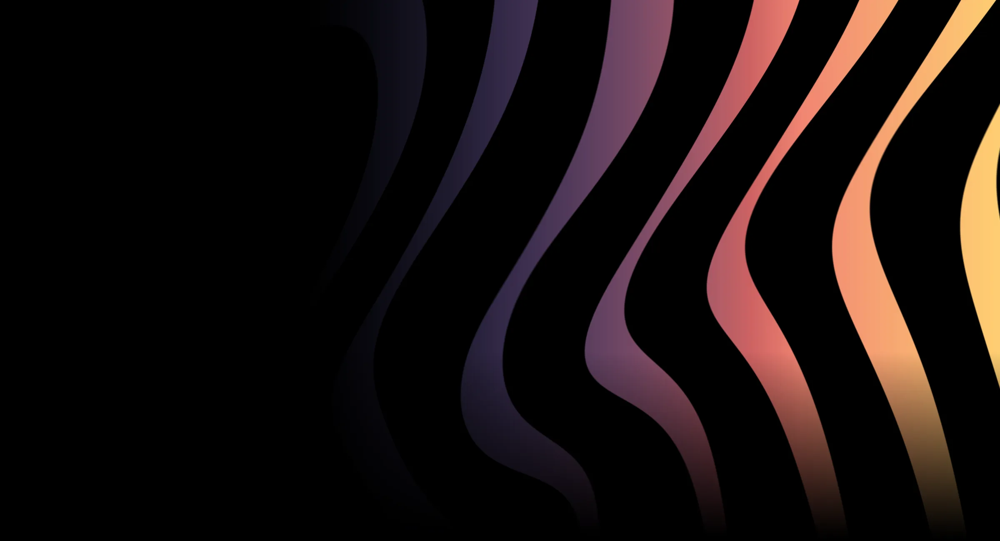
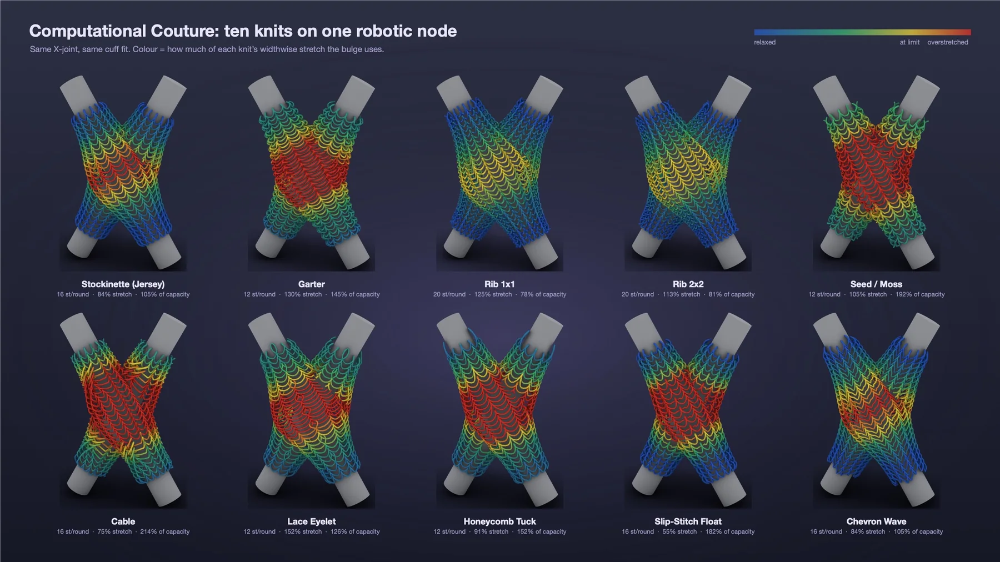

<!doctype html><html><head><meta charset=utf8><meta name=viewport content="width=device-width,initial-scale=1,viewport-fit=cover"><link rel=icon href="data:image/svg+xml,%3Csvg xmlns='http://www.w3.org/2000/svg' viewBox='0 0 28 28'%3E%3Crect width='28' height='28' fill='%230B0B0C'/%3E%3Cpath d='M4 4h20v6h-7v14h-6V10H4z' fill='%23FF5A1F'/%3E%3C/svg%3E"><style>:root{color-scheme:light;box-sizing:border-box;padding-top:env(safe-area-inset-top,0px);padding-bottom:env(safe-area-inset-bottom,0px)}html{scroll-padding-top:env(safe-area-inset-top,0px)}body{margin:0;padding:0;font:14px -apple-system,BlinkMacSystemFont,sans-serif;background:#fff;color:#000}img{max-width:100%}[hidden]:not([hidden=until-found i]){display:none!important}
/* HOUSE TABLE: one professional table system for every spec/data table */
.tbl-wrap{overflow-x:auto;-webkit-overflow-scrolling:touch;max-width:100%;margin-top:24px}
table.tbl{width:100%;border-collapse:collapse;border-spacing:0;font:13px/1.45 var(--body,inherit);font-variant-numeric:tabular-nums;border-top:2px solid currentColor;margin-top:24px}
.tbl-wrap>table.tbl{margin-top:0}
table.tbl thead th{font:600 10px/1.3 var(--mono);letter-spacing:.1em;text-transform:uppercase;text-align:left;vertical-align:bottom;padding:12px 16px 10px 0;border-bottom:1px solid color-mix(in srgb,currentColor 40%,transparent);color:inherit;opacity:1}
table.tbl thead th{color:color-mix(in srgb,currentColor 62%,transparent)}
table.tbl td,table.tbl tbody th{padding:12px 16px 12px 0;border-bottom:1px solid color-mix(in srgb,currentColor 12%,transparent);vertical-align:top;text-align:left}
table.tbl tbody th{font:700 11.5px/1.4 var(--mono);letter-spacing:.06em;text-transform:uppercase;white-space:nowrap}
table.tbl tbody th small{display:block;font-weight:400;font-size:10px;letter-spacing:.08em;opacity:.5;margin-top:2px}
table.tbl tbody tr:last-child>*{border-bottom:1px solid color-mix(in srgb,currentColor 40%,transparent)}
table.tbl tbody tr:not(.tbl-grp):hover>*{background:color-mix(in srgb,currentColor 4%,transparent)}
table.tbl thead th.n,table.tbl td.n{text-align:right;padding-right:28px;font-family:var(--mono);white-space:nowrap}
table.tbl .why{color:color-mix(in srgb,currentColor 72%,transparent);max-width:62ch;min-width:280px}
table.tbl .na{opacity:.35}
table.tbl .chip{display:inline-block;font:600 10px/1 var(--mono);letter-spacing:.08em;text-transform:uppercase;padding:5px 7px;border:1px solid currentColor;white-space:nowrap}
table.tbl tr.tbl-grp th{font:700 10px/1 var(--mono);letter-spacing:.12em;text-transform:uppercase;color:#FF5A1F;padding:20px 0 8px;border-bottom:1px solid rgba(255,90,31,.4);background:none}
.mtr{display:inline-block;position:relative;width:72px;height:6px;vertical-align:middle;background:color-mix(in srgb,currentColor 12%,transparent);margin-right:10px}
table.tbl .mtr i{display:block;border-radius:0;margin:0;height:auto;width:auto;position:absolute;left:0;top:0;bottom:0;background:color-mix(in srgb,currentColor 75%,transparent)}
table.tbl .mtr u{display:block;border-radius:0;margin:0;height:auto;position:absolute;left:70.8%;top:-3px;bottom:-3px;width:1px;background:currentColor;text-decoration:none}
table.tbl .mtr-lim i{background:#B8862E}table.tbl .mtr-ov i{background:repeating-linear-gradient(135deg,#DC3228 0 3px,rgba(220,50,40,.45) 3px 6px)}
.mtr-v{font:700 12px var(--mono);white-space:nowrap}
.hk-spec td:nth-child(4){white-space:nowrap}
.tbl-key{margin-top:12px}.hm-key .k-tick{width:1px;height:12px;background:currentColor}
@media (max-width:760px){.tbl-wrap table.tbl{min-width:760px}table.tbl{font-size:12.5px}table.tbl td,table.tbl tbody th,table.tbl thead th{padding-right:12px}}
.hs-trio-img{position:relative}.hs-trio-img span{position:absolute;top:4%;transform:translateX(-50%);font:700 13px/1.2 var(--mono);letter-spacing:.1em;color:#FF5A1F;text-align:center;white-space:nowrap;pointer-events:none}.hs-trio-img span small{display:block;color:#F2EEE6;opacity:.7;font-weight:400;font-size:9.5px;margin-top:3px}@media (max-width:600px){.hs-trio-img span{font-size:8.5px}.hs-trio-img span small{display:none}}
.spc-tape{margin-top:56px}.spc-hd{display:flex;align-items:baseline;gap:14px;flex-wrap:wrap;border-top:2px solid currentColor;padding-top:14px}.spc-hd h3{font-size:24px;margin:0;text-transform:uppercase;letter-spacing:.01em}.spc-n{font:700 12px var(--mono);color:#FF5A1F}.spc-hd .era{font:11px var(--mono);letter-spacing:.06em;text-transform:uppercase;opacity:.6}
.sp-vz[data-rm="vz"] img.cg,.sp-vz[data-rm="cg"] img.vz{display:none}
.sp-steps{margin-top:8px}.sp-steps h3{font-size:20px;margin:0 0 6px}.sp-steps p{margin:0;font-size:15px;line-height:1.45}
.spc-board{position:relative;margin:16px 0 0}.spc-board img{display:block;width:100%;height:auto}
.spc-tags span{position:absolute;top:79%;transform:translateX(-50%);font:700 11px var(--mono);letter-spacing:.08em;color:#FF5A1F}
table.spc-t td{vertical-align:middle}.spc-chip{display:inline-flex;align-items:center;gap:8px;margin:2px 14px 2px 0;white-space:nowrap}.spc-chip i{width:18px;height:18px;box-shadow:inset 0 0 0 1px rgba(0,0,0,.18)}.spc-chip b{font:700 11px var(--mono)}.spc-chip small{font:10px var(--mono);opacity:.55}
.spc-arrow{color:#FF5A1F;font-weight:700}.spc-note{margin-top:28px;font-size:13px}
@media (max-width:700px){.spc-tags span{font-size:9px}.spc-hd h3{font-size:19px}}
.cm-grid{display:grid;grid-template-columns:minmax(0,1.25fr) minmax(0,1fr);gap:40px;align-items:start;margin-top:24px}
.cm-f{margin:0}.cm-ab{width:100%;height:auto;display:block;color:inherit;background-image:linear-gradient(rgba(255,255,255,.04) 1px,transparent 1px),linear-gradient(90deg,rgba(255,255,255,.04) 1px,transparent 1px);background-size:20px 20px}
.cm-t{font:500 10px var(--mono);fill:currentColor;fill-opacity:.7;letter-spacing:.06em}.cm-o{fill:#FF5A1F;fill-opacity:1}
.cm-key{list-style:none;margin:0 0 24px;padding:0;display:grid;grid-template-columns:1fr 1fr;gap:6px 18px;font-size:13px}.cm-key b{font:700 11px var(--mono);color:#FF5A1F;margin-right:6px}
.cm-h{font:700 11px var(--mono);letter-spacing:.12em;margin:0 0 10px;border-top:2px solid currentColor;padding-top:10px}
.cm-lad{list-style:none;margin:0;padding:0;columns:2;column-gap:18px}.cm-lad li{display:grid;grid-template-columns:14px 34px 1fr auto;gap:8px;align-items:center;padding:4px 0;border-bottom:1px solid color-mix(in srgb,currentColor 12%,transparent);break-inside:avoid;font-size:12px}
.cm-lad i{width:14px;height:14px;border:1px solid color-mix(in srgb,currentColor 35%,transparent)}.cm-lad span{font:500 11px var(--mono);text-align:right}.cm-lad small{font:500 10px var(--mono);opacity:.6}
@media(max-width:820px){.cm-grid{grid-template-columns:1fr}.cm-lad{columns:1}}
.nt-spec td.nt-lab{white-space:normal}.nt-spec td.nt-lab .spc-chip{margin:0}.nt-spec .spc-chip i{width:18px;height:18px;border-radius:0;margin:0;vertical-align:0}
@media(max-width:900px){.nt-spec td.nt-lab .spc-chip{flex-wrap:wrap;white-space:normal;gap:2px 8px}.nt-spec td.nt-lab .spc-chip small{flex-basis:100%;white-space:nowrap}}
.sp-strip{grid-template-columns:repeat(5,minmax(0,1fr))!important}
.sp-mat{display:flex;align-items:center;gap:3px;margin-top:10px;padding:0;background:none;border:0;color:inherit;cursor:pointer;font:700 10px var(--mono);letter-spacing:.12em}
.sp-mat i{width:14px;height:14px;box-shadow:inset 0 0 0 1px rgba(255,255,255,.18)}.sp-mat span{margin-left:8px;color:#FF5A1F}.sp-mat:hover span{text-decoration:underline}
.spc-tape{scroll-margin-top:90px}
@media(max-width:760px){.sp-strip{display:flex!important;overflow-x:auto;scroll-snap-type:x mandatory;gap:12px;padding-bottom:8px;max-width:100%}.sp-strip .tile{flex:0 0 62%;scroll-snap-align:start}}
.sp-hot{position:absolute;inset:0;pointer-events:none}.sp-hot span{position:absolute;display:flex;gap:8px;align-items:center;font:600 10px/1 var(--mono);letter-spacing:.1em;text-transform:uppercase;color:#F3EFE6;background:rgba(14,14,16,.72);padding:6px 9px;white-space:nowrap;backdrop-filter:blur(3px)}
.sp-hot b{color:#FF5A1F;font-weight:700}
@media(max-width:760px){.sp-hot span{font-size:0;gap:0;padding:4px 6px}.sp-hot b{font-size:10px}}
.pov{display:grid;grid-template-columns:repeat(3,minmax(0,1fr));gap:28px;margin-top:36px}
.pov-c{border-top:2px solid currentColor;padding-top:18px}.pov-c b{font:700 12px var(--mono);color:#FF5A1F;letter-spacing:.12em}.pov-c h3{margin:10px 0 10px}.pov-c p{color:var(--muted);margin:0 0 14px}
@media(max-width:860px){.pov{grid-template-columns:1fr}}
.oo-grid{display:grid;grid-template-columns:repeat(2,minmax(0,1fr));gap:48px 32px;margin-top:36px}
.oo-c .media{aspect-ratio:5/4}.oo-c h3{margin:6px 0 8px}.oo-c p{margin:0 0 8px}.oo-when{color:var(--ink,#111)}.oo-when b{font:700 11px var(--mono);letter-spacing:.12em;color:#FF5A1F;margin-right:6px}.oo-how{font:500 12px var(--mono);color:var(--muted);letter-spacing:.02em}
@media(max-width:760px){.oo-grid{grid-template-columns:1fr}}

/* PRESS PLAY deck */
.vx-sec{background-image:linear-gradient(rgba(255,255,255,.035) 1px,transparent 1px),linear-gradient(90deg,rgba(255,255,255,.035) 1px,transparent 1px);background-size:24px 24px}
.vx{--vacc:#FF5A1F;margin-top:32px;user-select:none;overflow-x:clip}
.vx-rig{display:grid;grid-template-columns:minmax(0,1fr);justify-items:center;gap:0;max-width:820px;margin:0 auto}
.vx-mt{font:600 9px/1 var(--mono);letter-spacing:.16em;text-transform:uppercase;color:#8F8A80}.vx-mt.o{color:#FF5A1F}
.vx-tv{width:78%;}
.vx-tvb{background:linear-gradient(#2A2B2F,#1B1C1F);border-radius:22px 22px 8px 8px;padding:22px 22px 12px;box-shadow:inset 0 1px 0 rgba(255,255,255,.08),0 30px 60px rgba(0,0,0,.5)}
.vx-crt{background:#050607;border-radius:28px/22px;padding:10px;box-shadow:inset 0 0 0 3px #0E0F11,inset 0 0 40px rgba(0,0,0,.9)}
.vx-scr{position:relative;aspect-ratio:4/3;border-radius:22px/18px;overflow:hidden;background:#0A0E0C;transition:filter .3s}
.vx-scr::after{content:"";position:absolute;inset:0;pointer-events:none;background:repeating-linear-gradient(0deg,rgba(0,0,0,.18) 0 1px,transparent 1px 3px),radial-gradient(120% 90% at 50% 45%,transparent 55%,rgba(0,0,0,.55) 100%);mix-blend-mode:multiply}
.vx-scr::before{content:"";position:absolute;left:0;right:0;top:50%;height:2px;background:#E8FFF4;transform:scaleX(0);opacity:0;z-index:3}
.vx-scr.on::before{animation:vxOn .45s ease-out}
@keyframes vxOn{0%{transform:scaleX(0);opacity:1}50%{transform:scaleX(1);opacity:1}100%{transform:scaleX(1) scaleY(140);opacity:0}}
.vx-osd{position:absolute;left:6%;top:6%;z-index:2;font:700 14px var(--mono);letter-spacing:.12em;color:#7CFF9B;text-shadow:0 0 6px rgba(124,255,155,.6)}
[data-state=empty] .vx-osd{left:50%;top:50%;transform:translate(-50%,-50%);color:#5C6660;text-shadow:none}
.vx-reel{position:absolute;inset:0;display:grid}
.vx-reel>*{animation:vxIn .35s ease-out}@keyframes vxIn{from{opacity:0;filter:blur(3px)}to{opacity:1;filter:none}}
.vx-bars{display:flex;height:100%;grid-area:1/1}.vx-bars i{flex:1}
.vx-sub{grid-area:1/1;align-self:end;display:flex;height:12%;margin-bottom:28%}.vx-sub i{flex:1}
.vx-title{grid-area:1/1;align-self:end;height:30%;display:flex;flex-direction:column;justify-content:center;padding:0 7%}
.vx-title b{font-size:clamp(26px,5.6vw,54px);line-height:1;font-weight:900}.vx-title span{font:600 13px var(--sans);margin-top:4px;letter-spacing:.06em}.vx-title small{font:600 10px var(--mono);letter-spacing:.14em;text-transform:uppercase;margin-top:4px}
.vx-type{grid-area:1/1;padding:12% 8% 8%;display:flex;flex-direction:column;gap:10px}.vx-type b{font-size:clamp(34px,8vw,84px);line-height:1;font-weight:900}.vx-type span{font-size:clamp(12px,1.8vw,18px)}
.vx-chips{display:grid;grid-template-columns:repeat(6,1fr);gap:6px;margin-top:auto}.vx-chips i{aspect-ratio:1;display:flex;align-items:flex-end;box-shadow:inset 0 0 0 1px rgba(255,255,255,.18)}.vx-chips em{font:600 8px var(--mono);font-style:normal;background:rgba(0,0,0,.55);color:#fff;padding:2px 3px;width:100%}
.vx-comp{grid-area:1/1;display:flex;flex-wrap:wrap;align-content:center;justify-content:center;gap:14px;padding:8%}
.vx-pill{font-weight:700;font-size:clamp(14px,2vw,22px);padding:.55em 1.2em;border-radius:999px}.vx-pill.o{border:2px solid;background:transparent}
.vx-meter{flex-basis:100%;display:flex;gap:4px;height:22px;margin-top:10px}.vx-meter i{flex:1;opacity:.95;animation:vxMet 1.1s ease-in-out infinite alternate}.vx-meter i:nth-child(n+8){animation-delay:.2s}.vx-meter i:nth-child(n+11){animation-delay:.45s;opacity:.6}
@keyframes vxMet{from{opacity:.25}to{opacity:1}}
.vx-ttl{grid-area:1/1;background:#07090B;display:grid;grid-template-columns:repeat(4,1fr);place-items:center;padding:10%}
.vx-ttl span{color:#1A2227}.vx-ttl svg{width:clamp(28px,5vw,54px);height:auto;fill:none;stroke:currentColor;stroke-width:2.25;stroke-linecap:round;stroke-linejoin:round}
.vx-ttl .c0{color:#FF3B30;filter:drop-shadow(0 0 8px #FF3B30)}.vx-ttl .c1{color:#FFB23E;filter:drop-shadow(0 0 8px #FFB23E)}.vx-ttl .c2{color:#4CFF6A;filter:drop-shadow(0 0 8px #4CFF6A)}.vx-ttl .c3{color:#3FA9FF;filter:drop-shadow(0 0 8px #3FA9FF)}
.vx-led{display:inline-block;width:7px;height:7px;border-radius:50%;background:#3A2A22;margin-right:6px;vertical-align:middle;transition:background .3s,box-shadow .3s}[data-state=play] .vx-led,[data-state=stop] .vx-led{background:#FF5A1F;box-shadow:0 0 8px #FF5A1F}
.vx-tvs{display:flex;justify-content:space-between;align-items:center;padding:12px 6px 2px}
.kn{display:inline-block;width:22px;height:22px;border-radius:50%;background:repeating-conic-gradient(#9DA1A5 0 6deg,#5D6166 6deg 12deg);box-shadow:inset 0 0 0 4px #2B2D31,0 2px 3px rgba(0,0,0,.5);margin-left:8px}
.kn.big{width:40px;height:40px;box-shadow:inset 0 0 0 7px #2B2D31,0 0 0 2px var(--vacc),0 3px 5px rgba(0,0,0,.5)}
.vx-vcr{width:100%;margin-top:-6px;position:relative;z-index:1}
.vx-top{display:flex;justify-content:space-between;background:#232428;border-radius:8px 8px 0 0;padding:10px 18px;border-bottom:1px solid #111}
.vx-face{display:grid;grid-template-columns:1.3fr 1.4fr .75fr .55fr;gap:18px;align-items:center;background:linear-gradient(#1D1E21,#141518);padding:20px 18px 22px;border-radius:0 0 10px 10px;box-shadow:inset 0 1px 0 rgba(255,255,255,.05),0 24px 40px rgba(0,0,0,.45);border-top:3px solid var(--vacc);transition:border-color .4s}
.vx-slot,.vx-well{position:relative;display:grid;gap:8px;justify-items:start}
.vx-flap{display:block;width:100%;aspect-ratio:5/1;background:linear-gradient(#08090A,#16171A);border-radius:4px;box-shadow:inset 0 2px 6px #000,0 0 0 1px #2F3034;position:relative;overflow:hidden}
.vx-flap::after{content:"";position:absolute;inset:18% 4%;border-radius:2px;background:linear-gradient(#2A2B30,#1C1D21);transform-origin:top;transition:transform .35s}
.full .vx-flap::after{transform:perspective(200px) rotateX(-70deg)}
.vx-door{display:block;width:100%;aspect-ratio:1.6/1;border-radius:6px;background:linear-gradient(135deg,rgba(120,130,140,.25),rgba(20,22,26,.9));box-shadow:inset 0 0 0 2px #2F3034,inset 0 2px 8px #000;position:relative;overflow:hidden}
.full .vx-door{background:linear-gradient(135deg,rgba(46,242,208,.25),rgba(20,22,26,.85))}
.full .vx-door::after{content:"C-46";position:absolute;inset:auto 10% 18% 10%;font:700 10px var(--mono);color:#2EF2D0;letter-spacing:.12em;text-align:center;border-top:2px solid #2EF2D0;padding-top:4px}
.vx-vfd{display:flex;justify-content:space-between;gap:10px;background:#050708;border-radius:4px;padding:10px 12px;font:600 13px var(--mono);letter-spacing:.12em;color:#2EF2D0;text-shadow:0 0 8px rgba(46,242,208,.6);box-shadow:inset 0 0 0 1px #24282B;white-space:nowrap;overflow:hidden}
.vx-btns{display:flex;gap:6px;margin-top:10px}
.vx-btns button{all:unset;cursor:pointer;flex:1;text-align:center;font:700 11px var(--mono);color:#D9D6CE;background:linear-gradient(#34363B,#25272B);border-radius:4px;padding:9px 0;box-shadow:0 2px 0 #0B0C0E,inset 0 1px 0 rgba(255,255,255,.08)}
.vx-btns button:active{transform:translateY(2px);box-shadow:none}.vx-btns button:focus-visible{outline:2px solid #FF5A1F;outline-offset:2px}
.vx-btns .pl{background:var(--vacc);color:#0B0B0C;transition:background .4s}.vx-btns [aria-pressed=true]{box-shadow:inset 0 2px 4px rgba(0,0,0,.4)}
.vx-trk{display:grid;justify-items:center;gap:8px}
.vx-feet{display:flex;justify-content:space-between;padding:0 8%}.vx-feet i{width:60px;height:8px;background:#0C0D0F;border-radius:0 0 4px 4px}
.vx-shelf{display:flex;justify-content:center;align-items:flex-end;gap:18px;flex-wrap:wrap;margin-top:40px;padding:22px 0 8px;border-top:2px solid #2B2C30}
.vx-tape{all:unset;cursor:grab;display:grid;justify-items:center;gap:8px;touch-action:none;position:relative;z-index:2}
.vx-tape:focus-visible .vx-body{outline:2px solid #FF5A1F;outline-offset:4px}
.vx-tape.drag{cursor:grabbing;z-index:20}.vx-tape.drag .vx-body{box-shadow:0 24px 40px rgba(0,0,0,.6)}
.vx-tape.in{opacity:0;pointer-events:none;transition:opacity .2s .1s,transform .55s cubic-bezier(.5,0,.2,1)!important}
.vx-body{position:relative;display:block;width:150px;aspect-ratio:1.8/1;background:linear-gradient(#1A191F,#0F0E13);border-radius:4px;box-shadow:inset 0 1px 0 rgba(255,255,255,.08),0 8px 18px rgba(0,0,0,.45);transition:transform .2s}
.vx-tape:hover .vx-body{transform:translateY(-4px)}
.vx-lab{position:absolute;left:8%;right:8%;top:10%;height:38%;background:var(--tb);color:var(--tf);border-radius:2px;display:flex;align-items:center;gap:6px;padding:0 6px;overflow:hidden;box-shadow:inset 0 0 0 1px rgba(255,255,255,.1)}
.vx-lab b{font-family:var(--tfont);font-size:15px;font-weight:900;line-height:1}.vx-lab small{font:600 7px var(--mono);letter-spacing:.08em;text-transform:uppercase;opacity:.85;white-space:nowrap}
.vx-lab i{position:absolute;right:0;top:0;bottom:0;width:26%;opacity:.95}
.vx-win{position:absolute;left:22%;right:22%;bottom:12%;height:28%;background:rgba(60,54,70,.55);border-radius:3px;display:flex;justify-content:space-around;align-items:center;box-shadow:inset 0 0 0 1px rgba(255,255,255,.08)}
.vx-win i,.vx-hubs i{width:16%;aspect-ratio:1;border-radius:50%;background:radial-gradient(circle,#EDE8DC 0 30%,#3B2414 32% 100%)}
.vx-tape.au .vx-body{width:110px;aspect-ratio:1.57/1;background:linear-gradient(#22272C,#121518)}
.vx-tape.au .vx-lab{height:44%}.vx-tape.au .vx-lab b{font-size:12px}.vx-tape.au .vx-lab small{display:none}
.vx-hubs{position:absolute;left:24%;right:24%;bottom:12%;height:26%;display:flex;justify-content:space-between;align-items:center}.vx-hubs i{width:22%;background:radial-gradient(circle,#D8D2C0 0 35%,#0B0C0E 37%)}
.vx-cap{font:700 10px var(--mono);letter-spacing:.14em;color:#8F8A80}
.vx-tt{margin-top:40px;border-top:1px solid #2B2C30;padding-top:18px}.vx-tt summary{cursor:pointer;font:700 12px var(--mono);letter-spacing:.14em;color:#D9D6CE}.vx-tt summary:hover{color:#FF5A1F}
@media(max-width:760px){.vx-top .vx-mt.o{display:none}.vx-tv{width:100%}.vx-face{grid-template-columns:1fr 1fr;gap:14px}.vx-mid{grid-column:1/-1;order:-1}.vx-trk{display:none}.vx-body{width:112px}.vx-tape.au .vx-body{width:84px}.vx-shelf{gap:12px}.vx-lab b{font-size:12px}.vx-osd{font-size:11px}}
@media (prefers-reduced-motion:reduce){.vx-scr.on::before,.vx-reel>*,.vx-meter i{animation:none}}

.spc-top{display:grid;grid-template-columns:minmax(0,.95fr) minmax(0,1.05fr);gap:36px;align-items:start;margin-top:18px}
.spc-draw{margin:0;background:#F2EEE6;background-image:linear-gradient(#E2DCD0 1px,transparent 1px),linear-gradient(90deg,#E2DCD0 1px,transparent 1px);background-size:20px 20px;border:1px solid #D6CFC2}
.spc-svg{display:block;width:100%;height:auto}.spc-svg .pin line{stroke:#FF5A1F;stroke-width:1.5}.spc-svg .pin circle{fill:#FF5A1F}.spc-svg .pin text{font:700 11px var(--mono);fill:#fff;text-anchor:middle}
@media (max-width:600px){.spc-hint{display:none}}
.spc-svg .pin text.gu{font:700 9px var(--mono);letter-spacing:.06em;fill:#FF5A1F;paint-order:stroke;stroke:#F2EEE6;stroke-width:3px;stroke-linejoin:round}
.spc-svg .dim line,.spc-svg .dim rect{stroke:#1A1A1C;stroke-width:.75;fill:none}.spc-svg .dim .tk{stroke-width:1.4}.spc-svg .dim .sb rect.f{fill:#1A1A1C}
.spc-svg .dim text{font:600 8.5px var(--mono);letter-spacing:.12em;fill:#1A1A1C}.spc-svg .dim .cap2{fill:#6b6459}.spc-svg .tb rect{fill:#F2EEE6}
.spc-svg .big{font:900 44px 'Inter Display',var(--sans)}.spc-svg .sm{font:700 10px var(--mono);letter-spacing:.08em}.spc-svg .mono{font:700 14px var(--mono)}.spc-svg .vfd{font:700 56px var(--mono)}.spc-svg .cap{font:600 9px var(--mono);letter-spacing:.16em;fill:#8F8A80}
.spc-mats{list-style:none;margin:0;padding:0;border-top:2px solid currentColor}
.spc-mats li{display:grid;grid-template-columns:30px 46px minmax(0,1fr) 108px;gap:6px 12px;align-items:start;padding:12px 0;border-bottom:1px solid color-mix(in srgb,currentColor 14%,transparent)}
.spc-mats .pn{font:700 12px var(--mono);color:#FF5A1F;padding-top:2px}
.spc-mats .sws{display:grid;grid-template-columns:repeat(2,20px);gap:3px}.spc-mats .sws i{width:20px;height:20px;box-shadow:inset 0 0 0 1px rgba(0,0,0,.2)}.spc-mats .sws i:only-child{width:43px;height:43px}
.spc-mats h4{margin:0;font-size:15px}.spc-mats .mt p{margin:2px 0 3px;font-size:13px;color:var(--muted)}.spc-mats .mt small{font:10px/1.5 var(--mono);opacity:.75}.spc-mats .mt small span{opacity:.6}
.spc-mats .gl{display:grid;gap:3px;padding-top:3px}.spc-mats .gl span{height:6px;background:color-mix(in srgb,currentColor 12%,transparent)}.spc-mats .gl i{display:block;height:100%;background:linear-gradient(90deg,#8F8A80,#FF5A1F)}
.spc-mats .gl em{font:700 12px var(--mono);font-style:normal}.spc-mats .gl small{font:600 9px var(--mono);letter-spacing:.12em;text-transform:uppercase;opacity:.65}
.spc-mats .rl{grid-column:3/-1;margin:0;font-size:13px}
.spc-bi{position:relative}.spc-board figcaption{font-size:12px;opacity:.65;margin-top:6px}
.spc-fmw{display:grid;grid-template-columns:minmax(0,1.6fr) minmax(0,1fr);gap:36px;align-items:center;margin-top:18px}.spc-fmw p{margin:0;color:var(--muted)}
.spc-fm{width:100%;height:auto;display:block}.spc-fm .gr{stroke:#D6CFC2;stroke-dasharray:2 3}.spc-fm .rw{stroke:#1A1A1C;stroke-opacity:.25}.spc-fm .ax{font:600 9px var(--mono);fill:#8F8A80;text-anchor:middle}.spc-fm .zn{font:700 8px var(--mono);letter-spacing:.12em;fill:#FF5A1F;text-anchor:middle}.spc-fm .tp{font:700 10px var(--mono);fill:currentColor}.spc-fm .axe{font:600 8px var(--mono);fill:#8F8A80;text-anchor:end;letter-spacing:.1em}
@media(max-width:900px){.spc-top,.spc-fmw{grid-template-columns:1fr}.spc-mats li{grid-template-columns:28px 46px minmax(0,1fr)}.spc-mats .gl{grid-column:3}}
.glm{display:grid;gap:3px;min-width:84px}.glm>span{height:5px;background:color-mix(in srgb,currentColor 12%,transparent)}.glm>span{display:block;overflow:hidden}.tbl .glm>span>i,.glm>span>i{display:block;height:5px!important;min-width:0;margin:0;border:0;box-shadow:none;vertical-align:top;background:linear-gradient(90deg,#8F8A80,#FF5A1F)}.glm em{font:700 11px var(--mono);font-style:normal}.glm small{font:600 8px var(--mono);letter-spacing:.12em;text-transform:uppercase;opacity:.65}.cmf-g{display:grid;grid-template-columns:minmax(0,1.25fr) minmax(0,1fr);gap:40px;align-items:start;margin-top:22px}.cmf-g aside{position:sticky;top:90px}.cmf-bar{display:flex;height:44px;border:1px solid color-mix(in srgb,currentColor 25%,transparent)}.cmf-bar i{flex:1}.cmf-fm{margin-top:6px}.cmf-fm.m{display:none}.cmf-fm .z0{fill:color-mix(in srgb,currentColor 4%,transparent)}.cmf-fm .z1{fill:color-mix(in srgb,currentColor 8%,transparent)}.cmf-fm .pt{font:700 8px var(--mono);text-anchor:middle}.cmf-p .spc-mats .mt p{color:inherit;opacity:.7}
@media(max-width:900px){.cmf-fm.d{display:none}.cmf-fm.m{display:block}.cmf-g{grid-template-columns:1fr}.cmf-g aside{position:static}}

.spc-draw{perspective:900px;overflow:hidden;position:relative}.spc-draw .spc-svg{transform:rotateX(var(--rx,0deg)) rotateY(var(--ry,0deg));transition:transform .25s ease-out;transform-style:preserve-3d}
.spc-svg .z-sh{filter:blur(6px);opacity:.22;transform:translate(calc(var(--px,0)*-6px + 8px),calc(var(--py,0)*-6px + 12px));pointer-events:none}.spc-svg .z-sh *{fill:#1A1A1C!important;stroke:none!important}.spc-svg .z-sh text{display:none}
.spc-svg .z-obj{transform:translate(calc(var(--px,0)*4px),calc(var(--py,0)*4px));transition:transform .25s ease-out}.spc-svg .z-pin{transform:translate(calc(var(--px,0)*6px),calc(var(--py,0)*6px));transition:transform .25s ease-out}
.spc-draw:not(.on) .pin{opacity:0;transform:scale(.4)}.spc-svg .pin{transform-box:fill-box;transform-origin:center;transition:opacity .35s var(--d,0s),transform .45s cubic-bezier(.3,1.6,.5,1) var(--d,0s)}
.spc-draw.on .spc-svg [class^="a-"],.spc-draw.on .spc-svg [class*=" a-"]{animation-play-state:running}
.spc-svg [class^="a-"],.spc-svg [class*=" a-"]{animation-play-state:paused;transform-box:fill-box;transform-origin:center}
.spc-svg .a-spin{animation:aSpin 1.6s linear infinite}@keyframes aSpin{to{transform:rotate(-360deg)}}
.spc-svg .a-tape1{animation:aTape1 12s ease-in-out infinite alternate}.spc-svg .a-tape2{animation:aTape2 12s ease-in-out infinite alternate}@keyframes aTape1{to{transform:scale(.68)}}@keyframes aTape2{to{transform:scale(1.5)}}
.spc-svg .a-glint{animation:aGlint 3.5s ease-in-out infinite}@keyframes aGlint{0%,100%{opacity:0;transform:translateY(0)}50%{opacity:.12;transform:translateY(34px)}}
.spc-svg .a-wob{animation:aWob 3s ease-in-out infinite}@keyframes aWob{0%,100%{transform:rotate(-6deg)}50%{transform:rotate(6deg)}}
.spc-svg .a-ty{opacity:0;animation:aTy .01s steps(1) var(--t) forwards}@keyframes aTy{to{opacity:1}}
.spc-svg .a-blink{animation:aBlink 1s steps(1) infinite}@keyframes aBlink{50%{opacity:0}}
.spc-svg .a-scan{animation:aScan 4s linear infinite;transform-box:view-box}@keyframes aScan{from{transform:translateY(0)}to{transform:translateY(166px)}}
.spc-svg .a-led{animation:aLed 1.7s steps(1) infinite}@keyframes aLed{0%,18%,40%,46%{opacity:1}12%,30%,44%,70%{opacity:.25}}
.spc-svg .a-key{animation:aKey 3s ease-in-out var(--k) infinite}@keyframes aKey{0%,8%,100%{transform:translateY(0)}4%{transform:translateY(2px);fill:#FF5A1F}}
.spc-svg .a-ndl{transform-box:view-box;transform-origin:180px 222px;animation:aNdl 2.2s cubic-bezier(.4,.1,.3,1) infinite}@keyframes aNdl{0%{transform:rotate(-62deg)}18%{transform:rotate(-8deg)}30%{transform:rotate(-28deg)}46%{transform:rotate(6deg)}62%{transform:rotate(-40deg)}80%{transform:rotate(-14deg)}100%{transform:rotate(-62deg)}}
.spc-svg .a-vu{animation:aVu 2.2s ease-in-out infinite}@keyframes aVu{50%{filter:brightness(1.12) drop-shadow(0 0 8px #F5A623)}}
.spc-svg .a-knob{animation:aKnob 6s ease-in-out infinite}@keyframes aKnob{0%,100%{transform:rotate(-30deg)}50%{transform:rotate(40deg)}}
.spc-svg .a-bob{animation:aBob 1s steps(2) infinite}@keyframes aBob{50%{transform:translateY(-10px)}}
.spc-svg .a-btn{animation:aBtn 1.8s ease-in-out var(--k) infinite}@keyframes aBtn{0%,14%,100%{transform:scale(1)}7%{transform:scale(.86);filter:brightness(.8)}}
.spc-svg .a-bar{animation:aBar 2.4s ease-in-out var(--k) infinite}@keyframes aBar{0%,100%{opacity:.25}20%,70%{opacity:1}}
.spc-svg .a-lamp{animation:aLamp 1.4s steps(1) infinite}@keyframes aLamp{60%{opacity:.15}}
@media (hover:none){.spc-hint{display:none}}.spc-hint{font:600 9px var(--mono);letter-spacing:.14em;text-transform:uppercase;color:#8F8A80;position:absolute;right:10px;bottom:8px;pointer-events:none}
@media (prefers-reduced-motion:reduce){.spc-svg [class^="a-"],.spc-svg [class*=" a-"]{animation:none!important;opacity:1!important}.spc-draw .spc-svg,.spc-svg .z-obj,.spc-svg .z-pin,.spc-svg .pin{transition:none}}
.arch-g{margin-top:40px}.arch-h{display:flex;align-items:baseline;gap:16px;flex-wrap:wrap;border-top:2px solid currentColor;padding-top:12px}.arch-h h3{margin:0;font-size:18px;letter-spacing:.02em}.arch-h span{font:11px var(--mono);letter-spacing:.06em;text-transform:uppercase;opacity:.6}.arch ol{list-style:none;margin:8px 0 0;padding:0;display:grid;grid-template-columns:repeat(3,minmax(0,1fr));column-gap:28px}.arch li a{display:grid;grid-template-columns:30px minmax(0,1fr) auto;gap:2px 10px;align-items:baseline;padding:12px 0;border-bottom:1px solid color-mix(in srgb,currentColor 14%,transparent);text-decoration:none;color:inherit}.arch li b{font:700 11px var(--mono);color:#FF5A1F}.arch li span{font-weight:600}.arch li em{grid-column:2;font:10px var(--mono);font-style:normal;letter-spacing:.08em;text-transform:uppercase;opacity:.6}.arch li i{grid-row:1/3;grid-column:3;font-style:normal;color:#FF5A1F;transition:transform .2s}.arch li a:hover i{transform:translateX(4px)}.arch li a:hover span{color:#FF5A1F}
@media(max-width:900px){.arch ol{grid-template-columns:1fr 1fr}}@media(max-width:560px){.arch ol{grid-template-columns:1fr}}
</style><title>Henry Ortega · Senior Creative for Technical Products</title><meta name="description" content="Senior creative for technical products: CMF, material systems, technical documentation and computational design. 16+ years in footwear innovation. Tigre Studio, Portland, OR · open to senior IC roles.">
<meta property="og:type" content="website">
<meta property="og:url" content="https://tigrestudiodesign.github.io/">
<meta property="og:title" content="Henry Ortega · Senior Creative for Technical Products">
<meta property="og:description" content="Senior creative for technical products: CMF, material systems, technical documentation and computational design. 16+ years in footwear innovation. Tigre Studio, Portland, OR · open to senior IC roles.">
<meta property="og:image" content="https://tigrestudiodesign.github.io/img/og-card.jpg">
<meta property="og:image:width" content="1200">
<meta property="og:image:height" content="630">
<meta name="twitter:card" content="summary_large_image">
<meta name="twitter:image" content="https://tigrestudiodesign.github.io/img/og-card.jpg"></head><body>


<meta name="claude:viewport-fit-sides" content="cover">
<link rel="stylesheet" href="https://fonts.googleapis.com/css2?family=Anton&display=swap">
<link rel="stylesheet" href="https://fonts.googleapis.com/css2?family=Unbounded:wght@900&family=Questrial&family=VT323&family=Syncopate:wght@700&family=Press+Start+2P&family=Orbitron:wght@700;900&family=Chakra+Petch:wght@600&family=Noto+Sans+JP:wght@700&display=swap">
<style>
/* Layout: Tigre Studio system. Black openers and white content bands alternate; one spectrum bar per page; renders cut on a single corner; italic serif labels on the left column. Deliberately one look, colours set explicitly. */
:root{
  --black:#000000; --white:#ffffff; --muted-d:#8c8c8c; --muted-l:#595959; --alt:#f2f2f2; --grid-d:#333333; --grid-l:#d9d9d9;
  --yellow:#ffb000; --red:#e50000; --blue:#0036f9; --sky:#59c0e6;
  --sans:"Helvetica Neue",Helvetica,Arial,sans-serif;
  --serif:"Palatino Linotype",Palatino,"Book Antiqua",Georgia,serif;
  --display:"Futura Condensed ExtraBold",Anton,"Arial Narrow",sans-serif;
  color-scheme:dark;
}
html{background:var(--black);scroll-behavior:smooth}
body{background:var(--black);color:var(--white);font-family:var(--sans);font-size:16px;line-height:1.4}
a{color:inherit}
.band{padding-left:max(16px,env(safe-area-inset-left,0px));padding-right:max(16px,env(safe-area-inset-right,0px))}
.wrap{max-width:1440px;margin:0 auto}
.dark{background:var(--black);color:var(--white);--muted:var(--muted-d);--rule:var(--white);--grid:var(--grid-d);--focus:var(--sky)}
.light{background:var(--white);color:var(--black);--muted:var(--muted-l);--rule:var(--black);--grid:var(--grid-l);--focus:var(--blue)}
.alt{background:var(--alt);color:var(--black);--muted:var(--muted-l);--rule:var(--black);--grid:var(--grid-l);--focus:var(--blue)}
:focus-visible{outline:2px solid var(--focus,var(--sky));outline-offset:2px}
.spectrum{display:block;height:8px;background:linear-gradient(90deg,var(--sky) 0%,var(--blue) 20%,var(--red) 36.5%,var(--yellow) 50%,var(--red) 63.5%,var(--blue) 80%,var(--sky) 100%)}
.spectrum.thin{height:3px}
.it{font-family:var(--serif);font-style:italic}
.muted{color:var(--muted)}

/* nav */
.nav{position:sticky;top:env(safe-area-inset-top,0px);z-index:20;background:var(--black);border-bottom:1px solid var(--grid-d)}
body::before{content:"";position:fixed;inset:0 0 auto;height:env(safe-area-inset-top,0px);z-index:21;background:var(--black)}
.nav .wrap{display:flex;align-items:center;justify-content:space-between;gap:16px;padding-block:14px;flex-wrap:wrap}
.brand{font-weight:700;font-size:13px;text-transform:uppercase;letter-spacing:.02em;text-decoration:none}
.nav ul{list-style:none;margin:0;padding:0;display:flex;gap:20px;flex-wrap:wrap}
.nav li a{font-family:var(--serif);font-style:italic;font-size:16px;color:var(--muted-d);text-decoration:none}
.nav li a:hover,.nav li a[aria-current="true"]{color:var(--white)}

/* section heading */
.section{padding-block:72px}
.eyebrow{font-weight:700;font-size:13px;text-transform:uppercase;letter-spacing:.02em;color:var(--muted);margin:0 0 12px}
.sh-title{font-weight:700;font-size:clamp(36px,5vw,64px);line-height:.95;letter-spacing:-.02em;margin:0 0 20px;text-wrap:balance}
.sh-sub{font-family:var(--serif);font-style:italic;font-size:clamp(20px,2vw,26px);line-height:1.2;margin:0;padding-bottom:16px;border-bottom:2px solid var(--rule)}
.intro{font-size:clamp(19px,1.8vw,24px);line-height:1.2;max-width:46ch;margin:24px 0 0}
.chips{display:flex;flex-wrap:wrap;gap:8px;list-style:none;margin:20px 0 0;padding:0}
.chips li{border:1px solid var(--grid);padding:5px 10px;font-size:13px}

/* hero */
.hero{padding-block:48px 56px;display:grid;gap:28px}
.name{font-family:var(--display);font-weight:800;text-transform:uppercase;font-size:clamp(64px,13vw,200px);line-height:.9;margin:0;letter-spacing:.005em}
.hero-grid{display:grid;grid-template-columns:minmax(0,260px) minmax(0,1fr);gap:48px}
.hero-grid .who{font-family:var(--serif);font-style:italic;font-size:22px;line-height:1.25;margin:0}
.hero-grid .who span{display:block;font-family:var(--sans);font-style:normal;font-size:13px;color:var(--muted);margin-top:10px;text-transform:uppercase;font-weight:700;letter-spacing:.02em}
.role{font-weight:700;font-size:clamp(24px,3vw,40px);line-height:1.02;letter-spacing:-.015em;margin:0}
.lead{font-size:clamp(19px,1.8vw,24px);line-height:1.2;max-width:40ch;margin:14px 0 0}
.ctas{display:flex;flex-wrap:wrap;gap:12px;margin-top:24px}
.btn{display:inline-flex;align-items:center;gap:8px;font-family:var(--serif);font-style:italic;font-size:16px;padding:7px 22px;border:1px solid var(--white);background:var(--black);color:var(--white);text-decoration:none}
.btn:hover{background:var(--blue)}
.btn.inv{background:var(--white);color:var(--black)}
.btn.inv:hover{background:var(--sky)}
.stats{display:grid;grid-template-columns:repeat(4,minmax(0,1fr));gap:24px;margin-top:8px}
.stats div{border-top:2px solid var(--rule);padding-top:10px}
.stats b{display:block;font-size:clamp(40px,5vw,72px);line-height:.95;letter-spacing:-.02em;font-variant-numeric:tabular-nums}
.stats span{font-family:var(--serif);font-style:italic;color:var(--muted)}
.steps{display:flex;flex-wrap:wrap;gap:6px 24px;list-style:none;margin:0;padding:0;font-weight:700;font-size:13px;text-transform:uppercase;color:var(--muted)}
@media (max-width:760px){.hero-grid{grid-template-columns:1fr;gap:16px}.stats{grid-template-columns:repeat(2,minmax(0,1fr))}}

/* tiles */
.tiles{display:grid;grid-template-columns:repeat(5,minmax(0,1fr));gap:16px;padding-top:32px}
@media (max-width:1100px){.tiles{grid-template-columns:repeat(3,minmax(0,1fr))}}
@media (max-width:600px){.tiles{grid-template-columns:repeat(2,minmax(0,1fr))}}
.tile{text-decoration:none;min-width:0;display:grid;gap:2px}
.tile .media{aspect-ratio:4/5}
.tile small{font-weight:700;font-size:11px;text-transform:uppercase;letter-spacing:.03em;color:var(--muted);margin-top:10px}
.tile h3{font-weight:700;font-size:20px;line-height:1.05;margin:0}
.tile:hover h3{text-decoration:underline;text-decoration-thickness:2px;text-underline-offset:4px}
.cards{display:grid;grid-template-columns:repeat(3,minmax(0,1fr));gap:24px;padding-top:32px}
@media (max-width:900px){.cards{grid-template-columns:repeat(2,minmax(0,1fr))}}
@media (max-width:560px){.cards{grid-template-columns:1fr}}
.card{text-decoration:none;display:grid;gap:2px;min-width:0}
.card .media{aspect-ratio:16/10}
.card h3{font-weight:700;font-size:22px;line-height:1.05;margin:14px 0 2px}
.card p{margin:0;font-family:var(--serif);font-style:italic;color:var(--muted)}
.card:hover h3{text-decoration:underline;text-decoration-thickness:2px;text-underline-offset:4px}
.media{overflow:hidden;background:#1a1a1a;max-width:100%;position:relative}
.light .media,.alt .media{background:#e6e6e6}
.media img{display:block;width:100%;height:100%;object-fit:cover}
.tr{border-top-right-radius:24px}.bl{border-bottom-left-radius:24px}
.tr-l{border-top-right-radius:64px}.bl-l{border-bottom-left-radius:64px}
@media (max-width:640px){.tr-l{border-top-right-radius:24px}.bl-l{border-bottom-left-radius:24px}}
.path{list-style:none;margin:32px 0 0;padding:0;display:grid;grid-template-columns:repeat(4,minmax(0,1fr));gap:0;border-top:2px solid var(--rule)}
.path li{display:grid;gap:2px;padding:12px 16px 0 0;position:relative}
.path li::before{content:"";position:absolute;top:-7px;left:0;width:12px;height:12px;border-radius:50%;background:var(--sky)}
.path li:last-child::before{background:var(--yellow)}
.path span{font-size:12px;font-weight:700;text-transform:uppercase;letter-spacing:.03em;color:var(--muted);margin-top:8px}
.path b{font-size:17px;line-height:1.15}
.path i{font-family:var(--serif);color:var(--muted)}
@media (max-width:760px){.path{grid-template-columns:repeat(2,minmax(0,1fr));row-gap:20px}}
.skillcard .media{aspect-ratio:16/10}
.skill{position:absolute;inset:0;background:var(--alt);color:var(--black);padding:20px 22px;display:flex;flex-direction:column;gap:8px;background-image:linear-gradient(var(--grid-l) 1px,transparent 1px),linear-gradient(90deg,var(--grid-l) 1px,transparent 1px);background-size:32px 32px}
.skill-k{margin:0;font-weight:700;font-size:11px;text-transform:uppercase;letter-spacing:.04em;color:var(--blue)}
.skill-h{margin:0;font-weight:700;font-size:clamp(24px,2.4vw,34px);line-height:.98;letter-spacing:-.015em;text-wrap:balance}
.skill-c{list-style:none;margin:auto 0 0;padding:0;display:flex;flex-wrap:wrap;gap:6px}
.skill-c li{font-size:12px;border:1px solid var(--black);padding:2px 8px;background:var(--alt);font-family:ui-monospace,Menlo,Consolas,monospace}
.skillcard .learned{font-family:var(--sans);font-style:normal;color:var(--white);font-size:15px;line-height:1.35;margin:4px 0 6px;max-width:46ch}
.sheet{position:absolute;inset:0;background:var(--alt);color:var(--black);padding:18px 20px;display:flex;flex-direction:column;gap:10px;overflow:hidden;background-image:linear-gradient(var(--grid-l) 1px,transparent 1px),linear-gradient(90deg,var(--grid-l) 1px,transparent 1px);background-size:32px 32px}
.sheet-k{margin:0;font-weight:700;font-size:11px;text-transform:uppercase;letter-spacing:.04em;color:var(--blue)}
.sheet ol{list-style:none;margin:0;padding:0;display:grid;gap:5px;font-size:14px;line-height:1.2}
.sheet ol li{display:flex;gap:10px;background:var(--alt);padding:2px 0}
.sheet ol b{font-variant-numeric:tabular-nums;color:var(--muted-l);font-size:12px;min-width:18px}
.sheet-t{list-style:none;margin:auto 0 0;padding:0;display:flex;flex-wrap:wrap;gap:6px}
.sheet-t li{font-size:11px;border:1px solid var(--black);padding:1px 7px;background:var(--alt)}
.ph{display:grid;place-items:center;height:100%;font-family:var(--serif);font-style:italic;color:var(--muted);font-size:14px;padding:16px;text-align:center}
.ph svg{position:absolute;inset:0;width:100%;height:100%}

/* documentation */
.doc-grid{display:grid;grid-template-columns:minmax(0,1fr) minmax(0,1fr);gap:48px;padding-top:32px}
.doc-grid p{margin:0;max-width:52ch;font-size:18px}
.roles{list-style:none;margin:0;padding:0;display:grid;gap:0}
.roles li{border-top:1px solid var(--grid);padding:10px 0;font-weight:700}
@media (max-width:820px){.doc-grid{grid-template-columns:1fr;gap:24px}}
.anat{display:grid;grid-template-columns:repeat(4,minmax(0,1fr));gap:0;list-style:none;margin:24px 0 0;padding:0;border-top:2px solid var(--rule)}
.anat li{padding:14px 12px 14px 0;border-bottom:1px solid var(--grid);display:flex;gap:12px;align-items:baseline}
.anat b{font-variant-numeric:tabular-nums;color:var(--muted);font-size:13px}
@media (max-width:760px){.anat{grid-template-columns:repeat(2,minmax(0,1fr))}}
.caps{display:grid;gap:48px;padding-top:40px}
.cap{display:grid;grid-template-columns:minmax(0,340px) minmax(0,1fr);gap:40px;align-items:start}
.cap h3{font-weight:700;font-size:28px;line-height:1;margin:0 0 10px}
.cap p{margin:0}
.pages{display:grid;grid-template-columns:repeat(4,minmax(0,1fr));gap:16px}
.pages figure{margin:0;min-width:0}
.pages figcaption{font-size:12px;margin-top:6px}
.pages figcaption i{display:block;color:var(--muted)}
.sil{position:relative;aspect-ratio:16/9;background:var(--white);border:1px solid var(--grid);overflow:hidden}
.sil i{position:absolute;display:block}
@media (max-width:900px){.cap{grid-template-columns:1fr;gap:16px}.pages{grid-template-columns:repeat(2,minmax(0,1fr))}}
.timeline{display:grid;gap:40px;padding-top:40px}
.era{display:grid;grid-template-columns:minmax(0,260px) minmax(0,1fr);gap:40px;border-top:2px solid var(--rule);padding-top:16px}
.era h3{font-weight:700;font-size:24px;line-height:1.05;margin:4px 0 8px}
.era p{margin:0;color:var(--muted)}
.docs{list-style:none;margin:0;padding:0;display:grid;grid-template-columns:repeat(auto-fill,minmax(190px,1fr));gap:12px}
.docs li{border:1px solid var(--grid);padding:12px;display:grid;gap:4px;min-width:0}
.docs .d{font-size:12px;color:var(--muted);font-variant-numeric:tabular-nums}
.docs b{font-size:16px;line-height:1.1}
.docs .k{font-family:var(--serif);font-style:italic;font-size:14px}
@media (max-width:760px){.era{grid-template-columns:1fr;gap:12px}}
.fine{font-family:var(--serif);font-style:italic;color:var(--muted);margin-top:24px;max-width:70ch}

/* rhino list */
.rh-list{display:grid;grid-template-columns:repeat(3,minmax(0,1fr));gap:24px;padding-top:32px}
@media (max-width:900px){.rh-list{grid-template-columns:repeat(2,minmax(0,1fr))}}
@media (max-width:560px){.rh-list{grid-template-columns:1fr}}
.tags{display:flex;flex-wrap:wrap;gap:6px;list-style:none;margin:10px 0 0;padding:0}
.tags li{font-size:12px;border:1px solid var(--grid);padding:2px 8px}

/* resume */
.res-top{display:grid;grid-template-columns:minmax(0,1.3fr) minmax(0,1fr);gap:48px;padding-top:32px}
.res-top p{margin:0 0 14px;font-size:18px;max-width:52ch}
.contact-list{list-style:none;margin:0;padding:0;display:grid}
.contact-list li{border-top:1px solid var(--grid);padding:12px 0;display:flex;justify-content:space-between;gap:16px;flex-wrap:wrap}
.contact-list li span:first-child{font-family:var(--serif);font-style:italic;color:var(--muted)}
.contact-list li span:last-child{font-weight:700;user-select:all;overflow-wrap:anywhere}
@media (max-width:820px){.res-top{grid-template-columns:1fr;gap:24px}}
.caps5{display:grid;grid-template-columns:repeat(5,minmax(0,1fr));gap:24px;padding-top:40px}
.caps5 h4{font-weight:700;font-size:18px;line-height:1.1;margin:0 0 6px}
.caps5 p{margin:0;font-size:15px}
.caps5 div{border-top:2px solid var(--rule);padding-top:12px}
@media (max-width:1000px){.caps5{grid-template-columns:repeat(2,minmax(0,1fr))}}
.exp{list-style:none;margin:40px 0 0;padding:0;border-top:2px solid var(--rule)}
.exp>li{display:grid;grid-template-columns:minmax(0,200px) minmax(0,1fr);gap:40px;padding:22px 0;border-bottom:1px solid var(--grid)}
.exp .when{font-variant-numeric:tabular-nums;font-size:14px;color:var(--muted);padding-top:4px}
.exp h4{font-weight:700;font-size:22px;line-height:1.1;margin:0}
.exp .org{font-family:var(--serif);font-style:italic;font-size:18px;margin:2px 0 8px}
.exp ul{margin:0;padding-left:18px;display:grid;gap:4px;max-width:80ch}
@media (max-width:760px){.exp>li{grid-template-columns:1fr;gap:6px}}
.skills{display:grid;grid-template-columns:repeat(4,minmax(0,1fr));gap:24px;padding-top:24px}
.skills h4{font-weight:700;font-size:18px;margin:0 0 8px;display:flex;gap:10px;align-items:baseline}
.skills h4 b{font-size:12px;color:var(--muted)}
.skills ul{list-style:none;margin:0;padding:0}
.skills li{border-top:1px solid var(--grid);padding:7px 0;display:flex;justify-content:space-between;gap:8px}
.skills li em{font-style:normal;font-size:11px;font-weight:700;text-transform:uppercase;letter-spacing:.03em;color:var(--red)}
.dark .skills li em{color:var(--yellow)}
@media (max-width:900px){.skills{grid-template-columns:repeat(2,minmax(0,1fr))}}
@media (max-width:520px){.skills{grid-template-columns:1fr}}
.certs{list-style:none;margin:24px 0 0;padding:0;display:grid;grid-template-columns:repeat(3,minmax(0,1fr));gap:24px}
.certs li{border-top:2px solid var(--rule);padding-top:12px;display:grid;gap:4px}
.certs .d{font-size:13px;color:var(--muted)}
.certs b{font-size:20px;line-height:1.1}
@media (max-width:760px){.certs{grid-template-columns:1fr}}
.sub-h{font-weight:700;font-size:28px;margin:56px 0 0}

/* contact */
.contact{padding-block:88px}
.ct-grid{display:grid;grid-template-columns:minmax(0,1fr) minmax(220px,340px);gap:48px;align-items:end}
.ct-me{margin:0;position:relative;border:1px solid rgba(255,255,255,.18);padding:10px;background:rgba(11,11,12,.6)}
.ct-me::before,.ct-me::after{content:"";position:absolute;width:18px;height:18px;border:2px solid #FF5A1F}
.ct-me::before{top:-2px;left:-2px;border-right:0;border-bottom:0}.ct-me::after{bottom:-2px;right:-2px;border-left:0;border-top:0}
.ct-me img{display:block;width:100%;height:auto;aspect-ratio:4/5;object-fit:cover}
.ct-me figcaption{display:grid;gap:2px;margin-top:10px;font:500 10px/1.5 var(--mono);letter-spacing:.08em;color:rgba(255,255,255,.62)}
.ct-me figcaption b{color:#fff;font-weight:700;font-size:11px}
@media(max-width:760px){.ct-grid{grid-template-columns:1fr;gap:32px}.ct-me{max-width:300px}}

.contact h2{font-weight:700;font-size:clamp(56px,10vw,150px);line-height:.9;letter-spacing:-.03em;margin:0 0 16px}
.copy{background:none;border:1px solid var(--grid-d);color:var(--white);font:inherit;font-size:12px;padding:3px 10px;cursor:pointer;margin-left:10px}

/* project page */
.rh{display:grid;grid-template-columns:repeat(4,minmax(0,1fr));gap:16px;align-items:center;padding-block:20px;font-weight:700;font-size:13px;line-height:1.2;text-transform:uppercase;letter-spacing:.01em}
.rh .num{justify-self:end}
@media (max-width:640px){.rh{grid-template-columns:1fr auto}.rh .hide-s{display:none}}
.case{padding-block:16px 40px}
.case .num{font-weight:700;font-size:13px;text-transform:uppercase;color:var(--muted);margin:0 0 16px;letter-spacing:.01em}
.case h1{font-weight:700;font-size:clamp(52px,9vw,140px);line-height:.92;letter-spacing:-.03em;margin:0 0 24px;text-wrap:balance}
.case .meta{font-family:var(--serif);font-style:italic;font-size:26px;line-height:1.2;margin:0;padding-bottom:16px;border-bottom:2px solid var(--rule)}
.case .note{font-size:clamp(20px,2.2vw,28px);line-height:1.1;max-width:34ch;margin:24px 0 0}
.facts{display:grid;grid-template-columns:repeat(4,minmax(0,1fr));gap:24px;margin:40px 0 0}
@media (min-width:1100px){.facts.f5{grid-template-columns:repeat(5,minmax(0,1fr))}}
.facts div{border-top:1px solid var(--grid);padding-top:10px;min-width:0}
.facts dt{font-family:var(--serif);font-style:italic;color:var(--muted);font-size:15px}
.facts dd{margin:4px 0 0;font-weight:700;font-size:18px;line-height:1.15}
@media (max-width:720px){.facts{grid-template-columns:repeat(2,minmax(0,1fr))}}
.heroimg{display:block;width:100%;max-width:100%}
.hero-split{display:grid;grid-template-columns:minmax(0,1fr) minmax(0,1.1fr);gap:48px;align-items:start;padding-bottom:56px}
.hero-split .media img{height:auto}
@media (max-width:900px){.hero-split{grid-template-columns:1fr}}
.cols{display:grid;grid-template-columns:repeat(3,minmax(0,1fr));gap:48px;padding-top:32px}
.cols h3{font-weight:700;font-size:28px;line-height:1;letter-spacing:-.01em;margin:0 0 10px}
.cols p{margin:0;max-width:44ch}
@media (max-width:900px){.cols{grid-template-columns:1fr;gap:32px}}
.gallery{columns:3 280px;column-gap:16px;padding-top:32px}
.gallery figure{margin:0 0 16px;break-inside:avoid}
.gallery img{display:block;width:100%;height:auto}
.gallery figcaption{font-family:var(--serif);font-style:italic;color:var(--muted);margin-top:8px}
.stagger{display:grid;grid-template-columns:repeat(3,minmax(0,1fr));gap:48px;align-items:start;padding-top:40px}
.stagger figure{margin:0;min-width:0}
.stagger figure:nth-child(2){margin-top:96px}
.stagger figcaption{font-family:var(--serif);font-style:italic;color:var(--muted);margin-top:10px}
.stagger .media{aspect-ratio:4/5}
@media (max-width:900px){.stagger{grid-template-columns:1fr}.stagger figure:nth-child(2){margin-top:0}}
.statement{position:relative;overflow:hidden}
.statement img{display:block;width:100%;height:min(80vh,720px);object-fit:cover;filter:brightness(.5)}
.statement p{position:absolute;left:max(16px,env(safe-area-inset-left,0px));right:max(16px,env(safe-area-inset-right,0px));bottom:48px;margin:0 auto;max-width:1440px;font-weight:700;font-size:clamp(34px,6vw,88px);line-height:.92;letter-spacing:-.02em;color:var(--white);text-wrap:balance}
.statement p .it{font-weight:400}
.next{display:block;text-decoration:none;padding-block:64px 72px}
.next .k{font-family:var(--serif);font-style:italic;font-size:26px;color:var(--muted)}
.next .t{display:block;font-weight:700;font-size:clamp(44px,9vw,140px);line-height:.92;letter-spacing:-.03em;margin-top:8px}
.next:hover .t{text-decoration:underline;text-decoration-thickness:4px;text-underline-offset:10px}
.foot{display:flex;flex-wrap:wrap;justify-content:space-between;gap:16px;padding-block:24px 32px;font-size:13px;color:var(--muted-d)}
.foot b{color:var(--white);text-transform:uppercase}
.lines{position:absolute;inset:auto 0 0 0;width:100%;height:140px;pointer-events:none;opacity:.55}
.rel{position:relative;overflow:hidden}

/* Standard Play: tape specimens drawn in CSS, each in its own system's palette and type */
.sleeve{position:absolute;inset:0;container-type:inline-size;overflow:hidden;background:var(--sbg);color:var(--sfg)}
.sleeve .pat{position:absolute;inset:0;background:var(--spat);clip-path:polygon(0 62%,100% 38%,100% 100%,0 100%)}
.sleeve .pat svg{position:absolute;inset:0;width:100%;height:100%}
.sleeve .lab{position:absolute;left:8cqw;right:8cqw;top:8cqw;display:grid;gap:2cqw}
.sleeve .k{font-family:var(--sans);font-weight:700;font-size:4.2cqw;letter-spacing:.08em;text-transform:uppercase;color:var(--sacc)}
.sleeve .t{font-family:var(--sfont);font-size:var(--ssize,24cqw);line-height:.92;letter-spacing:-.02em;font-weight:900;text-shadow:var(--sshadow,none)}
.sleeve .jp{font-family:"Noto Sans JP",sans-serif;font-weight:700;font-size:4.6cqw;letter-spacing:.2em}
.sleeve .spine{position:absolute;left:8cqw;bottom:7cqw;border:.8cqw solid var(--sfg);background:var(--sbg);padding:1.4cqw 3cqw;font-family:var(--sans);font-weight:700;font-size:4cqw;letter-spacing:.06em}
.sp-stats{margin-top:32px}
.sp-tiles .tile h3{font-size:18px}
.sp-tiles .tile p{margin:2px 0 0;font-family:var(--serif);font-style:italic;color:var(--muted);font-size:14px}
.tape-row{display:grid;grid-template-columns:minmax(0,320px) minmax(0,1fr);gap:48px;border-top:2px solid var(--rule);padding-block:28px}
.tape-row .media{aspect-ratio:4/5}
.tape-row h3{font-weight:700;font-size:clamp(28px,3vw,40px);line-height:1;letter-spacing:-.01em;margin:0 0 8px}
.tape-row .era{display:block;border:0;padding:0;font-family:var(--serif);font-style:italic;font-size:20px;color:var(--muted);margin-bottom:14px}
.tape-row p{margin:0 0 12px;max-width:60ch}
.swatch-row{display:flex;flex-wrap:wrap;gap:6px;margin:14px 0 0;padding:0;list-style:none}
.swatch-row li{width:34px;height:22px;border:1px solid var(--grid)}
@media (max-width:760px){.tape-row{grid-template-columns:1fr;gap:20px}.tape-row .media{max-width:320px}}
.tt-stats{display:flex;flex-wrap:wrap;gap:8px 28px;margin:22px 0 0;padding:0;list-style:none;font-family:ui-monospace,Menlo,Consolas,monospace;font-size:12px;letter-spacing:.06em;text-transform:uppercase;color:#7D97A0}.tt-stats b{color:#2EF2D0;font-weight:600}
.tt-cluster{--t:#2EF2D0;margin-top:36px;display:grid;justify-items:center;gap:22px;padding:56px 24px 40px;border-radius:6px;background:radial-gradient(80% 120% at 50% 0%,#1A1F23 0%,#0A0C0E 55%,#050607 100%)}
.lx-bin{position:relative;box-sizing:border-box;width:min(100%,1000px);padding:26px 30px 18px;border-radius:64px;background:linear-gradient(180deg,#16191C 0%,#0B0D0F 40%,#060708 100%);box-shadow:inset 0 1px 0 rgba(255,255,255,.14),inset 0 -1px 0 rgba(255,255,255,.04),0 2px 0 #000,0 40px 70px -30px rgba(0,0,0,1),0 0 0 1px #24292E}
.lx-bin:after{content:"";position:absolute;inset:0;border-radius:inherit;background:radial-gradient(60% 35% at 50% 0%,rgba(255,255,255,.07),rgba(255,255,255,0) 100%);pointer-events:none}
.lx-dials{display:grid;grid-template-columns:1fr 1.32fr 1fr;align-items:center;gap:14px}
.tt-dial{position:relative;border-radius:50%;padding:7%;background:conic-gradient(from 210deg,#5D646A,#D9DEE1 12%,#7C848A 25%,#2E3338 38%,#AEB5BA 52%,#4A5157 66%,#E6EAEC 80%,#6B7379 92%,#5D646A);box-shadow:0 0 0 1px #000,0 8px 18px -6px rgba(0,0,0,.9),inset 0 0 0 1px rgba(255,255,255,.25)}
.tt-dial:before{content:"";position:absolute;inset:7%;border-radius:50%;box-shadow:inset 0 3px 8px rgba(0,0,0,.95);z-index:1;pointer-events:none}
.tt-dial:after{content:"";position:absolute;inset:7%;border-radius:50%;z-index:2;pointer-events:none;background:radial-gradient(70% 45% at 35% 18%,rgba(255,255,255,.16),rgba(255,255,255,0) 70%),radial-gradient(120% 120% at 50% 120%,rgba(255,255,255,.05),rgba(255,255,255,0) 50%)}
.tt-dial svg{width:100%;height:auto;display:block;border-radius:50%;background:radial-gradient(circle at 50% 45%,#121518,#060708 72%)}
.tt-dial .tk{stroke:#5B656B;stroke-width:1}.tt-dial .tk.md{stroke:#9AA4A9;stroke-width:1.4}.tt-dial .tk.mj{stroke:#F2F4F5;stroke-width:2.4}.tt-dial .rd{stroke:#FF4A2E}
.tt-dial text{fill:#E9EDEF;font:300 13px Inter,system-ui,sans-serif;text-anchor:middle;letter-spacing:.02em}
.tt-dial .lbl{fill:#7D8A90;font:500 6.5px ui-monospace,Menlo,Consolas,monospace;letter-spacing:.24em}
.tt-dial .rdout{fill:var(--t);font:500 19px ui-monospace,Menlo,Consolas,monospace;letter-spacing:.04em;filter:drop-shadow(0 0 4px rgba(46,242,208,.55))}
.tt-ndl{transform-origin:100px 100px;transform:rotate(var(--a,-135deg));transition:transform 1.1s cubic-bezier(.45,.05,.2,1)}
.tt-ndl .sh{fill:#F2F4F5}.tt-ndl .tp{fill:#FF4A2E}
.tt-ndl.hd{transition:transform .35s cubic-bezier(.3,1.6,.5,1)}
.tt-dial .cap{fill:url(#lxCap);stroke:#000;stroke-width:.6}
.lx-low{display:flex;align-items:center;justify-content:space-between;gap:18px;margin-top:14px;padding:0 6%}
.tt-lamps{display:flex;flex-wrap:wrap;justify-content:center;gap:4px}
.tt-lamps button{all:unset;cursor:pointer;width:40px;height:36px;display:grid;place-items:center;border-radius:6px;color:#1A2227;transition:color .12s,filter .12s}
.tt-lamps button:focus-visible{outline:1px solid var(--t);outline-offset:1px}
.tt-lamps svg{width:24px;height:24px;fill:none;stroke:currentColor;stroke-width:2.25;stroke-linecap:round;stroke-linejoin:round}
.tt-lamps .on[data-c=g],.is-check [data-c=g]{color:#4CFF6A;filter:drop-shadow(0 0 6px #4CFF6A)}
.tt-lamps .on[data-c=b],.is-check [data-c=b]{color:#3FA9FF;filter:drop-shadow(0 0 6px #3FA9FF)}
.tt-lamps .on[data-c=a],.is-check [data-c=a]{color:#FFB23E;filter:drop-shadow(0 0 6px #FFB23E)}
.tt-lamps .on[data-c=r],.is-check [data-c=r]{color:#FF3B30;filter:drop-shadow(0 0 6px #FF3B30)}
.tt-lamps .blink{animation:ttBlink .9s steps(1) infinite}
@keyframes ttBlink{50%{color:#1A2227;filter:none}}
.tt-odo{font:500 11px ui-monospace,Menlo,Consolas,monospace;letter-spacing:.22em;color:var(--t);text-shadow:0 0 6px rgba(46,242,208,.5);white-space:nowrap}
.tt-ctrl{display:flex;flex-wrap:wrap;gap:10px;justify-content:center}
.tt-ctrl button{font:600 11px ui-monospace,Menlo,Consolas,monospace;letter-spacing:.14em;text-transform:uppercase;color:#C9D0D3;background:linear-gradient(180deg,#1B1F23,#0E1114);border:1px solid #30373D;box-shadow:inset 0 1px 0 rgba(255,255,255,.08);border-radius:999px;padding:9px 16px;cursor:pointer}
.tt-ctrl button:hover,.tt-ctrl button[aria-pressed=true]{border-color:var(--t);color:var(--t)}
@media (max-width:820px){.tt-cluster{padding:30px 10px 26px}.lx-bin{padding:16px 14px 12px;border-radius:40px}.lx-dials{gap:6px}.lx-low{flex-direction:column;gap:8px}.tt-dial text{font-size:15px}}
@media (max-width:480px){.lx-low{padding:0}.tt-lamps{gap:1px;flex-wrap:nowrap}.tt-lamps button{width:27px;height:26px}.tt-lamps svg{width:17px;height:17px}}
@media (prefers-reduced-motion:reduce){.tt-ndl{transition:none}.tt-lamps .blink{animation:none}}
.rk{margin-top:32px}
.rk-tabs{display:grid;grid-template-columns:repeat(5,minmax(0,1fr));gap:8px;margin-bottom:14px}
.rk-tab{display:flex;flex-direction:column;align-items:flex-start;gap:8px;text-align:left;cursor:pointer;color:#C9CCD0;background:#121316;border:1px solid #2A2C31;border-radius:4px;padding:11px 12px;font:600 11px/1.2 var(--mono);letter-spacing:.12em;text-transform:uppercase}
.rk-tab small{font:500 9.5px/1.2 var(--mono);letter-spacing:.08em;color:#7F858C}
.rk-tab .sw{display:flex;gap:2px;height:6px;width:100%}.rk-tab .sw i{flex:1;border-radius:1px}
.rk-tab:hover{border-color:#5A5E66}.rk-tab[aria-selected=true]{border-color:#FF5A1F;color:#fff;box-shadow:inset 0 -2px 0 #FF5A1F}
.rk-tab:focus-visible,.rk-dev button:focus-visible,.rk-t tr:focus-visible{outline:2px solid #FF5A1F;outline-offset:2px}
.rk-grid{display:grid;grid-template-columns:minmax(0,1.05fr) minmax(0,1fr);gap:14px;align-items:stretch}
.rk-stage{position:relative;display:grid;place-items:center;padding:44px 28px;border:1px solid #2A2C31;border-radius:4px;background:#0E0F11;background-image:linear-gradient(rgba(255,255,255,.06) 1px,transparent 1px),linear-gradient(90deg,rgba(255,255,255,.06) 1px,transparent 1px);background-size:12px 12px}
.rk-stage>.rk-cap{position:absolute;left:12px;top:10px;font:500 9.5px/1 var(--mono);letter-spacing:.16em;color:#7F858C;text-transform:uppercase}
.rk-stage>.rk-cap.r{left:auto;right:12px}
.rk-dev{--glow:none;box-sizing:border-box;width:min(100%,380px);background:var(--surface);color:var(--text);border:2px solid var(--frame);border-radius:14px;padding:16px 16px 18px;box-shadow:0 24px 60px rgba(0,0,0,.55),inset 0 1px 0 rgba(255,255,255,.08);transition:background .35s,color .35s,border-color .35s}
.rk-top{display:flex;justify-content:space-between;align-items:center;font:600 10px/1 var(--mono);letter-spacing:.18em}
.rk-badge{background:var(--warning);color:var(--on-warning);padding:5px 7px 4px;border-radius:3px;letter-spacing:.14em}
.rk-name{display:flex;align-items:baseline;gap:10px;margin:14px 0 12px;font-family:var(--tfont);font-size:30px;line-height:1;color:var(--text)}
.rk-name small{font:700 11px/1 'Noto Sans JP',sans-serif;opacity:.8;letter-spacing:.1em}
.rk-well{background:var(--well);border:1px solid var(--frame);border-radius:8px;padding:14px 14px 12px}
.rk-read{font-family:var(--tfont);font-size:34px;line-height:1;color:var(--signal);text-shadow:var(--glow);font-variant-numeric:tabular-nums;letter-spacing:.04em}
.rk-meter{display:grid;grid-template-columns:repeat(16,1fr);gap:3px;height:22px;margin:12px 0 6px}
.rk-meter i{background:var(--signal);opacity:.16;border-radius:1px;transition:opacity .08s}
.rk-meter i.on{opacity:1;box-shadow:var(--glow)}
.rk-meter i.pk{background:var(--warning)}
.rk-lab{display:flex;justify-content:space-between;font:500 9px/1 var(--mono);letter-spacing:.16em;color:var(--signal);opacity:.75}
.rk-row{display:flex;gap:8px;align-items:center;margin-top:14px;flex-wrap:wrap}
.rk-dev .rk-btn{font:700 11px/1 var(--mono);letter-spacing:.14em;border-radius:6px;padding:11px 14px;cursor:pointer;border:2px solid var(--primary)}
.rk-dev .rk-btn.p{background:var(--primary);color:var(--on-primary)}
.rk-dev .rk-btn.s{background:transparent;color:var(--text);border-color:var(--frame)}
.rk-tg{margin-left:auto;display:flex;align-items:center;gap:8px;font:600 9.5px/1 var(--mono);letter-spacing:.14em;background:none;border:0;color:var(--text);cursor:pointer;padding:4px 0}
.rk-tg b{position:relative;width:34px;height:18px;border-radius:9px;background:var(--well);border:1px solid var(--frame)}
.rk-tg b:after{content:"";position:absolute;top:2px;left:2px;width:12px;height:12px;border-radius:50%;background:var(--text);transition:transform .2s,background .2s}
.rk-tg[aria-pressed=true] b:after{transform:translateX(16px);background:var(--primary)}
.rk-dev .hl,.rk-dev.hl{outline:2px dashed #FF5A1F;outline-offset:3px}
.rk-sheet{border:1px solid #2A2C31;border-radius:4px;padding:6px 16px 16px;background:#0E0F11;color:#E6E7E9;min-width:0}
.rk-sheet .tbl-wrap{margin-top:10px}.tbl-wrap table.rk-t{min-width:0;width:100%}.rk-t tbody tr{cursor:default}.rk-t tbody tr:hover>*,.rk-t tbody tr:focus-visible>*{background:rgba(255,90,31,.1)}
.rk-t td,.rk-t tbody th{padding:9px 10px 9px 0!important;vertical-align:middle}
.rk-t .tk{font:600 11px/1.2 var(--mono);letter-spacing:.06em;color:#fff}
.rk-t .hx{display:inline-flex;align-items:center;gap:7px;font:600 11px/1 var(--mono)}.rk-t .hx i{width:16px;height:16px;border-radius:2px;border:1px solid rgba(255,255,255,.18)}
.rk-t .src{font-size:12.5px;color:#AEB3B8}.rk-t .src b{color:#FF5A1F;font:700 10.5px/1 var(--mono);margin-right:6px}
.rk-cr{display:grid;grid-template-columns:repeat(3,minmax(0,1fr));gap:8px;margin-top:14px}
.rk-cr div{border-top:1px solid #2A2C31;padding-top:8px;font:500 9.5px/1.35 var(--mono);letter-spacing:.08em;color:#8C9198;text-transform:uppercase}
.rk-cr b{display:block;font:700 18px/1.1 var(--mono);color:#fff;letter-spacing:0;margin:3px 0 2px}
.rk-cr .ok{color:#4CFF6A}.rk-cr .lo{color:#FFB23E}
.rk-note{margin-top:12px;font-size:12.5px;color:#8C9198}
@media (max-width:900px){.rk-grid{grid-template-columns:1fr}}
@media (max-width:620px){.rk-tabs{grid-template-columns:repeat(5,minmax(0,1fr));gap:5px}.rk-tab{padding:9px 7px;font-size:10px;letter-spacing:.06em}.rk-tab small{display:none}.rk-stage{padding:36px 12px 20px}.rk-name{font-size:24px}.rk-read{font-size:28px}.rk-sheet{padding:4px 10px 12px}.rk-t th:nth-child(3),.rk-t td:nth-child(3){display:none}.rk-cr b{font-size:15px}}
@media (prefers-reduced-motion:reduce){.rk-dev,.rk-meter i,.rk-tg b:after{transition:none}}
.tt-key{list-style:none;padding:0;margin:20px 0 0;display:flex;flex-wrap:wrap;gap:10px 26px;font-size:13px;color:#B8C4C8}
.tt-key li{display:flex;align-items:center;gap:8px}.tt-key i{width:10px;height:10px;border-radius:50%;background:var(--c);box-shadow:0 0 8px var(--c)}.tt-key b{color:#fff;font-weight:600}
.tt-h{font-size:13px;text-transform:uppercase;letter-spacing:.08em;color:#7D97A0;margin:44px 0 14px;display:flex;justify-content:space-between;border-bottom:1px solid #1E272E;padding-bottom:10px}
.tt-icons{display:grid;grid-template-columns:repeat(auto-fill,minmax(96px,1fr));gap:8px}
.tt-icons figure{--c:#2EF2D0;margin:0;background:linear-gradient(180deg,#0E1317,#07090B);border:1px solid #182027;border-radius:8px;padding:18px 6px 12px;display:grid;justify-items:center;gap:10px;min-width:0;color:var(--c);transition:transform .15s,border-color .15s,box-shadow .15s}
.tt-icons figure:hover{transform:translateY(-2px);border-color:var(--c);box-shadow:0 0 0 1px var(--c) inset,0 10px 24px -12px var(--c)}
.tt-icons svg{width:28px;height:28px;fill:none;stroke:currentColor;stroke-width:2.25;stroke-linecap:round;stroke-linejoin:round;filter:drop-shadow(0 0 5px var(--c))}
.tt-icons figcaption{font-family:ui-monospace,Menlo,Consolas,monospace;font-size:10px;color:#7D97A0;text-align:center;overflow-wrap:anywhere}
.tt-icons [data-c=r]{--c:#FF3B30}.tt-icons [data-c=a]{--c:#FFB23E}.tt-icons [data-c=g]{--c:#4CFF6A}.tt-icons [data-c=b]{--c:#3FA9FF}
@media (prefers-reduced-motion:reduce){.tt-ndl{transition:none}.tt-lamps .blink{animation:none}}
.split-note{display:grid;grid-template-columns:repeat(2,minmax(0,1fr));gap:48px;padding-top:32px}
.split-note h3{font-weight:700;font-size:24px;margin:0 0 12px}
.split-note ul{margin:0;padding-left:18px;display:grid;gap:6px}
@media (max-width:820px){.split-note{grid-template-columns:1fr;gap:24px}}
.sp-links{display:flex;flex-wrap:wrap;gap:12px;margin-top:28px}
@media (prefers-reduced-motion:no-preference){main{animation:in .35s ease-out}@keyframes in{from{opacity:.0001;transform:translateY(6px)}to{opacity:1;transform:none}}}

/* v13: recruiter snapshot, latest-work feature, keypad case study */
.hero-latest{display:grid;grid-template-columns:minmax(0,180px) minmax(0,1fr);gap:16px;align-items:center;text-decoration:none;border:1px solid var(--grid-d);padding:10px;max-width:560px}
.hero-latest .media{aspect-ratio:1/1}
.hero-latest small{display:block;font-weight:700;font-size:11px;text-transform:uppercase;letter-spacing:.04em;color:var(--yellow)}
.hero-latest b{display:block;font-size:22px;line-height:1.05;margin:4px 0}
.hero-latest span{font-family:var(--serif);font-style:italic;color:var(--muted-d);font-size:15px}
.hero-latest:hover b{text-decoration:underline;text-underline-offset:4px}
.open{display:flex;flex-wrap:wrap;gap:8px;list-style:none;margin:16px 0 0;padding:0}
.open li{background:var(--white);color:var(--black);font-weight:700;font-size:13px;padding:5px 10px}
.avail{display:inline-flex;align-items:center;gap:8px;font-weight:700;font-size:13px;text-transform:uppercase;letter-spacing:.03em;margin:0}
.avail::before{content:"";width:9px;height:9px;border-radius:50%;background:var(--sky)}
.snap{display:grid;grid-template-columns:repeat(3,minmax(0,1fr));gap:40px;padding-top:32px}
.snap>div{min-width:0;border-top:2px solid var(--rule);padding-top:14px}
.snap h3{font-weight:700;font-size:13px;text-transform:uppercase;letter-spacing:.03em;color:var(--muted);margin:0 0 12px}
.snap ul{list-style:none;margin:0;padding:0;display:grid;gap:0}
.snap li{border-bottom:1px solid var(--grid);padding:8px 0;font-size:16px;line-height:1.25}
.snap li a{text-decoration:underline;text-decoration-thickness:1px;text-underline-offset:3px}
.snap li i{font-family:var(--serif);color:var(--muted)}
.kw{display:flex;flex-wrap:wrap;gap:6px;list-style:none;margin:28px 0 0;padding:0}
.kw li{font-family:ui-monospace,Menlo,Consolas,monospace;font-size:12px;border:1px solid var(--rule);padding:3px 8px}
@media (max-width:900px){.snap{grid-template-columns:1fr;gap:24px}}
.feature{display:grid;grid-template-columns:minmax(0,1.25fr) minmax(0,1fr);gap:40px;align-items:center;text-decoration:none;margin-top:40px;padding:24px;border:1px solid var(--grid-d)}
.feature .media{aspect-ratio:11/10}
.feature small{display:block;font-weight:700;font-size:12px;text-transform:uppercase;letter-spacing:.04em;color:var(--yellow);margin-bottom:10px}
.feature h3{font-weight:700;font-size:clamp(32px,4vw,52px);line-height:.95;letter-spacing:-.02em;margin:0 0 14px}
.feature p{margin:0 0 14px;font-size:18px;max-width:44ch}
.feature .go{font-family:var(--serif);font-style:italic}
.feature:hover h3{text-decoration:underline;text-decoration-thickness:2px;text-underline-offset:6px}
@media (max-width:820px){.feature{grid-template-columns:1fr;gap:20px;padding:16px}.hero-latest{grid-template-columns:96px minmax(0,1fr)}}
.pra{display:grid;grid-template-columns:repeat(3,minmax(0,1fr));gap:40px;padding-top:32px}
.pra>div{border-top:2px solid var(--rule);padding-top:14px;min-width:0}
.pra small{font-weight:700;font-size:12px;text-transform:uppercase;letter-spacing:.04em;color:var(--blue)}
.pra h3{font-weight:700;font-size:26px;line-height:1.05;margin:6px 0 10px}
.pra p{margin:0}
@media (max-width:900px){.pra{grid-template-columns:1fr;gap:24px}}
.duo{display:grid;grid-template-columns:repeat(2,minmax(0,1fr));gap:32px;padding-top:32px}
.duo figure,.mono figure{margin:0;min-width:0}
.duo img,.mono img{display:block;width:100%;height:auto}
.duo figcaption,.mono figcaption{font-family:var(--serif);font-style:italic;color:var(--muted);margin-top:8px}
.mono{padding-top:32px}
@media (max-width:760px){.duo{grid-template-columns:1fr}}
.role-box{display:grid;grid-template-columns:minmax(0,1fr) minmax(0,1fr);gap:48px;padding-top:32px}
.role-box p{margin:0 0 12px;font-size:18px;max-width:52ch}
.role-box figure{margin:0}
.role-box img{display:block;width:100%;height:auto;border:1px solid var(--grid-d)}
@media (max-width:820px){.role-box{grid-template-columns:1fr;gap:24px}}
.paper{background:#ffffff!important;border:1px solid var(--grid)}
.paper img{object-fit:contain}
.cb-feature{display:grid;grid-template-columns:minmax(0,1.35fr) minmax(0,1fr);gap:48px;align-items:start;padding-top:40px}
.cb-feature .stats{grid-template-columns:repeat(2,minmax(0,1fr));margin-top:0}
.cb-feature a.media{display:block}
.cb-pair{display:grid;grid-template-columns:repeat(2,minmax(0,1fr));gap:32px;padding-top:32px}
.cb-pair figure{margin:0;min-width:0}
.cb-pair figcaption{font-family:var(--serif);font-style:italic;color:var(--muted);margin-top:10px;max-width:56ch}
.cb-wide{padding-top:32px}
.cb-wide figure{margin:0}
.cb-wide figcaption{font-family:var(--serif);font-style:italic;color:var(--muted);margin-top:10px}
@media (max-width:900px){.cb-feature,.cb-pair{grid-template-columns:1fr;gap:24px}}
/* v14: new-work badges, latest grid, rhino image cards */
.badge{position:absolute;top:12px;left:12px;z-index:2;background:var(--yellow);color:#000;font-weight:700;font-size:11px;line-height:1;text-transform:uppercase;letter-spacing:.05em;padding:5px 8px}
.card .media{position:relative}
.card .kind{font-family:var(--sans);font-style:normal;font-weight:700;font-size:11px;text-transform:uppercase;letter-spacing:.04em;color:var(--muted);margin:12px 0 0}
.card .kind+h3{margin-top:4px}
.latest-grid{display:grid;grid-template-columns:repeat(3,minmax(0,1fr));gap:24px;padding-top:24px}
@media (max-width:900px){.latest-grid{grid-template-columns:repeat(2,minmax(0,1fr))}}
@media (max-width:560px){.latest-grid{grid-template-columns:1fr}}
.dark .card p{color:var(--muted-d)}
.duo figure:last-child:nth-child(odd){grid-column:1/-1}
/* v16: Summit Claws game */
.gm-feature{display:grid;grid-template-columns:minmax(0,1.35fr) minmax(0,1fr);gap:48px;align-items:start;padding-top:40px}
.gm-feature .stats{grid-template-columns:repeat(2,minmax(0,1fr));margin-top:0}
.gm-feature a.media{display:block;aspect-ratio:8/5}
.gm-play{display:grid;grid-template-columns:minmax(0,520px) minmax(0,1fr);gap:48px;align-items:start;padding-top:32px}
.gm-frame{display:block;width:100%;height:min(86vh,860px);min-height:560px;border:0;background:#1b1530;border-top-right-radius:24px}
.gm-play h3{font-weight:700;font-size:24px;margin:0 0 12px}
.gmp h3{text-transform:uppercase;letter-spacing:.01em}
.gm-rig{display:block;margin-top:32px;border:1px solid rgba(242,238,230,.14);background:#0B0B0C;line-height:0}
.gm-rig img{width:100%;height:auto}
.gm-rig:focus-visible{outline:2px solid #FF5A1F;outline-offset:4px}
.gm-rig-note{display:flex;justify-content:space-between;gap:16px;flex-wrap:wrap;font-family:"JetBrains Mono",monospace;font-size:12px;letter-spacing:.02em;color:var(--muted-d,#9a9a9a);margin-top:14px}
.gm-rig-note a{color:#FF5A1F;text-transform:uppercase;letter-spacing:.06em}
.gm-play p{margin:0 0 14px;max-width:46ch}
.gm-keys{list-style:none;margin:0 0 24px;padding:0;border-top:2px solid var(--rule)}
.gm-keys li{display:flex;justify-content:space-between;gap:16px;border-bottom:1px solid var(--grid);padding:9px 0}
.gm-keys li b{font-family:ui-monospace,Menlo,Consolas,monospace;font-size:13px;font-weight:600}
.gm-playw{display:grid;gap:28px;padding-top:32px}
.gm-frame.wide{height:auto;aspect-ratio:16/11;max-height:88vh;min-height:520px;border-top-right-radius:24px}
.gm-under>div{display:grid;grid-template-columns:minmax(0,1fr) minmax(0,1fr);gap:8px 48px;align-items:start}
.gm-under>div>h3,.gm-under>div>p:first-of-type{grid-column:1}
.gm-under .gm-keys{grid-column:2;grid-row:1 / span 4;margin:0}
.gm-duo figcaption{margin-top:10px}
@media (max-width:820px){.gm-under>div{grid-template-columns:1fr}.gm-under .gm-keys{grid-column:1;grid-row:auto}.gm-frame.wide{aspect-ratio:auto;height:min(80vh,680px);min-height:520px}}
.gm-shots{display:grid;grid-template-columns:repeat(4,minmax(0,1fr));gap:20px;padding-top:32px}
.gm-shots figure{margin:0;min-width:0}
.gm-shots .media{aspect-ratio:640/1068}
.gm-shots figcaption{font-family:var(--serif);font-style:italic;color:var(--muted);margin-top:8px}
@media (max-width:900px){.gm-feature,.gm-play{grid-template-columns:1fr;gap:24px}.gm-shots{grid-template-columns:repeat(2,minmax(0,1fr))}.gm-frame{height:min(80vh,760px)}}
/* v16.1: games load by fetch into srcdoc; full screen is an in-page control */
.gm-box{position:relative;min-width:0}
.gm-box .gm-msg{position:absolute;inset:0;display:grid;place-items:center;text-align:center;padding:24px;font-family:var(--serif);font-style:italic;color:var(--muted-d);pointer-events:none}
.gm-box.ready .gm-msg{display:none}
.gm-x{display:none;position:absolute;z-index:2;top:calc(10px + env(safe-area-inset-top,0px));right:calc(10px + env(safe-area-inset-right,0px));font:700 13px var(--sans);text-transform:uppercase;letter-spacing:.03em;padding:8px 14px;background:var(--white);color:var(--black);border:0;cursor:pointer}
.gm-box.gm-max{position:fixed;inset:0;z-index:60;background:#000;padding:env(safe-area-inset-top,0px) env(safe-area-inset-right,0px) env(safe-area-inset-bottom,0px) env(safe-area-inset-left,0px)}
.gm-box:fullscreen{background:#000}
.gm-box.gm-max .gm-x,.gm-box:fullscreen .gm-x{display:block}
.gm-box.gm-max .gm-frame,.gm-box:fullscreen .gm-frame{width:100%;height:100%;max-height:none;min-height:0;aspect-ratio:auto;border-radius:0}
body.gm-lock{overflow:hidden}
button.btn{cursor:pointer}

/* v29: Rhino ⇄ Adobe series */
.ra-dl{display:grid;grid-template-columns:minmax(0,320px) minmax(0,1fr);gap:40px;align-items:center;padding-top:32px}
.ra-dl .media{aspect-ratio:4/5}
.ra-dl h3{margin:0 0 8px}
.ra-dl .btn{margin-top:20px}
.gl-pages.ra-pages{grid-template-columns:repeat(5,minmax(0,1fr))}
@media (max-width:900px){.ra-dl{grid-template-columns:minmax(0,1fr)}.gl-pages.ra-pages{grid-template-columns:repeat(2,minmax(0,1fr))}}
/* v27: Rhino & Grasshopper Glossaries */
.gl-dl{display:grid;grid-template-columns:repeat(4,minmax(0,1fr));gap:24px;padding-top:32px}
.gl-dl figure{margin:0;min-width:0;display:grid;gap:10px;align-content:start}
.gl-dl .media{aspect-ratio:4/5}
.gl-dl figcaption{display:grid;gap:2px}
.gl-dl figcaption b{font-size:18px;line-height:1.1}
.gl-dl figcaption span{font-family:var(--serif);font-style:italic;color:var(--muted)}
.gl-dl .btn{justify-content:center}
.gl-dl .btn.inv{border-color:var(--black)}
.gl-pages{display:grid;grid-template-columns:repeat(4,minmax(0,1fr));gap:20px;padding-top:32px}
.gl-pages figure{margin:0;min-width:0}
.gl-pages .media{aspect-ratio:4/5}
.gl-pages figcaption{font-family:var(--serif);font-style:italic;color:var(--muted);margin-top:8px}
.gl-feat{color:inherit}
.gl-feat .media{aspect-ratio:16/10;background:#ebebeb}
.gl-feat small{color:var(--blue)}
.gl-feat .go{display:inline-block;margin-top:6px}
@media (max-width:900px){.gl-dl,.gl-pages{grid-template-columns:repeat(2,minmax(0,1fr))}}
/* v26: World Logos 3D */
.wl-reg{list-style:none;margin:40px 0 0;padding:0;display:grid;grid-template-columns:repeat(5,minmax(0,1fr));gap:16px}
.wl-reg li{border-top:2px solid currentColor;padding-top:12px;display:grid;gap:2px}
.wl-reg b{font-size:40px;line-height:1;font-variant-numeric:tabular-nums}
.wl-reg span{font-weight:700}.wl-reg small{color:var(--muted)}
.wl-parts{list-style:none;margin:32px 0 0;padding:0;display:grid;grid-template-columns:repeat(4,minmax(0,1fr));gap:24px}
.wl-parts h3{margin:0 0 6px;font-size:18px}.wl-parts p{margin:0;color:var(--muted-d)}
.wl-singles{grid-template-columns:repeat(4,minmax(0,1fr))}
.wl-flow{display:grid;grid-template-columns:minmax(0,1fr) 28px minmax(0,1.15fr) 28px minmax(0,1fr);gap:12px;align-items:center;margin-top:32px}
.wl-col{display:grid;gap:12px}
.wl-arrow{font-size:28px;color:var(--muted-d);text-align:center}
.wl-box{border-radius:10px;padding:14px 16px;color:#1d1d1f;border:1px solid rgba(0,0,0,.12)}
.wl-box h3{margin:0 0 6px;font-size:17px}.wl-box ul{margin:0;padding-left:18px;font-size:13.5px;line-height:1.45}
.wl-k{margin:0 0 2px;font:700 12px/1 var(--mono,monospace);letter-spacing:.06em;opacity:.7}
.wl-box.g1{background:#F2DDB7}.wl-box.g2{background:#BFCFE0}.wl-box.g3{background:#D4C3DE}.wl-box.g5{background:#B9B7C6}
.wl-box.g7{background:#B7D8B9}.wl-box.g8{background:#F3B98A}.wl-box.g9{background:#E9E4DA}.wl-box.g0{background:#F4F1EA}
.wl-box.eng{padding:22px 18px;border:2px solid #1d1d1f}.wl-box.eng h3{font-size:22px}
.wl-code{margin:32px 0 0;padding:20px 22px;border-radius:10px;background:#16161a;color:#e9e6df;font:13px/1.6 ui-monospace,SFMono-Regular,Menlo,monospace;overflow-x:auto;white-space:pre}
@media (max-width:900px){.wl-flow{grid-template-columns:1fr}.wl-arrow{transform:rotate(90deg)}.wl-parts,.wl-singles{grid-template-columns:repeat(2,minmax(0,1fr))}.wl-reg{grid-template-columns:repeat(3,minmax(0,1fr))}}
/* v19: recruiter-first home */
/* v23: Arepa.AI */
.ar-board{background:#FFF3DA!important}
.ar-feat .media{aspect-ratio:16/9}
.ng{background:#07080C;color:#F4F1EA}
.ng .sh-title{color:#F4F1EA}.ng .sh-sub,.ng .intro{color:#C9C9D2}
.ng-kv img,.ng-grid img,.ng-post img,.ng-sq img,.ng-ooh img{display:block;width:100%;height:auto}
.ng-kv{margin-top:32px}
.ng-grid{display:grid;grid-template-columns:repeat(4,minmax(0,1fr));gap:16px;margin-top:16px}
.ng-post{display:grid;grid-template-columns:repeat(5,minmax(0,1fr));gap:16px;margin-top:40px}
.ng-sq{display:grid;grid-template-columns:repeat(5,minmax(0,1fr));gap:16px;margin-top:16px}
.ng-ooh{display:grid;grid-template-columns:repeat(2,minmax(0,1fr));gap:16px;margin-top:40px}
.ng figure{margin:0;min-width:0}.ng figcaption{font-family:var(--serif);font-style:italic;color:#9A9AA6;margin-top:8px;font-size:14px}
.ng-line{font:800 clamp(44px,8vw,120px)/.86 var(--display,inherit);letter-spacing:-.01em;text-transform:uppercase;margin:8px 0 0}
@media (max-width:800px){.ng-grid{grid-template-columns:repeat(2,minmax(0,1fr))}.ng-post,.ng-sq{grid-template-columns:repeat(2,minmax(0,1fr))}.ng-ooh{grid-template-columns:1fr}}
.ar-hero3d img{display:block;width:100%;height:auto}
.ar-real figure{margin:0}.ar-real img{display:block;width:100%;height:auto}.ar-real{margin-top:24px}
.ar-shop{display:grid;grid-template-columns:minmax(0,1fr) minmax(0,1.3fr);gap:56px;padding-top:32px}
.ar-shop small{font-weight:700;font-size:12px;text-transform:uppercase;letter-spacing:.04em;color:var(--blue)}
.ar-shop h3{font-weight:700;font-size:26px;line-height:1.05;margin:6px 0 10px}.ar-shop p{margin:0 0 28px}
.ar-menu{list-style:none;margin:8px 0 0;padding:0;border-top:2px solid var(--rule)}
.ar-menu li{display:grid;grid-template-columns:170px minmax(0,1fr) auto;gap:16px;align-items:baseline;padding:14px 0;border-bottom:1px solid var(--grid,#d9d9d9)}
.ar-menu b{font-weight:700;font-size:20px}.ar-menu span{font-family:var(--serif);font-style:italic;color:var(--muted)}.ar-menu i{font-style:normal;font-weight:700;font-variant-numeric:tabular-nums}
.ar-flow{margin-top:40px}
.rs-steps.ar-flow,.rs-steps.ar-rules{grid-template-columns:repeat(3,minmax(0,1fr))}
@media (max-width:900px){.rs-steps.ar-flow,.rs-steps.ar-rules{grid-template-columns:1fr}}
@media (max-width:900px){.ar-shop{grid-template-columns:1fr;gap:24px}.ar-menu li{grid-template-columns:1fr auto}.ar-menu span{grid-column:1/-1}}
.ar-3d{display:grid;grid-template-columns:repeat(3,minmax(0,1fr));gap:24px;padding-top:32px}
.ar-3d figure{margin:0;min-width:0}.ar-3d img{display:block;width:100%;height:auto}
.ar-3d figcaption{font-family:var(--serif);font-style:italic;color:var(--muted);margin-top:8px}
@media (max-width:700px){.ar-3d{grid-template-columns:1fr}}
.ar-pg img,.ar-3 img,.ar-5 img{display:block;width:100%;height:auto}
.ar-pg img{box-shadow:0 0 0 1px var(--grid)}
.ar-3{display:grid;grid-template-columns:repeat(3,minmax(0,1fr));gap:24px;padding-top:32px}
.ar-5{display:grid;grid-template-columns:repeat(5,minmax(0,1fr));gap:20px;padding-top:32px}
.ar-3 figure,.ar-5 figure{margin:0;min-width:0}
.ar-3 figcaption,.ar-5 figcaption{font-family:var(--serif);font-style:italic;color:var(--muted);margin-top:8px}
.ar-book{display:grid;grid-template-columns:repeat(3,minmax(0,1fr));gap:20px;padding-top:32px}
.ar-book figure{margin:0;min-width:0}.ar-book figcaption{font-family:var(--serif);font-style:italic;color:var(--muted);margin-top:8px}
@media (max-width:700px){.ar-book{grid-template-columns:1fr 1fr}}
.ar-strip{display:grid;grid-template-columns:repeat(4,minmax(0,1fr));gap:16px;margin-top:24px}
.ar-strip a{display:block;aspect-ratio:16/9}
@media (max-width:900px){.ar-5{grid-template-columns:repeat(3,minmax(0,1fr))}.ar-strip{grid-template-columns:repeat(2,minmax(0,1fr))}}
@media (max-width:560px){.ar-3,.ar-5{grid-template-columns:1fr 1fr}}

.nt-lib figure,.nt-macro figure,.nt-ways figure{margin:0;padding:0}
.nt-strip{margin:0}.nt-strip img,.nt-lib img{display:block;width:100%;height:auto!important;max-height:none!important;object-fit:contain}
.nt-lib{display:grid;grid-template-columns:1fr 1.15fr;gap:40px;align-items:start}
.nt-lib figcaption,.nt-macro figcaption{font:italic 15px var(--serif);color:var(--muted-d,#777);margin-top:8px}
.nt-spec{width:100%;border-collapse:collapse;font-size:14px}
.nt-spec th{text-align:left;font:600 11px var(--mono,monospace);letter-spacing:.12em;text-transform:uppercase;padding:0 10px 10px 0;border-bottom:1px solid currentColor}
.nt-spec td{padding:9px 10px 9px 0;border-bottom:1px solid rgba(0,0,0,.12);vertical-align:top}
.nt-spec td:first-child{font-weight:600;white-space:nowrap}
.nt-spec td:last-child{white-space:nowrap;font-family:var(--mono,monospace);font-size:12px}
.nt-spec i{display:inline-block;width:12px;height:12px;border-radius:3px;margin-right:6px;vertical-align:-1px;box-shadow:inset 0 0 0 1px rgba(0,0,0,.15)}
.nt-macro{display:grid;grid-template-columns:repeat(4,1fr);gap:14px}
.nt-macro figcaption{color:#aaa}
.nt-ways,.nt-cap4{display:grid;grid-template-columns:repeat(3,1fr);gap:18px;margin-top:14px}.nt-cap4{grid-template-columns:repeat(4,1fr)}.nt-cap4 p{font:italic 15px var(--serif);color:#aaa;margin:0}.nt-cap4 b{display:block;font:600 11px var(--mono,monospace);letter-spacing:.12em;color:#fff;margin-bottom:4px}.nt-ways>div{display:grid;gap:4px}
.nt-ways b{font-weight:800;letter-spacing:.08em}
.nt-ways span{font-size:14px;opacity:.75}
.nt-ways em{display:flex;gap:6px;margin-top:4px} .nt-ways em i{width:20px;height:20px;border-radius:4px;box-shadow:inset 0 0 0 1px rgba(0,0,0,.15)}
@media (max-width:900px){.nt-lib{grid-template-columns:1fr}.nt-cap4{grid-template-columns:repeat(2,1fr)}.nt-ways{grid-template-columns:1fr}.nt-spec td:nth-child(3),.nt-spec th:nth-child(3){display:none}}
.kp-sp{background:url(img/kp__cmf.webp) no-repeat;background-size:100% auto;width:100%}.kp-sp-mac{aspect-ratio:3600/900;background-position:0 0}.kp-sp-way{aspect-ratio:3600/800;background-position:0 46.154%}.kp-sp-top{aspect-ratio:1400/1050;background-size:257.143% auto;background-position:0 100%}
/* v41: Nike contribution depth */
.nk-did{list-style:none;margin:0;padding:0;counter-reset:d;border-top:2px solid var(--rule)}
.nk-did li{counter-increment:d;display:grid;grid-template-columns:56px 1fr;gap:16px;padding:16px 0;border-bottom:1px solid var(--grid);font-size:17px;line-height:1.45}
.nk-did li::before{content:counter(d,decimal-leading-zero);font:700 13px var(--mono,monospace);letter-spacing:.08em;color:#FF4D12;padding-top:3px}
.nk-grid{display:grid;grid-template-columns:1.25fr 1fr;gap:56px;align-items:start}
.nk-tech{display:grid;gap:0;border-top:2px solid var(--rule)}
.nk-tech div{padding:14px 0;border-bottom:1px solid var(--grid)}
.nk-tech b{display:block;font-size:15px;letter-spacing:.02em}
.nk-tech span{display:block;color:var(--muted);font-size:14px;line-height:1.45;margin-top:4px}
.nk-h{font:700 12px var(--mono,monospace);letter-spacing:.16em;text-transform:uppercase;margin:0 0 14px}
.nk-docs{display:flex;flex-wrap:wrap;gap:8px;list-style:none;margin:0;padding:0}
.nk-docs a{display:inline-block;border:1px solid currentColor;padding:6px 10px;font:600 12px var(--mono,monospace);letter-spacing:.06em;text-decoration:none;color:inherit}
.nk-docs a:hover{background:#FF4D12;border-color:#FF4D12;color:#fff}
/* v53: Hyperboot system map (public level) */
.hb-map{position:relative;display:grid;grid-template-columns:repeat(4,minmax(0,1fr));gap:0 44px;margin-top:8px;padding:28px 0;border-bottom:1px solid rgba(255,255,255,.14)}
.hb-pair{display:grid;gap:44px;position:relative}
.hb-n{all:unset;box-sizing:border-box;cursor:pointer;position:relative;display:flex;flex-direction:column;gap:8px;padding:16px;min-height:150px;background:#0B0B0C;color:#F2EEE6;border:1px solid rgba(255,255,255,.22);transition:border-color .2s,opacity .2s}
.hb-n:focus-visible{outline:2px solid #FF5A1F;outline-offset:3px}
.hb-n .k{display:flex;justify-content:space-between;font:700 11px var(--mono,monospace);letter-spacing:.14em;color:#FF5A1F}
.hb-n .k i{font-style:normal;color:rgba(255,255,255,.45)}
.hb-n b{font-size:20px;letter-spacing:.06em}
.hb-n>span:not(.k){font-size:14px;line-height:1.45;color:rgba(255,255,255,.72)}
.hb-n em{margin-top:auto;font:600 11px var(--mono,monospace);font-style:normal;letter-spacing:.1em;color:#F2EEE6;border-top:1px dashed rgba(255,255,255,.22);padding-top:8px}
.hb-n.out{background:#F2EEE6;color:#0B0B0C;border-color:#F2EEE6}.hb-n.out>span:not(.k){color:#3b3b3b}.hb-n.out em{color:#0B0B0C;border-color:rgba(0,0,0,.25)}.hb-n.out .k i{color:#595959}
.hb-c{align-self:center}
.hb-c>.hb-n::after,.hb-pair>.hb-n::after{content:'';position:absolute;left:100%;top:50%;width:22px;height:2px;background:#FF5A1F}
.hb-pair>.hb-n::before{content:'';position:absolute;right:100%;top:50%;width:22px;height:2px;background:#FF5A1F}
.hb-pair::before,.hb-pair::after{content:'';position:absolute;top:25%;bottom:25%;width:2px;background:#FF5A1F}
.hb-pair::before{left:-22px}.hb-pair::after{right:-22px}
.hb-c.last>.hb-n::after{display:none}
.hb-c.last>.hb-n::before{content:'';position:absolute;right:100%;top:50%;width:22px;height:2px;background:#FF5A1F}
.hb-bond{position:absolute;left:50%;top:50%;transform:translate(-50%,-50%);font:700 10px var(--mono,monospace);letter-spacing:.16em;color:#0B0B0C;background:#FF5A1F;padding:4px 8px;white-space:nowrap;z-index:1}
.hb-map.sel .hb-n{opacity:.32}.hb-map.sel .hb-n.on{opacity:1;border-color:#FF5A1F;box-shadow:0 0 0 1px #FF5A1F}
.hb-if{list-style:none;margin:0;padding:0;display:grid;grid-template-columns:repeat(4,minmax(0,1fr));gap:12px}
.hb-if li{box-sizing:border-box;cursor:pointer;display:block;padding:14px 14px 16px;border:1px solid rgba(255,255,255,.18);transition:opacity .2s,border-color .2s,background .2s}
.hb-if li:focus-visible{outline:2px solid #FF5A1F;outline-offset:3px}
.hb-if b{display:block;font:700 11px var(--mono,monospace);letter-spacing:.14em;color:#FF5A1F}
.hb-if h3{font-size:16px;letter-spacing:.06em;margin:8px 0 6px;text-decoration:none}
.hb-if p{margin:0;font-size:14px;line-height:1.45;color:rgba(255,255,255,.72)}
.hb-if.sel li{opacity:.32}.hb-if.sel li.on{opacity:1;border-color:#FF5A1F;background:rgba(255,90,31,.08)}
.hb-hint{font:600 11px var(--mono,monospace);letter-spacing:.14em;text-transform:uppercase;color:rgba(255,255,255,.5);margin:18px 0 0}
.hb-hint b{color:#FF5A1F}
.nk-galh{font:700 12px var(--mono,monospace);letter-spacing:.16em;text-transform:uppercase;margin:40px 0 14px;display:flex;justify-content:space-between;gap:12px;border-bottom:1px solid var(--grid);padding-bottom:8px}
.nk-galh i{font-style:normal;color:var(--muted)}
.ta-gal{display:grid;grid-template-columns:.9fr 1fr 1fr;gap:24px 16px;margin-top:32px}
.ta-gal figure{margin:0;display:flex;flex-direction:column;min-width:0}
.ta-gal .m{position:relative;overflow:hidden;background:#e7e3db;aspect-ratio:16/9;background-image:linear-gradient(var(--grid) 1px,transparent 1px),linear-gradient(90deg,var(--grid) 1px,transparent 1px);background-size:24px 24px}
.ta-gal .m img{display:block;width:100%;height:100%;object-fit:cover}
.ta-gal .g0{grid-row:span 2}.ta-gal .g0 .m{aspect-ratio:auto;flex:1;min-height:0}
.ta-gal figcaption{display:grid;grid-template-columns:auto 1fr;gap:2px 10px;margin-top:10px;font:500 10.5px/1.45 var(--mono,monospace);letter-spacing:.12em;text-transform:uppercase}
.ta-gal figcaption b{color:#FF5A1F}.ta-gal figcaption i{grid-column:1/-1;font:italic 14px/1.4 var(--serif);letter-spacing:0;text-transform:none;color:var(--muted)}
.ta-q{margin:56px 0 0;display:grid;grid-template-columns:1.4fr 1fr;gap:16px 48px;border-top:1px solid var(--rule);padding-top:28px}
.ta-q blockquote{margin:0;border-left:3px solid #FF5A1F;padding-left:24px}
.ta-q blockquote p{margin:0;font:italic clamp(22px,2.4vw,32px)/1.3 var(--serif)}
.ta-q figcaption{grid-column:1;padding-left:27px;display:flex;flex-wrap:wrap;gap:4px 14px;font:500 10.5px/1.5 var(--mono,monospace);letter-spacing:.12em;text-transform:uppercase}
.ta-q figcaption i{font-style:normal;color:var(--muted)}
.ta-q-me{grid-column:2;grid-row:1/span 2;margin:0;align-self:start;padding:20px;border:1px solid var(--rule);font-size:15px;line-height:1.5}
.ta-q-me b{display:block;margin-bottom:8px;font:700 10.5px var(--mono,monospace);letter-spacing:.16em;color:#FF5A1F}
@media (max-width:760px){.ta-gal{grid-template-columns:1fr 1fr;gap:20px 12px}.ta-gal .g0{grid-column:1/-1;grid-row:auto}.ta-gal .g0 .m{aspect-ratio:1598/2000;flex:none}
 .ta-gal figcaption i{font-size:13px}.ta-q{grid-template-columns:1fr}.ta-q-me{grid-column:1;grid-row:auto}.ta-q figcaption{padding-left:0}}
@media (max-width:900px){.hb-if{grid-template-columns:repeat(2,minmax(0,1fr))}}
@media (max-width:760px){
.hb-map{grid-template-columns:1fr;gap:30px 0}
.hb-pair{grid-template-columns:1fr 1fr;gap:12px;padding-bottom:0}
.hb-pair::before,.hb-pair::after,.hb-c.last>.hb-n::before,.hb-pair>.hb-n::after,.hb-pair>.hb-n::before{display:none}
.hb-c:not(.last)>.hb-n::after{left:50%;top:100%;width:2px;height:30px}
.hb-pair::after{display:block;right:auto;left:50%;top:100%;bottom:auto;width:2px;height:30px}
.hb-n{min-height:0}
.hb-pair .hb-n b{font-size:17px}
.hb-bond{top:-15px;transform:translate(-50%,-50%)}
.hb-if{grid-template-columns:1fr}
}
.nk-map{width:100%;border-collapse:collapse;margin-top:28px;font-size:14px}
.nk-map th{font:600 11px var(--mono,monospace);letter-spacing:.1em;text-transform:uppercase;text-align:center;padding:0 6px 10px;border-bottom:2px solid var(--rule);vertical-align:bottom}
.nk-map th:first-child{text-align:left}
.nk-map td{border-bottom:1px solid var(--grid);padding:10px 6px;text-align:center}
.nk-map td:first-child{text-align:left;font-weight:700}
.nk-map td:first-child a{color:inherit;text-decoration:none}
.nk-map td:first-child a:hover{color:#FF4D12}
.nk-map i{display:inline-block;width:12px;height:12px;border-radius:50%;background:#FF4D12}
.nk-map u{display:inline-block;width:12px;height:12px;border-radius:50%;border:1px solid var(--grid)}
.nk-mapw{overflow-x:auto}
@media(max-width:820px){.nk-grid{grid-template-columns:1fr;gap:36px}.nk-did li{grid-template-columns:40px 1fr;font-size:16px}.nk-map{min-width:640px}}
/* v51: tigre brand book */
.ts-ex{display:grid;grid-template-columns:1fr 1fr;gap:20px;padding-top:28px}.ts-ex figure{margin:0}.ts-ex figure.w{grid-column:1/-1}.ts-ex img{display:block;width:100%;height:auto}
.ts-ex figcaption{font-family:var(--serif);font-style:italic;color:var(--muted);margin-top:8px}.ts-ex figcaption b{font-family:var(--sans);font-style:normal;text-transform:uppercase;color:var(--white);margin-right:8px}
.gl-pages.ts-pages{grid-template-columns:repeat(5,minmax(0,1fr))}.ts-pages .media{aspect-ratio:16/9}
.ts-feat{margin-bottom:48px}.ts-dl{grid-template-columns:minmax(0,560px) minmax(0,1fr)}.ts-dl .media{aspect-ratio:16/9}

/* v64 Kinetic Hexagon Facade */
.kh-f{margin:0}.kh-f img{width:100%;height:auto;display:block}.kh-f figcaption{font:12px/1.4 var(--mono);letter-spacing:.02em;opacity:.75;margin-top:10px}
.kh-wide{margin-top:28px}.kh-2{display:grid;grid-template-columns:minmax(0,.8fr) minmax(0,1.6fr);gap:20px;margin-top:20px;align-items:start}.kh-2r{grid-template-columns:minmax(0,1.6fr) minmax(0,.8fr)}
.kh-2e,.kh-3{display:grid;grid-template-columns:repeat(2,minmax(0,1fr));gap:20px;margin-top:32px}.kh-3{grid-template-columns:repeat(3,minmax(0,1fr))}
.kh-paper img{background:#fff;border-radius:4px}
.kh-steps{list-style:none;padding:0;margin:32px 0 0;display:grid;grid-template-columns:repeat(4,minmax(0,1fr));gap:28px 20px}
.kh-steps img{width:100%;height:auto;display:block;background:#fff;border-radius:4px}
.kh-steps .kh-n{display:block;font:700 11px var(--mono);letter-spacing:.1em;color:#FF5A1F;margin-top:12px}.kh-steps h3{margin:4px 0 6px;font-size:16px}.kh-steps p{margin:0;font-size:14px;line-height:1.45;opacity:.85}
.kh-demo{margin-top:28px;background:#0B0B0C;border-radius:6px;padding:16px;background-image:linear-gradient(rgba(242,238,230,.06) 1px,transparent 1px),linear-gradient(90deg,rgba(242,238,230,.06) 1px,transparent 1px);background-size:20px 20px}
.kh-svg{width:100%;height:auto;display:block;border-radius:4px}
.kh-ctl{display:flex;align-items:center;gap:14px;flex-wrap:wrap;margin-top:14px;color:#F2EEE6}.kh-ctl label{font:700 11px var(--mono);letter-spacing:.1em}
.kh-ctl input{flex:1 1 220px;accent-color:#FF5A1F;min-height:32px}.kh-o{font:700 20px var(--mono);color:#FF5A1F;min-width:4.5ch}
.kh-play{font:700 12px var(--mono);letter-spacing:.06em;background:#FF5A1F;color:#0B0B0C;border:0;border-radius:999px;padding:10px 16px;cursor:pointer}
.kh-leg{color:#F2EEE6;margin:12px 0 0;font:12px/1.4 var(--mono);font-style:normal;display:flex;align-items:center;gap:10px}.kh-sw{display:inline-block;width:90px;height:8px;border-radius:4px;background:linear-gradient(90deg,#1f3a5f,#26a69a,#f7c948,#f47b20,#FF5A1F)}
.kh-gh{display:grid;grid-template-columns:minmax(0,1.4fr) minmax(0,.6fr);gap:20px;margin-top:32px;align-items:start}.kh-gh a{color:inherit;text-decoration:none}.kh-gh img{background:#fff;border-radius:4px}
@media (max-width:900px){.kh-2,.kh-2r,.kh-2e,.kh-3,.kh-gh{grid-template-columns:minmax(0,1fr)}.kh-steps{grid-template-columns:repeat(2,minmax(0,1fr))}}
@media (max-width:520px){.kh-steps{grid-template-columns:minmax(0,1fr)}}


/* v67 Nike CMF reads */
.ff-n{font:700 11px var(--mono);letter-spacing:.12em;color:#FF5A1F;margin:0 0 6px}.ff-d{max-width:760px;font-size:17px;line-height:1.5;margin:10px 0 0}
.cn-sec .ff-n a{color:inherit}.cn-grid{display:grid;grid-template-columns:minmax(0,1fr) minmax(0,1.15fr);gap:28px;margin-top:28px;align-items:start}
.cn-photo{position:relative;border-radius:6px;overflow:hidden}.cn-photo img{width:100%;height:auto;display:block}
.cn-pin{position:absolute;transform:translate(-50%,-50%);width:26px;height:26px;border-radius:50%;background:#FF5A1F;color:#0B0B0C;border:2px solid #0B0B0C;font:700 12px var(--mono);display:flex;align-items:center;justify-content:center;box-shadow:0 0 0 3px rgba(242,238,230,.7)}
.cn-side>img{width:100%;height:auto;display:block;border-radius:6px;background:#F2EEE6}
.cn-t{width:100%;border-collapse:collapse;margin-top:16px;font:12px/1.35 var(--mono)}.cn-t th{text-align:left;font-weight:700;font-size:10.5px;letter-spacing:.08em;border-bottom:1.5px solid currentColor;padding:6px 8px 6px 0}
.cn-t td{border-bottom:1px solid rgba(128,128,128,.35);padding:7px 8px 7px 0;vertical-align:top}.cn-t td:first-child{color:#FF5A1F;font-weight:700;width:20px}
.cn-t i{display:inline-block;width:22px;height:22px;border-radius:3px;vertical-align:middle;margin-right:8px;border:1px solid rgba(128,128,128,.5)}.cn-t b{vertical-align:middle}.cn-t small{display:block;opacity:.7;margin:4px 0 0 30px}
.cn-crops{display:grid;grid-template-columns:repeat(2,minmax(0,1fr));gap:12px;margin-top:16px}.cn-crops figure{margin:0}.cn-crops img{width:100%;height:auto;display:block;border-radius:4px}.cn-crops figcaption{font:11px var(--mono);opacity:.7;margin-top:6px}
@media (max-width:900px){.cn-grid{grid-template-columns:minmax(0,1fr)}.cn-t{font-size:11px}.cn-t th:nth-child(5),.cn-t td:nth-child(5){display:none}}
/* v66 factory floor */
.ff-grid{display:grid;grid-template-columns:repeat(4,minmax(0,1fr));grid-auto-rows:220px;grid-auto-flow:dense;gap:10px;margin-top:28px}
.ff-f{margin:0;overflow:hidden;border-radius:4px;background:#222}.ff-f img{width:100%;height:100%;object-fit:cover;display:block}.ff-big{grid-column:span 2;grid-row:span 2}
@media (max-width:900px){.ff-grid{grid-template-columns:repeat(2,minmax(0,1fr));grid-auto-rows:160px}}

/* v68 material library */
.ml-grid{display:grid;grid-template-columns:repeat(3,minmax(0,1fr));gap:40px 24px;margin-top:32px}
.ml-card h3{font-size:18px;margin:6px 0 6px}.ml-card p{margin:0;font-size:14px;line-height:1.45}
.ml-img{position:relative}.ml-img>img{width:100%;height:auto;display:block;border-radius:6px}
.ml-ref{position:absolute;right:10px;bottom:10px;margin:0;width:32%;background:#0B0B0C;padding:4px;border-radius:4px;box-shadow:0 6px 18px rgba(0,0,0,.25)}
.ml-ref img{width:100%;height:auto;aspect-ratio:4/3;object-fit:cover;display:block;border-radius:2px}.ml-ref figcaption{font:700 9px var(--mono);letter-spacing:.1em;color:#FF5A1F;margin:3px 0 0 2px}
.ml-n{font:700 11px var(--mono)!important;letter-spacing:.1em;color:#FF5A1F;margin:12px 0 0!important}
.ml-img>img.vz,.ml-img>img.cg{width:100%;height:auto;display:block;border-radius:6px}
.ml-grid[data-rm="vz"] img.cg,.ml-grid[data-rm="cg"] .ml-card:not(.ml-new) img.vz{display:none}
.ml-tag{position:absolute;right:10px;bottom:10px;font:700 10px var(--mono);letter-spacing:.12em;background:#0B0B0C;color:#FF5A1F;padding:6px 9px;border-radius:999px}
.ml-rm{display:inline-flex;gap:4px;padding:4px;border-radius:999px;background:#0B0B0C;margin-top:20px}
.ml-rm button{font:500 11px var(--mono);letter-spacing:.12em;border:0;border-radius:999px;padding:10px 16px;min-height:40px;background:transparent;color:#cfcfcf;cursor:pointer}
.ml-rm button[aria-pressed="true"]{background:#FF5A1F;color:#0B0B0C}
.mm{display:grid;grid-template-columns:minmax(0,1fr) minmax(0,1.1fr);gap:40px;align-items:start;margin-top:28px}
.mm-lb{font:700 10px var(--mono);letter-spacing:.14em;text-transform:uppercase;opacity:.6;margin:0 0 10px}
.mm-pick{display:grid;grid-template-columns:repeat(auto-fill,minmax(44px,1fr));gap:6px;margin:0 0 26px}
.mm-pick button{position:relative;aspect-ratio:1;min-height:44px;border:1px solid rgba(11,11,12,.18);border-radius:4px;cursor:pointer;padding:0;background:var(--c)}
.mm-pick button b{position:absolute;left:3px;bottom:2px;font:700 8px var(--mono);color:var(--t);letter-spacing:.04em}
.mm-pick button[aria-pressed="true"]{outline:3px solid #FF5A1F;outline-offset:2px;z-index:1}
.mm-pick button:focus-visible{outline:3px solid #0B0B0C;outline-offset:2px}
.mm-tol{display:inline-flex;flex-wrap:wrap;gap:4px;padding:4px;border-radius:999px;background:#0B0B0C}
.mm-tol button{font:500 11px var(--mono);letter-spacing:.1em;border:0;border-radius:999px;padding:10px 14px;min-height:40px;background:transparent;color:#cfcfcf;cursor:pointer}
.mm-tol button[aria-pressed="true"]{background:#FF5A1F;color:#0B0B0C}
.mm-why{font:12px/1.5 var(--mono);opacity:.75;margin:12px 0 0;max-width:52ch}
.mm-cmp{display:grid;grid-template-columns:1fr 1fr;gap:0;border:2px solid #0B0B0C;background:#0B0B0C}
.mm-sw{position:relative;aspect-ratio:1/.8;background:var(--c);overflow:hidden}
.mm-sw:after{content:"";position:absolute;inset:0;background:linear-gradient(118deg,transparent 30%,rgba(255,255,255,var(--g)) 46%,transparent 58%),radial-gradient(120% 70% at 20% 0,rgba(255,255,255,calc(var(--g)*.6)),transparent 60%)}
.mm-sw span{position:absolute;left:10px;top:10px;right:10px;font:700 10px/1.35 var(--mono);letter-spacing:.08em;color:var(--t);z-index:1;text-transform:uppercase}
.mm-sw span small{display:block;font-weight:400;opacity:.8}
.mm-read{grid-column:1/-1;display:grid;grid-template-columns:repeat(4,1fr);background:#0B0B0C;color:#F2EEE6}
.mm-read div{padding:12px 14px;border-right:1px solid rgba(242,238,230,.14)}.mm-read div:last-child{border:0}
.mm-read dt{font:600 9px var(--mono);letter-spacing:.14em;opacity:.6}.mm-read dd{margin:4px 0 0;font:700 18px var(--mono)}
.mm-v{grid-column:1/-1;margin:0!important;padding:12px 14px;font:700 12px/1.45 var(--mono);letter-spacing:.06em;background:#F2EEE6;color:#0B0B0C;border-top:2px solid #0B0B0C}
.mm-v em{font-style:normal;display:inline-block;padding:3px 7px;margin-right:8px;background:var(--vc);color:#0B0B0C}
.mm-bar{display:block;position:relative;height:6px;min-width:90px;background:color-mix(in srgb,currentColor 12%,transparent);margin-top:5px}
.mm-bar i{position:absolute;left:0;top:0;bottom:0;background:#0B0B0C}.mm-bar u{position:absolute;top:-3px;bottom:-3px;width:2px;background:#FF5A1F;text-decoration:none}
.mm-t .chip.ok{background:#3FA05A;border-color:#3FA05A;color:#fff}.mm-t .chip.gl{background:#FFC23A;border-color:#FFC23A;color:#0B0B0C}.mm-t .chip.cl{border-style:dashed}.mm-t .chip.no{opacity:.45}
.mm-list{margin-top:36px}.mm-list .tbl-wrap{margin-top:0}.mm-t td{vertical-align:middle}.mm-t .mm-bar{margin-left:auto;max-width:120px}
.mm-t tbody tr.hit>*{background:rgba(255,90,31,.08)}
@media (max-width:760px){.tbl-wrap table.mm-t{min-width:0}.mm-t .spc-chip{margin:0}.mm-t .spc-chip b,.mm-t .spc-chip small,.mm-t .mm-bar,.mm-t td.n small{display:none}.mm-t th:nth-child(3),.mm-t td:nth-child(3){padding-right:6px}.mm-t td.n,.mm-t thead th.n{padding-right:10px}table.tbl.mm-t .chip{white-space:normal;line-height:1.3;font-size:9px;padding:4px 5px}.mm-t caption{line-height:1.5}}
@media (max-width:900px){.mm{grid-template-columns:1fr;gap:28px}.mm-read dd{font-size:15px}.mm-read div{padding:10px}}
.cols.cols4{grid-template-columns:repeat(4,minmax(0,1fr));gap:36px}
@media (max-width:1100px){.cols.cols4{grid-template-columns:repeat(2,minmax(0,1fr))}}
@media (max-width:640px){.cols.cols4{grid-template-columns:1fr}}
@media (max-width:900px){.ml-grid{grid-template-columns:repeat(2,minmax(0,1fr));gap:28px 14px}.ml-card h3{font-size:15px}}
@media (max-width:520px){.ml-grid{grid-template-columns:minmax(0,1fr)}}

/* v65 BASECAMP manual study */
.bm-feat{display:grid;grid-template-columns:minmax(0,1.3fr) minmax(0,1fr);gap:32px;align-items:center;margin:40px 0;color:inherit;text-decoration:none;border:1.5px solid rgba(242,238,230,.25);border-radius:8px;padding:20px}
.bm-feat:hover{border-color:#FF5A1F}.ff-feat{border-color:rgba(11,11,12,.2)}.ff-feat h3{color:inherit}.bm-feat img{width:100%;height:auto;display:block}.bm-feat small{font:700 11px var(--mono);letter-spacing:.1em;color:#FF5A1F}.bm-feat h3{font-size:28px;margin:8px 0 10px}.bm-feat .go{font:700 12px var(--mono);color:#FF5A1F}
.bm-flip{margin-top:28px;outline:none}.bm-stage{position:relative;aspect-ratio:16/10;background:#0B0B0C;border-radius:6px;overflow:hidden;box-shadow:0 20px 50px rgba(0,0,0,.18)}
.bm-pg{position:absolute;inset:0;margin:0;opacity:0;transition:opacity .25s;pointer-events:none}.bm-pg.on{opacity:1;pointer-events:auto}.bm-pg img{width:100%;height:100%;display:block}
.bm-ctl{display:flex;align-items:center;gap:16px;margin-top:14px}.bm-ctl button{font:700 18px var(--mono);width:48px;height:48px;border-radius:50%;border:1.5px solid #0B0B0C;background:#F2EEE6;cursor:pointer}.bm-ctl button:hover{background:#FF5A1F}
.bm-cap{flex:1;font:12px var(--mono)}.bm-cap b{color:#FF5A1F;margin-right:8px}
.bm-thumbs{display:flex;gap:8px;overflow-x:auto;padding:12px 0 4px;scrollbar-width:thin}.bm-thumbs button{flex:0 0 110px;padding:0;border:2px solid transparent;border-radius:3px;background:none;cursor:pointer;opacity:.6}.bm-thumbs button.on{border-color:#FF5A1F;opacity:1}.bm-thumbs img{width:100%;height:auto;display:block}
.bm-anat{display:grid;grid-template-columns:minmax(0,1.9fr) minmax(0,1fr);gap:28px;margin-top:28px;align-items:start}
.bm-anat-img{position:relative}.bm-anat-img img{width:100%;height:auto;display:block;border-radius:4px}
.bm-pin{position:absolute;transform:translate(-50%,-50%);width:30px;height:30px;border-radius:50%;border:2px solid #0B0B0C;background:#FF5A1F;color:#0B0B0C;font:700 13px var(--mono);cursor:pointer;box-shadow:0 0 0 4px rgba(255,90,31,.25);animation:bmp 2.4s infinite}
.bm-pin.on{background:#0B0B0C;color:#FF5A1F;border-color:#FF5A1F;animation:none}@keyframes bmp{50%{box-shadow:0 0 0 9px rgba(255,90,31,0)}}
@media (prefers-reduced-motion:reduce){.bm-pin{animation:none}}
.bm-notes{list-style:none;margin:0;padding:0;counter-reset:n}.bm-notes li{counter-increment:n;padding:10px 0 10px 40px;position:relative;border-top:1px solid rgba(242,238,230,.18);cursor:pointer;opacity:.55}.bm-notes li.on{opacity:1}
.bm-notes li::before{content:counter(n);position:absolute;left:0;top:10px;width:26px;height:26px;border-radius:50%;background:#F2EEE6;color:#0B0B0C;font:700 12px var(--mono);display:flex;align-items:center;justify-content:center}.bm-notes li.on::before{background:#FF5A1F}
.bm-notes b{display:block;font:700 12px var(--mono);letter-spacing:.08em}.bm-notes span{display:block;font-size:14px;line-height:1.45;margin-top:4px}
.bm-ba{display:grid;grid-template-columns:minmax(0,1fr) 40px minmax(0,1.5fr);gap:20px;align-items:center;margin-top:28px}.bm-arrow{font:700 34px var(--mono);color:#FF5A1F;text-align:center}
.bm-k{font:700 11px var(--mono);letter-spacing:.12em;color:#FF5A1F;margin:0 0 12px}
.bm-raw{position:relative}.bm-card{background:#fff;border:1px solid #cfc8bb;border-radius:4px;padding:12px 14px;margin-bottom:14px;box-shadow:0 6px 16px rgba(0,0,0,.08);font-size:13px}
.bm-card small{display:block;font:11px var(--mono);opacity:.6;margin-bottom:6px}.bm-card p{margin:0}.bm-mail{transform:rotate(-1.2deg)}.bm-sheet{transform:rotate(.8deg)}.bm-sketch{transform:rotate(-.6deg);background:#FFF7C9;font-family:'Comic Sans MS','Marker Felt',cursive}
.bm-sheet table{border-collapse:collapse;width:100%;font:12px var(--mono)}.bm-sheet td,.bm-sheet th{border:1px solid #ddd;padding:3px 6px;text-align:left}
.bm-sys{display:grid;grid-template-columns:repeat(3,minmax(0,1fr));gap:36px;margin-top:28px}
.bm-sw{display:grid;grid-template-columns:38px auto;column-gap:12px;margin-bottom:12px}.bm-sw i{grid-row:span 2;width:38px;height:38px;border-radius:4px;border:1px solid rgba(242,238,230,.35)}.bm-sw b{font:700 13px var(--mono)}.bm-sw span{font-size:13px;opacity:.75}
.bm-t1{font:900 34px/1 var(--display);margin:0}.bm-t2{font-size:13px;opacity:.75;margin:6px 0 0}.bm-t3{font:700 12px var(--mono);letter-spacing:.06em;margin:16px 0 0}
.bm-grid{height:110px;border:1px solid rgba(242,238,230,.4);background-image:linear-gradient(rgba(242,238,230,.18) 1px,transparent 1px),linear-gradient(90deg,rgba(242,238,230,.18) 1px,transparent 1px);background-size:20px 20px;position:relative}
.bm-grid::after{content:'';position:absolute;right:0;top:0;bottom:0;width:22px;background:#FF5A1F}
.bm-sym{display:grid;grid-template-columns:46px auto;column-gap:12px;align-items:center;margin-bottom:12px}.bm-sym i{grid-row:span 2;display:flex;align-items:center;justify-content:center;width:40px;height:32px;font:700 11px var(--mono);font-style:normal}
.bm-sym b{font:700 13px var(--mono)}.bm-sym span{font-size:13px;opacity:.75}
.s-ctq::before{content:'';width:14px;height:14px;background:#FF5A1F;transform:rotate(45deg)}.s-cau::before{content:'';border-left:10px solid transparent;border-right:10px solid transparent;border-bottom:17px solid #F2EEE6}
.s-tool{border:1.5px solid #F2EEE6;border-radius:3px;height:22px!important}.s-num{background:#F2EEE6;color:#0B0B0C;border-radius:50%;width:26px!important;height:26px!important}.s-focus{background:#FF5A1F;height:16px!important;border-radius:2px}
.s-line{flex-direction:column;gap:4px}.s-line::before,.s-line::after{content:'';width:36px;height:2px;background:#F2EEE6}.s-line::after{height:1px}
.bm-tl{list-style:none;padding:0;margin:32px 0 0;display:grid;grid-template-columns:repeat(6,minmax(0,1fr));gap:18px;position:relative}
.bm-tl::before{content:'';position:absolute;left:0;right:0;top:15px;height:2px;background:#0B0B0C}
.bm-tl li{position:relative;padding-top:44px}.bm-tl li span{position:absolute;top:0;left:0;width:32px;height:32px;border-radius:50%;background:#FF5A1F;border:2px solid #0B0B0C;font:700 12px var(--mono);display:flex;align-items:center;justify-content:center}
.bm-tl b{font:700 13px var(--mono);letter-spacing:.06em}.bm-tl p{margin:6px 0 0;font-size:14px;line-height:1.45}
@media (max-width:900px){.bm-feat,.bm-anat,.bm-ba,.bm-sys{grid-template-columns:minmax(0,1fr)}.bm-arrow{transform:rotate(90deg)}.bm-tl{grid-template-columns:minmax(0,1fr)}.bm-tl::before{left:15px;right:auto;top:0;bottom:0;width:2px;height:auto}.bm-tl li{padding:0 0 0 52px}
 .bm-pin{width:24px;height:24px;font-size:11px}.bm-thumbs button{flex-basis:84px}}
/* v63: bigger tap areas on touch screens without changing the look */
@media (pointer:coarse),(max-width:600px){.social a,.wrap.rh>a,.wrap.foot a[href="#top"],.v19h .name,header a{position:relative}.social a::after,.wrap.rh>a::after,.wrap.foot a[href="#top"]::after{content:"";position:absolute;inset:-12px -8px}}@media (max-width:900px){.ts-dl{grid-template-columns:minmax(0,1fr);gap:24px}}
@media (max-width:900px){.ts-ex{grid-template-columns:1fr}.gl-pages.ts-pages{grid-template-columns:repeat(2,minmax(0,1fr))}}
/* v50: F1 */
.f1-set{display:grid;gap:24px;padding-top:28px}.f1-set figure{margin:0}.f1-set img{display:block;width:100%;height:auto}.f1-set figcaption{font-family:var(--serif);font-style:italic;color:var(--muted);margin-top:8px}
/* v49: penny loafer */
.lf-bom{list-style:none;margin:0;padding:0;align-self:center}.lf-bom li{display:grid;grid-template-columns:44px 140px 1fr;gap:12px;align-items:baseline;padding:14px 0;border-top:1px solid var(--grid)}
.lf-bom b{font:700 12px ui-monospace,Menlo,monospace;background:#ff5a1f;color:#000;padding:3px 6px;justify-self:start}.lf-bom span{font-weight:700;text-transform:uppercase;letter-spacing:.03em}.lf-bom em{font-family:var(--serif);color:var(--muted)}
.lf-cw{display:grid;grid-template-columns:repeat(3,minmax(0,1fr));gap:20px;padding-top:28px}@media (max-width:900px){.lf-cw{grid-template-columns:1fr}}.lf-cw figure{margin:0}.lf-cw img{display:block;width:100%;height:auto}
.lf-cw figcaption{font-family:var(--serif);font-style:italic;color:var(--muted);margin-top:6px}.lf-cw figcaption b{font-family:var(--sans);font-style:normal;text-transform:uppercase;color:var(--black);margin-right:8px}
/* v48: HESTIA */
.hs-hero{display:grid;grid-template-columns:minmax(0,4fr) minmax(0,6.4fr);gap:20px;align-items:stretch}
.hs-hero .media{aspect-ratio:auto}.hs-hero .media img{height:100%;object-fit:cover}
.hs-duo{display:grid;grid-template-columns:1fr 1fr;gap:16px;padding-top:20px}.hs-duo figure,.hs-tall{margin:0}.hs-tall img{max-height:640px;object-fit:cover;object-position:50% 70%}.hs-duo img,.hs-tall img{display:block;width:100%;height:auto}
.hs-duo figcaption,.hs-tall figcaption{font-family:var(--serif);font-style:italic;color:var(--muted);margin-top:8px}
@media (max-width:900px){.hs-hero{grid-template-columns:1fr}}
/* v47: fold / bake interactive */
.fb{--ink:#1d1d1f;--or:#ff5a1f;--par:#f3ead6;--mono:ui-monospace,"SF Mono",Menlo,Consolas,monospace;font-family:var(--mono);color:#fff}
.fb-hd{display:flex;flex-wrap:wrap;gap:8px 14px;align-items:center;font-size:12px;text-transform:uppercase;letter-spacing:.06em;padding-bottom:12px;border-bottom:1px solid #fff;margin-bottom:8px}
.fb-hd b{background:var(--or);color:#000;padding:4px 8px;font-size:13px}.fb-hd span{color:#a8a8a8}
.fb-st{margin-left:auto;color:var(--or)!important;font-weight:700}.fb-st.you{color:#fff!important}
.fb-stage{perspective:2200px;perspective-origin:50% 0%;padding:4% 3% 2%;background:#141414;background-image:radial-gradient(#2c2c2c 1px,transparent 1px);background-size:22px 22px;border-radius:0 28px 0 0}
.fb-sheet{position:relative;aspect-ratio:1800/1273;display:flex;transform-style:preserve-3d;transform:rotateX(26deg);transform-origin:50% 100%;transition:transform 1s cubic-bezier(.2,.7,.2,1)}
.fb-col{position:relative;width:50%;height:100%;transform-style:preserve-3d;transition:transform .9s cubic-bezier(.2,.7,.2,1)}
.fb-bot,.fb-f,.fb-b{position:absolute;left:0;width:100%;height:50%;background-color:var(--par);background-size:200% 200%;background-blend-mode:multiply;transition:filter 2.5s}
.fb-bot{bottom:0;box-shadow:0 30px 40px rgba(0,0,0,.45)}
.fb-l .fb-bot{background-position:0 100%}.fb-r .fb-bot{background-position:100% 100%}
.fb-flap{position:absolute;left:0;top:0;width:100%;height:50%;transform-style:preserve-3d;transform-origin:50% 100%;transition:transform 1.25s cubic-bezier(.55,0,.25,1)}
.fb-f,.fb-b{top:0;height:100%;backface-visibility:hidden;-webkit-backface-visibility:hidden}
.fb-l .fb-f{background-position:0 0}.fb-r .fb-f{background-position:100% 0}
.fb-b{transform:rotateX(180deg);background-color:#efe3c6}
.fb-l .fb-b{background-position:0 0}.fb-r .fb-b{background-position:100% 0}
.fb-b::after{content:"";position:absolute;inset:0;background:linear-gradient(0deg,rgba(120,90,40,.28),rgba(239,227,198,.55) 18%,rgba(239,227,198,.62) 85%,rgba(255,250,235,.7))}
.fb-bot::after{content:"";position:absolute;inset:3%;border:3px dashed var(--or);opacity:0;transition:opacity .4s}
.fb.is-lay:not(.is-fold) .fb-bot::after{opacity:1;animation:fbp 1s infinite}
@keyframes fbp{50%{opacity:.25}}
.fb.is-fold .fb-flap{transform:rotateX(-180deg) translateZ(-1px)}
.fb.is-split .fb-l{transform:translateX(-4%)}.fb.is-split .fb-r{transform:translateX(4%)}
.fb-crimp{position:absolute;inset:0;width:100%;height:100%;overflow:visible;z-index:2}
.fb-crimp .ce{fill:none;stroke:#b07a3c;stroke-width:9;stroke-dasharray:2 6;vector-effect:non-scaling-stroke;stroke-linecap:round;opacity:0;transition:opacity .5s}
.fb.is-crimp .ce-b{opacity:1}.fb.is-crimp .fb-l .ce-l,.fb.is-crimp .fb-r .ce-r{opacity:1;transition-delay:.25s}
.fb.is-crimp.is-split .fb-l .ce-r,.fb.is-crimp.is-split .fb-r .ce-l{opacity:1;transition-delay:.5s}
.fb.is-bake .fb-bot,.fb.is-bake .fb-b{filter:sepia(.25) brightness(.95) contrast(1.04)}
.fb.is-done .fb-bot,.fb.is-done .fb-b{filter:sepia(.5) hue-rotate(-12deg) saturate(1.25) brightness(.86) contrast(1.06)}
.fb.is-bake .fb-flap{transform:rotateX(-180deg) translateZ(-1px) scaleY(1.02)}
.fb.is-fold .fb-sheet{transform:translateY(-30%) rotateX(34deg)}
.fb-steam{position:absolute;left:0;right:0;bottom:40%;height:40%;pointer-events:none;transform:translateZ(40px)}
.fb-steam i{position:absolute;bottom:0;width:9%;aspect-ratio:1;border-radius:50%;background:radial-gradient(rgba(255,255,255,.7),rgba(255,255,255,0) 60%);opacity:0;filter:blur(2px)}
.fb-steam i:nth-child(1){left:12%}.fb-steam i:nth-child(2){left:30%;animation-delay:.6s!important}.fb-steam i:nth-child(3){left:48%;animation-delay:1.1s!important}.fb-steam i:nth-child(4){left:66%;animation-delay:.3s!important}.fb-steam i:nth-child(5){left:82%;animation-delay:.9s!important}
.fb.is-bake:not(.is-done) .fb-steam i{animation:fbs 1.8s ease-out infinite}
@keyframes fbs{0%{transform:translateY(0) scale(.5);opacity:0}30%{opacity:.9}100%{transform:translateY(-160%) scale(1.6);opacity:0}}
.fb-ui{display:grid;grid-template-columns:auto minmax(0,1fr);gap:14px 20px;padding-top:18px;align-items:start}
.fb-steps{display:flex;flex-wrap:wrap;gap:8px;list-style:none;margin:0;padding:0}
.fb button{font:700 12px var(--mono);text-transform:uppercase;letter-spacing:.06em;background:#000;color:#fff;border:1.5px solid #fff;padding:9px 12px;cursor:pointer;display:inline-flex;gap:8px;align-items:center}
.fb button b{color:var(--or)}
.fb-steps button.on{background:var(--or);color:#000;border-color:var(--or)}.fb-steps button.on b{color:#000}
.fb button:hover{border-color:var(--or)}.fb button:focus-visible{outline:3px solid var(--or);outline-offset:2px}
.fb-reset{color:#a8a8a8!important}
.fb-ov{display:flex;flex-wrap:wrap;gap:6px;justify-content:flex-end}
.fb-ov button{font-size:11px;padding:7px 10px;border-color:#555}.fb-ov button[aria-checked=true]{background:#fff;color:#000;border-color:#fff}
.fb-read{grid-column:1/-1;display:grid;grid-template-columns:repeat(4,minmax(0,1fr));border-top:1px solid #333}
.fb-read div{padding:12px 12px 0 0}.fb-read small{display:block;font-size:10px;letter-spacing:.08em;text-transform:uppercase;color:#8c8c8c;margin-bottom:4px}
.fb-read b{font-size:15px;font-variant-numeric:tabular-nums}.fb-read .r-m{color:var(--or);font-size:22px}
@media (max-width:900px){.fb-ui{grid-template-columns:1fr}.fb-ov{justify-content:flex-start}.fb-read{grid-template-columns:1fr 1fr;gap:4px}.fb-sheet{transform:rotateX(18deg)}.fb.is-fold .fb-sheet{transform:translateY(-30%) rotateX(24deg)}}
@media (prefers-reduced-motion:reduce){.fb-sheet,.fb-col,.fb-flap,.fb-bot,.fb-f,.fb-b{transition:none}.fb-steam{display:none}.fb.is-lay .fb-bot::after{animation:none}}
/* v46: page viewer + light-band buttons + brick pairs */
.light .btn.inv{background:var(--black);color:var(--white);border:2px solid var(--black);font-style:normal;font-family:var(--sans);font-weight:700;letter-spacing:.02em;padding:10px 20px}
.light .btn.inv:hover{background:#ff5a1f;color:var(--black);border-color:var(--black)}
.gl-pages figure img{cursor:zoom-in;transition:transform .2s}.gl-pages figure .media:hover img{transform:scale(1.02)}
.pv{position:fixed;inset:0;z-index:999;background:rgba(0,0,0,.94);display:none;flex-direction:column;color:#fff;font-family:ui-monospace,"SF Mono",Menlo,monospace;touch-action:pan-y}
.pv.on{display:flex}
.pv-bar{display:flex;align-items:center;gap:14px;padding:14px 18px;font-size:12px;text-transform:uppercase;letter-spacing:.08em;border-bottom:1px solid #333}
.pv-n{background:#ff5a1f;color:#000;padding:4px 8px;font-weight:700}.pv-t{color:#bbb;flex:1;overflow:hidden;text-overflow:ellipsis;white-space:nowrap}
.pv button{font:700 12px ui-monospace,Menlo,monospace;text-transform:uppercase;letter-spacing:.08em;background:#000;color:#fff;border:1.5px solid #fff;padding:8px 12px;cursor:pointer}
.pv button:hover,.pv button:focus-visible{background:#ff5a1f;color:#000;outline:none}
.pv-stage{flex:1;display:flex;align-items:center;justify-content:center;gap:16px;padding:16px;min-height:0;background-image:radial-gradient(#2a2a2a 1px,transparent 1px);background-size:22px 22px}
.pv-stage img{max-height:100%;max-width:min(100%,900px);height:auto;width:auto;object-fit:contain;box-shadow:0 20px 60px rgba(0,0,0,.6)}
.pv-dots{display:flex;gap:6px;justify-content:center;padding:12px}.pv-dots i{width:18px;height:4px;background:#444}.pv-dots i.on{background:#ff5a1f}
@media (max-width:700px){.pv-stage .pv-side{display:none}.pv-bar{flex-wrap:wrap}}
.gb-pairs{display:grid;grid-template-columns:repeat(2,minmax(0,1fr));gap:0 40px;padding-top:32px;counter-reset:gp}
.gb-pairs li{list-style:none;display:grid;grid-template-columns:44px minmax(0,1fr) 28px minmax(0,1fr);align-items:baseline;gap:10px;padding:14px 0;border-top:1px solid var(--grid)}
.gb-pairs li::before{counter-increment:gp;content:counter(gp,decimal-leading-zero);font:700 12px ui-monospace,Menlo,monospace;background:#ff5a1f;color:#000;padding:3px 6px;justify-self:start}
.gb-pairs .b{font-family:var(--serif);font-style:italic;font-size:20px}.gb-pairs .e{font:700 18px ui-monospace,Menlo,monospace;color:#ff5a1f;text-align:center}
.gb-pairs .c{font-weight:700;font-size:18px;text-transform:uppercase;letter-spacing:.02em}
@media (max-width:760px){.gb-pairs{grid-template-columns:1fr}}
/* v46: live sims */
.sim{--ink:#1d1d1f;--or:#ff5a1f;--mono:ui-monospace,"SF Mono",Menlo,Consolas,monospace;margin:8px 0 28px;color:var(--ink);background:#ecebe5;background-image:linear-gradient(#d9d7cf 1px,transparent 1px),linear-gradient(90deg,#d9d7cf 1px,transparent 1px);background-size:24px 24px;border:2px solid var(--ink);padding:18px;font-family:var(--mono);touch-action:manipulation;user-select:none;-webkit-user-select:none}
.grl{--ink:#1d1d1f;--or:#ff5a1f;--mono:ui-monospace,"SF Mono",Menlo,Consolas,monospace;margin:28px 0 8px;color:var(--ink);background:#ecebe5;background-image:linear-gradient(#d9d7cf 1px,transparent 1px),linear-gradient(90deg,#d9d7cf 1px,transparent 1px);background-size:24px 24px;border:2px solid var(--ink);padding:18px;font-family:var(--mono)}
.grl-hd{display:flex;flex-wrap:wrap;align-items:center;gap:8px 14px;font-size:12px;text-transform:uppercase;letter-spacing:.06em;border-bottom:2px solid var(--ink);padding-bottom:12px;margin-bottom:18px}
.grl-hd b{background:var(--or);padding:4px 8px;font-size:13px}.grl-hd span{color:#5d5d5d}
.grl-hd button{margin-left:auto;font:700 11px var(--mono);text-transform:uppercase;letter-spacing:.06em;background:#f7f6f2;border:2px solid var(--ink);color:var(--ink);padding:5px 9px;cursor:pointer}.grl-hd button:hover{background:var(--or)}
.grl-body{display:grid;grid-template-columns:minmax(0,1fr) minmax(0,1fr);gap:18px}
.grl-plate,.grl-ctl{background:#f7f6f2;border:2px solid var(--ink);padding:16px;min-width:0}
.grl-plate svg{display:block;width:100%;max-width:440px;height:auto;margin:0 auto}
.grl-plate small,.grl-ctl small{display:block;font-size:11px;letter-spacing:.06em;text-transform:uppercase;color:#5d5d5d;margin-bottom:10px}
.grl-ctl label{display:grid;grid-template-columns:1fr auto;gap:4px 10px;align-items:baseline;font-size:12px;text-transform:uppercase;letter-spacing:.06em;margin:0 0 14px}
.grl-ctl label output{font-weight:700;font-size:14px}
.grl-ctl input[type=range]{grid-column:1/-1;width:100%;accent-color:var(--or);margin:0}
.grl-ro{display:grid;grid-template-columns:repeat(2,minmax(0,1fr));gap:0;border-top:2px solid var(--ink);margin-top:6px}
.grl-ro div{padding:10px 0 8px;border-bottom:1px solid #cfccc3}.grl-ro div:nth-child(odd){padding-right:10px;border-right:1px solid #cfccc3}.grl-ro div:nth-child(even){padding-left:10px}
.grl-ro dt{font-size:10px;letter-spacing:.08em;text-transform:uppercase;color:#5d5d5d}.grl-ro dd{margin:2px 0 0;font-size:20px;font-weight:700}
.grl-chk{margin:14px 0 0;padding:10px 12px;font-size:12px;letter-spacing:.04em;text-transform:uppercase;border:2px solid var(--ink);background:#fff}
.grl-chk.bad{background:#E8321A;color:#fff;border-color:#E8321A}
.grl-ft{font-size:11px;letter-spacing:.06em;text-transform:uppercase;color:#5d5d5d;margin:14px 0 0}
.env{margin:28px 0 8px}.env-body{display:grid;grid-template-columns:minmax(0,1.55fr) minmax(0,1fr);gap:18px}.env .grl-plate svg{max-width:none}.env .grl-plate svg text{font-family:var(--mono)}.env .grl-ro dd{font-size:18px}.env .grl-ctl{display:flex;flex-direction:column}.env-k{list-style:none;margin:auto 0 0;padding:18px 0 0}.env-k li{display:flex;justify-content:space-between;gap:12px;padding:8px 0;border-bottom:1px solid #cfccc3;font-size:11px;letter-spacing:.06em;text-transform:uppercase}.env-k li:first-child{border-top:2px solid var(--ink)}.env-k span{color:#5d5d5d}.env-k b{text-align:right}
@media (max-width:900px){.env-body{grid-template-columns:1fr}}
@media (max-width:600px){.env .grl-plate{padding:8px 4px}.env .grl-plate small{padding:0 4px}.env svg text{font-size:9.5px}}
@media (max-width:760px){.grl{padding:12px}.grl-body{grid-template-columns:1fr}.grl-hd button{margin-left:0}}
.sim small,.sim-hd,.sim-pins,.sim-hint,.sim button{text-transform:uppercase;letter-spacing:.06em}
.sim-hd{display:flex;flex-wrap:wrap;align-items:center;gap:8px 14px;font-size:12px;border-bottom:2px solid var(--ink);padding-bottom:12px;margin-bottom:18px}
.sim-hd b{background:var(--or);color:var(--ink);padding:4px 8px;font-size:13px}
.sim-hd span{color:#5d5d5d}
.sim-st{margin-left:auto;color:var(--or)!important;font-weight:700}.sim-st.you{color:var(--ink)!important}
.sim-demo,.sim-snd{font:700 11px var(--mono);background:#f7f6f2;border:2px solid var(--ink);color:var(--ink);padding:5px 9px;cursor:pointer}
.sim-demo:hover,.sim-snd:hover{background:var(--or)}
.sim-snd[aria-pressed=true]{background:var(--ink);color:#f7f6f2}
.sim-body{display:grid;grid-template-columns:minmax(0,1fr) minmax(0,1.15fr);gap:18px;align-items:stretch}
.sim-host,.sim-dev{background:#f7f6f2;border:2px solid var(--ink);padding:16px;position:relative}
.sim-host small,.sim-dev small{display:block;font-size:11px;color:#5d5d5d;margin-bottom:10px}
.sim-lcd{background:#3f8f4f;border-radius:6px;padding:16px 14px;position:relative;box-shadow:inset 0 0 0 2px #2e6c3b}
.sim-lcd>i{position:absolute;width:8px;height:8px;border-radius:50%;background:#f7f6f2;top:5px;left:5px}.sim-lcd>i+i{left:auto;right:5px}
.sim-scr{display:grid;grid-template-columns:repeat(16,1fr);gap:2px;background:#1c1c1c;border:6px solid #1c1c1c;outline:3px solid #111;background:#2f4fd0;padding:8px;box-shadow:inset 0 0 18px rgba(0,0,20,.45)}
.sim-scr b{font:400 clamp(20px,2.6vw,34px)/1 "VT323",var(--mono);color:#e9efff;text-align:center;background:rgba(255,255,255,.07);text-shadow:0 0 6px rgba(200,215,255,.55);padding:3px 0 1px}
.sim-led{display:block;overflow:visible}.sim-led .g{filter:blur(5px);transition:opacity .04s}
.sim-kp{display:flex;flex-wrap:wrap;gap:18px;align-items:center;justify-content:space-between;height:100%}
.sim-keys{display:flex;gap:10px;flex-wrap:wrap}
.sim-kc{display:flex;flex-direction:column;align-items:center;gap:4px}
.sim-btn{cursor:pointer;touch-action:none;transition:transform .05s,box-shadow .05s}
.sim-cap{width:64px;height:64px;background:#fbfaf7;border:2px solid var(--ink);border-radius:8px;box-shadow:0 5px 0 var(--ink);display:flex;flex-direction:column;justify-content:space-between;align-items:flex-start;padding:6px 7px;font:700 15px var(--mono);color:var(--ink)}
.sim-cap span{font-size:8px;font-weight:400;color:#5d5d5d}
.sim-cap.sim-or{background:var(--or)}.sim-cap.sim-or span{color:var(--ink)}
.sim-btn.on{transform:translateY(4px);box-shadow:0 1px 0 var(--ink)}
.sim-btn:focus-visible,.sim-knob:focus-visible{outline:3px solid var(--or);outline-offset:3px}
.sim-kr,.sim-bcr{display:flex;flex-direction:column;align-items:center;gap:10px}
.sim-knob{width:132px;height:132px;cursor:grab;touch-action:none;border-radius:50%}.sim-knob:active{cursor:grabbing}
.sim-knob svg{width:100%;height:100%;display:block}.sim-scale line{stroke:var(--ink);stroke-width:2}
.sim-push,.sim-bb,.sim-crank{font:700 12px var(--mono);background:#fbfaf7;color:var(--ink);border:2px solid var(--ink);box-shadow:0 4px 0 var(--ink);padding:9px 12px;border-radius:6px}
.sim-bb.sim-or{background:var(--or)}
.sim-bc{display:grid;grid-template-columns:1fr auto;gap:16px;height:100%}
.sim-bcl{display:flex;flex-direction:column;gap:14px;justify-content:space-between}
.sim-lan,.sim-chg,.sim-spk{display:flex;align-items:center;gap:8px;flex-wrap:wrap}.sim-lan small,.sim-chg small,.sim-spk small{margin:0 0 0 4px}
.sim-spk svg{width:54px;height:36px}.sim-spk path[class]{fill:none;stroke:var(--ink);stroke-width:2.5;opacity:.12}
.sim-spk.on path[class]{animation:simw .45s infinite}.sim-spk.on .w2{animation-delay:.1s}.sim-spk.on .w3{animation-delay:.2s}
@keyframes simw{0%,100%{opacity:.15}50%{opacity:1}}
.sim-bbs{display:grid;grid-template-columns:1fr 1fr;gap:12px 10px;width:100%}
.sim-crank{width:100%;background:var(--ink);color:#f7f6f2;box-shadow:0 4px 0 #000}
.sim-kl{margin:-4px 0 0!important}
.sim-pins{display:flex;flex-wrap:wrap;gap:6px;margin-top:16px;font-size:11px}
.sim-pins span{border:1.5px solid var(--ink);background:#f7f6f2;padding:4px 7px;display:flex;gap:7px;font-variant-numeric:tabular-nums}
.sim-pins b{color:#5d5d5d;font-weight:400}.sim-pins span.o b{color:var(--or)}.sim-pins span.s{background:var(--ink);color:#f7f6f2}.sim-pins span.s b{color:var(--or)}
.sim-pins i{font-style:normal;background:var(--or);padding:0 3px}
.sim-hint{font-size:11px;color:#5d5d5d;margin:12px 0 0}.sim-hint b{color:var(--ink)}
@media (max-width:900px){.sim-body{grid-template-columns:1fr}.sim{padding:12px}.sim-scr b{font-size:clamp(17px,5.4vw,30px)}}
@media (max-width:520px){.sim-cap{width:48px;height:52px;padding:5px}.sim-cap span{font-size:7px}.sim-keys{gap:6px;flex-wrap:nowrap}.sim-bc{grid-template-columns:1fr}.sim-knob{width:116px;height:116px}.sim-kp{justify-content:center}}
@media (prefers-reduced-motion:reduce){.sim-spk.on path[class]{animation:none;opacity:1}.sim-btn{transition:none}}

/* v44: BASECAMP electronics */
.el-steps{list-style:none;margin:36px 0 40px;padding:0;display:grid;grid-template-columns:repeat(7,minmax(0,1fr));border-top:2px solid var(--yellow)}
.el-steps li{padding:16px 14px 0 0}
.el-steps b{display:inline-block;font-family:ui-monospace,Menlo,monospace;font-size:12px;background:var(--yellow);color:#111;padding:3px 7px;margin-bottom:10px}
.el-steps h3{margin:0 0 6px;font-size:17px;text-transform:uppercase;letter-spacing:.02em}
.el-steps p{margin:0;font-size:14px;line-height:1.45;opacity:.8}
.el-fig{margin:0}.el-fig img{display:block;width:100%;height:auto}
.el-fig figcaption{font-family:var(--serif);font-style:italic;color:var(--muted);margin-top:10px}
.vz figure img{width:100%!important;height:auto!important;aspect-ratio:2400/1339;object-fit:cover;display:block}.vz figure{margin:0}.vz .vz-hero{margin:28px 0 0}.vz figcaption{font-size:14px;margin-top:8px;opacity:.8}.vz-two{display:grid;grid-template-columns:minmax(0,1.2fr) minmax(0,1fr);gap:28px;margin-top:28px;align-items:start}.vz-note{border:1px solid currentColor;padding:22px 24px}.vz-note b{font-family:var(--mono,monospace);font-size:12px;letter-spacing:.12em;color:#FF5A1F}.vz-note p{margin:12px 0 0;line-height:1.55}@media(max-width:980px){.vz-two{grid-template-columns:1fr}}
.el-two{display:grid;grid-template-columns:minmax(0,1fr) minmax(0,1.15fr);gap:48px;align-items:start;padding-top:28px}
.el-map{width:100%;border-collapse:collapse;margin-top:20px;font-size:15px}
.el-map th{text-align:left;font-family:ui-monospace,Menlo,monospace;font-size:11px;text-transform:uppercase;letter-spacing:.06em;border-bottom:2px solid var(--rule);padding:8px 8px 8px 0}
.el-map td{border-bottom:1px solid var(--grid);padding:9px 8px 9px 0;vertical-align:top}
.el-map td:last-child{font-family:ui-monospace,Menlo,monospace;font-size:13px;white-space:nowrap}
.el-log{list-style:none;margin:28px 0 0;padding:0;display:grid;grid-template-columns:repeat(2,minmax(0,1fr));gap:28px 48px}
.el-log li{display:flex;gap:16px;border-top:2px solid var(--rule);padding-top:16px}
.el-log b{font-family:ui-monospace,Menlo,monospace;font-size:13px;background:var(--yellow);color:#111;height:22px;padding:2px 7px}
.el-log h3{margin:0 0 6px;font-size:20px;text-transform:uppercase}
.el-log p{margin:0;font-size:16px;max-width:60ch}
.el-next{margin-top:44px;padding:24px 28px;border:2px solid var(--rule);border-left:10px solid var(--yellow)}
.el-next small{font-family:ui-monospace,Menlo,monospace;text-transform:uppercase;letter-spacing:.08em;font-size:11px}
.el-next h3{margin:6px 0 8px;font-size:24px;text-transform:uppercase}.el-next p{margin:0;max-width:80ch}
@media(max-width:980px){.el-steps{grid-template-columns:repeat(2,minmax(0,1fr));gap:4px 16px}.el-two,.el-log{grid-template-columns:1fr}}
/* v42: Rules -> Code */
.rl-sec{background-image:linear-gradient(rgba(255,255,255,.05) 1px,transparent 1px),linear-gradient(90deg,rgba(255,255,255,.05) 1px,transparent 1px);background-size:32px 32px}
.rl-intro{max-width:760px}
.rl-flow{list-style:none;margin:36px 0 0;padding:0;display:grid;grid-template-columns:repeat(4,1fr);border-top:2px solid #FF4D12}
.rl-flow li{padding:16px 16px 18px 0;border-right:1px solid rgba(255,255,255,.14)}
.rl-flow li+li{padding-left:16px}.rl-flow li:last-child{border-right:0}
.rl-flow b{font:700 12px var(--mono,monospace);color:#FF4D12;letter-spacing:.1em}
.rl-flow h3{text-decoration:none;font-size:18px;letter-spacing:.06em;margin:8px 0 6px}
.rl-flow p{margin:0;font-size:14px;line-height:1.45;opacity:.75}
.rl-tools{display:grid;grid-template-columns:repeat(4,1fr);gap:16px;margin-top:40px}
.rl-t{border:1px solid rgba(255,255,255,.22);border-radius:14px;padding:18px 18px 20px;background:rgba(255,255,255,.03)}
.rl-k{display:flex;justify-content:space-between;align-items:center;margin:0 0 14px;font:600 11px var(--mono,monospace);letter-spacing:.12em;text-transform:uppercase}
.rl-k span{color:#FF4D12}.rl-k em{font-style:normal;border:1px solid currentColor;border-radius:999px;padding:2px 8px;opacity:.7}
.rl-t h3{text-decoration:none;font-size:19px;letter-spacing:.03em;margin:0 0 12px}
.rl-t dl{margin:0}.rl-t dt{font:600 10px var(--mono,monospace);letter-spacing:.14em;opacity:.6;margin-top:12px}
.rl-t dd{margin:4px 0 0;font-size:14px;line-height:1.45}
.rl-proof{display:flex;flex-wrap:wrap;gap:10px 22px;align-items:center;margin:32px 0 0}
.rl-proof span{font:600 11px var(--mono,monospace);letter-spacing:.14em;color:#FF4D12}
.rl-proof a{color:inherit;font-weight:700;text-decoration:none;border-bottom:1px solid rgba(255,255,255,.35)}
.rl-proof a:hover{color:#FF4D12;border-color:#FF4D12}
@media(max-width:980px){.rl-tools{grid-template-columns:1fr 1fr}.rl-flow{grid-template-columns:1fr 1fr}.rl-flow li:nth-child(2){border-right:0}.rl-flow li:nth-child(3){padding-left:0}}
@media(max-width:600px){.rl-tools{grid-template-columns:1fr}}
/* v37: Knit Curve Atlas specimen book */
.ka2-th{display:block;width:100%;aspect-ratio:1;background:url(img/ka2/sprite_th.webp) var(--x) var(--y)/1200% 1000% no-repeat;transition:transform .4s cubic-bezier(.2,.7,.2,1)}
.ka2-vw{display:block;width:100%;aspect-ratio:1;background:url(img/ka2/sprite_view.webp) var(--x) var(--y)/1200% 1000% no-repeat}
.ka2-plate .ka2-th{margin:-6% 0}
.ka2-index button:hover .ka2-th{transform:scale(1.07) rotate(-4deg)}

.ka2 h1,.ka2 h2,.ka2 h3{text-transform:uppercase}
.ka2-hero{padding-top:56px;padding-bottom:0}
.ka2-eyebrow{display:flex;gap:28px;margin:0 0 40px;font:500 12px ui-monospace,Menlo,Consolas,monospace;letter-spacing:.14em;text-transform:uppercase;color:var(--muted-d);border-top:1px solid #fff;padding-top:14px}
.ka2-title{display:grid;grid-template-columns:auto minmax(0,1fr);gap:clamp(20px,4vw,64px);align-items:end}
.ka2-title b{font:900 clamp(140px,26vw,400px)/.78 var(--display);letter-spacing:-.06em;background:linear-gradient(90deg,#E2557A,#EE8A2E,#E9C230,#2FB59A,#3E8EDB,#6C5CE0,#C64FB9);-webkit-background-clip:text;background-clip:text;color:transparent}
.ka2-title h1{font:900 clamp(40px,6vw,92px)/.9 var(--display);letter-spacing:-.02em;margin:0 0 20px}
.ka2-title p{font-size:clamp(17px,1.5vw,21px);line-height:1.4;max-width:34em;margin:0;color:#d6d6d6}
.ka2-plate{display:grid;grid-template-columns:repeat(12,minmax(0,1fr));gap:0;padding:56px max(16px,2vw) 64px;max-width:1800px;margin:0 auto}
.ka2-plate img{width:100%;height:auto;display:block;margin:-6% 0}
.ka2-plate-end{grid-column:span 11;display:flex;align-items:center;gap:22px;padding-left:2%}
.ka2-plate-end b{font:900 clamp(40px,5vw,84px)/1 var(--display);letter-spacing:-.04em}
.ka2-plate-end span{font:500 12px/1.5 ui-monospace,Menlo,Consolas,monospace;letter-spacing:.12em;text-transform:uppercase;color:var(--muted-d)}
.ka2-statement{padding-top:80px;padding-bottom:80px;border-top:1px solid #222}
.ka2-statement p{font:400 clamp(26px,3.4vw,52px)/1.12 var(--sans);letter-spacing:-.015em;margin:0;max-width:22em}
.ka2-statement em{font-family:var(--serif);color:var(--muted-d)}
.ka2-facts{display:grid;grid-template-columns:repeat(4,minmax(0,1fr));gap:24px;margin:56px 0 0;border-top:1px solid #333;padding-top:18px}
.ka2-facts dt{font:500 11px ui-monospace,Menlo,Consolas,monospace;letter-spacing:.14em;text-transform:uppercase;color:var(--muted-d)}.ka2-facts dd{margin:6px 0 0;font-size:15px}
.ka2-sec{padding-top:96px;padding-bottom:96px}
.ka2-h{display:grid;grid-template-columns:72px minmax(0,1fr) minmax(0,26em);gap:16px;align-items:baseline;border-top:2px solid currentColor;padding-top:16px;margin-bottom:40px}
.ka2-h span{font:500 13px ui-monospace,Menlo,Consolas,monospace;letter-spacing:.1em}
.ka2-h h2{margin:0;font:900 clamp(34px,4.4vw,64px)/.92 var(--display);letter-spacing:-.02em}
.ka2-h p{margin:0;font-size:15px;line-height:1.45;opacity:.75}
.ka2-chips{display:flex;flex-wrap:wrap;gap:8px;margin-bottom:28px}
.ka2-chips button{all:unset;cursor:pointer;display:inline-flex;align-items:center;gap:8px;padding:8px 13px;border:1px solid #3a3a3a;border-radius:999px;font-size:13px;color:#ddd}
.ka2-chips button em{width:9px;height:9px;border-radius:50%;background:var(--c)}
.ka2-chips button i{font-style:normal;font:500 11px ui-monospace,Menlo,Consolas,monospace;color:var(--muted-d)}
.ka2-chips button[aria-pressed=true]{background:#fff;color:#000;border-color:#fff}.ka2-chips button[aria-pressed=true] i{color:#555}
.ka2-chips button:focus-visible,.ka2-index button:focus-visible{outline:2px solid #59c0e6;outline-offset:2px}
.ka2-index{list-style:none;margin:0;padding:0;display:grid;grid-template-columns:repeat(auto-fill,minmax(150px,1fr));gap:2px}
.ka2-index li[hidden]{display:none}
.ka2-index button{all:unset;cursor:pointer;display:grid;width:100%;box-sizing:border-box;padding:6px 12px 14px;background:#0b0b0d;position:relative;transition:background .2s}
.ka2-index button:hover{background:#151519}
.ka2-index button:after{content:"";position:absolute;left:0;right:0;bottom:0;height:3px;background:var(--c);transform:scaleX(0);transform-origin:left;transition:transform .3s}
.ka2-index button:hover:after,.ka2-index button:focus-visible:after{transform:scaleX(1)}
.ka2-index img{width:100%;height:auto;display:block;transition:transform .4s cubic-bezier(.2,.7,.2,1)}
.ka2-index button:hover img{transform:scale(1.07) rotate(-4deg)}
.ka2-index b{font:500 11px ui-monospace,Menlo,Consolas,monospace;color:var(--muted-d);letter-spacing:.06em}
.ka2-index span{font-size:13px;font-weight:600;line-height:1.2;margin-top:2px}
.ka2-fambar{list-style:none;margin:0;padding:0;display:flex;height:120px;gap:2px}
.ka2-fambar li{background:var(--c);position:relative;min-width:6px}
.ka2-fambar span{position:absolute;left:8px;bottom:8px;font:700 15px var(--sans);color:#000;mix-blend-mode:multiply}
.ka2-famkey{list-style:none;margin:22px 0 0;padding:0;columns:4 220px;column-gap:24px}
.ka2-famkey li{display:flex;align-items:center;gap:10px;padding:8px 0;border-bottom:1px solid #2a2a2a;break-inside:avoid;font-size:14px}
.ka2-famkey em{width:12px;height:12px;border-radius:50%;background:var(--c);flex:none}.ka2-famkey i{margin-left:auto;font-style:normal;font:500 12px ui-monospace,Menlo,Consolas,monospace;color:var(--muted-d)}
.ka2-steps{list-style:none;margin:0;padding:0;display:grid;grid-template-columns:repeat(3,minmax(0,1fr));gap:28px}
.ka2-steps figure{margin:0 0 18px;aspect-ratio:1;background:#0b0b0d;display:grid;place-items:center;overflow:hidden}
.ka2-steps figure img{width:100%;height:100%;object-fit:cover;display:block}
.ka2-steps li:last-child figure img{object-fit:contain;width:86%;height:auto}
.ka2-steps b{font:500 12px ui-monospace,Menlo,Consolas,monospace;letter-spacing:.12em}
.ka2-steps h3{margin:6px 0 8px;font-size:22px;line-height:1.1}.ka2-steps p{margin:0;font-size:15px;line-height:1.45}
.ka2-draw svg{width:100%;height:auto;display:block;color:#fff}
.ka2-steps .ka2-draw{width:82%}
.ka2-feat article{display:grid;grid-template-columns:minmax(0,1.25fr) minmax(0,1fr);gap:clamp(24px,5vw,80px);align-items:center;padding:24px 0;border-bottom:1px solid #222}
.ka2-feat article.r figure{order:2}
.ka2-feat figure{margin:0;background:radial-gradient(60% 60% at 50% 45%,#18181d,#000 75%)}
.ka2-feat figure img{width:100%;height:auto;display:block}
.ka2-feat b{font:900 clamp(64px,9vw,140px)/.8 var(--display);letter-spacing:-.05em;display:block;color:#2a2a2a}
.ka2-feat h3{font:900 clamp(26px,3vw,44px)/.95 var(--display);margin:14px 0 14px}
.ka2-feat p{font-size:17px;line-height:1.5;color:#cfcfcf;max-width:28em;margin:0}
.ka2-draw.sm{width:120px;margin-top:24px}
.ka2-rm{display:inline-flex;gap:4px;padding:4px;border-radius:999px;background:#151518;margin:-12px 0 24px}
.ka2-rm button{font:500 11px ui-monospace,Menlo,Consolas,monospace;letter-spacing:.12em;border:0;border-radius:999px;padding:10px 16px;min-height:40px;background:transparent;color:#cfcfcf;cursor:pointer}
.ka2-rm button[aria-pressed="true"]{background:#FF5A1F;color:#0B0B0C}
.ka2-feat[data-rm="vz"] img.cg,.ka2-feat[data-rm="cg"] img.vz{display:none}
.ka2-mgrid{display:grid;grid-template-columns:minmax(0,1.15fr) minmax(0,1fr);gap:clamp(24px,4vw,64px);align-items:start}
.ka2-cmp{position:relative;aspect-ratio:1;overflow:hidden;border-radius:24px;user-select:none;background:#0b0b0d}
.ka2-cmp img{position:absolute;inset:0;width:100%;height:100%;object-fit:cover;display:block}
.ka2-cmp .top{position:absolute;inset:0;clip-path:inset(0 calc(100% - var(--x)) 0 0)}
.ka2-cmp input{position:absolute;inset:0;width:100%;height:100%;opacity:0;cursor:ew-resize;margin:0}
.ka2-cmp .h{position:absolute;top:0;bottom:0;left:var(--x);width:2px;background:#FF5A1F;transform:translateX(-1px);pointer-events:none}
.ka2-cmp .h::after{content:"";position:absolute;top:50%;left:50%;width:34px;height:34px;border-radius:50%;background:#FF5A1F;transform:translate(-50%,-50%);box-shadow:0 2px 10px rgba(0,0,0,.35)}
.ka2-cmp .l,.ka2-cmp .r{position:absolute;top:14px;font:500 10px ui-monospace,Menlo,Consolas,monospace;letter-spacing:.14em;background:rgba(11,11,12,.72);color:#F2EEE6;padding:6px 9px;border-radius:999px;pointer-events:none}
.ka2-cmp .l{left:14px}.ka2-cmp .r{right:14px}
.ka2-flow{list-style:none;margin:0;padding:0;display:grid;gap:28px}
.ka2-flow li{border-top:1px solid #2a2a2a;padding-top:16px}
.ka2-flow b{font:500 12px ui-monospace,Menlo,Consolas,monospace;letter-spacing:.12em;color:#FF5A1F}
.ka2-flow h3{margin:8px 0;font-size:22px;line-height:1.1}.ka2-flow p{margin:0;font-size:15px;line-height:1.5;color:#cfcfcf}
@media(max-width:820px){.ka2-mgrid{grid-template-columns:1fr}}
.ka2-why{display:grid;grid-template-columns:repeat(3,minmax(0,1fr));gap:28px}
.ka2-why small{font:500 12px ui-monospace,Menlo,Consolas,monospace;letter-spacing:.14em;text-transform:uppercase}
.ka2-why h3{margin:8px 0;font-size:22px;line-height:1.1}.ka2-why p{margin:0;font-size:15px;line-height:1.5}
.ka2-credit{margin:56px 0 0;padding-top:16px;border-top:1px solid currentColor;font-size:14px}
.ka2-view{position:fixed;inset:0;z-index:100;background:rgba(0,0,0,.97);backdrop-filter:blur(10px);-webkit-backdrop-filter:blur(10px);display:grid;place-items:center;padding:24px}
.ka2-view[hidden]{display:none}
.ka2-view .in{display:grid;grid-template-columns:minmax(0,1.2fr) minmax(0,1fr);gap:40px;align-items:center;max-width:1200px;width:100%}
.ka2-view figure{margin:0}.ka2-view figure img{width:100%;height:auto;display:block}
.ka2-view b{font:900 clamp(60px,8vw,120px)/.8 var(--display);letter-spacing:-.05em;color:#333;display:block}
.ka2-view h3{font:900 clamp(28px,3.4vw,48px)/.95 var(--display);margin:14px 0 10px;text-transform:uppercase}
.ka2-view p{display:flex;align-items:center;gap:10px;margin:0 0 24px;color:#bbb}.ka2-view p em{width:12px;height:12px;border-radius:50%;background:var(--c)}
.ka2-view .ka2-draw{width:min(240px,60%)}
.ka2-view>button{all:unset;cursor:pointer;position:absolute;font-size:28px;color:#fff;width:48px;height:48px;display:grid;place-items:center;border:1px solid #444;border-radius:50%}
.ka2-view>button:focus-visible{outline:2px solid #59c0e6}
.ka2-view .x{top:20px;right:20px}.ka2-view .pv{left:20px;top:50%}.ka2-view .nx{right:20px;top:50%}
@media (max-width:900px){.ka2-title{grid-template-columns:1fr}.ka2-plate{grid-template-columns:repeat(6,minmax(0,1fr))}.ka2-plate-end{grid-column:span 5}.ka2-h{grid-template-columns:48px minmax(0,1fr)}.ka2-h p{grid-column:2}.ka2-facts,.ka2-steps,.ka2-why{grid-template-columns:1fr 1fr}.ka2-feat article{grid-template-columns:1fr}.ka2-feat article.r figure{order:0}.ka2-view .in{grid-template-columns:1fr;gap:16px}.ka2-view .pv,.ka2-view .nx{top:auto;bottom:20px}}
@media (max-width:560px){.ka2-index{grid-template-columns:repeat(3,minmax(0,1fr))}.ka2-index button{padding:4px 6px 10px}.ka2-index span{font-size:11px}.ka2-steps,.ka2-why,.ka2-facts{grid-template-columns:1fr}.ka2-fambar{height:72px}.ka2-fambar span{font-size:11px;left:3px}.ka2-eyebrow{gap:14px;flex-wrap:wrap}}
@media (prefers-reduced-motion:reduce){.ka2-index img,.ka2-index button:after{transition:none}}

/* v22: Knit Curve Atlas (legacy) */
.ka-balls{list-style:none;margin:0;padding:32px 0 0;display:grid;grid-template-columns:repeat(5,minmax(0,1fr));gap:28px 20px}
.ka-balls li{min-width:0;display:grid;gap:2px}
.ka-balls img{display:block;width:100%;height:auto}
.ka-balls b{font-variant-numeric:tabular-nums;font-size:12px;color:var(--muted-d);margin-top:10px}
.ka-balls span{font-weight:700;font-size:15px;line-height:1.2}
@media (max-width:900px){.ka-balls{grid-template-columns:repeat(3,minmax(0,1fr))}}
@media (max-width:520px){.ka-balls{grid-template-columns:repeat(2,minmax(0,1fr))}}

/* v21: Knit Nodes */
.kn-tog{display:inline-flex;gap:4px;padding:4px;border:1px solid #2E3140;border-radius:999px;margin:20px 0 26px}
.kn-tog button{all:unset;cursor:pointer;font:600 12px ui-monospace,Menlo,Consolas,monospace;letter-spacing:.12em;text-transform:uppercase;padding:8px 16px;border-radius:999px;color:#B9BCC4}
.kn-tog button[aria-pressed=true]{background:#fff;color:#000}
.kn-nodes{display:grid;grid-template-columns:repeat(5,minmax(0,1fr));gap:26px 14px;background:radial-gradient(90% 70% at 50% 40%,#23263A,#11131C 75%);padding:28px 18px 24px;border-radius:6px}
.kn-node{margin:0;min-width:0;text-align:center}
.kn-node .kn-im{position:relative;aspect-ratio:4/5}
.kn-node .kn-im img{position:absolute;inset:0;width:100%;height:100%;object-fit:contain;transition:opacity .45s}
.kn-node .kn-im img+img{opacity:0}
.kn-nodes.is-mat .kn-im img{opacity:0}.kn-nodes.is-mat .kn-im img+img{opacity:1}
.kn-node h3{margin:6px 0 4px;font-size:14px;text-transform:uppercase;letter-spacing:.02em}
.kn-node p{margin:0;font:500 11px ui-monospace,Menlo,Consolas,monospace;color:#9CA0AE;letter-spacing:.03em}
.kn-node p b{color:#fff;font-weight:600}
.kn-rampbar{display:flex;align-items:center;gap:12px;margin:0 0 18px;font:500 11px ui-monospace,Menlo,Consolas,monospace;color:#9CA0AE;letter-spacing:.06em;text-transform:uppercase}
.kn-rampbar i{flex:0 1 320px;height:8px;border-radius:4px;background:linear-gradient(90deg,#285AC8 0%,#3CB478 36%,#F0D23C 72%,#F0A030 84%,#DC3228 100%)}
.kn-bars{list-style:none;margin:28px 0 0;padding:28px 22px;border-radius:6px;background:radial-gradient(90% 90% at 50% 30%,#23263A,#11131C 80%);display:grid;gap:10px;position:relative}
.kn-bars li{display:grid;grid-template-columns:44px 170px minmax(0,1fr);gap:14px;align-items:center}
.kn-bars img{width:44px;height:55px;object-fit:contain}
.kn-bars h4{margin:0;font-size:14px;color:#fff}.kn-bars h4 small{display:block;font:500 10px ui-monospace,Menlo,Consolas,monospace;color:#8E92A0;margin-top:2px}
.kn-track{position:relative;height:26px;background:#2A2D3B;border-radius:3px}
.kn-track b{position:absolute;left:0;top:0;bottom:0;width:0;border-radius:3px;transition:width 1.1s cubic-bezier(.2,.7,.2,1)}
.kn-track span{position:absolute;top:50%;transform:translateY(-50%);font:700 13px Inter,system-ui,sans-serif;color:#fff;padding-left:8px;white-space:nowrap;transition:left 1.1s cubic-bezier(.2,.7,.2,1)}
.kn-track:after{content:"";position:absolute;left:var(--full);top:-6px;bottom:-6px;border-left:1px dashed rgba(255,255,255,.55)}
.kn-bars .kn-axis{display:grid;grid-template-columns:44px 170px minmax(0,1fr);gap:14px}.kn-axis span{position:relative;font:500 10px ui-monospace,Menlo,Consolas,monospace;color:#8E92A0}
.kn-vs{display:grid;grid-template-columns:repeat(2,minmax(0,1fr));gap:18px;margin-top:40px;padding:26px;border-radius:6px;background:radial-gradient(90% 90% at 50% 40%,#23263A,#11131C 80%)}
.kn-vs figure{margin:0;text-align:center}.kn-vs img{width:100%;height:auto;display:block}
.kn-vs h3{margin:6px 0 4px;font-size:18px;text-transform:uppercase}.kn-vs p{margin:0;font:500 12px ui-monospace,Menlo,Consolas,monospace;color:#9CA0AE}
@media (max-width:1000px){.kn-nodes{grid-template-columns:repeat(3,minmax(0,1fr))}}
@media (max-width:640px){.kn-nodes{grid-template-columns:repeat(2,minmax(0,1fr));padding:16px 8px}.kn-bars{padding:16px 10px}.kn-bars li,.kn-bars .kn-axis{grid-template-columns:34px 92px minmax(0,1fr);gap:8px}.kn-bars img{width:34px;height:42px}.kn-bars h4{font-size:12px}.kn-vs{grid-template-columns:1fr;padding:14px}}
.kn-lib{display:grid;grid-template-columns:repeat(5,minmax(0,1fr));gap:28px 18px;margin-top:8px}
.kn-card{margin:0;min-width:0;display:grid;gap:12px;align-content:start}
.kn-card .kn-sw{position:relative;aspect-ratio:1;overflow:hidden;border-radius:4px;background:#111}
.kn-card .kn-sw img{display:block;width:100%;height:100%;object-fit:cover;transition:transform .5s cubic-bezier(.2,.7,.2,1)}
.kn-card:hover .kn-sw img{transform:scale(1.18)}
.kn-card .kn-n{position:absolute;left:8px;top:8px;font:600 11px ui-monospace,Menlo,Consolas,monospace;letter-spacing:.12em;color:#fff;background:rgba(0,0,0,.72);padding:3px 6px;border-radius:3px}
.kn-card h3{margin:0;font-size:17px;line-height:1.15;text-transform:uppercase;letter-spacing:.01em}
.kn-meta{display:grid;grid-template-columns:76px minmax(0,1fr);gap:12px;align-items:start}
.kn-chart{width:76px;height:auto;display:block}
.kn-meta p{margin:0;font-size:13px;line-height:1.4;color:#B9BCC4}.kn-meta p b{color:#fff;font-weight:600;display:block;margin-bottom:2px}
.kn-legend{display:flex;flex-wrap:wrap;gap:8px 22px;margin:26px 0 30px;padding:0;list-style:none;font-size:13px;color:#B9BCC4}
.kn-legend li{display:flex;align-items:center;gap:8px}.kn-legend svg{width:18px;height:18px}
@media (max-width:1100px){.kn-lib{grid-template-columns:repeat(3,minmax(0,1fr))}}
@media (max-width:640px){.kn-lib{grid-template-columns:repeat(2,minmax(0,1fr));gap:22px 12px}.kn-meta{grid-template-columns:1fr}.kn-chart{width:100%;max-width:120px}}
.kn-duo{display:grid;grid-template-columns:repeat(2,minmax(0,1fr));gap:24px;padding-top:24px}
.kn-duo figure,.kn-close figure{margin:0;min-width:0}
.kn-duo img,.kn-close img{display:block;width:100%;height:auto;background:#161826}
.kn-duo figcaption,.kn-close figcaption{font-family:var(--serif);font-style:italic;color:var(--muted);margin-top:8px}
.kn-ramp{display:flex;flex-wrap:wrap;gap:8px 24px;list-style:none;margin:24px 0 0;padding:0;font-size:14px;font-weight:700}
.kn-ramp li{display:flex;align-items:center;gap:8px}.kn-ramp i{width:28px;height:12px;display:block}
.kn-beh{display:grid;grid-template-columns:repeat(4,minmax(0,1fr));gap:24px;padding:32px 0 8px}
.kn-beh>div{border-top:4px solid;padding-top:12px;min-width:0}
.kn-beh h3{font-weight:700;font-size:22px;line-height:1.05;margin:0 0 8px}.kn-beh p{margin:0;color:var(--muted-d)}
.kn-close{display:grid;grid-template-columns:minmax(0,2fr) minmax(0,1fr);gap:24px;padding-top:32px;align-items:start}
.kn-4{display:grid;grid-template-columns:repeat(2,minmax(0,1fr));gap:24px}
@media (max-width:900px){.kn-beh{grid-template-columns:repeat(2,minmax(0,1fr))}.kn-close{grid-template-columns:1fr}}
@media (max-width:560px){.kn-duo,.kn-beh,.kn-4{grid-template-columns:1fr}}

/* v20: Better With Friends */
.hk-tall{display:grid;grid-template-columns:repeat(2,minmax(0,1fr));gap:24px;padding-top:32px;max-width:1000px}
.hk-wide{display:grid;grid-template-columns:repeat(2,minmax(0,1fr));gap:24px;padding-top:32px}
.hk-tall figure,.hk-wide figure{margin:0;min-width:0}
.hk-tall img,.hk-wide img{display:block;width:100%;height:auto;background:#161826}
.hk-tall figcaption,.hk-wide figcaption{font-family:var(--serif);font-style:italic;color:var(--muted);margin-top:8px}
.rs-museum.hk-2{grid-template-columns:repeat(2,minmax(0,1fr))}
.rs-museum.hk-3{grid-template-columns:repeat(2,minmax(0,1fr))}
@media (max-width:560px){.hk-wide,.hk-tall,.rs-museum.hk-2,.rs-museum.hk-3{grid-template-columns:1fr}}

.nav .wrap{flex-wrap:nowrap}
.brand span{color:var(--muted-d);font-weight:400}
.nav-cta{flex:none;font-weight:700;font-size:13px;text-transform:uppercase;letter-spacing:.03em;text-decoration:none;background:var(--white);color:var(--black);padding:8px 14px}
.nav-cta:hover{background:var(--sky)}
@media (max-width:1180px){.nav .wrap{flex-wrap:wrap}.nav nav{order:3;width:100%;overflow-x:auto}.nav ul{flex-wrap:nowrap;white-space:nowrap}}
@media (max-width:520px){.brand span{display:none}}
.v19h{grid-template-columns:minmax(0,1.15fr) minmax(0,1fr);gap:40px 56px;padding-block:56px 64px;align-items:center}
.v19h .name{font-size:clamp(60px,9.2vw,148px)}
.v19h .role{margin-top:16px}
.v19h .avail{margin-bottom:18px}
.v19h-t{min-width:0}
.v19h-m{display:grid;grid-template-columns:1.1fr 1fr;grid-template-rows:1fr 1fr;gap:12px;height:min(560px,62vw);min-width:0}
.v19h-m .a{grid-row:1/3}
.v19h-m .b{background:#ebe6dc}
.v19h-m a{display:block}
.v19s{grid-column:1/-1;margin-top:8px}
.v19s span{font-size:15px}
@media (max-width:900px){.v19h{grid-template-columns:1fr}.v19h-m{height:420px}}
@media (max-width:520px){.v19h-m{height:300px;gap:8px}}
.lanes{display:grid;grid-template-columns:repeat(2,minmax(0,1fr));gap:40px 48px;padding-top:36px}
.lane{border-top:4px solid var(--black);padding-top:16px;display:flex;flex-direction:column;min-width:0}
.lane:nth-child(1){border-color:var(--red)}.lane:nth-child(2){border-color:var(--blue)}.lane:nth-child(3){border-color:var(--yellow)}.lane:nth-child(4){border-color:var(--sky)}
.lane-k{font-weight:700;font-size:13px;color:var(--muted);margin:0}
.lane h3{font-weight:700;font-size:clamp(24px,2.3vw,32px);line-height:1;letter-spacing:-.015em;margin:8px 0 12px;text-wrap:balance}
.lane-b{margin:0 0 14px;font-size:17px}
.lane-p{list-style:none;margin:0;padding:0;border-top:1px solid var(--grid)}
.lane-p li{border-bottom:1px solid var(--grid);padding:9px 0 9px 18px;position:relative;font-size:15px;line-height:1.3}
.lane-p li::before{content:"";position:absolute;left:0;top:15px;width:7px;height:7px;background:var(--black)}
.lane-e{font-family:var(--serif);font-style:italic;color:var(--muted);margin:18px 0 6px}
.lane-l{display:flex;flex-wrap:wrap;gap:8px;margin-top:auto}
.lane-l a{font-weight:700;font-size:14px;text-decoration:none;border:1px solid var(--black);padding:6px 10px}
.lane-l a:hover{background:var(--black);color:var(--white)}
.tools{display:flex;gap:16px;align-items:baseline;flex-wrap:wrap;margin-top:40px;padding-top:16px;border-top:2px solid var(--rule)}
.tools span{font-family:var(--serif);font-style:italic;color:var(--muted)}
.tools ul{display:flex;flex-wrap:wrap;gap:6px;list-style:none;margin:0;padding:0}
.tools li{font-family:ui-monospace,Menlo,Consolas,monospace;font-size:12px;border:1px solid var(--rule);padding:3px 8px}
@media (max-width:900px){.lanes{grid-template-columns:1fr;gap:40px}}
.frs{display:grid;gap:40px;padding-top:40px}
.fr{display:grid;grid-template-columns:minmax(0,1.3fr) minmax(0,1fr);gap:48px;align-items:center;text-decoration:none;border-top:1px solid var(--grid-d);padding-top:40px}
.fr:first-child{border-top:0;padding-top:0}
.fr.rev{grid-template-columns:minmax(0,1fr) minmax(0,1.3fr)}
.fr.rev .media{order:2}
.fr .media{aspect-ratio:16/11}
.fr-k{font-weight:700;font-size:12px;text-transform:uppercase;letter-spacing:.04em;color:var(--yellow);margin:0 0 10px}
.fr h3{font-weight:700;font-size:clamp(34px,4.4vw,60px);line-height:.95;letter-spacing:-.02em;margin:0 0 14px}
.fr p{margin:0 0 14px;font-size:18px;max-width:46ch}
.fr .go{font-family:var(--serif);font-style:italic;display:inline-block;margin-top:6px}
.fr:hover h3{text-decoration:underline;text-decoration-thickness:3px;text-underline-offset:8px}
.fr-doc{background:#111!important;display:grid;place-items:center;padding:28px}
.fr-doc .pages{width:100%;grid-template-columns:repeat(2,minmax(0,1fr));gap:14px}
@media (max-width:820px){.fr,.fr.rev{grid-template-columns:1fr;gap:20px}.fr.rev .media{order:0}}
.tile-r{margin:2px 0 0;font-family:var(--serif);font-style:italic;color:var(--muted);font-size:14px;line-height:1.25}
.more{margin-top:40px;border-top:2px solid var(--rule)}
.more summary{cursor:pointer;font-weight:700;font-size:18px;padding:16px 0;list-style:none}
.more summary::-webkit-details-marker{display:none}
.more summary::after{content:" +";color:var(--yellow)}
.more[open] summary::after{content:" –"}
.more .timeline{padding-top:8px}
.bc-bg{background:#ebe6dc!important}
.bc-bg img{background:#ebe6dc}
.bc-arch{display:grid;grid-template-columns:minmax(0,1fr) minmax(0,1fr);gap:56px;align-items:center;padding-top:32px}
.bc-arch figure{margin:0;padding:24px;border-top-right-radius:64px}
.bc-arch img{display:block;width:100%;height:auto;max-height:820px;object-fit:contain}
.bc-parts{list-style:none;margin:24px 0 0;padding:0;border-top:2px solid var(--rule)}
.bc-parts li{display:flex;gap:14px;align-items:baseline;border-bottom:1px solid var(--grid);padding:10px 0;font-size:17px}
.bc-parts b{font-variant-numeric:tabular-nums;font-size:13px;color:var(--yellow)}
.bc-duo{display:grid;grid-template-columns:repeat(2,minmax(0,1fr));gap:24px;padding-top:32px}
.bc-duo figure,.bc-label figure{margin:0;min-width:0}
.bc-duo img,.bc-label img{display:block;width:100%;height:auto}
.bc-duo figcaption,.bc-label figcaption{font-family:var(--serif);font-style:italic;color:var(--muted);margin-top:10px;background:var(--white);padding-top:0}
.dark .bc-duo figcaption{background:var(--black)}
.bc-duo figure.bc-bg,.bc-label figure.bc-bg{background:transparent!important}
.bc-label{display:grid;grid-template-columns:minmax(0,1fr) minmax(0,1fr);gap:48px;align-items:center;padding-top:40px}
.bc-label h3{font-weight:700;font-size:28px;line-height:1;margin:0 0 12px}
.bc-label p{margin:0;max-width:48ch;font-size:18px}
.bc-cmf{list-style:none;margin:32px 0 0;padding:0;display:grid;grid-template-columns:repeat(4,minmax(0,1fr));gap:20px}
.bc-cmf li{display:grid;gap:6px;border-top:2px solid var(--rule);padding-top:12px}
.bc-cmf i{display:block;height:72px;box-shadow:inset 0 0 0 1px rgba(0,0,0,.12)}
.bc-cmf li:first-child i{border-top-right-radius:24px}
.bc-cmf b{font-size:15px}
.bc-cmf code{font-size:12px;color:var(--muted)}
@media (max-width:820px){.bc-arch,.bc-duo,.bc-label{grid-template-columns:1fr;gap:24px}.bc-cmf{grid-template-columns:repeat(2,minmax(0,1fr))}}
@media print{.nav,.lines,.spectrum{display:none}}
/* v18: The Rising Sun Museum */
.rs-strip{display:grid;grid-template-columns:repeat(4,minmax(0,1fr));gap:16px;margin-top:24px}
.rs-strip a{display:block;position:relative;text-decoration:none;color:inherit}
.rs-strip img{display:block;width:100%;height:auto}
.rs-strip span{display:block;font-size:13px;font-weight:700;margin-top:8px}
.rs-steps,.rs-fun{list-style:none;margin:32px 0 0;padding:0;display:grid;grid-template-columns:repeat(4,minmax(0,1fr));gap:32px 32px}
.rs-steps li,.rs-fun li{border-top:2px solid var(--rule);padding-top:12px;min-width:0}
.rs-steps b,.rs-fun b{font-variant-numeric:tabular-nums;font-size:13px;color:var(--blue)}
.dark .rs-steps b{color:var(--muted-d)}
.rs-steps h3{font-weight:700;font-size:22px;line-height:1.05;margin:6px 0 8px}
.rs-steps p,.rs-fun p{margin:6px 0 0}
.rs-fun p{font-family:var(--serif);font-style:italic;font-size:20px;line-height:1.3}
.rs-brand figure,.rs-museum figure{margin:0;min-width:0}
.rs-brand img,.rs-museum img{display:block;width:100%;height:auto;background:#161826}
.rs-brand figcaption,.rs-museum figcaption{font-family:var(--serif);font-style:italic;color:var(--muted);margin-top:8px}
.dark .rs-museum figcaption{color:var(--muted-d)}
.rs-hero{padding-top:32px}
.rs-three{display:grid;grid-template-columns:repeat(3,minmax(0,1fr));gap:16px;padding-top:24px}
.rs-pass{display:grid;grid-template-columns:repeat(3,minmax(0,1fr)) minmax(0,2.4fr);gap:16px;padding-top:24px;align-items:start}
.rs-gfx{display:grid;grid-template-columns:repeat(2,minmax(0,1fr));gap:40px 48px;padding-top:32px}
.rs-gfx h3,.rs-mats h3{font-weight:700;font-size:24px;line-height:1.05;margin:0 0 10px}
.rs-gfx p{margin:0;max-width:56ch}
.rs-mats{display:grid;grid-template-columns:repeat(4,minmax(0,1fr));gap:32px;padding-top:32px}
.rs-mats ul{list-style:none;margin:0;padding:0;border-top:2px solid var(--rule)}
.rs-mats li{display:grid;grid-template-columns:28px 1fr auto;gap:10px;align-items:center;padding:9px 0;border-bottom:1px solid var(--grid);font-size:14px}
.rs-mats i{width:28px;height:28px;border-radius:50%;box-shadow:inset 0 0 0 1px rgba(0,0,0,.18)}
.rs-mats code{font-size:12px;color:var(--muted)}
.rs-museum{display:grid;grid-template-columns:repeat(3,minmax(0,1fr));gap:24px 16px;padding-top:32px;align-items:start}
.rs-museum .w{grid-column:1/-1}
@media (max-width:900px){.rs-steps,.rs-fun,.rs-mats{grid-template-columns:repeat(2,minmax(0,1fr))}.rs-pass{grid-template-columns:repeat(3,minmax(0,1fr))}.rs-axo{grid-column:1/-1}.rs-museum{grid-template-columns:repeat(2,minmax(0,1fr))}.rs-strip{grid-template-columns:repeat(2,minmax(0,1fr))}}
@media (max-width:560px){.rs-steps,.rs-fun,.rs-mats,.rs-gfx,.rs-three,.rs-museum{grid-template-columns:1fr}.rs-pass{grid-template-columns:repeat(3,minmax(0,1fr));gap:8px}}
/* v17: six games, new-game feature */
.alt .feature.gm-new{border-color:var(--grid-l)}
.alt .feature.gm-new small{color:var(--blue)}
.alt .feature.gm-new .media{aspect-ratio:16/10}
.cards.c2{grid-template-columns:repeat(2,minmax(0,1fr))}
@media (max-width:560px){.cards.c2{grid-template-columns:1fr}}

/* v27 · Tigre stripes: the studio's generative tiger-stripe field + Inter Display caps, blended into the site system */
@font-face{font-family:"Inter Display";src:url(fonts/InterDisplay-Black.woff2) format("woff2");font-weight:900;font-display:swap}
@font-face{font-family:"Inter Display";src:url(fonts/InterDisplay-Bold.woff2) format("woff2");font-weight:700;font-display:swap}
:root{--display:"Inter Display","Helvetica Neue",Helvetica,Arial,sans-serif;--head:"Inter Display","Helvetica Neue",Helvetica,Arial,sans-serif;
  --st1:#4fb3e0;--st2:#0a35ff;--st3:#7a3cff;--st4:#e00000;--st5:#ffa800}
.spectrum{background:linear-gradient(90deg,var(--st1),var(--st2) 25%,var(--st3) 50%,var(--st4) 75%,var(--st5))}
.name{font-family:var(--display);font-weight:900;letter-spacing:-.02em;line-height:.86}
.sh-title,.role,.fr-t h3,.lane h3,.card h3,.tile h3{font-family:var(--head)}
.sh-title,.contact h2,main h1:not(.name),main h2{font-family:var(--head);text-transform:uppercase;font-weight:900;letter-spacing:-.01em}
.stats b{font-family:var(--head);font-weight:900}
.stripey{isolation:isolate}
.stripey .stripes{position:absolute;inset:0;width:100%;height:100%;object-fit:cover;object-position:right top;z-index:-1;pointer-events:none;opacity:.95}
.stripey .lines{opacity:.5}
.foot-b .stripes{opacity:.35;object-position:center}
@media (max-width:900px){.stripey .stripes{opacity:.3}.foot-b .stripes{opacity:.25}}
.social{list-style:none;margin:16px 0 0;padding:0;display:flex;flex-wrap:wrap;gap:12px 28px}
.social a{display:inline-flex;align-items:center;gap:12px;text-decoration:none;font-weight:700;font-size:18px}
.social svg{width:26px;height:26px;flex:none}
.social a:hover span{text-decoration:underline;text-underline-offset:4px}
.social.mini{margin:0;gap:16px}
.social.mini span{position:absolute;width:1px;height:1px;overflow:hidden;clip:rect(0 0 0 0)}
.social.mini svg{width:20px;height:20px}

.nav-r{display:flex;align-items:center;gap:18px}
.nav-soc a{color:var(--muted-d)}.nav-soc a:hover{color:var(--white)}
.hero-soc{display:flex;align-items:center;gap:16px;margin-top:22px;flex-wrap:wrap}
.hero-soc>span{font-family:var(--serif);font-style:italic;color:var(--muted)}
.hero-soc .social{margin:0;gap:10px 22px}
.hero-soc .social a{font-size:15px}
.hero-soc .social svg{width:22px;height:22px}
@media (max-width:760px){.nav-soc{display:none}}

/* v28 · Figures */
.fg-grid{display:grid;grid-template-columns:repeat(3,minmax(0,1fr));gap:28px;padding-top:32px}
@media (max-width:900px){.fg-grid{grid-template-columns:repeat(2,minmax(0,1fr))}}
@media (max-width:560px){.fg-grid{grid-template-columns:1fr}}
.fg{margin:0;min-width:0}
.fg-plate{display:block;aspect-ratio:8/5;overflow:hidden;background:#fff;cursor:crosshair;touch-action:pan-y;border:1px solid var(--grid)}
.fg-plate:focus-visible{outline:2px solid var(--sky);outline-offset:3px}
.fg figcaption{display:grid;gap:4px;margin-top:12px}
.fg-n{font-weight:700;font-size:11px;letter-spacing:.06em;text-transform:uppercase;color:var(--muted)}
.fg figcaption b{font-family:var(--head);font-weight:900;font-size:19px;line-height:1.05;text-transform:uppercase;letter-spacing:-.005em}
.fg figcaption .it{color:var(--muted);font-size:15px;line-height:1.3}
.fg-sec .stripes{opacity:.22}
.fg-all{margin-top:36px}
.fg-tabs{list-style:none;padding:0;margin:24px 0 0;display:flex;flex-wrap:wrap;gap:10px}
.fg-tabs a{display:inline-block;border:1px solid var(--white);padding:6px 16px;font-family:var(--serif);font-style:italic;text-decoration:none}
.fg-tabs a:hover{background:var(--white);color:var(--black)}
.pl{display:block;width:100%;height:100%}
.pl *{vector-effect:non-scaling-stroke}
.pl .gd{fill:#d9d9d9}
.pl .k{fill:none;stroke:#000;stroke-width:1}
.pl .g{fill:none;stroke:#bdbdbd;stroke-width:1}
.pl .dash{stroke-dasharray:4 4}
.pl .faint{opacity:.22}.pl .faint2{opacity:.45}
.pl .b{fill:none;stroke:#0036f9;stroke-width:1}
.pl .r{fill:none;stroke:#e50000;stroke-width:1}
.pl .rr{stroke:#e50000;stroke-width:1}
.pl .w2{stroke-width:2.2}
.pl .h{stroke-width:.8;opacity:.55}
.pl .pt{fill:#fff;stroke:#000;stroke-width:1.2}
.pl .dk{fill:#000}
.pl .fb{fill:#0036f9}.pl .fk{fill:#000}.pl .fbs{fill:#0036f9}
.pl .lb{font:700 11px "Helvetica Neue",Helvetica,Arial,sans-serif;letter-spacing:.04em;fill:#000}

/* v52 · Tigre brand layer: tokens from the Tigre Studio brand book */
@font-face{font-family:"JetBrains Mono";src:url(fonts/JetBrainsMono-400.woff2) format("woff2");font-weight:400;font-display:swap}
@font-face{font-family:"JetBrains Mono";src:url(fonts/JetBrainsMono-700.woff2) format("woff2");font-weight:700;font-display:swap}
:root{--or:#FF5A1F;--yellow:#FF5A1F;--ink:#0B0B0C;--paper:#F2EEE6;--mono:"JetBrains Mono",ui-monospace,Menlo,monospace}
.spectrum{height:6px;background:linear-gradient(90deg,#58BFE6,#2D7BEF 10%,#0138F8 20%,#81176C 30%,#E92100 40%,#FCA000 50%,#EE4100 60%,#A30F47 70%,#1C2FDA 80%,#226BF1 90%,#4DAEE8)}
.dark{background-color:var(--ink)}
.band.dark:not(.stripey){background-image:linear-gradient(rgba(255,255,255,.045) 1px,transparent 1px),linear-gradient(90deg,rgba(255,255,255,.045) 1px,transparent 1px);background-size:24px 24px}
.eyebrow,.kind,.rh,.case .num,.foot>span,.badge,.tag,dt{font-family:var(--mono);letter-spacing:.04em}
.eyebrow,.kind,.rh{text-transform:uppercase;font-size:11px}
.badge{background:var(--or);color:#fff}
.tmark{display:inline-block;width:.86em;height:1em;vertical-align:-.12em;margin-right:.45em;fill:var(--or);flex:none}
.brand{display:inline-flex;align-items:center;white-space:nowrap}.brand span{margin-left:.3em}
.foot b{display:inline-flex;align-items:center;font-family:var(--display);text-transform:uppercase;letter-spacing:.02em}
.rh .num{color:var(--or)}
a:focus-visible{outline-color:var(--or)}
::selection{background:var(--or);color:#fff}
/* v53: electric guitar launch set */
.eg-fin{display:grid;grid-template-columns:1fr 1fr;gap:24px;padding-top:28px}.eg-fin figure{margin:0}.eg-fin img{display:block;width:100%;height:auto;border-radius:2px}
.eg-fin figcaption{display:flex;align-items:center;gap:10px;flex-wrap:wrap;margin-top:10px;font-family:var(--serif);font-style:italic;color:var(--muted)}.eg-fin figcaption b{font-family:var(--mono);font-style:normal;text-transform:uppercase;letter-spacing:.06em;font-size:12px;color:inherit}
.eg-fin .sw{width:14px;height:14px;border-radius:50%;flex:none;box-shadow:0 0 0 1px rgba(255,255,255,.35)}
.eg-fret{display:block;width:100%;height:auto;margin:28px 0 8px;font:11px var(--mono);letter-spacing:.06em;fill:currentColor}
.eg-math{display:grid;grid-template-columns:1.2fr 1fr;gap:40px;align-items:start;margin-top:24px}.eg-eq{font:700 26px var(--mono);margin:0 0 14px}
.eg-tab{width:100%;border-collapse:collapse;font:13px var(--mono)}.eg-tab th,.eg-tab td{text-align:right;padding:7px 8px;border-bottom:1px solid rgba(0,0,0,.14)}.eg-tab th{font-size:11px;text-transform:uppercase;letter-spacing:.06em}.eg-tab td:first-child,.eg-tab th:first-child{text-align:left}.eg-tab td:last-child{color:#FF5A1F}
.eg-h3{font-family:var(--head);text-transform:uppercase;font-size:22px;margin:48px 0 8px}.eg-p{max-width:720px;margin:0 0 20px}
.eg-sad{display:grid;gap:8px;max-width:720px}.eg-sad div{position:relative;display:flex;justify-content:space-between;align-items:center;padding:8px 12px;font:13px var(--mono);border:1px solid rgba(0,0,0,.18)}.eg-sad span{position:absolute;left:0;top:0;bottom:0;background:#FF5A1F;opacity:.85;z-index:0}.eg-sad b,.eg-sad i{position:relative;z-index:1;font-style:normal}
.eg-bom{display:grid;grid-template-columns:repeat(auto-fit,minmax(220px,1fr));gap:20px 28px;margin:32px 0 0}.eg-bom div{border-top:1px solid rgba(255,255,255,.3);padding-top:10px}.eg-bom dt{display:flex;justify-content:space-between;font:12px var(--mono);text-transform:uppercase;letter-spacing:.06em}.eg-bom dt b{color:#FF5A1F;font-size:20px}.eg-bom dd{margin:6px 0 0;color:var(--muted)}
@media (max-width:760px){.eg-fin,.eg-math{grid-template-columns:1fr}.eg-fret{font-size:16px}}
/* v54: trenza alpargata muisca */
.tz-ref{display:grid;grid-template-columns:repeat(4,1fr);gap:28px;margin-top:28px}.tz-ref small{font:12px var(--mono);color:#FF5A1F}.tz-ref h3{font-family:var(--head);text-transform:uppercase;font-size:20px;margin:6px 0 8px}.tz-ref p{margin:0;color:var(--muted)}
.tz-note{margin:36px 0 0;padding:18px 20px;border:1px solid rgba(255,255,255,.25);max-width:900px}.tz-note b{font-family:var(--mono);font-size:12px;text-transform:uppercase;letter-spacing:.06em;color:#FF5A1F}
.tz-pat{display:grid;grid-template-columns:1fr 1.3fr;gap:36px;margin-top:28px;align-items:start}.tz-pat figure{margin:0}.tz-pat img{display:block;width:100%;height:auto}.tz-pat figcaption{margin-top:10px}.tz-pat figcaption b,.tz-ed figcaption b{font:12px var(--mono);letter-spacing:.06em;display:block;margin-bottom:4px}
.tz-faja{display:grid;gap:18px}
.tz-ed{display:grid;grid-template-columns:repeat(3,1fr);gap:20px;margin-top:28px}.tz-ed figure{margin:0}.tz-ed img{display:block;width:100%;height:auto}.tz-ed figcaption{margin-top:10px}.tz-ed em{display:block;color:var(--muted);font-family:var(--serif)}
.tz-chips{display:flex;gap:6px;margin:6px 0}.tz-chips i{width:18px;height:18px;border-radius:50%;box-shadow:0 0 0 1px rgba(255,255,255,.3)}
.tz-spec{width:100%;border-collapse:collapse;margin-top:28px;font-size:15px}.tz-spec th{font:11px var(--mono);text-transform:uppercase;letter-spacing:.06em;text-align:left;padding:8px;border-bottom:2px solid currentColor}.tz-spec td{padding:10px 8px;border-bottom:1px solid rgba(0,0,0,.14);vertical-align:top}.tz-spec td:first-child{font-weight:700}
.tz-sk{display:grid;grid-template-columns:minmax(0,2.2fr) minmax(0,1fr);gap:24px 28px;margin-top:28px;outline:none}
.tz-sk-stage{position:relative;aspect-ratio:8/5;background:#F2EEE6;border:1px solid rgba(11,11,12,.18);overflow:hidden}
.tz-sk-pg{position:absolute;inset:0;margin:0;opacity:0;transition:opacity .35s}.tz-sk-pg.on{opacity:1}.tz-sk-pg img{width:100%;height:100%;object-fit:contain;display:block}
.tz-sk-side{display:flex;flex-direction:column;border-top:2px solid #0B0B0C;padding-top:14px;min-width:0}
.tz-sk-n{font:700 12px var(--mono);letter-spacing:.12em;margin:0;color:var(--muted)}.tz-sk-n b{color:#FF5A1F;font-size:28px;letter-spacing:0;margin-right:4px}
.tz-sk-t{font-family:var(--head);text-transform:uppercase;font-size:26px;margin:6px 0 8px}.tz-sk-d{margin:0 0 14px;font-size:15px;line-height:1.45}
.tz-sk-k{margin:0;display:grid;grid-template-columns:auto 1fr;border-top:1px solid rgba(11,11,12,.2)}.tz-sk-k dt,.tz-sk-k dd{margin:0;padding:8px 0;border-bottom:1px solid rgba(11,11,12,.2)}
.tz-sk-k dt{font:700 10.5px/1.6 var(--mono);letter-spacing:.12em;color:#FF5A1F;padding-right:14px}.tz-sk-k dd{font-size:14px}
.tz-sk-nav{display:flex;gap:10px;margin-top:auto;padding-top:18px}.tz-sk-nav button{font:700 18px var(--mono);width:48px;height:48px;border-radius:50%;border:1.5px solid #0B0B0C;background:transparent;cursor:pointer;color:#0B0B0C}.tz-sk-nav button:hover,.tz-sk-nav button:focus-visible{background:#FF5A1F}
.tz-sk-th{grid-column:1/-1;display:grid;grid-template-columns:repeat(7,minmax(0,1fr));gap:10px}
.tz-sk-th button{padding:0;border:1px solid rgba(11,11,12,.2);background:#F2EEE6;cursor:pointer;text-align:left;color:#0B0B0C;opacity:.62;transition:opacity .2s,border-color .2s}
.tz-sk-th button.on,.tz-sk-th button:hover{opacity:1;border-color:#FF5A1F}.tz-sk-th button.on{box-shadow:inset 0 -3px 0 #FF5A1F}
.tz-sk-th img{display:block;width:100%;height:auto;aspect-ratio:8/5;object-fit:cover}.tz-sk-th span{display:block;font:600 9.5px/1.3 var(--mono);letter-spacing:.08em;padding:6px 7px 8px}.tz-sk-th b{color:#FF5A1F}
.tz-sk-h{font:700 12px var(--mono);letter-spacing:.16em;margin:44px 0 6px}
.tz-sk-diff td:first-child{font-weight:700}.tz-sk-diff td:nth-child(2){color:var(--muted);text-decoration:line-through;text-decoration-color:rgba(255,90,31,.7)}.tz-sk-ar{color:#FF5A1F;font-family:var(--mono);margin-right:8px}
.tz-sk-foot{max-width:760px;margin:18px 0 0;font:italic 17px/1.45 var(--serif)}
.tz-build{display:grid;grid-template-columns:minmax(0,1.1fr) minmax(0,1fr);grid-template-rows:auto auto;gap:16px;margin-top:28px}.tz-build figure{margin:0;min-width:0}.tz-build img{display:block;width:100%;height:auto}
.tz-b-ex{grid-row:span 2}.tz-b-ex img{height:100%!important;object-fit:cover}
.tz-b-cap{display:grid;grid-template-columns:repeat(3,minmax(0,1fr));gap:20px;margin-top:14px}.tz-b-cap p{margin:0;color:var(--muted);font-size:14px;line-height:1.45}.tz-b-cap b{display:block;font:700 11px var(--mono);letter-spacing:.12em;color:#FF5A1F;margin-bottom:4px}
@media (max-width:900px){.tz-sk{grid-template-columns:1fr}.tz-sk-th{display:flex;overflow-x:auto;scroll-snap-type:x mandatory;padding-bottom:6px}.tz-sk-th button{flex:0 0 128px;scroll-snap-align:start}.tz-sk-nav{margin-top:4px}
 .tz-build{grid-template-columns:1fr}.tz-b-ex{grid-row:auto}.tz-b-ex img{height:auto!important}.tz-b-cap{grid-template-columns:1fr;gap:10px}.tz-sk-diff{font-size:13px}}
@media (max-width:900px){.tz-ref{grid-template-columns:1fr 1fr}.tz-pat,.tz-ed{grid-template-columns:1fr}.tz-spec{font-size:13px}}
@media (max-width:560px){.tz-ref{grid-template-columns:1fr}}
/* v55: nesting tables CMF */
.nt-mac{display:grid;grid-template-columns:repeat(6,1fr);gap:16px;margin-top:24px}.nt-mac figure{margin:0;grid-column:span 2}.nt-mac figure:nth-child(4),.nt-mac figure:nth-child(5){grid-column:span 3}.nt-mac img{display:block;width:100%;height:auto}.nt-mac figcaption{font:italic 15px var(--serif);color:#aaa;margin-top:8px}.nt-mac b{display:block;font:600 11px var(--mono,monospace);letter-spacing:.12em;color:#FF5A1F;margin-bottom:2px;font-style:normal}
.nt-ways3{display:grid;grid-template-columns:repeat(3,1fr);gap:16px;margin-top:24px}.nt-ways3 figure{margin:0}.nt-ways3 img{display:block;width:100%;height:auto}
@media (max-width:900px){.nt-mac{grid-template-columns:1fr}.nt-mac figure,.nt-mac figure:nth-child(4),.nt-mac figure:nth-child(5){grid-column:auto}.nt-ways3{grid-template-columns:1fr}}
/* v56: HESTIA launch set */
.hs-launch{display:grid;grid-template-columns:1.4fr 1fr;grid-template-rows:auto auto;gap:20px;margin-top:24px}.hs-launch figure{margin:0}.hs-launch .hs-l1{grid-row:span 2}.hs-launch img{display:block;width:100%;height:auto;object-fit:cover}.hs-launch figcaption{font-family:var(--serif);font-style:italic;color:var(--muted);margin-top:8px}
@media (max-width:900px){.hs-launch{grid-template-columns:1fr}.hs-launch .hs-l1{grid-row:auto}}
/* v57: HESTIA x Knit Nodes */
.hk-flow{list-style:none;margin:28px 0 0;padding:0;display:grid;grid-template-columns:repeat(6,1fr);gap:22px;counter-reset:none}
.hk-flow li{position:relative;border:1px solid rgba(242,238,230,.35);border-radius:4px;padding:14px 14px 12px;display:flex;flex-direction:column;gap:8px;min-height:170px}
.hk-flow li:not(:last-child)::after{content:'';position:absolute;right:-17px;top:50%;width:12px;height:2px;background:#FF5A1F}
.hk-flow li:not(:last-child)::before{content:'';position:absolute;right:-19px;top:calc(50% - 4px);border:5px solid transparent;border-left:6px solid #FF5A1F;border-right:0}
.hk-flow li.join{background:#FF5A1F;border-color:#FF5A1F;color:#0B0B0C}
.hk-flow .hk-p{font:700 11px var(--mono);letter-spacing:.08em;color:#FF5A1F}.hk-flow li.join .hk-p{color:#0B0B0C}
.hk-flow .hk-t{font:900 15px/1.15 var(--display);letter-spacing:.01em}
.hk-flow .hk-d{font:13px/1.35 var(--sans);margin:0;opacity:.85;flex:1}
.hk-flow .hk-io{font:10px var(--mono);letter-spacing:.06em;opacity:.7}
.hk-join{font:700 11px var(--mono);letter-spacing:.08em;color:#FF5A1F;margin:10px 0 0;text-align:center;white-space:nowrap;width:calc((100% - 110px)/6);margin-left:calc((100% - 110px)/6*3 + 66px);overflow:visible;display:flex;justify-content:center}
@media (max-width:900px){.hk-flow{grid-template-columns:1fr;gap:18px}.hk-flow li{min-height:0;display:grid;grid-template-columns:1fr auto;column-gap:12px}
 .hk-flow .hk-p{grid-column:1}.hk-flow .hk-io{grid-column:2;grid-row:1;text-align:right}.hk-flow .hk-t,.hk-flow .hk-d{grid-column:1/-1}.hk-flow .hk-t{font-size:18px}.hk-flow .hk-d{font-size:15px}
 .hk-flow li:not(:last-child)::after{right:auto;left:24px;top:auto;bottom:-17px;width:2px;height:12px}
 .hk-flow li:not(:last-child)::before{right:auto;left:20px;top:auto;bottom:-19px;border:5px solid transparent;border-top:6px solid #FF5A1F;border-bottom:0}
 .hk-join{display:none}.hk-flow li.join .hk-io::after{content:' · THE JOIN'}}
.hk-two{display:grid;grid-template-columns:1fr 60px 1fr;gap:20px;align-items:center;margin-top:28px}.hk-src{display:block;text-decoration:none;color:inherit;border:1px solid rgba(0,0,0,.15);padding:14px}.hk-src img{display:block;width:100%;height:220px;object-fit:cover}.hk-src small{display:block;font:11px var(--mono);letter-spacing:.08em;color:#FF5A1F;margin:12px 0 4px}.hk-src h3{font-family:var(--head);text-transform:uppercase;margin:0 0 6px}.hk-src p{margin:0}.hk-plus{font:900 64px var(--display);color:#FF5A1F;text-align:center}
.hk-mx-wrap{overflow-x:auto;margin-top:28px;max-width:100%;min-width:0;-webkit-overflow-scrolling:touch;border-top:1px solid rgba(242,238,230,.25)}
@media (max-width:900px){.hk-mx-wrap::before{content:"SWIPE THE MATRIX →";display:block;font:700 11px var(--mono);letter-spacing:.08em;color:#FF5A1F;margin:8px 0;position:sticky;left:0}}
.hk-mx{border-collapse:separate;border-spacing:0;width:100%;min-width:1040px;font:12px/1 var(--mono);font-variant-numeric:tabular-nums;color:#F2EEE6}
.hk-mx th,.hk-mx td{padding:0 10px;height:36px;border-bottom:1px solid rgba(242,238,230,.08)}
.hk-mx thead th{height:auto;padding:14px 10px 12px;font-weight:700;font-size:10.5px;letter-spacing:.08em;text-transform:uppercase;text-align:right;vertical-align:bottom;border-bottom:1px solid rgba(242,238,230,.35);white-space:nowrap}
.hk-mx th small{display:block;margin-top:5px;font-weight:400;font-size:10px;letter-spacing:.04em;text-transform:none;opacity:.55}
.hk-mx .hm-z{text-align:left;position:sticky;left:0;z-index:2;background:#0B0B0C;min-width:128px;font-weight:700;font-size:11px;letter-spacing:.06em;text-transform:uppercase;white-space:nowrap}
.hk-mx tbody .hm-z small{display:inline;margin:0 0 0 8px;font-size:10px;text-transform:uppercase;opacity:.45;letter-spacing:.08em}
.hk-mx .hm-dm{min-width:120px;text-align:left;position:relative}.hk-mx thead .hm-dm{text-align:left}
.hk-mx td.hm-dm span{position:relative;z-index:1;font-weight:700}.hk-mx td.hm-dm i{position:absolute;left:10px;bottom:9px;height:3px;background:#FF5A1F;max-width:calc(100% - 20px)}
.hk-mx td.hm-dm span{display:inline-block;margin-bottom:6px}
.hk-mx td{text-align:right;transition:background-color .15s}
.hk-mx td.hm-ok{background:rgba(242,238,230,var(--a))}
.hk-mx td.hm-lim{background:#B8862E;color:#0B0B0C;font-weight:700}
.hk-mx td.hm-ov{color:rgba(220,50,40,.85);background:repeating-linear-gradient(135deg,rgba(220,50,40,.10) 0 4px,transparent 4px 9px)}
.hk-mx td.is-pick{background:#FF5A1F;color:#0B0B0C;font-weight:700;box-shadow:inset 0 0 0 2px #FF5A1F}
.hk-mx td.is-gus{box-shadow:inset 0 0 0 2px #0B0B0C,inset 0 0 0 3px #F2EEE6;color:#F2EEE6;font-weight:700}
.hk-mx .hm-sel{text-align:left;min-width:150px;border-left:1px solid rgba(242,238,230,.35);white-space:nowrap}.hk-mx thead .hm-sel{text-align:left}
.hk-mx td.hm-sel b{color:#FF5A1F}.hk-mx td.hm-sel small{display:block;margin-top:3px;font-size:10px;opacity:.6}
.hk-mx tr.hm-grp th{height:30px;padding-top:14px;text-align:left;font-size:10px;letter-spacing:.12em;text-transform:uppercase;color:#FF5A1F;font-weight:700;border-bottom:1px solid rgba(255,90,31,.35);position:sticky;left:0;background:#0B0B0C}
.hk-mx tbody tr[data-r]{cursor:pointer}.hk-mx tbody tr[data-r]:hover th,.hk-mx tbody tr.on th{color:#FF5A1F}
.hk-mx tbody tr.on td,.hk-mx tbody tr.on th{border-bottom-color:rgba(255,90,31,.6)}
.hm-key{display:flex;flex-wrap:wrap;gap:10px 22px;margin-top:14px;font:10.5px var(--mono);letter-spacing:.06em;text-transform:uppercase;color:rgba(242,238,230,.75)}.hm-key span{display:flex;align-items:center;gap:8px}.hm-key em{font-style:normal;text-transform:none;opacity:.6}
.hm-key b{display:inline-block;width:22px;height:12px}.hm-key .k-ok{background:linear-gradient(90deg,rgba(242,238,230,.06),rgba(242,238,230,.27))}.hm-key .k-lim{background:#B8862E}.hm-key .k-ov{background:repeating-linear-gradient(135deg,rgba(220,50,40,.5) 0 3px,transparent 3px 6px);outline:1px solid rgba(220,50,40,.5)}.hm-key .k-pick{background:#FF5A1F}.hm-key .k-gus{box-shadow:inset 0 0 0 1px #F2EEE6}
.sr-only{position:absolute;width:1px;height:1px;overflow:hidden;clip:rect(0 0 0 0)}
@media (max-width:700px){.hk-mx .hm-z{min-width:96px;padding:0 8px;font-size:10px}.hk-mx tbody .hm-z small{display:none}.hk-mx .hm-dm{min-width:64px}.hk-mx th,.hk-mx td{padding:0 7px}.hk-mx{min-width:960px}}
.hk-rule{margin-top:28px;padding:18px 20px 16px;border:1px solid rgba(242,238,230,.22);background:linear-gradient(rgba(242,238,230,.035) 1px,transparent 1px) 0 0/16px 16px,linear-gradient(90deg,rgba(242,238,230,.035) 1px,transparent 1px) 0 0/16px 16px;color:#F2EEE6}
.hk-rule-h{display:flex;flex-wrap:wrap;align-items:baseline;gap:6px 16px}.hk-rule-t{font:700 12px var(--mono);letter-spacing:.14em;color:#FF5A1F}.hk-rule-s{font:11px var(--mono);letter-spacing:.04em;opacity:.6}
.hk-rule-c{display:flex;align-items:center;gap:18px;margin-top:14px;flex-wrap:wrap}.hk-rule-o{font:700 44px/1 var(--mono);color:#FF5A1F;min-width:4.2ch;font-variant-numeric:tabular-nums}
.hk-rule-tr{flex:1 1 260px;min-width:0}.hk-rule-tr input{-webkit-appearance:none;appearance:none;width:100%;height:36px;margin:0;background:transparent;cursor:pointer;--p:62.5%}
.hk-rule-tr input::-webkit-slider-runnable-track{height:6px;background:linear-gradient(90deg,#FF5A1F var(--p),rgba(242,238,230,.18) var(--p))}
.hk-rule-tr input::-moz-range-track{height:6px;background:linear-gradient(90deg,#FF5A1F var(--p),rgba(242,238,230,.18) var(--p))}
.hk-rule-tr input::-webkit-slider-thumb{-webkit-appearance:none;width:22px;height:30px;margin-top:-12px;border:1px solid #0B0B0C;border-radius:3px;background:repeating-linear-gradient(90deg,#F2EEE6 0 2px,#9a958c 2px 4px)}
.hk-rule-tr input::-moz-range-thumb{width:22px;height:30px;border:1px solid #0B0B0C;border-radius:3px;background:repeating-linear-gradient(90deg,#F2EEE6 0 2px,#9a958c 2px 4px)}
.hk-rule-tr input:focus-visible{outline:2px solid #FF5A1F;outline-offset:4px}
.hk-rule-sc{display:flex;justify-content:space-between;font:10px var(--mono);letter-spacing:.06em;opacity:.55;border-top:1px dashed rgba(242,238,230,.25);padding-top:5px;margin-top:2px}
.hk-rule-r{font:700 11px var(--mono);letter-spacing:.1em;color:#F2EEE6;background:transparent;border:1px solid rgba(242,238,230,.4);padding:10px 14px;min-height:40px;cursor:pointer}.hk-rule-r:hover{border-color:#FF5A1F;color:#FF5A1F}
.hk-rule-f{display:grid;grid-template-columns:repeat(4,1fr);gap:12px;margin:16px 0 0;border-top:1px solid rgba(242,238,230,.15);padding-top:12px}.hk-rule-f div{margin:0}.hk-rule-f dt{font:10px var(--mono);letter-spacing:.08em;text-transform:uppercase;opacity:.55}.hk-rule-f dd{margin:4px 0 0;font:700 18px var(--mono);font-variant-numeric:tabular-nums}
.hk-rule-d{margin:12px 0 0;font-size:15px;line-height:1.45;min-height:44px}.hk-rule-d b{color:#FF5A1F;font-weight:700}
.hm-key i{font-style:normal}
@media (max-width:700px){.hk-rule{padding:14px}.hk-rule-o{font-size:34px}.hk-rule-f{grid-template-columns:1fr 1fr}.hk-rule-c{gap:12px}.hk-rule-r{width:100%}}
.hk-note{margin-top:16px;min-height:64px;font-size:18px}.hk-note span{display:block;font-family:var(--serif);font-style:italic;opacity:.75;margin-top:4px}
.hk-ramp em{font-style:normal;margin-left:auto;display:flex;gap:8px;align-items:center}.hk-ramp em b{display:inline-block;width:16px;height:12px;border:3px solid #FF5A1F}.hk-ramp em .hk-k2{border:3px dashed #F2EEE6}@media (max-width:600px){.hk-ramp{flex-wrap:wrap;gap:8px 14px}.hk-ramp i{order:-1;flex:1 1 100%}.hk-ramp em{margin-left:0;flex-basis:100%;margin-top:4px}}
.hk-grid{display:grid;grid-template-columns:1fr 1fr;gap:24px;margin-top:28px}.hk-grid figure{margin:0}.hk-grid img{display:block;width:100%;height:auto}.hk-grid figcaption{font-family:var(--serif);font-style:italic;color:var(--muted);margin-top:8px}
.hk-spec{width:100%;border-collapse:collapse;margin-top:24px;font-size:15px}.hk-spec th{font:11px var(--mono);text-transform:uppercase;letter-spacing:.06em;text-align:left;border-bottom:2px solid currentColor;padding:8px}.hk-spec td{padding:10px 8px;border-bottom:1px solid rgba(255,255,255,.15);vertical-align:top}.hk-spec td:first-child{font-weight:700}.hk-spec i{display:inline-block;width:12px;height:12px;border-radius:50%;margin-right:6px;vertical-align:-1px}
@media (max-width:900px){.hk-two{grid-template-columns:1fr}.hk-plus{font-size:40px}.hk-grid{grid-template-columns:1fr}
}
/* v58: HESTIA x Knit Nodes grouping */
.hk-group{display:grid;grid-template-columns:1.6fr 1fr;gap:28px;margin:28px 0 36px;padding:24px;border:1px solid rgba(0,0,0,.14);background-image:linear-gradient(rgba(0,0,0,.04) 1px,transparent 1px),linear-gradient(90deg,rgba(0,0,0,.04) 1px,transparent 1px);background-size:24px 24px}
.hk-g-main{display:block;text-decoration:none;color:inherit}.hk-g-main .media{position:relative;overflow:hidden}.hk-g-main img{display:block;width:100%;height:auto}.hk-g-main h3{font-family:var(--head);text-transform:uppercase;font-size:34px;margin:6px 0}.hk-g-main p{margin:0}
.hk-g-side{display:grid;gap:18px;align-content:start}.hk-g-side .card h3{font-size:18px}.hk-g-lab{font:11px var(--mono);letter-spacing:.08em;text-transform:uppercase;color:#FF5A1F;margin:0}
.hk-ban{background:#FF5A1F}.hk-ban a{display:flex;gap:18px;align-items:center;padding:14px 16px;text-decoration:none;color:#0B0B0C}.hk-ban b{font:700 12px var(--mono);letter-spacing:.08em;white-space:nowrap}.hk-ban span{font-family:var(--serif);font-style:italic}.hk-ban i{margin-left:auto;font-style:normal;font-size:22px}
@media (max-width:900px){.hk-group{grid-template-columns:1fr;padding:14px}.hk-ban a{flex-wrap:wrap;gap:6px}}
/* v59: PNEUMA */
.pn-skills{list-style:none;padding:0;margin:28px 0 0;display:grid;grid-template-columns:repeat(4,minmax(0,1fr));gap:20px}
.pn-skills li{border-top:2px solid var(--rule);padding-top:14px}
.pn-skills h3{margin:6px 0 12px;font-size:20px}
.pn-skills p{margin:0 0 12px;font-size:15px;line-height:1.5}
.pn-n{font:700 12px var(--mono);letter-spacing:.1em;color:#FF5A1F}
.pn-k{font:700 11px var(--mono)!important;letter-spacing:.1em;color:var(--muted);margin:14px 0 4px!important}
.pn-demo{margin-top:24px;border:1.5px solid var(--rule);padding:16px;background:#F6F3EC}
.pn-svg{width:100%;max-width:760px;height:auto;display:block;margin:0 auto}
.pn-ctl{display:flex;align-items:center;gap:14px;flex-wrap:wrap;margin-top:14px}.pn-ctl label{font:700 11px var(--mono);letter-spacing:.1em}
.pn-ctl input{flex:1 1 220px;accent-color:#FF5A1F;min-height:32px}.pn-o{font:700 20px var(--mono);color:#FF5A1F;min-width:6ch}
.pn-kn{display:flex;gap:8px;flex-wrap:wrap;margin-top:10px}
.pn-kn button{font:700 12px var(--mono);letter-spacing:.04em;background:transparent;color:#1B1B1C;border:1.5px solid #1B1B1C;border-radius:999px;padding:9px 14px;cursor:pointer;min-height:40px}
.pn-kn button[aria-pressed="true"]{background:#FF5A1F;border-color:#FF5A1F}
.pn-read{display:grid;grid-template-columns:repeat(4,minmax(0,1fr));gap:12px;margin:16px 0 0}
.pn-read div{border-top:2px solid #1B1B1C;padding-top:8px}.pn-read dt{font:700 11px var(--mono);letter-spacing:.1em;color:#6E6A64}.pn-read dd{margin:4px 0 0;font:700 22px var(--mono)}
.pn-layers{list-style:none;padding:0;margin:0;display:grid;gap:18px}.pn-layers li{border-top:2px solid var(--rule);padding-top:10px}
.pn-layers b{display:block;font:700 13px var(--mono);letter-spacing:.08em;margin-bottom:4px}.pn-layers span{font-size:15px;line-height:1.5}
.pn-steps{list-style:none;padding:0;margin:28px 0 0;display:grid;grid-template-columns:repeat(5,minmax(0,1fr));gap:16px}
.pn-steps li{border-top:2px solid var(--rule);padding-top:10px;font-size:14px;line-height:1.45}.pn-steps b{display:block;font:700 12px var(--mono);color:#FF5A1F;margin-bottom:4px}
@media (max-width:900px){.pn-skills{grid-template-columns:repeat(2,minmax(0,1fr))}.pn-steps{grid-template-columns:repeat(2,minmax(0,1fr))}.pn-read{grid-template-columns:repeat(2,minmax(0,1fr))}}
@media (max-width:560px){.pn-skills,.pn-steps{grid-template-columns:1fr}}
/* v59: Nike Tuned Air */
.ta-films{display:grid;grid-template-columns:1.778fr .8fr .5625fr;gap:16px;align-items:start;margin-top:24px}.ta-films figure{margin:0}.ta-fm{position:relative;overflow:hidden;background:#000}.ta-films video{display:block;width:100%;height:100%;object-fit:cover}.ta-films figcaption{display:grid;grid-template-columns:1fr auto;gap:4px 12px;padding-top:12px;border-top:1px solid rgba(242,238,230,.22);margin-top:12px}.ta-fn{font:500 11px/1.4 var(--mono);letter-spacing:.12em;text-transform:uppercase;color:#F2EEE6}.ta-fn b{color:#FF5A1F;font-weight:700;margin-right:6px}.ta-ff{font:400 10px/1.4 var(--mono);letter-spacing:.1em;color:rgba(242,238,230,.55);text-align:right}.ta-films figcaption em{grid-column:1/-1;font-size:14px;line-height:1.45;color:rgba(242,238,230,.78)}.ta-pp{position:absolute;right:10px;bottom:10px;width:36px;height:36px;border:1px solid rgba(242,238,230,.5);background:rgba(11,11,12,.6);color:#F2EEE6;font:700 12px var(--mono);cursor:pointer;display:grid;place-items:center;padding:0}.ta-pp:hover,.ta-pp:focus-visible{background:#FF5A1F;color:#0B0B0C;border-color:#FF5A1F;outline:none}
@media (max-width:900px){.ta-films{grid-template-columns:.8fr .5625fr}.ta-films figure:first-child{grid-column:1/-1}.ta-films figcaption{grid-template-columns:1fr}.ta-ff{text-align:left}.ta-films figcaption em{font-size:13px}}
/* v60: employer pass */
.sel-d{font:500 11px/1.5 var(--mono);letter-spacing:.02em;color:#6b6b6b;margin:10px 0 0;padding-top:10px;border-top:1px solid rgba(0,0,0,.12)}
.sel6{display:grid;grid-template-columns:repeat(4,1fr);gap:28px 24px;margin-top:28px}.sel-c{display:block;text-decoration:none;color:inherit}.sel-c.big{grid-column:span 2}.sel-c .media{overflow:hidden;aspect-ratio:16/10}.sel-c .media img{width:100%;height:100%;object-fit:cover;transition:transform .5s}.sel-c:hover .media img{transform:scale(1.03)}.sel-c h3{font-family:var(--head);text-transform:uppercase;margin:6px 0 4px;font-size:20px}.sel-c.big h3{font-size:28px}.sel-c p{margin:0}.sel-o{font:11px var(--mono);letter-spacing:.04em;text-transform:uppercase;color:#FF5A1F;margin-top:6px!important}
@media (max-width:900px){.sel6{grid-template-columns:1fr 1fr}.sel-c.big{grid-column:span 2}}@media (max-width:560px){.sel6{grid-template-columns:1fr}.sel-c.big{grid-column:auto}}
/* v61: SY-5000 */
.sy-trio{display:grid;grid-template-columns:repeat(3,1fr);gap:20px}.sy-ph{margin:0}.sy-ph img{display:block;width:100%;height:auto;border-radius:22px;box-shadow:0 0 0 8px #1b1c1e,0 0 0 9px #3a3b3e}.sy-ph figcaption{font-family:var(--serif);font-style:italic;color:var(--muted);margin-top:18px}
.card .media img[src*="sy__a"]{object-fit:cover;object-position:top}
@media (max-width:900px){.sy-trio{grid-template-columns:1fr}}
.sy-eng{grid-template-columns:repeat(3,1fr)}@media (max-width:900px){.sy-eng{grid-template-columns:1fr}}
.sy-wire img{width:100%!important;height:auto!important;aspect-ratio:1600/1120;object-fit:contain}
.sy-wire img{width:100%!important;height:auto!important;aspect-ratio:1600/1120;object-fit:contain}
/* v62: Tuned Air manual method */
.tm{--or:#FF5A1F;--pp:#F2EEE6;--mono:ui-monospace,"SF Mono",Menlo,Consolas,monospace;background-color:#0B0B0C;background-image:linear-gradient(rgba(255,255,255,.05) 1px,transparent 1px),linear-gradient(90deg,rgba(255,255,255,.05) 1px,transparent 1px);background-size:24px 24px}
.tm .tm-lead{max-width:760px;color:rgba(242,238,230,.82);font-size:18px;line-height:1.5;margin:18px 0 0}
.tm-board{display:grid;grid-template-columns:minmax(0,.9fr) minmax(0,1.1fr);gap:32px;margin-top:40px;align-items:stretch}
.tm-spine{display:flex;flex-direction:column;gap:6px;margin:0;padding:0;list-style:none}
.tm-ch{all:unset;box-sizing:border-box;cursor:pointer;display:grid;grid-template-columns:44px 1fr auto;align-items:center;gap:12px;width:100%;padding:12px 14px;border:1px solid rgba(242,238,230,.2);color:var(--pp);font:600 13px var(--mono);letter-spacing:.06em;text-transform:uppercase;background:repeating-linear-gradient(90deg,rgba(242,238,230,.06) 0 2px,transparent 2px 6px) left/40px 100% no-repeat,#111113;transition:border-color .2s,background-color .2s}
.tm-ch b{color:var(--or);font-weight:700}.tm-ch i{font-style:normal;font-size:10px;letter-spacing:.14em;color:rgba(242,238,230,.5)}
.tm-ch:hover{border-color:rgba(242,238,230,.5)}.tm-ch:focus-visible{outline:2px solid var(--or);outline-offset:2px}
.tm-ch[aria-selected="true"]{border-color:var(--or);background-color:#1a120e;box-shadow:inset 4px 0 0 var(--or)}
.tm-pane{position:relative;border:1px solid rgba(242,238,230,.25);padding:28px 28px 24px;background:#0B0B0C;display:flex;flex-direction:column;gap:18px}
.tm-pane:before,.tm-pane:after{content:"";position:absolute;width:14px;height:14px;border:2px solid var(--or)}.tm-pane:before{top:-2px;left:-2px;border-right:0;border-bottom:0}.tm-pane:after{bottom:-2px;right:-2px;border-left:0;border-top:0}
.tm-k{font:700 11px var(--mono);letter-spacing:.16em;text-transform:uppercase;color:var(--or);margin:0}
.tm-pane h3{font-family:var(--head,var(--sans));text-transform:uppercase;font-size:clamp(26px,3vw,40px);line-height:1;margin:0;color:var(--pp)}
.tm-q{font-family:var(--serif);font-style:italic;font-size:22px;line-height:1.3;margin:0;color:var(--pp)}
.tm-dl{display:grid;grid-template-columns:1fr 1fr;gap:16px;margin:0}.tm-dl div{border-top:1px solid rgba(242,238,230,.2);padding-top:10px}
.tm-dl dt{font:700 10px var(--mono);letter-spacing:.16em;text-transform:uppercase;color:rgba(242,238,230,.55);margin-bottom:6px}.tm-dl dd{margin:0;color:var(--pp);line-height:1.45}
.tm-pil{display:grid;grid-template-columns:repeat(4,1fr);gap:4px;margin-top:auto}.tm-pil span{font:700 9.5px var(--mono);letter-spacing:.1em;text-transform:uppercase;padding:8px 6px 0;border-top:4px solid rgba(242,238,230,.18);color:rgba(242,238,230,.45)}.tm-pil span.on{border-color:var(--or);color:var(--pp)}
.tm-stats{display:grid;grid-template-columns:1.4fr 1fr;gap:32px;margin-top:56px}
.tm-bar{font:600 12px var(--mono);letter-spacing:.08em;text-transform:uppercase;color:var(--pp)}
.tm-row{display:grid;grid-template-columns:110px 1fr;align-items:center;gap:12px;margin-top:12px}.tm-row u{display:block;height:22px;text-decoration:none;background:repeating-linear-gradient(90deg,rgba(242,238,230,.75) 0 calc(100%/var(--n) - 3px),transparent calc(100%/var(--n) - 3px) calc(100%/var(--n)))}
.tm-row.f u{background:repeating-linear-gradient(90deg,var(--or) 0 calc(100%/var(--n) - 3px),transparent calc(100%/var(--n) - 3px) calc(100%/var(--n)))}
.tm-ch.hl i{color:var(--or)}.tm-prof{display:block;width:100%;max-width:620px;height:auto;margin-top:10px}.tm-hint{font:700 10px var(--mono);letter-spacing:.14em;color:rgba(242,238,230,.55);margin:14px 0 0}.tm-hint b{color:var(--or)}
.tm-on{margin:0;padding:12px 14px;border-left:3px solid var(--or);background:#1a120e;color:var(--pp);line-height:1.45}.tm-on b{display:block;font:700 10px var(--mono);letter-spacing:.16em;text-transform:uppercase;color:var(--or);margin-bottom:4px}
.tm-big{font-family:var(--head,var(--sans));font-size:clamp(56px,8vw,112px);line-height:.9;color:var(--or);margin:0}
.tm-tl{display:grid;grid-template-columns:repeat(3,1fr);margin:56px 0 0;padding:0;list-style:none;border-top:2px solid var(--pp)}
.tm-tl li{position:relative;padding:18px 16px 0 0}.tm-tl li:before{content:"";position:absolute;top:-8px;left:0;width:14px;height:14px;background:#0B0B0C;border:2px solid var(--pp);border-radius:50%}.tm-tl li.me:before{background:var(--or);border-color:var(--or)}
.tm-tl b{display:block;font:700 12px var(--mono);letter-spacing:.14em;color:var(--or)}.tm-tl span{display:block;color:var(--pp);margin-top:6px;line-height:1.4}
.tm-cta{display:grid;grid-template-columns:1fr auto;gap:24px;align-items:center;margin-top:56px;padding:24px 28px;border:1px solid var(--or);color:var(--pp);text-decoration:none;transition:background-color .2s}
.tm-cta:hover{background:#1a120e}.tm-cta b{display:block;font-family:var(--head,var(--sans));text-transform:uppercase;font-size:clamp(22px,2.4vw,32px);line-height:1.05}.tm-cta span{display:block;margin-top:8px;color:rgba(242,238,230,.75)}.tm-cta em{font:700 13px var(--mono);letter-spacing:.14em;font-style:normal;color:var(--or);white-space:nowrap}
@media (max-width:900px){.tm-board,.tm-stats{grid-template-columns:1fr}.tm-tl{grid-template-columns:1fr;border-top:0;border-left:2px solid var(--pp);gap:22px}.tm-tl li{padding:0 0 0 22px}.tm-tl li:before{top:2px;left:-8px}.tm-cta{grid-template-columns:1fr}}
@media (max-width:560px){.tm-dl{grid-template-columns:1fr}.tm-pane{padding:22px 18px}.tm-pil span{font-size:8px;letter-spacing:.04em}.tm-row{grid-template-columns:84px 1fr}}
/* v63: PNEUMA open/closed */
.pn-ab-st{position:relative}.pn-ab-i.c{position:absolute;inset:0;opacity:0;transition:opacity .45s}.pn-ab[data-s="closed"] .pn-ab-i.c{opacity:1}.pn-ab-i .media,.pn-ab-i img{display:block;width:100%;height:auto}
.pn-ab-b{display:grid;grid-template-columns:1fr 1fr;gap:6px;margin-top:10px}.pn-ab-b button{all:unset;box-sizing:border-box;cursor:pointer;padding:10px 12px;border:1px solid rgba(242,238,230,.25);font:600 11px ui-monospace,Menlo,monospace;letter-spacing:.1em;color:#F2EEE6;background:#111113}
.pn-ab-b button b{display:block;font-size:18px;letter-spacing:.02em;color:#FF5A1F;margin-bottom:2px}.pn-ab-b button[aria-pressed="true"]{border-color:#FF5A1F;box-shadow:inset 4px 0 0 #FF5A1F;background:#1a120e}.pn-ab-b button:focus-visible{outline:2px solid #FF5A1F;outline-offset:2px}
/* v63: SY-5000 HW-01 */
.sy-hw-hero{margin:28px 0 0}.sy-hw-hero img,.sy-hw-ex img{display:block;width:100%;height:auto}
.sy-hw-f{display:grid;grid-template-columns:repeat(4,1fr);gap:16px;margin:20px 0 0}.sy-hw-f div{border-top:2px solid #0B0B0C;padding-top:8px}.sy-hw-f dt{font:700 10px ui-monospace,Menlo,monospace;letter-spacing:.16em;text-transform:uppercase;color:#FF5A1F}.sy-hw-f dd{margin:4px 0 0;font-weight:600}
.sy-hw-ex{display:grid;grid-template-columns:1.5fr 1fr;gap:32px;margin-top:40px;align-items:center}.sy-hw-ex figure{margin:0}
.sy-hw-l{list-style:none;margin:0;padding:0;display:grid;gap:14px}.sy-hw-l li{display:grid;grid-template-columns:36px 1fr;gap:10px;border-top:1px solid rgba(11,11,12,.2);padding-top:10px}.sy-hw-l b{font:700 12px ui-monospace,Menlo,monospace;color:#FF5A1F}.sy-hw-l h3{font-size:15px;margin:0 0 4px;letter-spacing:.02em}.sy-hw-l p{margin:0;font-size:14px;line-height:1.45}
@media (max-width:900px){.sy-hw-ex{grid-template-columns:1fr}.sy-hw-f{grid-template-columns:1fr 1fr}}
/* v64: CMF material renders */
.cn-mat{margin:0}.cn-mat img{display:block;width:100%;height:auto}.cn-mat figcaption{font:11px ui-monospace,Menlo,monospace;letter-spacing:.08em;text-transform:uppercase;opacity:.65;margin:6px 0 12px}
</style>

<div id="app"></div>

<script src="figures.js"></script>
<script>
const D = {"nike": [{"id": "p11", "title": "Nike Tuned Air", "brand": "Nike Innovation · Air", "hero": ["img/ta__key1.webp", 2000, 1333], "imgs": [["img/ta__key2.webp", 1598, 2000, "Air units across a range of tunings, colours and sizes, held up at the launch"], ["img/ta__00.webp", 2000, 1125, "One unit, chamber by chamber, in Nike's launch film"], ["img/ta__02.webp", 2000, 1125, "Close on the unit wall: launch film still"], ["img/ta__04.webp", 2000, 1125, "The full unit turning: launch film still"], ["img/ta__06.webp", 2000, 1125, "The skin as one continuous form: launch film still"]], "films": [["img/ta__film005.mp4", 1280, 720, "Tuned Air film: one Air unit turning, chamber by chamber","img/ta__poster005.webp","THE UNIT","16:9 · 0:30","One unit, chamber by chamber: what the platform makes."], ["img/ta__film003.mp4", 720, 900, "Tuned Air film: Air units of different tunings held in hand","img/ta__poster003.webp","THE RANGE","4:5 · 0:12","Tunings, colours and sizes from one method."], ["img/ta__film004.mp4", 720, 1280, "Tuned Air film: units being made on the factory line","img/ta__poster004.webp","ON THE LINE","9:16 · 0:19","Where my manuals live: the build stages chapters 04 to 06 are written for."]]}, {"id": "p01", "title": "Alphafly 4.0", "brand": "Nike Running", "hero": ["img/imgw__hd_012_nike-alphafly-4-1.webp", 1608, 2400], "imgs": [["img/imgg__001_nike-alphafly-4.webp", 1200, 1500], ["img/imgg__002_nike-alphafly-4-emily-farina-quote-1.webp", 1200, 1500], ["img/imgg__003_nike-alphafly-4-emily-farina-quote-2.webp", 1200, 1500], ["img/imgg__004_nike-alphafly-4-addisu-gobena-quote.webp", 1200, 1500], ["img/imgg__005_nike-alphafly-4-womens-1.webp", 844, 1500], ["img/imgg__006_nike-alphafly-4-mens-1.webp", 844, 1500], ["img/imgg__009_nike-alphafly-4-brigid-kosgei-2.webp", 1000, 1500], ["img/imgg__010_nike-alphafly-4-brigid-kosgei-3.webp", 1000, 1500], ["img/imgg__011_nike-alphafly-4-brigid-kosgei-1.webp", 1000, 1500], ["img/imgg__013_nike-alphafly-4-2.webp", 1200, 1500], ["img/imgg__014_nike-alphafly-4-3.webp", 1005, 1500]]}, {"id": "p02", "title": "Air Liquid Max", "brand": "Nike Sportswear", "hero": ["img/imgw__hd_008_nike-air-liquid-max-8.webp", 2400, 2400], "imgs": [["img/imgg__001_nike-air-liquid-max-1.webp", 1196, 1500], ["img/imgg__002_nike-air-liquid-max-2.webp", 1201, 1500], ["img/imgg__003_nike-air-liquid-max-3.webp", 1200, 1500], ["img/imgg__004_nike-air-liquid-max-4.webp", 1200, 1500], ["img/imgg__005_nike-air-liquid-max-5.webp", 1200, 1500], ["img/imgg__006_nike-air-liquid-max-6.webp", 1202, 1500], ["img/imgg__007_nike-air-liquid-max-7.webp", 1197, 1500], ["img/imgg__009_nike-air-liquid-max-9.webp", 1500, 1500], ["img/imgg__010_nike-air-liquid-max-10.webp", 1500, 1500], ["img/imgg__011_nike-air-liquid-max-11.webp", 1500, 1500], ["img/imgg__012_nike-air-liquid-max-12.webp", 1500, 1500], ["img/imgg__013_nike-air-liquid-max-13.webp", 1500, 1500], ["img/imgg__014_nike-air-liquid-max-14.webp", 1500, 1500], ["img/imgg__015_nike-air-liquid-max-15.webp", 1500, 1500], ["img/imgg__016_nike-air-liquid-max-16.webp", 1500, 1500], ["img/imgg__017_nike-air-liquid-max-17.webp", 1500, 1500], ["img/imgg__018_nike-air-liquid-max-18.webp", 1500, 1500], ["img/imgg__019_nike-air-liquid-max-headline.webp", 1200, 1500], ["img/imgg__020_nike-air-liquid-max-andy-caine-quote.webp", 1200, 1500], ["img/imgg__021_nike-air-liquid-max-taeyong-lee-quote.webp", 1200, 1500], ["img/imgg__022_nike-air-liquid-max-marya-chan-quote.webp", 1200, 1500], ["img/imgg__023_nike-air-liquid-max-mike-mccoy-quote.webp", 1200, 1500]]}, {"id": "p03", "title": "Air Max 95000", "brand": "Nike Sportswear", "hero": ["img/imgw__hd_005_nike-air-max-95000-1.webp", 2400, 2400], "imgs": [["img/imgg__001_nike-air-max-95000-headline.webp", 1200, 1500], ["img/imgg__002_nike-air-max-95000-brittany-shelton-quote-1.webp", 1200, 1500], ["img/imgg__003_nike-air-max-95000-brittany-shelton-quote-2.webp", 1200, 1500], ["img/imgg__004_nike-air-max-95000-cornelius-schmitt-quote.webp", 1200, 1500], ["img/imgg__006_nike-air-max-95000-2.webp", 1500, 1500], ["img/imgg__007_nike-air-max-95000-project-nectar-1.webp", 1500, 1500], ["img/imgg__008_nike-air-max-95000-project-nectar-2.webp", 1500, 1500]]}, {"id": "p04", "title": "Mind 001 + 002", "brand": "Nike Sportswear", "hero": ["img/imgw__hd_014_nike-mind-6.webp", 2400, 1350], "imgs": [["img/imgg__001_nike-mind-headline.webp", 1200, 1500], ["img/imgg__002_nike-mind-erling-haaland-quote.webp", 1200, 1500], ["img/imgg__003_nike-mind-eric-avar-quote.webp", 1200, 1500], ["img/imgg__004_nike-mind-dr-matthew-nurse-quote.webp", 1200, 1500], ["img/imgg__008_nike-mind-1.webp", 1500, 970], ["img/imgg__009_nike-mind-2.webp", 844, 1500], ["img/imgg__010_nike-mind-7.webp", 1080, 1350], ["img/imgg__011_nike-mind-3.webp", 1080, 1080], ["img/imgg__012_nike-mind-4.webp", 1004, 1500], ["img/imgg__013_nike-mind-5.webp", 1219, 1500], ["img/imgg__015_nike-mind-8.webp", 1500, 1000], ["img/imgg__016_nike-mind-001-aja-wilson.webp", 1200, 1500], ["img/imgg__017_nike-mind-002-victor-wembanyama.webp", 1000, 1500], ["img/imgg__018_nike-mind-science-department.webp", 1000, 1500]]}, {"id": "p05", "title": "Picklejus Trail Runner", "brand": "ACG", "hero": ["img/imgw__hd_013_acg-picklejus-11.webp", 2400, 1600], "imgs": [["img/imgg__002_acg-picklejus-headline.webp", 1200, 1500], ["img/imgg__003_acg-picklejus-1.webp", 1500, 1125], ["img/imgg__004_acg-picklejus-2.webp", 1500, 1500], ["img/imgg__005_acg-picklejus-3.webp", 1500, 1500], ["img/imgg__006_acg-picklejus-6.webp", 1500, 1071], ["img/imgg__007_acg-picklejus-9.webp", 1071, 1500], ["img/imgg__008_acg-picklejus-4.webp", 1500, 1071], ["img/imgg__009_acg-picklejus-7.webp", 1071, 1500], ["img/imgg__010_acg-picklejus-8.webp", 1071, 1500], ["img/imgg__011_acg-picklejus-5.webp", 1071, 1500], ["img/imgg__012_acg-picklejus-10.webp", 1500, 1071], ["img/imgg__014_acg-picklejus-12.webp", 1071, 1500], ["img/imgg__015_acg-picklejus-13.webp", 1071, 1500], ["img/imgg__016_acg-picklejus-shea-aquilano-quote.webp", 1200, 1500], ["img/imgg__017_acg-picklejus-emily-farina-quote.webp", 1200, 1500]]}, {"id": "p06", "title": "Project Amplify", "brand": "Nike", "hero": ["img/imgw__hd_007_project-amplify-2.webp", 2400, 1350], "imgs": [["img/imgg__001_project-amplify-headline.webp", 1200, 1500], ["img/imgg__002_project-amplify-michael-donaghu-quote-1.webp", 1200, 1500], ["img/imgg__003_project-amplify-michael-donaghu-quote-2.webp", 1200, 1500], ["img/imgg__006_project-amplify-1.webp", 1500, 1000], ["img/imgg__008_project-amplify-3.webp", 1500, 844], ["img/imgg__009_project-amplify-4.webp", 1500, 844]]}, {"id": "p07", "title": "Pegasus Premium", "brand": "Nike Running", "hero": ["img/imgw__hd_pg_001_pegpremium-24018-nike-peg-pickup-shoe.webp", 2400, 1800], "imgs": [["img/imgg__pg_011_pegasus-premium-9.webp", 1200, 1500], ["img/imgg__pg_003_pegasus-premium-1.webp", 1200, 1500], ["img/imgg__pg_004_pegasus-premium-2.webp", 1200, 1500], ["img/imgg__pg_006_pegasus-premium-3.webp", 1500, 993], ["img/imgg__pg_012_pegasus-premium-10.webp", 1200, 1500], ["img/imgg__pg_005_pegasus-premium-4.webp", 1200, 1500], ["img/imgg__pg_007_pegasus-premium-5.webp", 1500, 1500], ["img/imgg__pg_008_pegasus-premium-6.webp", 1500, 1500], ["img/imgg__pg_009_pegasus-premium-7.webp", 1500, 1500], ["img/imgg__pg_010_pegasus-premium-8.webp", 1500, 1500], ["img/imgg__pg_001_nike-pegasus-premium.webp", 1200, 1500], ["img/imgg__pg_002_nike-pegasus-premium-kathy-gomez.webp", 1200, 1500]]}, {"id": "p08", "title": "Motiva", "brand": "Nike", "hero": ["img/imgw__hd_001_nike-motiva-ftwr-hero-bty-03.webp", 2400, 1600], "imgs": [["img/imgg__002_nike-motiva-ftwr-step.webp", 1500, 1000], ["img/imgg__003_nike-motiva-ftwr-hero-pair.webp", 1500, 1000], ["img/imgg__004_nike-motiva-ftwr-outsole.webp", 1500, 1000], ["img/imgg__005_nike-motiva-ftwr-det-03.webp", 1500, 1000], ["img/imgg__006_nike-motiva-lifestyle.webp", 1500, 1000], ["img/imgg__007_nike-motiva-jogging.webp", 1500, 1000], ["img/imgg__008_nike-motiva-sole-of-shoe.webp", 1500, 1000]]}, {"id": "p09", "title": "Air Zoom Hyperslide", "brand": "Nike × Hyperice", "hero": ["img/imgw__hd_001_nike-air-zoom-hyperslide-1.webp", 2400, 2400], "imgs": [["img/imgg__002_nike-air-zoom-hyperslide-2.webp", 1500, 1500], ["img/imgg__003_nike-air-zoom-hyperslide-3.webp", 1500, 1500], ["img/imgg__004_nike-air-zoom-hyperslide-4.webp", 1500, 1500], ["img/imgg__005_nike-air-zoom-hyperslide-5.webp", 1500, 1500], ["img/imgg__006_nike-air-zoom-hyperslide-6.webp", 1500, 1500], ["img/imgg__007_nike-air-zoom-hyperslide-7.webp", 1500, 1500], ["img/imgg__008_nike-air-zoom-hyperslide-8.webp", 1500, 1500], ["img/imgg__009_nike-air-zoom-hyperslide-9.webp", 1500, 1500], ["img/imgg__010_nike-air-zoom-hyperslide-10.webp", 1056, 1500], ["img/imgg__013_nike-air-zoom-hyperslide-tobie-hatfield-quote.webp", 1200, 1500], ["img/imgg__014_nike-air-zoom-hyperslide-anthony-katz-quote.webp", 1200, 1500], ["img/imgg__015_nike-air-zoom-hyperslide-virgil-van-dijk-quote.webp", 1200, 1500]]}, {"id": "p10", "title": "Hyperboot", "brand": "Nike × Hyperice", "hero": ["img/imgw__hd_001_nike-x-hyperice-boot-1.webp", 2400, 1600], "imgs": [["img/imgg__002_nike-x-hyperice-boot-2.webp", 1500, 1000], ["img/imgg__003_nike-x-hyperice-boot-3.webp", 1000, 1500], ["img/imgg__004_nike-x-hyperice-boot-4.webp", 1000, 1500], ["img/imgg__005_nike-x-hyperice-boot-5.webp", 1500, 1000], ["img/imgg__006_nike-x-hyperice-boot-6.webp", 1500, 1000], ["img/imgg__007_nike-x-hyperice-boot-7.webp", 1500, 1000], ["img/imgg__008_nike-x-hyperice-vest-1.webp", 1500, 1500], ["img/imgg__009_nike-x-hyperice-vest-2.webp", 1500, 1500], ["img/imgg__010_nike-x-hyperice-vest-3.webp", 1000, 1500], ["img/imgg__011_nike-x-hyperice-vest-4.webp", 1000, 1500], ["img/imgg__012_nike-x-hyperice-vest-5.webp", 1500, 1000], ["img/imgg__013_nike-x-hyperice-vest-6.webp", 1500, 1000], ["img/imgg__014_nike-x-hyperice-vest-7.webp", 1500, 1000]]}], "s3": [{"title": "Concept Moped", "meta": "Hard-surface model · 9 views", "note": "A full moped built part by part, from frame, tank and swingarm to cast wheels, cables and engine fins, then staged in a dark studio to check form and reflections.", "imgs": [["img/img3s__moto-v10.webp", 1600, 1105], ["img/img3s__moto-v9.webp", 1600, 1105], ["img/img3s__moto-v7.webp", 1600, 1105], ["img/img3s__moto-v2.webp", 1600, 1105], ["img/img3s__moto-v3.webp", 1600, 1105], ["img/img3s__moto-v4.webp", 1600, 1105], ["img/img3s__moto-v5.webp", 1600, 1105], ["img/img3s__moto-v11.webp", 1600, 1105], ["img/img3s__moto-v12.webp", 1600, 1105]]}, {"title": "Glass Art", "meta": "Sculpture · material variants", "note": "One sculptural form rendered in clear glass, speckled blue stone and brushed copper, to see how the material changes the way the shape reads.", "imgs": [["img/img3s__glass-art-v3.webp", 1600, 1105], ["img/img3s__glass-art-v1.webp", 1600, 1105], ["img/img3s__glass-art-v2.webp", 1600, 1105], ["img/img3s__glass-art-v4.webp", 1600, 1105], ["img/img3s__glass-art-v5.webp", 1600, 1105], ["img/img3s__glass-art-v6.webp", 1600, 1105]]}, {"title": "Morning Set", "meta": "Product still life · 8 views", "note": "A coffee maker, milk jug and cup modeled and lit as a product shoot: glossy molded plastic, translucent HDPE and a patterned paper sleeve.", "imgs": [["img/img3s__stager-tryout-002-v1.webp", 1600, 1021], ["img/img3s__stager-tryout-002-v2.webp", 1600, 1021], ["img/img3s__stager-tryout-002-v7.webp", 1600, 1021], ["img/img3s__stager-tryout-002-v8.webp", 1600, 1021], ["img/img3s__stager-tryout-002-v6.webp", 1600, 1021], ["img/img3s__stager-tryout-002-v3.webp", 1600, 1021], ["img/img3s__stager-tryout-002-v4.webp", 1600, 1021], ["img/img3s__stager-tryout-002-v5.webp", 1600, 1021]]}, {"title": "Crystal Studies", "meta": "Material & light · 6 views", "note": "Three cut forms in textured, frosted and clear glass, used to study refraction and how a single light source carries across a surface.", "imgs": [["img/img3s__stager-tryout-003-v3.webp", 1600, 1021], ["img/img3s__stager-tryout-003-v4.webp", 1600, 1021], ["img/img3s__stager-tryout-003-v5.webp", 1600, 1021], ["img/img3s__stager-tryout-003-v2.webp", 1600, 1021], ["img/img3s__stager-tryout-003-v6.webp", 1600, 1021], ["img/img3s__stager-tryout-003-v7.webp", 1600, 1021]]}, {"title": "Workspace", "meta": "Furniture & CMF · 5 views", "note": "A trestle desk with terrazzo top, a knit-upholstered chair, a copper lamp and laptop, built to balance natural wood with engineered textures.", "imgs": [["img/img3s__stager-tryout-004-v5.webp", 1600, 1021], ["img/img3s__stager-tryout-004-v1.webp", 1600, 1021], ["img/img3s__stager-tryout-004-v6.webp", 1600, 1021], ["img/img3s__stager-tryout-004-v2.webp", 1600, 1021], ["img/img3s__stager-tryout-004-v3.webp", 1600, 1021]]}, {"title": "Orbital Craft", "meta": "Concept object · 5 views", "note": "A playful craft of torus, cones and tire treads, rendered against sky and studio grey to test color blocking and mixed materials.", "imgs": [["img/img3s__render-nave-03-v2.webp", 1280, 720], ["img/img3s__render-nave-01-v2.webp", 1280, 720], ["img/img3s__render-nave-02-v2.webp", 1280, 720], ["img/img3s__render-nave-04-v2.webp", 1280, 720], ["img/img3s__render-nave-06-v2.webp", 1280, 720]]}, {"title": "Material Tower", "meta": "Material collage · 5 views", "note": "A stacked form wrapped in concrete, terracotta, woven metal and glossy lacquers, shot from below to push scale and contrast.", "imgs": [["img/img3s__nuevos-004.webp", 1280, 720], ["img/img3s__nuevos-005.webp", 1280, 720], ["img/img3s__nuevos-002.webp", 1280, 720], ["img/img3s__nuevos-001.webp", 1280, 720], ["img/img3s__nuevos-003.webp", 1280, 720]]}, {"title": "Early Studies", "meta": "Exploded views · speaker · forms", "note": "Earlier renders: a speaker concept in anodized green and wood, an exploded cylindrical assembly, an organic lattice and a two-material sphere.", "imgs": [["img/img3s__004-v-ray.webp", 1280, 720], ["img/img3s__005-v-ray.webp", 1280, 720], ["img/img3s__001-v-ray.webp", 1280, 720], ["img/img3s__002-v-ray.webp", 1280, 720], ["img/img3s__003-v-ray.webp", 1280, 720], ["img/img3s__006-v-ray.webp", 1280, 720], ["img/img3s__stager-tryout-001.webp", 1593, 1320]]}], "rh": [{"title": "Yoke Wheel Concept", "meta": "Rhino SubD → V-Ray · 4 views", "note": "A yoke-style steering wheel modeled in SubD, with a knit-textured grip, molded hub, paddles and controls, then rendered with V-Ray in a dark studio.", "tags": ["SubD", "V-Ray", "Material mapping"], "caps": ["Top view", "Three-quarter view", "Detail crop", "Front, vertical"], "imgs": []}, {"title": "Terrain From Contour Data", "meta": "Survey points → solid model · 6 steps", "note": "A mountain site rebuilt from contour lines: about 2,800 sample points extracted along the contours, patched into a surface, trimmed to the site boundary and closed into a solid base ready to cut or print.", "tags": ["Contour", "Patch", "Trim & Cap", "Layer control"], "caps": ["01 · Points along contour lines", "02 · Point set ready for Patch", "03 · Patch, 50 × 50 spans", "04 · Surface closed to a solid", "05 · Layer stack, exploded", "06 · Final model, V2"], "imgs": []}, {"title": "Surface Control & Rebuild", "meta": "NURBS · 3 steps", "note": "A freeform surface lofted from section curves, then checked for normal direction and rebuilt to a lighter control-point count while staying inside a measured deviation.", "tags": ["Loft", "Dir", "Rebuild", "Deviation check"], "caps": ["01 · Lofted surface, normals checked", "02 · Rebuild to 10 × 10 points", "03 · Rebuilt layers vs. source curves"], "imgs": [["img/new__surface-shaded.webp", 1120, 890, "Lofted wave surface with isocurves; magenta marks flipped backfaces"], ["img/new__surface-normals.webp", 930, 630, "Direction check before flipping normals"], ["img/new__surface-wire.webp", 1600, 658, "Wireframe with the numbered control curves"]]}, {"title": "SubD Frame & QuadRemesh", "meta": "Centerlines → SubD · 3 steps", "note": "A bicycle frame built from centerline geometry: Multipipe turns the lines into SubD tubes, and QuadRemesh converts scanned or mesh parts into clean, editable quads.", "tags": ["Multipipe", "SubD", "QuadRemesh"], "caps": ["01 · Multipipe frame on centerlines", "02 · Frame iterations", "03 · QuadRemesh on a mesh part"], "imgs": []}, {"title": "Organic SubD & Footwear Surfaces", "meta": "SubD · NURBS · 4 views", "note": "Soft upholstered forms and sole-like surfaces, modeled in SubD and dense NURBS, with backface color on to catch flipped or open surfaces.", "tags": ["SubD", "Network surfaces", "4-view checks"], "caps": ["Upholstered SubD form", "Form variants, backfaces shown", "Sole-like surface studies", "Four-view check: top, front, right"], "imgs": []}, {"title": "Dimensioned Parts & Zebra Analysis", "meta": "Precision solids · 6 steps", "note": "Flat parts drawn to dimension from a single origin, extruded with hole patterns, and checked with zebra analysis for surface continuity before the curved forms were developed.", "tags": ["Dimensions", "Extrude", "Booleans", "Zebra"], "caps": ["01 · Arrow profile to dimension", "02 · Plates with hole patterns", "03 · Zebra analysis", "04 · Zebra, close-up", "05 · Cleaned solids", "06 · Curved forms added"], "imgs": []}, {"title": "Solids & Make2D Drawings", "meta": "Solids · Booleans · 2D output · 4 views", "note": "A fireplace modeled as solids, revised, and sent through Make2D for technical drawings in first-angle projection; plus a radial Boolean study checked in ghosted view.", "tags": ["Solids", "Booleans", "Make2D", "First-angle projection"], "caps": ["Fireplace solid, V1", "Fireplace remodel, V2", "Make2D, first-angle setup", "Radial Boolean study"], "imgs": [["img/new__chimenea-render.webp", 660, 970, "Fireplace solids, shaded"], ["img/new__chimenea-parallel.webp", 990, 590, "Parallel view with numbered edges and layout curves"], ["img/new__chimenea-shaded.webp", 1200, 680, "Solids rising from their plan curves"]]}], "new": [{"id": "raven-after-party", "title": "Raven After Party", "meta": "3D event flyer · RhinoWorld 2026", "note": "A 2D party flyer rebuilt as a lit 3D scene: two characters in red flight suits behind a DJ deck, a glowing marquee sign and an LED board, set against a wall of event code.", "full": true, "imgs": [["img/new__raven-hero.webp", 1600, 729, "Final render"], ["img/new__raven-square.webp", 1363, 1329, "Square flyer crop"]]}, {"id": "halloween-crew", "title": "Halloween Crew", "meta": "Character set · 8 figures", "note": "A witch, vampire, monster, ghost, bat, cat, spider and jack-o'-lantern, modeled as soft vinyl-toy figures and lit on a warm studio sweep.", "imgs": [["img/new__halloween-hero.webp", 1600, 756, "Final render on a warm studio sweep"], ["img/new__halloween-front.webp", 1461, 663, "Front view: the figures overlap in depth"], ["img/new__halloween-top.webp", 1461, 668, "Top view: each figure on its own footprint"]]}, {"id": "electric-guitar", "title": "Electric Guitar", "meta": "S-style solid body · 230 parts · 25.5 in scale", "note": "A complete solid-body electric guitar modeled in Rhino and launched like a client project: a hero, four finishes, hardware macros, an exploded assembly and the math of the neck.", "facts": [["Scale", "647.7 mm / 25.5 in"], ["Frets", "21, equal temperament"], ["Parts", "230"], ["Output", "Cycles launch set"]], "imgs": [["img/eg__hero.webp", 2550, 1560, "Hero: 3-Tone Burst. A Vizcom render pass over the Blender scene: geometry, fret inlays and hardware come from the model, the pass adds real lacquer, chrome and light. Where the pass drifted, the black tuner buttons and the six-saddle bridge were put back to match the model"], ["img/eg__bridge.webp", 1500, 940, "Six-saddle tremolo: compensated saddles, height screws and intonation springs"], ["img/eg__head.webp", 1500, 940, "Headstock: six tuners, string tree and the string wraps on each post"], ["img/eg__controls.webp", 1500, 940, "Controls: volume, two tones and the five-way switch, with the tremolo arm above"], ["img/eg__clay.webp", 1700, 1040, "Clay pass: no finish, only the surfaces"], ["img/eg__hero_orange.webp", 1700, 1040, "Second hero in Tigre Orange: the same file, one material swap"]]}], "raven": {"raven-hero": ["img/new__raven-hero.webp", 1600, 729, ""], "raven-square": ["img/new__raven-square.webp", 1363, 1329, ""], "raven-wire": ["img/new__raven-wire.webp", 1449, 653, ""], "raven-front": ["img/new__raven-front.webp", 1465, 643, ""], "raven-side": ["img/new__raven-side.webp", 1449, 643, ""]}, "wf": {"dsa-p1": [[0, 0.888, 0, 0.112, 0.647], [0, 0.477, 0.456, 0.163, 0.179], [0, 0.347, 0.912, 0.033, 0.019], [2, 0.029, 0.379, 0.005, 0.015], [2, 0.169, 0.379, 0.005, 0.015], [2, 0.043, 0.761, 0.002, 0.003], [2, 0.158, 0.761, 0.002, 0.003], [2, 0.043, 0.763, 0.002, 0.015], [2, 0.158, 0.763, 0.002, 0.015], [2, 0.1, 0.991, 0.001, 0.007], [2, 0.102, 0.991, 0.001, 0.007], [2, 0.099, 0.953, 0.002, 0.039], [2, 0.103, 0.953, 0.002, 0.039], [2, 0.248, 0.721, 0.023, 0.073], [2, 0.307, 0.72, 0, 0.005], [2, 0.326, 0.721, 0.018, 0.073], [2, 0.384, 0.72, 0, 0.005], [2, 0.405, 0.721, 0.025, 0.073], [2, 0.433, 0.721, 0.014, 0.073], [2, 0.476, 0.739, 0.008, 0.036], [2, 0.511, 0.739, 0.027, 0.036], [2, 0.547, 0.721, 0.014, 0.073], [2, 0.568, 0.72, 0.019, 0.073], [2, 0.604, 0.72, 0.014, 0.073], [2, 0.625, 0.72, 0.035, 0.073], [2, 0.682, 0.738, 0.015, 0.055], [4, 0.392, 0.81, 0.164, 0.044], [4, 0.247, 0.687, 0.45, 0.107], [3, 0.396, 0.907, 0.156, 0.02], [3, 0.165, 0.946, 0.449, 0.014], [3, 0.196, 0.962, 0.403, 0.014]], "dsa-p7": [[0, 0.364, 0.748, 0.034, 0.031], [0, 0.495, 0.748, 0.034, 0.031], [0, 0.014, 0.48, 0.021, 0.037], [0, 0.015, 0.616, 0.018, 0.034], [1, 0.232, 0.524, 0.533, 0.417], [1, 0.781, 0.103, 0.168, 0.261], [1, 0.567, 0.182, 0.174, 0.187], [1, 0.122, 0.154, 0.07, 0.223], [1, 0.285, 0.14, 0.058, 0.227], [1, 0.437, 0.154, 0.063, 0.206], [2, 0.313, 0.443, 0.155, 0.061], [2, 0.161, 0.437, 0.174, 0.291], [2, 0.452, 0.439, 0.202, 0.177], [2, 0.407, 0.437, 0.455, 0.28], [2, 0.364, 0.748, 0.034, 0.031], [2, 0.495, 0.748, 0.034, 0.031], [3, 0.123, 0.376, 0.075, 0.023], [3, 0.131, 0.403, 0.059, 0.023], [3, 0.27, 0.375, 0.087, 0.023], [3, 0.263, 0.403, 0.101, 0.023], [3, 0.294, 0.43, 0.038, 0.023], [3, 0.451, 0.376, 0.035, 0.023], [3, 0.438, 0.403, 0.061, 0.023], [3, 0.612, 0.376, 0.084, 0.023], [3, 0.628, 0.403, 0.052, 0.023], [3, 0.767, 0.831, 0.028, 0.023], [3, 0.767, 0.683, 0.05, 0.023], [3, 0.812, 0.376, 0.096, 0.023], [3, 0.819, 0.403, 0.08, 0.023], [3, 0.36, 0.751, 0.041, 0.019], [3, 0.492, 0.751, 0.041, 0.019], [3, 0.085, 0.805, 0.156, 0.024], [3, 0.085, 0.834, 0.164, 0.024], [3, 0.085, 0.863, 0.075, 0.024], [4, 0.091, 0.037, 0.403, 0.079], [3, 0.978, 0.463, 0.006, 0.023], [3, 0.404, 0.947, 0.596, 0.011], [3, 0.428, 0.961, 0.558, 0.011], [3, 0.113, 0.949, 0.182, 0.02]], "dsa-p16": [[0, 0.758, 0.482, 0.034, 0.031], [0, 0.758, 0.757, 0.034, 0.031], [0, 0.014, 0.48, 0.021, 0.037], [0, 0.015, 0.616, 0.018, 0.034], [1, 0.179, 0.33, 0.561, 0.399], [1, 0.179, 0.69, 0.561, 0.229], [2, 0.324, 0.796, 0.005, 0.013], [2, 0.325, 0.856, 0.005, 0.013], [2, 0.331, 0.377, 0.01, 0.01], [2, 0.327, 0.373, 0.007, 0.01], [2, 0.323, 0.362, 0.006, 0.021], [2, 0.304, 0.353, 0.01, 0.01], [2, 0.311, 0.357, 0.007, 0.01], [2, 0.316, 0.355, 0.006, 0.021], [3, 0.091, 0.143, 0.199, 0.028], [3, 0.121, 0.182, 0.762, 0.022], [3, 0.121, 0.209, 0.777, 0.022], [3, 0.121, 0.235, 0.394, 0.022], [3, 0.175, 0.906, 0.583, 0.022], [3, 0.317, 0.32, 0.025, 0.022], [3, 0.31, 0.735, 0.031, 0.022], [3, 0.757, 0.488, 0.034, 0.016], [3, 0.756, 0.763, 0.036, 0.016], [4, 0.091, 0.037, 0.4, 0.079], [3, 0.978, 0.463, 0.013, 0.023], [3, 0.404, 0.947, 0.596, 0.011], [3, 0.428, 0.961, 0.558, 0.011], [3, 0.113, 0.949, 0.182, 0.02]], "dsa-p26": [[0, 0.356, 0.777, 0.072, 0.129], [0, 0.478, 0.777, 0.072, 0.129], [0, 0.455, 0.907, 0.118, 0.035], [0, 0.585, 0.907, 0.118, 0.035], [0, 0.356, 0.907, 0.07, 0.035], [0, 0.014, 0.48, 0.021, 0.037], [0, 0.398, 0.645, 0.047, 0.014], [0, 0.836, 0.645, 0.047, 0.014], [0, 0.015, 0.616, 0.018, 0.034], [0, 0.348, 0.645, 0.043, 0.014], [0, 0.297, 0.644, 0.043, 0.014], [0, 0.787, 0.645, 0.043, 0.014], [0, 0.592, 0.644, 0.043, 0.014], [0, 0.087, 0.644, 0.043, 0.014], [1, 0.295, 0.565, 0.046, 0.096], [1, 0.59, 0.565, 0.046, 0.096], [1, 0.085, 0.565, 0.046, 0.096], [1, 0.398, 0.565, 0.046, 0.095], [1, 0.837, 0.565, 0.046, 0.095], [1, 0.347, 0.565, 0.046, 0.092], [1, 0.785, 0.565, 0.046, 0.092], [1, 0.137, 0.565, 0.045, 0.094], [1, 0.644, 0.565, 0.045, 0.092], [1, 0.106, 0.487, 0.058, 0.067], [1, 0.341, 0.487, 0.058, 0.067], [1, 0.61, 0.487, 0.058, 0.065], [1, 0.807, 0.487, 0.058, 0.065], [2, 0.135, 0.669, 0.7, 0.044], [2, 0.573, 0.843, 0.014, 0.026], [2, 0.507, 0.593, 0.014, 0.026], [2, 0.507, 0.593, 0.014, 0.026], [2, 0.73, 0.593, 0.014, 0.026], [2, 0.231, 0.593, 0.014, 0.026], [2, 0.513, 0.821, 0.01, 0.016], [3, 0.351, 0.644, 0.038, 0.013], [3, 0.301, 0.643, 0.002, 0.013], [3, 0.303, 0.643, 0.032, 0.013], [3, 0.4, 0.644, 0.043, 0.013], [3, 0.789, 0.644, 0.038, 0.013], [3, 0.839, 0.644, 0.043, 0.013], [3, 0.596, 0.643, 0.002, 0.013], [3, 0.598, 0.643, 0.032, 0.013], [3, 0.091, 0.643, 0.002, 0.013], [3, 0.093, 0.643, 0.032, 0.013], [3, 0.362, 0.912, 0.059, 0.02], [3, 0.455, 0.912, 0.117, 0.02], [3, 0.62, 0.912, 0.048, 0.02], [3, 0.112, 0.451, 0.045, 0.023], [3, 0.347, 0.451, 0.045, 0.023], [3, 0.617, 0.451, 0.045, 0.023], [3, 0.812, 0.451, 0.045, 0.023], [3, 0.091, 0.136, 0.776, 0.028], [3, 0.091, 0.169, 0.755, 0.028], [3, 0.091, 0.203, 0.247, 0.028], [3, 0.091, 0.269, 0.807, 0.028], [3, 0.091, 0.303, 0.829, 0.028], [3, 0.091, 0.336, 0.817, 0.028], [3, 0.091, 0.369, 0.428, 0.028], [4, 0.091, 0.037, 0.42, 0.079], [3, 0.978, 0.463, 0.013, 0.023], [3, 0.404, 0.947, 0.487, 0.011], [3, 0.428, 0.961, 0.439, 0.011], [3, 0.113, 0.949, 0.143, 0.02]], "dsa-p37": [[0, 0.828, 0.439, 0.043, 0.061], [0, 0.455, 0.345, 0.139, 0.018], [0, 0.119, 0.188, 0.02, 0.057], [0, 0.1, 0.188, 0.02, 0.057], [0, 0.081, 0.188, 0.02, 0.057], [0, 0.281, 0.21, 0.058, 0.016], [0, 0.714, 0.21, 0.058, 0.016], [0, 0.014, 0.48, 0.021, 0.037], [0, 0.508, 0.21, 0.043, 0.016], [0, 0.49, 0.504, 0.041, 0.016], [0, 0.742, 0.448, 0.04, 0.016], [0, 0.4, 0.358, 0.038, 0.016], [0, 0.621, 0.337, 0.038, 0.016], [0, 0.3, 0.784, 0.038, 0.016], [0, 0.504, 0.784, 0.038, 0.016], [0, 0.015, 0.616, 0.018, 0.034], [1, 0.57, 0.379, 0.141, 0.13], [1, 0.103, 0.594, 0.074, 0.238], [1, 0.658, 0.594, 0.074, 0.238], [1, 0.799, 0.153, 0.102, 0.133], [1, 0.149, 0.152, 0.107, 0.116], [1, 0.271, 0.608, 0.095, 0.104], [1, 0.476, 0.608, 0.095, 0.104], [1, 0.6, 0.179, 0.081, 0.117], [1, 0.378, 0.405, 0.081, 0.113], [1, 0.386, 0.16, 0.066, 0.108], [1, 0.817, 0.177, 0.066, 0.088], [2, 0.419, 0.457, 0.142, 0.108], [2, 0.355, 0.593, 0.125, 0.018], [2, 0.493, 0.329, 0.073, 0.051], [3, 0.624, 0.265, 0.032, 0.023], [3, 0.403, 0.49, 0.032, 0.023], [3, 0.568, 0.511, 0.144, 0.023], [3, 0.296, 0.83, 0.046, 0.023], [3, 0.256, 0.858, 0.126, 0.023], [3, 0.257, 0.885, 0.124, 0.023], [3, 0.5, 0.83, 0.046, 0.023], [3, 0.461, 0.858, 0.126, 0.023], [3, 0.462, 0.885, 0.124, 0.023], [3, 0.802, 0.292, 0.096, 0.023], [3, 0.242, 0.724, 0.155, 0.023], [3, 0.446, 0.724, 0.155, 0.023], [3, 0.378, 0.268, 0.082, 0.023], [3, 0.359, 0.295, 0.12, 0.023], [3, 0.161, 0.268, 0.083, 0.023], [3, 0.143, 0.295, 0.117, 0.023], [3, 0.115, 0.83, 0.051, 0.023], [3, 0.105, 0.858, 0.07, 0.023], [3, 0.67, 0.83, 0.051, 0.023], [3, 0.66, 0.858, 0.07, 0.023], [3, 0.461, 0.345, 0.128, 0.015], [3, 0.493, 0.503, 0.035, 0.015], [3, 0.285, 0.209, 0.052, 0.015], [3, 0.717, 0.209, 0.052, 0.015], [3, 0.786, 0.511, 0.127, 0.023], [3, 0.794, 0.539, 0.111, 0.023], [3, 0.791, 0.567, 0.118, 0.023], [3, 0.512, 0.209, 0.035, 0.015], [3, 0.193, 0.596, 0.05, 0.015], [3, 0.204, 0.614, 0.025, 0.015], [3, 0.196, 0.631, 0.042, 0.015], [3, 0.207, 0.649, 0.021, 0.015], [3, 0.183, 0.686, 0.069, 0.015], [3, 0.598, 0.596, 0.05, 0.015], [3, 0.61, 0.614, 0.025, 0.015], [3, 0.601, 0.631, 0.042, 0.015], [3, 0.612, 0.649, 0.021, 0.015], [3, 0.588, 0.686, 0.069, 0.015], [3, 0.401, 0.356, 0.035, 0.015], [3, 0.623, 0.336, 0.035, 0.015], [3, 0.744, 0.447, 0.035, 0.015], [3, 0.301, 0.783, 0.035, 0.015], [3, 0.506, 0.783, 0.035, 0.015], [4, 0.091, 0.037, 0.336, 0.079], [3, 0.978, 0.463, 0.013, 0.023], [3, 0.404, 0.947, 0.596, 0.011], [3, 0.428, 0.961, 0.558, 0.011], [3, 0.113, 0.949, 0.182, 0.02]], "dsa-p47": [[0, 0.256, 0.151, 0.161, 0.031], [0, 0.76, 0.538, 0.036, 0.074], [0, 0.633, 0.538, 0.036, 0.074], [0, 0.754, 0.575, 0.047, 0.042], [0, 0.687, 0.799, 0.06, 0.031], [0, 0.679, 0.696, 0.071, 0.02], [0, 0.301, 0.473, 0.071, 0.016], [0, 0.203, 0.391, 0.065, 0.016], [0, 0.014, 0.48, 0.021, 0.037], [0, 0.015, 0.616, 0.018, 0.034], [1, 0.528, 0.189, 0.355, 0.484], [1, 0.404, 0.529, 0.101, 0.107], [1, 0.39, 0.69, 0.091, 0.091], [2, 0.702, 0.263, 0.024, 0.021], [2, 0.702, 0.299, 0.024, 0.021], [2, 0.67, 0.277, 0.012, 0.043], [2, 0.749, 0.277, 0.012, 0.043], [2, 0.702, 0.333, 0.024, 0.021], [2, 0.698, 0.561, 0.036, 0.074], [2, 0.705, 0.638, 0.021, 0.006], [2, 0.705, 0.646, 0.021, 0.004], [2, 0.6, 0.378, 0.228, 0.041], [2, 0.679, 0.696, 0.071, 0.02], [2, 0.277, 0.356, 0.118, 0.088], [2, 0.082, 0.356, 0.105, 0.088], [2, 0.283, 0.834, 0.105, 0.088], [2, 0.082, 0.531, 0.105, 0.088], [2, 0.27, 0.531, 0.133, 0.105], [2, 0.283, 0.691, 0.105, 0.088], [2, 0.277, 0.197, 0.118, 0.102], [3, 0.713, 0.129, 0.075, 0.023], [3, 0.753, 0.169, 0.095, 0.023], [3, 0.567, 0.13, 0.104, 0.023], [3, 0.692, 0.651, 0.047, 0.023], [3, 0.748, 0.61, 0.063, 0.023], [3, 0.621, 0.61, 0.063, 0.023], [3, 0.683, 0.805, 0.069, 0.016], [3, 0.283, 0.388, 0.105, 0.018], [3, 0.107, 0.388, 0.056, 0.018], [3, 0.311, 0.867, 0.05, 0.018], [3, 0.11, 0.563, 0.05, 0.018], [3, 0.288, 0.539, 0.096, 0.018], [3, 0.276, 0.561, 0.121, 0.018], [3, 0.276, 0.583, 0.12, 0.018], [3, 0.309, 0.605, 0.054, 0.018], [3, 0.296, 0.713, 0.08, 0.018], [3, 0.307, 0.735, 0.058, 0.018], [3, 0.286, 0.215, 0.1, 0.018], [3, 0.288, 0.237, 0.097, 0.018], [3, 0.29, 0.259, 0.091, 0.018], [3, 0.303, 0.472, 0.065, 0.015], [3, 0.205, 0.39, 0.06, 0.015], [3, 0.264, 0.155, 0.153, 0.016], [4, 0.091, 0.037, 0.377, 0.079], [3, 0.978, 0.463, 0.013, 0.023], [3, 0.404, 0.947, 0.596, 0.011], [3, 0.428, 0.961, 0.558, 0.011], [3, 0.113, 0.949, 0.182, 0.02]], "dsa-p52": [[0, 0.494, 0.291, 0.044, 0.543], [0, 0.205, 0.324, 0.007, 0.428], [0, 0.014, 0.48, 0.021, 0.037], [0, 0.015, 0.616, 0.018, 0.034], [1, 0.412, 0.222, 0.213, 0.714], [1, 0.076, 0.555, 0.345, 0.301], [1, 0.191, 0.218, 0.029, 0.122], [2, 0.207, 0.687, 0.001, 0.121], [2, 0.201, 0.328, 0.003, 0.022], [2, 0.208, 0.328, 0.003, 0.022], [2, 0.213, 0.587, 0, 0.009], [2, 0.534, 0.813, 0.004, 0.022], [2, 0.531, 0.81, 0.003, 0.003], [2, 0.538, 0.835, 0, 0.011], [3, 0.093, 0.143, 0.803, 0.028], [3, 0.093, 0.177, 0.274, 0.028], [3, 0.655, 0.231, 0.156, 0.028], [3, 0.655, 0.484, 0.12, 0.028], [3, 0.655, 0.777, 0.185, 0.028], [3, 0.655, 0.267, 0.236, 0.019], [3, 0.655, 0.29, 0.245, 0.019], [3, 0.655, 0.314, 0.113, 0.019], [3, 0.655, 0.52, 0.238, 0.019], [3, 0.655, 0.543, 0.232, 0.019], [3, 0.655, 0.567, 0.164, 0.019], [3, 0.091, 0.843, 0.225, 0.019], [3, 0.319, 0.843, 0.054, 0.019], [3, 0.376, 0.843, 0.012, 0.019], [3, 0.091, 0.867, 0.301, 0.019], [3, 0.091, 0.89, 0.038, 0.019], [3, 0.655, 0.814, 0.233, 0.019], [3, 0.655, 0.837, 0.249, 0.019], [3, 0.655, 0.86, 0.242, 0.019], [3, 0.245, 0.272, 0.042, 0.028], [4, 0.091, 0.037, 0.497, 0.079], [3, 0.978, 0.463, 0.013, 0.023], [3, 0.404, 0.947, 0.487, 0.011], [3, 0.428, 0.961, 0.439, 0.011], [3, 0.113, 0.949, 0.143, 0.02]], "dsa-p63": [[0, 0.014, 0.48, 0.021, 0.037], [0, 0.015, 0.616, 0.018, 0.034], [1, 0.647, 0.314, 0.193, 0.686], [1, 0.101, 0.269, 0.161, 0.287], [1, 0.617, 0.178, 0.259, 0.178], [1, 0.101, 0.597, 0.161, 0.286], [1, 0.317, 0.295, 0.172, 0.169], [1, 0.317, 0.523, 0.172, 0.169], [1, 0.317, 0.749, 0.172, 0.169], [2, 0.318, 0.297, 0.17, 0.166], [2, 0.318, 0.524, 0.17, 0.166], [2, 0.318, 0.75, 0.17, 0.166], [2, 0.651, 0.289, 0.005, 0.013], [2, 0.652, 0.31, 0.005, 0.013], [2, 0.766, 0.181, 0.005, 0.013], [2, 0.766, 0.202, 0.005, 0.013], [2, 0.838, 0.29, 0.005, 0.013], [2, 0.839, 0.31, 0.005, 0.013], [2, 0.623, 0.287, 0.017, 0.016], [2, 0.738, 0.158, 0.017, 0.016], [2, 0.855, 0.289, 0.017, 0.016], [2, 0.248, 0.34, 0.13, 0.047], [2, 0.255, 0.626, 0.147, 0.077], [2, 0.688, 0.768, 0.126, 0.026], [2, 0.655, 0.591, 0.182, 0.007], [2, 0.658, 0.446, 0.163, 0.025], [2, 0.645, 0.446, 0.017, 0.016], [2, 0.744, 0.434, 0.017, 0.016], [2, 0.817, 0.432, 0.017, 0.016], [3, 0.107, 0.146, 0.153, 0.022], [3, 0.263, 0.146, 0.06, 0.022], [3, 0.323, 0.146, 0.175, 0.022], [3, 0.107, 0.173, 0.479, 0.022], [3, 0.107, 0.2, 0.551, 0.022], [3, 0.681, 0.292, 0.136, 0.022], [3, 0.777, 0.184, 0.136, 0.022], [3, 0.629, 0.293, 0.005, 0.016], [3, 0.745, 0.164, 0.005, 0.016], [3, 0.862, 0.295, 0.005, 0.016], [3, 0.311, 0.265, 0.005, 0.016], [3, 0.33, 0.261, 0.093, 0.022], [3, 0.311, 0.493, 0.005, 0.016], [3, 0.33, 0.488, 0.04, 0.022], [3, 0.311, 0.72, 0.005, 0.016], [3, 0.33, 0.716, 0.099, 0.022], [3, 0.531, 0.45, 0.11, 0.022], [3, 0.544, 0.581, 0.103, 0.022], [3, 0.567, 0.771, 0.112, 0.022], [3, 0.652, 0.452, 0.005, 0.016], [3, 0.75, 0.44, 0.005, 0.016], [3, 0.824, 0.438, 0.005, 0.016], [4, 0.091, 0.037, 0.75, 0.079], [3, 0.978, 0.463, 0.013, 0.023], [3, 0.404, 0.947, 0.487, 0.011], [3, 0.428, 0.961, 0.439, 0.011], [3, 0.113, 0.949, 0.143, 0.02]], "dsa-p73": [[0, 0.066, 0.436, 0.111, 0.056], [0, 0.459, 0.436, 0.111, 0.056], [0, 0.08, 0.46, 0.086, 0.064], [0, 0.372, 0.61, 0.036, 0.091], [0, 0.736, 0.61, 0.036, 0.09], [0, 0.014, 0.48, 0.021, 0.037], [0, 0.015, 0.616, 0.018, 0.034], [1, 0.206, 0.5, 0.13, 0.244], [1, 0.603, 0.5, 0.108, 0.244], [1, 0.096, 0.5, 0.108, 0.244], [1, 0.493, 0.5, 0.107, 0.244], [1, 0.337, 0.498, 0.104, 0.247], [1, 0.712, 0.498, 0.104, 0.247], [2, 0.105, 0.336, 0.009, 0.02], [2, 0.105, 0.369, 0.009, 0.02], [2, 0.105, 0.403, 0.009, 0.02], [2, 0.28, 0.592, 0.007, 0.009], [2, 0.266, 0.593, 0.007, 0.009], [2, 0.373, 0.616, 0.011, 0.075], [2, 0.387, 0.618, 0.018, 0.07], [2, 0.372, 0.61, 0.036, 0.091], [2, 0.373, 0.616, 0.011, 0.075], [2, 0.387, 0.618, 0.018, 0.07], [2, 0.372, 0.61, 0.036, 0.091], [2, 0.739, 0.616, 0.019, 0.07], [2, 0.761, 0.619, 0.011, 0.075], [2, 0.736, 0.61, 0.036, 0.09], [2, 0.739, 0.616, 0.019, 0.07], [2, 0.761, 0.619, 0.011, 0.075], [2, 0.736, 0.61, 0.036, 0.09], [3, 0.096, 0.752, 0.024, 0.023], [3, 0.096, 0.779, 0.138, 0.019], [3, 0.493, 0.752, 0.024, 0.023], [3, 0.493, 0.779, 0.147, 0.019], [3, 0.096, 0.808, 0.035, 0.023], [3, 0.096, 0.836, 0.304, 0.019], [3, 0.107, 0.859, 0.16, 0.019], [3, 0.096, 0.882, 0.306, 0.019], [3, 0.107, 0.905, 0.262, 0.019], [3, 0.493, 0.808, 0.035, 0.023], [3, 0.493, 0.836, 0.306, 0.019], [3, 0.504, 0.859, 0.282, 0.019], [3, 0.091, 0.152, 0.216, 0.028], [3, 0.104, 0.195, 0.432, 0.028], [3, 0.104, 0.296, 0.516, 0.028], [3, 0.119, 0.33, 0.234, 0.028], [3, 0.119, 0.363, 0.248, 0.028], [3, 0.119, 0.396, 0.532, 0.028], [3, 0.086, 0.492, 0.081, 0.028], [3, 0.496, 0.484, 0.048, 0.028], [3, 0.28, 0.606, 0.034, 0.022], [4, 0.091, 0.037, 0.158, 0.079], [3, 0.978, 0.463, 0.013, 0.023], [3, 0.404, 0.947, 0.596, 0.011], [3, 0.428, 0.961, 0.558, 0.011], [3, 0.113, 0.949, 0.182, 0.02]], "dsb-p1": [[0, 0.133, 0.3, 0.766, 0.157], [0, 0.01, 0.938, 0.071, 0.04], [0, 0.018, 0.937, 0.054, 0.043], [0, 0.936, 0.941, 0.045, 0.034], [0, 0.018, 0.968, 0.063, 0.012], [1, 0.109, 0.168, 0.891, 0.357], [3, 0.1, 0.94, 0.804, 0.014], [3, 0.1, 0.957, 0.729, 0.014], [4, 0.132, 0.461, 0.013, 0.046], [4, 0.176, 0.461, 0.013, 0.046], [4, 0.22, 0.461, 0.015, 0.046], [4, 0.265, 0.461, 0.016, 0.046], [4, 0.311, 0.461, 0.016, 0.046], [4, 0.358, 0.461, 0.015, 0.046], [4, 0.404, 0.461, 0.012, 0.046], [4, 0.446, 0.461, 0.015, 0.046], [4, 0.492, 0.461, 0.015, 0.046], [4, 0.536, 0.461, 0.015, 0.046], [4, 0.621, 0.461, 0.02, 0.046], [4, 0.672, 0.461, 0.015, 0.046], [4, 0.718, 0.461, 0.016, 0.046], [4, 0.764, 0.461, 0.016, 0.046], [4, 0.811, 0.461, 0.015, 0.046], [4, 0.857, 0.461, 0.012, 0.046], [4, 0.128, 0.168, 0.743, 0.278]], "dsb-p8": [[0, 0.498, 0.11, 0.483, 0.796], [0, 0.022, 0.112, 0.465, 0.794], [0, 0, 0, 1, 0.093], [0, 0.053, 0.256, 0.237, 0.313], [0, 0.498, 0.11, 0.483, 0.048], [0, 0.022, 0.11, 0.465, 0.048], [0, 0.731, 0.557, 0.228, 0.039], [0, 0.73, 0.44, 0.228, 0.039], [0, 0.73, 0.675, 0.229, 0.037], [0, 0.73, 0.324, 0.229, 0.037], [0, 0.73, 0.207, 0.229, 0.037], [0, 0.729, 0.791, 0.229, 0.037], [0, 0.318, 0.262, 0.153, 0.039], [0, 0.317, 0.391, 0.154, 0.037], [0, 0.317, 0.704, 0.154, 0.037], [0, 0.01, 0.938, 0.071, 0.04], [0, 0.018, 0.937, 0.054, 0.043], [0, 0.936, 0.941, 0.045, 0.034], [1, 0.014, 0.203, 0.329, 0.437], [1, 0.532, 0.169, 0.158, 0.708], [1, 0.042, 0.58, 0.273, 0.364], [1, 0.044, 0.244, 0.26, 0.346], [1, 0.044, 0.523, 0.258, 0.337], [1, 0.044, 0.523, 0.258, 0.337], [3, 0.1, 0.94, 0.804, 0.014], [3, 0.1, 0.957, 0.729, 0.014], [3, 0.159, 0.108, 0.19, 0.028], [4, 0.235, -0.021, 0.53, 0.092], [3, 0.619, 0.117, 0.242, 0.028], [3, 0.204, 0.117, 0.1, 0.028], [3, 0.738, 0.792, 0.211, 0.028], [3, 0.73, 0.675, 0.228, 0.028], [3, 0.739, 0.325, 0.211, 0.028], [3, 0.786, 0.208, 0.116, 0.028], [3, 0.775, 0.558, 0.139, 0.028], [3, 0.764, 0.442, 0.16, 0.028], [3, 0.343, 0.392, 0.102, 0.028], [3, 0.346, 0.263, 0.095, 0.028], [4, 0.381, 0.295, 0.025, 0.073], [4, 0.381, 0.493, 0.025, 0.073], [3, 0.323, 0.705, 0.142, 0.028], [3, 0.348, 0.3, 0.094, 0.019], [3, 0.306, 0.431, 0.177, 0.019]], "dsb-p9": [[0, 0, 0, 1, 0.093], [0, 0.418, 0.247, 0.161, 0.271], [0, 0.083, 0.248, 0.161, 0.271], [0, 0.585, 0.247, 0.161, 0.271], [0, 0.589, 0.624, 0.161, 0.271], [0, 0.752, 0.247, 0.161, 0.271], [0, 0.085, 0.626, 0.161, 0.271], [0, 0.253, 0.626, 0.161, 0.271], [0, 0.422, 0.626, 0.161, 0.271], [0, 0.755, 0.626, 0.161, 0.271], [0, 0.25, 0.248, 0.161, 0.271], [0, 0.678, 0.09, 0.311, 0.069], [0, 0.759, 0.709, 0.154, 0.133], [0, 0.751, 0.188, 0.169, 0.059], [0, 0.085, 0.567, 0.169, 0.059], [0, 0.252, 0.567, 0.169, 0.059], [0, 0.421, 0.566, 0.169, 0.059], [0, 0.584, 0.19, 0.167, 0.059], [1, 0.575, 0.585, 0.176, 0.258], [1, 0.257, 0.252, 0.163, 0.273], [1, 0.266, 0.62, 0.163, 0.268], [1, 0.079, 0.233, 0.169, 0.258], [1, 0.752, 0.619, 0.171, 0.241], [1, 0.42, 0.635, 0.163, 0.242], [1, 0.758, 0.259, 0.152, 0.255], [1, 0.424, 0.262, 0.149, 0.242], [1, 0.755, 0.624, 0.156, 0.223], [1, 0.087, 0.656, 0.156, 0.192], [1, 0.594, 0.336, 0.143, 0.206], [1, 0.672, 0.08, 0.324, 0.087], [1, 0.606, 0.62, 0.132, 0.188], [1, 0.597, 0.254, 0.125, 0.135], [1, 0.07, 0.144, 0.046, 0.074], [1, 0.238, 0.142, 0.046, 0.074], [1, 0.409, 0.142, 0.046, 0.074], [1, 0.575, 0.142, 0.046, 0.074], [1, 0.742, 0.142, 0.046, 0.074], [1, 0.075, 0.521, 0.046, 0.074], [1, 0.243, 0.521, 0.046, 0.074], [1, 0.412, 0.521, 0.046, 0.074], [1, 0.58, 0.521, 0.046, 0.074], [1, 0.745, 0.521, 0.046, 0.074], [2, 0.693, 0.102, 0.274, 0.032], [3, 0.1, 0.94, 0.804, 0.014], [3, 0.1, 0.957, 0.729, 0.014], [4, 0.182, -0.021, 0.648, 0.092], [3, 0.704, 0.102, 0.012, 0.025], [3, 0.72, 0.102, 0.236, 0.025], [3, 0.448, 0.201, 0.107, 0.015], [3, 0.481, 0.219, 0.04, 0.015], [3, 0.111, 0.201, 0.106, 0.015], [3, 0.137, 0.219, 0.054, 0.015], [3, 0.617, 0.201, 0.103, 0.015], [3, 0.629, 0.219, 0.079, 0.015], [3, 0.605, 0.587, 0.138, 0.015], [3, 0.765, 0.19, 0.139, 0.015], [3, 0.771, 0.208, 0.133, 0.015], [3, 0.801, 0.226, 0.068, 0.015], [3, 0.12, 0.587, 0.102, 0.015], [3, 0.267, 0.578, 0.14, 0.015], [3, 0.318, 0.596, 0.04, 0.015], [3, 0.451, 0.578, 0.112, 0.015], [3, 0.46, 0.595, 0.092, 0.015], [3, 0.781, 0.578, 0.114, 0.015], [3, 0.795, 0.595, 0.086, 0.015], [3, 0.08, 0.153, 0.013, 0.028], [3, 0.261, 0.201, 0.141, 0.015], [3, 0.304, 0.219, 0.056, 0.015], [3, 0.246, 0.152, 0.018, 0.028], [3, 0.416, 0.152, 0.018, 0.028], [3, 0.582, 0.152, 0.018, 0.028], [3, 0.749, 0.152, 0.018, 0.028], [3, 0.083, 0.531, 0.017, 0.028], [3, 0.251, 0.531, 0.017, 0.028], [3, 0.419, 0.531, 0.018, 0.028], [3, 0.587, 0.531, 0.017, 0.028], [3, 0.754, 0.531, 0.013, 0.028]], "dsb-p13": [[0, 0.035, 0.167, 0.563, 0.72], [0, 0.057, 0.203, 0.519, 0.372], [0, 0.606, 0.17, 0.39, 0.45], [0, 0.62, 0.194, 0.355, 0.387], [0, 0.606, 0.592, 0.39, 0.333], [0, 0.62, 0.617, 0.355, 0.27], [0, 0, 0, 1, 0.093], [0, 0.036, 0.137, 0.563, 0.057], [0, 0.619, 0.607, 0.356, 0.057], [0, 0.62, 0.137, 0.355, 0.057], [0, 0.62, 0.195, 0.355, 0.051], [0, 0.132, 0.366, 0.069, 0.19], [0, 0.446, 0.378, 0.073, 0.175], [0, 0.238, 0.38, 0.069, 0.175], [0, 0.342, 0.38, 0.069, 0.175], [0, 0.199, 0.38, 0.036, 0.137], [0, 0.304, 0.38, 0.036, 0.137], [0, 0.409, 0.38, 0.036, 0.137], [1, 0.044, 0.184, 0.552, 0.394], [1, 0.599, 0.159, 0.401, 0.467], [1, 0.599, 0.581, 0.401, 0.35], [1, 0.206, 0.663, 0.245, 0.185], [1, 0.206, 0.663, 0.245, 0.185], [2, 0.199, 0.38, 0.036, 0.137], [2, 0.304, 0.38, 0.036, 0.137], [2, 0.409, 0.38, 0.036, 0.137], [2, 0.238, 0.38, 0.069, 0.175], [2, 0.132, 0.366, 0.069, 0.19], [2, 0.342, 0.38, 0.069, 0.175], [2, 0.446, 0.378, 0.073, 0.175], [2, 0.442, 0.356, 0.077, 0.198], [2, 0.287, 0.661, 0.013, 0.185], [2, 0.286, 0.655, 0.014, 0.193], [3, 0.1, 0.94, 0.804, 0.014], [3, 0.1, 0.957, 0.729, 0.014], [4, 0.034, -0.021, 0.479, 0.092], [4, 0.534, -0.012, 0.011, 0.092], [4, 0.556, -0.011, 0.421, 0.078], [3, 0.646, 0.297, 0.005, 0.018], [3, 0.661, 0.297, 0.26, 0.018], [3, 0.646, 0.356, 0.005, 0.018], [3, 0.661, 0.356, 0.18, 0.018], [3, 0.646, 0.414, 0.005, 0.018], [3, 0.661, 0.414, 0.285, 0.018], [3, 0.661, 0.436, 0.108, 0.018], [3, 0.646, 0.481, 0.005, 0.018], [3, 0.661, 0.481, 0.278, 0.018], [3, 0.661, 0.503, 0.115, 0.018], [4, 0.253, 0.144, 0.143, 0.034], [3, 0.078, 0.377, 0.04, 0.019], [3, 0.249, 0.396, 0.041, 0.019], [3, 0.519, 0.352, 0.04, 0.019], [3, 0.222, 0.338, 0.032, 0.024], [3, 0.306, 0.561, 0.031, 0.024], [3, 0.342, 0.339, 0.067, 0.024], [3, 0.452, 0.509, 0.098, 0.024], [3, 0.632, 0.735, 0.004, 0.018], [3, 0.647, 0.736, 0.164, 0.018], [3, 0.632, 0.769, 0.004, 0.018], [3, 0.647, 0.769, 0.312, 0.018], [3, 0.647, 0.791, 0.298, 0.018], [4, 0.234, 0.271, 0.013, 0.054], [4, 0.364, 0.271, 0.021, 0.054], [4, 0.276, 0.55, 0.021, 0.054], [4, 0.479, 0.55, 0.021, 0.054], [3, 0.354, 0.397, 0.036, 0.019], [3, 0.458, 0.397, 0.036, 0.019], [3, 0.142, 0.397, 0.036, 0.019], [4, 0.639, 0.276, 0.01, 0.04], [4, 0.635, 0.342, 0.016, 0.04], [4, 0.636, 0.408, 0.016, 0.04], [4, 0.637, 0.474, 0.015, 0.04], [4, 0.755, 0.144, 0.085, 0.034], [4, 0.765, 0.614, 0.064, 0.034], [3, 0.63, 0.204, 0.334, 0.025], [3, 0.301, 0.642, 0.006, 0.024], [3, 0.288, 0.828, 0.006, 0.024]], "dsc-p1": [[0, 0.018, 0.931, 0.071, 0.04], [0, 0.019, 0.934, 0.071, 0.04], [0, 0.025, 0.93, 0.054, 0.043], [0, 0.026, 0.933, 0.054, 0.043], [0, 0.927, 0.926, 0.053, 0.04], [0, 0.928, 0.936, 0.053, 0.04], [0, 0.025, 0.961, 0.063, 0.012], [0, 0.026, 0.964, 0.063, 0.012], [3, 0.103, 0.929, 0.013, 0.013], [3, 0.121, 0.929, 0.046, 0.013], [3, 0.171, 0.929, 0.038, 0.013], [3, 0.214, 0.929, 0.006, 0.013], [3, 0.225, 0.929, 0.014, 0.013], [3, 0.243, 0.929, 0.038, 0.013], [3, 0.286, 0.929, 0.005, 0.013], [3, 0.296, 0.929, 0.028, 0.013], [3, 0.328, 0.929, 0.047, 0.013], [3, 0.38, 0.929, 0.013, 0.013], [3, 0.397, 0.929, 0.015, 0.013], [3, 0.416, 0.929, 0.009, 0.013], [3, 0.43, 0.929, 0.025, 0.013], [3, 0.459, 0.929, 0.039, 0.013], [3, 0.503, 0.929, 0.013, 0.013], [3, 0.52, 0.929, 0.005, 0.013], [3, 0.53, 0.929, 0.005, 0.013], [3, 0.54, 0.929, 0.034, 0.013], [3, 0.579, 0.929, 0.016, 0.013], [3, 0.599, 0.929, 0.011, 0.013], [3, 0.614, 0.929, 0.012, 0.013], [3, 0.631, 0.929, 0.008, 0.013], [3, 0.644, 0.929, 0.042, 0.013], [3, 0.691, 0.929, 0.007, 0.013], [3, 0.703, 0.929, 0.03, 0.013], [3, 0.737, 0.929, 0.034, 0.013], [3, 0.775, 0.929, 0.01, 0.013], [3, 0.79, 0.929, 0.005, 0.013], [3, 0.799, 0.929, 0.013, 0.013], [3, 0.817, 0.929, 0.012, 0.013], [3, 0.833, 0.929, 0.012, 0.013], [3, 0.85, 0.929, 0.008, 0.013], [3, 0.863, 0.929, 0.034, 0.013], [3, 0.103, 0.95, 0.783, 0.013], [3, 0.051, 0.489, 0.004, 0.013], [3, 0.051, 0.473, 0.002, 0.013], [3, 0.051, 0.461, 0.006, 0.013], [3, 0.051, 0.442, 0.005, 0.013], [3, 0.051, 0.424, 0.002, 0.013], [3, 0.051, 0.411, 0.005, 0.013], [3, 0.051, 0.38, 0.006, 0.013], [3, 0.051, 0.36, 0.005, 0.013], [3, 0.051, 0.343, 0.005, 0.013], [3, 0.051, 0.312, 0.004, 0.013], [3, 0.051, 0.296, 0.005, 0.013], [3, 0.051, 0.278, 0.005, 0.013], [3, 0.051, 0.26, 0.005, 0.013], [3, 0.051, 0.241, 0.005, 0.013], [3, 0.051, 0.223, 0.006, 0.013], [3, 0.051, 0.204, 0.004, 0.013], [3, 0.051, 0.188, 0.006, 0.013], [3, 0.051, 0.169, 0.006, 0.013], [3, 0.051, 0.151, 0.005, 0.013], [3, 0.051, 0.12, 0.006, 0.013], [3, 0.051, 0.101, 0.005, 0.013], [3, 0.051, 0.083, 0.005, 0.013], [3, 0.051, 0.065, 0.005, 0.013], [3, 0.051, 0.047, 0.005, 0.013], [3, 0.051, 0.03, 0.004, 0.013], [3, 0.103, 0.929, 0.013, 0.013], [3, 0.121, 0.929, 0.046, 0.013], [3, 0.171, 0.929, 0.038, 0.013], [3, 0.214, 0.929, 0.006, 0.013], [3, 0.225, 0.929, 0.014, 0.013], [3, 0.243, 0.929, 0.038, 0.013], [3, 0.286, 0.929, 0.005, 0.013], [3, 0.296, 0.929, 0.028, 0.013], [3, 0.328, 0.929, 0.047, 0.013], [3, 0.38, 0.929, 0.013, 0.013], [3, 0.397, 0.929, 0.015, 0.013], [3, 0.416, 0.929, 0.009, 0.013], [3, 0.43, 0.929, 0.025, 0.013], [3, 0.459, 0.929, 0.039, 0.013], [3, 0.503, 0.929, 0.013, 0.013], [3, 0.52, 0.929, 0.005, 0.013], [3, 0.53, 0.929, 0.005, 0.013], [3, 0.54, 0.929, 0.034, 0.013], [3, 0.579, 0.929, 0.016, 0.013], [3, 0.599, 0.929, 0.011, 0.013], [3, 0.614, 0.929, 0.012, 0.013], [3, 0.631, 0.929, 0.008, 0.013], [3, 0.644, 0.929, 0.042, 0.013], [3, 0.691, 0.929, 0.007, 0.013], [3, 0.703, 0.929, 0.03, 0.013], [3, 0.737, 0.929, 0.034, 0.013], [3, 0.775, 0.929, 0.01, 0.013], [3, 0.79, 0.929, 0.005, 0.013], [3, 0.799, 0.929, 0.013, 0.013], [3, 0.817, 0.929, 0.012, 0.013], [3, 0.833, 0.929, 0.012, 0.013]], "dsc-p12": [[0, 0.058, 0.123, 0.943, 0.099], [0, 0.084, 0.605, 0.193, 0.296], [0, 0.534, 0.901, 0.256, 0.015], [0, 0.084, 0.901, 0.193, 0.015], [0, 0.018, 0.931, 0.071, 0.04], [0, 0.534, 0.58, 0.009, 0.325], [0, 0.075, 0.604, 0.009, 0.313], [0, 0.025, 0.93, 0.054, 0.043], [0, 0.927, 0.926, 0.053, 0.04], [0, 0.025, 0.961, 0.063, 0.012], [1, 0.537, 0.57, 0.253, 0.341], [1, 0.49, 0.571, 0.253, 0.341], [1, 0.53, 0.341, 0.455, 0.186], [1, 0.073, 0.416, 0.087, 0.133], [1, 0.08, 0.288, 0.085, 0.128], [1, 0.249, 0.418, 0.085, 0.127], [1, 0.164, 0.29, 0.085, 0.126], [1, 0.164, 0.414, 0.082, 0.129], [1, 0.256, 0.288, 0.082, 0.128], [1, 0.563, 0.597, 0.025, 0.136], [2, 0.516, 0.211, 0, 0.706], [2, 0.758, 0.342, 0, 0.169], [2, 0.084, 0.605, 0.193, 0.296], [2, 0.101, 0.634, 0.169, 0.203], [2, 0.117, 0.634, 0.154, 0.237], [2, 0.101, 0.848, 0.027, 0.023], [2, 0.128, 0.815, 0.029, 0.034], [2, 0.158, 0.772, 0.029, 0.043], [2, 0.187, 0.726, 0.029, 0.048], [2, 0.216, 0.692, 0.029, 0.034], [2, 0.245, 0.683, 0.013, 0.009], [2, 0.101, 0.856, 0.027, 0.015], [2, 0.128, 0.834, 0.029, 0.024], [2, 0.158, 0.808, 0.029, 0.031], [2, 0.187, 0.782, 0.029, 0.026], [2, 0.216, 0.749, 0.029, 0.033], [2, 0.245, 0.747, 0.013, 0.016], [2, 0.101, 0.853, 0.027, 0.018], [2, 0.128, 0.83, 0.029, 0.027], [2, 0.158, 0.801, 0.029, 0.031], [2, 0.187, 0.767, 0.029, 0.035], [2, 0.216, 0.748, 0.029, 0.019], [2, 0.245, 0.74, 0.013, 0.01], [2, 0.101, 0.854, 0.027, 0.017], [2, 0.128, 0.833, 0.029, 0.023], [2, 0.158, 0.806, 0.029, 0.028], [2, 0.187, 0.782, 0.029, 0.023], [2, 0.216, 0.77, 0.029, 0.012], [2, 0.245, 0.755, 0.013, 0.016], [2, 0.101, 0.853, 0.027, 0.018], [4, 0.063, 0.001, 0.409, 0.093], [3, 0.103, 0.95, 0.783, 0.013], [3, 0.591, 0.229, 0.319, 0.026], [3, 0.53, 0.541, 0.27, 0.021], [4, 0.47, 0.151, 0.137, 0.035], [3, 0.305, 0.655, 0.194, 0.022], [3, 0.305, 0.755, 0.182, 0.022], [3, 0.305, 0.724, 0.175, 0.022], [3, 0.81, 0.662, 0.173, 0.022], [3, 0.81, 0.63, 0.171, 0.022], [3, 0.219, 0.228, 0.144, 0.026], [3, 0.81, 0.73, 0.155, 0.022], [3, 0.81, 0.762, 0.154, 0.022], [3, 0.18, 0.077, 0.118, 0.028], [3, 0.18, 0.079, 0.118, 0.028], [3, 0.116, 0.571, 0.122, 0.022], [3, 0.81, 0.693, 0.114, 0.022], [3, 0.581, 0.289, 0.096, 0.026], [3, 0.392, 0.448, 0.129, 0.018], [3, 0.392, 0.451, 0.129, 0.018], [3, 0.392, 0.347, 0.119, 0.018], [3, 0.392, 0.349, 0.119, 0.018], [3, 0.392, 0.415, 0.117, 0.018], [3, 0.392, 0.417, 0.117, 0.018], [3, 0.392, 0.381, 0.116, 0.018], [3, 0.392, 0.383, 0.116, 0.018], [3, 0.392, 0.313, 0.113, 0.018], [3, 0.392, 0.315, 0.113, 0.018], [3, 0.392, 0.482, 0.111, 0.018], [3, 0.392, 0.485, 0.111, 0.018], [3, 0.394, 0.449, 0.105, 0.017], [3, 0.394, 0.349, 0.091, 0.017], [3, 0.136, 0.655, 0.074, 0.02], [3, 0.136, 0.658, 0.074, 0.02], [3, 0.394, 0.417, 0.088, 0.017], [3, 0.394, 0.383, 0.088, 0.017], [3, 0.848, 0.289, 0.055, 0.026], [3, 0.394, 0.316, 0.083, 0.017], [3, 0.394, 0.485, 0.079, 0.017], [3, 0.308, 0.61, 0.059, 0.022], [3, 0.81, 0.585, 0.059, 0.022], [3, 0.623, 0.899, 0.078, 0.015], [3, 0.141, 0.9, 0.078, 0.015], [3, 0.848, 0.316, 0.056, 0.021], [3, 0.541, 0.794, 0.075, 0.015], [3, 0.083, 0.812, 0.075, 0.015], [3, 0.603, 0.316, 0.053, 0.021], [3, 0.305, 0.687, 0.04, 0.022], [3, 0.81, 0.793, 0.04, 0.022], [3, 0.189, 0.604, 0.058, 0.014], [4, 0.742, 0.296, 0.024, 0.03], [3, 0.589, 0.623, 0.059, 0.011], [3, 0.589, 0.65, 0.059, 0.011], [3, 0.589, 0.637, 0.059, 0.011], [3, 0.589, 0.596, 0.058, 0.011], [3, 0.589, 0.61, 0.057, 0.011], [3, 0.328, 0.929, 0.047, 0.013], [3, 0.121, 0.929, 0.046, 0.013], [3, 0.293, 0.788, 0.064, 0.009], [3, 0.644, 0.929, 0.042, 0.013], [3, 0.293, 0.738, 0.059, 0.009], [3, 0.293, 0.771, 0.058, 0.009], [3, 0.293, 0.754, 0.057, 0.009], [3, 0.459, 0.929, 0.039, 0.013], [3, 0.171, 0.929, 0.038, 0.013], [3, 0.293, 0.721, 0.056, 0.009], [3, 0.243, 0.929, 0.038, 0.013], [3, 0.293, 0.804, 0.055, 0.009], [3, 0.589, 0.691, 0.042, 0.011], [3, 0.589, 0.719, 0.041, 0.011], [3, 0.589, 0.705, 0.041, 0.011], [3, 0.589, 0.664, 0.04, 0.011], [3, 0.54, 0.929, 0.034, 0.013], [3, 0.863, 0.929, 0.034, 0.013], [3, 0.589, 0.678, 0.04, 0.011], [3, 0.737, 0.929, 0.034, 0.013], [3, 0.086, 0.78, 0.042, 0.01], [3, 0.703, 0.929, 0.03, 0.013], [3, 0.167, 0.89, 0.037, 0.01], [3, 0.296, 0.929, 0.028, 0.013], [3, 0.43, 0.929, 0.025, 0.013], [3, 0.579, 0.929, 0.016, 0.013], [3, 0.153, 0.627, 0.011, 0.018], [3, 0.184, 0.627, 0.011, 0.018], [3, 0.215, 0.627, 0.011, 0.018], [3, 0.246, 0.627, 0.011, 0.018], [3, 0.278, 0.627, 0.011, 0.018], [3, 0.309, 0.627, 0.011, 0.018], [3, 0.34, 0.627, 0.011, 0.018], [3, 0.153, 0.63, 0.011, 0.018]], "dsc-p21": [[0, 0.589, 0.459, 0.361, 0.427], [0, 0.133, 0.519, 0.325, 0.332], [0, 0.056, 0.261, 0.472, 0.08], [0, 0.528, 0.261, 0.472, 0.08], [0, 0.221, 0.473, 0.067, 0.113], [0, 0.214, 0.769, 0.079, 0.07], [0, 0.018, 0.931, 0.071, 0.04], [0, 0.025, 0.93, 0.054, 0.043], [0, 0.927, 0.926, 0.053, 0.04], [0, 0.025, 0.961, 0.063, 0.012], [1, 0.578, 0.428, 0.387, 0.478], [1, 0.588, 0.444, 0.36, 0.439], [1, 0.108, 0.511, 0.376, 0.341], [1, 0.13, 0.512, 0.325, 0.332], [3, 0.103, 0.929, 0.013, 0.013], [3, 0.121, 0.929, 0.046, 0.013], [3, 0.171, 0.929, 0.038, 0.013], [3, 0.214, 0.929, 0.006, 0.013], [3, 0.225, 0.929, 0.014, 0.013], [3, 0.243, 0.929, 0.038, 0.013], [3, 0.286, 0.929, 0.005, 0.013], [3, 0.296, 0.929, 0.028, 0.013], [3, 0.328, 0.929, 0.047, 0.013], [3, 0.38, 0.929, 0.013, 0.013], [3, 0.397, 0.929, 0.015, 0.013], [3, 0.416, 0.929, 0.009, 0.013], [3, 0.43, 0.929, 0.025, 0.013], [3, 0.459, 0.929, 0.039, 0.013], [3, 0.503, 0.929, 0.013, 0.013], [3, 0.52, 0.929, 0.005, 0.013], [3, 0.53, 0.929, 0.005, 0.013], [3, 0.54, 0.929, 0.034, 0.013], [3, 0.579, 0.929, 0.016, 0.013], [3, 0.599, 0.929, 0.011, 0.013], [3, 0.614, 0.929, 0.012, 0.013], [3, 0.631, 0.929, 0.008, 0.013], [3, 0.644, 0.929, 0.042, 0.013], [3, 0.691, 0.929, 0.007, 0.013], [3, 0.703, 0.929, 0.03, 0.013], [3, 0.737, 0.929, 0.034, 0.013], [3, 0.775, 0.929, 0.01, 0.013], [3, 0.79, 0.929, 0.005, 0.013], [3, 0.799, 0.929, 0.013, 0.013], [3, 0.817, 0.929, 0.012, 0.013], [3, 0.833, 0.929, 0.012, 0.013], [3, 0.85, 0.929, 0.008, 0.013], [3, 0.863, 0.929, 0.034, 0.013], [3, 0.103, 0.95, 0.783, 0.013], [3, 0.051, 0.489, 0.004, 0.013], [3, 0.051, 0.473, 0.002, 0.013], [3, 0.051, 0.461, 0.006, 0.013], [3, 0.051, 0.442, 0.005, 0.013], [3, 0.051, 0.424, 0.002, 0.013], [3, 0.051, 0.411, 0.005, 0.013], [3, 0.051, 0.38, 0.006, 0.013], [3, 0.051, 0.36, 0.005, 0.013], [3, 0.051, 0.343, 0.005, 0.013], [3, 0.051, 0.312, 0.004, 0.013], [3, 0.051, 0.296, 0.005, 0.013], [3, 0.051, 0.278, 0.005, 0.013], [3, 0.051, 0.26, 0.005, 0.013], [3, 0.051, 0.241, 0.005, 0.013], [3, 0.051, 0.223, 0.006, 0.013], [3, 0.051, 0.204, 0.004, 0.013], [3, 0.051, 0.188, 0.006, 0.013], [3, 0.051, 0.169, 0.006, 0.013], [3, 0.051, 0.151, 0.005, 0.013], [3, 0.051, 0.12, 0.006, 0.013], [3, 0.051, 0.101, 0.005, 0.013], [3, 0.051, 0.083, 0.005, 0.013], [3, 0.051, 0.065, 0.005, 0.013], [3, 0.051, 0.047, 0.005, 0.013], [3, 0.051, 0.03, 0.004, 0.013], [4, 0.073, 0.004, 0.568, 0.093], [4, 0.653, 0.002, 0.012, 0.093], [4, 0.677, 0.004, 0.107, 0.093], [4, 0.118, 0.171, 0.163, 0.037], [3, 0.34, 0.178, 0.336, 0.024], [4, 0.234, 0.282, 0.095, 0.033], [4, 0.717, 0.281, 0.123, 0.033], [3, 0.071, 0.357, 0.451, 0.019], [3, 0.071, 0.385, 0.293, 0.019], [3, 0.541, 0.357, 0.436, 0.019], [3, 0.541, 0.385, 0.119, 0.019], [4, 0.844, 0.033, 0.119, 0.045]], "zoomx-p1": [[0, 0.954, 0.953, 0.038, 0.028], [0, 0.014, 0.957, 0.042, 0.024], [0, 0.019, 0.956, 0.032, 0.025], [1, 0.168, 0.354, 0.593, 0.261], [1, 0.57, 0.524, 0.185, 0.095], [1, 0.174, 0.369, 0.152, 0.072], [4, 0.582, 0.537, 0.16, 0.043], [3, 0.186, 0.385, 0.127, 0.023], [4, 0.18, 0.372, 0.561, 0.171], [3, 0.077, 0.949, 0.403, 0.016], [3, 0.48, 0.949, 0.004, 0.016], [3, 0.484, 0.949, 0.43, 0.016], [3, 0.077, 0.968, 0.368, 0.016], [3, 0.445, 0.968, 0.004, 0.016], [3, 0.449, 0.968, 0.471, 0.016]], "zoomx-p8": [[0, 0.237, 0.477, 0.064, 0.077], [0, 0.468, 0.477, 0.064, 0.077], [0, 0.698, 0.477, 0.064, 0.077], [0, 0.954, 0.953, 0.038, 0.028], [0, 0.014, 0.957, 0.042, 0.024], [0, 0.019, 0.956, 0.032, 0.025], [1, 0.34, 0.47, 0.101, 0.179], [1, 0.565, 0.472, 0.101, 0.179], [1, 0.099, 0.47, 0.101, 0.179], [1, 0.782, 0.47, 0.101, 0.179], [1, 0.347, 0.257, 0.09, 0.16], [1, 0.104, 0.253, 0.09, 0.16], [1, 0.793, 0.255, 0.089, 0.159], [3, 0.077, 0.949, 0.104, 0.016], [3, 0.183, 0.949, 0.297, 0.016], [3, 0.48, 0.949, 0.004, 0.016], [3, 0.484, 0.949, 0.43, 0.016], [3, 0.077, 0.968, 0.368, 0.016], [3, 0.445, 0.968, 0.004, 0.016], [3, 0.449, 0.968, 0.471, 0.016], [4, 0.082, 0.063, 0.474, 0.089], [4, 0.376, 0.461, 0.031, 0.074], [4, 0.601, 0.463, 0.031, 0.074], [4, 0.112, 0.617, 0.077, 0.032], [4, 0.34, 0.617, 0.1, 0.032], [4, 0.574, 0.617, 0.082, 0.032], [4, 0.569, 0.665, 0.092, 0.032], [4, 0.781, 0.617, 0.114, 0.032], [4, 0.135, 0.461, 0.031, 0.074], [4, 0.818, 0.461, 0.031, 0.074], [4, 0.255, 0.489, 0.032, 0.037], [4, 0.485, 0.489, 0.032, 0.037], [4, 0.716, 0.489, 0.032, 0.037], [3, 0.074, 0.702, 0.004, 0.021], [3, 0.083, 0.705, 0.144, 0.017], [3, 0.083, 0.723, 0.144, 0.017], [3, 0.083, 0.742, 0.023, 0.017], [3, 0.113, 0.742, 0.006, 0.017], [3, 0.125, 0.742, 0.029, 0.017], [3, 0.161, 0.742, 0.007, 0.017], [3, 0.175, 0.742, 0.027, 0.017], [3, 0.207, 0.742, 0.02, 0.017], [3, 0.083, 0.76, 0.144, 0.017], [3, 0.083, 0.778, 0.116, 0.017], [3, 0.313, 0.702, 0.004, 0.021], [3, 0.323, 0.705, 0.144, 0.017], [3, 0.323, 0.723, 0.122, 0.017], [3, 0.313, 0.738, 0.004, 0.021], [3, 0.323, 0.742, 0.144, 0.017], [3, 0.323, 0.76, 0.144, 0.017], [3, 0.323, 0.778, 0.144, 0.017], [3, 0.323, 0.796, 0.033, 0.017], [3, 0.313, 0.83, 0.004, 0.021], [3, 0.323, 0.833, 0.144, 0.017], [3, 0.323, 0.852, 0.069, 0.017], [3, 0.281, 0.165, 0.22, 0.018], [3, 0.504, 0.165, 0.023, 0.018]], "zoomx-p15": [[0, 0.108, 0.372, 0.098, 0.048], [0, 0.108, 0.368, 0.098, 0.048], [0, 0.34, 0.372, 0.098, 0.048], [0, 0.34, 0.368, 0.098, 0.048], [0, 0.578, 0.372, 0.098, 0.048], [0, 0.578, 0.368, 0.098, 0.048], [0, 0.812, 0.372, 0.098, 0.048], [0, 0.812, 0.368, 0.098, 0.048], [0, 0.029, 0.439, 0.092, 0.028], [0, 0.03, 0.696, 0.092, 0.028], [0, 0.954, 0.953, 0.038, 0.028], [0, 0.014, 0.957, 0.042, 0.024], [0, 0.019, 0.956, 0.032, 0.025], [1, 0.107, 0.18, 0.101, 0.18], [1, 0.34, 0.176, 0.099, 0.176], [1, 0.815, 0.19, 0.094, 0.168], [1, 0.582, 0.201, 0.085, 0.151], [3, 0.135, 0.475, 0.038, 0.018], [4, 0.136, 0.37, 0.043, 0.037], [3, 0.366, 0.475, 0.028, 0.018], [4, 0.368, 0.37, 0.043, 0.037], [3, 0.601, 0.475, 0.055, 0.018], [4, 0.605, 0.37, 0.043, 0.037], [4, 0.082, 0.063, 0.31, 0.089], [3, 0.801, 0.477, 0.078, 0.018], [4, 0.839, 0.37, 0.043, 0.037], [3, 0.089, 0.549, 0.025, 0.015], [3, 0.12, 0.549, 0.009, 0.015], [3, 0.136, 0.549, 0.027, 0.015], [3, 0.169, 0.549, 0.038, 0.015], [3, 0.213, 0.549, 0.012, 0.015], [3, 0.089, 0.563, 0.136, 0.015], [3, 0.089, 0.577, 0.091, 0.015], [3, 0.089, 0.605, 0.015, 0.015], [3, 0.11, 0.605, 0.006, 0.015], [3, 0.121, 0.605, 0.022, 0.015], [3, 0.148, 0.605, 0.009, 0.015], [3, 0.163, 0.605, 0.021, 0.015], [3, 0.189, 0.605, 0.036, 0.015], [3, 0.089, 0.619, 0.106, 0.015], [3, 0.321, 0.549, 0.021, 0.015], [3, 0.347, 0.549, 0.006, 0.015], [3, 0.359, 0.549, 0.024, 0.015], [3, 0.389, 0.549, 0.009, 0.015], [3, 0.404, 0.549, 0.011, 0.015], [3, 0.421, 0.549, 0.011, 0.015], [3, 0.439, 0.549, 0.018, 0.015], [3, 0.321, 0.563, 0.028, 0.015], [3, 0.354, 0.563, 0.023, 0.015], [3, 0.383, 0.563, 0.013, 0.015], [3, 0.402, 0.563, 0.007, 0.015], [3, 0.415, 0.563, 0.008, 0.015], [3, 0.428, 0.563, 0.028, 0.015], [3, 0.321, 0.577, 0.037, 0.015], [3, 0.321, 0.605, 0.028, 0.015], [3, 0.354, 0.605, 0.015, 0.015], [3, 0.376, 0.605, 0.005, 0.015], [3, 0.386, 0.605, 0.017, 0.015], [3, 0.409, 0.605, 0.021, 0.015], [3, 0.436, 0.605, 0.021, 0.015], [3, 0.321, 0.619, 0.136, 0.015], [3, 0.321, 0.633, 0.069, 0.015], [3, 0.556, 0.549, 0.158, 0.015], [3, 0.556, 0.563, 0.158, 0.015], [3, 0.556, 0.577, 0.158, 0.015], [3, 0.556, 0.591, 0.063, 0.015], [3, 0.556, 0.619, 0.158, 0.015], [3, 0.556, 0.633, 0.158, 0.015], [3, 0.556, 0.647, 0.116, 0.015], [3, 0.792, 0.547, 0.004, 0.018], [3, 0.801, 0.549, 0.15, 0.015], [3, 0.801, 0.563, 0.024, 0.015], [3, 0.831, 0.563, 0.022, 0.015], [3, 0.859, 0.563, 0.011, 0.015], [3, 0.875, 0.563, 0.019, 0.015], [3, 0.9, 0.563, 0.051, 0.015], [3, 0.801, 0.577, 0.033, 0.015], [3, 0.792, 0.589, 0.004, 0.018], [3, 0.801, 0.591, 0.004, 0.015], [3, 0.811, 0.591, 0.011, 0.015], [3, 0.828, 0.591, 0.019, 0.015], [3, 0.852, 0.591, 0.042, 0.015], [3, 0.9, 0.591, 0.006, 0.015], [3, 0.911, 0.591, 0.02, 0.015], [3, 0.937, 0.591, 0.013, 0.015], [3, 0.801, 0.605, 0.15, 0.015], [3, 0.801, 0.619, 0.075, 0.015], [3, 0.792, 0.631, 0.004, 0.018], [3, 0.801, 0.633, 0.15, 0.015], [3, 0.801, 0.647, 0.15, 0.015], [3, 0.801, 0.661, 0.041, 0.015], [3, 0.135, 0.503, 0.069, 0.023], [3, 0.357, 0.504, 0.046, 0.023], [3, 0.801, 0.505, 0.138, 0.023], [3, 0.061, 0.439, 0.024, 0.019], [3, 0.066, 0.696, 0.017, 0.019], [3, 0.136, 0.728, 0.038, 0.018], [3, 0.09, 0.802, 0.018, 0.015], [3, 0.114, 0.802, 0.042, 0.015], [3, 0.161, 0.802, 0.006, 0.015], [3, 0.172, 0.802, 0.019, 0.015], [3, 0.197, 0.802, 0.011, 0.015], [3, 0.214, 0.802, 0.013, 0.015], [3, 0.09, 0.816, 0.136, 0.015], [3, 0.09, 0.83, 0.02, 0.015], [3, 0.09, 0.858, 0.136, 0.015], [3, 0.09, 0.872, 0.115, 0.015]], "zoomx-p22": [[0, 0.954, 0.953, 0.038, 0.028], [0, 0.014, 0.957, 0.042, 0.024], [0, 0.019, 0.956, 0.032, 0.025], [1, 0.171, 0.192, 0.33, 0.706], [1, 0.692, 0.493, 0.308, 0.424], [1, 0.396, 0.592, 0.207, 0.357], [1, 0.171, 0.897, 0.33, 0.102], [1, 0.396, 0.938, 0.207, 0.062], [3, 0.077, 0.949, 0.104, 0.016], [3, 0.183, 0.949, 0.297, 0.016], [3, 0.48, 0.949, 0.004, 0.016], [3, 0.484, 0.949, 0.43, 0.016], [3, 0.077, 0.968, 0.368, 0.016], [3, 0.445, 0.968, 0.004, 0.016], [3, 0.449, 0.968, 0.471, 0.016], [4, 0.452, 0.172, 0.101, 0.037], [4, 0.49, 0.444, 0.1, 0.037], [4, 0.059, 0.703, 0.116, 0.037], [4, 0.063, 0.587, 0.097, 0.037], [4, 0.093, 0.503, 0.094, 0.037], [4, 0.057, 0.425, 0.096, 0.037], [4, 0.493, 0.515, 0.065, 0.037], [4, 0.492, 0.298, 0.075, 0.037], [4, 0.08, 0.327, 0.119, 0.037], [4, 0.08, 0.358, 0.06, 0.037], [4, 0.082, 0.063, 0.347, 0.089], [4, 0.702, 0.504, 0.156, 0.037], [3, 0.718, 0.584, 0.072, 0.028], [4, 0.728, 0.606, 0.005, 0.035], [3, 0.739, 0.611, 0.152, 0.028], [3, 0.718, 0.666, 0.087, 0.028], [4, 0.728, 0.688, 0.005, 0.035], [3, 0.739, 0.693, 0.134, 0.028], [4, 0.728, 0.715, 0.005, 0.035], [3, 0.739, 0.721, 0.156, 0.028], [3, 0.718, 0.776, 0.163, 0.028], [4, 0.728, 0.798, 0.005, 0.035], [3, 0.739, 0.803, 0.198, 0.028], [4, 0.728, 0.825, 0.005, 0.035], [3, 0.739, 0.83, 0.035, 0.028], [3, 0.777, 0.83, 0.197, 0.028], [4, 0.728, 0.852, 0.005, 0.035], [3, 0.739, 0.858, 0.13, 0.028], [4, 0.333, 0.881, 0.091, 0.037]], "zx3qc-p4": [[0, 0.03, 0.01, 0.944, 0.09], [0, 0.453, 0.866, 0.234, 0.094], [0, 0.195, 0.867, 0.233, 0.094], [0, 0.195, 0.26, 0.233, 0.067], [0, 0.456, 0.254, 0.232, 0.067], [0, 0.177, 0.177, 0.263, 0.059], [0, 0.44, 0.177, 0.263, 0.059], [0, 0.703, 0.177, 0.263, 0.059], [0, 0.718, 0.257, 0.229, 0.067], [0, 0.027, 0.177, 0.15, 0.059], [0, 0.732, 0.92, 0.204, 0.04], [0, 0.773, 0.454, 0.036, 0.053], [0, 0.511, 0.358, 0.043, 0.034], [0, 0.321, 0.341, 0.017, 0.078], [1, 0.447, 0.249, 0.248, 0.343], [1, 0.189, 0.627, 0.245, 0.344], [1, 0.19, 0.248, 0.243, 0.344], [1, 0.71, 0.627, 0.246, 0.339], [1, 0.711, 0.254, 0.243, 0.341], [1, 0.448, 0.627, 0.243, 0.341], [2, 0.321, 0.341, 0.017, 0.078], [2, 0.511, 0.358, 0.043, 0.034], [2, 0.773, 0.454, 0.036, 0.053], [3, 0.053, 0.189, 0.098, 0.026], [3, 0.265, 0.189, 0.089, 0.026], [3, 0.527, 0.189, 0.088, 0.026], [3, 0.779, 0.189, 0.112, 0.026], [3, 0.051, 0.389, 0.103, 0.026], [3, 0.05, 0.42, 0.104, 0.026], [3, 0.052, 0.762, 0.103, 0.026], [3, 0.066, 0.793, 0.072, 0.026], [4, 0.037, 0.015, 0.47, 0.059], [4, 0.037, 0.104, 0.022, 0.044], [4, 0.065, 0.104, 0.471, 0.044], [3, 0.203, 0.267, 0.163, 0.022], [3, 0.203, 0.293, 0.131, 0.022], [3, 0.464, 0.26, 0.211, 0.022], [3, 0.464, 0.287, 0.065, 0.022], [3, 0.74, 0.926, 0.182, 0.022], [3, 0.461, 0.872, 0.169, 0.022], [3, 0.461, 0.899, 0.178, 0.022], [3, 0.461, 0.925, 0.207, 0.022], [3, 0.461, 0.952, 0.085, 0.022], [3, 0.203, 0.873, 0.206, 0.022], [3, 0.203, 0.9, 0.217, 0.022], [3, 0.203, 0.926, 0.137, 0.022], [3, 0.725, 0.263, 0.191, 0.022], [3, 0.725, 0.29, 0.136, 0.022]]}};

const NIKE_TEXT = {
p11:{tag:'A new digital method of making Nike Air · announced November 16, 2026 · my last program at Nike',role:"Authored the technical manuals for two of the first Tuned Air programs and helped build their tech packs, the last work I delivered before leaving Nike in August 2026. I turned a brand-new way of making Air into documentation a factory can build from: how the unit is made, the design rules that keep it buildable, and the checks that keep it consistent.",ov:"Nike Tuned Air is a digital method of making Nike Air units, giving Nike more control over how Air looks, feels and performs. It is set to reach runners in late 2027, as the start of a broader platform across sport and Sportswear.",nw:"A proprietary digital ink and selective lamination keep the inner core from bonding to the unit, so its shape and behaviour can be tuned. With no pins or rigid zones, Air is free of its old height limits, and Nike reports Air development time down 70%, with prototypes in three days instead of three weeks."},
p01:{role:"Led upper design and technical documentation for transitioning cutting-edge knitting technologies, including Atomknit, into core inline business. Partnered hand-in-hand with manufacturing teams in Korea to bridge the gap between early-stage innovation and mass production for a smooth, high-quality transition.",ov:"The lightest and most responsive Alphafly yet, engineered from the ground up for everyone from elite marathoners chasing podium finishes to everyday runners breaking personal records.",nw:"Every major component refined for a smoother, more efficient marathon. 5% lighter than its predecessor (men's 8.5), with a 10% increase in energy return from ZoomX LT foam, updated Air Zoom units, an Atomknit upper, a carbon-fiber Flyplate and a Fast Shot outsole."},
p02:{tag:"Technical documentation · Tech manual",role:"Led upper design and technical documentation for transitioning cutting-edge technologies, including a new upper shaping material and a performance knit yarn, into Nike's core inline business. Worked hand-in-hand with manufacturing partners in Korea to bridge early-stage innovation and mass production.",ov:"A sportswear innovation merging superior comfort with four decades of Air Max heritage into an entirely new silhouette: a low-profile upper with three-layer textured printing in vivid colors inspired by the poison dart frog, and distinctive toe pads.",nw:"The launch colorway brings the inspiration to life: dramatic green hues, a chrome Swoosh, a shiny seamless finish and a tinted, translucent rubber outsole."},
p03:{role:"Led tech pack design and technical documentation for transitioning cutting-edge upper and bottom 3D-printing technologies (including Nectar and Siping) into Nike's core inline business. Worked hand-in-hand with manufacturing partners in Korea, Taiwan and Beaverton to ensure high-quality execution.",ov:"A 3D-printed silhouette unveiled at ComplexCon that pays homage to the Air Max 95: the first created using Nike's Project Nectar, and the brand's second shoe developed with Zellerfeld in a multi-year exploration of 3D-printed footwear.",nw:"A \"Big Bubble\" Max Air unit in the heel and a smaller Air unit in the forefoot deliver a consistently soft, smooth and springy feel underfoot."},
p04:{role:"Led tech pack design and technical documentation for transitioning cutting-edge bottom-making technologies, including metal printing and a sensory bottom unit, into Nike's core inline business. Worked hand-in-hand with manufacturing partners in Korea to bridge early-stage innovation and mass production.",ov:"A new type of shoe designed to help athletes lock in their mindset pre- and post-competition.",nw:"Nike's first neuroscience-based footwear, activating sensory receptors in the feet to tap the mind-body connection. The debut of the Nike Mind platform: over a decade of science, engineering and manufacturing from Nike's Mind Science Department."},
p05:{tag:"Technical documentation · Quick start guide",role:"Led upper yarn technology development and tech pack design and documentation with the traction innovation team. Transitioned making technologies including a new traction rubber and a performance knit yarn into Nike's core inline business, working hand-in-hand with manufacturing partners in Korea.",ov:"Purpose-built for long distances and demanding terrain: ACG's pinnacle expression of rugged mountain-running performance.",nw:"A complete mountain-running system: the first co-molded, dual-density supercritical foam platform for trail, a proprietary traction outsole and a trail-tuned Flyknit upper, balancing uphill efficiency, downhill protection and all-condition confidence."},
p06:{role:"Led early-stage tooling and hardware development to push performance boundaries, a strategic step in bringing powered footwear to a broad consumer base, working alongside the Amplify × Footwear Development team on upper solutions for the program.",ov:"Nike's first powered footwear system for running and walking, designed to help everyday athletes go further and faster with less effort.",nw:"Engineered to augment natural lower-leg and ankle movement, Project Amplify gives a powered assist to anyone who wants to move: a new future for walking, jogging and running."},
p07:{role:"Authored the tech manual for the sculpted Air Zoom unit and developed the tech packs for the Pegasus Premium, part of Nike's innovation super-cycle and proof of the power of its proprietary Air technology.",ov:"Nike debuts the Pegasus Premium, redefining the boundaries of cushioning to deliver comfort like never before.",nw:"A sculpted Air Zoom unit contoured to the natural profile of the foot carries runners from heel to toe, a springy, smooth sensation never felt in Air Zoom before. With ZoomX foam and a visible, integrated Air Zoom unit, it returns more energy than any other shoe in the Pegasus collection."},
p08:{role:"Authored the tech manual and developed the tech packs for the Nike Motiva, documenting its new rocker geometry and cushioning so the smooth, easy ride carried into production.",ov:"A shoe made for walking, jogging and running with comfort and ease. New rocker geometry and half-length cushioning give a smooth, stable feel across everyday activities and paces.",nw:"Shaped by Nike Run Club insights and interviews with more than 1,000 people who walk, jog and run, to understand their needs and make a shoe they love."},
p09:{role:"Authored the technical documentation and managed the electronics integration specifications for the removable magnetic pod interface. Defined integration parameters for the on-pod controls and the Bluetooth module linking to the Hyperice app, bridging soft-goods strap construction with reliable hardware connectivity.",ov:"A recovery slide that merges low-profile Nike Air Zoom cushioning with Hyperice's targeted heat and vibration technology to help athletes unwind and reduce tension from the ground up.",nw:"A removable, magnetic Hyperslide Pod in the adjustable strap delivers three levels of heat (up to 117°F / 47°C) and three levels of vibration in 15-minute recovery cycles, on a full-length Air Zoom sole, wearable with or without the pod."},
p10:{role:"Spearheaded the electronics integration documentation and technical specifications for the internal footwear circuitry: routing the power systems, insole-housed battery units and pneumatic-to-thermal hardware connections safely within the shoe's structural architecture.",ov:"A wearable recovery and warm-up tool that prepares feet and ankles for movement by combining advanced heat with dynamic air compression.",nw:"Dual-air Normatec bladders bonded to heating elements deliver warmth and rhythmic massage across the feet, Achilles and ankles, up to 125°F / 52°C and 210 mmHg, controlled on the boot or via Bluetooth in the Hyperice app."}
};
const NIKE_DEEP={
p11:{did:[
 'Authored the technical manuals for two of the first Tuned Air programs: the documentation the build is made from.',
 'Helped build the tech packs for those programs, so the specs matched the manuals.',
 'Translated a digital method of make into factory language: process overview, method of make, design rules and quality checks.',
 'Worked between Nike Air engineering, innovation designers and development so the first programs were documented the same way the platform will scale.',
 'Delivered the manuals as my last work at Nike, so the programs carried a documented baseline into their next phase.'],
 tech:[['Digital ink','A proprietary ink that stops the inner core from bonding to the Air unit, so its shape and behaviour can be controlled.'],
  ['Selective lamination','Bonds only where the design calls for it, replacing the pins and rigid zones that shaped Air units before.'],
  ['Faster development','Nike reports Air development time down 70%: prototypes in three days instead of three weeks.']],
 docs:[],
 skills:['Tech manual authoring','Tech packs','New method-of-make documentation','Air unit design rules','Quality standards','Cross-functional alignment']},
p01:{did:[
 'Owned upper design and technical documentation for moving Atomknit from innovation builds into inline production.',
 'Wrote the making documentation the Korea factory partners built from: step-by-step method of make, dimensioned design rules and critical-to-quality checks for the knit-and-fuse upper.',
 'Turned knitting and fusing process windows into repeatable factory steps and visual inspection standards.',
 'Captured each development round (what failed, why, and the fix) so the next season started from a known baseline.'],
 tech:[['Atomknit','An engineered knit upper heat-fused into a light, low-stretch shell for racing lockdown.'],
  ['ZoomX foam','Supercritical foam made by nitrogen expansion; ultra-light and highly resilient. Part of my manual library.'],
  ['Carbon Flyplate + Air Zoom','A full-length plate paired with Air Zoom units; plate-and-bag stockfit is where alignment and pressing rules matter most.']],
 docs:['ZoomX 3.0'],
 skills:['Knit upper engineering','Fuse / heat-press process','Factory transition · Korea','Tech manual authoring','Quality standards']},
p02:{did:[
 'Led upper design and documentation for two new upper technologies: an upper shaping material and technique, and a performance knit yarn.',
 'Authored the Air Liquid Max tech manual: construction overview, method of make, design rules, defect library and lessons learned.',
 'Partnered with manufacturing teams in Korea through sampling to lock the process before inline hand-off.',
 'Set the cosmetic and inspection standards that kept the textured print and translucent outsole consistent from sample to production.'],
 tech:[['Upper shaping','An upper shaping material and technique that holds a sculpted, seamless form without traditional lasting stress.'],
  ['Performance knit yarn','A high-performance knit yarn technology for durable, lightweight uppers. Documented in its own quick start guide.'],
  ['Visible Air','Air Max heritage reworked into a new low-profile silhouette; Airsole cosmetics follow their own inspection rules.']],
 docs:['Air Liquid Max','Knit yarn QSG'],
 skills:['Upper design','Material shaping','Print & CMF standards','Tech manual authoring','Factory transition · Korea']},
p03:{did:[
 'Led tech pack design and documentation for the upper and bottom 3D-printing technologies behind the shoe, including Nectar and Siping.',
 'Coordinated across manufacturing partners in Korea, Taiwan and Beaverton so printed parts, Air units and assembly lined up.',
 'Defined the design rules that make siping manufacturable: sipe depth, spacing and the minimum uncut web that keeps foam from tearing.',
 'Built step-by-step process flows and inspection criteria for printed parts so quality held from sample to release.'],
 tech:[['Project Nectar','Nike\'s 3D-printing platform for footwear; the Air Max 95000 is its first shoe.'],
  ['Robotic siping','A robot-guided blade cuts flex grooves after stockfitting, letting designers add flexibility without new molds.'],
  ['Big Bubble Max Air','A large heel Air unit plus a forefoot unit set into a printed structure.']],
 docs:[],
 skills:['Additive manufacturing','Design-for-manufacture rules','Multi-site coordination','Tech packs','Process flow design']},
p04:{did:[
 'Led tech pack design and documentation for the bottom-making technologies behind Nike Mind, including metal printing and a sensory bottom unit.',
 'Authored the sensory-bottom tech manual: how the sensory bottom is built, the design rules and the critical-to-quality checks.',
 'Worked with manufacturing partners in Korea to take the neuroscience-led concept from early builds to a repeatable process.',
 'Translated the science team\'s intent into drawings and cross-sections a factory line could follow.'],
 tech:[['Sensory-node bottom','The sensory-node bottom technology behind Nike Mind, built to activate receptors in the feet.'],
  ['Metal-printed tooling','3D-printed metal used to make complex sole geometry possible.'],
  ['Mind science platform','Over a decade of research from Nike\'s Mind Science Department.']],
 docs:['Sensory bottom tech manual'],
 skills:['Bottom-unit engineering','Metal additive tooling','Science-to-factory translation','Tech manual authoring','Cross-section drawing']},
p05:{did:[
 'Led upper yarn technology development and the tech pack design and documentation alongside the traction innovation team.',
 'Authored two quick start guides for the trail platform, including ZoomX 3.0.',
 'Transitioned a new traction rubber and a performance knit yarn into inline production with manufacturing partners in Korea.',
 'Documented how the dual-density foam is co-molded, which is where bonding, shrinkage and density control decide quality.'],
 tech:[['Co-molded dual-density ZoomX','The first co-molded, dual-density supercritical foam platform for trail: firm for stability, soft for protection.'],
  ['Traction outsole','A proprietary traction system for mountain terrain.'],
  ['Performance knit yarn','A durable knit yarn in a trail-tuned Flyknit upper.']],
 docs:['ACG trail QSG','ZoomX 3.0','Knit yarn QSG'],
 skills:['Yarn & knit development','Foam co-molding','Traction systems','Quick start guides','Factory transition · Korea']},
p06:{did:[
 'Led early-stage tooling and hardware development for Nike\'s first powered footwear system.',
 'Worked with the Amplify × Footwear Development team on upper solutions that integrate with the powered hardware.',
 'Applied lessons from adaptive and connected footwear to how hardware is packaged and assembled into a shoe.',
 'Bridged the hardware and footwear teams so mechanical parts and soft goods were designed to be built together.'],
 tech:[['Powered assist','A system that augments natural lower-leg and ankle movement for walking and running.'],
  ['Hardware-to-upper integration','Mounting points, load paths and clearances designed into the upper from the start.'],
  ['Adaptive footwear know-how','Experience from connected lacing programs, documented in my FitAdapt manual.']],
 docs:['FitAdapt'],
 skills:['Tooling development','Hardware integration','Mechanical packaging','Cross-team engineering','Prototyping']},
p07:{did:[
 'Authored the tech manual for the sculpted Air Zoom unit and developed the Pegasus Premium tech packs, part of Nike\'s innovation super-cycle.',
 'Documented how the sculpted Air Zoom unit and foams come together, including stockfit and pressing steps.',
 'Drew on the ReactX and ZoomX manuals I authored to set foam process and inspection references.',
 'Kept design intent intact through sampling: tolerances, alignment marks and cosmetic standards for the visible Air.'],
 tech:[['Sculpted Air Zoom','An Air Zoom unit contoured to the foot, carrying the runner heel to toe.'],
  ['ZoomX + ReactX','Two of Nike\'s top foams in one stack: supercritical ZoomX and injected ReactX.'],
  ['Visible integrated Air','Cosmetic and bonding standards for an exposed, integrated Air unit.']],
 docs:['ReactX 1.0','ReactX 3.0','ZoomX 3.0'],
 skills:['Tech packs','Foam & Air stack-up','Stockfit tooling','Tolerance definition','Cosmetic standards']},
p08:{did:[
 'Authored the Motiva tech manual and developed its tech packs.',
 'Turned an insight-led brief (built from interviews with over 1,000 people who walk, jog and run) into documented bottom geometry and build specs.',
 'Documented the rocker geometry and half-length cushioning so the smooth, stable transition carried through to production.',
 'Connected consumer insight, design features, athlete validation and cost in one product guide.'],
 tech:[['Rocker geometry','A curved sole that moves the foot from heel to toe with less effort.'],
  ['Half-length cushioning','Soft cushioning where everyday movers need it most.'],
  ['Insight-led design','Product requirements written from real walker and jogger feedback.']],
 docs:[],
 skills:['Tech packs','Consumer insight to spec','Bottom geometry','Product guides','Validation planning']},
p09:{did:[
 'Authored the technical documentation and managed the electronics integration specifications for the removable magnetic pod.',
 'Defined integration parameters for the on-pod controls and the Bluetooth module that links to the Hyperice app.',
 'Bridged soft-goods strap construction with reliable hardware connectivity.',
 'Documented assembly and inspection so electronics and footwear factories worked to one spec.'],
 tech:[['Magnetic Hyperslide Pod','Delivers heat and vibration in timed recovery cycles; removable from the strap.'],
  ['Full-length Air Zoom','A low-profile Air Zoom sole under a recovery slide.'],
  ['App connectivity','Bluetooth control through the Hyperice app.']],
 docs:[],
 skills:['Electronics integration','Hardware specs','Soft goods + hardware','Partner program management','Tech documentation']},
p10:{did:[
 'Led the electronics integration documentation and technical specifications for the boot\'s internal circuitry.',
 'Specified power routing, the insole-housed battery units and pneumatic-to-thermal connections inside the shoe\'s structure.',
 'Made safe routing of power and hardware part of the build documentation.',
 'Kept Nike and Hyperice engineering aligned through one shared specification.'],
 tech:[['Normatec dual-air compression','Rhythmic air compression across the feet, Achilles and ankles.'],
  ['Integrated heating','Heating elements bonded to the air bladders.'],
  ['On-boot + app control','Controls on the boot or over Bluetooth.']],
 docs:[],
 skills:['Electronics integration','Power & battery packaging','Pneumatics','Safety documentation','Partner program management']}
};
const NIKE_SYS={p10:{
 nodes:{control:['S.01','CONTROL','On-boot buttons, or the Hyperice app over Bluetooth.','INPUT · BOOT OR APP'],
  power:['S.02','POWER','Battery units housed in the insole, feeding both heat and air.','SOURCE · INSOLE-HOUSED'],
  air:['S.03','AIR','Normatec dual-air bladders for rhythmic compression.','UP TO 210 mmHg'],
  heat:['S.04','HEAT','Heating elements bonded to the air bladders.','UP TO 125°F / 52°C'],
  body:['OUT','THE ATHLETE','Warmth and massage across the feet, Achilles and ankles, before or after movement.','WARM-UP · RECOVERY']},
 ifs:[['I.01','POWER ROUTING','How power travels from the insole battery to the controls, heaters and air system.','power control heat air'],
  ['I.02','PNEUMATIC TO THERMAL','Where heating elements meet the air bladders, so heat and compression work as one layer.','air heat'],
  ['I.03','HOUSED IN THE SHOE','How every part sits safely inside the shoe\'s structure, and what the build must make room for.','power control air heat'],
  ['I.04','ONE SHARED SPEC','Nike and Hyperice engineering building from the same specification.','control power air heat body']]},
 gal:{p10:[['The boot',0,6],['The vest · same partnership',6,13]]}};
function hbTap(el){
 const sec=el.closest('.hb-sec'),map=sec.querySelector('.hb-map'),ifs=sec.querySelector('.hb-if');
 const was=el.classList.contains('on')&&el.getAttribute('aria-pressed')==='true';
 sec.querySelectorAll('.on').forEach(x=>x.classList.remove('on'));
 sec.querySelectorAll('[aria-pressed]').forEach(x=>x.setAttribute('aria-pressed','false'));
 map.classList.remove('sel');ifs.classList.remove('sel');
 if(was)return;
 el.classList.add('on');el.setAttribute('aria-pressed','true');
 if(el.dataset.n){const n=el.dataset.n;
  ifs.querySelectorAll('li').forEach(li=>{if(li.dataset.s.split(' ').includes(n))li.classList.add('on')})}
 else{el.dataset.s.split(' ').forEach(n=>{const x=map.querySelector('[data-n="'+n+'"]');if(x)x.classList.add('on')})}
 map.classList.add('sel');ifs.classList.add('sel');
}
function nikeSys(id){
 const d=NIKE_SYS[id]; if(!d||!d.nodes) return '';
 const N=(k,cls='')=>{const [t,h,b,sp]=d.nodes[k];return `<button type="button" class="hb-n ${cls}" data-n="${k}" aria-pressed="false" onclick="hbTap(this)"><span class="k">${t}<i>${k==='body'?'OUTPUT':'SYSTEM'}</i></span><b>${h}</b><span>${esc(b)}</span><em>${esc(sp)}</em></button>`};
 return `<section class="band dark section hb-sec"><div class="wrap">
  <p class="eyebrow">System Map · Public level</p><h2 class="sh-title" style="font-size:clamp(32px,4vw,52px)">FOUR SYSTEMS, ONE BOOT</h2>
  <p class="sh-sub">What my integration documentation had to route, house and connect inside the shoe</p>
  <div class="hb-map" role="group" aria-label="Hyperboot system map">
   <div class="hb-c">${N('control')}</div><div class="hb-c">${N('power')}</div>
   <div class="hb-pair">${N('air')}<span class="hb-bond">BONDED</span>${N('heat')}</div>
   <div class="hb-c last">${N('body','out')}</div>
  </div>
  <p class="nk-h" style="margin-top:36px">WHERE MY DOCUMENTATION SAT · THE INTERFACES</p>
  <ul class="hb-if">${d.ifs.map(([t,h,b,s])=>`<li role="button" tabindex="0" aria-pressed="false" data-s="${s}" onclick="hbTap(this)" onkeydown="if(event.key==='Enter'||event.key===' '){event.preventDefault();hbTap(this)}"><b>${t}</b><h3>${h}</h3><p>${esc(b)}</p></li>`).join('')}</ul>
  <p class="hb-hint"><b>TAP</b> A SYSTEM OR AN INTERFACE TO TRACE WHAT IT TOUCHES</p>
  <p class="fine" style="margin-top:20px;color:rgba(255,255,255,.55)">Block-level map drawn from public product information (Nike, Hyperice). No circuit, part, supplier or test detail.</p>
 </div></section>`;
}
const TA_CH=[
 ['Technology definition','What is this method, on one page, and what is it not?','Everyone, first','Every team invents its own name for the same thing',0],
 ['Athlete benefits','What should the athlete feel, and why does the method deliver it?','Designers, product, development','Design trades away the very thing the method exists for',0],
 ['Design requirements','What can a designer draw that the factory can still build?','Designers, developers','Beautiful files that cannot be made',1],
 ['Digital process','How does a design file become the data the build runs on?','Digital design, developers','The file and the part drift apart, version by version',2],
 ['Machine & system','Which equipment, settings and hand-offs are involved?','Factory engineering, maintenance','Line knowledge lives in one person\'s head',2],
 ['Method of making','What happens at each station, and in what order?','Operators, factory engineers','Each line builds it a slightly different way',2],
 ['QC & troubleshooting','What does good look like, and what do I do when it is not?','Quality teams, factory teams','Two factories judge the same defect two ways',3],
 ['Cost & experts','What drives cost, and who do I call?','Development, sourcing','Questions stall for weeks waiting on the right person']];
TA_CH[7][4]=3;
const TA_PIL=['Overview','Design rules','Method of make','Quality checks'];
const TA_M={
 p11:{h:'HOW I DOCUMENT A NEW WAY OF MAKING',lead:'A faster method only pays off if every factory builds it the same way. On a new platform, the first programs set the baseline the rest copy, so I write the manual in the same eight chapters every time: from what the technology is, to who to call when something goes wrong.',
  bars:{k:'Prototype time · reported by Nike',rows:[['Before',21,21,0],['Tuned Air',3,21,1]],cap:'ONE BLOCK = ONE DAY · 3 WEEKS → 3 DAYS'},
  big:{k:'Air development time',v:'−70%',b:"Nike's figure for the platform. Speed like this is why the manual has to exist before the second program starts."},
  tl:[['AUG 2026','Manuals and tech packs for two of the first programs delivered: my last work at Nike.',1],['NOV 16, 2026','Nike announces Tuned Air.'],['LATE 2027','First Tuned Air product set to reach runners.']]},
 p01:{h:'HOW I DOCUMENTED A FASTER ALPHAFLY',lead:'An innovation upper only matters on race day if the inline pair matches the one athletes tested. My documentation carried the Atomknit upper from innovation builds to inline production, written with our manufacturing partners in Korea.',
  hl:{2:'Upper design rules that hold from innovation build to inline pair.',5:'Method of making for the Atomknit upper, written with factory teams in Korea.',6:'Checks so every inline pair matches the build athletes tested.'},
  bars:{k:'Weight · men\'s 8.5 · reported by Nike',rows:[['Alphafly 3',20,20,0],['Alphafly 4',19,20,1]],cap:'ONE BLOCK = 5% · 5% LIGHTER THAN ITS PREDECESSOR'},
  big:{k:'Energy return vs predecessor',v:'+10%',b:"Nike's figure, from ZoomX LT foam, updated Air Zoom units and an Atomknit upper working together."},
  tl:[['BEFORE LAUNCH','Upper design and technical documentation for the move to inline.',1],['SEP 17, 2026','Nike announces Alphafly 4; early limited release.'],['OCT 29, 2026','Broader availability at nike.com and retail.']],
  src:['https://about.nike.com/en/newsroom/releases/'+'nike-alphafly-4-helps-more-runners-go-the-distance-with-speed-and-confidence','Sep 17, 2026']},
 p02:{h:'HOW I DOCUMENTED A NEW AIR MAX UPPER',lead:'A low-profile upper with a new shaping material and a performance knit yarn is easy to sample once and hard to build the same way a million times. The tech manual set the rules that let it scale.',
  hl:{2:'Shaping rules for a new upper material, drawn so designers can design to them.',3:'From print file to shaped upper, one step at a time.',5:'Method of making, written with manufacturing partners in Korea.'},
  bars:{k:'Built into the upper · reported by Nike',rows:[['Air Max heritage',4,4,0],['Print layers',3,4,1]],cap:'FOUR DECADES OF AIR MAX · THREE-LAYER TEXTURED PRINTING'},
  big:{k:'Textured printing',v:'3 LAYERS',b:'Printed at various heights to build the upper\'s texture, per Nike.'},
  tl:[['BEFORE LAUNCH','Upper design and tech manual for the move to inline.',1],['MAR 10, 2026','Nike announces the Air Liquid Max.'],['MAR 26, 2026','Available on SNKRS and at select retail partners.']],
  src:['https://about.nike.com/en/newsroom/releases/'+'nike-air-liquid-max-merges-superior-comfort-and-air-max-heritage','Mar 10, 2026']},
 p04:{h:'HOW I DOCUMENTED A SHOE FOR THE MIND',lead:'Nike\'s first neuroscience-based footwear asks a bottom unit to do something new. My tech manual and tech packs turned that bottom-making technology into something a factory can repeat.',
  hl:{2:'Design rules for a sensory bottom unit, at a level a designer can draw to.',5:'Method of making for the bottom unit, written with factory teams in Korea.',6:'Checks so every pair reads the same underfoot.'},
  bars:{k:'Independent foam nodes per shoe · reported by Nike',rows:[['Nike Mind',22,22,1]],cap:'ONE BLOCK = ONE NODE · 22 PER SHOE'},
  big:{k:'In the making',v:'10+ YRS',b:'An engineering and manufacturing challenge over a decade in the making, per Nike.'},
  tl:[['BEFORE LAUNCH','Sensory bottom tech manual and tech packs for the move to inline.',1],['OCT 23, 2025','Nike debuts Mind 001 and Mind 002.'],['JAN 2026','Both silhouettes available.']],
  src:['https://about.nike.com/en/newsroom/releases/the-expanded-nike-mind-platform-gives-athletes-more-choice-in-sensation','Nov 16, 2026']},
 p05:{h:'HOW I DOCUMENTED A TRAIL SUPER SHOE',lead:'For a performance knit yarn, the factory needs a short document first. I wrote the quick start guide: the same eight chapters cut down to what a line needs on day one, with the full tech pack behind it.',
  hl:{0:'The quick start guide: the yarn technology on one page.',5:'Method of making for a trail-tuned Flyknit upper yarn, with factory teams in Korea.',6:'Checks that keep the upper consistent pair to pair.'},
  bars:{k:'Rounds of testing · reported by Nike',rows:[['ACG Ultrafly',13,13,1]],cap:'ONE BLOCK = ONE ROUND · 13 ROUNDS'},
  big:{k:'Wear-tested',v:'30,000+ MI',b:'Across seven countries and 25 US states, over more than two years of development, per Nike.'},
  tl:[['BEFORE LAUNCH','Yarn technology, tech packs and the quick start guide.',1],['AUG 24, 2025','Nike unveils the ACG Ultrafly.'],['SPRING 2026','Available at nike.com and select retail partners.']],
  src:['https://about.nike.com/en-GB/newsroom/releases/nike-unleashes-the-acg-ultrafly-a-trail-tuned-super-shoe-built-for-athletes-who-choose-wild','Aug 24, 2025']},
 p07:{h:'HOW I DOCUMENTED A SCULPTED AIR UNIT',lead:'For decades Air Zoom units were flat. A unit contoured to the foot changes what a designer can draw and what a factory has to hold. I wrote the tech manual for the sculpted unit and built the tech packs that carry it into the Pegasus Premium.',
  hl:{2:'Design rules for a sculpted Air unit, at a level a designer can draw to.',3:'From computational design file to a unit with a curve, one step at a time.',6:'Cosmetic and alignment checks for Air you can see.'},
  prof:{k:'Air Zoom unit profile · per Nike'},
  big:{k:'A first for Nike',v:'1ST',b:"Nike's first sculpted, visible Air Zoom unit, returning more energy than any other Pegasus to date, per Nike."},
  tl:[['BEFORE LAUNCH','Tech manual for the sculpted Air Zoom unit and the Pegasus Premium tech packs.',1],['JAN 2025','Nike debuts the Pegasus Premium.'],['JAN 30, 2025','Available globally at nike.com and select retail partners.']],
  src:['https://about.nike.com/en-GB/newsroom/releases/the-nike-pegasus-premium-youve-never-felt-zoom-like-this-before','Jan 2025']},
 p08:{h:'HOW I DOCUMENTED AN EASIER RIDE',lead:'The Motiva was built for people who walk, jog and run at their own pace, so the ride has to feel the same in every size and every pair. I wrote the tech manual and built the tech packs that carry its rocker geometry and cushioning into production.',
  hl:{2:'Rocker geometry and last, documented as rules a designer can draw to.',5:'Method of making for the bottom, from foam to outsole.',6:'Checks that keep the ride consistent across sizes.'},
  bars:{k:'People interviewed · reported by Nike',rows:[['Motiva',10,10,1]],cap:'ONE BLOCK = 100 PEOPLE · MORE THAN 1,000 WHO WALK, JOG AND RUN'},
  big:{k:'Average mile, first NRC workouts',v:'13 MIN',b:"The pace Nike saw in women's first Nike Run Club workouts. At slower paces people tend to land heel first, and the rocker is shaped to ease the foot forward, per Nike."},
  tl:[['BEFORE LAUNCH','Tech manual and tech packs for the move to production.',1],['APR 20, 2023','Nike announces the Motiva.'],['MAY 2023','Available at nike.com and select retailers.']],
  src:['https://about.nike.com/en/newsroom/releases/nike-motiva-brings-ease-to-walking-jogging-and-running','Apr 20, 2023']},
 p09:{h:'HOW I DOCUMENTED A POWERED SLIDE',lead:'A slide with a removable, powered pod is two products that have to meet at one interface. My documentation defined how the strap and the pod come together, so soft goods and hardware are built to the same spec.',
  hl:{2:'Integration rules between the soft-goods strap and the pod.',4:'The magnetic pod interface, on-pod controls and Bluetooth link, at integration level.',6:'Checks that the pod seats, connects and works every time.'},
  bars:{k:'Pod settings · reported by Nike',rows:[['Heat',3,3,1],['Vibration',3,3,0]],cap:'UP TO 117°F / 47°C · THREE LEVELS EACH'},
  big:{k:'Recovery cycle',v:'15 MIN',b:'Each heat and vibration session runs in a 15-minute cycle, per Nike.'},
  tl:[['BEFORE LAUNCH','Technical documentation and electronics integration specs for the pod.',1],['JUL 27, 2026','Nike and Hyperice debut the Air Zoom Hyperslide.'],['SEP 29, 2026','Available in select markets.']],
  src:['https://about.nike.com/en/newsroom/releases/'+'nike-and-hyperice-debut-the-nike-air-zoom-hyperslide-an-innovative-recovery-slide-for-all-athletes','Jul 27, 2026']},
 p10:{h:'HOW I DOCUMENTED A POWERED BOOT',lead:'Batteries, air and heat inside a shoe need a document that every team reads the same way. My integration documentation set where each system lives and how it connects safely within the boot.',
  hl:{2:'Integration rules that keep hardware safe within the boot\'s structure.',4:'Power, insole batteries and air-to-heat connections, documented at integration level.',6:'Checks before a boot leaves the line.'},
  bars:{k:'Inside the boot · reported by Nike',rows:[['Air bladders',2,3,0],['Batteries',2,3,0],['Levels each',3,3,1]],cap:'DUAL AIR BLADDERS · ONE BATTERY PER INSOLE · THREE LEVELS'},
  big:{k:'Heat × pressure',v:'3 × 3',b:'Three levels of warmth and three of air compression, per Nike.'},
  tl:[['BEFORE LAUNCH','Electronics integration documentation and technical specifications.',1],['APR 17, 2025','Nike and Hyperice announce the Hyperboot.'],['MAY 17, 2025','On sale in North America.']],
  src:['https://about.nike.com/en/newsroom/releases/hyperboot-by-nike-hyperice-official-images','Apr 17, 2025']}
};
function pnAB(b,st){const f=b.closest('.pn-ab');f.dataset.s=st;f.querySelectorAll('.pn-ab-b button').forEach(x=>x.setAttribute('aria-pressed',x===b))}
function taPane(i,id){const [t,q,r,m,p]=TA_CH[i],o=((TA_M[id]||{}).hl||{})[i];return `<p class="tm-k">Chapter ${n2(i)} / 08</p><h3>${esc(t)}</h3><p class="tm-q">${esc(q)}</p><dl class="tm-dl"><div><dt>Read by</dt><dd>${esc(r)}</dd></div><div><dt>Without it</dt><dd>${esc(m)}</dd></div></dl>${o?`<p class="tm-on"><b>On this program</b>${esc(o)}</p>`:''}<div class="tm-pil" aria-label="Part of the manual">${TA_PIL.map((x,j)=>`<span class="${j===p?'on':''}">${x}</span>`).join('')}</div>`}
function taPick(el){const sec=el.closest('.tm'),i=+el.dataset.i;sec.querySelectorAll('.tm-ch').forEach(b=>{const on=b===el;b.setAttribute('aria-selected',on);b.tabIndex=on?0:-1});sec.querySelector('.tm-pane').innerHTML=taPane(i,sec.dataset.p)}
function taKey(e){const k=e.key,el=e.currentTarget,all=[...el.closest('.tm-spine').querySelectorAll('.tm-ch')],i=all.indexOf(el);let j=-1;if(k==='ArrowDown'||k==='ArrowRight')j=(i+1)%all.length;else if(k==='ArrowUp'||k==='ArrowLeft')j=(i+all.length-1)%all.length;else if(k==='Home')j=0;else if(k==='End')j=all.length-1;if(j<0)return;e.preventDefault();all[j].focus();taPick(all[j])}
function taProf(P){
 const flat='M40 40 H500 a12 12 0 0 1 0 24 H40 a12 12 0 0 1 0 -24 Z';
 const sc='M40 166 C140 166 200 150 280 148 C370 146 440 138 505 120 a12 12 0 0 1 7 23 C445 162 372 170 282 172 C200 174 140 190 40 190 a12 12 0 0 1 0 -24 Z';
 return `<p class="tm-k">${esc(P.k)}</p><svg class="tm-prof" viewBox="0 0 560 222" role="img" aria-label="Schematic: a flat Air Zoom unit compared with a sculpted unit contoured heel to toe">
  <g font-family="ui-monospace,Menlo,monospace" font-size="11" letter-spacing="1.5" fill="rgba(242,238,230,.6)"><text x="40" y="28">FLAT · DECADES OF AIR ZOOM</text><text x="40" y="104" fill="#FF5A1F">SCULPTED · CONTOURED TO THE FOOT</text><text x="40" y="218">HEEL</text><text x="490" y="218">TOE</text></g>
  <path d="${flat}" fill="none" stroke="rgba(242,238,230,.7)" stroke-width="2"/>
  <path d="${sc}" fill="rgba(255,90,31,.18)" stroke="#FF5A1F" stroke-width="2.5"/>
  <path d="M40 202 H520" stroke="rgba(242,238,230,.3)" stroke-dasharray="3 5"/></svg>
  <p style="margin:6px 0 0;color:rgba(242,238,230,.55);font-size:10px;letter-spacing:.14em;font-family:ui-monospace,Menlo,monospace">SCHEMATIC, NOT TO SCALE · SHAPE FROM NIKE'S PUBLIC DESCRIPTION</p>`;
}
function taMethod(id){
 const M=TA_M[id]; if(!M) return '';
 const hl=M.hl||{}, s0=Object.keys(hl).length?+Object.keys(hl)[0]:0;
 return `<section class="band section tm" data-p="${id}"><div class="wrap">
  <p class="eyebrow" style="color:#FF5A1F">Method · Public level</p><h2 class="sh-title" style="font-size:clamp(32px,4vw,52px);color:#F2EEE6">${M.h}</h2>
  <p class="tm-lead">${esc(M.lead)}</p>
  <div class="tm-board"><ol class="tm-spine" role="tablist" aria-label="The eight chapters of a technology manual">${TA_CH.map((c,i)=>`<li role="presentation"><button type="button" class="tm-ch${hl[i]?' hl':''}" role="tab" data-i="${i}" aria-selected="${i===s0}" tabindex="${i===s0?0:-1}" aria-controls="tm-pane-${id}" onclick="taPick(this)" onkeydown="taKey(event)"><b>${n2(i)}</b>${esc(c[0])}<i>${hl[i]?'KEY · ':''}${TA_PIL[c[4]]}</i></button></li>`).join('')}</ol>
  <div class="tm-pane" id="tm-pane-${id}" role="tabpanel" aria-live="polite">${taPane(s0,id)}</div></div>
  ${Object.keys(hl).length?`<p class="tm-hint"><b>KEY</b> = WHERE THIS PROGRAM'S DOCUMENTATION CARRIED THE MOST WEIGHT</p>`:''}
  <div class="tm-stats"><div>${M.prof?taProf(M.prof):`<p class="tm-k">${esc(M.bars.k)}</p>
   <div class="tm-bar">${M.bars.rows.map(([l,n,mx,f])=>`<div class="tm-row${f?' f':''}"><span>${esc(l)}</span><u role="img" aria-label="${n}" style="--n:${n};width:${(n/mx*100).toFixed(3)}%"></u></div>`).join('')}<p style="margin:10px 0 0;color:rgba(242,238,230,.55);font-size:10px;letter-spacing:.14em">${M.bars.cap}</p></div>`}</div>
   <div><p class="tm-k">${esc(M.big.k)}</p><p class="tm-big">${M.big.v}</p><p style="margin:8px 0 0;color:rgba(242,238,230,.75)">${esc(M.big.b)}</p></div></div>
  <ol class="tm-tl">${M.tl.map(([d,t,me])=>`<li${me?' class="me"':''}><b>${d}</b><span>${esc(t)}</span></li>`).join('')}</ol>
  <a class="tm-cta" href="#basecamp-manual"><div><b>See the method on a manual I can publish</b><span>The Nike manuals stay confidential, so I rebuilt the same eight-chapter format for a product of my own: BASECAMP BC-01, all 12 pages.</span></div><em>OPEN THE MANUAL →</em></a>
  <p class="fine" style="margin-top:24px;color:rgba(242,238,230,.55)">My own manual structure, shown generically. Nothing here describes Nike process, specifications or partners; figures and dates are from Nike's public announcement${M.src?` (<a href="${M.src[0]}" target="_blank" rel="noopener" style="color:inherit">Nike newsroom, ${M.src[1]}</a>)`:''}.</p>
 </div></section>`;
}
/* v58: Tuned Air gallery: one portrait + four film stills in a balanced grid, no empty column bottoms;
   the launch quote is live text instead of a press card with the words baked into the picture */
const TA_Q={q:'Our biggest breakthroughs don\u2019t stay in one product. They become platforms that serve athletes in more ways.',by:'Phil McCartney',role:'EVP, Chief Innovation, Design & Product Officer, Nike',src:'Nike newsroom · Nov 16, 2026'};
function taGal(p){
 const T=['AIR UNITS · RANGE','THE UNIT','UNIT WALL','FULL UNIT','ONE SKIN'];
 return `<div class="ta-gal">${p.imgs.map((r,i)=>`<figure class="${i?'':'g0'}"><div class="m">${im(r,r[3])}</div><figcaption><b>FIG ${String(i+1).padStart(2,'0')}</b><span>${T[i]||''}</span><i>${esc(r[3])}</i></figcaption></figure>`).join('')}</div>
 <figure class="ta-q"><blockquote><p>\u201c${esc(TA_Q.q)}\u201d</p></blockquote><figcaption><b>${esc(TA_Q.by)}</b><span>${esc(TA_Q.role)}</span><i>${esc(TA_Q.src)}</i></figcaption>
  <p class="ta-q-me"><b>WHERE I CAME IN</b>A platform only serves more athletes if every factory makes it the same way. That is the job my manuals and tech packs did on the first two programs.</p></figure>`;
}
function nikeGal(p){
 if(p.id==='p11') return taGal(p);
 const g=(NIKE_SYS.gal||{})[p.id]; if(!g) return gal(p.imgs,p.title);
 return g.map(([h,a,b])=>`<p class="nk-galh"><span>${esc(h)}</span><i>${String(b-a).padStart(2,'0')} images</i></p>${gal(p.imgs.slice(a,b),p.title+' · '+h)}`).join('');
}
const NIKE_MAP_COLS=['Upper design','Tech packs','Tech manual / QSG','Factory transition','Tooling / hardware','Electronics'];
const NIKE_MAP={p11:[0,1,1,1,0,0],p01:[1,0,1,1,0,0],p02:[1,0,1,1,0,0],p03:[0,1,0,1,0,0],p04:[0,1,1,1,0,0],p05:[1,1,1,1,0,0],p06:[1,0,0,0,1,0],p07:[0,1,1,0,0,0],p08:[0,1,1,0,0,0],p09:[0,0,1,0,0,1],p10:[0,0,1,0,0,1]};


const ANAT = ['Technology definition','Athlete benefits','Design requirements','Digital process','Machine & system','Method of making','QC & troubleshooting','Cost & experts'];
const CAPS = [
 {t:'System Architecture',b:'Machine cells drawn as one readable diagram: robots, controllers, PLC, vision, HMI and the networks and protocols that connect them, so maintenance and IE teams share one picture of the line.',tags:['Control & network diagrams','Machine terminology','Equipment callouts'],p:[['dsa-p37','System structure','Automated siping · Tech manual'],['zoomx-p22','Machine information','ZoomX · Tech manual'],['dsa-p7','Machine terminology','Automated siping · Tech manual']]},
 {t:'Design Requirements & Tolerances',b:'Engineering limits turned into rules a footwear designer can design to: minimum spacing, depth, radius and alignment, each shown on dimensioned views with the allowance stated.',tags:['Dimensioned views','Tolerance rules','Design-for-manufacture'],p:[['dsa-p16','Design requirements','Automated siping · Tech manual'],['dsb-p13','Design requirements','Sensory bottom · Tech manual'],['dsc-p21','Shaping requirements','Air upper · Tech manual']]},
 {t:'Process & Method Of Making',b:'Operation sequences and process flows that take a part from digital file to finished unit, one decision and one station at a time, written for operators as much as engineers.',tags:['Process flow charts','Digital-to-physical pipeline','Step-by-step methods'],p:[['dsa-p47','Operation sequence','Automated siping · Tech manual'],['dsa-p26','Digital design pipeline','Automated siping · Tech manual'],['dsb-p9','Column preparation process','Sensory bottom · Tech manual']]},
 {t:'Quality, Inspection & CTQ',b:'Accept and reject standards backed by graded photo evidence, measurement gauges and critical-to-quality checks, so every factory judges a defect the same way.',tags:['Defect grading','Gauges & jigs','Critical to quality'],p:[['dsa-p73','QC items · accept / reject','Automated siping · Tech manual'],['zx3qc-p4','Visual defect grading','ZoomX 3.0 · QC guide'],['dsa-p63','Depth measurement gauge','Automated siping · Tech manual'],['zoomx-p15','Critical to quality','ZoomX · Tech manual']]},
 {t:'Fixtures, Testing & Construction',b:'Loading jigs, test results and exploded construction views that explain how a technology is built, held and proven before it reaches scale.',tags:['Exploded views','Fixture design','Test reporting'],p:[['dsb-p8','Construction overview','Sensory bottom · Tech manual'],['dsa-p52','Laser-assisted loading jig','Automated siping · Tech manual'],['dsc-p12','Mechanical test','Air upper · Tech manual'],['zoomx-p8','Sheet quality checks','ZoomX · Tech manual']]}
];
const ERAS = [
 ['2018','First Formats','Early quick start guides and innovation briefings for VaporMax and Conforming Cushioning.',[['Feb 2018','Conforming Cushioning','Quick start guide',13],['Mar 2018','VaporMax','Innovation briefing',3]]],
 ['2020','The 2020 Library','A wave of tech manuals and quick start guides across Air, React, knit, fit, cutting and forming technologies, released for factories worldwide.',[['Feb 2020','Confidential program','Quick start guide',9],['Feb 2020','Air-bag coating process','Tech manual',26],['Feb 2020','3D forming process','Tech manual',47],['Feb 2020','Fit system · basketball','Tech manual',43],['Feb 2020','Fit system · football','Quick start guide',13],['Feb 2020','Fit system 2.0','Quick start guide',11],['Feb 2020','Hot-knife cutting process','Tech manual',99],['Feb 2020','Nike GO BB','Quick start guide+',0],['Feb 2020','Nike React','Tech manual',106],['Feb 2020','Flat knit platform','Tech manual',50],['Feb 2020','VaporMax','Tech manual',85],['Mar 2020','Knitposite','Tech manual',27],['Nov 2020','Confidential program','Tech manual',26]]],
 ['2021 – 2022','Long-Form At Scale','Technology manuals up to 103 pages, covering adaptive fit, cushioning, plate and lifestyle programs end to end.',[['Apr 2021','FitAdapt','Tech manual',68],['Aug 2021','Nike GO NSW','Tech manual',32],['Sep 2021','Fit system 2.0','Tech manual',33],['Sep 2021','Conforming Cushioning','Tech manual',46],['Sep 2021','Confidential program','Tech manual',103],['Sep 2021','Confidential program','Tech manual',35],['Oct 2021','Nike Calm','Quick start guide+',0],['Dec 2021','Plate technology','Tech manual',35],['Undated','Upper technology','Tech manual',13],['Jan 2022','Confidential program','Product guide',17],['Jul 2022','Bio-EVA','Quick start guide',10]]],
 ['2023 – 2024','Next-Gen Foams & Processes','ReactX from 1.0 to 3.0, plus coating, printing and new-platform quick start guides.',[['Feb 2023','Coating & PU printing','Quick start guide',8],['Mar 2023','ReactX 1.0','Tech manual',54],['Dec 2023','ReactX 3.0','Tech manual',48],['Apr 2024','Confidential program','Quick start guide',15],['Sep 2024','Confidential program','Quick start guide+',0]]],
 ['2025 · H1','A Shared System','I introduced one template across tech manuals and quick start guides, so every program spoke the same visual language.',[['Jan 2025','Air Liquid Max','Tech manual',29],['Apr 2025','Confidential program','Quick start guide',16],['Apr 2025','Sensory bottom unit','Tech manual',19],['Jun 2025','ReactX LS','Tech manual',35]]],
 ['2025 · H2','Quick Start Guides Everywhere','I rolled the QSG format out across knit, outdoor and unreleased programs.',[['Sep 2025','Performance knit yarn','Quick start guide',15],['Oct 2025','ACG trail platform','Quick start guide',13],['Oct 2025','Confidential program','Quick start guide',14],['Nov 2025','Air technology program','Technology guide',21]]],
 ['2026','Second-Generation Platforms','Next versions of established technologies, documented on the mature system before I moved on.',[['Jan 2026','Confidential program','Quick start guide',22],['Feb 2026','ZoomX 3.0','Quick start guide',32]]]
];
const RES = {
 caps:[['Hardware Program Leadership','Cross-functional programs across mechanical, electrical and software teams, from concept to launch.'],['NPI & Manufacturing Scale-Up','Feasibility, tooling, material trials, tolerances and technical transfer to contract manufacturers in Asia.'],['Technical Documentation','Manuals, specs, inspection standards and diagrams that keep design, engineering and factories aligned.'],['Design Technology','Parametric geometry in Rhino and Grasshopper, plus generative-AI workflows that speed concepting.'],['Global Team Leadership','Built and mentored documentation teams across the US, South Korea and Taiwan.']],
 exp:[
  ['Sep 2026 – Present','Tigre Studio','Principal Design Technologist & Innovation Consultant',['Build computational design tools in Rhino and Grasshopper, including a generative graphics toolkit and a 198-country 3D logo library driven by a C# Grasshopper engine.','Design generative-AI pipelines (ComfyUI, Stable Diffusion / ControlNet, LLM prompt systems) that cut early concept and asset time by 50%+.','Produce manufacturing-ready spec packages and visual manuals for hardware concepts, such as BASECAMP, a repairable emergency radio and lantern.','Publish free Rhino and Grasshopper learning guides in English and Spanish.']],
  ['Dec 2025 – Aug 2026','Nike','Lead, Innovation Systems & Technical Strategy',['Led documentation and specification systems for advanced product lines, turning complex engineering into standard visual manuals.','Brought generative-AI workflows into spec creation, reducing handoff friction between design and engineering.','Set tolerances, material specs and production-readiness criteria with R&D and contract manufacturers in Asia.']],
  ['May 2024 – Dec 2025','Nike · Future Product','Lead Footwear Innovation Engineer',['Led engineering for high-risk new product platforms from concept through production tooling.','Built 3D digital assets, parametric geometry and multi-part tooling designs that met both design and performance requirements.','Set technical quality gates and a standard digital spec package used by Design, R&D, Materials and Manufacturing.']],
  ['Jun 2019 – May 2024','Nike','Product Innovation Manager',['Program-managed new product introductions from concept to commercial launch, balancing design intent with manufacturing feasibility.','Led cross-functional hardware programs with mechanical, electrical and software teams, including powered products with Hyperice (Hyperboot, Air Zoom Hyperslide).','Ran prototyping sprints and technical workshops that cut sample iteration rounds.','Managed schedules, risks and portfolios in Smartsheet and Airtable.']],
  ['Jun 2017 – Jun 2019','Nike · NXT Footwear','Process Improvement Manager',['Built the technical documentation system from scratch: production specs for VaporMax and React plus a central spec database that cut documentation errors.','Managed and mentored a documentation team across the US, South Korea and Taiwan.']],
  ['Nov 2014 – Jun 2017','Nike · Taiwan PMO (Expatriate)','Engineering Technical Lead',['Technical lead between US design teams and contract manufacturers in Taiwan during the scale-up of four new product platforms.','Ran on-site feasibility studies, material trials and tooling optimization to move prototypes into mass production.','Wrote the visual engineering standards adopted across Asian suppliers.']],
  ['Dec 2010 – Nov 2014','Nike Air','Footwear Innovation Engineer',['Developed and scaled bonding, lamination, screen-printing and no-sew manufacturing processes from lab to production.','Nike Milestone Award (2014) for a pad-printing breakthrough on knit materials.','Built digital specs and cross-section drawings that aligned engineering intent with factory execution.']],
  ['Jan 2010 – Dec 2010','Nike iD (Contract)','Color & Customization Engineer',['Built 3D CAD models and translated design intent into color, material and finish (CMF) specs.','Led rapid prototyping and sample QA.']]
 ],
 skills:[['Program & Product Development',[['Technical Program Management',1],['New Product Introduction (NPI)',1],['Design for Manufacturing'],['Contract Manufacturing'],['Prototyping'],['Tooling Development']]],['Design Technology & AI',[['Rhino / Grasshopper',1],['Generative AI Workflows',1],['Parametric Design'],['ComfyUI'],['KeyShot · V-Ray']]],['Documentation & Communication',[['Technical Documentation',1],['Technical Specifications'],['Exploded Views & Cross-Sections'],['Adobe Creative Cloud'],['Figma']]],['Materials & Leadership',[['Materials & Soft Goods',1],['CMF Specifications'],['Cross-functional Leadership'],['Smartsheet · Airtable'],['Global Teams (US, Korea, Taiwan)']]]],
 certs:[['Mar 2026','Grasshopper 3D Masterclass','Cademy · 12 hours, live','https://www.cademy.xyz/certificate?certificateID=X5dN9kR2P8'],['Mar 2026','KeyShot 3D Masterclass','Cademy · 12 hours, live','https://www.cademy.xyz/certificate?certificateID=H1nZ5wD8Q7'],['Feb 2026','Rhinoceros 3D Masterclass','Cademy · 12 hours, live','https://www.cademy.xyz/certificate?certificateID=L8fR2mY6T4']],
 edu:[['2005','Associate of Science in Graphic Design','The Art Institute of Fort Lauderdale'],['2009','One-Year Certificate in Multimedia','Portland Community College'],['In progress','Master in Parametric Design','Controlmad']]
};
const EMAIL='ortegatohenry@gmail.com', PHONE='971.217.0821', LI='https://www.linkedin.com/in/henryortega';
const SOCIAL=[['LinkedIn','in/henryortega',LI,`<svg viewBox="0 0 448 512" aria-hidden="true"><path fill="currentColor" d="M416 32H31.9C14.3 32 0 46.5 0 64.3v383.4C0 465.5 14.3 480 31.9 480H416c17.6 0 32-14.5 32-32.3V64.3c0-17.8-14.4-32.3-32-32.3zM135.4 416H69V202.2h66.5V416zm-33.2-243c-21.3 0-38.5-17.3-38.5-38.5S80.9 96 102.2 96c21.2 0 38.5 17.3 38.5 38.5 0 21.3-17.2 38.5-38.5 38.5zm282.1 243h-66.4V312c0-24.8-.5-56.7-34.5-56.7-34.6 0-39.9 27-39.9 54.9V416h-66.4V202.2h63.7v29.2h.9c8.9-16.8 30.6-34.5 62.9-34.5 67.2 0 79.7 44.3 79.7 101.9V416z"/></svg>`],['Instagram','@tigrestudio.design','https://www.instagram.com/tigrestudio.design/',`<svg viewBox="0 0 448 512" aria-hidden="true"><path fill="currentColor" d="M224.1 141c-63.6 0-114.9 51.3-114.9 114.9s51.3 114.9 114.9 114.9S339 319.5 339 255.9 287.7 141 224.1 141zm0 189.6c-41.1 0-74.7-33.5-74.7-74.7s33.5-74.7 74.7-74.7 74.7 33.5 74.7 74.7-33.6 74.7-74.7 74.7zm146.4-194.3c0 14.9-12 26.8-26.8 26.8-14.9 0-26.8-12-26.8-26.8s12-26.8 26.8-26.8 26.8 12 26.8 26.8zm76.1 27.2c-1.7-35.9-9.9-67.7-36.2-93.9-26.2-26.2-58-34.4-93.9-36.2-37-2.1-147.9-2.1-184.9 0-35.8 1.7-67.6 9.9-93.9 36.1s-34.4 58-36.2 93.9c-2.1 37-2.1 147.9 0 184.9 1.7 35.9 9.9 67.7 36.2 93.9s58 34.4 93.9 36.2c37 2.1 147.9 2.1 184.9 0 35.9-1.7 67.7-9.9 93.9-36.2 26.2-26.2 34.4-58 36.2-93.9 2.1-37 2.1-147.8 0-184.8zM398.8 388c-7.8 19.6-22.9 34.7-42.6 42.6-29.5 11.7-99.5 9-132.1 9s-102.7 2.6-132.1-9c-19.6-7.8-34.7-22.9-42.6-42.6-11.7-29.5-9-99.5-9-132.1s-2.6-102.7 9-132.1c7.8-19.6 22.9-34.7 42.6-42.6 29.5-11.7 99.5-9 132.1-9s102.7-2.6 132.1 9c19.6 7.8 34.7 22.9 42.6 42.6 11.7 29.5 9 99.5 9 132.1s2.7 102.7-9 132.1z"/></svg>`],['Facebook','Tigre Studio','https://www.facebook.com/profile.php?id=61596439086564',`<svg viewBox="0 0 512 512" aria-hidden="true"><path fill="currentColor" d="M512 256C512 114.6 397.4 0 256 0S0 114.6 0 256C0 376 82.7 476.8 194.2 504.5V334.2H141.4V256h52.8V222.3c0-87.1 39.4-127.5 125-127.5c16.2 0 44.2 3.2 55.7 6.4V172c-6-.6-16.5-1-29.6-1c-42 0-58.2 15.9-58.2 57.2V256h83.6l-14.4 78.2H287V510.1C413.8 494.8 512 386.9 512 256h0z"/></svg>`]];
const socials=(cls='')=>`<ul class="social ${cls}">${SOCIAL.map(([n,h,u,i])=>`<li><a href="${u}" target="_blank" rel="noopener" aria-label="${n}: ${h}">${i}<span>${h}</span></a></li>`).join('')}</ul>`;

const esc=s=>String(s).replace(/&/g,'&amp;').replace(/</g,'&lt;').replace(/"/g,'&quot;');
const n2=i=>String(i+1).padStart(2,'0');
const im=(r,alt,cls='')=>``;
const slug=s=>s.toLowerCase().replace(/[^a-z0-9]+/g,'-').replace(/^-|-$/g,'');
const S3 = D.s3.map(s=>({...s,id:'studio-'+slug(s.title)}));
const NEW = [{"id": "fold-bake", "title": "Fold / Bake", "meta": "Printable parchment cookbook · 13 recipes, A3", "note": "A cookbook where every page is a cooking sheet. Print it on baking parchment, lay each ingredient on its true-size outline, fold the page over the food, crimp the edges and bake. The drawing shows exactly how much to use: no scales, no measuring cups, and it works in a full oven, a fan oven, a toaster oven or an air fryer.", "tags": ["Vector illustration", "Illustrator + Rhino", "True-scale templates", "Editorial layout", "First chapter: Colombia"], "imgs": [["img/new__fb-colombia-cover.webp", 1600, 1132, "Chapter opener: Colombia, five parchment recipes"], ["img/new__fb-pescado.webp", 1600, 1132, "CO-01 Pescado al Coco: recipe, oven guide and true-size outlines on one sheet"], ["img/new__fb-shrimp-detail.webp", 1600, 566, "Shrimp, Corn & Chorizo: every ingredient drawn at true size"], ["img/new__fb-intro.webp", 1600, 1132, "How the book works: lay food on the outlines, fold, crimp, bake"], ["img/new__fb-chorizo.webp", 1600, 1132, "CO-03 Chorizo con Papa Criolla"], ["img/new__fb-salmon.webp", 1600, 1132, "No. 01 Lemon-Dill Salmon"], ["img/new__fb-pear.webp", 1600, 1132, "No. 07 Honey Pear & Walnut: dessert from the same fold"], ["img/new__fb-maduro.webp", 1600, 1132, "CO-05 Maduro con Queso y Bocadillo"]]}, ...D.new];

const NEWRH=[
 {id:'penny-loafer',isNew:true,kind:'Footwear',title:'Penny Loafer',meta:'Footwear surfacing · Rhino 9 · Blender Cycles · 3 colourways',
  note:'A left and right pair of penny loafers modeled in Rhino: moc-toe upper with raised piping, a saddle strap with its penny slot, side stitch details, a padded footbed, a contrast heel tab and a flat rubber outsole.',
  facts:[['Course','Master in Parametric Design · Unit 1'],['Parts','Upper, strap, piping, heel tab, stitching, footbed, outsole'],['Output','Left + right pair, one material per part'],['Software','Rhino 9 (model) · Blender Cycles (render)']],
  tags:['Footwear','NURBS surfacing','Material per part','Four-view checks'],
  imgs:[['img/lf__r_hero.webp',1600,1100,'Your pair in cognac full-grain leather, suede footbed, blue heel tab and rubber outsole, rendered in Blender Cycles from the original Rhino file'],['img/lf__r_heel.webp',1400,1000,'Heel view: the contrast heel tab and piped collar'],['img/lf__r_detail.webp',1200,1200,'Close-up: pebble grain, the strap edge and the four side stitches'],['img/lf__r_top.webp',1200,1400,'Top view: moc-toe outline, saddle strap and penny slot'],['img/lf__wire.webp',1800,790,'The Rhino file in four wireframe views: isocurves follow the last shape'],['img/lf__r_hero_bone.webp',1600,1100,'Same file, Bone colourway: one material swap per part'],['img/lf__sk_hero.webp',1600,1120,'Pencil pass: the Rhino pair redrawn as a working hand sketch'],['img/tz__00_loafer.webp',2400,1500,'Sketch sheet: what the loafer passes on to the Trenza alpargata (keep the last and moc-toe line, drop the saddle strap, swap the outsole)']]},
 {id:'trenza-alpargata',isNew:true,kind:'Footwear · CMF',title:'Trenza Alpargata · Muisca',meta:'Footwear CMF study · Muisca craft · 3 editions · Blender Cycles',
  note:'A full CMF study that takes my Rhino loafer last and rebuilds it as a Colombian alpargata, with its colour, material and pattern language drawn from the Muisca of the Altiplano Cundiboyacense: painted cotton mantas, the spindle whorl and tumbaga goldwork. Three editions, rendered from one file.',
  facts:[['Last','Penny Loafer (Rhino)'],['Reference','Muisca manta, spindle whorl, tumbaga'],['Editions','Manta · Tumbaga · Páramo'],['Output','Pattern system, CMF spec, Cycles renders']],
  tags:['Footwear','CMF','Pattern design','Colombian craft','Rendering'],
  imgs:[['img/tz__r_hero_manta.webp',1700,1040,'MANTA edition: painted cotton toe and heel, woven tobacco leather, faja strap, tumbaga piping on a braided fique sole'],['img/tz__r_side_manta.webp',1800,900,'Lateral: the braid runs in two rows, capped by a woven band at the lip'],['img/tz__r_sole_manta.webp',1500,940,'Braided fique sidewall: herringbone strands, rubber footing, faja band'],['img/tz__r_strap_manta.webp',1500,940,'The faja strap, over-under leather weave and the gold thread piping'],['img/tz__r_top_manta.webp',1600,1000,'Top view of the pair'],['img/tz__r_strap_tumbaga.webp',1500,940,'TUMBAGA edition: black ground, gold paint, oxblood accents']]},

 {id:'f1-car',isNew:true,kind:'Automotive',title:'F1 Car Study',meta:'Automotive surfacing · Rhino 9 · Blender Cycles · original Tigre livery',
  note:'A current-generation F1 car built from top, side and front views: nose and front wing, halo, sidepods, floor, rear wing and wheels. The Rhino file is rendered here as a team-launch set in an original Tigre Studio livery, with every material assigned by part.',
  facts:[['Course','Master in Parametric Design · Unit 1'],['Geometry','261 objects · 60 surfaces · 113 polysurfaces'],['Livery','Original Tigre Studio livery, one material per part'],['Software','Rhino 9 (model) · Blender Cycles (render)']],
  tags:['Automotive','Class-A style surfacing','Livery & materials','Wireframe checks'],
  imgs:[['img/f1__r_hero.webp',2000,1100,'Launch hero: hot-orange nose and engine cover, graphite sidepods, clear-coated carbon wings'],['img/f1__r_front.webp',1600,1000,'Head-on: front wing elements, nose and halo'],['img/f1__r_rear.webp',1600,900,'Rear three-quarter: beam wing, rain light and diffuser'],['img/f1__r_detail.webp',1600,1000,'Cockpit: carbon halo, helmet and camera pod'],['img/f1__top-wire.webp',1800,658,'The Rhino file, top wireframe: wing elements, suspension and sidepod surfaces'],['img/f1__r_clay.webp',1600,900,'Clay pass: the Rhino surfaces with no paint']]},
 {id:'nesting-tables',isNew:true,kind:'Furniture & CMF',title:'Nesting Tables',meta:'Furniture & CMF · Rhino 9 · Blender · 3 tables, 7 material families',
  note:'Three side tables that lock together into one block. Each has its own color story and its own leg material: glazed tile, fluted lacquer, recycled plastic, terrazzo. The set was modeled in Rhino, then materialized as a full CMF proposal, with every surface given a real material, finish and color reference.',
  facts:[['Pieces','3 tables, one block in plan'],['Materials','7 families, 13 finishes'],['Colorways','Pastel, Stone, Night'],['Software','Rhino 9 · Blender Cycles']],
  tags:['Furniture','CMF','Color blocking','Materialization'],
  imgs:[['img/nt2__hero.webp',2000,1240,'Pastel set in window light: linoleum tops on birch ply, handmade-look glazed tile, recycled HDPE, terrazzo and lacquer'],['img/nt2__apart.webp',1800,1116,'Pulled apart: three tables, each with its own leg material'],['img/tb__hero.webp',1600,996,'The Rhino model: color blocks before materials'],['img/tb__4view.webp',1800,769,'Plan, perspective and elevations']]}
];
const RH = [...NEWRH, ...D.rh.filter(r=>r.imgs.length)].map(r=>({...r,id:r.id||slug(r.title)}));
const ALL3D = [...NEW,...S3];

const WFC=['#3a3a3a','#e8742c','transparent','#9a9a9a','#d0d0d0'];
const sil=id=>{const w=D.wf[id]||[];return `<div class="sil" role="img" aria-label="Page layout silhouette">${w.map(([t,x,y,ww,h])=>{const P=v=>(v*100).toFixed(1)+'%';return t>=3?`<i style="left:${P(x)};top:${P(y+h*.28)};width:${P(ww)};height:${P(h*.44)};background:${WFC[t]}"></i>`:`<i style="left:${P(x)};top:${P(y)};width:${P(ww)};height:${P(h)};background:${WFC[t]};${t==2?'box-shadow:inset 0 0 0 1px #e8742c':''}"></i>`}).join('')}</div>`};
const phSvg=`<svg viewBox="0 0 400 250" preserveAspectRatio="none" aria-hidden="true"><g stroke="#cfcfcf" stroke-width="1" fill="none"><path d="M0 50H400M0 100H400M0 150H400M0 200H400M50 0V250M100 0V250M150 0V250M200 0V250M250 0V250M300 0V250M350 0V250"/></g><polyline fill="none" stroke="#0036f9" stroke-width="1.2" points="20,190 90,120 160,160 230,70 300,110 380,40"/><polyline fill="none" stroke="#e50000" stroke-width="1.2" points="160,160 200,100 230,70"/></svg>`;
const PATH=[
 {t:'Dimensioned Parts & Zebra Analysis',stage:'Precision',skill:'Drawing To Dimension',cmd:['Dimensions','Extrude','Booleans','Zebra'],learned:'Every part starts from one origin at exact sizes, and zebra stripes prove the surfaces flow before any curved form is added.'},
 {t:'Solids & Make2D Drawings',stage:'Documentation',skill:'From Solid To Drawing',cmd:['Solids','Booleans','Make2D'],learned:'Model it as clean solids, revise it, then let Make2D produce first-angle technical drawings. The same hand-off I built tech manuals around at Nike.'},
 {t:'Surface Control & Rebuild',stage:'NURBS',skill:'Control-Point Discipline',cmd:['Loft','Dir','Rebuild','Deviation'],learned:'A lighter surface is an easier surface: rebuilt to 10 × 10 points while staying inside a measured deviation from the source curves.'},
 {t:'Terrain From Contour Data',stage:'Data to form',skill:'Survey Data To Solid',cmd:['Contour','Patch','Trim','Cap'],learned:'About 2,800 points pulled from contour lines, patched into one surface and closed into a solid ready to cut or print.'},
 {t:'SubD Frame & QuadRemesh',stage:'SubD',skill:'Centerlines To SubD',cmd:['Multipipe','SubD','QuadRemesh'],learned:'A bike frame grown from centerlines with Multipipe, and messy meshes turned into clean, editable quads.'},
 {t:'Organic SubD & Footwear Surfaces',stage:'Footwear',skill:'Organic Form For Footwear',cmd:['SubD','Network Srf','4-view'],learned:'Soft upholstered shapes and sole-like surfaces, checked with backface color so no flipped or open surface reaches a factory.'},
 {t:'Yoke Wheel Concept',stage:'Rendering',skill:'Model To Final Render',cmd:['SubD','V-Ray','Mapping'],learned:'The full pipeline on one object: SubD form, knit-textured grip, mapped materials and a V-Ray studio render.'}
];
const sheet=r=>`<div class="sheet"><p class="sheet-k">Rhino · ${r.caps.length} ${/view/.test(r.meta)?'views':'steps'}</p><ol>${r.caps.map((c,j)=>`<li><b>${n2(j)}</b>${esc(c.replace(/^\d+ · /,''))}</li>`).join('')}</ol><ul class="sheet-t">${r.tags.map(t=>`<li>${esc(t)}</li>`).join('')}</ul></div>`;
const lines=()=>`<svg class="lines" viewBox="0 0 1440 140" preserveAspectRatio="none" aria-hidden="true"><polyline fill="none" stroke="#0036f9" stroke-width="1" points="0,110 220,96 420,128 640,70 860,100 1080,60 1300,92 1440,80"/><polyline fill="none" stroke="#e50000" stroke-width="1" points="420,128 520,104 640,70"/><polyline fill="none" stroke="#333333" stroke-width="1" points="0,70 180,120 360,60 560,118 760,84 980,130 1200,74 1440,112"/></svg>`;

const foot=()=>`<div class="band dark rel stripey foot-b"><div class="wrap foot"><b><svg class="tmark" viewBox="0 0 24 28" aria-hidden="true"><path d="M0 0H20.75A3.25 3.25 0 0 1 24 3.25V7H15.75V28H8.25V7H0Z"/></svg>Tigre Studio</b>${socials('mini')}<span>Henry Mauricio Ortega Vera · Portland, OR · Portfolio 2027 · v52</span><a href="#top">Back to top</a></div></div><span class="spectrum"></span>`;
const head=(sec,num)=>`<div class="band dark"><div class="wrap rh"><a href="#${sec}" style="text-decoration:none">← Back to portfolio</a><span class="hide-s" style="display:inline-flex;align-items:center"><svg class="tmark" viewBox="0 0 24 28" aria-hidden="true"><path d="M0 0H20.75A3.25 3.25 0 0 1 24 3.25V7H15.75V28H8.25V7H0Z"/></svg>Tigre Studio · Henry Ortega</span><span class="hide-s">Computational Product Design · Concept → Production</span><span class="num">${num}</span></div></div>`;

/* ---------- v19: recruiter-first home, BASECAMP ---------- */
const NAV=[['selected','Work'],['pov','Point of View'],['nike','Nike'],['documentation','Documentation'],['product','Archive'],['resume','Résumé'],['contact','Contact']];
const nav=()=>`<header class="nav band"><div class="wrap"><a class="brand" href="#top"><svg class="tmark" viewBox="0 0 24 28" aria-hidden="true"><path d="M0 0H20.75A3.25 3.25 0 0 1 24 3.25V7H15.75V28H8.25V7H0Z"/></svg>Henry Ortega<span> · Tigre Studio</span></a><nav aria-label="Sections"><ul>${NAV.map(([h,t])=>`<li><a href="#${h}">${t}</a></li>`).join('')}</ul></nav><div class="nav-r">${socials('mini nav-soc')}<a class="nav-cta" href="mailto:${EMAIL}">Email me</a></div></div></header>`;

const BC={id:'basecamp',title:'BASECAMP',
 img:{hero:['img/bc2__hero.webp',1800,1440],crop:['img/bc2__hero-crop.webp',1600,1156],front:['img/bc2__front.webp',1600,1300],back:['img/bc2__back.webp',1600,1300],
  exp:['img/bc2__exploded.webp',1500,1200],dial:['img/bc2__dial.webp',1200,1200],spk:['img/bc2__speaker.webp',1200,1200],top:['img/bc2__top.webp',1200,1200],
  elBlock:['img/bc2__el-block.webp',1600,1060],elStates:['img/bc2__el-states.webp',1600,1180],elProto:['img/bc2__el-proto.webp',1600,1340],elSch:['img/bc2__el-schematic.webp',1315,1156],elCode:['img/bc2__el-code.webp',819,1207]},
 parts:['Tune / dim dial, light and radio buttons, band slider','Front Torx T10 screws','Perforated speaker plate','Printed faceplate','Speaker driver','Main board','Shell','Two 18650 cells','Back plate with spec label, 4 × T10','Fold-out crank','Pop-up lantern','SOS button'],
 cmf:[['#DDD4C2','Shell · sand'],['#222326','Faceplate · graphite'],['#FF5A1F','Signal · orange'],['#E8321A','SOS · red'],['#F1ECE1','Radio · cream'],['#C9CBCD','Knurled aluminium'],['#3A3C40','Crank arm · graphite'],['#1A1A1C','Print · ink']]
};
const CARD_BC={id:BC.id,isNew:true,kind:'Industrial Design',title:'BASECAMP',meta:'Emergency radio + lantern · Parametric grille · Python',imgs:[BC.img.crop]};
const CARD_KN={id:'knit-nodes',isNew:true,kind:'CMF · Computational Textiles',title:'Computational Couture: Knit Nodes',meta:'Ten knit structures on one robotic joint, with a material behaviour model',imgs:[['img/kn__01_hero.webp',1800,1012]]};
const CARD_KA={id:'knit-curve-atlas',isNew:true,kind:'Pattern · Textile CMF',title:'Knit Curve Atlas',meta:'109 mathematical curves knitted onto spheres, colour-coded by family',imgs:[['img/ka2/card.webp',1800,1012]]};
const CARD_KP={id:'parametric-keypad',isNew:false,kind:'Parametric Design',title:'Parametric Keypad',meta:'Grasshopper 2 · Blender · Voronoi case, AI launcher keys',imgs:[['img/kp__render.webp',2000,1320]]};
const PICK=id=>[...RH,...ALL3D].find(p=>p.id===id);
const CUR=['trenza-alpargata','penny-loafer','f1-car','nesting-tables','electric-guitar'].map(PICK).filter(Boolean).map(p=>({...p,isNew:false,kind:p.kind||'Product Modeling'}));
const NIKE_ROLE={p11:'Tech manuals · Tech packs',p01:'Atomknit upper · Tech docs',p02:'Upper design · Tech manual',p03:'3D-printing tech packs',p04:'Bottom-making tech packs',p05:'Yarn tech · Quick start guide',p06:'Tooling & hardware',p07:'Tech manual · Tech packs',p08:'Tech manual · Tech packs',p09:'Electronics integration',p10:'Electronics integration'};
const LANES=[
 {k:'01',t:'Hardware Programs & NPI',b:'Cross-functional programs that take physical products from concept through tooling, pilot builds and production with contract manufacturers.',
  pts:['10 years of technical program management, run in Smartsheet and Airtable','4 years leading hardware programs across mechanical, electrical and software teams','Nike × Hyperice Hyperboot and Hyperslide: batteries, heat, air and Bluetooth inside soft goods','~3 years in Taichung, Taiwan, running technical transfer and production readiness on the factory floor'],
  ev:[['p10','Hyperboot'],['p09','Hyperslide'],['p06','Project Amplify'],['basecamp','BASECAMP']]},
 {k:'02',t:'Design Technology',b:'Parametric geometry, computational tools and AI workflows, built with the manufacturing constraints I spent 16 years documenting.',
  pts:['Rhino and Grasshopper tools that turn design rules into parameters and checks','Generative-AI pipelines (ComfyUI, Stable Diffusion, LLMs) that cut early concept time by 50%+','Rendered CMF proposals straight from the parametric model','Master in Parametric Design, Controlmad (in progress)'],
  ev:[['https://tigrestudiodesign.github.io/pantera/','PANTERA'],['https://tigrestudiodesign.github.io/found-forms/','Found Forms'],['https://tigrestudiodesign.github.io/attractor-systems/','Attractor Systems'],['parametric-keypad','Parametric Keypad'],['basecamp','BASECAMP'],['figures','Figures']]},
 {k:'03',t:'Technical Documentation & Systems',b:'Complex technology turned into manuals, specs and diagrams that a factory, an engineer or an exec can act on.',
  pts:['50+ tech manuals and quick start guides, 5,000+ pages','One template system rolled out across the whole library','Inspection standards, critical-to-quality checks and process flows for operators and engineers','Built and led documentation teams in the US, South Korea and Taiwan'],
  ev:[['documentation','The Manuals'],['https://tigrestudiodesign.github.io/pantera/','PANTERA tech pack'],['standard-play','Standard Play'],['arepa-ai','Arepa.AI']]},
 {k:'04',t:'Soft Goods & Materials',b:'Materials, bonding and decoration processes taken from lab to production, for any product where textiles meet hardware: wearables, robotics, medical and outdoor.',
  pts:['Nike Milestone Award (2014) for a pad-printing breakthrough on knit materials','Knit, 3D-printed and co-molded technologies moved from innovation builds into production','Bonding, lamination, screen-printing and no-sew processes scaled with factories','Knit structures and material behaviour modelled computationally'],
  ev:[['p01','Alphafly 4.0'],['p03','Air Max 95000'],['knit-nodes','Knit Nodes'],['knit-curve-atlas','Knit Curve Atlas']]}
];
const RULE_TOOLS=[
 {n:'SIPE GENERATOR',st:'In development',r:'Minimum cut depth, sipe spacing and the uncut foam web that keeps a midsole from tearing.',o:'Flex-groove paths ready for robotic or hot-knife cutting, with any rule breaks highlighted.'},
 {n:'TRACTION LUG MAPPER',st:'In development',r:'Lug height, lug spacing and rubber web thickness, set zone by zone.',o:'An outsole lug field driven by a pressure map, tuned where the foot actually loads.'},
 {n:'POCKET & LATTICE MIDSOLE',st:'In development',r:'Draft angles, minimum walls and webs, and no sharp corners at the bottom of a pocket.',o:'Pocketed or lattice midsole geometry that passes mold and fill checks.'},
 {n:'FEATURE-LOCKED GRADING',st:'In development',r:'Some features scale with size; others, like web thickness or a hinge angle, must stay locked.',o:'A full size run where the critical dimensions hold in every size.'}
];
const FEAT=[
 {id:'robot-perforation',href:'https://tigrestudiodesign.github.io/robot-perforation/',isNew:true,img:['img/rp__feat.webp',1125,900],k:'New · Robotics · Brand system + CMF · Rhino 9 + Vizcom',t:'Robot Perforation',d:"A tracked utility humanoid modelled in Rhino 9 and rendered in Vizcom, then given a whole brand: a mark generated per unit, a working design system with a live fleet console, an explainer film, a simulated perception view and 29 formats in use. An unofficial study in the plain, direct language of a humanoid maker.",tags:['Robotics','Brand','Design system','Motion']},
 {id:'ohm-01',href:'https://tigrestudiodesign.github.io/ohm/',isNew:true,img:['img/ohm__feat.webp',1125,900],k:'New · Footwear Concept · CMF · Python + Blender',t:'OHM-01 Puffer High-Top',d:"An unofficial women's puffer high-top for lululemon, built like soft hardware: a researched gathered collar, a graded 393-hole midsole and a parametric hike lug sole, modelled in code over nine design rounds: a Vizcom studio pass, a full CMF spec for three colourways and baked material maps.",tags:['Footwear','CMF','Parametric','Process']},
 {id:'basecamp',img:['img/bc2__hero.webp',1800,1440],k:'New · Industrial Design · Python + Blender',t:'BASECAMP Emergency Radio',d:'An upright hand-crank radio and pop-up lantern built to be repaired: product architecture, Torx hardware, CMF and a rule-driven speaker grille, all generated from code.',tags:['Product architecture','CMF','Computational design','Repairability']},
 {id:'pantera',href:'https://tigrestudiodesign.github.io/pantera/',isNew:true,img:['img/pt__feat.webp',1800,1440],k:'New · Footwear Pattern Engineering · Python + Rhino',t:'PANTERA Basketball Boot',d:"Frank Jones's hand method for a basketball boot double standard, run end to end in code on a 3D last: 11 parts at size, 19 of 19 checks within tolerance, a tech pack and a printable paper test kit.",tags:['Pattern engineering','Rules → code','Tech pack','Footwear']},
 {id:'found-forms',href:'https://tigrestudiodesign.github.io/found-forms/',isNew:true,img:['img/sel__found-forms.webp',1800,1012],k:'New · Computational Design · CMF · Grasshopper + Kangaroo',t:'Found Forms',d:'Eight objects I did not draw: corals that grow, shells that relax under load, glass clusters, ripple plates, a ripple vase and recursive rods, each found by a Grasshopper solver and finished as a CMF study with a viewport-to-render comparison.',tags:['Kangaroo','Form-finding','CMF','Vizcom']},
 {id:'attractor-systems',href:'https://tigrestudiodesign.github.io/attractor-systems/',isNew:true,img:['img/sel__attractor-systems.webp',1800,1012],k:'New · Computational Design · Fabrication · Grasshopper',t:'Attractor Systems',d:'Distance as a design input at two scales: drilled halftone panels lit from behind, and a pavilion whose roof openings and column sizes follow a curve, snapped to a short list of real parts. With a live field to play with.',tags:['Attractors','Fabrication','Live demo','Grasshopper']},
 {id:'parametric-keypad',img:['img/kp__render.webp',2000,1320],k:'Computational Design · Grasshopper 2 + Blender',t:'Parametric Keypad',d:'A true 3D Voronoi seeded on the case surface so the grooves wrap every edge seamlessly, with Tarka-style hardware, pad-printed legends and four colorways from one model.',tags:['Grasshopper','Voronoi','CMF','Parametric']},
 {id:'p01',img:null,k:'Nike Running · Upper innovation',t:'Alphafly 4.0',d:'Led upper design and technical documentation to move Atomknit into inline production, partnering with manufacturing teams in Korea.',tags:['Atomknit','Innovation to inline','Factory partnership']},
 {id:'documentation',img:null,k:'Nike · 2018 – 2026',t:'The Technical Manual Library',d:'50+ tech manuals and quick start guides, 5,000+ pages, built on one visual system and handed to factories worldwide with on-site training.',tags:['Information design','Systems','Team leadership'],doc:true}
];


/* ---------- v28: Figures · computational ideas, drawn in code ---------- */
const FGS=()=> (window.TigreFigures?TigreFigures.list:[]);
const figCard=(f,i,n)=>`<figure class="fg"><div class="fg-plate ${i%2?'bl':'tr'}" data-fig="${f.id}"></div><figcaption><span class="fg-n">Fig. ${String(n).padStart(2,'0')}</span><b>${esc(f.t)}</b><span class="it">${esc(f.c)}</span></figcaption></figure>`;
function figuresHome(){
 const pick=['nurbs','attractor','weave','gyroid','topology','continuity'];
 const L=FGS(); const sel=pick.map(id=>L.find(f=>f.id===id)).filter(Boolean);
 return `<section id="figures" class="band dark section rel stripey fg-sec"><div class="wrap">
  <p class="eyebrow">Figures · Drawn in code</p><h2 class="sh-title">How I Think In Geometry</h2><p class="sh-sub">Computational ideas, one drawing each / Move across a figure to drive it</p>
  <div class="fg-grid">${sel.map((f,i)=>figCard(f,i,L.indexOf(f)+1)).join('')}</div>
  <a class="btn inv fg-all" href="#figures-index">See all ${L.length} figures →</a>
 </div></section>`;
}
function figuresPage(){
 const L=FGS(); const G=[...new Set(L.map(f=>f.g))];
 return head('figures','Index')+`<main>
 <section class="band dark rel stripey"><div class="wrap case">
  <p class="num">Index · Computational Design Primer</p><h1>Index Of Figures</h1>
  <p class="meta">${L.length} ideas · ${G.length} families · drawn live in the browser</p>
  <p class="note">Every figure here is a small program, not a picture. Move across one to change its single parameter and watch the idea behave: a curve finding its degree, a field pulling panels, a part shedding material it doesn't need. These are the building blocks behind every project in this portfolio.</p>
  <ul class="fg-tabs" role="list">${G.map(g=>`<li><a href="#fg-${g.toLowerCase()}">${g}</a></li>`).join('')}</ul>
 </div></section>
 ${G.map(g=>`<section id="fg-${g.toLowerCase()}" class="band light section"><div class="wrap"><h2 class="sh-title" style="font-size:40px">${g}</h2><div class="fg-grid">${L.filter(f=>f.g===g).map(f=>figCard(f,L.indexOf(f),L.indexOf(f)+1)).join('')}</div></div></section>`).join('')}
 ${nextLink('figures',{id:'knit-nodes',title:'Computational Couture: Knit Nodes'})}</main>`+foot();
}

/* v61: SY-5000 synthesizer */
const SY={id:'sy-5000'};
const CARD_SY={id:'sy-5000',isNew:true,kind:'Product · Interaction · Audio',title:'TIGRE SY-5000',meta:'A 5,000-sound synthesizer for iPhone, built in code',imgs:[['img/sy__a.webp',1206,2622]]};
function syPage(){
 const eng=[['Virtual analog','Two oscillators, sub, noise, unison and a resonant 24 dB filter with its own envelope: Minimoog basses, Juno pads, Prophet brass, Reese and Hoover.'],
  ['2-operator FM','A modulator driving a carrier with a decaying index: the 80s FM e-piano, slap bass and tubular bells.'],
  ['Acid','One oscillator, a screaming resonant filter, accent and slide: the 303-style line.'],
  ['Ensemble','Detuned saws through a three-phase chorus: string machines and choirs.'],
  ['Drawbar organ','Nine sine drawbars and percussion: tonewheel, combo and house organ.'],
  ['Drum machine','Eight synthesized voices in five kits: CR-78, 808, LinnDrum, 909 and breakbeat.']];
 const fig=(f,c)=>`<figure class="sy-ph">${im([f,1206,2622],c)}<figcaption>${esc(c)}</figcaption></figure>`;
 return head('product','New')+`<main>
 <section class="band dark"><div class="wrap case"><p class="num">New · Product / Interaction / Audio</p><h1>TIGRE SY-5000</h1><p class="meta">5,000 sounds from the 70s, 80s and 90s · one interface · your iPhone</p>
  <p class="note">A digital synthesizer that lives in the browser and installs on an iPhone like an app. Every sound is synthesized live, the way the original machines made them, behind one interface that borrows Grasshopper's components and sliders and the hardware feel of a pocket synth.</p>
  <dl class="facts"><div><dt>Sounds</dt><dd>5,000 patches · 50 archetypes × 100</dd></div><div><dt>Engines</dt><dd>6 · analog, FM, acid, ensemble, organ, drums</dd></div><div><dt>Loops</dt><dd>9 era loops · 16-step sequencer</dd></div><div><dt>Built with</dt><dd>Web Audio API · JavaScript · no samples</dd></div></dl>
  <div class="ctas" style="margin-top:28px"><a class="btn inv" href="https://tigrestudiodesign.github.io/synth/" target="_blank" rel="noopener">Play it now →</a></div></div></section>
 <section class="band dark" style="padding-bottom:56px"><div class="wrap"><div class="sy-trio">${fig('img/sy__a.webp','FM e-piano, 80s: the screen draws the patch as Grasshopper components wired in signal order.')}${fig('img/sy__b.webp','Reese bass, 90s: four colour-coded encoders, Grasshopper number sliders below.')}${fig('img/sy__c.webp','909 kit with the 90s House loop running: steps, pads and the drum keyboard.')}</div></div></div>
 <section class="band light section"><div class="wrap"><h2 class="sh-title" style="font-size:32px">Brief, Approach, Result</h2><p class="sh-sub">One instrument / three decades / a phone in your hand</p>
  <div class="pra"><div><small>Brief</small><h3>THREE DECADES IN ONE INTERFACE</h3><p>The best sounds of the 70s, 80s and 90s, 5,000 variations, played from a single interface on an iPhone 17.</p></div>
  <div><small>Approach</small><h3>SYNTHESIZE, DON'T SAMPLE</h3><p>Instead of copying recordings, each sound is rebuilt from how the original machine worked. 50 archetypes, each with 100 variations generated from a seeded random walk over its parameters, so the library is 5,000 sounds and zero megabytes.</p></div>
  <div><small>Result</small><h3>A REAL INSTRUMENT</h3><p>Multitouch keys with glide, a drum mode, a 16-step loop player, drive, chorus, tempo-synced delay and reverb, and a live oscilloscope. It runs offline and installs to the Home Screen.</p></div></div>
 </div></section>
 <section class="band dark section"><div class="wrap"><h2 class="sh-title" style="font-size:32px">Six Engines</h2><p class="sh-sub">How the 5,000 sounds are made</p>
  <div class="cols sy-eng">${eng.map(([h,t])=>`<div><h3>${h.toUpperCase()}</h3><p>${t}</p></div>`).join('')}</div></div></section>
 <section class="band light section"><div class="wrap"><h2 class="sh-title" style="font-size:32px">The Interface</h2><p class="sh-sub">Grasshopper logic / pocket-hardware touch</p>
  <div class="cols"><div><h3>PATCH AS A GRAPH</h3><p>The screen shows the patch as Grasshopper components wired in order (OSC → FLT → AMP → FX), each showing its live value, with a scope underneath.</p></div>
  <div><h3>FOUR ENCODERS</h3><p>Blue, green, white and orange knurled knobs, one page per stage. The page changes with the engine: an FM patch shows ratio and index, a drum kit shows tune and decay.</p></div>
  <div><h3>NUMBER SLIDERS</h3><p>Secondary controls are Grasshopper number sliders: grey capsule, label left, value right, drag anywhere on the track.</p></div></div>
  <p class="fine" style="margin-top:24px">On iPhone: open it in Safari, tap Share → Add to Home Screen, and turn the ringer switch on or plug in headphones. All sounds are synthesized; no samples or loops are taken from other instruments or packs.</p>
 </div></section>
 <section class="band dark section"><div class="wrap"><h2 class="sh-title" style="font-size:32px">HARDWARE PROOF · TINKERCAD</h2><p class="sh-sub">The same instrument on an Arduino Uno, checked before any parts are bought</p>
  <figure class="sy-wire" style="margin:0">${im(['img/sy__wiring.webp',1600,1120],'SY-5000 Arduino Uno wiring: eight keys, mode button, four pots, piezo and LED')}<figcaption class="fine" style="margin-top:10px">Eight keys on D2–D9 with internal pull-ups, MODE on D10, piezo on D11, LED with 220 Ω on D13, four 10 kΩ pots on A0–A3 for octave, vibrato, decay and tempo.</figcaption></figure>
  <div class="cols" style="margin-top:28px"><div><h3>THREE MODES</h3><p>PLAY, ARP and DRUM, the same three ways of playing as the phone version, cycled with one button.</p></div>
  <div><h3>ELECTRICAL CHECK</h3><p>Worst single pin 14 mA against a 20 mA recommended limit; about 22 mA for the whole circuit, well inside USB power.</p></div>
  <div><h3>FITS THE CHIP</h3><p>The sketch compiles with no warnings: 9.6 kB of 32 kB flash and 344 B of 2 kB RAM.</p></div></div>
  <div class="ctas" style="margin-top:24px"><a class="btn inv" href="https://tigrestudiodesign.github.io/downloads/SY5000_Tinkercad.ino" download>Download the sketch (.ino)</a></div>
 </div></section>
 <section class="band light section sy-hw"><div class="wrap"><p class="eyebrow">Concept enclosure · Blender Cycles</p><h2 class="sh-title" style="font-size:clamp(32px,4vw,52px)">HW-01 · THE BOX AROUND THE CIRCUIT</h2><p class="sh-sub">Every part placed from the wiring sheet above</p>
  <figure class="sy-hw-hero">${im(['img/sy__hw_hero.webp',2000,1250],'SY-5000 HW-01 concept enclosure: paper shell on an ink tray with an orange split line, eight keys with orange C keys, four knurled knobs in blue, green, white and orange, MODE button, LED and piezo grille')}</figure>
  <dl class="sy-hw-f"><div><dt>Body</dt><dd>168 × 96 × 26 mm</dd></div><div><dt>Controls</dt><dd>8 keys · 4 knurled knobs · MODE</dd></div><div><dt>Inside</dt><dd>Arduino Uno R3 · 68.6 × 53.4 mm</dd></div><div><dt>Power</dt><dd>USB · about 22 mA</dd></div></dl>
  <div class="sy-hw-ex"><figure>${im(['img/sy__hw_exploded.webp',2000,1250],'Exploded SY-5000 HW-01: the lid lifted and slid back, four pots and the piezo below it, a perfboard of eight tact switches, the Arduino Uno and the ink tray')}</figure>
  <ol class="sy-hw-l">${[['Lid','Paper shell, knobs and keys. The knobs keep the phone version\'s colours: octave, vibrato, decay, tempo.'],['Pots · A0–A3','Four 10 kΩ pots, one under each knob.'],['Piezo · D11','Under the grille, top left. The LED (D13) and MODE (D10) sit below it.'],['Keys · D2–D9','Eight 12 mm tact switches on one perfboard, with internal pull-ups, so no resistors.'],['Arduino Uno R3','Drawn at its real footprint, USB at the back edge for power and the sketch.'],['Tray','Ink tray with an orange split line, the Tigre accent where the two halves meet.']].map(([h,t],i)=>`<li><b>${String(i+1).padStart(2,'0')}</b><div><h3>${h.toUpperCase()}</h3><p>${t}</p></div></li>`).join('')}</ol></div>
  <p class="fine" style="margin-top:20px">A concept enclosure, modelled in Blender around the Tinkercad circuit and rendered in Cycles. Not yet printed or built; the next step is a 3D-printed shell sized to these parts.</p>
 </div></section>
 ${cmfSec('sy-5000','alt')}
 ${nextLink('product',{id:'hestia-knit-nodes',title:'HESTIA × Knit Nodes'})}</main>`+foot();
}


/* NIKE CMF READS: colour, material and finish breakdowns of released products from Henry's programs */
const CMFN={id:'nike-cmf-reads'};
const CMFN_D=[{"k": "alphafly", "pid": "p01", "t": "Alphafly 4", "img": "img/imgg__013_nike-alphafly-4-2.webp", "role": "Upper design and documentation to move Atomknit into inline production.", "z": [[0.56, 0.22, "Sail", "Upper", "Atomknit \u00b7 engineered knit, heat-fused", "Open knit, matte", "#CEBEBB", [78.2, 5.1, 3.5]], [0.24, 0.36, "Graphite", "Swoosh", "Knit-in graphic", "Matte", "#464951", [31.0, 0.7, -5.2]], [0.75, 0.3, "Bone", "Midsole", "ZoomX foam", "Satin foam skin", "#D4C1BC", [79.5, 5.9, 4.9]], [0.47, 0.43, "Signal Red", "Heel and forefoot pods", "Moulded component", "Smooth, low sheen", "#E02E15", [49.3, 65.7, 56.0]]], "crops": 2, "w": 880, "h": 1100}, {"k": "liquidmax", "pid": "p02", "t": "Air Liquid Max", "img": "img/imgg__013_nike-air-liquid-max-13.webp", "role": "Upper design and the tech manual for the textured print and translucent outsole.", "z": [[0.3, 0.52, "Jet Black", "Upper base", "Textile with textured print", "Fine mesh, matte", "#070702", [1.8, -0.7, 1.9]], [0.52, 0.44, "Volt", "Print", "Textured print", "Raised dots, satin", "#DBF870", [93.2, -28.5, 61.1]], [0.87, 0.3, "Pine Green", "Print fade", "Textured print", "Satin", "#95B24C", [68.6, -25.5, 47.9]], [0.615, 0.5, "Chrome", "Swoosh", "Metallic badge", "Mirror", "#F9F8F3", [97.5, -0.5, 2.5]], [0.77, 0.72, "Gloss Black", "Air units", "Air units", "High gloss", "#030404", [1.0, -0.3, -0.1]]], "crops": 1, "w": 1100, "h": 1100}, {"k": "mind", "pid": "p04", "t": "Nike Mind", "img": "img/imgg__012_nike-mind-4.webp", "role": "Tech packs and the sensory-bottom tech manual.", "z": [[0.45, 0.32, "Crimson", "Footbed", "Moulded footbed", "Matte, pin texture", "#C40C20", [41.4, 65.0, 42.2]], [0.4, 0.565, "Coral", "Bottom unit", "Sensory-node bottom", "Matte", "#FA5D67", [60.9, 60.5, 27.0]], [0.33, 0.465, "Hot Orange", "Node cups", "Sensory nodes", "Soft sheen", "#FE7B5C", [66.5, 47.6, 40.3]], [0.505, 0.47, "Peach", "Node tips", "Sensory nodes", "Soft sheen", "#FF8A65", [69.7, 41.2, 39.4]]], "crops": 2, "w": 736, "h": 1100}, {"k": "picklejus", "pid": "p05", "t": "ACG Picklejus", "img": "img/imgg__008_acg-picklejus-4.webp", "role": "Upper yarn development and the tech pack, alongside the traction team.", "z": [[0.5, 0.47, "Lime Ice", "Upper", "Flyknit with performance knit yarn", "Knit, matte", "#CFD792", [83.9, -13.5, 33.2]], [0.55, 0.565, "Lemon", "Midsole top layer", "Dual-density ZoomX, co-moulded", "Satin foam skin", "#DFD24E", [83.1, -10.8, 64.5]], [0.32, 0.665, "Acid Lime", "Midsole lower layer", "Dual-density ZoomX, co-moulded", "Satin foam skin", "#BBC306", [75.8, -21.0, 75.8]], [0.45, 0.625, "Gold Yellow", "Swoosh", "Moulded into the midsole", "Matte", "#E2CC02", [81.5, -8.7, 81.9]], [0.766, 0.447, "Black", "Heel and logo", "Heel tab and print", "Matte", "#3B3C3B", [25.2, -0.7, 0.5]]], "crops": 2, "w": 1100, "h": 785}, {"k": "pegasus", "pid": "p07", "t": "Pegasus Premium", "img": "img/imgg__pg_008_pegasus-premium-6.webp", "role": "Tech packs: foam and Air stack-up, cosmetic standards for visible Air.", "z": [[0.456, 0.395, "Smoke Grey", "Upper", "Engineered upper", "Knit, matte", "#AAA9AD", [69.4, 1.1, -1.9]], [0.5, 0.7, "Hyper Orange", "Air Zoom unit", "Sculpted Air Zoom", "Gloss, see-through", "#D6220F", [46.3, 65.8, 55.1]], [0.27, 0.6, "Cloud", "Outsole", "Rubber outsole", "Textured, matte", "#BCBABB", [75.7, 0.9, -0.3]], [0.43, 0.52, "Graphite Smoke", "Midsole", "ZoomX + ReactX", "Satin foam skin", "#444444", [28.9, 0.0, -0.0]], [0.66, 0.7, "Charcoal", "Side graphic", "Printed graphic", "Matte", "#343434", [21.7, 0.0, -0.0]]], "crops": 2, "w": 1100, "h": 1100}, {"k": "hyperslide", "pid": "p09", "t": "Air Zoom Hyperslide", "img": "img/imgw__hd_001_nike-air-zoom-hyperslide-1.webp", "role": "Technical documentation and electronics integration specs for the pod.", "z": [[0.63, 0.36, "Stone", "Strap", "Textile strap", "Fine mesh, matte", "#847C74", [52.5, 1.6, 5.5]], [0.43, 0.27, "Bone Mist", "Pod", "Magnetic Hyperslide pod", "Satin", "#CEC8C3", [80.9, 1.2, 3.2]], [0.88, 0.43, "Pewter", "Footbed and sole", "Full-length Air Zoom slide", "Matte, ribbed", "#7C726A", [48.7, 2.4, 5.8]], [0.58, 0.69, "Graphite Taupe", "Sole underside", "Moulded sole", "Matte", "#645A51", [38.9, 2.4, 6.7]]], "crops": 2, "w": 2400, "h": 2400}];
const CARD_CMFN={id:CMFN.id,isNew:true,kind:'CMF · Colour, material, finish',title:'Reading The Product: Nike CMF',meta:'Six released Nike products from my programs, broken down into colour, material and finish',imgs:[['img/cn__fan.webp',2000,1240]]};
/* Nike CMF: every sampled colour plotted on the CIELAB a*b* plane and on a lightness ladder */
function cnMap(){const all=CMFN_D.flatMap((p,i)=>p.z.map(z=>({p:i+1,t:p.t,n:z[2],h:z[6],l:z[7]})));
 const W=560,C=W/2,S=C/90,x=a=>C+a*S,y=b=>C-b*S;
 const grid=[-80,-60,-40,-20,20,40,60,80].map(v=>`<line x1="${x(v)}" y1="0" x2="${x(v)}" y2="${W}"/><line x1="0" y1="${y(v)}" x2="${W}" y2="${y(v)}"/>`).join('');
 const rings=[30,60].map(r=>`<circle cx="${C}" cy="${C}" r="${r*S}" fill="none" stroke="currentColor" stroke-opacity=".18" stroke-dasharray="2 4"/><text x="${C-r*S*0.707-6}" y="${C+r*S*0.707+14}" text-anchor="end" class="cm-t">C* ${r}</text>`).join('');
 const ch=d=>Math.hypot(d.l[1],d.l[2]),neu=all.filter(d=>ch(d)<15),lab=[];
 all.filter(d=>ch(d)>=15).forEach(d=>{const px=x(d.l[1]),py=y(d.l[2]),n=lab.find(o=>Math.hypot(o.x-px,o.y-py)<16);n?n.t.push(d.p):lab.push({x:px,y:py,t:[d.p]})});
 const dots=all.map(d=>`<circle cx="${x(d.l[1]).toFixed(1)}" cy="${y(d.l[2]).toFixed(1)}" r="${ch(d)<15?6:9}" fill="${d.h}" stroke="currentColor" stroke-opacity=".55"><title>${esc(d.t+' · '+d.n+' · '+d.h+' · L*'+d.l[0]+' a*'+d.l[1]+' b*'+d.l[2])}</title></circle>`).join('')
  +lab.map(o=>`<text x="${(o.x+13).toFixed(1)}" y="${(o.y+4).toFixed(1)}" class="cm-t">${[...new Set(o.t)].sort().map(v=>String(v).padStart(2,'0')).join(' · ')}</text>`).join('')
  +`<path d="M${C+14} ${C+14} L${C+70} ${C+70} H${C+150}" fill="none" stroke="currentColor" stroke-opacity=".5"/><text x="${C+74}" y="${C+64}" class="cm-t">NEUTRALS · ${neu.length} UNDER C* 15</text>`;
 const ab=`<svg viewBox="-30 -20 ${W+60} ${W+50}" class="cm-ab" role="img" aria-label="Every sampled colour plotted on the CIELAB a* b* plane"><g stroke="currentColor" stroke-opacity=".08">${grid}</g>${rings}
  <line x1="0" y1="${C}" x2="${W}" y2="${C}" stroke="#FF5A1F"/><line x1="${C}" y1="0" x2="${C}" y2="${W}" stroke="#FF5A1F"/>
  <text x="${W-4}" y="${C-8}" text-anchor="end" class="cm-t cm-o">+a* RED</text><text x="4" y="${C-8}" class="cm-t cm-o">−a* GREEN</text><text x="${C+8}" y="10" class="cm-t cm-o">+b* YELLOW</text><text x="${C+8}" y="${W-4}" class="cm-t cm-o">−b* BLUE</text>${dots}</svg>`;
 const lad=[...all].sort((a,b)=>b.l[0]-a.l[0]).map(d=>`<li><i style="background:${d.h}"></i><span>${d.l[0].toFixed(1)}</span><b>${esc(d.n)}</b><small>${String(d.p).padStart(2,'0')}</small></li>`).join('');
 const key=CMFN_D.map((p,i)=>`<li><b>${String(i+1).padStart(2,'0')}</b> ${esc(p.t)}</li>`).join('');
 return `<section class="band dark section"><div class="wrap"><h2 class="sh-title" style="font-size:32px">THE PALETTE, MAPPED</h2><p class="sh-sub">All ${all.length} colours on one colour plane: hue and chroma left, lightness right</p>
 <div class="cm-grid"><figure class="cm-f">${ab}<figcaption>CIELAB a*b* plane, D65. Distance from the centre is chroma; the dashed rings mark C* 30 and 60. Numbers match the products below.</figcaption></figure>
 <div><ol class="cm-key">${key}</ol><h3 class="cm-h">LIGHTNESS LADDER · L*</h3><ol class="cm-lad">${lad}</ol></div></div>
 <p class="fine" style="margin-top:18px">Read this way the programs split in two. Alphafly 4 and Pegasus Premium stay near the neutral centre and spend their chroma on one part: Signal Red pods, a Hyper Orange Air unit. Nike Mind and ACG Picklejus do the opposite and build the whole product from saturated warms and limes. Hyperslide never leaves the neutrals.</p></div></section>`}

function cmfnPage(){
 const card=(p,i)=>`<section class="band ${i%2?'dark':'light'} section cn-sec"><div class="wrap">
  <p class="ff-n">${String(i+1).padStart(2,'0')} / ${String(CMFN_D.length).padStart(2,'0')} · <a href="#${p.pid}">My role on this program →</a></p><h2 class="sh-title" style="font-size:36px">${p.t.toUpperCase()}</h2><p class="ff-d">${esc(p.role)}</p>
  <div class="cn-grid"><div class="cn-photo">${im([p.img,p.w,p.h],p.t+': product photo')}${p.z.map((z,j)=>`<span class="cn-pin" style="left:${z[0]*100}%;top:${z[1]*100}%" title="${esc(z[2])}">${j+1}</span>`).join('')}</div>
   <div class="cn-side"><figure class="cn-mat">${im(['img/cn__'+p.k+'.webp',1600,1000],p.t+': each colour rebuilt as a material sample, numbered to the table: knit as real yarn, foam cut open to its cells, Air as a clear or gloss TPU pillow, print as raised ink')}<figcaption>Each colour rebuilt as its material, numbered to the table.</figcaption></figure>
    <table class="tbl cn-t"><thead><tr><th>#</th><th>Colour</th><th>Zone</th><th>Material</th><th>Finish</th></tr></thead><tbody>${p.z.map((z,j)=>`<tr><td>${j+1}</td><td><i style="background:${z[6]}"></i><b>${esc(z[2])}</b><small>${z[6]} · L*${z[7][0]} a*${z[7][1]} b*${z[7][2]}</small></td><td>${esc(z[3])}</td><td>${esc(z[4])}</td><td>${esc(z[5])}</td></tr>`).join('')}</tbody></table></div></div></div></section>`;
 return head('nike','New')+`<main>
 <section class="band dark"><div class="wrap case"><p class="num">New · CMF study · Released product</p><h1>READING THE PRODUCT</h1><p class="meta">Colour, material and finish, broken down from six released Nike products I worked on</p>
  <p class="note">A CMF designer has to look at a finished product and name every decision in it: which colour, on which part, in which material, with which finish. Here I take six released products from my Nike programs, sample each colour from the official product photography, and document it the way a CMF spec goes to a factory: zone, material, finish and a measured colour value.</p>
  <dl class="facts"><div><dt>Products</dt><dd>6 released Nike styles</dd></div><div><dt>Colours documented</dt><dd>${CMFN_D.reduce((a,p)=>a+p.z.length,0)}</dd></div><div><dt>Method</dt><dd>Sampled from photos · sRGB and CIELAB</dd></div><div><dt>Samples</dt><dd>Built by material in Blender Cycles: yarn-level knit, cut-open foam, clear TPU Air, raised print, chrome</dd></div></dl></div></section>
 <section class="band dark" style="padding-top:0"><div class="wrap"><figure class="kh-f">${im(['img/cn__fan.webp',2000,1240],'Swatch fan of every colour sampled from the six products')}<figcaption>Every colour in this study as a CMF fan deck: 27 cards on one pivot, each printed with its name and hex and finished the way the part is (matte, satin, gloss or metallic). Rendered under one neutral studio light with a product-colour view transform, so the cards compare honestly.</figcaption></figure></div></section>
 ${cnMap()}
 ${CMFN_D.map(card).join('')}
 <section class="band light section"><div class="wrap"><h2 class="sh-title" style="font-size:32px">HOW TO READ THESE NUMBERS</h2>
  <div class="cols"><div><h3>Sampled, Not Official</h3><p>Every value is measured from Nike's public product photography, so it carries the lighting and camera of that photo. A real colour standard is set on a physical sample under D65 light with a spectrophotometer. These numbers are a study of the palette, not Nike's specification.</p></div>
  <div><h3>Why CIELAB</h3><p>Hex codes are for screens. CIELAB describes colour the way factories compare it: lightness (L*), red to green (a*) and yellow to blue (b*). It is the space where colour differences (ΔE) are measured against a standard.</p></div>
  <div><h3>Material, From The Public Record</h3><p>Material names come from Nike's own announcements of each product, and the zones and finishes are what the photos show. Nothing here comes from internal documents.</p></div></div>
  <p class="fine" style="margin-top:28px">Product photography © Nike, shown to illustrate my work on each program. Colour values are my own measurements from those photos.</p>
  <div class="ctas" style="margin-top:20px"><a class="btn" href="#material-library">Material library</a><a class="btn" href="#factory-floor">From the factory floor</a><a class="btn" href="#nike">All Nike work</a></div></div></section>
 ${nextLink('nike',{id:'factory-floor',title:'From The Factory Floor'})}</main>`+foot();
}

/* FACTORY FLOOR 2013: Henry's own photos of released product in production */
const FF={id:'factory-floor'};
const FF_CH=[["CUT & PATTERN", "Every upper starts flat. Patterns are marked on the cutting board, panels are cut to them, and colour is decided panel by panel before anything is stitched.", [["img/ff__013.webp", 1024, 768], ["img/ff__014.webp", 480, 360], ["img/ff__045.webp", 480, 360], ["img/ff__031.webp", 768, 1024], ["img/ff__058.webp", 768, 1024]]], ["FLYKNIT ON THE MACHINE", "Flyknit uppers came off the machine as one piece: yarn colour, stitch density and the Swoosh knitted in, not stitched on. Colour here is a yarn decision, made long before the factory.", [["img/ff__081.webp", 480, 360], ["img/ff__083.webp", 1024, 768], ["img/ff__082.webp", 480, 360], ["img/ff__084.webp", 360, 480], ["img/ff__087.webp", 480, 360], ["img/ff__088.webp", 1086, 724], ["img/ff__057.webp", 480, 360], ["img/ff__086.webp", 480, 360], ["img/ff__056.webp", 1024, 660]]], ["COMPONENTS & COLOUR MATCH", "A pair is dozens of parts from different suppliers. Every one has to land on the same colour standard: knit uppers, foam, rubber, laces and prints, side by side on the line.", [["img/ff__051.webp", 1024, 768], ["img/ff__052.webp", 1024, 768], ["img/ff__023.webp", 1024, 768], ["img/ff__027.webp", 360, 480], ["img/ff__061.webp", 360, 540], ["img/ff__060.webp", 540, 360], ["img/ff__062.webp", 540, 360], ["img/ff__063.webp", 360, 540], ["img/ff__069.webp", 540, 360]]], ["LASTING & ASSEMBLY", "Uppers are pulled over the last, the bottom is cemented and pressed, and the shoe takes its final shape. This is where a material choice proves whether it can be made at speed.", [["img/ff__070.webp", 540, 360], ["img/ff__071.webp", 540, 360], ["img/ff__072.webp", 540, 360], ["img/ff__073.webp", 540, 360], ["img/ff__074.webp", 1086, 724], ["img/ff__044.webp", 360, 480], ["img/ff__068.webp", 540, 360], ["img/ff__064.webp", 480, 360], ["img/ff__009.webp", 360, 480], ["img/ff__010.webp", 768, 1024], ["img/ff__012.webp", 360, 480], ["img/ff__002.webp", 360, 480], ["img/ff__008.webp", 480, 360]]], ["CHECKING THE WORK", "Before a pair ships it is checked against the standard. Under UV light, primer and cement show where they were applied, so overspray and missed bonding are visible at a glance.", [["img/ff__020.webp", 360, 360], ["img/ff__021.webp", 480, 360], ["img/ff__053.webp", 480, 360], ["img/ff__059.webp", 768, 1024], ["img/ff__077.webp", 1086, 724]]]];
const CARD_FF={id:FF.id,isNew:true,kind:'Footwear · Production · CMF',title:'From The Factory Floor',meta:'My own photos from the factory line: where colour and material decisions get made real',imgs:[["img/ff__081.webp", 480, 360]]};
function ffPage(){
 return head('nike','New')+`<main>
 <section class="band dark"><div class="wrap case"><p class="num">New · Footwear production · Photo essay</p><h1>FROM THE FACTORY FLOOR</h1><p class="meta">My own photos from the factory line in Asia · released product only</p>
  <p class="note">Colour and material choices are made in the studio, but they succeed or fail on the factory line. I worked on the factory floor in Asia alongside the teams turning designs into production. These are my photos from that year: pattern panels on the cutting board, Flyknit coming off the machine, colour-matched components, lasting and the final check. Every product shown is released product.</p>
  <dl class="facts"><div><dt>Role</dt><dd>On the line with factory teams</dd></div><div><dt>Where</dt><dd>Footwear factories in Asia</dd></div><div><dt>Product</dt><dd>Released running, football and basketball styles</dd></div><div><dt>Photos</dt><dd>Mine, taken on the line</dd></div></dl></div></section>
 <section class="band dark" style="padding-top:0"><div class="wrap"><figure class="kh-f">${im(FF_CH[1][2][1],'Flyknit upper on the knitting machine')}<figcaption>A Flyknit upper still on the machine: colour, texture and Swoosh are all knitted in one pass.</figcaption></figure></div></section>
 ${FF_CH.map(([t,d,ims],k)=>`<section class="band ${k%2?'dark':'light'} section"><div class="wrap"><p class="ff-n">${String(k+1).padStart(2,'0')} / ${String(FF_CH.length).padStart(2,'0')}</p><h2 class="sh-title" style="font-size:32px">${t}</h2><p class="ff-d">${d}</p>
  <div class="ff-grid">${ims.map((r,j)=>`<figure class="ff-f${j===0?' ff-big':''}">${im(r,t+' · photo '+(j+1))}</figure>`).join('')}</div></div></section>`).join('')}
 <section class="band light section"><div class="wrap"><h2 class="sh-title" style="font-size:32px">WHY THIS MATTERS FOR CMF</h2>
  <div class="cols"><div><h3>Colour Is A Supply Chain</h3><p>One colour on a spec sheet becomes yarn, foam, rubber, ink and thread from different suppliers. I have stood at the line where they have to match.</p></div>
  <div><h3>Materials Have To Run</h3><p>A finish that looks right in a render still has to survive cutting, cementing, pressing and lasting at speed. I know which choices make that easy and which make it hard.</p></div>
  <div><h3>Standards Make It Repeatable</h3><p>The tech manuals and quality standards I wrote for 16 years were for exactly these lines: one clear standard, so every factory makes the same decision.</p></div></div>
  <div class="ctas" style="margin-top:28px"><a class="btn" href="#nike-cmf-reads">Reading the product: Nike CMF</a><a class="btn" href="#basecamp-manual">How I write a tech manual</a><a class="btn" href="#nike">All Nike work</a></div></div></section>
 ${nextLink('nike',{id:'basecamp-manual',title:'How I Write A Tech Manual'})}</main>`+foot();
}


/* MATERIAL LIBRARY: materials read from Henry's prototype photos, rebuilt as physical samples in Blender */
const ML={id:'material-library'};
const ML_D=[{"k": "pink_knit", "g": "Knit", "rw": 736, "rh": 556, "name": "Engineered knit · bound edge", "note": "Hot pink knit body finished with a volt yarn binding"}, {"k": "blue_knit", "g": "Knit", "rw": 1000, "rh": 290, "name": "Sock knit · heather rows", "note": "Fine-gauge tubular knit with heathered courses"}, {"k": "sculpt_knit", "g": "Knit", "rw": 436, "rh": 336, "name": "3D sculpted knit", "note": "Raised red maze relief knitted over a white base"}, {"k": "iri_knit", "g": "Knit", "rw": 626, "rh": 469, "name": "Knit with fused yarn net", "note": "Pale lime knit with a raised purple diamond net fused on top"}, {"k": "melange", "g": "Knit", "rw": 536, "rh": 152, "name": "Melange knit", "note": "Black-and-white melange yarn knit"}, {"k": "pastel_knit", "g": "Knit", "rw": 485, "rh": 156, "name": "Gradient knit", "note": "Space-dyed pastel knit: pink to butter to lilac, with purple float lines"}, {"k": "white_rib", "g": "Knit", "rw": 614, "rh": 262, "name": "Ladder rib knit", "note": "White corded knit with open ladders showing a blue underlay"}, {"k": "black_perf", "g": "Film", "rw": 774, "rh": 260, "name": "Perforated film · graded", "note": "Black film with a perforation pattern that grows across the panel"}, {"k": "grey_lattice", "g": "Printed", "rw": 552, "rh": 230, "name": "3D-printed lattice", "note": "Printed hex lattice with open cells and raised nodes"}, {"k": "carbon", "g": "Plate", "rw": 222, "rh": 244, "name": "Carbon fibre plate", "note": "2 × 2 twill carbon, clear-coated"}, {"k": "trans_sole", "g": "Rubber", "rw": 919, "rh": 555, "name": "Translucent outsole over knit", "note": "Lavender translucent rubber with a wave lug pattern, knit visible beneath"}, {"k": "pink_sole", "g": "Rubber", "rw": 222, "rh": 222, "name": "Rubber outsole · dimple field", "note": "Coral rubber with a graduated dimple field and a recessed panel"}, {"k": "volt_wave", "g": "Rubber", "rw": 614, "rh": 422, "name": "Rubber with wave inlays", "note": "Warm grey rubber with glossy volt wave inlays"}, {"k": "green_trac", "g": "Rubber", "rw": 444, "rh": 167, "name": "Traction rubber · cell lugs", "note": "Green rubber with raised cell-shaped traction lugs"}, {"k": "black_sole", "g": "Rubber", "rw": 820, "rh": 556, "name": "Two-tone rubber", "note": "Black rubber with inset white rectangular lugs"}, {"k": "nu_suede", "g": "Leather", "nu": 1, "name": "Split suede · brushed nap", "note": "Cognac split suede with a soft brushed nap and a fibrous cut edge"}, {"k": "nu_ripstop", "g": "Woven", "nu": 1, "name": "Ripstop · TPU laminate", "note": "Signal-orange ripstop nylon bonded to a thin TPU film, with a folded hem"}, {"k": "nu_foam", "g": "Foam", "nu": 1, "name": "Supercritical foam · moulded skin", "note": "Bone-white midsole foam: smooth moulded skin on top, closed cells on the cut edge"}, {"k": "nu_metal", "g": "Metal", "nu": 1, "name": "Anodised aluminium · diamond knurl", "note": "Graphite anodised plate with a machined diamond knurl and bright chamfers"}, {"k": "nu_regrind", "g": "Rubber", "nu": 1, "name": "Regrind rubber · speckle", "note": "Charcoal rubber pressed with multicolour flecks of ground offcuts"}];
const CARD_ML={id:ML.id,isNew:true,kind:'CMF · Material library',title:'Material Library',meta:'20 material samples: 15 rebuilt from my prototype work, 5 new, all through a Vizcom material pass',imgs:[['img/ml__board_vz.webp',2000,1600]]};
/* CMF helpers shared by the CMF pages: hex → CIELAB (D65, sRGB) and a colour chip */
function hexLab(h){const c=[1,3,5].map(i=>parseInt(h.slice(i,i+2),16)/255).map(v=>v>0.04045?((v+0.055)/1.055)**2.4:v/12.92);
 let x=(0.4124*c[0]+0.3576*c[1]+0.1805*c[2])/0.95047,y=0.2126*c[0]+0.7152*c[1]+0.0722*c[2],z=(0.0193*c[0]+0.1192*c[1]+0.9505*c[2])/1.08883;
 const f=t=>t>0.008856?Math.cbrt(t):7.787*t+16/116;const r=v=>Math.round(v*10)/10;return [r(116*f(y)-16),r(500*(f(x)-f(y))),r(200*(f(y)-f(z)))]}
function cmfChip(h){const l=hexLab(h);return `<span class="spc-chip"><i style="background:${h}"></i><b>${h.toUpperCase()}</b><small>L ${l[0]} · a ${l[1]} · b ${l[2]}</small></span>`}
const ML_SPEC={pink_knit:['Polyester engineered knit · TPU-coated yarn binding','3 GU',['#D9506F','#A9DB4C'],'Upper body · bound collar'],
 blue_knit:['Tubular sock knit · heathered polyester courses','2 GU',['#5B67C6','#7686DA'],'Bootie · inner sleeve'],
 sculpt_knit:['Jacquard knit · 3D relief float yarn','4 GU',['#E9E5E0','#C9483F'],'Zonal grip · support map'],
 iri_knit:['Flat knit · heat-fused TPU yarn net','18 GU',['#E6EBC2','#7C4A86'],'Lockdown · abrasion zone'],
 melange:['Two-ply melange yarn · flat knit','2 GU',['#2A2A2A','#E2E0DC'],'Lifestyle upper · collar'],
 pastel_knit:['Space-dyed yarn · float lines','3 GU',['#EDB9C6','#F1E0A6','#C8B4E6','#6C3E86'],'Statement upper'],
 white_rib:['Corded ladder rib · mesh underlay','3 GU',['#ECEFEA','#7F93B4'],'Ventilation zone'],
 black_perf:['TPU film · graded laser perforation · gloss coat','55 GU',['#141513','#9A9890'],'Skin overlay · vent map'],
 grey_lattice:['SLS PA12 · hex lattice · bead-blasted','2 GU',['#6F6B60','#2E2B24'],'Cushioning · heel cage'],
 carbon:['2 × 2 twill carbon / epoxy · clear gloss coat','90 GU',['#111312','#292B28'],'Propulsion plate · shank'],
 trans_sole:['Translucent rubber · moulded over knit','40 GU',['#E4E1F4','#B4AADA'],'Outsole window'],
 pink_sole:['Solid rubber · dimple field','8 GU',['#EFAFB2'],'Outsole · forefoot'],
 volt_wave:['Rubber · co-moulded wave inlays','6 GU',['#8A887B','#C8E05A'],'Outsole flex zone'],
 green_trac:['Traction rubber · hex-cell lugs','8 GU',['#3F8A51'],'Court · trail outsole'],
 black_sole:['Two-tone rubber · contrast fill','10 GU',['#111312','#D9DCDA'],'Outsole · wear indicator'],
 nu_suede:['Split cowhide suede · brushed nap · water-repellent finish','3 GU',['#8E5230','#B9784C'],'Toe cap · heel overlay'],
 nu_ripstop:['Nylon 6.6 ripstop · 0.1 mm TPU laminate · DWR','25 GU',['#FF5A1F','#C8431A'],'Lightweight upper · bag body'],
 nu_foam:['Supercritical PEBA foam · compression-moulded skin','15 GU',['#ECE6D8','#D8CFBD'],'Midsole · sockliner'],
 nu_metal:['6061 aluminium · diamond knurl · type II anodise','35 GU',['#3A3D42','#C9CCD1'],'Dial · lace hardware · trim'],
 nu_regrind:['Recycled rubber regrind · 30% post-industrial','5 GU',['#2B2B2B','#FF5A1F','#E9E6DF','#3E8E5A'],'Outsole · sustainability story']};
function mlSpec(){const grp=[...new Set(ML_D.map(m=>m.g))];
 return `<section class="band light section"><div class="wrap"><h2 class="sh-title" style="font-size:32px">THE SPEC</h2><p class="sh-sub">Every sample written up the way a CMF sheet goes to a supplier</p>
 <div class="tbl-wrap"><table class="tbl spc-t ml-t"><thead><tr><th>#</th><th>Material</th><th>Construction · finish</th><th class="n">Gloss 60°</th><th>Colour · CIELAB (D65)</th><th>Typical zone</th></tr></thead><tbody>
 ${grp.map(g=>`<tr class="tbl-grp"><th colspan="6">${esc(g.toUpperCase())} · ${ML_D.filter(m=>m.g===g).length}</th></tr>`+ML_D.map((m,i)=>[m,i]).filter(([m])=>m.g===g).map(([m,i])=>{const [p,gl,c,z]=ML_SPEC[m.k]||['','',[],''];return `<tr><th scope="row">${String(i+1).padStart(2,'0')}</th><td><b>${esc(m.name)}</b></td><td class="why">${esc(p)}</td><td class="n">${gl}</td><td>${c.map(cmfChip).join('')}</td><td><span class="spc-arrow">→</span> ${esc(z)}</td></tr>`}).join('')).join('')}
 </tbody></table></div><p class="fine" style="margin-top:16px">Colours are the master values each sample was built from; CIELAB is computed from them under D65. Gloss values are my targets for the rebuild, not lab readings. Typical zones are generic footwear uses, not any one product. Samples 16–20 are new: specified by me and generated in Vizcom on the same board, not read from prototype photos.</p></div></section>`}

/* ---------- ONE OBJECT · EIGHT STYLES (art direction study on the BASECAMP radio) ---------- */
const OO=[
 ['clay','CLAY','Soft, matte, rounded, pastel. Every hard edge reads as friendly.','Kids, wellness, onboarding: hardware that should feel safe to touch.','Blender: matte clay shading, pastel palette, big soft lights'],
 ['glass','GLASSMORPHISM','Frosted, translucent layers over glowing colour.','Tech launches and UI-led products: shows what is inside and feels digital.','Blender: frosted transmission shell, emissive colour fields'],
 ['y2k','Y2K CHROME','Liquid chrome, thin-film iridescence, baby-blue optimism.','Youth drops, fashion collabs, limited editions.','Blender: chrome metal with thin-film interference'],
 ['cyber','CYBERPUNK','Neon rim light on dark, wet reflective floor, a grid to the horizon.','Gaming, night events, energy and audio brands.','Blender: magenta and cyan rim lights, gloss floor, emissive grid'],
 ['pop','POP ART','Flat primaries, halftone dots, heavy outlines, a shout.','Retail windows and social campaigns: loud, fast, cheap to print.','Python: posterised render, halftone and outline pass'],
 ['aurora','AURORA','A clean object in front of soft, glowing gradient light.','Calm tech, sleep and wellness, AI products.','Blender: blurred emissive fields, shallow depth of field'],
 ['swiss','SWISS','Grid, flush-left type, one colour, asymmetry, nothing extra.','Spec sheets, B2B, design press and museum shops.','Python: 12-column grid layout, Inter Display, front elevation'],
 ['collage','COLLAGE','Torn paper, a halftone ghost, tape and typed labels.','Heritage and outdoor storytelling, zines, behind the scenes.','Python: torn-edge shapes, halftone copy, sticker cut-out']];
function ooPage(){
 return head('product','New')+`<main>
 <section class="band dark"><div class="wrap case"><p class="num">New · Art direction study</p><h1>ONE OBJECT · EIGHT STYLES</h1><p class="meta">The same radio, art-directed eight ways</p>
  <p class="note">A senior creative's job is not to have one look. It is to pick the right one for the audience, the channel and the brand, and to keep the product true while the look changes. So I took one object, my BASECAMP hand-crank radio, and directed it in eight graphic styles: five as new 3D renders, three as 2D treatments built from those renders in code. The model, the proportions and the orange plate never change. Everything around them does.</p>
  <dl class="facts"><div><dt>Object</dt><dd>BASECAMP emergency radio</dd></div><div><dt>Styles</dt><dd>8 · 5 in 3D, 3 in 2D</dd></div><div><dt>Built with</dt><dd>Python · Blender Cycles · Pillow</dd></div><div><dt>Rule</dt><dd>The look changes, the product truth doesn't</dd></div></dl></div></section>
 <section class="band light section"><div class="wrap"><h2 class="sh-title" style="font-size:32px">THE EIGHT</h2><p class="sh-sub">What defines each style / when I would use it</p>
  <div class="oo-grid">${OO.map(([k,t,what,when,how],i)=>`<article class="oo-c"><div class="media ${i%2?'bl':'tr'}">${im(['img/oo__'+k+'.webp',1200,960],'BASECAMP radio in the '+t.toLowerCase()+' style')}</div><p class="kind">${String(i+1).padStart(2,'0')} · Style</p><h3>${t}</h3><p>${esc(what)}</p><p class="oo-when"><b>USE IT FOR</b> ${esc(when)}</p><p class="oo-how">${esc(how)}</p></article>`).join('')}</div>
 </div></section>
 ${cmfSec('one-object-eight-styles','alt')}
 <section class="band dark section"><div class="wrap"><h2 class="sh-title" style="font-size:32px">HOW I CHOOSE</h2><p class="sh-sub">Four questions before any style</p>
  <ol class="rl-flow"><li><b>01</b><h3>WHO</h3><p>Who has to stop scrolling, and what do they already like?</p></li><li><b>02</b><h3>WHERE</h3><p>A phone screen, a shop window, a spec sheet or a trade show wall?</p></li><li><b>03</b><h3>WHAT IT COSTS</h3><p>Two renders and a print file, or a full campaign in 3D?</p></li><li><b>04</b><h3>WHAT STAYS</h3><p>The product, its proportions and the brand colour never move.</p></li></ol>
 </div></section>
 ${nextLink('product',{id:'standard-play',title:'Standard Play'})}</main>`+foot();
}

/* COLOUR MATCH: CIEDE2000 across the library (checked against Sharma, Wu & Dalal 2005 test pairs) */
function de00(a,b){const [L1,a1,b1]=a,[L2,a2,b2]=b,R=Math.PI/180,C1=Math.hypot(a1,b1),C2=Math.hypot(a2,b2),Cm=(C1+C2)/2,G=.5*(1-Math.sqrt(Cm**7/(Cm**7+25**7))),
 p1=a1*(1+G),p2=a2*(1+G),c1=Math.hypot(p1,b1),c2=Math.hypot(p2,b2),hh=(y,x)=>{const t=Math.atan2(y,x)/R;return t<0?t+360:t},h1=c1?hh(b1,p1):0,h2=c2?hh(b2,p2):0;
 const dL=L2-L1,dC=c2-c1;let dh=0;if(c1*c2){dh=h2-h1;if(dh>180)dh-=360;else if(dh<-180)dh+=360}const dH=2*Math.sqrt(c1*c2)*Math.sin(dh*R/2);
 const Lm=(L1+L2)/2,cm=(c1+c2)/2;let hm=h1+h2;if(c1*c2)hm=Math.abs(h1-h2)>180?(h1+h2<360?(h1+h2+360)/2:(h1+h2-360)/2):(h1+h2)/2;
 const T=1-.17*Math.cos((hm-30)*R)+.24*Math.cos(2*hm*R)+.32*Math.cos((3*hm+6)*R)-.2*Math.cos((4*hm-63)*R),
 SL=1+.015*(Lm-50)**2/Math.sqrt(20+(Lm-50)**2),SC=1+.045*cm,SH=1+.015*cm*T,RT=-2*Math.sqrt(cm**7/(cm**7+25**7))*Math.sin(60*Math.exp(-(((hm-275)/25)**2))*R);
 return {de:Math.sqrt((dL/SL)**2+(dC/SC)**2+(dH/SH)**2+RT*(dC/SC)*(dH/SH)),dL,dC,dH}}
const MM_TOL=[[1,'1.0','TIGHT','Parts that touch on one product, e.g. a toe cap against the upper.'],[2,'2.0','STANDARD','Same product, parts that do not touch.'],[3.5,'3.5','LOOSE','Across a collection: a bag that should read as the shoe’s family.']];
const MM_GU=10;
function mmCols(){if(mmCols.c)return mmCols.c;const o=[];ML_D.forEach((m,i)=>{const s=ML_SPEC[m.k];if(s)s[2].forEach(h=>o.push({i,k:m.k,n:m.name,h,gu:parseInt(s[1]),lab:hexLab(h)}))});return mmCols.c=o}
const mmInk=h=>hexLab(h)[0]>58?'#0B0B0C':'#F2EEE6';
function mmBody(ti,tj){const C=mmCols(),t=C[ti],tol=MM_TOL[tj][0];
 const R=C.filter(c=>c.k!==t.k).map(c=>({...c,d:de00(t.lab,c.lab),g:c.gu-t.gu})).sort((a,b)=>a.d.de-b.d.de).filter((c,i,A)=>A.findIndex(x=>x.k===c.k)===i).slice(0,8);
 const v=r=>r.d.de<=tol?(Math.abs(r.g)<=MM_GU?['ok','MATCH']:['gl','HUE OK · GLOSS OFF']):r.d.de<=2*tol?['cl','CLOSE · ADJUST']:['no','NO MATCH'],b=R[0],bv=v(b),nm=c=>String(c.i+1).padStart(2,'0')+' · '+c.n,
 vc={ok:'#3FA05A',gl:'#FFC23A',cl:'#E6E1D6',no:'#E6E1D6'}[bv[0]],sw=(c,lb)=>`<div class="mm-sw" style="--c:${c.h};--t:${mmInk(c.h)};--g:${(Math.min(c.gu,95)/100*.55).toFixed(2)}"><span>${lb}<small>${esc(nm(c))}</small><small>${c.h} · ${c.gu} GU</small></span></div>`,f=x=>(x>=0?'+':'−')+Math.abs(x).toFixed(1);
 const say={ok:`Inside ${tol.toFixed(1)} ΔE00 and within ±${MM_GU} GU. Specify both from one master standard and they will read as one colour.`,
  gl:`Hue is inside ${tol.toFixed(1)} ΔE00, but the gloss is ${Math.abs(b.g)} GU apart. Side by side the ${b.g>0?'shinier':'flatter'} part will look ${b.g>0?'darker and richer':'lighter and chalkier'}: match the finish, not just the colour.`,
  cl:`${b.d.de.toFixed(2)} ΔE00 is outside ${tol.toFixed(1)} but under ${(2*tol).toFixed(1)}: one dye or pigment adjustment away. Biggest gap: ${Math.abs(b.d.dL)>=Math.abs(b.d.dC)&&Math.abs(b.d.dL)>=Math.abs(b.d.dH)?'lightness':Math.abs(b.d.dC)>=Math.abs(b.d.dH)?'chroma':'hue'}.`,
  no:`Nothing in the library sits within ${(2*tol).toFixed(1)} ΔE00 of this colour. If a second material has to carry it, it needs its own new standard.`}[bv[0]];
 return [`<div class="mm-cmp">${sw(t,'TARGET')}${sw(b,'NEAREST · OTHER MATERIAL')}
  <dl class="mm-read"><div><dt>ΔE00</dt><dd>${b.d.de.toFixed(2)}</dd></div><div><dt>ΔL′</dt><dd>${f(b.d.dL)}</dd></div><div><dt>ΔC′</dt><dd>${f(b.d.dC)}</dd></div><div><dt>Δ GLOSS</dt><dd>${b.g>0?'+':b.g<0?'−':''}${Math.abs(b.g)} GU</dd></div></dl>
  <p class="mm-v" style="--vc:${vc}"><em>${bv[1]}</em>${esc(say)}</p></div>`,`<div class="tbl-wrap"><table class="tbl mm-t"><caption class="mm-lb" style="text-align:left;caption-side:top">Closest colour in each of the eight nearest materials · tolerance ${tol.toFixed(1)} ΔE00 · gloss ±${MM_GU} GU</caption><thead><tr><th>#</th><th>Material</th><th>Colour</th><th class="n">ΔE00</th><th class="n">Gloss</th><th>Verdict</th></tr></thead><tbody>
  ${R.map(r=>{const q=v(r);return `<tr class="${q[0]==='ok'||q[0]==='gl'?'hit':''}"><th scope="row">${String(r.i+1).padStart(2,'0')}</th><td><b>${esc(r.n)}</b></td><td>${cmfChip(r.h)}</td><td class="n">${r.d.de.toFixed(2)}<span class="mm-bar" aria-hidden="true"><i style="width:${Math.min(100,r.d.de*10)}%"></i><u style="left:${tol*10}%"></u></span></td><td class="n">${r.gu} GU <small style="opacity:.6">(${r.g>0?'+':r.g<0?'−':'±'}${Math.abs(r.g)})</small></td><td><span class="chip ${q[0]}">${q[1]}</span></td></tr>`}).join('')}
  </tbody></table></div>`]}
function mmSec(){const C=mmCols(),t0=C.findIndex(c=>c.k==='carbon');
 return `<section class="band alt section" id="ml-match"><div class="wrap"><h2 class="sh-title" style="font-size:32px">COLOUR MATCH ACROSS MATERIALS</h2><p class="sh-sub">A knit, a rubber and a plate rarely share a colour by accident. Pick any colour in the library: it is ranked against every other material by CIEDE2000, then checked for gloss.</p>
 <div class="mm" data-t="${t0}" data-j="1"><div><p class="mm-lb">Target colour · ${C.length} masters from ${ML_D.length} samples</p>
  <div class="mm-pick" role="group" aria-label="Target colour">${C.map((c,i)=>`<button type="button" data-i="${i}" aria-pressed="${i===t0}" style="--c:${c.h};--t:${mmInk(c.h)}" aria-label="${esc(String(c.i+1).padStart(2,'0')+' '+c.n+' '+c.h)}" title="${esc(String(c.i+1).padStart(2,'0')+' · '+c.n+' · '+c.h)}"><b>${String(c.i+1).padStart(2,'0')}</b></button>`).join('')}</div>
  <p class="mm-lb">Tolerance · ΔE00</p><div class="mm-tol" role="group" aria-label="Tolerance">${MM_TOL.map((x,j)=>`<button type="button" data-j="${j}" aria-pressed="${j===1}">${x[1]} ${x[2]}</button>`).join('')}</div>
  <p class="mm-why">${esc(MM_TOL[1][3])}</p></div>
  <div class="mm-out" aria-live="polite">${mmBody(t0,1)[0]}</div></div><div class="mm-list">${mmBody(t0,1)[1]}</div>
 <p class="fine" style="margin-top:18px">ΔE00 is CIEDE2000 on the master hex values (sRGB, D65), checked against the published Sharma test pairs. The three tolerances and the ±${MM_GU} GU gloss window are my working rules, not a supplier standard; a real approval happens on physical lab dips in a light booth. Sheen on the two swatches is drawn from the gloss target, as a guide.</p></div></section>`}
document.addEventListener('click',e=>{const b=e.target.closest('.mm-pick button,.mm-tol button');if(!b)return;const m=b.closest('.mm');
 if(b.dataset.i!=null)m.dataset.t=b.dataset.i;else{m.dataset.j=b.dataset.j;m.querySelector('.mm-why').textContent=MM_TOL[+b.dataset.j][3]}
 b.parentNode.querySelectorAll('button').forEach(x=>x.setAttribute('aria-pressed',x===b));const o=mmBody(+m.dataset.t,+m.dataset.j);m.querySelector('.mm-out').innerHTML=o[0];m.closest('.wrap').querySelector('.mm-list').innerHTML=o[1]});

document.addEventListener('click',e=>{const b=e.target.closest('.ml-rm button');if(!b)return;const g=document.querySelector(b.closest('.sp-rm')?'.sp-vz':'.ml-grid');b.parentNode.querySelectorAll('button').forEach(x=>x.setAttribute('aria-pressed',x===b));g.dataset.rm=b.dataset.rm});
function mlPage(){
 const grp=[...new Set(ML_D.map(m=>m.g))];
 return head('product','New')+`<main>
 <section class="band dark"><div class="wrap case"><p class="num">New · CMF · Material library</p><h1>MATERIAL LIBRARY</h1><p class="meta">Knits, rubbers, films and plates from my prototype work, rebuilt as physical samples, then finished in Vizcom, plus five new families</p>
  <p class="note">Over the last few years I photographed hundreds of early prototypes on the studio turntable. The products stay private, but the materials are the part a CMF team cares about. For each one I cropped the material out of my own photo, read its structure, colour and finish, and rebuilt it as a 50 mm physical sample in Blender: real yarn for every knit, woven tows for the carbon, printed struts for the lattice and displaced rubber for every lug, rendered under one studio light so the samples compare honestly.</p>
  <dl class="facts"><div><dt>Samples</dt><dd>${ML_D.length} materials</dd></div><div><dt>Families</dt><dd>${grp.join(' · ')}</dd></div><div><dt>Built with</dt><dd>Python · Blender Cycles · Vizcom</dd></div><div><dt>Source</dt><dd>01–15 my own prototype photos, material only · 16–20 specified new</dd></div></dl></div></section>
 <section class="band dark" style="padding-top:0"><div class="wrap"><figure class="kh-f">${im(['img/ml__board_vz.webp',2000,1600],'All twenty material samples after the Vizcom pass, laid out on a gridded board')}<figcaption>The full library on one board after the Vizcom material pass, twenty samples at 50 × 50 mm.</figcaption></figure></div></section>
 <section class="band light section"><div class="wrap"><h2 class="sh-title" style="font-size:32px">THE SAMPLES</h2><p class="sh-sub">Each sample after the Vizcom pass, with the crop from my photo it was read from. Switch to see the Blender rebuild underneath.</p>
  <div class="ml-rm" role="group" aria-label="Render"><button type="button" data-rm="vz" aria-pressed="true">VIZCOM</button><button type="button" data-rm="cg" aria-pressed="false">BLENDER</button></div>
  <div class="ml-grid" data-rm="vz">${ML_D.map((m,i)=>`<article class="ml-card${m.nu?' ml-new':''}"><div class="ml-img">${im(['img/mlvz__'+m.k+'.webp',1200,1200],m.name+(m.nu?': new sample, generated in Vizcom':': material sample after the Vizcom pass'),'vz')}${m.nu?'<span class="ml-tag">NEW · VIZCOM</span>':im(['img/ml__'+m.k+'.webp',1200,1200],m.name+': rebuilt sample, Blender render','cg')+`<figure class="ml-ref">${im(['img/mlr__'+m.k+'.webp',m.rw,m.rh],'Crop of the material from my prototype photo')}<figcaption>PHOTO CROP</figcaption></figure>`}</div>
   <p class="ml-n">${String(i+1).padStart(2,'0')} · ${esc(m.g.toUpperCase())}</p><h3>${esc(m.name.toUpperCase())}</h3><p>${esc(m.note)}</p></article>`).join('')}</div></div></section>
 ${mlSpec()}
 ${mmSec()}
 <section class="band dark section"><div class="wrap"><h2 class="sh-title" style="font-size:32px">HOW THEY WERE BUILT</h2>
  <div class="cols cols4"><div><h3>READ</h3><p>Crop the material out of the prototype photo, so nothing of the shoe shows. Measure the repeat: stitch gauge, lug pitch, pocket size. Sample the colours. The crops are small, so each one is enlarged with a super-resolution model; the rebuild carries the full detail.</p></div>
  <div><h3>REBUILD</h3><p>Build each structure the way it is made: knits as interlocking yarn loops, carbon as 2×2 twill tows with a clear coat, the lattice as printed struts and nodes, rubbers as displaced lugs, inlays and dimples, clear rubber as a transmissive slab over the knit it covers.</p></div>
  <div><h3>RENDER</h3><p>One studio for every sample: a key, two strip lights, a rim and a striped reflection card, on the Tigre grid. Khronos PBR Neutral keeps the colours true, so the library compares like a real swatch drawer.</p></div>
  <div><h3>MATERIALISE</h3><p>Every render then goes through Vizcom: four outputs per sample from one prompt that locks the pattern, colour and framing and asks only for real fibre, ply twist, mould texture and coating. I keep the most faithful and reject any that redraw the pattern. The five new families start from a blank slab on the same board.</p></div></div>
  <div class="ctas" style="margin-top:28px"><a class="btn inv" href="#nike-cmf-reads">Reading the product: Nike CMF</a><a class="btn inv" href="#factory-floor">From the factory floor</a></div></div></section>
 ${nextLink('product',{id:'nike-cmf-reads',title:'Reading The Product: Nike CMF'})}</main>`+foot();
}

/* BASECAMP TECH MANUAL STUDY: Henry's manual method shown on his own product */
const BM={id:'basecamp-manual',pdf:'downloads/BASECAMP-BC01-Technology-Manual-Tigre-Studio.pdf'};
const BMP=n=>['img/bm__p'+String(n).padStart(2,'0')+'.webp',1600,1000];
const BM_PAGES=['Cover','How to use this manual','01 · Technology definition','02 · User benefits','03 · Design requirements: envelope','03 · Design requirements: speaker plate rule','04 · Digital process','05 · Product architecture','05 · Section & electronics','06 · Method of making','07 · Quality: accept, review, reject','07 · Troubleshooting · 08 · Document control'];
const BM_PINS=[[79.6,3.2,'Document control','Every page carries the document number, revision and date. When a factory calls with a question, the first thing we agree on is which revision they are holding.'],
 [97.7,36.8,'Chapter rail','The eight chapters sit on the edge of every page, current one in orange. Operators find their chapter by thumb, without the contents page.'],
 [44,10.5,'Title + purpose line','Each page answers one question, in capitals, and says in one line who it is for and why it exists.'],
 [19,43,'Views from the model','Front, side and top are generated from the CAD model, never redrawn. If the model changes, the drawing changes with it.'],
 [17.8,61.3,'Dimensions on the drawing','The few numbers that matter, placed on the view where the eye already is, in one unit, with the arrowheads and text style used across the library.'],
 [2.4,73.6,'Critical to quality','The orange diamond marks a CTQ: measured on every lot, and out of spec means the lot is held. Same symbol, same meaning, in every manual.'],
 [84,73.6,'Tolerances, stated','Nominal and tolerance side by side, so the factory never has to ask how close is close enough.'],
 [53,95.4,'Footer','Status of the document and page count. A missing page is obvious at a glance.']];
function bmPage(){
 const tl=[['Kick-off','Scope, audience and chapter map agreed with engineering, product and the factory.'],['Gather & verify','CAD, specs, test data and time on the line. Nothing goes in that I have not seen or checked.'],['Draw','Exploded views, sections and process flows built from the CAD model, in one drawing language.'],['Write & review','Short sentences, numbered steps, stated tolerances. Engineering and QC sign off each chapter.'],['Pilot on the line','Operators use the draft during trial builds; every question they ask becomes an edit.'],['Train & release','On-site training, released under revision control, then kept current as the product changes.']];
 const sw=[['#0B0B0C','Ink','Text, outlines, callout lines'],['#F2EEE6','Paper','Page and clay parts'],['#FF5A1F','Signal orange','Focus part, CTQ, current chapter'],['#2E7D4F','Accept','QC grading'],['#E0A21B','Review','QC grading'],['#C8321E','Reject','QC grading']];
 return head('documentation','New')+`<main>
 <section class="band dark"><div class="wrap case"><p class="num">New · Technical Documentation · Method study</p><h1>HOW I WRITE A TECH MANUAL</h1><p class="meta">BASECAMP BC-01 · a 12-page technology manual for my own product, in the format I used for 50+ factory manuals</p>
  <p class="note">The manuals I wrote at Nike are confidential, so the documentation section shows them only as page outlines. This study shows the work itself: my own product, BASECAMP, documented with the same eight chapters, drawing language and quality system, from the same CAD model the renders come from.</p>
  <dl class="facts"><div><dt>Pages</dt><dd>12 · 8 chapters</dd></div><div><dt>Drawings</dt><dd>Clay + line renders from the CAD model</dd></div><div><dt>Quality system</dt><dd>CTQs · accept / review / reject</dd></div><div><dt>Built with</dt><dd>Python · Blender Freestyle · HTML → PDF</dd></div></dl>
  <div class="ctas" style="margin-top:28px"><a class="btn inv" href="${BM.pdf}" download>Download the manual (PDF)</a><a class="btn" href="#bm-flip">Flip through it</a></div></div></section>
 <section class="band dark" style="padding-top:0"><div class="wrap"><figure class="kh-f">${im(BMP(8),'Product architecture page: exploded clay view of BASECAMP with numbered callouts and parts list')}<figcaption>Chapter 05 · Product architecture. Every part is a clay render from the model, the callouts are placed from each part's real position.</figcaption></figure></div></section>
 <section class="band light section" id="bm-flip"><div class="wrap"><h2 class="sh-title" style="font-size:32px">FLIP THROUGH IT</h2><p class="sh-sub">12 pages / swipe, use the arrows or your keyboard</p>
  <div class="bm-flip"><div class="bm-stage">${BM_PAGES.map((t,i)=>`<figure class="bm-pg${i?'':' on'}" data-i="${i}">${im(BMP(i+1),'Page '+(i+1)+': '+t)}</figure>`).join('')}</div>
  <div class="bm-ctl"><button type="button" class="bm-prev" aria-label="Previous page">←</button><span class="bm-cap"><b>01 / 12</b> ${esc(BM_PAGES[0])}</span><button type="button" class="bm-next" aria-label="Next page">→</button></div>
  <div class="bm-thumbs">${BM_PAGES.map((t,i)=>`<button type="button" data-i="${i}" aria-label="Go to page ${i+1}: ${esc(t)}">${im(BMP(i+1),'')}</button>`).join('')}</div></div></div></section>
 <section class="band dark section"><div class="wrap"><h2 class="sh-title" style="font-size:32px">ANATOMY OF A PAGE</h2><p class="sh-sub">Tap a number / every convention has a reason</p>
  <div class="bm-anat"><div class="bm-anat-img">${im(['img/bm__p05_2x.webp',2400,1500],'Design requirements page with numbered pins')}${BM_PINS.map(([x,y,t],i)=>`<button type="button" class="bm-pin" style="left:${x}%;top:${y}%" data-i="${i}" aria-label="${i+1}: ${esc(t)}">${i+1}</button>`).join('')}</div>
  <ol class="bm-notes">${BM_PINS.map(([,,t,d],i)=>`<li data-i="${i}"><b>${t.toUpperCase()}</b><span>${d}</span></li>`).join('')}</ol></div></div></section>
 <section class="band light section"><div class="wrap"><h2 class="sh-title" style="font-size:32px">BEFORE → AFTER</h2><p class="sh-sub">What engineering hands over / what the factory gets</p>
  <div class="bm-ba"><div class="bm-raw"><p class="bm-k">BEFORE · RAW INPUTS (EXAMPLE)</p>
   <div class="bm-card bm-mail"><small>RE: RE: speaker plate rev 3</small><p>edge holes cracked in 2 of 5 drop samples. acoustics wants more open area in the middle though. can we just go bigger in the centre?? also 150 holes or 120, still not decided</p></div>
   <div class="bm-card bm-sheet"><small>plate_trials_v3.xlsx</small><table><tr><th>Ø ctr</th><th>Ø edge</th><th>web</th><th>drop</th></tr><tr><td>1.8</td><td>1.8</td><td>0.9</td><td>pass</td></tr><tr><td>2.2</td><td>2.2</td><td>0.4</td><td>FAIL</td></tr><tr><td>2.0</td><td>1.1</td><td>0.27</td><td>pass</td></tr></table></div>
   <div class="bm-card bm-sketch"><small>whiteboard photo</small><p>spiral? golden angle · min web 0.25 · 4 screws</p></div></div>
   <div class="bm-arrow" aria-hidden="true">→</div>
   <figure class="kh-f bm-after">${im(BMP(6),'The speaker plate rule page')}<figcaption>AFTER · one page: the rule, the limits, the CTQs, drawn from the same formula the model uses.</figcaption></figure></div></div></section>
 <section class="band dark section"><div class="wrap"><h2 class="sh-title" style="font-size:32px">THE SYSTEM</h2><p class="sh-sub">One drawing language / every manual / every factory</p>
  <div class="bm-sys">
   <div><p class="bm-k">COLOUR</p>${sw.map(([c,n,u])=>`<div class="bm-sw"><i style="background:${c}"></i><b>${n}</b><span>${u}</span></div>`).join('')}</div>
   <div><p class="bm-k">TYPE</p><p class="bm-t1">PAGE TITLES</p><p class="bm-t2">Inter Display Black · one question per page</p><p class="bm-t3">SPECS · TABLES · CALLOUTS: JETBRAINS MONO</p>
    <p class="bm-k" style="margin-top:28px">GRID</p><div class="bm-grid"></div><p class="bm-t2">20 px base grid, 60 px margins, chapter rail on the outer edge</p></div>
   <div><p class="bm-k">SYMBOLS</p>
    <div class="bm-sym"><i class="s-ctq"></i><b>Critical to quality</b><span>Measured every lot</span></div>
    <div class="bm-sym"><i class="s-cau"></i><b>Caution</b><span>Risk to part or operator</span></div>
    <div class="bm-sym"><i class="s-tool">T10</i><b>Tool</b><span>Driver or fixture needed</span></div>
    <div class="bm-sym"><i class="s-num">3</i><b>Callout</b><span>Part number in the BOM</span></div>
    <div class="bm-sym"><i class="s-focus"></i><b>Focus part</b><span>The part this step is about</span></div>
    <div class="bm-sym"><i class="s-line"></i><b>Line weights</b><span>1.6 outline · 1.2 callout · 1.1 dimension</span></div></div></div></div></section>
 <section class="band light section"><div class="wrap"><h2 class="sh-title" style="font-size:32px">HOW A MANUAL GETS MADE</h2><p class="sh-sub">Six steps / the same process I ran at Nike, from kick-off to factory training</p>
  <ol class="bm-tl">${tl.map(([t,d],i)=>`<li><span>${String(i+1).padStart(2,'0')}</span><b>${t.toUpperCase()}</b><p>${d}</p></li>`).join('')}</ol>
  <div class="ctas" style="margin-top:36px"><a class="btn" href="${BM.pdf}" download>Download the manual (PDF)</a><a class="btn" href="#documentation">See the 50+ Nike manuals</a><a class="btn" href="#basecamp">The BASECAMP product</a></div></div></section>
 ${nextLink('documentation',{id:'basecamp',title:'BASECAMP'})}</main>`+foot();
}
function mountTZ(){
 const root=document.querySelector('.tz-sk');if(!root||root.dataset.on||!window.TZ_SK)return;root.dataset.on=1;
 const SK=window.TZ_SK,pgs=[...root.querySelectorAll('.tz-sk-pg')],th=[...root.querySelectorAll('.tz-sk-th button')];let i=0;
 const n=root.querySelector('.tz-sk-n'),t=root.querySelector('.tz-sk-t'),d=root.querySelector('.tz-sk-d'),k=root.querySelector('.tz-sk-k');
 const go=(j,f)=>{i=(j+pgs.length)%pgs.length;pgs.forEach((p,x)=>{p.classList.toggle('on',x===i);p.setAttribute('aria-hidden',x===i?'false':'true')});
  th.forEach((b,x)=>{b.classList.toggle('on',x===i);b.setAttribute('aria-selected',x===i)});
  const s=SK[i];n.innerHTML='<b>'+s[0]+'</b> / 06';t.textContent=s[1];d.textContent=s[3];k.innerHTML=s[4].map(([a,b])=>'<dt>'+esc(a)+'</dt><dd>'+esc(b)+'</dd>').join('');
  if(f){const st=root.querySelector('.tz-sk-th');const b=th[i];st.scrollTo({left:b.offsetLeft-st.offsetLeft-8,behavior:'smooth'})}};
 root.querySelector('.tz-sk-prev').onclick=()=>go(i-1,1);root.querySelector('.tz-sk-next').onclick=()=>go(i+1,1);th.forEach((b,j)=>b.onclick=()=>go(j,1));
 root.tabIndex=0;root.addEventListener('keydown',e=>{if(e.key==='ArrowRight'){go(i+1,1);e.preventDefault()}if(e.key==='ArrowLeft'){go(i-1,1);e.preventDefault()}});
 let x0=null;const st=root.querySelector('.tz-sk-stage');st.addEventListener('touchstart',e=>x0=e.touches[0].clientX,{passive:true});st.addEventListener('touchend',e=>{if(x0==null)return;const dx=e.changedTouches[0].clientX-x0;if(Math.abs(dx)>40)go(i+(dx<0?1:-1),1);x0=null});
 go(0);
}
function mountBM(){
 const root=document.querySelector('.bm-flip');if(!root||root.dataset.on)return;root.dataset.on=1;
 const pgs=[...root.querySelectorAll('.bm-pg')],th=[...root.querySelectorAll('.bm-thumbs button')],cap=root.querySelector('.bm-cap');let i=0;
 const go=n=>{i=(n+pgs.length)%pgs.length;pgs.forEach((p,j)=>p.classList.toggle('on',j===i));th.forEach((b,j)=>b.classList.toggle('on',j===i));
  cap.innerHTML='<b>'+String(i+1).padStart(2,'0')+' / '+pgs.length+'</b> '+esc(BM_PAGES[i]);th[i].scrollIntoView({block:'nearest',inline:'nearest'})};
 root.querySelector('.bm-prev').onclick=()=>go(i-1);root.querySelector('.bm-next').onclick=()=>go(i+1);th.forEach((b,j)=>b.onclick=()=>go(j));
 root.tabIndex=0;root.addEventListener('keydown',e=>{if(e.key==='ArrowRight'){go(i+1);e.preventDefault()}if(e.key==='ArrowLeft'){go(i-1);e.preventDefault()}});
 let x0=null;const st=root.querySelector('.bm-stage');st.addEventListener('touchstart',e=>x0=e.touches[0].clientX,{passive:true});st.addEventListener('touchend',e=>{if(x0==null)return;const d=e.changedTouches[0].clientX-x0;if(Math.abs(d)>40)go(i+(d<0?1:-1));x0=null});
 go(0);
 const an=document.querySelector('.bm-anat');if(!an)return;
 const pins=[...an.querySelectorAll('.bm-pin')],notes=[...an.querySelectorAll('.bm-notes li')];
 const sel=k=>{pins.forEach((p,j)=>p.classList.toggle('on',j===k));notes.forEach((n,j)=>n.classList.toggle('on',j===k))};
 pins.forEach((p,k)=>p.addEventListener('click',()=>{sel(k);if(matchMedia('(max-width:900px)').matches)notes[k].scrollIntoView({block:'nearest',behavior:'smooth'})}));
 notes.forEach((n,k)=>n.addEventListener('click',()=>sel(k)));sel(0);
}

/* KINETIC HEXAGON FACADE · Controlmad Reactive Wall assignment */
const KH={id:'kinetic-hexagon-facade'};
const CARD_KH={id:KH.id,isNew:true,kind:'Parametric · Grasshopper · Controlmad',title:'Kinetic Hexagon Facade',meta:'A sun-reactive origami wall: every flap folds by the dot product',imgs:[['img/kh__01_hero.webp',1920,1080]]};
function khPage(){
 const R=(f,w=1920,h=1080)=>['img/'+f+'.webp',w,h];
 const steps=[
  ['p01','Hexagon Grid','A flat facade on the XZ plane, covered by a hexagonal grid. Three sliders: hexagon size, columns, rows.'],
  ['p02','Hinges + Centres','Each hexagon is exploded into its six edges. Every edge becomes a hinge: the axis its flap turns around.'],
  ['p03','Flat Triangle Flaps','Centre + edge start + edge end = one triangle flap. Grafting gives every hexagon its own branch of six.'],
  ['p04','Rotation Test','Proof of concept before any sun: Rotate Axis turns every flap by one angle. Move the slider, the wall opens.'],
  ['p05','Sun Position','(12 − hour) × 15° = sun angle. The noon direction is rotated around Z and placed at a distance from the facade centre.'],
  ['p06','Sun Exposure','Dot product of the facade direction and the direction to the sun for every hexagon: blue is shade, red faces the sun.'],
  ['p07','Fold By Sun','Exposure is remapped to an angle: most sun = 0° (closed, shading), least sun = 80° (open). Rotate Axis folds each flap.'],
  ['p08','Final Kinetic Wall','Flaps coloured by fold angle, the sun shown as a ball and ray. Animate the time-of-day slider and the wall reacts.']];
 const fig=(r,c,cls='')=>`<figure class="kh-f ${cls}">${im(r,c)}<figcaption>${esc(c)}</figcaption></figure>`;
 return head('product','New')+`<main>
 <section class="band dark"><div class="wrap case"><p class="num">New · Parametric Design · Controlmad Master's</p><h1>KINETIC HEXAGON FACADE</h1><p class="meta">A reactive wall · origami flaps that fold with the sun · Rhino 9 + Grasshopper</p>
  <p class="note">An assignment from the Master in Parametric Design at Controlmad: design a wall that reacts to its environment. Every hexagon of this facade is six triangular flaps on hinges. The Grasshopper definition works out where the sun is, how much each hexagon faces it, and folds the flaps to match: closed to shade where the sun hits, open to let light and air through where it doesn't.</p>
  <dl class="facts"><div><dt>Logic</dt><dd>Sun position → dot product → fold angle</dd></div><div><dt>Motion</dt><dd>Flaps 0° closed → 80° open · 15° of sun per hour</dd></div><div><dt>Built with</dt><dd>Grasshopper · basic components only</dd></div><div><dt>Rendered</dt><dd>Rhino 9 Cycles · 300 passes · 11 shots</dd></div></dl></div></section>
 <section class="band dark" style="padding-top:0"><div class="wrap">${fig(R('kh__01_hero'),'Hero: 09:00 sun, Signal Orange infinity studio. Every fold angle comes from the definition; the sun in the render is the same sun the definition used.','kh-wide')}
  <div class="kh-2">${fig(R('kh__02_portrait',1080,1350),'Looking up the steel edge as the skin recedes.')}${fig(R('kh__03_macro'),'Macro: open flaps read as stars in a graphite hinge frame.')}</div></div></section>
 <section class="band light section"><div class="wrap"><h2 class="sh-title" style="font-size:32px">BRIEF, APPROACH, RESULT</h2><p class="sh-sub">One wall / one sun / one rule</p>
  <div class="pra"><div><small>Brief</small><h3>A Wall That Reacts</h3><p>A facade that changes with its surroundings, built in Grasshopper from the components covered in class.</p></div>
  <div><small>Approach</small><h3>Origami Driven By Data</h3><p>Turn a hexagon into six hinged flaps, measure each hexagon's exposure to the sun with a dot product, and let that number set the fold. No plug-ins, no scripts: basic components only.</p></div>
  <div><small>Result</small><h3>A Skin That Follows The Day</h3><p>Move one slider, the time of day, and the whole wall rearranges itself: closed where the sun is strongest, open on the shade side.</p></div></div></div></section>
 <section class="band dark section"><div class="wrap"><h2 class="sh-title" style="font-size:32px">HOW IT WAS MADE · 8 STEPS</h2><p class="sh-sub">Each step is one band of the Grasshopper canvas / its result shown in Rhino</p>
  <ol class="kh-steps">${steps.map(([k,t,d],i)=>`<li>${im(R('kh__'+k,1600,1000),'Step '+(i+1)+': '+t)}<span class="kh-n">STEP ${String(i+1).padStart(2,'0')}</span><h3>${t.toUpperCase()}</h3><p>${d}</p></li>`).join('')}</ol></div></section>
 <section class="band light section"><div class="wrap"><h2 class="sh-title" style="font-size:32px">TRY IT · MOVE THE SUN</h2><p class="sh-sub">The same rule as the definition, running live in your browser</p>
  <div class="kh-demo"><svg class="kh-svg" viewBox="0 0 800 380" role="img" aria-label="Hexagon wall whose flaps open and close as the time of day changes"></svg>
   <div class="kh-ctl"><label for="kh-t">TIME OF DAY</label><input id="kh-t" type="range" min="7" max="17" step="0.05" value="9"><output class="kh-o">09:00</output><button type="button" class="kh-play" aria-pressed="false">▶ Play the day</button></div>
   <p class="fine kh-leg"><span class="kh-sw"></span> Closed 0° (facing the sun) → open 80° (shade). Sun moves 15° per hour around the wall.</p></div></div></section>
 <section class="band dark section"><div class="wrap"><h2 class="sh-title" style="font-size:32px">ONE WALL, ONE DAY</h2><p class="sh-sub">Same camera, three hours / colour = fold angle, navy closed to orange open</p>
  <div class="kh-3">${fig(R('kh__06_09h'),'09:00 · morning sun from the right: the right side closes.')}${fig(R('kh__07_12h'),'12:00 · sun overhead and centred: the middle closes.')}${fig(R('kh__08_15h'),'15:00 · afternoon sun from the left: the left side closes.')}</div>
  ${fig(R('kh__p09_timelapse',2400,432),'Time-lapse from the definition: the same wall from 7:00 to 17:00.','kh-wide kh-paper')}
  ${fig(R('kh__09_hue'),'Colour hero, afternoon sun.','kh-wide')}</div></section>
 <section class="band light section"><div class="wrap"><h2 class="sh-title" style="font-size:32px">LIGHT THROUGH THE SKIN</h2><p class="sh-sub">What the wall does to the space behind it</p>
  <div class="kh-2e">${fig(R('kh__04_shadow'),'The hexagonal shadow the skin draws on the ground.')}${fig(R('kh__05_elevation'),'Elevation: open on the shade side, closed on the sun side.')}</div></div></section>
 <section class="band dark section kh-noir"><div class="wrap"><h2 class="sh-title" style="font-size:32px">NOIR · CHAMPAGNE EDITION</h2><p class="sh-sub">The same geometry as a luxury finish / champagne-anodised flaps, midnight studio</p>
  <div class="kh-2 kh-2r">${fig(R('kh__10_noir'),'Champagne-anodised flaps on a graphite frame.')}${fig(R('kh__11_noir_detail',1080,1350),'Detail: the fold reads as facets of light.')}</div></div></section>
 <section class="band light section"><div class="wrap"><h2 class="sh-title" style="font-size:32px">THE GRASSHOPPER CANVAS</h2><p class="sh-sub">Two definitions / numbered tags give the step order</p>
  <div class="cols"><div><h3>Sun-Reactive Wall</h3><p>The working definition: geometry along the top row, sun logic along the bottom. The exposure-to-angle remap uses the same move as the class extrusion exercise, in degrees.</p></div>
  <div><h3>Step-By-Step Storyboard</h3><p>One band per step, logic on the left, and a block on the right that slides each step's result sideways in Rhino, so the whole build reads as a storyboard.</p></div>
  <div><h3>Basic Components Only</h3><p>Hexagonal grid, Explode, 4Point Surface, Rotate Axis, Vector XYZ, Dot Product, Bounds, Remap Numbers, Gradient. Nothing installed beyond Grasshopper itself.</p></div></div>
  <div class="kh-gh">${`<a href="img/kh__gh_sun.webp" target="_blank" rel="noopener">${fig(R('kh__gh_sun',2400,941),'Sun-reactive definition (opens full size).')}</a><a href="img/kh__gh_steps.webp" target="_blank" rel="noopener">${fig(R('kh__gh_steps',2400,3870),'Step-by-step definition, steps 0–8 (opens full size).')}</a>`}</div></div></section>
 ${nextLink('product',{id:SY.id,title:'TIGRE SY-5000'})}</main>`+foot();
}
function mountKH(){
 const svg=document.querySelector('.kh-svg');if(!svg||svg.dataset.on)return;svg.dataset.on=1;
 const rng=document.getElementById('kh-t'),out=document.querySelector('.kh-o'),play=document.querySelector('.kh-play');
 const COLS=16,ROWS=7,S=1.5,MAX=80*Math.PI/180;
 // hexagon centres on the XZ plane (pointy-top offset grid), like the Hexagonal component
 const W=Math.sqrt(3)*S,cells=[];
 for(let c=0;c<COLS;c++)for(let r=0;r<ROWS;r++){const x=c*W+(r%2?W/2:0),z=r*1.5*S;cells.push({x,z})}
 const xs=cells.map(c=>c.x),zs=cells.map(c=>c.z),cx=(Math.min(...xs)+Math.max(...xs))/2,cz=(Math.min(...zs)+Math.max(...zs))/2;
 const spanX=Math.max(...xs)-Math.min(...xs)+W,spanZ=Math.max(...zs)-Math.min(...zs)+2*S;
 const k=Math.min(760/spanX,340/spanZ),ox=400-cx*k,oz=190+cz*k,P=(x,z)=>[ox+x*k,oz-z*k];
 const corner=(c,i)=>{const a=Math.PI/180*(60*i-30);return[c.x+S*Math.cos(a),c.z+S*Math.sin(a)]};
 const NS='http://www.w3.org/2000/svg';
 svg.innerHTML=`<rect x="0" y="0" width="800" height="380" fill="#0B0B0C"/><g class="kh-g"></g><line class="kh-ray" stroke="#FFC23A" stroke-width="1.5"/><circle class="kh-sun" r="14" fill="#FFC23A"/>`;
 const g=svg.querySelector('.kh-g'),polys=[];
 cells.forEach(c=>{for(let i=0;i<6;i++){const p=document.createElementNS(NS,'polygon');p.setAttribute('stroke','#0B0B0C');p.setAttribute('stroke-width','.6');g.appendChild(p);polys.push([c,i,p])}
  const h=document.createElementNS(NS,'polygon');h.setAttribute('points',[0,1,2,3,4,5].map(i=>P(...corner(c,i)).join(',')).join(' '));h.setAttribute('fill','none');h.setAttribute('stroke','#3a3a3e');h.setAttribute('stroke-width','1.2');g.appendChild(h)});
 const stops=[[31,58,95],[38,166,154],[247,201,72],[244,123,32],[255,90,31]];
 const col=t=>{t=Math.max(0,Math.min(1,t))*(stops.length-1);const i=Math.min(stops.length-2,Math.floor(t)),f=t-i,a=stops[i],b=stops[i+1];return`rgb(${a.map((v,j)=>Math.round(v+(b[j]-v)*f)).join(',')})`};
 const draw=hour=>{
  // 4.x sun: noon direction (facade faces -Y), rotated about Z by (12-hour)*15°, height 2, distance 89.39 from the facade centre
  const ang=(12-hour)*15*Math.PI/180,D=89.39,H=2;
  let v=[0,-1,H/D];const L=Math.hypot(...v);v=v.map(q=>q/L);
  const rv=[v[0]*Math.cos(ang)-v[1]*Math.sin(ang),v[0]*Math.sin(ang)+v[1]*Math.cos(ang),v[2]];
  const sun=[cx+rv[0]*D,rv[1]*D,cz+rv[2]*D];
  // 6.x exposure: dot(facade normal -Y, unit vector hexagon -> sun)
  const ex=cells.map(c=>{const d=[sun[0]-c.x,sun[1],sun[2]-c.z],l=Math.hypot(...d);return -d[1]/l});
  const lo=Math.min(...ex),hi=Math.max(...ex);
  cells.forEach((c,i)=>{c.a=hi>lo?MAX*(hi-ex[i])/(hi-lo):0});  // 7.x remap: most sun 0°, least sun 80°
  polys.forEach(([c,i,p])=>{const A=corner(c,i),B=corner(c,(i+1)%6),m=[(A[0]+B[0])/2,(A[1]+B[1])/2],s=Math.cos(c.a);
   const tip=[m[0]+(c.x-m[0])*s,m[1]+(c.z-m[1])*s];   // flap turns about its hinge edge: the tip slides toward the edge by cos(angle)
   p.setAttribute('points',[A,B,tip].map(q=>P(...q).join(',')).join(' '));
   const shade=.82+.18*((i%3)/2);p.setAttribute('fill',col(c.a/MAX));p.style.filter=`brightness(${shade})`});
  // sun marker: projected left/right by its azimuth along the wall
  const sx=400+Math.max(-1,Math.min(1,rv[0]/Math.max(.2,-rv[1]+.2)))*360,sy=34;
  const sunEl=svg.querySelector('.kh-sun'),ray=svg.querySelector('.kh-ray'),[fx,fy]=P(cx,cz);
  sunEl.setAttribute('cx',sx);sunEl.setAttribute('cy',sy);ray.setAttribute('x1',sx);ray.setAttribute('y1',sy);ray.setAttribute('x2',fx);ray.setAttribute('y2',fy);
  const hh=Math.floor(hour),mm=Math.round((hour-hh)*60)%60;out.textContent=String(hh).padStart(2,'0')+':'+String(mm).padStart(2,'0')};
 rng.addEventListener('input',()=>{stop();draw(+rng.value)});
 let raf=0,last=0;const stop=()=>{cancelAnimationFrame(raf);raf=0;play.setAttribute('aria-pressed','false');play.textContent='▶ Play the day'};
 const step=t=>{if(!svg.isConnected)return stop();if(last){let h=+rng.value+(t-last)/1000*1.25;if(h>17)h=7;rng.value=h;draw(h)}last=t;raf=requestAnimationFrame(step)};
 play.addEventListener('click',()=>{if(raf){stop()}else{last=0;play.setAttribute('aria-pressed','true');play.textContent='❚❚ Pause';raf=requestAnimationFrame(step)}});
 draw(+rng.value);
}

const SEL6=[
 ['hestia-knit-nodes',['img/hk__hero.webp?v=4',1600,1000],'HESTIA × Knit Nodes','Art direction · CMF · Robotics','A soft-goods identity for a home humanoid, from concept and colourways to a data engine that picks the knit for every zone.','Concept · 3 colourways · 11 zones × 10 knits','Me: concept, CMF, the knit-selection rules, art direction · Tools: Blender, Python scripts written with Claude, Vizcom finish'],
 ['p11',['img/ta__key1.webp',2000,1333],'Nike Tuned Air','Nike · My last program','Technical manuals and tech packs for two of the first Tuned Air programs, a new digital method of making Nike Air.','Announced Nov 2026 · Air development time down 70% (Nike)','Me: the manuals and tech packs, end to end · Tools: Nike’s own CAD and documentation pipeline'],
 ['material-library',['img/ml__board_vz.webp',2000,1600],'Material Library','CMF · Material library','Twenty material samples: fifteen read from my prototype photos and rebuilt as physical swatches, five new families specified from scratch.','20 samples · 9 families · full CMF spec','Me: read and specified every material, built the rebuilds, picked 20 from nearly 90 Vizcom outputs · Tools: Blender, Python with Claude, Vizcom'],
 ['robot-perforation/',['img/sel__robot-perforation.webp',1800,1013],'Robot Perforation','Robotics · Brand system','A tracked utility humanoid taken from a Rhino viewport to a full brand: a mark per unit, a design system with a live fleet console, an explainer film and 29 formats in use.','1 mark · 1 film · 29 formats','Me: the Rhino model, the camera set, the brand read and every keep-or-bin call · Tools: Rhino 9, C#, Vizcom, Python, canvas and ffmpeg, built with Claude'],
 ['ohm/',['img/sel__ohm.webp',1800,1005],'OHM-01 Puffer High-Top','Concept · Footwear CMF','An unofficial women’s puffer high-top concept, taken through ten design rounds to three colourways with full material maps.','10 rounds · 3 colourways · material maps','Me: concept, CMF, every design decision across ten rounds · Tools: Blender, Python with Claude, Vizcom'],
 ['pantera/',['img/sel__pantera.webp',1760,902],'PANTERA Basketball Boot','Pattern engineering','A basketball boot patterned on a real last with Frank Jones’s method, from standard to flattened pieces.','Last to pattern · piece breakdown','Me: the pattern engineering on the last · Tools: Rhino, Python with Claude'],
 ['basecamp',['img/bc2__hero.webp',1800,1440],'BASECAMP Emergency Radio','Product concept · Documentation system','A hand-crank radio and lantern built to be repaired, documented end to end in my own manual system.','Product architecture · CMF · 8-chapter manual','Me: concept, industrial design, CMF, the manual · Tools: Blender, Python with Claude, Tinkercad, Arduino'],
 ['found-forms/',['img/sel__found-forms.webp',1800,1012],'Found Forms','Computational design · CMF','Eight objects found by a Grasshopper solver, not drawn: growth, relaxed shells, glass clusters, ripples and loops, each finished as a CMF study.','8 objects · 12 materials · viewport vs render','Me: every definition, the CMF and the Vizcom direction · Tools: Rhino 9, Grasshopper, Kangaroo, Anemone, Vizcom'],
 ['attractor-systems/',['img/sel__attractor-systems.webp',1800,1012],'Attractor Systems','Computational design · Fabrication','Distance as a design input: drilled halftone panels and a pavilion whose openings and columns follow a curve, snapped to real part sizes.','2 systems · live field · Gene Pool sizing','Me: the definitions, the fabrication logic and the renders · Tools: Rhino 9, Grasshopper, Vizcom']];
const ARCH=[
 ['PRODUCT · CMF','Concepts taken to a factory-ready spec',[['robot-perforation/','Robot Perforation','Robotics · Brand · CMF'],['ohm/','OHM-01 Puffer High-Top','Footwear · CMF · Vizcom'],['pantera/','PANTERA Basketball Boot','Footwear · Pattern engineering'],['basecamp','BASECAMP Emergency Radio','Hardware · CMF'],['sy-5000','TIGRE SY-5000','Hardware · Interaction'],['hestia','HESTIA','Soft goods · Robotics'],['pneuma','PNEUMA','Soft robotics'],['parametric-keypad','Parametric Keypad','Hardware · CMF'],['nesting-tables','Nesting Tables','Furniture · CMF'],['electric-guitar','Electric Guitar','Launch set · CMF'],['f1-car','F1 Car Study','Livery · CMF'],['penny-loafer','Penny Loafer','Footwear · CMF'],['trenza-alpargata','Trenza Alpargata','Footwear · CMF'],['standard-play','Standard Play','CMF → design systems'],['one-object-eight-styles','One Object · Eight Styles','Art direction']]],
 ['MATERIALS · RESEARCH','How I read, test and specify materials',[['material-library','Material Library','CMF library'],['nike-cmf-reads','Reading The Product: Nike CMF','CMF analysis'],['hestia-knit-nodes','HESTIA × Knit Nodes','Program integration'],['knit-nodes','Computational Couture: Knit Nodes','Knit engineering'],['knit-curve-atlas','Knit Curve Atlas','Material data'],['figures-index','Figures','24 technical figures']]],
 ['COMPUTATIONAL · RHINO + GRASSHOPPER','The geometry engine behind the work',[['found-forms/','Found Forms','Kangaroo · CMF'],['attractor-systems/','Attractor Systems','Grasshopper · Fabrication'],['kinetic-hexagon-facade','Kinetic Hexagon Facade','Grasshopper'],['world-logos-3d','World Logos 3D','Rhino · 3D type'],['grasshopper-brick-by-brick','Grasshopper, Brick By Brick','Free guide'],['brick-by-brick-sorting-tray','The Sorting Tray','Free guide'],['glossaries','Rhino & Grasshopper Glossaries','Free PDFs'],['rhino-to-illustrator','Rhino → Illustrator','Workflow'],['rhino-to-stager','Rhino → Stager','Workflow']]],
 ['BRAND','Identity systems',[['tigre-studio-brand','Tigre Studio','Brand book'],['arepa-ai','Arepa.AI','Brand book'],['fold-bake','Fold / Bake','Book · templates']]]];
function archiveSection(){let n=0;
 return `<section id="product" class="band light section arch"><span id="work"></span><span id="brand"></span><span id="rules"></span><span id="figures"></span><div class="wrap">
  <p class="eyebrow">Archive · Everything else</p><h2 class="sh-title">THE ARCHIVE</h2><p class="sh-sub">${ARCH.reduce((t,g)=>t+g[2].length,0)} more projects / Grouped by discipline / One click each</p>
  ${ARCH.map(([g,d,L])=>`<div class="arch-g"><div class="arch-h"><h3>${g}</h3><span>${d}</span></div><ol>${L.map(([id,t,k])=>`<li><a href="${id.endsWith('/')?id:'#'+id}"><b>${String(++n).padStart(2,'0')}</b><span>${esc(t)}</span><em>${k}</em><i aria-hidden="true">→</i></a></li>`).join('')}</ol></div>`).join('')}
 </div></section>`}
function home(){
 const NK=id=>D.nike.find(p=>p.id===id);
 const href=id=>/^https?:/.test(id)?id:'#'+id;
 SEL6.forEach(x=>{if(!x[1]){const n=NK(x[0]);x[1]=n?n.hero:['img/hk__hero.webp?v=4',1600,1000]}});
 const tiles=D.nike.map((p,i)=>`<a class="tile" href="#${p.id}"><div class="media ${i%2?'bl':'tr'}">${im(p.hero,p.title)}</div><small>${esc(p.brand)}</small><h3>${esc(p.title)}</h3><p class="tile-r">${esc(NIKE_ROLE[p.id]||'')}</p></a>`).join('');
 const card=(r,i)=>`<a class="card" href="${r.href||'#'+r.id}"${r.href?' target="_blank" rel="noopener"':''}><div class="media ${i%2?'bl':'tr'}${r.fit?' paper':''}">${r.isNew?'<span class="badge">New</span>':''}${im(r.imgs[0],r.title)}</div>${r.kind?`<p class="kind">${esc(r.kind)}</p>`:''}<h3>${esc(r.title)}</h3><p>${esc(r.meta)}</p></a>`;
 const prod=[CARD_KH,{id:'found-forms',href:'found-forms/',isNew:true,kind:'Computational Design · CMF',title:'Found Forms',meta:'Eight objects found by a Grasshopper solver, finished as CMF studies',imgs:[['img/sel__found-forms.webp',1800,1012]]},{id:'attractor-systems',href:'attractor-systems/',isNew:true,kind:'Computational Design · Fabrication',title:'Attractor Systems',meta:'Halftone panels and an attractor pavilion, with a live field',imgs:[['img/sel__attractor-systems.webp',1800,1012]]},CARD_SY,CARD_BC,{...PICK('trenza-alpargata'),isNew:true,meta:'Muisca CMF study · 3 editions'},{...PICK('electric-guitar'),isNew:true,kind:'Product Modeling',meta:'Launch set · 4 finishes · 230 parts'},{...PICK('penny-loafer'),isNew:true,kind:'Footwear · CMF',meta:'Rhino model, Blender Cycles render · 3 colourways'},{...PICK('f1-car'),isNew:true,meta:'Team-launch set · original Tigre livery'},CARD_WL,CARD_KP].map(card).join('');
 const cmf=[CARD_ML,CARD_CMFN,{id:'standard-play',isNew:true,kind:'CMF · Design Systems',title:'Standard Play',meta:'25 materials behind five tapes, specified like production CMF, then turned into Figma systems',imgs:[['img/spc__t90.webp',1800,500]]},CARD_KA,{...PICK('nesting-tables'),isNew:false,kind:'CMF · Furniture'}].map(card).join('');
 const vis=[
  {id:'standard-play',kind:'AI Design Systems',title:'Standard Play',meta:'Five Figma design systems I directed, built with Claude',sp:true},
  {id:'one-object-eight-styles',kind:'Art Direction',title:'One Object · Eight Styles',meta:'My BASECAMP radio directed eight ways, from clay to Swiss, and when I would use each',imgs:[['img/oo__grid.webp',1600,840]],isNew:true},
 {id:'fold-bake',kind:'Editorial System',title:'Fold / Bake',meta:'A true-scale parchment cookbook generated from code',imgs:[['img/cb__co01.webp',1800,1273]],fit:true}
 ].map((r,i)=>r.sp?`<a class="card" href="#${r.id}"><div class="media ${i%2?'bl':'tr'}">${sleeve(TAPES[0])}</div><p class="kind">${r.kind}</p><h3>${r.title}</h3><p>${r.meta}</p></a>`:card(r,i)).join('');
 const feat=FEAT.map((f,i)=>{const n=NK(f.id);const img=f.img||(n&&n.hero);
  const media=f.doc?`<div class="media ${i%2?'bl-l':'tr-l'} fr-doc"><div class="pages">${CAPS.slice(0,4).map(c=>sil(c.p[0][0])).join('')}</div></div>`:`<div class="media ${i%2?'bl-l':'tr-l'}">${f.id==='basecamp'||f.isNew?'<span class="badge">New</span>':''}${im(img,f.t)}</div>`;
  return `<a class="fr${i%2?' rev':''}" href="${f.href||href(f.id)}">${media}<div class="fr-t"><p class="fr-k">${esc(f.k)}</p><h3>${esc(f.t)}</h3><p>${esc(f.d)}</p><ul class="tags">${f.tags.map(t=>`<li>${esc(t)}</li>`).join('')}</ul><span class="go">Read the case study →</span></div></a>`}).join('');
 const lane=l=>`<div class="lane"><p class="lane-k">${l.k}</p><h3>${esc(l.t)}</h3><p class="lane-b">${esc(l.b)}</p><ul class="lane-p">${l.pts.map(p=>`<li>${esc(p)}</li>`).join('')}</ul><p class="lane-e">See it in</p><div class="lane-l">${l.ev.map(([id,t])=>`<a href="${href(id)}">${esc(t)} →</a>`).join('')}</div></div>`;
 const heroImgs=[['img/hk__hero.webp?v=4',1600,1000],NK('p11').hero,BC.img.crop];
 return nav()+`<main id="top">
 <section class="band dark rel stripey"><div class="wrap hero v19h">
  <div class="v19h-t">
   <p class="avail">Available now · Senior individual contributor · Computational design, CMF &amp; design technology · Footwear, soft goods, wearables &amp; hardware · Remote (US) or Portland, OR</p>
   <h1 class="name">Henry Ortega</h1>
   <p class="role">Footwear Innovation &amp; Computational Product Designer · Concept → Production</p>
   <p class="lead">I take footwear and product innovation from concept to production. For 16 years at Nike I turned new footwear technology into the images, manuals and visual systems that more than 50 launches were built from, ending with Nike Tuned Air. Today I'm completing a Master in Parametric Design at Controlmad, using Rhino and Grasshopper to design parametric systems and take them through digital fabrication, and at Tigre Studio I make the whole picture myself: the concept, the colour and materials, the 3D and the system behind them. Bold, but buildable.</p>
   <div class="ctas"><a class="btn inv" href="mailto:${EMAIL}">Email me</a><a class="btn" href="downloads/Henry-Ortega-Resume.pdf" download>Download résumé (PDF)</a><a class="btn" href="#selected">Selected work</a><a class="btn" href="${LI}" target="_blank" rel="noopener">LinkedIn</a></div>
   <div class="hero-soc"><span>Follow</span>${socials()}</div>
  </div>
  <div class="v19h-m" aria-hidden="true"><a class="media tr-l a" href="#hestia-knit-nodes" tabindex="-1">${im(heroImgs[0],'')}</a><a class="media bl b" href="#p11" tabindex="-1">${im(heroImgs[1],'')}</a><a class="media tr c" href="#basecamp" tabindex="-1">${im(heroImgs[2],'')}</a></div>
  <div class="stats v19s"><div><b>16+</b><span>Years concept to production</span></div><div><b>50+</b><span>Launches built from my visual systems</span></div><div><b>5,000+</b><span>Pages art-directed and drawn</span></div><div><b>10</b><span>Programs, concept to factory floor</span></div></div>
 </div>${lines()}</section>
 <span class="spectrum thin"></span>

 <section id="selected" class="band light section"><div class="wrap">
  <p class="eyebrow">Selected Work · Start here</p><h2 class="sh-title">SIX PROJECTS, TWO MINUTES</h2><p class="sh-sub">The fastest way to see what I do. Each card says what I did and what the tools did.</p>
  <div class="sel6">${SEL6.map((x,i)=>`<a class="sel-c${i<2||i>=6?' big':''}" href="${x[0].endsWith('/')?x[0]:'#'+x[0]}"><div class="media ${i%2?'bl':'tr'}">${im(x[1],x[2])}</div><p class="kind">${x[3]}</p><h3>${esc(x[2])}</h3><p>${esc(x[4])}</p><p class="sel-o">${esc(x[5])}</p>${x[6]?`<p class="sel-d">${esc(x[6])}</p>`:''}</a>`).join('')}</div>
 </div></section>

 <section id="pov" class="band light section"><div class="wrap">
  <p class="eyebrow">Point Of View · How I work</p><h2 class="sh-title">THREE RULES I WORK BY</h2><p class="sh-sub">What a team gets with me on it</p>
  <div class="pov">${[
   ['01','CLARITY FIRST','If a factory, a buyer or a customer has to work to understand it, the design isn\'t finished. Sixteen years of manuals taught me to make the complex obvious, then make it beautiful.',[['documentation','The manual library'],['basecamp','BASECAMP manual']]],
   ['02','SYSTEMS, NOT ONE-OFFS','Every project ships with the rules behind it: a colour and material spec, a type system, a parametric model, so the next hundred pieces stay on brand without me in the room.',[['standard-play','Standard Play'],['material-library','Material Library']]],
   ['03','TECHNICAL, BUT FUN','Precise enough for engineering, playful enough to stop the scroll: hot accent colour, technical micro-type, knurled hardware, grid backdrops.',[['one-object-eight-styles','One Object · Eight Styles'],['hestia','HESTIA']]]
  ].map(([n,t,b,ev])=>`<div class="pov-c"><b>${n}</b><h3>${t}</h3><p>${b}</p><div class="lane-l">${ev.map(([id,x])=>`<a href="${href(id)}">${x} →</a>`).join('')}</div></div>`).join('')}</div>
  <div class="tools"><span>Tools</span><ul><li>Rhino 9</li><li>Grasshopper 2</li><li>Blender · KeyShot</li><li>Adobe Creative Cloud</li><li>Figma</li><li>Python</li><li>Claude · ComfyUI</li><li>Smartsheet · Airtable</li></ul></div>
 </div></section>

 <section id="nike" class="band light section"><div class="wrap">
  <p class="eyebrow">Nike · 2010 – 2026</p><h2 class="sh-title">Ten Programs, Concept To Factory Floor</h2><p class="sh-sub">Ten product programs, including powered hardware with Hyperice · my role on each</p>
  <ul class="steps" style="margin-top:20px;color:var(--muted)"><li>01 Concept</li><li>02 Tooling</li><li>03 Sample</li><li>04 Production</li></ul>
  <div class="tiles">${tiles}</div>
  <a class="bm-feat ff-feat" href="#${FF.id}"><div class="media"><span class="badge">New</span>${im(FF_CH[1][2][0],'Flyknit upper on the knitting machine')}</div><div><small>New · Photo essay · My own photos</small><h3>FROM THE FACTORY FLOOR</h3><p>Pattern panels on the cutting board, Flyknit coming off the machine, colour-matched components and the final check: where colour and material decisions get made real.</p><span class="go">Open the photo essay →</span></div></a>
  <h3 style="margin-top:56px;text-decoration:none">CONTRIBUTION MAP</h3><p class="sh-sub" style="margin-top:6px">What I owned on each program</p>
  <div class="nk-mapw"><table class="tbl nk-map"><thead><tr><th>Program</th>${NIKE_MAP_COLS.map(c=>`<th>${c}</th>`).join('')}</tr></thead><tbody>${D.nike.map(p=>`<tr><td><a href="#${p.id}">${esc(p.title)}</a></td>${(NIKE_MAP[p.id]||[]).map(v=>`<td>${v?'<i title="Owned"></i>':'<u></u>'}</td>`).join('')}</tr>`).join('')}</tbody></table></div>
  <p class="fine">Product imagery © Nike, shown to illustrate my role on each program. No confidential information is included.</p>
 </div></section>

 <section id="documentation" class="band dark section"><div class="wrap">
  <p class="eyebrow">Technical Documentation · 2018 – 2026</p><h2 class="sh-title">The Manuals Factories Built From</h2><p class="sh-sub">Tech manuals / Quick start guides / Factory training</p>
  <div class="stats" style="margin-top:32px"><div><b>50+</b><span>Manuals authored</span></div><div><b>5,000+</b><span>Pages</span></div><div><b>Global</b><span>Factory reach</span></div><div><b>8</b><span>Years</span></div></div>
  <div class="doc-grid"><p>From 2018 to 2026 I owned the technical documentation for Nike footwear technologies: more than 50 tech manuals and quick start guides, each built around exploded views and cross-sections I drew, and handed to factories around the world with on-site training.</p>
  <ul class="roles"><li>Lead author</li><li>Built the template &amp; system</li><li>Visual cross-sections &amp; diagrams</li><li>Managed the documentation team</li><li>Factory hand-off &amp; training</li></ul></div>
  <a class="bm-feat" href="#${BM.id}"><div class="media tr-l"><span class="badge">New</span>${im(BMP(8),'BASECAMP technology manual: product architecture page')}</div><div><small>New · Method study · Download the PDF</small><h3>SEE HOW I DO IT: THE BASECAMP MANUAL</h3><p>The Nike manuals are confidential, so here is the work itself: my own product documented in the same eight chapters, drawing language and quality system. Twelve pages, drawn from the CAD model, with the anatomy of a page explained.</p><span class="go">Open the study →</span></div></a>
  <ol class="anat">${ANAT.map((t,i)=>`<li><b>${n2(i)}</b>${t}</li>`).join('')}</ol>
  <div class="caps">${CAPS.map(c=>`<div class="cap"><div><h3>${c.t}</h3><p>${c.b}</p><ul class="tags">${c.tags.map(t=>`<li>${t}</li>`).join('')}</ul></div><div class="pages">${c.p.map(([id,cap,src])=>`<figure>${sil(id)}<figcaption>${cap}<i>${src}</i></figcaption></figure>`).join('')}</div></div>`).join('')}</div>
  <details class="more"><summary>See all 41 documents by year</summary>
  <div class="timeline">${ERAS.map(([y,t,d,docs])=>`<div class="era"><div><p class="eyebrow" style="margin:0">${y}</p><h3>${t}</h3><p>${d}</p></div><ul class="docs">${docs.map(([dt,n,k,pg])=>`<li><span class="d">${dt}</span><b>${n}</b><span class="k">${k}${pg?` · ${pg} pages`:''}</span></li>`).join('')}</ul></div>`).join('')}</div></details>
  <p class="fine">Pages are drawn as layout silhouettes from the real page structure: orange blocks are diagrams and imagery, grey bars are text. No content is shown; the documents are confidential to Nike.</p>
 </div></section>

 ${archiveSection()}

 ${resume()}
 ${contact()}
 </main>`+foot();
}


/* ---------- v48: HESTIA (soft-goods CMF for a home humanoid) ---------- */
const HSI=(f,w,h,c)=>['img/hs__'+f+'.webp?v=3',w,h,c||''];   /* ?v= busts browser caches after a re-render */
const HS={id:'hestia',title:'HESTIA',
 img:{hero:HSI('hero',1200,1500),living:HSI('living',1600,1000),exploded:HSI('exploded',1600,1000),back:HSI('back',1000,1250),knee:HSI('knee',1000,1250),hand:HSI('hand',1000,1250),
  cmf:HSI('cmf',1600,1180),zones:HSI('zones',1600,1250),flex:HSI('flex',1600,1180),thermal:HSI('thermal',1600,1180)},
 rules:[['Thermal','Textiles never block airflow. Vents sit behind spacer mesh and perforated knit, with open area sized from the heat load.'],
  ['Kinematics','Sleeves move with every high-range joint (hip, knee, shoulder, elbow) and never bind, snag or pinch.'],
  ['Sensors','LiDAR and depth cameras stay clear, behind an open technical weave that light and sound pass through.']]
};
const CARD_HS={id:HS.id,isNew:true,kind:'CMF · Soft Goods · Robotics',title:'HESTIA',meta:'A home humanoid in a warm knit skin · launch set · 3 colourways',imgs:[['img/hs2__reveal.webp?v=4',1920,1080]]};

/* v57: HESTIA x Knit Nodes: two studies joined by one selection engine */
const HKN={id:'hestia-knit-nodes',sel:[["Hip", 100, "flex", "rib1", null, "Densest closed knit under the 85 % line: 84 rounds per sleeve.", 4, 12], ["Knee", 95, "flex", "rib1", null, "Densest closed knit under the 85 % line: 84 rounds per sleeve.", 14, 13], ["Ankle", 52, "flex", "rib1", null, "Densest closed knit under the 85 % line: 84 rounds per sleeve.", 27, 8], ["Shoulder", 131, "flex", "rib1", "lace", "Pleat stack needs 45 mm but the inside of the bend has 12 mm: rib pleats outside, open lace gusset inside.", -33, 11], ["Elbow", 111, "flex", "rib1", "lace", "Pleat stack needs 38 mm but the inside of the bend has 30 mm: rib pleats outside, open lace gusset inside.", -8, 10], ["Waist twist", 40, "flex", "rib1", null, "Densest closed knit under the 85 % line: 84 rounds per sleeve.", null, null], ["Torso", 15, "cover", "stockinette", null, "Low strain: the smoothest face and lowest bulk win.", null, null], ["Shin", 10, "brace", "slip", null, "Wants the least stretch: floats lock the fabric so the shin cover holds its shape.", null, null], ["Flank vent", 15, "open", "lace", null, "Only the eyelet structure opens holes as it stretches: airflow through the knit.", null, null], ["Forearm grip", 20, "grip", "seed", null, "Pebbled all over and lies flat with no curl: a surface for silicone dots.", null, null], ["Sensor band", 5, "open-fine", "lace", null, "Lace at double gauge: light and sound pass, the sensor stays hidden.", null, null]],
 names:{stockinette:'Stockinette',garter:'Garter',rib1:'Rib 1×1',rib2:'Rib 2×2',seed:'Seed',cable:'Cable',lace:'Lace',tuck:'Tuck',slip:'Slip-stitch',chevron:'Chevron'},
 flow:[['Rhino + Python','Knit Nodes','One loop equation, ten stitch rules','loop · rule table'],
  ['Python','Behaviour model','Stretch, capacity and rounds for each knit','KB table · 10 × 4'],
  ['Python','HESTIA joint calc','Flex demand and pinch margin at every joint','calc.json · 5 joints'],
  ['Python','Selection engine','85 % rule, gussets, jobs per zone','knit_select.json'],
  ['Blender','Zone shaders','Each zone wears its chosen knit, from the Knit Nodes swatches','hestia.py · KNITMAP'],
  ['Web','This page','The matrix below is built from the same JSON','live · no images']]};
const CARD_HKN={id:HKN.id,isNew:true,kind:'CMF · Program Integration',title:'HESTIA × Knit Nodes',meta:'Two studies, one selection engine: every zone wears the knit the data picks',imgs:[['img/hk__hero.webp?v=4',1600,1000]]};
const hknUtil=(d,k)=>Math.round(d/KB[k][1]*100);
function hknFlow(){
 return `<ol class="hk-flow" aria-label="Pipeline from Knit Nodes to this page">${HKN.flow.map(([prog,t,d,io],i)=>`<li class="${i===3?'join':''}"><span class="hk-p">${String(i+1).padStart(2,'0')} · ${prog.toUpperCase()}</span><b class="hk-t">${t.toUpperCase()}</b><p class="hk-d">${d}</p><span class="hk-io">${io}</span></li>`).join('')}</ol>
 <p class="hk-join">▲ THE JOIN: BOTH STUDIES FEED ONE RULE</p>`}
const hknRun=L=>HKN.sel.map(r=>{const[z,d,job,,,note0,pinch,pl]=r;if(job!=='flex')return r;
 const ks=Object.keys(KB).filter(k=>k!=='lace'&&d/KB[k][1]<=L/100);
 let pick=ks.length?ks.reduce((a,k)=>KB[k][3]>KB[a][3]||(KB[k][3]===KB[a][3]&&hknUtil(d,k)<hknUtil(d,a))?k:a):null,gus=null,note;
 if(pinch!=null&&pinch<0){pick=pick||'rib1';gus='lace';note=note0}
 else if(!pick){pick='rib1';note=`No flat knit passes at ${L} %: pleated rib unfolds length first.`}
 else note=`Densest closed knit under the ${L} % line: ${KB[pick][3]} rounds per sleeve.`;
 return[z,d,job,pick,gus,note,pinch,pl]});
function hknTable(sel,L){
 const K=Object.keys(KB), band=u=>u>100?'ov':u>L?'lim':'ok';
 const cell=(u,on,g)=>{const b=band(u),a=b==='ok'?(0.05+0.22*u/L).toFixed(3):0;
  return `<td class="hm-${b}${on?' is-pick':''}${g?' is-gus':''}" style="--a:${a}" title="${u}% of its rated stretch${b==='ov'?' · overstretched':b==='lim'?` · above the ${L} % rule`:''}">${u}</td>`};
 let last='';
 return `<table class="hk-mx"><caption class="sr-only">Share of each knit's rated stretch used by each HESTIA zone, rule at ${L} %</caption>
 <thead><tr><th scope="col" class="hm-z">Zone<small>Job</small></th><th scope="col" class="hm-dm">Demand<small>Stretch asked</small></th>${K.map(k=>`<th scope="col">${HKN.names[k]}<small>Rated ${KB[k][1]}%</small></th>`).join('')}<th scope="col" class="hm-sel">Selected<small>Knit · use</small></th></tr></thead><tbody>
 ${sel.map(([z,d,job,pick,gus],r)=>{const grp=job==='flex'?'Flex joints':'Cover · brace · grip · open',sep=grp!==last;last=grp;const u=hknUtil(d,pick);
  return `${sep?`<tr class="hm-grp"><th colspan="${K.length+3}">${grp}</th></tr>`:''}<tr data-r="${r}"><th scope="row" class="hm-z">${z}<small>${job}</small></th><td class="hm-dm"><span>${d}%</span><i style="width:${Math.min(100,d/1.5)}%"></i></td>${K.map(k=>cell(hknUtil(d,k),k===pick,k===gus)).join('')}<td class="hm-sel"><b>${HKN.names[pick]}</b> ${u}%${gus?`<small>+ ${HKN.names[gus]} gusset</small>`:job==='flex'&&u>L?'<small>pleated</small>':''}</td></tr>`}).join('')}</tbody></table>`}
function hknMatrix(){
 return `<div class="hk-rule" role="group" aria-labelledby="hkRuleL">
  <div class="hk-rule-h"><span class="hk-rule-t" id="hkRuleL">MOVE THE RULE</span><span class="hk-rule-s">The engine re-runs on every step: same Knit Nodes table, same HESTIA joints, your limit</span></div>
  <div class="hk-rule-c"><output class="hk-rule-o" id="hkRuleO" for="hkRule">85 %</output>
   <div class="hk-rule-tr"><input id="hkRule" type="range" min="60" max="100" step="1" value="85" aria-label="Limit: share of a knit's rated stretch allowed on a moving joint" aria-valuetext="85 percent"><div class="hk-rule-sc" aria-hidden="true"><span>60</span><span>70</span><span>80</span><span>90</span><span>100 %</span></div></div>
   <button type="button" class="hk-rule-r" id="hkRuleR">RESET · 85 %</button></div>
  <dl class="hk-rule-f" id="hkRuleF"></dl><p class="hk-rule-d" id="hkRuleD" aria-live="polite"></p></div>
 <div class="hk-mx-wrap" id="hkMx">${hknTable(HKN.sel,85)}</div>
 <div class="hk-note" id="hkNote" aria-live="polite"></div>
 <div class="hm-key"><span><b class="k-ok"></b><i id="hkK1">Within the 85 % rule</i> <em>(darker = more relaxed)</em></span><span><b class="k-lim"></b><i id="hkK2">85–100 % · at limit</i></span><span><b class="k-ov"></b>Over 100 % · overstretched</span><span><b class="k-pick"></b>Chosen knit</span><span><b class="k-gus"></b>Lace gusset</span></div>`}
function mountHKN(){const w=document.getElementById('hkMx');if(!w)return;const n=document.getElementById('hkNote'),inp=document.getElementById('hkRule'),o=document.getElementById('hkRuleO'),f=document.getElementById('hkRuleF'),dd=document.getElementById('hkRuleD');
 let sel=HKN.sel,L=85,cur=3;const base=hknRun(85);
 const show=r=>{cur=r;const[z,d,job,pick,gus,note,pinch,pl]=sel[r];w.querySelectorAll('tbody tr[data-r]').forEach((x,i)=>x.classList.toggle('on',i===r));
  n.innerHTML=`<b>${z.toUpperCase()}</b> needs ${d}% → <b>${HKN.names[pick]}</b> at ${hknUtil(d,pick)}% of its stretch${gus?` + <b>${HKN.names[gus]} gusset</b>`:''}${pl?` · ${pl} pleats`:''}${pinch!=null?` · pinch margin ${pinch} mm`:''}<span>${note}</span>`};
 const bind=()=>w.querySelectorAll('tbody tr[data-r]').forEach((x,i)=>{x.addEventListener('click',()=>show(i));x.addEventListener('mouseenter',()=>show(i))});
 const run=v=>{L=+v;sel=hknRun(L);const sx=w.scrollLeft;w.innerHTML=hknTable(sel,L);w.scrollLeft=sx;bind();show(cur);
  o.textContent=L+' %';inp.setAttribute('aria-valuetext',L+' percent');inp.style.setProperty('--p',((L-60)/40*100)+'%');
  document.getElementById('hkK1').textContent=`Within the ${L} % rule`;document.getElementById('hkK2').textContent=L<100?`${L}–100 % · at limit`:'At limit';
  const fx=sel.filter(r=>r[2]==='flex'),flat=fx.filter(r=>hknUtil(r[1],r[3])<=L).length,gus=sel.filter(r=>r[4]).length,knits=new Set(sel.flatMap(r=>[r[3],r[4]]).filter(Boolean)).size;
  f.innerHTML=`<div><dt>Flat knit carries</dt><dd>${flat} / ${fx.length} joints</dd></div><div><dt>Pleats carry</dt><dd>${fx.length-flat} joint${fx.length-flat===1?'':'s'}</dd></div><div><dt>Lace gussets</dt><dd>${gus}</dd></div><div><dt>Knits in use</dt><dd>${knits}</dd></div>`;
  const ch=sel.map((r,i)=>[r,base[i]]).filter(([a,b])=>a[3]!==b[3]||hknUtil(a[1],a[3])<=L!==hknUtil(b[1],b[3])<=85).map(([a])=>`<b>${a[0].toUpperCase()}</b> ${hknUtil(a[1],a[3])>L?'→ pleated rib':'→ flat '+HKN.names[a[3]]}`);
  dd.innerHTML=L===85?'<b>85 % IS THE SHIPPING RULE.</b> A knit kept 15 % short of its limit still recovers after thousands of bends.':ch.length?`Against the 85 % spec: ${ch.join(' · ')}.${L<85?' A stricter rule pushes more length into pleats, so the sleeves get bulkier.':' A looser rule lets flat knit work closer to its limit, with less margin for wear.'}`:`Same picks as the 85 % spec. ${L<85?'Stricter margin, no change in knit.':'Looser margin, no change in knit.'}`;
  if(L!==85&&ch.length===0)dd.classList.add('same');else dd.classList.remove('same')};
 inp.addEventListener('input',e=>run(e.target.value));document.getElementById('hkRuleR').addEventListener('click',()=>{inp.value=85;run(85)});
 run(85)}
function hknPage(){
 const S=HKN.sel, fig=(f,w,h,c)=>`<figure>${im([f,w,h],c)}<figcaption>${esc(c)}</figcaption></figure>`;
 return head('product','New')+`<main>
 <section class="band dark"><div class="wrap case"><p class="num">New · CMF / Program Integration</p><h1>HESTIA × KNIT NODES</h1><p class="meta">Two studies, one selection engine · every zone wears the knit the data picks</p>
  <p class="note">Knit Nodes measured how ten knit structures stretch on a robotic joint. HESTIA calculated how much every joint of a home humanoid asks of its skin. This project joins them: one Python engine reads both, applies an 85 % rule, and dresses the robot zone by zone, in the render and on this page.</p>
  <dl class="facts"><div><dt>Programs</dt><dd>Rhino · Python · Blender · Web</dd></div><div><dt>Zones</dt><dd>${S.length} zones × 10 knits = ${S.length*10} checks</dd></div><div><dt>Rule</dt><dd>≤ 85 % of a knit's stretch on a moving joint</dd></div><div><dt>Outcome</dt><dd>5 knits, 2 lace gussets, 0 overstretched zones</dd></div></dl></div></section>
 <div class="band dark" style="padding-bottom:56px"><div class="wrap"><div class="media tr-l">${im(['img/hk__hero.webp?v=4',1600,1000],'HESTIA dressed in the knits the engine picked: stockinette torso, rib 1×1 at every joint, slip-stitch shins, lace vents and seed grips','heroimg')}</div></div></div>

 <section class="band light section"><div class="wrap"><h2 class="sh-title" style="font-size:32px">Two Studies, One System</h2><p class="sh-sub">What each one brought / What neither could answer alone</p>
  <div class="hk-two"><a class="hk-src" href="#knit-nodes"><small>STUDY 01 · KNIT NODES</small><h3>How far each knit can stretch</h3><p>Ten structures from one loop equation, scripted in Rhino with Python, each with a measured stretch, capacity and round count on a robotic X-joint.</p></a>
  <div class="hk-plus">+</div>
  <a class="hk-src" href="#hestia"><small>STUDY 02 · HESTIA</small><h3>How far each joint pulls</h3><p>Flex demand, pleat count and pinch margin at hip, knee, ankle, shoulder and elbow, from the robot's joint radii and range of motion.</p></a></div>
 </div></section>

 <section class="band dark section"><div class="wrap"><h2 class="sh-title" style="font-size:32px">The Pipeline</h2><p class="sh-sub">Four programs / Six steps / One data trail / No hand-copied numbers</p>
  ${hknFlow()}
  <p class="intro" style="margin-top:24px">Each step writes a file the next step reads. Change a stitch rule in the Knit Nodes script or a joint angle in the HESTIA calc, run the engine, and the render, the spec and this matrix all update together. That is the point of the project: integration, not illustration.</p>
 </div></section>

 <section class="band dark section" style="padding-top:0"><div class="wrap"><h2 class="sh-title" style="font-size:32px">The Selection Matrix</h2><p class="sh-sub">${S.length} zones × 10 knits / Each cell: % of a knit's rated stretch the zone would use / Rule: densest closed knit at or under the limit (85 % ships)</p>
  ${hknMatrix()}
 </div></section>

 <section class="band light section"><div class="wrap"><h2 class="sh-title" style="font-size:32px">What Changed In HESTIA</h2><p class="sh-sub">Four decisions the data made / Vizcom render pass over the Blender close-ups</p>
  <div class="hk-grid">${fig('img/hk__shoulder.webp',1200,900,'Shoulder: 131 % demand breaks every closed knit, and the pleat stack has 12 mm of room for 45 mm. Rib pleats outside, an open lace gusset inside.')}
  ${fig('img/hk__knee.webp',1200,900,'Knee: 95 % demand puts rib 1×1 at 76 % of its stretch, the densest knit under the line. Below it, slip-stitch floats brace the shin.')}
  ${fig('img/hk__torso.webp',1200,900,'Torso and flank: 15 % demand, so smooth stockinette for the face and lace eyelets over the vents, where holes are the job.')}
  ${fig('img/hk__grip.webp',1200,1000,'Forearm: seed stitch lies flat and pebbled, a surface for the terracotta silicone dots.')}</div>
 </div></section>

 <section class="band dark section"><div class="wrap"><h2 class="sh-title" style="font-size:32px">The Spec</h2><p class="sh-sub">Generated from knit_select.json</p>
  <div class="tbl-wrap"><table class="tbl hk-spec"><thead><tr><th>Zone</th><th class="n">Demand</th><th>Knit</th><th>Use of rated stretch</th><th>Gusset</th><th>Rationale</th></tr></thead><tbody>${(()=>{let last='';return S.map(([z,d,job,pick,gus,note])=>{const u=hknUtil(d,pick),bd=u>100?'ov':u>85?'lim':'ok',grp=job==='flex'?'Flex joints':'Cover · brace · grip · open',sep=grp!==last;last=grp;
  return `${sep?`<tr class="tbl-grp"><th colspan="6">${grp}</th></tr>`:''}<tr><th scope="row">${z}<small>${job}</small></th><td class="n">${d}%</td><td><b>${HKN.names[pick]}</b></td><td><span class="mtr mtr-${bd}" role="img" aria-label="${u}% of rated stretch"><i style="width:${Math.min(u,120)/1.2}%"></i><u></u></span><span class="mtr-v">${u}%</span></td><td>${gus?`<span class="chip">${HKN.names[gus]}</span>`:'<span class="na">—</span>'}</td><td class="why">${esc(note)}</td></tr>`}).join('')})()}</tbody></table></div>
  <div class="hm-key tbl-key"><span><b class="k-ok"></b>Within the 85 % rule</span><span><b class="k-lim"></b>85–100 % · at limit</span><span><b class="k-ov"></b>Over 100 % · carried by pleats</span><span><b class="k-tick"></b>85 % line</span></div>
  <p class="fine">Use above 85 % on the shoulder and elbow is carried by pleats, which unfold length before the knit stretches (HESTIA flex study). Next: knit the four structures on a flatbed, cycle-test the rib and gusset seam at 10,000 bends, and check sensor return through the double-gauge lace.</p>
 </div></section>
 <section class="statement">${im(['img/hk__reveal.webp?v=4',1920,1080],'HESTIA in the selected knits')}<p>Two studies, <span class="it">one skin.</span></p></section>
 ${nextLink('product',{id:HS.id,title:'HESTIA'})}</main>`+foot();
}

function hsPage(){
 const I=HS.img;
 const fig=(r,c,cls='')=>`<figure class="${cls}">${im(r,c)}<figcaption>${esc(c)}</figcaption></figure>`;
 return head('product','New')+`<main>
 <section class="band dark"><div class="wrap case"><p class="num">New · Concept Study / CMF · Soft Goods · Robotics</p><h1>HESTIA</h1><p class="meta">Home Ergonomic &amp; Soft Textile Integration Architecture · An industrial biped, dressed for the living room</p>
  <p class="note">Warehouse humanoids are built for logistics: hard shells, exposed actuators, matte black. HESTIA asks what the same class of bipedal robot needs to wear to live with a family, without blocking its airflow, its joints or its sensors.</p>
  <dl class="facts"><div><dt>Role</dt><dd>Concept, CMF, soft-goods engineering, 3D, rendering</dd></div><div><dt>Tools</dt><dd>Blender Cycles · Python · NumPy · Matplotlib</dd></div><div><dt>Direction</dt><dd>Warm Minimalist</dd></div><div><dt>Platform</dt><dd>Home humanoid, ~1.75 m (original design)</dd></div></dl></div></section>
<div class="hk-ban"><div class="wrap"><a href="#hestia-knit-nodes"><b>THIS STUDY FEEDS HESTIA × KNIT NODES</b><span>Its joint demands meet the Knit Nodes behaviour model, and the engine picks a knit for every zone.</span><i>→</i></a></div></div>
 <div class="band dark" style="padding-bottom:56px"><div class="wrap"><div class="media tr-l">${im(['img/hs2__reveal.webp?v=4',1920,1080],'HESTIA on a black glass charging dock in a dark launch studio, warm and cool rim light, oatmeal knit skin, slate-moss rib joints, terracotta grip zones, black glass visor','heroimg')}</div></div></div>
 <section class="band dark section" style="padding-top:0"><div class="wrap"><h2 class="sh-title" style="font-size:32px">The Launch Set</h2><p class="sh-sub">Visor / Grip / Three colourways / Vizcom render pass over the Blender set</p>
  <div class="hs-launch"><figure class="hs-l1">${im(['img/hs2__hero2.webp?v=4',1600,1000],'HESTIA three-quarter view on the dock')}<figcaption>Three-quarter: humanoid legs with a full thigh, defined knee and calf, every joint in slate-moss rib.</figcaption></figure>
  <figure>${im(['img/hs2__face.webp?v=4',1400,1000],'Close-up of the black glass visor and warm light-strip eyes')}<figcaption>The face: a black glass visor over the sensors, two warm light strips for eyes. Cameras see out; people see someone looking back.</figcaption></figure>
  <figure>${im(['img/hs2__grip.webp?v=4',1200,1000],'Forearm grip zone close-up')}<figcaption>Forearm: terracotta silicone-dot knit where you hold or guide, heathered oatmeal jersey, champagne anodised hand.</figcaption></figure></div>
  <figure class="el-fig hs-trio" style="margin-top:24px"><div class="hs-trio-img">${im(['img/hs2__trio.webp?v=4',1920,1000],'KESTIA, HESTIA and MESTIA colourways on three docks: white, yellow and black knit covers')}<span style="left:27.3%">01 · KESTIA<small>White</small></span><span style="left:50%">02 · HESTIA<small>Yellow</small></span><span style="left:72.6%">03 · MESTIA<small>Black</small></span></div><figcaption>KESTIA (white), HESTIA (yellow) and MESTIA (black), colourway names by my daughter: same patterns and the same shell, three covers for three kinds of home. Terracotta and champagne stay constant so every HESTIA is read the same way: hold here, lift here.</figcaption></figure>
  <figure class="el-fig" style="margin-top:24px">${im(['img/hs2__living.webp?v=4',1600,1000],'HESTIA in a sunlit living room carrying folded towels')}<figcaption>At home: carrying folded towels past a bouclé sofa.</figcaption></figure>
 </div></section>

 <section class="band light section"><div class="wrap"><h2 class="sh-title" style="font-size:32px">The Brief</h2><p class="sh-sub">Approachable / Durable / Three rules it cannot break</p>
  <div class="cb-feature" style="padding-top:24px"><p class="intro" style="margin:0">Make a utility robot feel like furniture and not like machinery, for families, early adopters and assisted-living homes. The skin has to survive pet hair, spills, dust and sun, and every softness decision answers to three engineering rules.</p>
  <div class="stats" style="margin-top:0"><div><b>6</b><span>Colours, one hot</span></div><div><b>6</b><span>Textile zones</span></div><div><b>40k</b><span>Martindale target</span></div><div><b>10 L/s</b><span>Cooling air, sized</span></div></div></div>
  <div class="cols" style="padding-top:32px">${HS.rules.map(([h,t])=>`<div><h3>${h}</h3><p>${t}</p></div>`).join('')}</div>
 </div></section>

 <section class="band dark section"><div class="wrap"><h2 class="sh-title" style="font-size:32px">CMF: Warm Minimalist</h2><p class="sh-sub">Living-room neutrals / One hot colour, only where you touch</p>
  <figure class="el-fig" style="margin-bottom:28px">${im(['img/hs__board.webp',1800,1100],'HESTIA material board: six physical samples numbered to the palette: oatmeal jersey and slate-moss rib as real yarn, birch spacer mesh, terracotta knit with silicone grip dots, champagne anodised aluminium with diamond-cut chamfers, graphite open technical weave in a sensor window frame')}<figcaption>00 · The palette as material: 01 oatmeal jersey, 02 birch vent mesh, 03 slate-moss 1×1 rib, 04 terracotta knit with silicone grip dots, 05 champagne anodised aluminium with a diamond-cut chamfer, 06 graphite sensor weave. Every knit and weave is real yarn geometry.</figcaption></figure>
  <figure class="el-fig">${im(I.cmf,'Warm Minimalist palette, material matrix with performance targets, and 3D yarn renders of the oatmeal jersey and slate-moss rib')}<figcaption>01 · Oatmeal, birch and slate-moss come from upholstery, not from machines. Terracotta appears only on the forearms, palms and sternum tab: the places a person is invited to hold or guide. Yarn close-ups are real 3D yarn geometry, not a texture.</figcaption></figure>
 </div></section>

 ${cmfSec('hestia','alt')}
 <section class="band light section"><div class="wrap"><h2 class="sh-title" style="font-size:32px">Zone Map</h2><p class="sh-sub">Eight zones / Each one earns its material</p>
  <div class="el-two"><figure class="el-fig">${im(I.zones,'Zone map of HESTIA with eight callouts: sensor weave, rib flex sleeves, terracotta grip, champagne hands, oatmeal knit, vent mesh, birch knit, slate-moss feet')}<figcaption>02 · Flat-colour zone render with callouts.</figcaption></figure>
  <div><p class="intro" style="margin-top:0">Every zone is a rule written into the model: the script assigns material by position and surface direction, so moving a vent or widening a grip changes the render, the zone map and the numbers together.</p>
  <div class="hs-duo">${fig(['img/hs2__back.webp?v=4',1000,1250],'Back: the flank vents and a champagne carry handle that says where to lift.')}${fig(I.hand,'Hand and forearm: terracotta silicone-dot grip, perforated vent knit above the waist rib.')}</div></div></div>
 </div></section>

 <section class="band dark section"><div class="wrap"><h2 class="sh-title" style="font-size:32px">Flex Zones</h2><p class="sh-sub">Unfold first / Stretch second</p>
  <p class="intro">A knee bending 120° asks the outside of a sleeve for 142 mm more fabric. A flat knit would have to stretch 95 %; a rib sleeve with 6–7 mm pleats unfolds that length first and stays under a 30 % strain limit. The same check flagged the shoulder and elbow: the inside of the bend has no room for a pleat stack, so those get an open mesh gusset instead.</p>
  <div class="el-two" style="padding-top:24px"><figure class="el-fig">${im(I.flex,'Flex-zone sheet: rib pleat section, strain versus knee angle for flat and pleated sleeves, and a joint table with pinch margins')}<figcaption>03 · First-pass geometry from the model's joint radii. FEA and a 10,000-cycle stretch test come next.</figcaption></figure>
  ${fig(['img/hs2__knee.webp?v=4',1000,1250],'Knee in slate-moss rib: the pleats are the stored length.','hs-tall')}</div>
 </div></section>

 <section class="band light section"><div class="wrap"><h2 class="sh-title" style="font-size:32px">Heat + Sound</h2><p class="sh-sub">The skin insulates / So the vents do the work</p>
  <figure class="el-fig">${im(I.thermal,'Thermal and acoustic sheet: torso airflow section, passive heat loss with and without textile, fan airflow and vent area, and a sound reduction chart')}<figcaption>04 · The knit and spacer mesh cut passive cooling by more than half, so a quiet fan moves about 10 L/s through flank inlets and a back outlet, sized for under 1.5 m/s at the skin. Mass law puts the soft skin at 15–20 dB of whine reduction at most; a lined labyrinth keeps the vents from leaking it.</figcaption></figure>
  <p class="fine">All numbers are first-pass hand calculations with stated assumptions (150 W internal load, still air, 2 mm knit over 6 mm spacer mesh), meant to size the design and choose the tests. They are not CFD, FEA or lab results.</p>
 </div></section>

 <section class="band dark section"><div class="wrap"><h2 class="sh-title" style="font-size:32px">Under The Skin</h2><p class="sh-sub">Frame / Snap-fit shell / Spacer mesh / Knit</p>
  <figure class="el-fig">${im(I.exploded,'Exploded chest panel pulled out of the torso and labelled: 01 aluminium cage frame, 02 white PC-ABS snap-fit shell with champagne snap points, 03 breathable spacer mesh, 04 oatmeal knit skin, beside the full robot on a dark stage')}<figcaption>05 · The knit is a cover, not the structure. It snaps onto a PC-ABS shell over a spacer-mesh air gap, so the skin comes off for washing or a colour change.</figcaption></figure>
  <div class="cols" style="padding-top:32px"><div><h3>Wash, Don't Wipe</h3><p>Each panel unsnaps. Pet hair and spills go in the machine, not into the joints.</p></div><div><h3>Colour As A Swap</h3><p>The shell never changes. A new season or a new room is a new set of covers.</p></div><div><h3>Next Tests</h3><p>Martindale and TB 117-2013 on the knit, depth and LiDAR return through the weave, torso CFD and a 10,000-cycle sleeve rig.</p></div></div>
 </div></section>

 <section class="band light section"><div class="wrap"><p class="fine">Unofficial concept study by Tigre Studio. The robot is an original design with the proportions of a commercial bipedal humanoid; it is not affiliated with or endorsed by Agility Robotics or any other company.</p></div></section>
 <section class="statement">${im(['img/hs2__living.webp?v=4',1600,1000],'HESTIA at home')}<p>Built for the warehouse, <span class="it">dressed for the living room.</span></p></section>
 ${nextLink('product',{id:'hestia-knit-nodes',title:'HESTIA × Knit Nodes'})}</main>`+foot();
}

/* ---------- v59: PNEUMA (soft textile hand for HESTIA, adapted from the Soft Robotics Toolkit) ---------- */
const PN={id:'pneuma',title:'PNEUMA',
 img:{hero:['img/pn__hero.webp',1920,1080],top:['img/pn__top.webp',1600,1000],topOpen:['img/pn__top_open.webp',1600,1000],seq:['img/pn__sequence.webp',1920,800],exploded:['img/pn__exploded.webp',1600,1000],
  model:['img/pn__model.webp',1600,1180],pattern:['img/pn__pattern.webp',1600,1180],control:['img/pn__control.webp',1600,1180]},
 knits:[['Light jersey',0.55,0.65],['Power mesh',0.80,0.60],['Spacer rib',1.30,0.50]],
 skills:[['Design','A one-way-stretch knit on top and a woven that will not stretch below. The fabric, not a motor, decides which way the finger moves.','Picked a power mesh for the top: stiff enough to stop over-bending, soft enough to wrap a mug before 80 kPa.'],
  ['Fabrication','No moulds and no casting: a sewing machine and an impulse sealer. Seal a bladder, sew a pocket, slide one into the other.','Turned the toolkit template into a parametric pattern: 15 cut parts and 5 grip prints per hand, from one finger table.'],
  ['Modeling','Predict the bend before building: the woven layer is the neutral axis, so the knit\'s strain over the pouch height sets the curve.','Wrote the bend, wrap-pressure and tip-force model in Python. It drives the sheets, the renders and the demo below.'],
  ['Control','The toolkit board: pump, solenoid valves, pressure sensors and an Arduino running PWM.','Cut it down to fit a forearm: an accumulator for fast grips, two inlet and two exhaust valves, normally open so power-off means open hand.']]
};
const CARD_PN={id:PN.id,isNew:true,kind:'Soft Robotics · Soft Goods',title:'PNEUMA',meta:'A soft textile hand for HESTIA · adapted from the Soft Robotics Toolkit',imgs:[PN.img.hero]};

function pnPage(){
 const I=PN.img;
 return head('product','New')+`<main>
 <section class="band dark"><div class="wrap case"><p class="num">New · Concept Study / Soft Robotics · Soft Goods</p><h1>PNEUMA</h1><p class="meta">A soft textile hand for HESTIA · Adapted from the Soft Robotics Toolkit</p>
  <p class="note">HESTIA wears knit everywhere except its hands. PNEUMA asks what happens if the hand is soft goods too. I studied the open-source <a href="https://softroboticstoolkit.com/" target="_blank" rel="noopener">Soft Robotics Toolkit</a> from Harvard's Biodesign Lab and adapted its knit textile actuator into a five-finger hand: a pocket of one-way-stretch knit over a woven base, with a heat-sealed bladder inside. Air goes in, the knit grows, the finger curls.</p>
  <dl class="facts"><div><dt>Role</dt><dd>Concept, soft-goods engineering, modeling, 3D, rendering</dd></div><div><dt>Tools</dt><dd>Python · NumPy · Matplotlib · Blender Cycles</dd></div><div><dt>Method</dt><dd>Soft Robotics Toolkit: design, fabrication, modeling, control</dd></div><div><dt>Status</dt><dd>Hypothetical · first-pass hand calculations</dd></div></dl></div></section>
 <div class="hk-ban"><div class="wrap"><a href="#hestia"><b>BUILT FOR HESTIA</b><span>The home humanoid in a knit skin: same palette, same rib wrist, now with hands that are soft goods too.</span><i>→</i></a></div></div>
 <div class="band dark" style="padding-bottom:56px"><div class="wrap"><div class="media tr-l">${im(I.hero,'PNEUMA, a soft textile hand, wrapped around a white mug on a dark launch stage: four knit fingers and a thumb in oatmeal knit with slate-moss edge binding, a champagne palm and a HESTIA forearm','heroimg')}</div></div></div>

 <section class="band light section"><div class="wrap"><h2 class="sh-title" style="font-size:32px">The Brief</h2><p class="sh-sub">Soft enough to hold a mug / Simple enough to sew</p>
  <div class="cb-feature" style="padding-top:24px"><p class="intro" style="margin:0">A home robot's hand touches people, pets and things that break. Rigid fingers need force sensing to be safe; a fabric finger is safe because it gives. The goal: a hand that wraps an 80 mm mug, holds it full, lets go when the power drops, and can be made with the same tools as a sneaker upper.</p>
  <div class="stats" style="margin-top:0"><div><b>5</b><span>Textile fingers</span></div><div><b>60</b><span>kPa to wrap a mug</span></div><div><b>1.8×</b><span>Hold margin, full mug</span></div><div><b>15</b><span>Cut parts per hand</span></div></div></div>
 </div></section>

 <section class="band dark section"><div class="wrap"><h2 class="sh-title" style="font-size:32px">What I Took From The Toolkit</h2><p class="sh-sub">Four skills / One hand</p>
  <ol class="pn-skills">${PN.skills.map(([h,t,a],i)=>`<li><span class="pn-n">0${i+1}</span><h3>${h.toUpperCase()}</h3><p class="pn-k">THE TOOLKIT</p><p>${t}</p><p class="pn-k">MY ADAPTATION</p><p>${a}</p></li>`).join('')}</ol>
 </div></section>

 <section class="band light section"><div class="wrap"><h2 class="sh-title" style="font-size:32px">Air In, Finger Curls</h2><p class="sh-sub">Drag the pressure / Swap the knit</p>
  <p class="intro">This is the bend model running live: the index finger (92 mm, 14 mm pouch) at any pressure up to the 80 kPa limit. The dashed circle is the mug. Try the light jersey: it wraps early, then curls past the mug. The spacer rib never gets there.</p>
  <div class="pn-demo"><svg class="pn-svg" viewBox="110 20 470 360" role="img" aria-label="Side view of a textile finger bending as pressure rises"></svg>
  <div class="pn-ctl"><label for="pn-p">PRESSURE</label><input id="pn-p" type="range" min="0" max="80" step="1" value="45"><output class="pn-o" for="pn-p">45 kPa</output></div>
  <div class="pn-kn" role="group" aria-label="Top knit">${PN.knits.map(([n],i)=>`<button type="button" data-k="${i}" aria-pressed="${i===1}">${n}</button>`).join('')}</div>
  <dl class="pn-read"><div><dt>BEND</dt><dd id="pn-th">–</dd></div><div><dt>KNIT STRAIN</dt><dd id="pn-e">–</dd></div><div><dt>TIP FORCE</dt><dd id="pn-f">–</dd></div><div><dt>MUG</dt><dd id="pn-s">–</dd></div></dl></div>
  <figure class="el-fig" style="margin-top:28px">${im(I.seq,'The same index finger rendered at 0, 20, 45 and 70 kPa, each on a champagne test stand with its air line')}<figcaption>The same finger at 0, 20, 45 and 70 kPa. Each render takes its curve from the model, so this is a picture of the numbers, not a pose.</figcaption></figure>
 </div></section>

 <section class="band dark section"><div class="wrap"><h2 class="sh-title" style="font-size:32px">The Finger</h2><p class="sh-sub">Four layers / One seam</p>
  <div class="el-two"><figure class="el-fig">${im(I.exploded,'Exploded textile finger: oatmeal power-mesh knit top, amber TPU bladder with a champagne inlet barb and air line, grey woven base, terracotta silicone-dot grip print')}<figcaption>Exploded index finger, top to bottom.</figcaption></figure>
  <div><ol class="pn-layers"><li><b>KNIT TOP</b><span>Power mesh, wales running along the finger. It is the only layer that grows, so it sets the bend.</span></li>
  <li><b>TPU BLADDER</b><span>Two plies of TPU-coated nylon, heat-sealed with a 4 mm margin. It holds the air; the fabric takes the load.</span></li>
  <li><b>WOVEN BASE</b><span>210D nylon that does not stretch: the neutral axis the finger curls around.</span></li>
  <li><b>GRIP PRINT</b><span>Terracotta silicone dots, the HESTIA colour for "hold here", printed on the palm side only.</span></li></ol>
  <p class="fine">Slate-moss binding covers the sewn edge, the same rib as HESTIA's joints. The inlet barb sits in the champagne palm, where all five air lines meet.</p></div></div>
 </div></section>

 ${cmfSec('pneuma','alt')}
 <section class="band light section"><div class="wrap"><h2 class="sh-title" style="font-size:32px">Modeling</h2><p class="sh-sub">Predict the bend / Then pick the knit</p>
  <figure class="el-fig">${im(I.model,'Bend model sheet: finger cross-section with layer callouts, bend versus pressure for three knits with the mug wrap line, and a finger table with wrap pressure and tip force')}<figcaption>01 · Power mesh wraps every finger around the mug at 58–63 kPa and keeps 17 kPa in reserve for squeeze. At 70 kPa the five tips push 8.9 N: with silicone dots, 1.8× what a full 450 g mug needs.</figcaption></figure>
 </div></section>

 <section class="band dark section"><div class="wrap"><h2 class="sh-title" style="font-size:32px">Fabrication</h2><p class="sh-sub">A pattern, not a mould</p>
  <figure class="el-fig">${im(I.pattern,'Flat pattern sheet: knit tops, woven bases, TPU bladders and grip prints for five fingers, with stretch direction, grain line, heat-seal and sew lines')}<figcaption>02 · The nest comes from the same finger table as the model. Change a finger's length and the knit top, base, bladder and print all regenerate, with their seal and sew lines. This is a footwear pattern room skill, pointed at a robot.</figcaption></figure>
  <ol class="pn-steps"><li><b>01</b><span>Cut knit, woven and TPU from the nest.</span></li><li><b>02</b><span>Heat-seal the bladder, TPU face to face, 150 °C, 15 s.</span></li><li><b>03</b><span>Sew knit to woven inside out, 6 mm seam, then turn.</span></li><li><b>04</b><span>Slide the bladder in and fit the inlet barb.</span></li><li><b>05</b><span>Bind the edge in slate-moss rib and clamp into the palm.</span></li></ol>
 </div></section>

 <section class="band light section"><div class="wrap"><h2 class="sh-title" style="font-size:32px">Control</h2><p class="sh-sub">Pre-shape / Wrap / Squeeze / Hold / Vent</p>
  <figure class="el-fig">${im(I.control,'Control sheet: pneumatic loop from pump and accumulator through inlet and exhaust valves to fingers and thumb with pressure feedback to an Arduino, and a grip sequence chart')}<figcaption>03 · A 0.4 L accumulator gives a full grip without waiting for the pump, and drops only to 111 kPa. Exhaust valves are normally open: if HESTIA loses power, the hand opens.</figcaption></figure>
 </div></section>

 <section class="band dark section"><div class="wrap"><h2 class="sh-title" style="font-size:32px">The Grip</h2><p class="sh-sub">Fingers one way / Thumb the other</p>
  <div class="el-two"><figure class="el-fig pn-ab" data-s="open"><div class="pn-ab-st"><div class="pn-ab-i o">${im(I.topOpen,'Top view of PNEUMA at 20 kPa: the five knit fingers pre-shaped into an open curl, the palm 30 mm short of the mug')}</div><div class="pn-ab-i c">${im(I.top,'Top view of PNEUMA holding a mug of coffee at 70 kPa: four knit fingers wrap from the curved champagne palm, HESTIA forearm behind')}</div></div>
   <div class="pn-ab-b" role="group" aria-label="Pressure state"><button type="button" aria-pressed="true" onclick="pnAB(this,'open')"><b>20 kPa</b>AIR OUT · PRE-SHAPE</button><button type="button" aria-pressed="false" onclick="pnAB(this,'closed')"><b>70 kPa</b>AIR IN · HOLD</button></div>
   <figcaption class="pn-ab-cap">Same camera, same model. At 20 kPa every finger takes the curl the bend model predicts and the hand reaches; at 70 kPa four fingers wrap the front and the thumb closes from behind, out of view.</figcaption></figure>
  <div class="cols" style="grid-template-columns:1fr;gap:28px;padding-top:0"><div><h3>WHY IT IS SAFE</h3><p>Fabric gives. At hold pressure no fingertip pushes harder than 3 N, and losing power vents every pocket.</p></div><div><h3>WHY IT FITS HESTIA</h3><p>Same oatmeal knit, slate-moss rib and terracotta "hold here" grip. The hand is a cover over a bladder, so it washes and swaps like the rest of the skin.</p></div><div><h3>NEXT TESTS</h3><p>Tensile-test the power mesh, burst-test the seals past 200 kPa, and cycle one finger 10,000 grips on the toolkit's control board.</p></div></div></div>
  <p class="fine" style="margin-top:40px;max-width:760px;color:rgba(255,255,255,.55)">Hypothetical concept study by Tigre Studio. The actuator method is adapted from the open-source <a href="https://softroboticstoolkit.com/textile-actuators/design" target="_blank" rel="noopener">knit textile actuator</a> and <a href="https://softroboticstoolkit.com/book/control-board" target="_blank" rel="noopener">fluidic control board</a> documented on the Soft Robotics Toolkit (Harvard Biodesign Lab). Not affiliated with or endorsed by Harvard or the toolkit's authors. All numbers are first-pass hand calculations with stated assumptions, meant to size the design and choose the tests. They are not FEA or lab results.</p>
 </div></section>

 <section class="statement">${im(I.top,'PNEUMA holding a mug')}<p>Air in, <span class="it">hand closed.</span></p></section>
 ${nextLink('product',{id:HS.id,title:'HESTIA'})}</main>`+foot();
}

function mountPN(){
 const svg=document.querySelector('.pn-svg');if(!svg||svg.dataset.on)return;svg.dataset.on=1;
 const rng=document.getElementById('pn-p'),out=document.querySelector('.pn-o'),btns=[...document.querySelectorAll('.pn-kn button')];
 const L=92,W=22,H=14,R=40,S=3.0,X0=250,Y0=110;let ki=1;
 svg.innerHTML=`<rect width="800" height="400" fill="#F6F3EC"/><g class="pn-grid"></g><circle cx="${X0}" cy="${Y0+R*S}" r="${R*S}" fill="none" stroke="#1B1B1C" stroke-width="1.2" stroke-dasharray="6 6"/><text x="${X0}" y="${Y0+R*S+6}" text-anchor="middle" font-family="JetBrains Mono,monospace" font-size="12" fill="#6E6A64">80 mm MUG</text><rect x="${X0-56}" y="${Y0-H*S-14}" width="56" height="${H*S+20}" rx="6" fill="#B49C74"/><path class="pn-fing" fill="#C8B898" stroke="#5E6555" stroke-width="2"/><path class="pn-base" fill="none" stroke="#B65A3A" stroke-width="5" stroke-linecap="round"/><text x="126" y="44" font-family="JetBrains Mono,monospace" font-size="12" fill="#1B1B1C" font-weight="700">INDEX FINGER · SIDE VIEW</text>`;
 const g=svg.querySelector('.pn-grid');let gl='';for(let x=0;x<=800;x+=20)gl+=`<line x1="${x}" y1="0" x2="${x}" y2="400" stroke="#DCD7CC" stroke-width=".6"/>`;for(let y=0;y<=400;y+=20)gl+=`<line x1="0" y1="${y}" x2="800" y2="${y}" stroke="#DCD7CC" stroke-width=".6"/>`;g.innerHTML=gl;
 const fing=svg.querySelector('.pn-fing'),base=svg.querySelector('.pn-base');
 const eps=(p,k,em)=>{const N=p/1000*H/2;return em*(1-Math.exp(-N/(k*em)))};
 const pWrap=(k,em)=>{const e=H/R;return e>=em?Infinity:-k*em*Math.log(1-e/em)*2/H*1000};
 function draw(){
  const p=+rng.value,[name,k,em]=PN.knits[ki],e=eps(p,k,em),kap=e/H,th=L*kap;
  // centreline = woven layer (palm side, toward the mug); dorsal offset h away from the centre of curvature
  const pt=(s,v)=>{let x,y,nx,ny;if(kap<1e-6){x=s;y=0;nx=0;ny=-1}else{x=Math.sin(kap*s)/kap;y=(1-Math.cos(kap*s))/kap;nx=Math.sin(kap*s);ny=-Math.cos(kap*s)}return[X0+(x+nx*v)*S,Y0+(y+ny*v)*S]};
  const n=60,top=[],bot=[];for(let i=0;i<=n;i++){const s=L*i/n,hs=H*(1-0.1*s/L)*(s>L-9?Math.sqrt(Math.max(0,1-((s-(L-9))/9)**2)):1);top.push(pt(s,Math.max(hs,0.6)));bot.push(pt(s,0))}
  const f=a=>a.map(q=>q[0].toFixed(1)+' '+q[1].toFixed(1));
  fing.setAttribute('d','M'+f(bot).join(' L')+' L'+f(top.reverse()).join(' L')+' Z');base.setAttribute('d','M'+f(bot).join(' L'));
  const F=p/1000*W*H*H/2/L,pw=pWrap(k,em);
  out.textContent=p+' kPa';
  document.getElementById('pn-th').textContent=Math.round(th*180/Math.PI)+'°';
  document.getElementById('pn-e').textContent=Math.round(e*100)+' %';
  document.getElementById('pn-f').textContent=F.toFixed(2)+' N';
  document.getElementById('pn-s').textContent=!isFinite(pw)||pw>80?'Never wraps':p>=pw?(p>pw+12?'Over-wrapped':'Wrapped'):'Wraps at '+Math.round(pw)+' kPa';
 }
 rng.addEventListener('input',draw);
 btns.forEach(b=>b.addEventListener('click',()=>{ki=+b.dataset.k;btns.forEach(x=>x.setAttribute('aria-pressed',x===b));draw()}));
 draw();
}

/* ---------- v51: Tigre Studio brand book ---------- */
const TSP=n=>['img/ts__p'+String(n).padStart(2,'0')+'.webp',1600,900];
const TS={id:'tigre-studio-brand',title:'Tigre Studio',pdf:'downloads/Tigre-Studio-Brand-Book.pdf',
 caps:['Cover','Contents','Section 01 · Strategy','The why: insight, opportunity, objective','Positioning and services','Pillars and tone of voice','Messaging hierarchy','Section 02 · Direction','The mark','Construction: the 24 × 28 grid','Lockups','The stripe','Colour','Typography','Type in use','Graphic devices','Imagery','Motion','Section 03 · Production','Applications matrix','Mechanicals: business card','Materials palette','Don’t','Section 04 · Executions','The machined mark','Stationery','Studio sign','Packaging','Social','Back cover'],
 ex:[['img/ts__ex_mark.webp','TS-01 · The Machined Mark','Black anodised aluminium on a knurled orange dial: the logo as a part you could hold.'],['img/ts__ex_stationery.webp','Stationery','Cards, letterhead and seal stickers. Ink flood, warm stock, one orange.'],['img/ts__ex_sign.webp','Studio Sign','A lit T over its stripe: the brand as the light in the room.'],['img/ts__ex_pack.webp','Packaging','The mailer for every guide and sample: ink box, stripe seal, knurled dial.']]};
const CARD_TS={id:TS.id,isNew:true,kind:'Brand Identity · Brand Book',title:'Tigre Studio',meta:'A 30-page brand book: strategy, direction, production, executions',imgs:[['img/ts__ex_mark.webp',1920,1080]]};
function tsPage(){
 const fig=(r,c,cls='')=>`<figure class="${cls}">${im(r,c)}<figcaption>${esc(c)}</figcaption></figure>`;
 const sp=(n)=>`<figure><div class="media ${n%2?'bl':'tr'}">${im(TSP(n),TS.caps[n-1])}</div><figcaption>${String(n).padStart(2,'0')} · ${esc(TS.caps[n-1])}</figcaption></figure>`;
 const range=(a,b)=>Array.from({length:b-a+1},(_,i)=>a+i);
 return head('brand','New')+`<main>
 <section class="band dark"><div class="wrap case"><p class="num">New · Brand Identity / Brand Book · November 2026</p><h1>Tigre Studio</h1><p class="meta">Computational / Graphic / Design · A full brand study, built like a product toolkit</p>
  <p class="note">My own studio, treated like a client. A 30-page brand book in four sections, Strategy, Direction, Production and Executions, the structure I used for 16 years of global brand and retail toolkits, applied to a studio that builds the geometry itself.</p>
  <dl class="facts"><div><dt>Role</dt><dd>Strategy, identity system, brand book, 3D executions</dd></div><div><dt>Tools</dt><dd>Python · HTML/CSS → PDF · Blender Cycles</dd></div><div><dt>Output</dt><dd>30-page brand book · 4 rendered executions · PDF</dd></div><div><dt>Idea</dt><dd>Built, not generated.</dd></div></dl></div></section>
 <div class="band dark" style="padding-bottom:56px"><div class="wrap"><div class="media tr-l">${im(['img/ts__ex_mark.webp',1920,1080],'The Tigre Studio T machined in black anodised aluminium, standing on a knurled orange dial over a spectrum light strip','heroimg')}</div></div></div>

 <section class="band light section"><div class="wrap"><h2 class="sh-title" style="font-size:32px">Brief, Approach, Result</h2><p class="sh-sub">One idea / A strict toolkit / Every touchpoint</p>
  <div class="pra"><div><small>Brief</small><h3>A Studio That Shows Its Working</h3><p>Brand visuals are drowning in generated sameness. Tigre Studio builds geometry by hand and by script, so the brand had to prove it: precise first, fun second, and impossible to mistake for a template.</p></div>
  <div><small>Approach</small><h3>Write It Like A Global Toolkit</h3><p>Strategy (the why), Direction (what it looks like), Production (how to make it), Executions (the finished work). The T was measured and redrawn on a 24 × 28 grid, the spectrum stripe sampled and mirrored around amber, and every rule written as a number.</p></div>
  <div><small>Result</small><h3>A System Anyone Can Build From</h3><p>30 pages, generated from one source file so a rule change updates every spread, plus a machined mark, stationery, a studio sign and packaging rendered from real geometry. The book itself is free to download.</p></div></div>
  <div class="ra-dl ts-dl" style="padding-top:40px"><a class="media tr" href="${TS.pdf}" download aria-label="Download the Tigre Studio Brand Book PDF">${im(TSP(1),'Brand book cover')}</a>
   <div><h3>Download The Brand Book</h3><p>The full 30-page PDF: strategy, mark construction, lockups, the stripe, colour, typography, devices, imagery, motion, applications, mechanicals, materials and misuse.</p><a class="btn inv" href="${TS.pdf}" download>Download PDF ↓</a></div></div>
 </div></section>

 <section class="band dark section"><div class="wrap"><h2 class="sh-title" style="font-size:32px">01 · Strategy</h2><p class="sh-sub">The why behind it all</p>
  <div class="duo">${fig(TSP(4),'Insight, opportunity, objective: the same chain every global toolkit opens with.')}${fig(TSP(6),'Four pillars and six tone words. BUILT, NOT GENERATED is the one that signs every page.')}</div>
 </div></section>

 <section class="band light section"><div class="wrap"><h2 class="sh-title" style="font-size:32px">02 · Direction</h2><p class="sh-sub">The mark / The stripe / Colour / Type</p>
  <div class="mono"><figure>${im(TSP(10),'Construction of the T on a 24 by 28 grid')}<figcaption>The T, measured from the original artwork and redrawn on a 24 × 28 grid: a 7.5-unit stem, a 7-unit bar and one 3.25-unit radius, the only soft edge.</figcaption></figure></div>
  <div class="duo" style="padding-top:24px">${fig(TSP(12),'The stripe: eleven stops mirrored around amber, sampled from the original logo.')}${fig(TSP(13),'Colour: mostly ink and paper; Tigre Orange is a signal, used once per surface.')}</div>
  <div class="duo" style="padding-top:24px">${fig(TSP(14),'Four typefaces, each with one job: display, text, voice and micro.')}${fig(TSP(16),'Graphic devices borrowed from the workshop: dot grid, callout, dimension, knurl.')}</div>
 </div></section>

 <section class="band alt section"><div class="wrap"><h2 class="sh-title" style="font-size:32px">03 · Production</h2><p class="sh-sub">Applications / Mechanicals / Materials</p>
  <div class="duo">${fig(TSP(20),'Applications in three sizes, digital and physical, like a retail toolkit.')}${fig(TSP(21),'Mechanicals: the business card drawn 1:1 with lettered callouts and print specs.')}</div>
 </div></section>

 <section class="band dark section"><div class="wrap"><h2 class="sh-title" style="font-size:32px">04 · Executions</h2><p class="sh-sub">Rendered from real geometry / No generated images</p>
  <div class="ts-ex">${TS.ex.map(([f,t,c],i)=>`<figure class="${i?'':'w'}">${im([f,1920,1080],t)}<figcaption><b>${esc(t)}</b> ${esc(c)}</figcaption></figure>`).join('')}</div>
 </div></section>

 <section class="band light section"><div class="wrap"><h2 class="sh-title" style="font-size:32px">Every Page</h2><p class="sh-sub">30 spreads / Click any page to read it full size</p>
  <div class="gl-pages ts-pages">${range(1,30).map(sp).join('')}</div>
 </div></section>
 <section class="statement">${im(['img/ts__ex_sign.webp',1920,1080],'The lit Tigre Studio sign')}<p>Built, <span class="it">not generated.</span></p></section>
 ${nextLink('brand',{id:AR.id,title:'Arepa.AI'})}</main>`+foot();
}
/* ---------- v20: Better With Friends (Figma × Hello Kitty in 3D) ---------- */
const HKI=(f,w,h,c)=>['img/hk__'+f+'.webp',w,h,c];
const HK={id:'better-with-friends',
 hero:HKI('01_hero',1600,900,'All three posters as 3D reliefs: poster, close-up triptych and pop-up banner.'),
 posters:[
  {n:'01',t:'The Poster',s:'600 × 1063 mm · Figma logo as five filleted blocks',a:HKI('02_poster1_hero',1000,1250,'The logo becomes five filleted blocks, with the friends sitting on top.'),b:HKI('03_poster1_flat',1000,1250,'Top-down. It reads as the print and is built as solids.'),tall:1},
  {n:'02',t:'The Close-Up Triptych',s:'900 × 506 mm · Giant characters cropped with solid booleans',a:HKI('04_poster2_hero',1600,900,'Giant characters cropped at each panel edge with solid booleans.'),b:HKI('05_poster2_flat',1600,900,'Top-down: Keroppi, My Melody and Hello Kitty with their cursor tags.')},
  {n:'03',t:'The Pop-Up Banner',s:'900 × 506 mm · Four heads at staggered depths',a:HKI('06_poster3_hero',1600,900,'“Figma is better with friends”: four heads crowd up from the bottom edge.'),b:HKI('07_poster3_flat',1600,900,'Top-down. Headline, event details and a QR-style block, all raised.')}
 ],
 details:[HKI('10_detail',1600,1200,'Hello Kitty and Keroppi on the Figma pill. Black outline shells read as ink lines from the front.'),
  HKI('11_detail',1600,1200,'Badtz-maru and My Melody lounging on the green block.'),
  HKI('12_detail',1600,1200,'Floating Figma name tags over the crowd of heads.'),
  HKI('13_detail',1600,1200,'Panel seams: the boolean crop leaves a clean black edge where each face is cut.')],
 passes:[HKI('08_clay',1600,900,'Clay pass. Depth and silhouettes checked before colour.'),HKI('09_wire',1600,900,'Wire pass. Every line comes from a script.'),HKI('14_exploded',1600,900,'Exploded axo: board → logo and type → characters.')],
 steps:[['Trace the layout','Each poster mapped in image coordinates and scaled to millimetres, so the original composition carries straight into model space.'],
  ['One character library','Four characters, four Python functions built from ellipsoids, extruded outlines and pipes. Position, scale, depth and mirroring are arguments, so four functions build all eleven appearances.'],
  ['Ink lines as geometry','Every coloured part has a slightly larger, flatter black shell behind it. From the front it reads as a cartoon ink line; from the side it becomes a soft rim, like a vinyl toy.'],
  ['Features on the surface','Eyes, noses, cheeks and smiles are placed with an ellipsoid height function, so each one sits on the curved face instead of floating or sinking.'],
  ['Cropping with booleans','Close-up characters are built 3–3.75× larger with depth squashed to ~40%, then intersected with each panel. Coloured parts are inset 0.8 mm so every cut edge ends in a clean black line.'],
  ['Render pipeline','The same scripted capture pipeline as my other 3D work: rendered, clay and wire passes, auto-cropped and composited.']],
 gfx:[['Figma Logo','Five 34 mm extrusions with a 10 mm rolling-ball fillet on the top edges and 2 mm gaps, so each block catches its own highlight.'],
  ['Typography','Arial Black for the campaign title, Helvetica Neue for the headline and event details. Every letter is real solid geometry.'],
  ['Multiplayer Cursors','Each character\'s Figma name tag is a rounded 3D pill with an arrow cursor, floating above the art like a live collaborator.'],
  ['Fidelity Rule','I kept the campaign\'s palette, crops and character placement, and only changed what 3D could add: depth, parallax and material.']],
 mats:[['Poster 01',[['#F6E763','Board yellow'],['#FF3B35','Figma red'],['#FF7A2F','Orange'],['#8B55FF','Purple'],['#08B6FF','Blue'],['#2BCB70','Green']]],
  ['Poster 02',[['#C5D400','Frog green'],['#F2589A','Melody pink'],['#E8002A','Kitty red']]],
  ['Poster 03',[['#18B4F5','Sky blue'],['#141414','Ink type'],['#FFFFFF','QR block']]],
  ['Characters',[['#F7F7F2','Satin white'],['#E8303A','Bow red'],['#2368C4','Overall blue'],['#9BCB2E','Frog green'],['#F7B90F','Beak gold']]]],
 fun:['Badtz-maru\'s hair is the only shape built from straight segments. Everything else is a spline or an ellipsoid.','Hello Kitty\'s whiskers are 2.3 mm pipes that run from her cheek out into the air.','Keroppi\'s pupils are offset inside his eyes, so he looks cheerfully sideways in every poster.','The QR block has real finder squares, but it won\'t scan. It\'s decorative.']
};
function hkPage(){
 const fig=(r,cls='')=>`<figure class="${cls}">${im(r,r[3])}<figcaption>${esc(r[3])}</figcaption></figure>`;
 const poster=(p,i)=>`<section class="band ${i%2?'alt':'light'} section rs-brand"><div class="wrap">
  <p class="eyebrow">Poster ${p.n} of 03</p><h2 class="sh-title" style="font-size:32px">${esc(p.t)}</h2><p class="sh-sub">${esc(p.s)}</p>
  <div class="${p.tall?'hk-tall':'hk-wide'}">${fig(p.a)}${fig(p.b)}</div>
 </div></section>`;
 return head('product','New')+`<main>
 <section class="band dark"><div class="wrap case"><p class="num">New · Personal Project / 3D Illustration</p><h1>Better With Friends</h1><p class="meta">Figma × Hello Kitty and Friends, rebuilt as 3D reliefs · Rhino 9 + Python</p>
  <p class="note">Figma's campaign with Sanrio pairs the Figma logo and its multiplayer cursors with Hello Kitty, Keroppi, Badtz-maru and My Melody in a flat, thick-outlined cartoon style. I kept that sticker-sharp ink line from the front and turned the characters into soft, toy-like objects from the side.</p>
  <dl class="facts"><div><dt>Role</dt><dd>Solo: modelling, scripting, materials, rendering</dd></div><div><dt>Tools</dt><dd>Rhino 9 · Python 3 / RhinoCommon · Blender Cycles</dd></div><div><dt>Output</dt><dd>3 posters · 11 character builds · 734 objects</dd></div><div><dt>Original 2D art</dt><dd>Figma × Hello Kitty and Friends campaign</dd></div></dl></div></section>
 <div class="band dark" style="padding-bottom:56px"><div class="wrap"><div class="media tr-l">${im(HK.hero,HK.hero[3],'heroimg')}</div></div></div>

 <section class="band light section"><div class="wrap"><h2 class="sh-title" style="font-size:32px">Flat Characters, Made Toy-Like</h2><p class="sh-sub">What's new / In numbers</p>
  <div class="cb-feature" style="padding-top:24px"><p class="intro" style="margin:0">Three posters, eleven character builds and one shared character library. The Figma logo becomes five filleted blocks, the close-up panels crop giant characters with solid booleans, and the Figma cursor name tags float above the art as little 3D pills.</p>
  <div class="stats" style="margin-top:0"><div><b>4</b><span>Character functions</span></div><div><b>11</b><span>Character builds</span></div><div><b>734</b><span>Objects</span></div><div><b>0</b><span>Hand-drawn curves</span></div></div></div>
 </div></section>

 <section class="band dark section"><div class="wrap"><h2 class="sh-title" style="font-size:32px">Process</h2><p class="sh-sub">Six steps / One character library / Every curve generated</p>
  <ol class="rs-steps">${HK.steps.map(([h,t],i)=>`<li><b>${n2(i)}</b><h3>${esc(h)}</h3><p>${esc(t)}</p></li>`).join('')}</ol>
 </div></section>

 ${HK.posters.map(poster).join('')}

 <section class="band dark section"><div class="wrap"><h2 class="sh-title" style="font-size:32px">Details</h2><p class="sh-sub">Ink shells / Cursor tags / Boolean seams</p>
  <div class="rs-museum hk-2">${HK.details.map(r=>fig(r)).join('')}</div>
 </div></section>

 <section class="band light section"><div class="wrap"><h2 class="sh-title" style="font-size:32px">Graphics</h2><p class="sh-sub">Logo / Type / Cursors / Fidelity</p>
  <div class="rs-gfx">${HK.gfx.map(([h,t])=>`<div><h3>${esc(h)}</h3><p>${esc(t)}</p></div>`).join('')}</div>
 </div></section>

 <section class="band dark section"><div class="wrap"><h2 class="sh-title" style="font-size:32px">Passes</h2><p class="sh-sub">Clay / Wire / Exploded</p>
  <div class="rs-museum hk-3">${HK.passes.map((r,i)=>fig(r,i===2?'w':'')).join('')}</div>
 </div></section>

 <section class="band light section"><div class="wrap"><h2 class="sh-title" style="font-size:32px">Materials</h2><p class="sh-sub">The campaign palette, with low reflectivity for a soft toy finish</p>
  <div class="rs-mats">${HK.mats.map(([n,sw])=>`<div><h3>${esc(n)}</h3><ul>${sw.map(([hx,l])=>`<li><i style="background:${hx}"></i><span>${esc(l)}</span><code>${hx}</code></li>`).join('')}</ul></div>`).join('')}</div>
 </div></section>

 <section class="band alt section"><div class="wrap"><h2 class="sh-title" style="font-size:32px">Fun Facts</h2><p class="sh-sub">Things you might miss on first look</p>
  <ol class="rs-fun">${HK.fun.map((t,i)=>`<li><b>${n2(i)}</b><p>${esc(t)}</p></li>`).join('')}</ol>
 </div></section>

 <section class="band light section"><div class="wrap"><h2 class="sh-title" style="font-size:32px">Credits</h2><p class="sh-sub">Original art / 3D interpretation / Tools</p>
  <div class="cols"><div><h3>Original 2D Artwork</h3><p>Figma × Hello Kitty and Friends campaign (Figma / Sanrio).</p></div><div><h3>3D Interpretation</h3><p>Modelling, scripting, materials and rendering by Henry Mauricio Ortega Vera.</p></div><div><h3>Tools</h3><p>Rhino 9 · Python 3 / RhinoCommon.</p></div></div>
  <p class="fine">Non-commercial fan study. Hello Kitty and Friends © 2026 Sanrio Co., Ltd. Figma is a trademark of Figma, Inc. Not affiliated with or endorsed by either company.</p>
 </div></section>

 <section class="statement">${im(HKI('06_poster3_hero',1600,900),'Figma is better with friends, in 3D')}<p>Better <span class="it">with friends.</span></p></section>
 ${nextLink('product',{id:'rising-sun-museum',title:'The Rising Sun Museum'})}</main>`+foot();
}

/* ---------- v21: Computational Couture: Knit Nodes ---------- */
const KNI=(f,w,h,c)=>['img/kn__'+f+'.webp',w,h,c];
const KN={id:'knit-nodes',
 hero:KNI('01_hero',1800,1012,'Ten knits on one robotic X-joint. Colour shows how much of each knit’s stretch the bulge uses.'),
 white:KNI('02_white_lineup',1800,1012,'Material view: the same ten sleeves in white yarn. Stiffer knits pull the node slimmer.'),
 swatches:KNI('03_swatches',1800,1012,'The stitch library: ten 10 × 12 swatches from one parametric loop.'),
 chart:KNI('04_behaviour_chart',1800,1012,'Share of stretch capacity used at the node, from rib (78%) to cable (214%).'),
 details:[KNI('05_detail',1400,1050,'Rib 1×1 in two-ply white yarn: knit wales stand proud, purls sink between them.'),KNI('06_detail',1400,1050,'Cable: the crossings run hot as the sleeve stretches. The stiffest knit in the set.'),
  KNI('07_detail',1400,1050,'Lace eyelet: yarn-overs open into holes as the sleeve stretches.'),KNI('08_detail',1400,1050,'Honeycomb tuck: held loops stretch tall and stagger across the rounds.')],
 node:KNI('09_node_white',1400,1750,'Rib 1×1 in white yarn, the most compliant sleeve in the study.'),
 vs:KNI('10_rib_vs_cable',1800,1012,'Most compliant against stiffest: rib 1×1 against cable on the same joint.'),
 clay:KNI('11_clay',1800,1012,'Clay pass. Sleeve forms checked before material.'),
 wire:KNI('12_wire',1800,1012,'Wire pass. Every loop is a scripted curve.'),
 sw:KNI('13_swatch_detail',1800,1012,'Swatch detail: lace eyelets, with garter and rib behind.'),
 steps:[['One loop equation','x = w·u + A·sin 2πu, y = H(1 − cos 2πu)/2, z = ±D·cos 4πu. When A > w/2π the loop head overhangs into the classic interlocking shape. Flip the sign of z and a knit becomes a purl.'],
  ['Stitch patterns as rules','Each pattern is a rule on (row, column): a checkerboard for seed, column pairs for 2×2 rib, a three-over-three crossing for cable, yarn-overs above decreases for eyelets, held loops for tuck, floats carried across the face for slip stitch.'],
  ['Knitting in the round','On the node each row becomes a closed round and the wales run along the strut. Stitches per round are fixed, so they stretch as the sleeve swells, like a real knitted tube pulled over a form.'],
  ['Two sleeves, one node','Each strut gets its own sleeve. Where they meet, yarn that would sit inside the other sleeve is trimmed, so the two read as one X-shaped garment.'],
  ['Behaviour model','Each knit has a relaxed stitch width, a row take-up and a stretch capacity. These set stitches per round, how tightly rows pack, how far the sleeve can bulge, and the colour of every round.'],
  ['Render pipeline','The same scripted yarn rendered as strain, white, clay and wire passes, two-ply in the close-ups. Labels, the lineup and the behaviour chart are set in code on the page, not baked into images.']],
 beh:[['Ribs hug the node','1×1 and 2×2 rib stretch 113–125% and still use only about 80% of their capacity.','#285AC8'],
  ['Jersey and chevron sit at the limit','They reach 105% of capacity. They fit, but only just.','#3CB478'],
  ['Lace stretches the most','152% in absolute terms. Rows compress and the eyelets open up.','#F0D23C'],
  ['Cable, seed and slip-stitch brace','At 182–214% of capacity they pull the sleeve slimmer, which suits a joint that needs bracing more than drape.','#DC3228']],
 ramp:[['#285AC8','Relaxed'],['#3CB478','Comfortable'],['#F0D23C','At limit'],['#DC3228','Overstretched']],
 mats:[['#F0EEE8','Yarn · matte white'],['#96989E','Struts · satin grey'],['#D6564A','Swatch · coral'],['#5A5A64','Swatch · slate']],
 fun:['Every knit comes from the same loop equation. Only the rule table changes.','In the cable, the crossing stitches reach three wales sideways in a single row, which is why the legs run diagonal.','Slip-stitch is stiff because of its floats: the straight yarn carried across the stitches can’t stretch.','Rib packs the most rounds, 84 against 50 for lace: twenty narrow stitches per round make short loops.']
};

/* stitch library: renders + charts generated from the same rules */
const KL=[
 ['stockinette','Stockinette (Jersey)','#D9483B','Every stitch knit.','Columns of V’s. Smooth, and it curls at the edges.'],
 ['garter','Garter','#E8922A','Knit every row, so a purl course shows on every other row.','Horizontal ridges of purl bumps. Squat and springy lengthwise.'],
 ['rib1','Rib 1×1','#E0BF2E','Alternate knit and purl columns.','Purl wales sink behind the knits, so the fabric draws in.'],
 ['rib2','Rib 2×2','#5DAA45','Two knit columns, two purl.','Deeper channels than 1×1; bolder, slightly looser grip.'],
 ['seed','Seed / Moss','#2E9E8E','Knit and purl checkerboard, offset every row.','Pebbled all over. Lies flat with no curl.'],
 ['cable','Cable','#3B6FD0','Six knits swap three-over-three every sixth row, between purl columns.','Legs stretch diagonally and the front pair lifts over the back.'],
 ['lace','Lace Eyelet','#8A55C8','Yarn-over above a decrease, on a half-drop grid.','The decrease makes room and the yarn-over opens a hole.'],
 ['tuck','Honeycomb Tuck','#D0509A','Hold a loop for one row, staggered every second row.','Held loops stretch tall and pull their neighbours into cells.'],
 ['slip','Slip-Stitch Float','#8A5A30','Two-colour stripes; slip every fourth stitch with the yarn in front.','Floats lie on the face and slipped stitches carry colour up.'],
 ['chevron','Chevron Wave','#4A4C56','Stockinette with wales raised and lowered on a ten-stitch zigzag.','Stripes bend into peaks and valleys.']];
function knChart(id,col){
 const C=10,R=10,u=10; let g='';
 const two=id==='slip'?['#E8DCC2','#8A5A30']:id==='chevron'?['#C9CBD2','#4A4C56']:null;
 for(let r=0;r<R;r++)for(let c=0;c<C;c++){
  const x=c*u,y=(R-1-r)*u; let k='K', fill=null;
  if(id==='garter'&&r%2)k='P';
  if(id==='rib1'&&c%2)k='P';
  if(id==='rib2'&&c%4>=2)k='P';
  if(id==='seed'&&(r+c)%2)k='P';
  if(id==='cable'&&(c<2||c>7))k='P';
  if(id==='lace'){if((r%6===2&&c%6===1)||(r%6===5&&c%6===4))k='O';else if((r%6===1&&c%6===1)||(r%6===4&&c%6===4))k='/'}
  if(id==='tuck'&&((r%4===1&&c%4===1)||(r%4===3&&c%4===3)))k='T';
  if(id==='slip'){const B=Math.floor(r/2)%2===1;fill=two[B?1:0];if(B&&c%4===(Math.floor(r/4)%2===0?1:3)){k='V';fill=two[0]}}
  if(id==='chevron'){const m=c%10,o=(m<=5?m:10-m);fill=two[Math.floor((r+o+30)/3)%2]}
  g+=`<rect x="${x+.5}" y="${y+.5}" width="${u-1}" height="${u-1}" fill="${fill||'#fff'}" fill-opacity="${fill?1:.06}" stroke="#fff" stroke-opacity=".22" stroke-width=".6"/>`;
  const cx=x+u/2,cy=y+u/2,ink=fill==='#E8DCC2'||fill==='#C9CBD2'?'#222':'#fff';
  if(k==='P')g+=`<circle cx="${cx}" cy="${cy}" r="1.6" fill="${ink}"/>`;
  if(k==='O')g+=`<circle cx="${cx}" cy="${cy}" r="3" fill="none" stroke="${ink}" stroke-width="1.1"/>`;
  if(k==='/')g+=`<path d="M${x+2.5} ${y+u-2.5}L${x+u-2.5} ${y+2.5}" stroke="${ink}" stroke-width="1.2"/>`;
  if(k==='T')g+=`<path d="M${x+2.5} ${y+3}Q${cx} ${y+u+2} ${x+u-2.5} ${y+3}" fill="none" stroke="${ink}" stroke-width="1.1"/>`;
  if(k==='V')g+=`<path d="M${x+2.5} ${y+2.5}L${cx} ${y+u-2.5}L${x+u-2.5} ${y+2.5}" fill="none" stroke="${ink}" stroke-width="1.1"/>`;
 }
 if(id==='cable')for(const r of [3,9]){const y=(R-1-r)*u;g+=`<rect x="20.5" y="${y+.5}" width="59" height="9" fill="#0B0C10" stroke="#fff" stroke-width=".8"/><path d="M22 ${y+8}L49 ${y+2}M51 ${y+8}L78 ${y+2}" stroke="${col}" stroke-width="2.2"/><path d="M22 ${y+2}L49 ${y+8}" stroke="#fff" stroke-width="1.1"/>`}
 return `<svg class="kn-chart" viewBox="0 0 ${C*u} ${R*u}" role="img" aria-label="Knitting chart for ${id}">${g}</svg>`;
}
const knLib=()=>`<ul class="kn-legend" aria-label="Chart key"><li><svg viewBox="0 0 10 10"><rect x=".5" y=".5" width="9" height="9" fill="#fff" fill-opacity=".06" stroke="#fff" stroke-opacity=".3"/></svg>Knit</li><li><svg viewBox="0 0 10 10"><rect x=".5" y=".5" width="9" height="9" fill="#fff" fill-opacity=".06" stroke="#fff" stroke-opacity=".3"/><circle cx="5" cy="5" r="1.6" fill="#fff"/></svg>Purl</li><li><svg viewBox="0 0 10 10"><circle cx="5" cy="5" r="3" fill="none" stroke="#fff"/></svg>Yarn-over</li><li><svg viewBox="0 0 10 10"><path d="M2.5 7.5L7.5 2.5" stroke="#fff" stroke-width="1.2"/></svg>Decrease</li><li><svg viewBox="0 0 10 10"><path d="M2.5 3Q5 12 7.5 3" fill="none" stroke="#fff"/></svg>Tuck</li><li><svg viewBox="0 0 10 10"><path d="M2.5 2.5L5 7.5L7.5 2.5" fill="none" stroke="#fff"/></svg>Slip</li><li><svg viewBox="0 0 10 10"><path d="M1 8L9 2" stroke="#3B6FD0" stroke-width="2"/><path d="M1 2L9 8" stroke="#fff"/></svg>Cable cross</li></ul>
 <div class="kn-lib">${KL.map(([id,n,col,rule,read],i)=>`<figure class="kn-card"><div class="kn-sw">${im(['img/kn__lib_'+id+'.webp',900,900],n+' swatch: '+read)}<span class="kn-n">${n2(i)}</span></div><h3>${n}</h3><div class="kn-meta">${knChart(id,col)}<p><b>${esc(rule)}</b>${esc(read)}</p></div></figure>`).join('')}</div>`;

/* knit nodes: lineup, behaviour bars, rib vs cable — all from the same behaviour table */
const KB={stockinette:[16,84,105,68],garter:[12,130,145,76],rib1:[20,125,78,84],rib2:[20,113,81,84],seed:[12,105,192,62],cable:[16,75,214,68],lace:[12,152,126,50],tuck:[12,91,152,64],slip:[16,55,182,68],chevron:[16,84,105,68]};
const knN=(id,mode)=>['img/kn__n_'+mode+'_'+id+'.webp',800,1000];
const knStat=id=>{const[st,sr,cap,rd]=KB[id];return `${st} st/round · ${sr}% stretch · <b>${cap}%</b> of capacity`};
const knRamp=u=>{const R=[[0,[40,90,200]],[.45,[60,180,120]],[.9,[240,210,60]],[1.05,[240,160,48]],[1.25,[220,50,40]]];for(let i=1;i<R.length;i++)if(u<=R[i][0]){const t=Math.max(0,(u-R[i-1][0])/(R[i][0]-R[i-1][0]));return 'rgb('+R[i-1][1].map((c,k)=>Math.round(c+(R[i][1][k]-c)*t)).join(',')+')'}return 'rgb(220,50,40)'};
const knNodes=()=>`<div class="kn-tog" role="group" aria-label="View"><button type="button" aria-pressed="true" data-v="strain">Strain</button><button type="button" aria-pressed="false" data-v="mat">Material</button></div>
 <div class="kn-rampbar"><span>Relaxed</span><i></i><span>At limit</span><span style="color:#DC3228">Overstretched</span></div>
 <div class="kn-nodes" id="knNodes">${KL.map(([id,n])=>`<figure class="kn-node"><div class="kn-im">${im(knN(id,'strain'),n+' sleeve on the X-joint, coloured by strain')}${im(knN(id,'white'),n+' sleeve on the X-joint in white yarn')}</div><h3>${n}</h3><p>${knStat(id)}</p></figure>`).join('')}</div>`;
const knBars=()=>{const max=230,rows=KL.slice().sort((a,b)=>KB[a[0]][2]-KB[b[0]][2]);
 return `<ul class="kn-bars" id="knBars" style="--full:${(100/max*100).toFixed(2)}%">${rows.map(([id,n])=>{const[st,sr,cap,rd]=KB[id],w=(cap/max*100).toFixed(2);
  return `<li><h4>${n}<small>${st} st/round · ${rd} rounds</small></h4><div class="kn-track"><b data-w="${w}%" style="background:linear-gradient(90deg,#285AC8,${knRamp(cap/100)})"></b><span data-l="${w}%" style="left:0">${cap}%</span></div></li>`}).join('')}
  <li class="kn-axis" aria-hidden="true"><i></i><i></i><span style="height:14px"><span style="position:absolute;left:var(--full);transform:translateX(-50%)">100% = fully extended</span></span></li></ul>`};
function mountKN(){
 const g=document.getElementById('knNodes'); if(g){const bs=[...document.querySelectorAll('.kn-tog button')];bs.forEach(b=>b.addEventListener('click',()=>{bs.forEach(x=>x.setAttribute('aria-pressed',x===b));g.classList.toggle('is-mat',b.dataset.v==='mat')}))}
 const B=document.getElementById('knBars'); if(B){const go=()=>B.querySelectorAll('.kn-track').forEach(t=>{t.querySelector('b').style.width=t.querySelector('b').dataset.w;t.querySelector('span').style.left='min('+t.querySelector('span').dataset.l+', calc(100% - 52px))'});
  if('IntersectionObserver' in window&&!matchMedia('(prefers-reduced-motion: reduce)').matches){const io=new IntersectionObserver(e=>{if(e[0].isIntersecting){io.disconnect();go()}},{threshold:.3});io.observe(B)}else go()}
}
function knPage(){
 const fig=(r,cls='')=>`<figure class="${cls}">${im(r,r[3])}<figcaption>${esc(r[3])}</figcaption></figure>`;
 return head('product','New')+`<main>
 <section class="band dark"><div class="wrap case"><p class="num">New · Personal Study / CMF &amp; Computational Textiles</p><h1>Computational Couture: Knit Nodes</h1><p class="meta">Ten knit structures, one robotic joint · Rhino 9 + Python</p>
  <p class="note">Knit is a structure, not just a surface: the same yarn behaves very differently depending on how its loops interlock. I wanted to see that difference on a real part instead of a flat swatch, so every knit is fitted to the same cuff and has to stretch over the same bulging X-joint.</p>
  <dl class="facts"><div><dt>Role</dt><dd>Solo: modelling, scripting, behaviour model, rendering</dd></div><div><dt>Tools</dt><dd>Rhino 9 · Python 3 / RhinoCommon · Blender Cycles</dd></div><div><dt>Output</dt><dd>10 knits · 692 rounds · behaviour chart</dd></div><div><dt>Focus</dt><dd>Material behaviour, textile CMF</dd></div></dl></div></section>
<div class="hk-ban"><div class="wrap"><a href="#hestia-knit-nodes"><b>THIS STUDY FEEDS HESTIA × KNIT NODES</b><span>Its stretch and capacity numbers dress HESTIA, the home humanoid, zone by zone.</span><i>→</i></a></div></div>
 <div class="band dark" style="padding-bottom:56px"><div class="wrap"><div class="media tr-l">${im(KN.hero,KN.hero[3],'heroimg')}</div></div></div>

 <section class="band light section"><div class="wrap"><h2 class="sh-title" style="font-size:32px">Structure Is A Material Choice</h2><p class="sh-sub">What's new / In numbers</p>
  <div class="cb-feature" style="padding-top:24px"><p class="intro" style="margin:0">A ten-stitch library (jersey, garter, two ribs, seed, cable, lace, tuck, slip-stitch and chevron) generated from one loop equation and knitted in the round onto an X-joint. A behaviour model colours every round by how much of its stretch it is using, and stiffer knits pull the sleeve slimmer.</p>
  <div class="stats" style="margin-top:0"><div><b>10</b><span>Knit structures</span></div><div><b>692</b><span>Knitted rounds</span></div><div><b>1</b><span>Loop equation</span></div><div><b>0</b><span>Hand-drawn stitches</span></div></div></div>
 </div></section>

 <section class="band dark section"><div class="wrap"><h2 class="sh-title" style="font-size:32px">The Stitch Library</h2><p class="sh-sub">Ten structures / One parametric loop / Rules, not drawings</p>
  <p class="intro" style="margin-top:24px">Each stitch is the same loop equation run through a different rule. Knits show their legs, purls show their heads, and the rule decides which, where, and how far a loop stretches. Charts read from the bottom row up.</p>
  ${knLib()}
 </div></section>

 <section class="band dark section" style="padding-top:0"><div class="wrap"><h2 class="sh-title" style="font-size:32px">Ten Knits, One Node</h2><p class="sh-sub">Same X-joint / Same cuff / Colour shows how much stretch the bulge uses</p>
  <p class="intro" style="margin-top:24px">Each library swatch is knitted in the round onto the same robotic joint. Switch to the material view to see the structures in plain white yarn: stiffer knits pull the sleeve slimmer.</p>
  ${knNodes()}
 </div></section>

 <section class="band light section"><div class="wrap"><h2 class="sh-title" style="font-size:32px">Process</h2><p class="sh-sub">Six steps / One rule table / Every loop generated</p>
  <ol class="rs-steps">${KN.steps.map(([h,t],i)=>`<li><b>${n2(i)}</b><h3>${esc(h)}</h3><p>${esc(t)}</p></li>`).join('')}</ol>
 </div></section>

 <section class="band dark section"><div class="wrap"><h2 class="sh-title" style="font-size:32px">Material Behaviour</h2><p class="sh-sub">How much of each knit's stretch the node uses</p>
  ${knBars()}
  <ul class="kn-ramp">${KN.ramp.map(([h,l])=>`<li><i style="background:${h}"></i>${l}</li>`).join('')}</ul>
  <div class="kn-beh">${KN.beh.map(([h,t,c])=>`<div style="border-color:${c}"><h3>${esc(h)}</h3><p>${esc(t)}</p></div>`).join('')}</div>
  <div class="kn-vs"><figure>${im(knN('rib1','strain'),'Rib 1×1 sleeve, coloured by strain')}<h3>Most compliant · Rib 1×1</h3><p>${knStat('rib1')}</p></figure><figure>${im(knN('cable','strain'),'Cable sleeve, coloured by strain')}<h3>Stiffest · Cable</h3><p>${knStat('cable')}</p></figure></div>
 </div></section>

 <section class="band light section"><div class="wrap"><h2 class="sh-title" style="font-size:32px">Up Close</h2><p class="sh-sub">Rib / Cable / Lace / Tuck / White-yarn views are a Vizcom pass over the Blender loops; cable keeps its strain colours</p>
  <div class="kn-close"><div class="kn-4">${KN.details.map(r=>fig(r)).join('')}</div>${fig(KN.node,'kn-tall')}</div>
 </div></section>

 <section class="band dark section"><div class="wrap"><h2 class="sh-title" style="font-size:32px">Passes</h2><p class="sh-sub">Clay / Wire</p>
  <div class="kn-duo">${fig(KN.clay)}${fig(KN.wire)}</div>
 </div></section>

 <section class="band light section"><div class="wrap"><h2 class="sh-title" style="font-size:32px">Why It Matters For CMF</h2><p class="sh-sub">What this study proves</p>
  <div class="pra"><div><small>Material</small><h3>Structure Changes Behaviour</h3><p>The same yarn reads soft, braced or open depending on its construction, and the study makes that visible on a real part, not a flat swatch.</p></div>
  <div><small>Colour</small><h3>Colour That Carries Data</h3><p>A strain ramp turns an invisible property into a readable finish map, the same way I used colour in factory documentation.</p></div>
  <div><small>Process</small><h3>A Library, Not One-Offs</h3><p>Ten constructions from one rule table means any new stitch, gauge or yarn is a parameter change, ready for fast CMF exploration.</p></div></div>
  <ul class="bc-cmf" style="margin-top:48px">${KN.mats.map(([h,l])=>`<li><i style="background:${h}"></i><b>${esc(l)}</b><code>${h}</code></li>`).join('')}</ul>
 </div></section>

 <section class="band alt section"><div class="wrap"><h2 class="sh-title" style="font-size:32px">Fun Facts</h2><p class="sh-sub">Things you might miss on first look</p>
  <ol class="rs-fun">${KN.fun.map((t,i)=>`<li><b>${n2(i)}</b><p>${esc(t)}</p></li>`).join('')}</ol>
 </div></section>

 <section class="band light section"><div class="wrap"><h2 class="sh-title" style="font-size:32px">Credits</h2><p class="sh-sub">Inspiration / Modelling / Tools</p>
  <div class="cols"><div><h3>Inspiration</h3><p>Fabricademy 2019 “Computational Couture” module (documentation by v0ss3n). Node form after a reference image of a 3D-printed lattice sleeve on crossing struts.</p></div><div><h3>Study</h3><p>Parametric knit modelling, behaviour model, scripting and rendering by Henry Mauricio Ortega Vera.</p></div><div><h3>Tools</h3><p>Rhino 9 · Python 3 / RhinoCommon.</p></div></div>
  <p class="fine">Behaviour values are illustrative rule-of-thumb values from textile practice, not lab measurements.</p>
 </div></section>

 <section class="statement">${im(KN.details[1],'Cable knit close-up')}<p>Knit is a <span class="it">structure.</span></p></section>
 ${nextLink('product',{id:'hestia-knit-nodes',title:'HESTIA × Knit Nodes'})}</main>`+foot();
}

/* ---------- v26: World Logos 3D ---------- */
const WLI=(f,w,h,c)=>['img/wl__'+f+'.webp',w,h,c||''];
const WL={id:'world-logos-3d',
 hero:WLI('americas',1800,1012,'Baked and lit in Rhino: the Americas block of the grid, from the Caribbean to Canada and the USA.'),
 ov:WLI('overview',1800,1125,'All 198 country logos baked onto the grid: 18 across, 11 down, each on its own cream base plate.'),
 top:WLI('top',1800,1125,'The full library from above, in index order: Africa, the Americas, Asia, Europe and Oceania, row by row.'),
 low:WLI('low',1800,1012,'A low pass across the grid: every logo is solid geometry, 6–10 mm deep, so it holds up from any angle.'),
 am:WLI('americas',1800,1012,'The Americas block, from the Caribbean through Central and South America to Canada and the USA.'),
 canvas:WLI('canvas',1862,800,'The real Grasshopper canvas: README, the control strip on top, and 198 country buttons grouped by UN region below.'),
 btns:WLI('buttons',1862,500,'22 colour-coded groups, one per UN region. Every button is labelled with its index and name, for example “080  COLOMBIA”.'),
 singles:[['colombia','080','Colombia'],['brasil','078','Brasil'],['england','150','England'],['portugal','170','Portugal'],['germany','179','Germany'],['usa','089','USA'],['japan','096','Japan'],['kenya','012','Kenya']],
 regions:[['Africa',54,'5 regions'],['Americas',35,'4 regions'],['Asia',49,'5 regions'],['Europe',46,'4 regions'],['Oceania',14,'4 regions']],
 groups:[
  {k:'1',t:'Library',c:'g1',items:['File Path → CountryLogos_Library.3dm','Blank = look next to the .gh file']},
  {k:'2',t:'Settings',c:'g2',items:['Logo Scale','Insert X / Y (cm) → Construct Point','Base Plate on / off','Auto Arrange on / off','Player Default Logo']},
  {k:'3',t:'Player Prompts',c:'g3',items:['Get String · Logo (number or name)','Get Point · Insertion Point','Get Number · Logo Scale','Defaults come from Settings']},
  {k:'5',t:'Logo Engine',c:'g5',eng:true,items:['C# script, 405 lines','In: Library, Logo, Location, Scale, Plate, Arrange, Buttons','Out: Geometry, Colours, PartNames, Info']},
  {k:'7',t:'Player Bake',c:'g7',items:['Display Colour + Display Attributes','Model Object on the Bake Layer','Context Bake: only runs in GrasshopperPlayer']},
  {k:'★',t:'Bake All',c:'g8',items:['One button bakes all 198 onto the grid','One Ctrl+Z removes the whole batch']},
  {k:'198',t:'Country Buttons',c:'g9',items:['22 groups by continent and UN region','Label = index + name, e.g. “080  COLOMBIA”','Any number of buttons can be wired in']}],
 engine:[
  ['Read The Library','The engine opens CountryLogos_Library.3dm with File3dm.Read and keeps every object tagged with a LogoIndex user string. Each part is moved back to its own origin (LogoOrigin), and the result is cached until the file’s timestamp changes.'],
  ['Listen To The Buttons','It remembers the last state of every wired button and only reacts to a fresh press. The first solve after opening the file just records states, so opening the definition never bakes anything by accident.'],
  ['Match The Label','A label like “080  COLOMBIA”, “Colombia” or just “80” all resolve to the same logo: by number, exact name, alias (Brazil → Brasil, UK, Holland, USA…) or a unique prefix.'],
  ['Bake Outside The Solution','Baking is queued and run through GH_Document.ScheduleSolution, the safe way to change the Rhino document from a component. A batch is wrapped in one undo record.'],
  ['One Block Per Country','Each country is baked as a block named “Country Logo – <name>”, on the “Baked Logos” layer, with a material per flag colour. If the library file changes, the block refreshes itself.'],
  ['Find The Next Free Cell','With Auto Arrange on, the engine checks what is already baked and drops the next logo into the first empty 100 × 100 cell: 10 per row, 10 rows per plane, then a new plane to the right.']],
 parts:[['Flag','Stripes, fields, cantons and emblems, cut into separate solids per colour'],['Lettering','The country name as extruded type, with its own drop-shadow solid'],['Holder','A card with rim, a round badge rim, a plaque or a frame'],['Details','Stars, suns, crescents, underlines and accents']]
};
const CARD_WL={id:WL.id,isNew:true,kind:'Computational Design · Grasshopper',title:'World Logos 3D',meta:'198 country logos as a Rhino library, baked on demand by a C# Grasshopper engine',imgs:[WL.hero]};
function wlPage(){
 const fig=(r,cls='')=>`<figure class="${cls}">${im(r,r[3])}<figcaption>${esc(r[3])}</figcaption></figure>`;
 const box=g=>`<div class="wl-box ${g.c}${g.eng?' eng':''}"><p class="wl-k">${esc(g.k)}</p><h3>${esc(g.t)}</h3><ul>${g.items.map(i=>`<li>${esc(i)}</li>`).join('')}</ul></div>`;
 const G=WL.groups;
 return head('product','New')+`<main>
 <section class="band dark"><div class="wrap case"><p class="num">New · Computational Design / Rhino 9 + Grasshopper</p><h1>World Logos 3D</h1><p class="meta">198 country logos as solid 3D blocks · a Rhino library, a C# Grasshopper engine and one button per country</p>
  <p class="note">A 3D logo for every country, from Algeria to Tuvalu, built as a reusable Rhino library. A Grasshopper definition turns that library into a tool: press a country’s button and its logo is baked into the model, or press Bake All and the whole world lays itself out on a grid.</p>
  <dl class="facts"><div><dt>Role</dt><dd>Logo system, Rhino library, Grasshopper tool design</dd></div><div><dt>Tools</dt><dd>Rhino 9 · Grasshopper · C# · GrasshopperPlayer</dd></div><div><dt>Output</dt><dd>198 logos · 4,529 solid parts · 1 definition</dd></div><div><dt>Year</dt><dd>2026</dd></div></dl></div></section>
 <div class="band dark" style="padding-bottom:56px"><div class="wrap"><div class="media tr-l">${im(WL.hero,WL.hero[3],'heroimg')}</div></div></div>

 <section class="band light section"><div class="wrap"><h2 class="sh-title" style="font-size:32px">The Brief</h2><p class="sh-sub">Every country / Real geometry / On demand</p>
  <div class="cb-feature" style="padding-top:24px"><p class="intro" style="margin:0">Make a 3D logo for every country, and make the set usable as a design asset rather than one heavy file. The 193 UN members are joined by Kosovo, Palestine, Vatican City, Taiwan and England, for 198 in all. Nothing is baked until you ask for it, and anything you bake is clean, named and undoable.</p>
  <div class="stats" style="margin-top:0"><div><b>198</b><span>Country logos</span></div><div><b>4,529</b><span>Solid parts</span></div><div><b>22</b><span>UN-region groups</span></div><div><b>1</b><span>Click per logo</span></div></div></div>
  <ul class="wl-reg">${WL.regions.map(([r,n,s])=>`<li><b>${n}</b><span>${esc(r)}</span><small>${esc(s)}</small></li>`).join('')}</ul>
 </div></section>

 <section class="band dark section"><div class="wrap"><h2 class="sh-title" style="font-size:32px">The Library</h2><p class="sh-sub">One 100 × 100 cell / Flag colours / Named parts</p>
  <p class="intro">Each logo is drawn to fit a 100 × 100 cell and built from solids, never surfaces or curves: flag pieces in the country’s colours, the name as extruded lettering with its own shadow, and a holder. On average a logo has 23 parts; Germany is the most detailed at 201. Every part carries three user strings (LogoIndex, LogoName and LogoOrigin), which is all the engine needs to find it.</p>
  <div class="mono">${fig(WL.top)}</div>
  <ul class="wl-parts">${WL.parts.map(([h,t])=>`<li><h3>${esc(h)}</h3><p>${esc(t)}</p></li>`).join('')}</ul>
 </div></section>

 <section class="band light section"><div class="wrap"><h2 class="sh-title" style="font-size:32px">Up Close</h2><p class="sh-sub">Eight logos, rendered on their own</p>
  <ul class="ka-balls wl-singles">${WL.singles.map(([f,n,t])=>`<li>${im(WLI('s_'+f,900,900),t+' logo')}<b>${n}</b><span>${esc(t)}</span></li>`).join('')}</ul>
 </div></section>

 <section class="band dark section"><div class="wrap"><h2 class="sh-title" style="font-size:32px">The Grasshopper Definition</h2><p class="sh-sub">Seven parts / One engine / Read left to right</p>
  <p class="intro">The definition is laid out like a control panel. Settings and prompts on the left feed one C# component, the Logo Engine; the right side handles baking from GrasshopperPlayer; and the bottom half of the canvas is 198 buttons, one per country.</p>
  <div class="wl-flow">
   <div class="wl-col">${box(G[0])}${box(G[1])}${box(G[2])}</div>
   <div class="wl-arrow" aria-hidden="true">→</div>
   <div class="wl-col mid">${box(G[3])}${box(G[5])}${box(G[6])}</div>
   <div class="wl-arrow" aria-hidden="true">→</div>
   <div class="wl-col">${box(G[4])}<div class="wl-box g0"><p class="wl-k">↓</p><h3>Rhino Model</h3><ul><li>Blocks “Country Logo – &lt;name&gt;”</li><li>Layer “Baked Logos”</li><li>One material per flag colour</li></ul></div></div>
  </div>
  <div class="mono" style="margin-top:40px">${fig(WL.canvas)}</div>
 </div></section>

 <section class="band light section"><div class="wrap"><h2 class="sh-title" style="font-size:32px">Inside The Logo Engine</h2><p class="sh-sub">What happens when you press a button</p>
  <ol class="rs-steps">${WL.engine.map(([h,t],i)=>`<li><b>${n2(i)}</b><h3>${esc(h)}</h3><p>${esc(t)}</p></li>`).join('')}</ol>
  <pre class="wl-code"><code>// one press = one block, placed in the next free cell
uint undo = doc.BeginUndoRecord("Bake " + jobs.Count + " logos");
foreach (var r in jobs) Bake(doc, r);        // block "Country Logo - &lt;name&gt;"
doc.EndUndoRecord(undo);                       // one Ctrl+Z removes the batch

// cell n → plane, row, column  (100 × 100 cells, 125 pitch)
int p = n / 100, r = (n % 100) / 10, c = n % 10;</code></pre>
 </div></section>

 <section class="band dark section"><div class="wrap"><h2 class="sh-title" style="font-size:32px">Three Ways To Use It</h2><p class="sh-sub">Canvas / Player / Extend</p>
  <div class="pra"><div><small>Canvas</small><h3>Click A Country</h3><p>Click any button, or use Grasshopper’s Remote Control Panel. Each click bakes one logo; with Auto Arrange on, it lands in the next empty cell of the grid.</p></div>
  <div><small>Player</small><h3>Run It As A Command</h3><p>Run the file with GrasshopperPlayer and Rhino simply asks: which logo (number or name), where, and how big. Then it bakes that one logo through Context Bake.</p></div>
  <div><small>Extend</small><h3>Add A Country</h3><p>Model it in the library with the three user strings, add a button labelled with its name and wire it into the engine. No code changes.</p></div></div>
  <div class="kn-duo" style="margin-top:40px">${fig(WL.ov)}${fig(WL.low)}</div>
 </div></section>

 <section class="band light section"><div class="wrap"><h2 class="sh-title" style="font-size:32px">Process</h2><p class="sh-sub">12 → 28 → 198 logos / Engine v4</p>
  <p class="intro">The library grew in three saved stages, 12 logos, then 28, then all 198, so the look and the part structure could be locked on a small set before scaling. The engine went through four versions on the way to the current data-driven one, where adding a country means adding data, not code.</p>
  <div class="pra"><div><small>Design system</small><h3>One Cell, Many Holders</h3><p>A fixed 100 × 100 cell and a few holder types (card, badge, plaque, frame) keep 198 different flags reading as one family.</p></div>
  <div><small>Data</small><h3>User Strings, Not Layers</h3><p>The engine reads metadata on each part, so the library can be reorganised by continent and region without breaking anything.</p></div>
  <div><small>Tooling</small><h3>Safe, Undoable Baking</h3><p>Rising-edge buttons, scheduled bakes and single undo records make it behave like a native Rhino command.</p></div></div>
 </div></section>

 <section class="band alt section"><div class="wrap"><h2 class="sh-title" style="font-size:32px">Credits</h2><p class="sh-sub">Study / Tools</p>
  <div class="cols"><div><h3>Study</h3><p>Concept, logo system and Grasshopper tool design by Henry Mauricio Ortega Vera. Built in Rhino 9 with Claude in Rhino’s AI panel writing the C# engine and library scripts under my direction.</p></div><div><h3>Tools</h3><p>Rhino 9 · Grasshopper · C# Script component · GrasshopperPlayer.</p></div><div><h3>Note</h3><p>A personal study. The logos are my own typographic treatments using each country’s flag colours, not official national emblems.</p></div></div>
 </div></section>

 <section class="statement">${im(WL.top,'All 198 country logos from above')}<p>The whole world, <span class="it">one click each.</span></p></section>
 ${nextLink('product',{id:'parametric-keypad',title:'Parametric Keypad'})}</main>`+foot();
}

/* ---------- v37: Knit Curve Atlas, rebuilt as a specimen book ---------- */
const KA={id:'knit-curve-atlas',
 fams:[['d1','Algebraic · degree 1','#E2557A',1],['d2','Algebraic · degree 2','#EE8A2E',4],['d3','Algebraic · degree 3','#E9C230',12],['d4','Algebraic · degree 4','#2FB59A',23],['d5','Algebraic · degree 5','#7E64D6',2],['d6','Algebraic · degree 6','#C64FB9',5],['dv','Roulettes & variable degree','#3E8EDB',12],['ro','Roses & piecewise','#E0508C',3],['tr','Transcendental','#E4613A',12],['sp','Spherical curves','#9BC53D',4],['sl','Spirals','#22A6C6',14],['fr','Fractals','#6C5CE0',10],['sc','Space curves','#2E9E6E',7]],
 feat:[['029','Lemniscate of Bernoulli','A figure-eight with a single crossing. The contrast stitches step through the knot one stitch at a time, the way an intarsia chart resolves a curve into a grid.'],
  ['050','Rose curve','Five petals from one polar equation, r = cos 5θ. Every petal meets at the centre, where the white yarn pools into a single knot of stitches.'],
  ['055','Butterfly curve','Temple Fay’s transcendental curve, r = e^cos θ − 2 cos 4θ − sin⁵(θ/12), traced over twelve turns. The wings overlap so densely that the knit reads them as one white silhouette.'],
  ['098','Koch snowflake','A fractal edge, four iterations deep. At this gauge the finest teeth merge, so the knit keeps the silhouette and drops the detail, as real yarn would.'],
  ['106','Seiffert’s spherical spiral','A true sphere curve: one continuous path from pole to pole that never crosses itself, wound like yarn on a ball.'],
  ['109','Viviani’s curve','Where a cylinder pierces a sphere. Seen head-on it is a figure-eight; it closes the atlas where the lemniscate opened its algebra.']]
};
const kaImg=(n,sz)=>`img/ka2/ball_${n}${sz?'_'+sz:''}.webp`;
const kaPos=n=>{const i=+n-1;return `--x:${((i%12)/11*100).toFixed(3)}%;--y:${(Math.floor(i/12)/9*100).toFixed(3)}%`};
const kaTh=(n,label)=>`<span class="ka2-th" style="${kaPos(n)}"${label?` role="img" aria-label="${esc(label)}"`:' aria-hidden="true"'}></span>`;
function kaPage(){
 const famBar=KA.fams.map(([k,l,c,n])=>`<li style="--c:${c};flex:${n}"><span>${n}</span></li>`).join('');
 return head('product','New')+`<main class="ka2">
 <section class="band dark ka2-hero"><div class="wrap">
  <p class="ka2-eyebrow"><span>Personal study</span><span>Pattern · Textile CMF</span><span>2026</span></p>
  <div class="ka2-title"><b aria-hidden="true">109</b><div><h1>Knit Curve Atlas</h1><p>One knitted sphere. One yarn system. One hundred and nine mathematical curves, worked into the stitches as contrast yarn and catalogued like a type specimen.</p></div></div>
 </div>
 <div class="ka2-plate" aria-label="The atlas plate: 109 knitted spheres">${Array.from({length:109},(_,i)=>kaTh(i+1)).join('')}<div class="ka2-plate-end"><b>109</b><span>curves<br>13 families<br>1 knit</span></div></div>
 </section>

 <section class="band dark ka2-statement"><div class="wrap"><p>Line, conic, cubic, rose, spiral, fractal, knot. Every curve here is drawn by an equation, and every one is knitted on the same ball, in the same yarn, at the same gauge. <em>Only the rule changes.</em></p>
  <dl class="ka2-facts"><div><dt>Role</dt><dd>Solo: curve library, knit mapping, colour system, rendering</dd></div><div><dt>Tools</dt><dd>Rhino 9 · Python · Blender Cycles · Vizcom</dd></div><div><dt>Output</dt><dd>109 specimens, 13 families</dd></div><div><dt>Focus</dt><dd>Pattern systems · colour · textile CMF</dd></div></dl>
 </div></section>

 <section class="band dark ka2-sec" id="kaIndexSec"><div class="wrap">
  <header class="ka2-h"><span>01</span><h2>The Index</h2><p>All 109 specimens. Filter by family, then open any sphere to see the curve it carries.</p></header>
  <div class="ka2-chips" role="group" aria-label="Filter by family"><button type="button" aria-pressed="true" data-f="all">All <i>109</i></button>${KA.fams.map(([k,l,c,n])=>`<button type="button" aria-pressed="false" data-f="${k}" style="--c:${c}"><em></em>${l.replace('Algebraic · ','')}<i>${n}</i></button>`).join('')}</div>
  <ol class="ka2-index" id="kaIndex" aria-live="polite"></ol>
 </div></section>

 <section class="band dark ka2-sec"><div class="wrap">
  <header class="ka2-h"><span>02</span><h2>Colour Is The Index</h2><p>One yarn colour per family, so the range sorts itself before you read a label. Bar widths show how many curves each family holds.</p></header>
  <ul class="ka2-fambar">${famBar}</ul>
  <ul class="ka2-famkey">${KA.fams.map(([k,l,c,n])=>`<li style="--c:${c}"><em></em>${l}<i>${n}</i></li>`).join('')}</ul>
 </div></section>

 <section class="band light ka2-sec ka2-process"><div class="wrap">
  <header class="ka2-h"><span>03</span><h2>From Equation To Stitch</h2><p>The same three steps for every curve. Shown here with 029, the Lemniscate of Bernoulli.</p></header>
  <ol class="ka2-steps">
   <li><figure><div class="ka2-draw" data-curve="29" aria-label="Line drawing of the lemniscate"></div></figure><b>A · Draw</b><h3>The curve as a line</h3><p>Each curve is written as an equation, an implicit polynomial or an L-system, then fitted to the visible face of the sphere.</p></li>
   <li><figure>${im(['img/ka2/proc_map.webp',900,900],'The lemniscate quantised onto the stitch grid')}</figure><b>B · Map</b><h3>The line becomes stitches</h3><p>Every stitch whose centre falls on the curve switches to white. The motif is resolved stitch by stitch, like an intarsia chart.</p></li>
   <li><figure>${im([kaImg('029','l'),1200,1200],'The knitted lemniscate')}</figure><b>C · Knit</b><h3>The knit carries the motif</h3><p>Stitch rows tighten toward the poles as on a real knitted ball, so the motif lives in the material instead of being printed on top.</p></li>
  </ol>
 </div></section>

 <section class="band dark ka2-sec"><div class="wrap">
  <header class="ka2-h"><span>04</span><h2>SPECIMENS</h2><p>Six curves, up close. Switch between the Vizcom material pass and the original Blender render.</p></header>
  <div class="ka2-rm" role="group" aria-label="Render"><button type="button" data-rm="vz" aria-pressed="true">VIZCOM</button><button type="button" data-rm="cg" aria-pressed="false">BLENDER</button></div>
  <div class="ka2-feat" data-rm="vz">${KA.feat.map(([n,t,d],i)=>`<article class="${i%2?'r':''}"><figure>${im([`img/ka2/vz_${n}_l.webp`,1200,1200],t+' knitted on a sphere, Vizcom material pass','vz')}${im([kaImg(n,'l'),1200,1200],t+' knitted on a sphere, Blender render','cg')}</figure><div><b>${n}</b><h3>${t}</h3><p>${d}</p><div class="ka2-draw sm" data-curve="${+n}" aria-hidden="true"></div></div></article>`).join('')}</div>
 </div></section>

 <section class="band dark ka2-sec ka2-mat"><div class="wrap">
  <header class="ka2-h"><span>05</span><h2>FROM RENDER TO MATERIAL</h2><p>Blender places every stitch exactly. Vizcom makes the yarn read as yarn. The motif never moves.</p></header>
  <div class="ka2-mgrid">
   <div class="ka2-cmp" id="kaCmp" style="--x:50%">${im(['img/ka2/macro_029_vz.webp',1200,1200],'Macro of the knitted lemniscate after the Vizcom pass: plied merino yarn with a soft fibre halo')}<div class="top">${im(['img/ka2/macro_029_cg.webp',1200,1200],'The same stitches in the original Blender render')}</div><span class="h" aria-hidden="true"></span><span class="l">BLENDER</span><span class="r">VIZCOM</span><input type="range" min="0" max="100" value="50" aria-label="Compare Blender render and Vizcom pass"></div>
   <ol class="ka2-flow">
    <li><b>01 · TRUTH</b><h3>THE RENDER SETS THE RULES</h3><p>Stitch grid, gauge, motif placement and family colour come from the Blender render. That file is the spec, and nothing downstream may change it.</p></li>
    <li><b>02 · MATERIAL</b><h3>VIZCOM ADDS THE FIBRE</h3><p>Each specimen went through Vizcom Pro with four outputs and one prompt that locks the motif, the yarn colour and the framing, and asks only for plied twist, fibre halo and real stitch depth.</p></li>
    <li><b>03 · JUDGEMENT</b><h3>CURATE, THEN CORRECT</h3><p>24 outputs, 6 kept. I rejected any that redrew the curve (one turned the lemniscate into an upright 8), reframed the ball or drifted off-colour. The keepers are cut back onto the plate, and two were pulled back to their family yarn so the colour index still holds.</p></li>
   </ol>
  </div>
 </div></section>

 <section class="band light ka2-sec"><div class="wrap">
  <header class="ka2-h"><span>06</span><h2>Why It Matters For CMF</h2><p>What the study proves.</p></header>
  <div class="ka2-why"><div><small>Pattern</small><h3>Graphics that live in the material</h3><p>The motif is built from the same stitches as the base, the way knit, weave and jacquard graphics work on product.</p></div>
  <div><small>Colour</small><h3>A palette that works as a system</h3><p>One colour per family turns 109 objects into a readable range, the same thinking behind a seasonal colourway or a CMF library.</p></div>
  <div><small>Scale</small><h3>Hundreds of variants, one setup</h3><p>Base, yarn, gauge and light stay fixed while the rule changes, so a whole range can be reviewed side by side.</p></div></div>
  <p class="ka2-credit">Curve library, knit mapping, colour system, rendering and Vizcom material pass by Henry Mauricio Ortega Vera · Rhino 9 · Python · Blender Cycles · Vizcom. Numbering follows Wikipedia’s <a href="https://en.wikipedia.org/wiki/Gallery_of_curves" target="_blank" rel="noopener">Gallery of curves</a>, extended with spirals, helices and space-filling curves. Companion study: <a href="#knit-nodes">Computational Couture: Knit Nodes</a>.</p>
 </div></section>
 <div class="ka2-view" id="kaView" hidden role="dialog" aria-modal="true" aria-label="Specimen"><button type="button" class="x" aria-label="Close">×</button><button type="button" class="pv" aria-label="Previous">←</button><button type="button" class="nx" aria-label="Next">→</button><div class="in"><figure><span class="ka2-vw" role="img"></span></figure><div><b></b><h3></h3><p></p><div class="ka2-draw"></div></div></div></div>
 ${nextLink('product',{id:'knit-nodes',title:'Knit Nodes'})}</main>`+foot();
}
let KAD=null;
function kaSvg(c,col){return `<svg viewBox="0 0 100 100" aria-hidden="true"><circle cx="50" cy="50" r="46" fill="none" stroke="currentColor" stroke-opacity=".25" stroke-width=".4"/><path d="${c.d}" fill="none" stroke="${col}" stroke-width="${c.f==='fr'?.45:.9}" stroke-linecap="round" stroke-linejoin="round"/></svg>`}
function mountKA(){
 const ix=document.getElementById('kaIndex'); if(!ix) return;
 {const fe=document.querySelector('.ka2-feat'),bs=[...document.querySelectorAll('.ka2-rm button')];bs.forEach(b=>b.addEventListener('click',()=>{bs.forEach(x=>x.setAttribute('aria-pressed',x===b));fe.dataset.rm=b.dataset.rm}));
  const c=document.getElementById('kaCmp');if(c){const r=c.querySelector('input');r.addEventListener('input',()=>c.style.setProperty('--x',r.value+'%'))}}
 const famC=Object.fromEntries(KA.fams.map(f=>[f[0],f])),view=document.getElementById('kaView');
 const go=d=>{KAD=d;
  ix.innerHTML=d.curves.map(c=>{const n=String(c.n).padStart(3,'0');return `<li data-f="${c.f}"><button type="button" data-n="${c.n}" style="--c:${famC[c.f][2]}">${kaTh(c.n)}<b>${n}</b><span>${esc(c.name)}</span></button></li>`}).join('');
  document.querySelectorAll('.ka2-draw[data-curve]').forEach(el=>{const c=d.curves[+el.dataset.curve-1];el.innerHTML=kaSvg(c,famC[c.f][2])});
 };
 fetch('data/ka_atlas.json').then(r=>r.json()).then(go).catch(()=>{});
 const chips=[...document.querySelectorAll('.ka2-chips button')];
 chips.forEach(b=>b.addEventListener('click',()=>{chips.forEach(x=>x.setAttribute('aria-pressed',x===b));const f=b.dataset.f;ix.querySelectorAll('li').forEach(li=>li.hidden=!(f==='all'||li.dataset.f===f))}));
 let cur=1;
 const show=n=>{if(!KAD)return;cur=(n+108)%109+1;const c=KAD.curves[cur-1],f=famC[c.f],nn=String(cur).padStart(3,'0');
  const vw=view.querySelector('.ka2-vw');vw.setAttribute('style',kaPos(cur));vw.setAttribute('aria-label',c.name+' knitted on a sphere');view.querySelector('b').textContent=nn;view.querySelector('h3').textContent=c.name;
  view.querySelector('p').innerHTML=`<em style="--c:${f[2]}"></em>${f[1]}`;view.querySelector('.ka2-draw').innerHTML=kaSvg(c,f[2]);};
 const open=n=>{show(n);view.hidden=false;document.body.style.overflow='hidden';view.querySelector('.x').focus()};
 const close=()=>{view.hidden=true;document.body.style.overflow='';const b=ix.querySelector(`[data-n="${cur}"]`);b&&b.focus()};
 ix.addEventListener('click',e=>{const b=e.target.closest('button[data-n]');b&&open(+b.dataset.n)});
 view.querySelector('.x').addEventListener('click',close);view.querySelector('.pv').addEventListener('click',()=>show(cur-1));view.querySelector('.nx').addEventListener('click',()=>show(cur+1));
 view.addEventListener('click',e=>{if(e.target===view)close()});
 document.addEventListener('keydown',e=>{if(view.hidden)return;if(e.key==='Escape')close();if(e.key==='ArrowLeft')show(cur-1);if(e.key==='ArrowRight')show(cur+1)});
}

/* ---------- v23: Arepa.AI brand identity ---------- */
const ARI=(f,w,h,c)=>['img/ar__'+f+'.webp',w,h,c||''];
const AR={id:'arepa-ai',
 board:ARI('board',1800,1290,'The Arepa.AI brand board: identity, palette, mascot and packaging on one page.'),
 hero3d:ARI('3d_hero',1800,1125,'The Arepa.AI family in 3D, modelled and rendered in Rhino 9: takeaway bag, Arepito, tinto cup and wrapped arepa.'),
 r3:k=>ARI('3d_'+k,1600,1000),
 ng:[['01','run','Not generated.'],['02','stack','Every layer human-made.'],['03','bag','Trained on 300 years of abuela data.'],['04','cup','Runs on tinto. Not tokens.'],['05','monument','Bigger than the hype.']],
 kv:k=>ARI('ng_kv_'+k,1920,1080), po:k=>ARI('ng_po_'+k,800,1200), sq:k=>ARI('ng_sq_'+k,800,800), ooh:k=>ARI('ng_ooh_'+k,1920,1200),
 pg:k=>ARI(k,1600,900),
 tiles:[['bag','Takeaway bag · Pintas print'],['wrapper','Deli wrapper · pattern sleeve'],['cup','Tinto cup · TINTO.EXE']],
 merch:[['sweat','Crewneck · NOT A ROBOT.'],['tote','Tote · Hecho a mano'],['stickers','Sticker sheet'],['phone','App · order by mood'],['menu','Menu board · every arepa is a “model”']],
 kit:[['Logos','Primary, horizontal, wordmark and icon in 4 colourways, plus app icon and favicon.'],['Mascot','Arepito in 5 expressions, 5 poses, a sombrero variant and a character sheet.'],
  ['Colour & type','Palette sheet, Illustrator swatch file (.ase) and three open-licence typefaces.'],['Patterns & icons','4 repeat patterns and 8 line icons.'],
  ['Applications','11 mockups: packaging, merch, app, menu, interior, storefront, food truck.'],['Guidelines','A 46-page brand book in eight chapters, from the idea to 2D-to-3D rules and the campaign.'],
  ['Campaign','“Not Generated.”: 5 key visuals, 5 posters, feed and story posts, out-of-home mockups, raytraced masters and the Rhino scenes.'],
  ['3D','A Rhino 9 model of the bag, cup, wrapped arepa, three Arepitos and the extruded logo, plus renders, texture maps and the build script.']]
};
function arPage(){
 const fig=(r,c,cls='')=>`<figure class="${cls}">${im([r[0],r[1],r[2]],c)}<figcaption>${esc(c)}</figcaption></figure>`;
 const pg=(k,c)=>fig(AR.pg(k),c,'ar-pg');
 return head('brand','New')+`<main>
 <section class="band dark"><div class="wrap case"><p class="num">New · Brand Strategy &amp; Identity / Self-initiated</p><h1>Arepa.AI</h1><p class="meta">Strategy, identity, packaging, retail and launch for a Colombian arepa counter on SE Division St, Portland · 2D system, 3D renders, campaign</p>
  <p class="note">An arepa counter that borrows the name of the moment and keeps the recipe of the last three hundred years. The wink is in the name; everything else is serious: masa ground daily, arepas pressed by hand and griddled to order, Colombian coffee by the cup.</p>
  <dl class="facts"><div><dt>Role</dt><dd>Strategy, naming, identity, mascot, packaging, 3D, campaign art direction</dd></div><div><dt>Deliverables</dt><dd>Launch campaign · 46-page brand book · 400+ files · Rhino models</dd></div><div><dt>Formats</dt><dd>.ai · .svg · .pdf · .ase · .3dm</dd></div><div><dt>Year</dt><dd>2026</dd></div></dl></div></section>
 <div class="band dark" style="padding-bottom:56px"><div class="wrap"><div class="media tr-l ar-hero3d">${im(ARI('real_hero',1800,1125),'Arepa.AI takeaway bag, tinto cup and two griddled arepas on a stone counter in front of a Maíz Yellow wall with the round shop sign.','heroimg')}</div></div></div>

 <section class="band light section"><div class="wrap"><p class="eyebrow">01 · Brand strategy</p><h2 class="sh-title" style="font-size:32px">The Brand Strategy</h2><p class="sh-sub">Positioning / Audience / Pillars / Proof</p>
  <div class="cb-feature" style="padding-top:24px"><div><p class="intro" style="margin:0"><b>Positioning.</b> For Portland's lunch crowd and its Latin American community, Arepa.AI is the Colombian arepa counter that makes every arepa by hand, to order, in about six minutes, because the best food in a fast city still comes off a plancha you can watch.</p>
  <p class="intro" style="margin-top:20px"><b>The name.</b> “AI” is the one joke the brand allows itself. It earns attention in a feed full of tech launches, then the product answers it: nothing here is generated. The wink stays in the name and the campaign; the menu, the packaging and the shop speak plainly.</p></div>
  <div class="stats" style="margin-top:0"><div><b>6 min</b><span>Order to pickup</span></div><div><b>$4.50</b><span>Entry price, Paisa</span></div><div><b>1</b><span>Ink colour on all food packaging</span></div><div><b>3</b><span>Phases to a flagship</span></div></div></div>
  <div class="pra"><div><small>Audience</small><h3>Weekday Lunch</h3><p>Office and studio workers within ten minutes' walk, who want something hot, honest and fast for under $12.</p></div>
  <div><small>Audience</small><h3>Colombians Abroad</h3><p>The community that knows what a good arepa tastes like and will tell everyone if it isn't. They set the standard.</p></div>
  <div><small>Audience</small><h3>Curious Weekenders</h3><p>Food-cart regulars who follow Portland's openings and share what they find. They spread the name.</p></div></div>
  <div class="pra"><div><small>Pillar</small><h3>Hecho A Mano</h3><p>Masa ground in-house every morning, every arepa pressed by hand. The open plancha is the shop's centrepiece.</p></div>
  <div><small>Pillar</small><h3>Colombian Origin</h3><p>Regional recipes, named and credited: choclo from the Andes, huevo from the coast, paisa from Antioquia. Coffee from Huila.</p></div>
  <div><small>Pillar</small><h3>Fast, No Shortcuts</h3><p>Order at the counter or in the app, watch it cook, pick it up. Quick because the menu is short, not because anything is pre-made.</p></div></div>
 </div></section>

 <section class="band dark section"><div class="wrap"><p class="eyebrow">02 · In the real world</p><h2 class="sh-title" style="font-size:32px">Packaging, Built For Real</h2><p class="sh-sub">Kraft and one ink / Seal sticker / Paper cup / Storefront</p>
  <p class="intro">The food packaging is deliberately quiet: Caribe Blue on unbleached kraft, one ink, the wordmark and a round Arepito seal that closes the bag. Colour and the full mascot are kept for the cup, the shop sign and the campaign, so the brand reads loud on the street and calm in your hands.</p>
  <div class="mono ar-real">${fig(ARI('real_bag',1600,1000),'Takeaway bag: unbleached kraft, one-colour Caribe print, folded top closed with an Ají seal sticker.')}</div>
  <div class="kn-duo ar-real">${fig(ARI('real_cup',1600,1000),'12 oz tinto cup: Masa Cream wrap with a Caribe band and lid; the seal on the back, the wordmark on the front.')}${fig(ARI('real_sign',1800,1000),'Storefront at dusk: lit Caribe fascia, round blade sign, window lettering with the hours, Ají door.')}</div>
  <p class="fine">Photoreal renders built in 3D from the brand's own vector files and lit like a product shoot. No AI-generated imagery; the models and print files are included in the kit.</p>
 </div></section>

 <section class="band light section"><div class="wrap"><p class="eyebrow">03 · The shop</p><h2 class="sh-title" style="font-size:32px">Opening Day</h2><p class="sh-sub">Location / Hours / Menu / Order flow / Launch plan</p>
  <div class="ar-shop">
   <div><small>Location</small><h3>SE Division St, Portland, OR</h3><p>A 900 sq ft corner unit with an open plancha facing the window, 14 counter seats and a pickup shelf by the door.</p>
   <small>Hours</small><h3>Tue – Sun · 8am – 3pm</h3><p>Breakfast arepas until 11. Tinto all day. Closed Mondays for the masa.</p></div>
   <div><small>The menu</small>
   <ul class="ar-menu">
    <li><b>Paisa</b><span>Thin, buttered, salted. The everyday arepa of Antioquia.</span><i>$4.50</i></li>
    <li><b>Boyacense</b><span>Sweet corn, stuffed with melted cuajada.</span><i>$5.75</i></li>
    <li><b>Choclo</b><span>Fresh sweet-corn arepa, folded over queso campesino.</span><i>$6.50</i></li>
    <li><b>Arepa de Huevo</b><span>From the Caribbean coast: fried, with a whole egg inside.</span><i>$7.25</i></li>
    <li><b>Con Todo</b><span>Shredded beef, hogao, avocado, queso, pickled onion.</span><i>$11.00</i></li>
    <li><b>Tinto</b><span>Colombian drip coffee, Huila, 12 oz.</span><i>$3.00</i></li>
   </ul></div>
  </div>
  <ol class="rs-steps ar-flow"><li><b>01</b><h3>Order</h3><p>At the counter, or ahead in the app by mood: “something cheesy”, “something spicy”.</p></li><li><b>02</b><h3>Plancha</h3><p>Pressed and griddled to order in full view. About six minutes.</p></li><li><b>03</b><h3>Pickup</h3><p>Bagged in kraft, sealed with Arepito, named on the sticker.</p></li></ol>
  <div class="pra"><div><small>Phase 1 · Spring</small><h3>Pop-Up</h3><p>Saturdays at a farmers market: test the menu, collect the first 1,000 emails.</p></div>
  <div><small>Phase 2 · Summer</small><h3>The Truck</h3><p>Weekday lunch at two office pods, with app ordering live.</p></div>
  <div><small>Phase 3 · Autumn</small><h3>Flagship</h3><p>SE Division opens with the “Not Generated.” campaign across Portland.</p></div></div>
 </div></section>

 <section class="band alt section"><div class="wrap"><p class="eyebrow">04 · System rules</p><h2 class="sh-title" style="font-size:32px">One System, Every Touchpoint</h2><p class="sh-sub">Six rules that keep it one company</p>
  <ol class="rs-steps ar-rules"><li><b>01</b><h3>The Chip Always Stays</h3><p>“AI” is always set in its rounded tag, never as plain text, in every colourway.</p></li>
  <li><b>02</b><h3>Food Gets One Ink</h3><p>Bags and wrappers print Caribe on kraft or Masa only. Full colour is for cups, signs and the campaign.</p></li>
  <li><b>03</b><h3>The Seal Closes Everything</h3><p>The round Arepito seal is the sticker, the sign and the stamp. The full mascot appears only where there's room to play.</p></li>
  <li><b>04</b><h3>60 / 25 / 10 / 5</h3><p>Masa or kraft ground, Caribe for type and line, Maíz for warmth, Ají only for the one thing you should notice.</p></li>
  <li><b>05</b><h3>Three Voices</h3><p>Bricolage Grotesque to announce, Space Mono for labels and the menu, DM Sans to explain.</p></li>
  <li><b>06</b><h3>Plain Menu, Playful Campaign</h3><p>Menu items carry their regional names and plain descriptions. The jokes live in the campaign and the merch.</p></li></ol>
 </div></section>

 <section class="band ng section"><div class="wrap"><p class="eyebrow" style="color:#FFC233">05 · Launch campaign · Art direction + 3D</p><h2 class="sh-title" style="font-size:32px">Not Generated.</h2><p class="sh-sub">Five spots / One line / Raytraced in Rhino 9</p>
  <p class="intro">Everything is “generated” now. The launch flips the joke in the name: the one thing in your feed a model can’t make is an arepa pressed by hand. Arepito is shot like an athlete and the food like a product drop: one brand colour per set, a hard key light, two coloured rim lights, ingredients in flight and type that takes up half the frame.</p>
  <div class="ng-kv">${fig(AR.kv('run'),'01 · Not generated. Key visual, 16:9.')}</div>
  <div class="ng-grid">${AR.ng.slice(1).map(([n,k,c])=>fig(AR.kv(k),n+' · '+c)).join('')}</div>
  <div class="ng-post">${AR.ng.map(([n,k,c])=>fig(AR.po(k),n+' · Poster, 2:3')).join('')}</div>
  <div class="ng-sq">${AR.ng.map(([n,k,c])=>fig(AR.sq(k),n+' · Feed post, 1:1')).join('')}</div>
  <div class="ng-ooh">${fig(AR.ooh('wall'),'Wild posting: the full series on a street wall, modelled and lit in Rhino.')}${fig(AR.ooh('shelter'),'Backlit bus-shelter panel at night.')}</div>
 </div></section>

 <section class="band alt section"><div class="wrap"><h2 class="sh-title" style="font-size:32px">The Brand Book</h2><p class="sh-sub">46 pages / Eight chapters / Loud on purpose</p>
  <div class="mono ar-board" style="padding-top:24px">${fig(AR.board,'The brand board: identity, palette, mascot and packaging on one page.')}</div>
  <div class="ar-book">${[['cover','Cover'],['contents','Contents'],['manifesto','Manifesto'],['logohero','The primary logo'],['colour','Colour'],['voice','Voice & tone'],['packaging','Packaging'],['3d_div','Chapter 07: Flat To Form'],['3d_pack','Packaging in 3D']].map(([k,c])=>fig(AR.pg(k),c,'ar-pg')).join('')}</div>
 </div></section>

 <section class="band light section"><div class="wrap"><h2 class="sh-title" style="font-size:32px">The Idea</h2><p class="sh-sub">The only algorithm is abuela's</p>
  <div class="cb-feature" style="padding-top:24px"><p class="intro" style="margin:0">The name is the joke; the craft is the promise. Arepa.AI borrows the language of tech launches (models, prompts, “generating…”) and points it at the least automated food there is: arepas pressed by hand and griddled to order, named after the regions of Colombia they come from.</p>
  <div class="stats" style="margin-top:0"><div><b>5</b><span>Brand colours</span></div><div><b>5</b><span>Mascot moods</span></div><div><b>46</b><span>Guideline pages</span></div><div><b>400+</b><span>Files, 2D + 3D</span></div></div></div>
  <div class="pra"><div><small>Voice</small><h3>Smart-Ass, Never About The Food</h3><p>Tech jargon for the menu, real respect for the recipe: “Trained on 300 years of abuela data.”</p></div>
  <div><small>Craft</small><h3>Hecho A Mano</h3><p>The counter is built around an open plancha, so the “AI” is a cook you can watch.</p></div>
  <div><small>Origin</small><h3>Colombian To The Core</h3><p>Choclo, huevo, boyacense, paisa: regional arepas, named and credited on every menu.</p></div></div>
 </div></section>

 <section class="band dark section"><div class="wrap"><h2 class="sh-title" style="font-size:32px">Identity</h2><p class="sh-sub">Wordmark / Pixel dot / “AI” chip / Icon</p>
  <p class="intro">A condensed, heavy wordmark that feels like a street sign, a square full stop that doubles as a blinking cursor, and “AI” set in a rounded chat tag. Four colourways, one rule: the chip always stays.</p>
  <div class="mono">${pg('logo','Logo suite: primary, horizontal, wordmark and app icon.')}</div>
  <div class="kn-duo">${pg('construct','Construction, clear space and minimum size.')}${pg('colourways','Approved colourways and five ways not to use the logo.')}</div>
 </div></section>

 <section class="band light section"><div class="wrap"><h2 class="sh-title" style="font-size:32px">Meet Arepito</h2><p class="sh-sub">The smug little arepa who thinks he is an AI</p>
  <p class="intro">One weight of Caribe Blue line, a flat Maíz fill and toasted “pintas” from the plancha. His antenna is a single corn kernel that receives cravings; the sombrero vueltiao comes out for special occasions.</p>
  <div class="kn-duo">${pg('mascot','Character spec.')}${pg('expr','Five moods for five moments: smug, happy, thinking, spicy, in love.')}</div>
 </div></section>

 <section class="band dark section"><div class="wrap"><h2 class="sh-title" style="font-size:32px">Flat To Form</h2><p class="sh-sub">2D vector → 3D in Rhino 9 / One system, one more axis</p>
  <p class="intro">I rebuilt the packaging, the logo and Arepito in Rhino 9 from the same vector source as the 2D kit. The glyph outlines are extruded, the print art is mapped on as textures and the mascot is built from simple primitives. Nothing was redrawn, so the 2D and 3D versions can't drift apart.</p>
  <div class="mono">${pg('3d_div','Chapter 07 of the brand book: Flat To Form.')}</div>
  <div class="kn-duo">${pg('3d_char','Same Arepito, one more axis: five rules for taking the character into 3D.')}${pg('3d_process','Line, clay, colour: the same scene in three Rhino display modes.')}</div>
  <div class="ar-3d">${[['bag','Takeaway bags: the Pintas print as a texture map, folded top with an Arepito seal.'],['cup','TINTO.EXE cup: wrap-around sleeve, Caribe lid.'],['sandwich','Arepa in its deli wrapper, cut with a zig-zag tear line.']].map(([k,c])=>fig(AR.r3(k),c)).join('')}</div>
  <div class="ar-3d">${[['trio','Three moods: swap the face decal, keep the body.'],['arepito','Arepito with the sombrero vueltiao.'],['logo','The logo extruded: 22% depth and a raised “AI”.']].map(([k,c])=>fig(AR.r3(k),c)).join('')}</div>
 </div></section>

 <section class="band dark section"><div class="wrap"><h2 class="sh-title" style="font-size:32px">Colour, Type &amp; Voice</h2><p class="sh-sub">Corn, coast, chili, dough and char</p>
  <div class="kn-duo">${pg('colour','Five colours with print and screen values, and how much of each to use.')}${pg('type','Bricolage Grotesque for display, Space Mono as the “AI” voice, DM Sans for reading.')}</div>
  <div class="kn-duo">${pg('voice','Taglines and the do / don’t of the voice.')}${pg('patterns','Four patterns and an eight-icon set.')}</div>
 </div></section>

 <section class="band light section"><div class="wrap"><h2 class="sh-title" style="font-size:32px">Packaging, Flat</h2><p class="sh-sub">The print artwork behind the 3D: Bag / Wrapper / Cup</p>
  <div class="ar-3">${AR.tiles.map(([k,c])=>fig(ARI(k,900,900),c)).join('')}</div>
 </div></section>

 <section class="band alt section"><div class="wrap"><h2 class="sh-title" style="font-size:32px">Merch, Menu &amp; App</h2><p class="sh-sub">Where the brand gets to play, so the food packaging can stay calm</p>
  <div class="ar-5">${AR.merch.map(([k,c])=>fig(ARI(k,900,900),c)).join('')}</div>
 </div></section>

 <section class="band dark section"><div class="wrap"><h2 class="sh-title" style="font-size:32px">Retail Experience</h2><p class="sh-sub">Objective / Insight / Approach · Prompt → Plancha → Pickup</p>
  <p class="intro">Structured like a retail launch deck: lunch menus feel like homework, so the shop replaces the menu wall with a Prompt Counter. You say a mood, and a cook “generates” the arepa on the plancha in front of you.</p>
  <div class="kn-duo">${pg('retail','Objective, insight and approach.')}${pg('journey','The three-step journey, prompt to pickup in under six minutes.')}</div>
  <div class="mono">${fig(ARI('store',1600,1000),'The Prompt Counter: mural, kiosk, menu screens, open plancha and counter.')}</div>
  <div class="kn-duo">${fig(ARI('storefront',1600,1000),'Storefront: Caribe fascia, Maíz awning, Arepito in the window.')}${fig(ARI('truck',1600,880),'Food truck: the same kit-of-parts on wheels.')}</div>
  <div class="mono">${pg('kit','Kit-of-parts and material specs: masa terrazzo, Caribe tile, white oak, Ají powder coat.')}</div>
 </div></section>

 <section class="band light section"><div class="wrap"><h2 class="sh-title" style="font-size:32px">The Kit</h2><p class="sh-sub">Everything a team needs to roll it out</p>
  <ol class="rs-steps">${AR.kit.map(([h,t],i)=>`<li><b>${n2(i)}</b><h3>${esc(h)}</h3><p>${esc(t)}</p></li>`).join('')}</ol>
  <p class="fine">Every file is vector with all type converted to outlines, so it opens in Illustrator without fonts. The .3dm opens in Rhino 8 or 9. Typefaces are open-licence (SIL OFL). Arepa.AI is a self-initiated concept brand; it is not a real business.</p>
 </div></section>

 <section class="statement">${im(ARI('store',1600,1000),'Inside the Arepa.AI Prompt Counter')}<p>Hola, <span class="it">humano.</span></p></section>
 ${nextLink('brand',{id:'basecamp',title:'BASECAMP'})}</main>`+foot();
}
function brandSection(){
 return `<section id="brand" class="band dark section"><div class="wrap">
  <p class="eyebrow">New · Brand Design</p><h2 class="sh-title">Brands, End To End</h2><p class="sh-sub">Naming / Identity / Mascot / Packaging / 3D / Retail</p>
  <p class="intro">The same systems thinking I used for Nike's technical manuals, applied to building a brand: one idea, a strict toolkit, and every touchpoint from the logo to the counter.</p>
  <a class="feature ar-feat ts-feat" href="#${TS.id}"><div class="media tr-l"><span class="badge">New</span>${im(['img/ts__ex_mark.webp',1920,1080],'The Tigre Studio T machined in black aluminium on a knurled orange dial')}</div>
   <div><small>New · Brand Book · 2026</small><h3>Tigre Studio</h3><p>My own studio treated like a client: a 30-page brand book in the structure of a global brand toolkit, Strategy, Direction, Production, Executions, with the T redrawn on a 24 × 28 grid, a mirrored spectrum stripe, mechanicals, and executions rendered from real geometry.</p><ul class="tags"><li>Brand strategy</li><li>Identity system</li><li>Brand book</li><li>Mechanicals</li><li>3D executions</li></ul><span class="go">Open the brand book →</span></div></a>
  <a class="feature ar-feat" href="#${AR.id}"><div class="media tr-l"><span class="badge">New</span>${im(ARI('real_hero',1800,1125),'Arepa.AI packaging on a stone counter')}</div>
   <div><small>New · Brand Identity · 2026</small><h3>Arepa.AI</h3><p>A Colombian arepa counter for Portland, with a name that winks and a recipe that doesn't. Brand strategy, identity, one-ink packaging, an opening-day menu and launch plan, photoreal 3D renders and “Not Generated.”, a campaign of key visuals, posters, social and out-of-home.</p><ul class="tags"><li>Brand strategy</li><li>Brand identity</li><li>Mascot design</li><li>Packaging</li><li>3D · Rhino 9</li><li>Campaign</li><li>Guidelines</li></ul><span class="go">See the brand →</span></div></a>
  <div class="ar-strip">${['stack','bag','cup','monument'].map(k=>`<a href="#${AR.id}" class="media">${im(AR.kv(k),'Arepa.AI campaign key visual')}</a>`).join('')}</div>
 </div></section>`;
}

function bcPage(){
 const I=BC.img;
 const fig=(r,c,cls='')=>`<figure class="${cls}">${im(r,c)}<figcaption>${esc(c)}</figcaption></figure>`;
 return head('product','New')+`<main>
 <section class="band dark"><div class="wrap case"><p class="num">New · Industrial Design / Concept</p><h1>BASECAMP</h1><p class="meta">Emergency radio + lantern · Model BC-01 · Python-scripted geometry · Blender Cycles</p>
  <p class="note">A hand-crank emergency radio and lantern for camp and power cuts. It stands upright on a shelf, the speaker faces you behind an orange perforated plate, and the lantern pops out of the top. Every fastener is a Torx screw you can reach, so it gets repaired, not replaced.</p>
  <dl class="facts"><div><dt>Role</dt><dd>Concept, industrial design, CMF, graphics</dd></div><div><dt>Tools</dt><dd>Python · Blender · Cycles · Tinkercad Circuits · Arduino</dd></div><div><dt>Output</dt><dd>Assembly, elevations, exploded view, electronics architecture, working behaviour prototype</dd></div><div><dt>Brand</dt><dd>Tigre Studio original concept</dd></div></dl></div></section>
 <div class="band dark" style="padding-bottom:56px"><div class="wrap"><div class="media tr-l bc-bg">${im(I.hero,'BASECAMP emergency radio and lantern, three-quarter view with the lantern up','heroimg')}</div></div></div>

 <section class="band light section"><div class="wrap"><h2 class="sh-title" style="font-size:32px">Design Intent</h2><p class="sh-sub">Find it in the dark / Power it without an outlet / Fix it with a screwdriver</p>
  <div class="cols"><div><h3>Find It In The Dark</h3><p>SOS sits alone on top, in red. Light and radio get the two biggest buttons: orange for light, cream for radio. One knurled dial tunes the radio or dims the light, and a slider picks AM, FM or WX.</p></div>
  <div><h3>Power Without An Outlet</h3><p>A fold-out crank on the side charges two user-replaceable 18650 cells. USB-C (5 V, 2 A) charges it at home, and three LEDs show the charge. The diffuser lifts 40 mm out of the top and turns the radio into a lantern.</p></div>
  <div><h3>Built To Be Repaired</h3><p>Eight Torx T10 screws hold the front, four hold the back, and the label says so. Inside, every part is a separate, replaceable piece. Rated IPX4 for rain and splashes.</p></div></div>
 </div></section>

 <section class="band dark section"><div class="wrap"><h2 class="sh-title" style="font-size:32px">Elevations</h2><p class="sh-sub">Front / Back / Every callout is a decision</p>
  <div class="bc-duo">${fig(I.front,'Front elevation: lantern, SOS, perforated plate, Torx hardware, tune / dim dial, buttons and crank.','bc-bg')}${fig(I.back,'Rear elevation: four T10 screws, USB-C and the spec label printed on the part.','bc-bg')}</div>
 </div></section>

 <section class="band alt section"><div class="wrap"><h2 class="sh-title" style="font-size:32px">Size &amp; Envelope</h2><p class="sh-sub">160 × 64 × 128 mm / Lantern +40 mm / Will it fit your shelf?</p>
  <p class="intro">Every number here is read from the same Python script that built the renders, so the drawing is the geometry, not a sketch of it. Pop the lantern and the height changes; set the clear height under your shelf and the drawing checks the fit.</p>
  <div class="grl env" data-env></div>
 </div></section>

 <section class="band light section"><div class="wrap"><h2 class="sh-title" style="font-size:32px">Product Architecture</h2><p class="sh-sub">Twelve parts / One stack / Screws you can reach</p>
  <div class="bc-arch"><figure class="bc-bg">${im(I.exp,'BASECAMP exploded assembly')}</figure>
  <div><p class="intro" style="margin-top:0">The exploded view is the spec. Each layer is a real part with its own material, from the controls and the perforated plate at the front, through the board and shell, to the cells and the back plate.</p>
  <ol class="bc-parts">${BC.parts.map((t,i)=>`<li><b>${n2(i)}</b>${esc(t)}</li>`).join('')}</ol></div></div>
 </div></section>


 <section class="band dark section el-sec"><div class="wrap"><p class="num" style="color:var(--yellow)">Electronics · Development</p><h2 class="sh-title" style="font-size:32px">From Block Diagram To Working Behaviour</h2><p class="sh-sub">Define / Architect / Stand in / Wire / Code / Simulate / Debug</p>
  <p class="intro">An industrial design is only half a product. Before any board is drawn, I want to know that the controls behave the way the form promises: one dial that tunes or dims, a crank that visibly charges, an SOS you can trigger in the dark. So I designed the electronics in two layers: the real architecture of the product, and a working prototype of its behaviour in Tinkercad Circuits, with every part of the product represented by a stand-in.</p>
  <ol class="el-steps">
   <li><b>01</b><h3>Define</h3><p>Write the rules: what each control does in each mode, how the battery drains and charges, the SOS timing.</p></li>
   <li><b>02</b><h3>Architect</h3><p>Block diagram of the real product: power path, radio, lantern driver, controller.</p></li>
   <li><b>03</b><h3>Stand In</h3><p>Map every real part to a simulator part that behaves the same way.</p></li>
   <li><b>04</b><h3>Wire</h3><p>Build the circuit on an Arduino Uno, colour-coded by function.</p></li>
   <li><b>05</b><h3>Code</h3><p>Firmware in Arduino C++: one loop, six states.</p></li>
   <li><b>06</b><h3>Simulate</h3><p>Run it, press every button, turn the dial, find what breaks.</p></li>
   <li><b>07</b><h3>Next</h3><p>Real parts, a KiCad board shaped by the shell, a power budget.</p></li>
  </ol>
  <figure class="el-fig">${im(I.elBlock,'BASECAMP system architecture block diagram: crank and USB-C power, charger, cells, rails, MCU, radio, amplifier, lantern driver, SOS')}<figcaption>02 · The real product. Orange is power, black is signal. The crank and USB-C feed one charger; a quiet regulator keeps switching noise out of the radio.</figcaption></figure>
 </div></section>

 <section class="band light section el-sec"><div class="wrap"><h2 class="sh-title" style="font-size:32px">The Behaviour Prototype</h2><p class="sh-sub">Every product part / One simulator stand-in / Tinkercad Circuits</p>
  <div class="el-two">
   <div><p class="intro" style="margin-top:0">A simulator does not have a hand crank or a weather-band radio chip, so each part of the product gets a stand-in that behaves the same way from the user's side. The table is the contract between the prototype and the product.</p>
   <table class="tbl el-map"><thead><tr><th>Product part</th><th>Prototype stand-in</th><th>Pin</th></tr></thead><tbody>
    <tr><td>TUNE / DIM dial (rotary encoder)</td><td>250 kΩ potentiometer</td><td>A0</td></tr>
    <tr><td>LIGHT · RADIO · SOS buttons</td><td>Pushbuttons, internal pull-ups</td><td>D2 · D3 · D4</td></tr>
    <tr><td>AM / FM / WX slider</td><td>BAND button, cycles the three bands</td><td>D5</td></tr>
    <tr><td>Hand crank + charger</td><td>CRANK button, hold to charge</td><td>D7</td></tr>
    <tr><td>Radio IC + amp + speaker</td><td>Piezo, pitch follows the dial</td><td>D8</td></tr>
    <tr><td>Lantern LED driver</td><td>White LED on PWM + 220 Ω</td><td>D9</td></tr>
    <tr><td>Fuel gauge → 3 charge LEDs</td><td>3 orange LEDs + 220 Ω</td><td>D10–D12</td></tr>
    <tr><td>(debug window)</td><td>16×2 LCD over I²C</td><td>A4 · A5</td></tr>
   </tbody></table>
   <p class="fine">Two honest gaps: the simulator's slide switch has only two positions, so the three-band slider became a button, and its DC motor cannot be turned by hand, so the crank became a hold-to-charge button.</p></div>
   <figure class="el-fig">${im(I.elProto,'Tinkercad breadboard prototype of BASECAMP with callouts')}<figcaption>04 · The wired prototype. Yellow is an input, black is ground, red is 5 V, orange and grey feed the LEDs, blue and purple carry I²C to the display.</figcaption></figure>
  </div>
  <div class="bc-duo">${fig(I.elSch,'The schematic Tinkercad generates from the wiring: 5 switches, 4 LEDs, 4 resistors, the dial, the piezo and the I²C display around the Uno.','bc-bg')}${fig(I.elCode,'Firmware excerpt: a pin-change interrupt catches every press, and the display text is built in fixed buffers.','bc-bg')}</div>
 </div></section>

 <section class="band dark section el-sec"><div class="wrap"><h2 class="sh-title" style="font-size:32px">Behaviour, Simulated</h2><p class="sh-sub">Ready / Lantern / Radio FM / Radio WX / SOS / Crank</p>
  <p class="intro">Six states from one loop, captured from the running simulation. The display stands in for what the product would tell you through light and sound; the LEDs and piezo are the parts the product actually has.</p>
  <p class="intro" style="margin-bottom:18px"><b>Live:</b> the same firmware rules, ported to JavaScript and running right here. It plays a demo on its own; press anything to take over.</p>
  <div class="sim" data-sim="bc"></div>
  <figure class="el-fig">${im(I.elStates,'Six simulated states of the BASECAMP prototype: ready, lantern, FM radio, WX radio, SOS beacon, crank charging')}<figcaption>06 · LIGHT dims with the dial. RADIO maps the same dial to 87.9–107.9 MHz, 530–1700 kHz or the seven NOAA weather channels. SOS flashes · · · — — — · · · on the lantern. The crank fills the bars.</figcaption></figure>
  <div class="cols" style="padding-top:32px"><div><h3>One Dial, Two Jobs</h3><p>The dial position is read once per loop and given meaning by the mode: brightness when the lantern is on, a station when the radio is on. One physical control, no menu.</p></div>
  <div><h3>A Battery You Can See</h3><p>Every mode draws from a shared battery value. Three LEDs show it in thirds, and while you crank the next bar blinks, so the effort has visible feedback.</p></div>
  <div><h3>SOS Without Thinking</h3><p>SOS overrides everything else and plays the international pattern at 150 ms units on the lantern and buzzer until you press it again.</p></div></div>
 </div></section>

 <section class="band light section el-sec"><div class="wrap"><h2 class="sh-title" style="font-size:32px">Debug Log</h2><p class="sh-sub">What broke / Why / The fix</p>
  <ol class="el-log">
   <li><b>01</b><div><h3>Wires drawn, nothing connected</h3><p>The first build ran but nothing lit. The wires existed on screen but the connections between them were never registered as electrical nets. Rebuilding the circuit through the editor's own change history fixed the netlist.</p></div></li>
   <li><b>02</b><div><h3>"Invalid header file"</h3><p>The compiler rejected the sketch with an error that pointed nowhere. Compiling cut-down versions narrowed it to one line: starting the serial port alongside the display library. Removing the unused serial line fixed it.</p></div></li>
   <li><b>03</b><div><h3>Quick presses were missed</h3><p>The display is slow to redraw, and a short click could happen between two reads of the button. A pin-change interrupt now latches every press the moment it happens, and the main loop collects them.</p></div></li>
   <li><b>04</b><div><h3>Frozen after a minute</h3><p>Building display text with String objects slowly fragmented the Uno's 2 KB of memory until the program stalled. The text is now built in fixed buffers, and the display only redraws a line when it changes.</p></div></li>
  </ol>
  <div class="el-next"><small>Next</small><h3>From Behaviour To A Real Board</h3><p>Pick the real parts (receiver IC, charger, LED driver, encoder), write the power budget, then draw the schematic and a KiCad board whose outline comes straight from the BASECAMP shell geometry, with the encoder and buttons exactly where the industrial design puts them.</p></div>
 </div></section>
 <section class="band dark section"><div class="wrap"><h2 class="sh-title" style="font-size:32px">A Parametric Grille</h2><p class="sh-sub">Rule → code / 150 holes / Ø 2.0 → 1.1 mm / Try it below</p>
  <p class="intro">The speaker holes are not a pattern from a library. They follow a rule: 150 holes on a Fermat spiral, 2.0 mm at the centre where the driver needs the most open area, shrinking to 1.1 mm at the edge, where the plate needs strength around the screws. Change the hole count or the size range and the plate regenerates. It is the same method as the Rules → Code tools on my homepage. The generator below runs the same rule as the Blender script that cut the rendered plate.</p>
  <div class="grl" data-grl></div>
  <div class="bc-duo">${fig(I.spk,'The grille up close: graded holes, the tick ring and the Torx screws.','bc-bg')}${fig(I.dial,'Controls: knurled aluminium dial with a printed scale, charge LEDs, band slider, and the light and radio buttons.','bc-bg')}</div>
 </div></section>

 <section class="band light section"><div class="wrap"><h2 class="sh-title" style="font-size:32px">Colour, Material, Finish</h2><p class="sh-sub">Warm neutrals for the body, signal colours for the functions</p>
  <div class="bc-label">${fig(I.top,'The pop-up lantern: a frosted diffuser in a knurled aluminium collar, with the SOS button on its own.','bc-bg')}
  <div><ul class="bc-cmf">${BC.cmf.map(([h,l])=>`<li><i style="background:${h}"></i><b>${esc(l)}</b><code>${h}</code></li>`).join('')}</ul>
  <p class="fine">Colour does a job: orange means light, red means SOS, and the graphite faceplate makes every printed scale readable. Knurled aluminium marks the parts your fingers turn.</p></div></div>
 </div></section>

 ${cmfSec('basecamp','alt')}
 <section class="band dark section"><div class="wrap"><h2 class="sh-title" style="font-size:32px">How It Was Built</h2><p class="sh-sub">Scripted geometry / Tagged parts / Repeatable renders</p>
  <div class="cols"><div><h3>Geometry From Code</h3><p>Every part is generated by a Python script: rounded-rectangle shells, knurled dials, Torx recesses and the graded grille. Change a dimension and the part rebuilds.</p></div>
  <div><h3>One File, Every View</h3><p>Parts are tagged by group, so the same file produces the assembly, the elevations and the exploded view by changing one number.</p></div>
  <div><h3>Renders On Rails</h3><p>Cameras, lights and the annotated sheets are scripted too, so every image can be re-shot after a design change with the same framing. That is how a spec package should behave.</p></div></div>
 </div></section>

 <section class="band light section"><div class="wrap"><h2 class="sh-title" style="font-size:32px">Why It Matters For Your Team</h2><p class="sh-sub">What this concept proves</p>
  <div class="pra"><div><small>Product</small><h3>Thinking In Parts</h3><p>Architecture, fasteners, serviceability, input specs and an IP rating, decided up front instead of left to engineering.</p></div>
  <div><small>Brand</small><h3>CMF With A Reason</h3><p>A palette and graphic system that make the product easier to use in the dark.</p></div>
  <div><small>Process</small><h3>Parametric By Default</h3><p>Rule-driven, regenerable geometry, the same discipline I brought to Nike tooling and tech packs.</p></div></div>
  <p class="fine">BASECAMP is a self-initiated Tigre Studio concept.</p>
 </div></section>

 <section class="statement">${im(I.crop,'BASECAMP close-up')}<p>Built to be <span class="it">repaired.</span></p></section>
 ${nextLink('product',{id:'parametric-keypad',title:'Parametric Keypad'})}</main>`+foot();
}

function resume(){
 return `<section id="resume" class="band light section"><div class="wrap">
  <p class="eyebrow">Résumé</p><h2 class="sh-title">From Concept To Factory, And The Picture Around It</h2><p class="sh-sub">Henry Mauricio Ortega Vera</p>
  <div class="res-top"><div><p>Footwear innovation and computational product designer. I take products from first concept to mass production: the parametric system, the colour and materials, the 3D, the launch visuals and the documentation that makes it repeatable.</p><p>16 years at Nike: 10 years of technical program management, 4 years leading cross-functional hardware programs (mechanical, electrical, software) including Nike × Hyperice powered products, nearly three years in Taichung running technical transfer with contract manufacturers, and the documentation system behind 50+ manuals and 5,000+ pages.</p><p>Now at Tigre Studio I design and build product stories end to end in Rhino, Grasshopper and Blender, with generative-AI workflows, while completing a Master in Parametric Design at Controlmad (2026–2027). Open to senior and principal individual-contributor roles (computational design, CMF, design technology and 3D) on in-house teams at technical brands: footwear, soft goods, wearables, hardware, robotics and sport-tech.</p></div>
  <ul class="contact-list"><li><span>Email</span><span>${EMAIL}</span></li><li><span>Phone</span><span>${PHONE}</span></li><li><span>LinkedIn</span><span><a href="${LI}" target="_blank" rel="noopener">linkedin.com/in/henryortega</a></span></li><li><span>Location</span><span>Portland, OR · Remote (US)</span></li></ul></div>
  <div class="caps5">${RES.caps.map(([t,b])=>`<div><h4>${t}</h4><p>${b}</p></div>`).join('')}</div>
  <h3 class="sub-h">Experience</h3>
  <ol class="exp" reversed>${RES.exp.map(([w,o,r,b])=>`<li><span class="when">${w}</span><div><h4>${r}</h4><p class="org">${o}</p><ul>${b.map(x=>`<li>${esc(x)}</li>`).join('')}</ul></div></li>`).join('')}</ol>
  <h3 class="sub-h">Skills</h3>
  <div class="skills">${RES.skills.map(([g,l],i)=>`<div><h4><b>${n2(i)}</b>${g}</h4><ul>${l.map(([s,c])=>`<li>${s}${c?'<em>Core</em>':''}</li>`).join('')}</ul></div>`).join('')}</div>
  <h3 class="sub-h">Certifications</h3>
  <ul class="certs">${RES.certs.map(([d,t,o,u])=>`<li><span class="d">${d}</span><b>${t}</b><span class="it">${o}</span><a href="${u}" target="_blank" rel="noopener">Verify certificate →</a></li>`).join('')}</ul>
  <h3 class="sub-h">Education</h3>
  <ul class="certs">${RES.edu.map(([d,t,o])=>`<li><span class="d">${d}</span><b>${t}</b><span class="it">${o}</span></li>`).join('')}</ul>
 </div></section>`;
}
function contact(){
 return `<section id="contact" class="band dark contact rel stripey"><div class="wrap">
  <div class="ct-grid"><div><p class="eyebrow">Contact</p><h2>Let's Talk</h2><p class="intro" style="margin-top:0">Tell me a little about what you need and I'll get back to you.</p>
  <ul class="contact-list" style="max-width:640px;margin-top:32px"><li><span>Email</span><span>${EMAIL}<button class="copy" data-copy="${EMAIL}">Copy</button></span></li><li><span>Phone</span><span>${PHONE}<button class="copy" data-copy="${PHONE}">Copy</button></span></li><li><span>LinkedIn</span><span><a href="${LI}" target="_blank" rel="noopener">linkedin.com/in/henryortega</a></span></li></ul>
  <p class="eyebrow" style="margin-top:40px">Follow Tigre Studio</p>${socials()}</div>
  <figure class="ct-me">${im(['img/henry-portrait.webp',800,1000],'Henry Mauricio Ortega')}<figcaption><b>HENRY MAURICIO ORTEGA</b><span>CMF · SOFT GOODS · DESIGN TECHNOLOGY</span><span>PORTLAND, OR · EN / ES</span></figcaption></figure></div>
 </div></section>`;
}

const gal=(imgs,alt)=>`<div class="gallery">${imgs.map(r=>`<figure><div class="media">${im(r,r[3]||alt)}</div>${r[3]?`<figcaption>${esc(r[3])}</figcaption>`:''}</figure>`).join('')}</div>`;
const nextLink=(sec,p)=>`<span class="spectrum thin"></span><a class="band dark next" href="#${p.id}"><div class="wrap"><span class="k">Next Project</span><span class="t">${esc(p.title)}</span></div></a>`;

function nikeDeep(id){
 const d=NIKE_DEEP[id]; if(!d) return '';
 return `<section class="band light section"><div class="wrap">
  <p class="eyebrow">My Contribution</p><h2 class="sh-title" style="font-size:clamp(32px,4vw,52px)">WHAT I DID ON THIS PROGRAM</h2>
  <div class="nk-grid" style="margin-top:28px"><ol class="nk-did">${d.did.map(x=>`<li>${esc(x)}</li>`).join('')}</ol>
  <div><p class="nk-h">THE TECHNOLOGY UNDER IT</p><div class="nk-tech">${d.tech.map(([n,b])=>`<div><b>${esc(n)}</b><span>${esc(b)}</span></div>`).join('')}</div>
  ${d.docs.length?`<p class="nk-h" style="margin-top:28px">RELATED MANUALS I AUTHORED</p><ul class="nk-docs">${d.docs.map(n=>`<li><a href="#documentation">${esc(n)}</a></li>`).join('')}</ul>`:''}
  <p class="nk-h" style="margin-top:28px">SKILLS APPLIED</p><ul class="tags">${d.skills.map(t=>`<li>${esc(t)}</li>`).join('')}</ul></div></div>
  <p class="fine" style="margin-top:28px">Described at the level of public product information. Process specifics, specifications and partner details stay confidential to Nike.</p>
 </div></section>`;
}
function mountTA(){const rm=matchMedia('(prefers-reduced-motion: reduce)').matches;document.querySelectorAll('video.ta-v').forEach(v=>{v.muted=true;v.defaultMuted=true;v.playsInline=true;v.setAttribute('muted','');let held=rm;if(rm){v.autoplay=false;v.pause()}
 const b=document.createElement('button');b.type='button';b.className='ta-pp';const sync=()=>{const on=!v.paused;b.textContent=on?'❚❚':'▶';b.setAttribute('aria-label',(on?'Pause ':'Play ')+(v.getAttribute('aria-label')||'film'))};b.onclick=()=>{if(v.paused){held=false;go()}else{held=true;v.pause()}};v.addEventListener('play',sync);v.addEventListener('pause',sync);(v.parentNode).appendChild(b);sync();
 const go=()=>{const p=v.play();if(p&&p.catch)p.catch(()=>{v.controls=true;b.remove()})};
 if('IntersectionObserver' in window){new IntersectionObserver(e=>e.forEach(x=>{if(x.isIntersecting){if(!held)go()}else v.pause()}),{threshold:.2}).observe(v)}else if(!held)go();v.addEventListener('error',()=>{v.controls=true;b.remove()})})}
function nikePage(i){
 const p=D.nike[i], t=NIKE_TEXT[p.id], nx=D.nike[(i+1)%D.nike.length];
 return head('nike',n2(i))+`<main>
 <section class="band dark"><div class="wrap case"><p class="num">Selected Work ${n2(i)} / ${esc(p.brand)}</p><h1>${esc(p.title)}</h1><p class="meta">${t.tag||esc(p.brand)}</p></div></section>
 <section class="band dark"><div class="wrap hero-split"><div class="media tr-l">${im(p.hero,p.title)}</div>
  <div><div class="cols" style="grid-template-columns:1fr;gap:32px;padding-top:0"><div><h3>MY ROLE</h3><p>${t.role}</p></div><div><h3>OVERVIEW</h3><p>${t.ov}</p></div><div><h3>WHAT'S NEW</h3><p>${t.nw}</p></div></div></div></div></section>
 ${nikeSys(p.id)}
 ${nikeDeep(p.id)}
 ${taMethod(p.id)}
 ${p.films?`<section class="band dark section"><div class="wrap"><h2 class="sh-title" style="font-size:32px">The Films</h2><p class="sh-sub">Nike's launch films · World of Athletes · three cuts, three formats</p><div class="ta-films">${p.films.map(([f,w,h,c,po,lb,fm,ln],j)=>`<figure class="ta-f"><div class="ta-fm" style="aspect-ratio:${w}/${h}"><video class="ta-v" src="${f}" poster="${po}" width="${w}" height="${h}" muted loop playsinline autoplay preload="auto" aria-label="${esc(c)}"></video></div>${lb?`<figcaption><span class="ta-fn"><b>FILM ${n2(j)}</b> ${esc(lb)}</span><span class="ta-ff">${esc(fm)}</span><em>${esc(ln)}</em></figcaption>`:''}</figure>`).join('')}</div><p class="fine" style="margin-top:16px">Films and images: NIKE, Inc. newsroom, used to show the program I documented.</p></div></section>`:''}
 <section class="band light section"><div class="wrap"><h2 class="sh-title" style="font-size:32px">Gallery</h2><p class="sh-sub">${esc(p.title)} · ${p.imgs.length} images${p.id==='p11'?' · from Nike\'s launch':''}</p>${nikeGal(p)}</div></section>
 ${nextLink('work',nx)}</main>`+foot();
}
function galleryPage(list,i,sec,label){
 const p=list[i], nx=list[(i+1)%list.length];
 const hero=p.imgs[0];
 return head(sec,n2(i))+`<main>
 <section class="band dark"><div class="wrap case"><p class="num">${p.isNew?'New · ':''}${label}${p.kind?' / '+p.kind:''}</p><h1>${esc(p.title)}</h1><p class="meta">${esc(p.meta)}</p><p class="note">${esc(p.note)}</p>${p.tags?`<ul class="tags">${p.tags.map(t=>`<li>${t}</li>`).join('')}</ul>`:''}${p.facts?`<dl class="facts">${p.facts.map(([t,d])=>`<div><dt>${t}</dt><dd>${d}</dd></div>`).join('')}</dl>`:''}</div></section>
 ${hero?`<div class="band dark" style="padding-bottom:56px"><div class="wrap"><div class="media tr-l">${im(hero,hero[3]||p.title,'heroimg')}</div></div></div>`:''}
 <section class="band light section"><div class="wrap"><h2 class="sh-title" style="font-size:32px">Views</h2><p class="sh-sub">${p.imgs.length?esc(p.meta):'Steps'}</p>
 ${p.imgs.length>1?gal(p.imgs.slice(1),p.title):''}
 ${p.caps&&!p.imgs.length?`<ol class="anat">${p.caps.map((c,j)=>`<li><b>${n2(j)}</b>${esc(c.replace(/^\d+ · /,''))}</li>`).join('')}</ol><p class="fine">Screenshots for this workflow are not in this version yet.</p>`:''}
 </div></section>
 ${nextLink(sec,nx)}</main>`+foot();
}
function ravenPage(i){
 const R=D.raven, nx=ALL3D[(i+1)%ALL3D.length];
 return head('studio',n2(i))+`<main>
 <section class="band dark"><div class="wrap case"><p class="num">3D Work ${n2(i)} / 3D Illustration</p><h1>Raven After Party</h1><p class="meta">3D event flyer · RhinoWorld 2026</p>
  <p class="note">A 2D party flyer rebuilt as a lit 3D scene: two characters in red flight suits behind a DJ deck, a glowing marquee sign and an LED board, set against a wall of event code.</p>
  <dl class="facts"><div><dt>Software</dt><dd>Rhino 9 · Cycles</dd></div><div><dt>Scene</dt><dd>1.6M mesh faces</dd></div><div><dt>Render passes</dt><dd>120–160</dd></div><div><dt>Outputs</dt><dd>1600 × 1600 flyer, 3:4 view</dd></div></dl></div></section>
 <div class="band dark"><div class="wrap"><div class="media tr-l">${im(R['raven-hero'],'Raven After Party render: marquee sign, two characters at a DJ deck, LED date board','heroimg')}</div></div></div>
 <section class="band light section"><div class="wrap"><h2 class="sh-title" style="font-size:32px">From Flyer To Scene</h2><p class="sh-sub">Characters / Set / Light</p>
  <div class="cols"><div><h3>Characters</h3><p>A raven in an open-face helmet and a rhino with wrinkled skin, gold horns, headphones and gloves. They share red flight suits with hoods, harnesses, ribbed hoses over the shoulders and grid-pattern chest boxes.</p></div>
  <div><h3>Set</h3><p>The marquee sign, booth and DJ deck are standard Rhino geometry, so they stay easy to edit. The deck carries platters, knobs, faders, glowing pads and a VU meter.</p></div>
  <div><h3>Light</h3><p>The LED board glows amber on black instead of black dots on cream, because it reads better in 3D. Real lighting and depth separate the characters from the background, so the flat die-cut outline was dropped.</p></div></div></div></section>
 <section class="band light"><div class="wrap stagger" style="padding-bottom:64px">
  <figure><div class="media tr-l">${im(R['raven-wire'],'Perspective wireframe of suits and gloves')}</div><figcaption>Perspective wireframe: suit folds and glove meshes.</figcaption></figure>
  <figure><div class="media bl-l">${im(R['raven-front'],'Front wireframe through the LED board')}</div><figcaption>Front view through the LED board and code wall.</figcaption></figure>
  <figure><div class="media tr-l">${im(R['raven-side'],'Side wireframe with both figures behind the deck')}</div><figcaption>Side view: both figures seated behind the deck.</figcaption></figure></div></section>
 <section class="statement">${im(R['raven-square'],'Square crop of the render')}<p>Every sign, panel and dot of the LED board <span class="it">lives in one Rhino file</span> and stays editable.</p></section>
 <section class="band dark section"><div class="wrap"><h2 class="sh-title" style="font-size:32px">Event</h2><p class="sh-sub">RhinoWorld 2026 / Barcelona</p>
  <dl class="facts"><div><dt>City</dt><dd>Barcelona</dd></div><div><dt>Date</dt><dd>23 October 2026</dd></div><div><dt>Time</dt><dd>7PM–11PM</dd></div><div><dt>Model size</dt><dd>131 MB</dd></div></dl></div></section>
 ${nextLink('studio',nx)}</main>`+foot();
}


const KP={id:'parametric-keypad',title:'Parametric Keypad',
 meta:'Rhino 9 · Grasshopper 2 · Voronoi texture on a solid case',
 img:{render:['img/kp__render.webp',2000,1320],edges:['img/kp__edges.webp',1351,1223],four:['img/kp__4view.webp',1800,789],top:['img/kp__top-wire.webp',1595,699],gh:['img/kp__gh.webp',902,410],ai:['img/kp__ai.webp',552,492],elBlock:['img/kp__el-block.webp',1600,1060],elStates:['img/kp__el-states.webp',1600,1200],elProto:['img/kp__el-proto.webp',1600,1300],elSch:['img/kp__el-schematic.webp',1315,1156],elCode:['img/kp__el-code.webp',819,1207]}};

function keypadPage(){
 const I=KP.img;
 const fig=(r,c,cls='')=>`<figure class="${cls}">${im(r,c)}<figcaption>${esc(c)}</figcaption></figure>`;
 return head('product','New')+`<main>
 <section class="band dark"><div class="wrap case"><p class="num">New · Rhino Workflow / Parametric · November 2026</p><h1>${KP.title}</h1><p class="meta">${KP.meta}</p>
  <p class="note">A four-key macropad whose case texture is generated, not modeled. Move a slider and the whole case re-tiles in Voronoi cells, while the key pockets, knob and USB-C port stay clean. The Blender CMF pass turns it into an AI launcher: four pad-printed keys, an orange power key, and cells that wrap every edge without a seam.</p>
  <dl class="facts"><div><dt>Software</dt><dd>Rhino 9 · Grasshopper 2 · Tinkercad Circuits · Arduino</dd></div><div><dt>Model</dt><dd>13 solids on 6 layers, in mm</dd></div><div><dt>Texture</dt><dd>~100–120 Voronoi cells, cut as grooves</dd></div><div><dt>Update</dt><dd>About 15 s per slider change</dd></div></dl></div></section>
 <div class="band dark" style="padding-bottom:56px"><div class="wrap"><div class="media tr-l" style="aspect-ratio:2000/1320;background:#bdbcb8">${im(I.render,'Keypad in the Signal colorway: warm white case wrapped in black Voronoi grooves, four pad-printed launcher keys, an orange power key and a black knurled knob')}</div></div></div>

 <section class="band light section"><div class="wrap"><h2 class="sh-title" style="font-size:32px">Brief, Approach, Result</h2><p class="sh-sub">One solid, one definition, any pattern</p>
  <div class="pra">
   <div><small>Brief</small><h3>Texture Without Remodeling</h3><p>A compact macropad: four keys, a mint function key, a knurled knob, USB-C and four feet. The case needed a surface texture that could change late in the design without rebuilding a single part.</p></div>
   <div><small>Approach</small><h3>Generate The Pattern On The Solid</h3><p>A Grasshopper 2 definition lays cells over the top face and side walls, insets each into a tile and cuts the gaps as grooves with one solid boolean. Keep-out zones around the key pockets, knob and USB-C recess are left clear automatically, each with a margin.</p></div>
   <div><small>Result</small><h3>A Texture You Can Dial In</h3><p>Five sliders, including cell count, seed and gap, drive the whole case. A bake toggle writes the result to its own Case_Textured layer, so the original 13 parts are never touched and every version is easy to compare.</p></div>
  </div>
  <div class="duo"><figure>${im(I.edges,'Case with Voronoi grooves, surface edges shown')}<figcaption>Grooves follow the rounded edges and wrap onto the side walls.</figcaption></figure>
  <figure>${im(I.gh,'Grasshopper 2 canvas: five sliders feeding the Voronoi Texture component')}<figcaption>The Grasshopper 2 definition: five sliders into one Voronoi Texture component.</figcaption></figure></div>
 </div></section>

 <section class="band alt section"><div class="wrap"><h2 class="sh-title" style="font-size:32px">The Base Model</h2><p class="sh-sub">Built clean so the texture has something reliable to cut</p>
  <div class="mono"><figure>${im(I.four,'Four-view layout of the untextured keypad: top, perspective, front and right')}<figcaption>Top, perspective, front and right views before texturing. Each part type sits on its own layer: Case, Keycaps_Blue, Keycap_Mint, Knob, Feet, USB_Port.</figcaption></figure></div>
  <div class="mono"><figure>${im(I.top,'Top wireframe of the case outline, keycap pockets, knob and feet')}<figcaption>Top wireframe: the pockets and knob footprint become the texture's keep-out zones.</figcaption></figure></div>
 </div></section>

 <section class="band dark section"><div class="wrap"><h2 class="sh-title" style="font-size:32px">How I Worked</h2><p class="sh-sub">Designer-directed, AI-assisted</p>
  <div class="role-box"><div>
   <p>I made the design calls: which surfaces get texture, which pattern to use, and which features must stay clear. I built it with Claude working inside Rhino 9, which wrote the Grasshopper 2 definition from those choices.</p>
   <p>Then I tuned the sliders, checked the booleans and reviewed each bake against the base model. The definition reports its own failures, so a bad seed or gap shows up as a message, not a broken file.</p>
   <ul class="tags"><li>Grasshopper 2</li><li>Voronoi</li><li>Solid booleans</li><li>Keep-out zones</li><li>Parametric texture</li><li>AI-assisted CAD</li></ul></div>
   <figure>${im(I.ai,'Notes from the Rhino AI panel on baking, previews, speed and failed booleans')}<figcaption style="font-family:var(--serif);font-style:italic;color:var(--muted-d);margin-top:8px">The build notes inside Rhino: bake behavior, speed and how to recover a failed boolean.</figcaption></figure></div>
 </div></section>

 ${kpCMF()}

 <section class="band dark section el-sec"><div class="wrap"><p class="num" style="color:var(--yellow)">Electronics · Development</p><h2 class="sh-title" style="font-size:32px">From Case To Working Keypad</h2><p class="sh-sub">Define / Architect / Stand in / Wire / Code / Simulate / Debug</p>
  <p class="intro">The case says what the keypad should do: four launcher keys, an orange power key and a knurled knob. Before any board is drawn, I wanted to prove that behaviour works. So I designed the electronics in two layers: the real architecture of a USB keypad, and a working prototype of its behaviour in Tinkercad Circuits, with every part of the keypad represented by a stand-in.</p>
  <ol class="el-steps">
   <li><b>01</b><h3>Define</h3><p>Write the rules: what each key sends, how the knob changes mode, how the keypad sleeps and wakes.</p></li>
   <li><b>02</b><h3>Architect</h3><p>Block diagram of the real product: USB-C power and data, controller, inputs, lights.</p></li>
   <li><b>03</b><h3>Stand In</h3><p>Map every real part to a simulator part that behaves the same way.</p></li>
   <li><b>04</b><h3>Wire</h3><p>Build the circuit on an Arduino Uno, laid out like the keypad itself.</p></li>
   <li><b>05</b><h3>Code</h3><p>Firmware in Arduino C++: sleep, wake, launch, three knob modes.</p></li>
   <li><b>06</b><h3>Simulate</h3><p>Press every key, hold power, push and turn the knob, find what breaks.</p></li>
   <li><b>07</b><h3>Next</h3><p>A real USB controller, switches and a KiCad board that fits the case.</p></li>
  </ol>
  <figure class="el-fig">${im(I.elBlock,'Parametric Keypad system architecture: USB-C, 3.3 V regulator, MCU with native USB, four keys, power key, knurled knob encoder, LEDs, host computer')}<figcaption>01 · The real product. Orange is power, black is signal. One USB-C cable powers the keypad and carries its key presses to the computer as a standard keyboard, so it needs no driver.</figcaption></figure>
 </div></section>

 <section class="band light section el-sec"><div class="wrap"><h2 class="sh-title" style="font-size:32px">The Behaviour Prototype</h2><p class="sh-sub">Every keypad part / One simulator stand-in / Tinkercad Circuits</p>
  <div class="el-two">
   <div><p class="intro" style="margin-top:0">A simulator has no USB keyboard output and no rotary encoder, so each part of the keypad gets a stand-in that behaves the same way from the user's side. The display plays the computer: it shows what the keypad would send over USB.</p>
   <table class="tbl el-map"><thead><tr><th>Product part</th><th>Prototype stand-in</th><th>Pin</th></tr></thead><tbody>
    <tr><td>4 launcher key switches</td><td>Pushbuttons, internal pull-ups</td><td>D7 · D6 · D5 · D4</td></tr>
    <tr><td>Orange power key</td><td>Pushbutton, hold 2 s</td><td>D3</td></tr>
    <tr><td>Knurled knob (rotary encoder)</td><td>250 kΩ potentiometer</td><td>A0</td></tr>
    <tr><td>Knob push switch</td><td>Pushbutton, cycles modes</td><td>D2</td></tr>
    <tr><td>Key backlights</td><td>4 white LEDs + 220 Ω</td><td>D13–D10</td></tr>
    <tr><td>Power LED</td><td>Orange LED on PWM + 220 Ω</td><td>D9</td></tr>
    <tr><td>USB HID → host computer</td><td>16×2 LCD over I²C</td><td>A4 · A5</td></tr>
   </tbody></table>
   <p class="fine">One honest gap: a potentiometer has end stops and an encoder spins forever, so the prototype reads the knob as a position and turns movement into steps, the way the encoder will.</p></div>
   <figure class="el-fig">${im(I.elProto,'Tinkercad breadboard prototype of the Parametric Keypad with callouts')}<figcaption>03 · The wired prototype, laid out like the keypad: keys in a row, lights above them, knob below. Yellow is an input, black is ground, grey and orange feed the LEDs, blue and purple carry I²C.</figcaption></figure>
  </div>
  <div class="bc-duo">${fig(I.elSch,'The schematic Tinkercad generates from the wiring: 6 switches, 5 LEDs, 5 resistors, the knob and the I²C display around the Uno.','bc-bg')}${fig(I.elCode,'Firmware excerpt: hold-to-wake on the power key, the breathing sleep light, launcher keys and knob modes.','bc-bg')}</div>
 </div></section>

 <section class="band dark section el-sec"><div class="wrap"><h2 class="sh-title" style="font-size:32px">Behaviour, Simulated</h2><p class="sh-sub">Asleep / Wake / Launch / Volume / Scroll / Zoom</p>
  <p class="intro">Six states from one loop, captured from the running simulation. The LEDs are the parts the keypad actually has; the display shows what the computer would receive.</p>
  <p class="intro" style="margin-bottom:18px"><b>Live:</b> the same firmware rules, ported to JavaScript and running right here. It plays a demo on its own; press anything to take over.</p>
  <div class="sim" data-sim="kp"></div>
  <figure class="el-fig">${im(I.elStates,'Six simulated states of the keypad prototype: asleep, wake, launch, volume, scroll, zoom')}<figcaption>02 · Asleep, only the power LED breathes. Hold POWER and the keys light in a sweep. Each key sends CTRL+ALT+1 to 4. Push the knob to switch between volume, scroll and zoom.</figcaption></figure>
  <div class="cols" style="padding-top:32px"><div><h3>Hold, Don't Tap</h3><p>The power key needs a 2 second hold to wake or sleep, so a knock in a bag doesn't turn it on. A tap just shows a hint.</p></div>
  <div><h3>One Knob, Three Jobs</h3><p>Pushing the knob cycles volume, scroll and zoom. The mode is shown on the display; in the product it would be a short light pattern on the keys.</p></div>
  <div><h3>Keys That Answer</h3><p>Every press blinks that key's light while the shortcut goes out, so you know it registered without looking at the screen.</p></div></div>
 </div></section>

 <section class="band light section el-sec"><div class="wrap"><h2 class="sh-title" style="font-size:32px">Debug Log</h2><p class="sh-sub">What broke / Why / The fix</p>
  <ol class="el-log">
   <li><b>01</b><div><h3>Keys looked unresponsive</h3><p>Pressing a key seemed to do nothing. The press was registered, but the display redraws about a second late in the simulator. Timing the captures to the redraw, and blinking the key's own LED at once, made the response visible.</p></div></li>
   <li><b>02</b><div><h3>The knob wouldn't turn</h3><p>Dragging the potentiometer in a straight line did nothing in the simulator. It only follows a circular motion, like a real knob, so every test turn was made as an arc around its centre.</p></div></li>
   <li><b>03</b><div><h3>Lessons carried over</h3><p>Three fixes from the BASECAMP prototype went in from the start: a pin-change interrupt that latches every press, display text in fixed buffers instead of String objects, and no serial port next to the display library.</p></div></li>
  </ol>
  <div class="el-next"><small>Next</small><h3>From Behaviour To A Real Board</h3><p>Swap the Uno for a controller with native USB, the potentiometer for a detented encoder and the buttons for hot-swap key switches. Then draw a KiCad board whose outline, key pitch and knob position come straight from the Rhino case, and send real CTRL+ALT shortcuts to the computer.</p></div>
 </div></section>
 <section class="statement">${im(I.edges,'The original Grasshopper case with its Voronoi grooves')}<p>The same method fits an outsole: a pattern that <span class="it">follows the form, avoids functional zones</span> and changes with a slider instead of a remodel.</p></section>
 ${nextLink('product',CUR[0])}</main>`+foot();
}

/* ---------- v15: case-study breakdowns for every Rhino and 3D project ---------- */
const CAPS3={
 'moto-v10':'Three-quarter front view in the dark studio','moto-v9':'Side profile: frame, tank, seat and swingarm','moto-v7':'Low angle from below: wheels, frame and stand','moto-v2':'Front wheel, fork and fender, close up','moto-v3':'Tank, engine fins and swingarm, close up','moto-v4':'Rear three-quarter view','moto-v5':'Top view: handlebar, tank and seat in line','moto-v11':'Side view with floor reflections','moto-v12':'Front three-quarter, low key light',
 'glass-art-v3':'Speckled blue stone','glass-art-v1':'Clear glass, front','glass-art-v2':'Clear glass, close: the inner parts show through','glass-art-v4':'Blue stone from above','glass-art-v5':'Brushed copper, low angle','glass-art-v6':'Brushed copper from above',
 'stager-tryout-002-v1':'The full set on a dark sweep','stager-tryout-002-v2':'Front: knit-patterned cup sleeve and translucent jug','stager-tryout-002-v7':'Eye-level product shot','stager-tryout-002-v8':'Same set, wider light falloff','stager-tryout-002-v6':'Reverse angle: the molded body of the coffee maker','stager-tryout-002-v3':'Close up: jug, carafe and cup lid','stager-tryout-002-v4':'Close up: carafe glass and reflections','stager-tryout-002-v5':'Top view: three footprints side by side',
 'stager-tryout-003-v3':'Clear, frosted and textured: three glass finishes in a row','stager-tryout-003-v4':'Diagonal composition on black','stager-tryout-003-v5':'Close up: facets catching a single light','stager-tryout-003-v2':'Lit from below on a grey sweep','stager-tryout-003-v6':'Stacked forms, light from behind','stager-tryout-003-v7':'Macro: the textured surface against the cut facets',
 'stager-tryout-004-v5':'Terrazzo top, copper lamp and laptop','stager-tryout-004-v1':'Full set: trestle desk and knit chair','stager-tryout-004-v6':'Trestle joinery under the terrazzo top','stager-tryout-004-v2':'Chair and desk from behind','stager-tryout-004-v3':'From above: knit chair, terrazzo and laptop',
 'render-nave-03-v2':'Underside against the sky: glass and copper rings','render-nave-01-v2':'Top view on studio grey','render-nave-02-v2':'Top view, closer: cones, treads and caps','render-nave-04-v2':'Close up: cone, tread and cap materials','render-nave-06-v2':'Underside, straight up',
 'nuevos-004':'From below: lacquer, woven metal and concrete','nuevos-005':'Lacquered fin against the sky','nuevos-002':'Concrete column and color band','nuevos-001':'Layered bands: lacquer, wood grain and woven metal','nuevos-003':'Close up: lacquer over a concrete edge',
 '004-v-ray':'Speaker concept: anodized green and wood grille','005-v-ray':'Speaker with fabric wrap and cable','001-v-ray':'Exploded cylindrical assembly','002-v-ray':'Exploded assembly, side view','003-v-ray':'Exploded assembly, full length','006-v-ray':'Organic lattice in black gloss','stager-tryout-001':'Two-material sphere: brushed metal and textured copper'};

/* ---------- Parametric Keypad CMF (v40) ---------- */
const KP_SPEC=[
 ['Case','6061 aluminium, CNC from billet','Matte powder coat, warm white','#E4E1DA','8'],
 ['Voronoi grooves','Laser-etched, 0.5 mm, ~115 cells','Black fill, wraps every edge','#26272A','5'],
 ['Launcher keys (×4)','PBT, sculpted profile','Pad-printed legends 01–04','#F3F1EB','15'],
 ['Power key','PBT, safety orange','Pad-printed ON/OFF, hold 2 s','#FF4D12','15'],
 ['Knob','Black anodised aluminium','Straight knurl, orange index dot','#1B1C1F','35'],
 ['Key well','Aluminium plate','Dark anodise, satin','#1D1F22','40'],
 ['USB-C port','Stainless shell','Machined recess','#0A0A0B','70']];
const KP_WAYS=[['Glacier','Clear anodised case, cyan keys, frosted mint power key',['#AEB2B8','#1FA6D6','#8FE0BD']],['Graphite','Dark grey case, safety-orange keys, bone power key',['#3A3C40','#FF5A1F','#F2EFE8']],['Sand','Champagne case, navy keys, amber power key',['#D8CBB3','#1F3A6B','#E8B04A']]];
function kpCMF(){
 const macro=['Launcher keys 01–04: pad-printed number, glyph and row/unit micro-type','Black knurled knob with an orange index dot','The Voronoi cells run unbroken over every edge and corner','Power key: one hot accent, ON/OFF pad print, hold 2 s'];
 return `<section class="band light section nt"><div class="wrap"><h2 class="sh-title" style="font-size:32px">MATERIAL SPEC</h2><p class="sh-sub">Seven parts, Signal colorway</p>
  <div class="nt-lib"><figure><div class="kp-sp kp-sp-top" role="img" aria-label="Keypad from above"></div><figcaption>Top view: four launcher keys, the power key and the indexed knob</figcaption></figure>
  <div class="tbl-wrap"><table class="tbl nt-spec"><thead><tr><th>Part</th><th>Material</th><th>Finish</th><th>Colour · CIELAB (D65)</th><th>Gloss · 60°</th></tr></thead><tbody>${KP_SPEC.map(([a,b,c,d,g])=>`<tr><td>${a}</td><td>${b}</td><td>${c}</td><td class="nt-lab">${cmfChip(d)}</td><td>${glMini(g)}</td></tr>`).join('')}</tbody></table></div></div>
 </div></section>
 <section class="band dark section"><div class="wrap"><h2 class="sh-title" style="font-size:32px">CLOSE-UPS</h2><p class="sh-sub">How each finish reads up close</p>
  <figure class="nt-strip"><div class="kp-sp kp-sp-mac" role="img" aria-label="Keypad close-ups: launcher keys, knob, edge wrap, power key"></div></figure>
  <div class="nt-cap4">${macro.map((c,i)=>`<p><b>0${i+1}</b>${c}</p>`).join('')}</div></div></section>
 <section class="band alt section"><div class="wrap"><h2 class="sh-title" style="font-size:32px">COLORWAYS</h2><p class="sh-sub">Same solid, three more finish stories</p>
  <figure class="nt-strip"><div class="kp-sp kp-sp-way" role="img" aria-label="Glacier, Graphite and Sand colorways"></div></figure>
  <div class="nt-ways">${KP_WAYS.map(([n,d,sw])=>`<div><b>${n.toUpperCase()}</b><span>${d}</span><em>${sw.map(c=>`<i style="background:${c}"></i>`).join('')}</em></div>`).join('')}</div></div></section>`;
}

/* ---------- Nesting Tables CMF ---------- */
const NT_SPEC=[
 ['Lilac top','Furniture linoleum on 30 mm birch ply','Matte, marbled linseed','#D6D1DC','6'],
 ['Sage top','Furniture linoleum on 30 mm birch ply','Matte, marbled linseed','#C3DCC2','6'],
 ['Yellow top','Furniture linoleum on 30 mm birch ply','Matte, marbled linseed','#EFCF4E','6'],
 ['Top inlays','Linoleum, CNC-cut, set flush','Matte','#1F3A8A','6'],
 ['Top edges','Exposed 1.5 mm birch veneers','Clear oil','#D9C49C','15'],
 ['Tiled leg','Glazed ceramic tile, 7 × 6 cm, sanded grout','Gloss glaze, tile-to-tile tone shift, pooled edges','#DCD77C','85'],
 ['Orange leg','Recycled HDPE sheet, three-tone angular fleck','Satin, swirled','#D9822B','35'],
 ['Blue leg','Recycled HDPE, radiused end, three-tone fleck','Satin, swirled','#2A5D8F','35'],
 ['Navy edge strip','Lacquered MDF','Satin lacquer','#1F3A8A','45'],
 ['Red leg','Lacquered MDF','High-gloss lacquer','#C23A2E','92'],
 ['Fluted leg','Fluted MDF, 11 flutes','Satin lacquer','#D9A7AA','45'],
 ['Cream post','Cast terrazzo: green, marble, terracotta and grey aggregate','Honed, sealed','#ECE2C2','20'],
 ['Green stripe','Lacquered MDF','Gloss lacquer','#2F8A5E','80']];
const NT_WAYS=[['Pastel','img/nt2__hero.webp','The launch set: soft tops, saturated legs',['#D6D1DC','#C3DCC2','#EFCF4E','#2A5D8F','#C23A2E','#D9A7AA']],
 ['Stone','img/nt2__stone.webp','One tonal family: travertine, putty and graphite',['#D8D4CC','#C9C4B8','#E4DDCF','#5B5650','#3A3A38','#CFC7BA']],
 ['Night','img/nt2__night.webp','Dark tops with brass and vermilion accents',['#2C2A36','#24302C','#3A3326','#C9A54A','#C4532E','#4A3236']]];
const vzPass=(sh,A,B,how,chg)=>`<section class="band light section vz"><div class="wrap"><h2 class="sh-title" style="font-size:32px">Studio Pass</h2><p class="sh-sub">${sh}</p>
 <figure class="vz-hero">${im(A[0],A[1])}<figcaption>${A[2]}</figcaption></figure>
 <div class="vz-two"><figure>${im(B[0],B[1])}<figcaption>${B[2]}</figcaption></figure>
 <div class="vz-note"><b>HOW THIS WAS MADE</b><p>${how}</p><p>${chg}</p></div></div></div></section>`;
function ntCMF(){
 const macro=[['img/nt2__m_tile.webp','Glazed tile: every tile a slightly different tone, glaze pooling at the edges'],['img/nt2__m_terr.webp','Terrazzo: four aggregates in two sizes, honed and sealed'],['img/nt2__m_blue.webp','Recycled HDPE: angular three-tone fleck through a swirled blue'],['img/nt2__m_top.webp','Linoleum on birch ply: marbled top, 1.5 mm veneers at the edge'],['img/nt2__m_flute.webp','Fluted MDF in satin lacquer: light runs down every flute']];
 return `<section class="band light section nt"><div class="wrap"><h2 class="sh-title" style="font-size:32px">Material Library</h2><p class="sh-sub">Thirteen finishes, seven material families, staged in window light</p>
  <div class="nt-lib"><figure>${im(['img/nt2__chips.webp',1600,1120],'Material chips')}<figcaption>Material chips on limewash plaster, rendered from the same shaders as the tables</figcaption></figure>
  <div class="tbl-wrap"><table class="tbl nt-spec"><thead><tr><th>Part</th><th>Material</th><th>Finish</th><th>Colour · CIELAB (D65)</th><th>Gloss · 60°</th></tr></thead><tbody>${NT_SPEC.map(([a,b,c,d,g])=>`<tr><td>${a}</td><td>${b}</td><td>${c}</td><td class="nt-lab">${cmfChip(d)}</td><td>${glMini(g)}</td></tr>`).join('')}</tbody></table></div></div>
 </div></section>
 <section class="band dark section"><div class="wrap"><h2 class="sh-title" style="font-size:32px">Close-Ups</h2><p class="sh-sub">How each finish reads up close</p>
  <div class="nt-mac">${macro.map(([f,c],i)=>`<figure>${im([f,1100,880],c)}<figcaption><b>0${i+1}</b>${c}</figcaption></figure>`).join('')}</div></div></section>
 <section class="band alt section"><div class="wrap"><h2 class="sh-title" style="font-size:32px">Colorways</h2><p class="sh-sub">One file, three color and material stories</p>
  <div class="nt-ways3">${NT_WAYS.map(([n,f])=>`<figure>${im([f,1600,992],n+' colorway')}</figure>`).join('')}</div>
  <div class="nt-ways">${NT_WAYS.map(([n,s,d,sw])=>`<div><b>${n.toUpperCase()}</b><span>${d}</span><em>${sw.map(c=>`<i style="background:${c}"></i>`).join('')}</em></div>`).join('')}</div></div></section>`;
}
const CS={
 'trenza-alpargata':{sub:'Moncler-level finish, Muisca roots',
  extra:()=>{
   const ED=[['manta','MANTA','img/tz__faja_manta.webp','img/tz__r_hero_manta.webp','Algodón crudo ground, tierra and índigo paint, achiote accents, tobacco weave',['#E8DDC6','#4A2E1E','#23305E','#A8391C','#7A4320','#C9A04A']],
             ['tumbaga','TUMBAGA','img/tz__faja_tumbaga.webp','img/tz__r_hero_tumbaga.webp','Black ground painted in gold, oxblood accents, black weave: the goldwork edition',['#17140F','#C9A04A','#6E1F1A','#8C6A2E','#141210','#D8B25A']],
             ['paramo','PÁRAMO','img/tz__faja_paramo.webp','img/tz__r_hero_paramo.webp','Moss ground from the high páramo, crudo paint, índigo and ochre, bone weave',['#3C4631','#E6DCC4','#1E2A4E','#C08A3A','#D6C7AA','#C9A04A']]];
   const REF=[['The Manta','Painted cotton mantas were cloth, currency and ceremony for the Muisca. Surviving pieces carry alternating geometric panels in brown and blue: rhomboids, spirals and triangles, woven on vertical looms.'],
              ['The Spindle Whorl','The volante de huso spun the cotton for every manta. Its incised geometry, read in rings around a centre, is where the squared spiral and the nested rhombus in this pattern come from.'],
              ['Tumbaga','Muisca goldsmiths cast gold, copper and silver alloys by lost wax, outlining their figures in thin cast threads. That thread is the gold piping here; the hammered heel tab nods to their two-tone gilded surfaces.'],
              ['Still Living','Muisca communities in Bosa, Cota, Suba, Chía and Sesquilé keep the language alive: rhomboids, spirals and triangles still mark the facades of their houses.']];
   const SPEC=[['Toe cap + heel','Painted cotton manta, plain weave','Hand-painted, fixed pigment, matte','Crudo / Black / Moss','3'],
               ['Vamp','Over-under woven leather straps, 10 mm','Veg-tan, aniline, light wax','Tobacco / Black / Bone','22'],
               ['Strap','Faja, warp-faced woven band','Cotton with gold lurex edge','Edition palette','5'],
               ['Piping','Tumbaga-tone cord','Brushed gold PVD','Gold, all editions','40'],
               ['Heel tab','Cast brass','Hammered, gold PVD','Gold, all editions','60'],
               ['Lip band','Woven faja band, 8.5 mm','Bound over the braid','Edition palette','5'],
               ['Midsole','Braided fique, two rows, 26 mm','Natural, hand-stitched spiral','Natural fique','3'],
               ['Outsole','Vulcanised rubber, 4.5 mm','Fine texture','Carbón / Black / Moss','8'],
               ['Lining','Cotton twill','Brushed','Crudo / Tobacco / Crudo','4']];
   const SK=[['00','PENCIL PASS','img/tz__00_loafer.webp','Starting point: my Rhino penny loafer, redrawn as working sketches.',[['KEEP','Last shape and the moc-toe line'],['DROP','Saddle strap, replaced by woven straps'],['SWAP','Leather outsole to braided fique and rubber']]],
             ['01','IDEATION','img/tz__01_ideas.webp','Six directions on the same last: open back, heel cup, low toe, tall toe cap, more straps.',[['CHOSE','B: heel cup, 5 straps'],['WHY','Holds the heel without a stiff counter'],['PASSED','A, C, D, E, F']]],
             ['02','LATERAL','img/tz__02_side.webp','The profile, called out part by part, with the ball line at 62% of the length.',[['UPPER','Over-under veg-tan straps'],['EDGE','Caña flecha zig-zag band'],['BASE','Fique braid on 4 mm rubber']]],
             ['03','TOP VIEW','img/tz__03_top.webp','Strap weave and toe cap layout, seen from above.',[['WEAVE','7 mm leather strips at 45°'],['TOE','Canvas cap keeps the alpargata line'],['REVEAL','6 mm of fique all round']]],
             ['04','OUTSOLE','img/tz__04_bottom.webp','A coiled fique braid, protected only where it wears.',[['WAIST','Braid left exposed'],['FOREFOOT','Rubber pod, chevron tread'],['HEEL','Rubber pod']]],
             ['05','BUILD','img/tz__05_explode.webp','Five parts, each one a single material: upper, footbed, fique midsole, edge band, outsole.',[['PARTS','5 in the sketch'],['RULE','One part, one material'],['NEXT','Becomes the exploded render']]],
             ['06','FIRST CMF','img/tz__06_cmf.webp','The first palette: Colombian craft fibres and one Tigre orange accent.',[['FIBRE','Fique, caña flecha'],['COLOUR','Crudo, café, carbón'],['ACCENT','Tigre orange stitch']]]];
   const SKD=[['Vamp strips','7 mm leather at 45°','10 mm over-under veg-tan'],['Edge band','Caña flecha zig-zag braid','Woven faja band, 8.5 mm'],['Toe cap','Crudo canvas','Hand-painted cotton manta'],['Accent','Tigre orange stitch','Tumbaga piping, gold PVD'],['Outsole','Rubber pods, 4 mm','Vulcanised rubber, 4.5 mm'],['Parts','5','7: adds the cast heel tab and piping'],['Palettes','1','3 editions']];
   const SKS=`<section class="band alt section tz-sk-band"><div class="wrap"><h2 class="sh-title" style="font-size:32px">From Sketch To Spec</h2><p class="sh-sub">Seven sheets, drawn before a single render</p>
    <div class="tz-sk" aria-roledescription="carousel"><div class="tz-sk-stage">${SK.map(([n,t,f,d],i)=>`<figure class="tz-sk-pg${i?'':' on'}" aria-hidden="${i?'true':'false'}">${im([f,2400,1500],'Sketch sheet '+n+', '+t.toLowerCase()+': '+d)}</figure>`).join('')}</div>
     <aside class="tz-sk-side"><p class="tz-sk-n"><b>00</b> / 06</p><h3 class="tz-sk-t">PENCIL PASS</h3><p class="tz-sk-d"></p><dl class="tz-sk-k"></dl>
      <div class="tz-sk-nav"><button type="button" class="tz-sk-prev" aria-label="Previous sheet">←</button><button type="button" class="tz-sk-next" aria-label="Next sheet">→</button></div></aside>
     <div class="tz-sk-th" role="tablist" aria-label="Sketch sheets">${SK.map(([n,t,f],i)=>`<button type="button" role="tab" aria-selected="${i?'false':'true'}" class="${i?'':'on'}">${im([f,2400,1500],'')}<span><b>${n}</b> ${t}</span></button>`).join('')}</div></div>
    <h3 class="tz-sk-h">WHAT MOVED BETWEEN SKETCH AND SPEC</h3>
    <table class="tbl tz-sk-diff"><thead><tr><th>Part</th><th>Sketch, sheet 02–06</th><th>Final CMF spec</th></tr></thead><tbody>${SKD.map(([a,b,c])=>`<tr><td>${a}</td><td>${b}</td><td><span class="tz-sk-ar">→</span>${c}</td></tr>`).join('')}</tbody></table>
    <p class="tz-sk-foot">The research came after these sheets. Reading the Muisca turned the edge band into a faja, the canvas into a painted manta and the orange into tumbaga gold. The last, the strap count and the heel cup stayed.</p>
   </div></section>`;
   window.TZ_SK=SK;
   return `<section class="band dark section"><div class="wrap"><h2 class="sh-title" style="font-size:32px">The Reference</h2><p class="sh-sub">The Muisca of the Altiplano Cundiboyacense, Colombia</p>
    <div class="tz-ref">${REF.map(([h,t],i)=>`<div><small>${String(i+1).padStart(2,'0')}</small><h3>${h}</h3><p>${t}</p></div>`).join('')}</div>
    <p class="tz-note"><b>A note on molas.</b> The bright layered mola is Guna craft, from the Caribbean coast of Panama and Colombia, not Muisca. It stays out of this study so each culture keeps its own credit. <b>On the pattern.</b> Every motif here was drawn new from the Muisca vocabulary, not copied from any object. A production version would be co-designed with, credited to and paid to a Muisca weaving community.</p>
   </div></section>
   ${SKS}
   <section class="band light section"><div class="wrap"><h2 class="sh-title" style="font-size:32px">The Pattern System</h2><p class="sh-sub">Two motifs, two scales, one rule: paint on cotton, weave on the strap</p>
    <div class="tz-pat"><figure>${im(['img/tz__pat_manta.webp',900,900],'Manta tile: alternating panels of nested rhombi and squared spirals')}<figcaption><b>MANTA TILE · 90 MM REPEAT</b> Alternating panels like the surviving mantas: nested rhombus, squared spiral, painted corner triangles, a double-ruled frame. Drawn with a hand wobble so it reads painted, not printed.</figcaption></figure>
     <div class="tz-faja">${ED.map(([k,n,fj])=>`<figure>${im([fj,1600,250],n+' faja band')}<figcaption><b>FAJA · ${n}</b></figcaption></figure>`).join('')}
      <p>The faja is the woven belt: a terraced diamond chain between ruled edges, with a gold thread on each side. It wraps the strap and caps the braided sole at 8.5 mm.</p></div></div>
   </div></section>
   <section class="band dark section"><div class="wrap"><h2 class="sh-title" style="font-size:32px">Three Editions</h2><p class="sh-sub">One last / one pattern system / three palettes</p>
    <div class="tz-ed">${ED.map(([k,n,fj,hr,t,c])=>`<figure>${im([hr,1700,1040],n+' edition hero')}<figcaption><b>${n}</b><span class="tz-chips">${c.map(x=>`<i style="background:${x}"></i>`).join('')}</span><em>${t}</em></figcaption></figure>`).join('')}</div>
    <div class="f1-set"><figure>${im(['img/tz__r_trio_manta.webp',1800,1000],'The three editions on one stage')}<figcaption>Páramo, Manta and Tumbaga, the same file with three material sets.</figcaption></figure></div>
   </div></section>
   ${cmfSec('trenza-alpargata','light')}
   <section class="band dark section"><div class="wrap"><h2 class="sh-title" style="font-size:32px">The Build</h2><p class="sh-sub">Seven parts, lifted in build order</p>
    <div class="tz-build"><figure class="tz-b-ex">${im(['img/tz__r_exploded_manta.webp',1500,1100],'Exploded alpargata: sole unit, lining, upper, heel tab, piping, faja strap and stitches lifted in build order')}</figure>
     <figure>${im(['img/tz__r_side_tumbaga.webp',1800,900],'Tumbaga edition, lateral view')}</figure>
     <figure>${im(['img/tz__r_side_paramo.webp',1800,900],'Páramo edition, lateral view')}</figure></div>
    <div class="tz-b-cap"><p><b>01 · EXPLODED</b> Sole unit, lining, upper, heel tab, piping, faja strap and stitches. The loafer last stays; a 26 mm braided fique midsole goes under it.</p><p><b>02 · TUMBAGA</b> The gold paint picks up the piping.</p><p><b>03 · PÁRAMO</b> Moss ground, bone weave.</p></div>
   </div></section>`},
  b:['Luxury Finish, Indigenous Roots','Take the Trenza Alpargata from sketches to a full CMF study at the level of a luxury house, with its language drawn from the Muisca of Colombia.'],
  a:['Research, Then Pattern, Then Material','Read the Muisca through their mantas, spindle whorls and tumbaga goldwork. Draw an original pattern system from that vocabulary. Rebuild the loafer last as an alpargata with a braided fique midsole, and assign every part a material, finish and colour.'],
  r:['Three Editions From One File','Manta, Tumbaga and Páramo, rendered in Blender Cycles with procedural weave, braid and gold, plus a factory-style CMF spec and an exploded build.'],
  show:['CMF is a system, not a swatch: one pattern language and one material plan that hold across three palettes.','The cultural research is part of the spec. Knowing what is Muisca and what is not, and planning to credit and pay the community, is the difference between inspiration and appropriation.'],
  skills:['CMF','Pattern design','Footwear','Cultural research','Rendering'],
  st:['One last,','three editions,','Muisca roots.']},
 'penny-loafer':{sub:'A classic shoe, built part by part',
  extra:()=>vzPass('Vizcom render pass on the Blender pair / Same loafers, real leather',[['img/lf__vz_studio.webp',2400,1340],'The cognac pair in a warm studio: burnished full-grain leather with fine creasing, cream stitch tacks, blue heel tabs and dark rubber soles','Cognac pair, studio light. Burnished leather, real creasing, the blue heel tab kept.'],[['img/lf__vz_photo.webp',2400,1340],'A more photographic take with hand-sewn moc stitching and speckled rubber soles','Alternate: the most photographic take. Hand-sewn moc stitch and speckled rubber, but the blue tab fades to navy.'],'The pair, the parts and the colourway come from the Rhino model rendered in Blender Cycles. That hero render went into Vizcom (Instant Render) with a written spec: vegetable-tanned full-grain leather, burnished edges, waxed stitch tacks, suede footbed, cobalt heel tab, thin rubber outsole, warm studio backdrop. Four options came back; these two were kept.','What the AI pass changed: leather grain, creasing and light. What it reinterpreted: the stitch tacks become sewn stitches in the alternate, which is a design question, not a decision.')+`<section class="band dark section"><div class="wrap"><h2 class="sh-title" style="font-size:32px">Built Like A Tech Pack</h2><p class="sh-sub">Seven parts / One material each / Straight from the Rhino layers</p>
   <div class="el-two"><figure class="el-fig">${im(['img/lf__r_exploded.webp',1200,1500],'Exploded loafer: outsole, suede footbed, leather upper, blue heel tab, piping, saddle strap and stitches, lifted apart in order')}<figcaption>Exploded in build order. Every part is a layer in the original Rhino file, so the render reads like a bill of materials.</figcaption></figure>
   <ol class="lf-bom">${[['Outsole','Rubber, 9 mm, flat'],['Footbed','Suede, padded'],['Upper','Full-grain leather, moc-toe'],['Heel tab','Contrast leather'],['Piping','Rolled leather, raised'],['Strap','Saddle strap, penny slot'],['Stitching','Waxed thread, 4 per side']].map(([a,b],i)=>`<li><b>${n2(i)}</b><span>${a}</span><em>${b}</em></li>`).join('')}</ol></div>
  </div></section>
  <section class="band light section"><div class="wrap"><h2 class="sh-title" style="font-size:32px">Three Colourways</h2><p class="sh-sub">Same geometry / New materials / No remodel</p>
   <div class="lf-cw">${[['img/lf__r_side_cognac.webp','Cognac','Cognac leather · blue tab · black rubber'],['img/lf__r_side_oxblood.webp','Oxblood','Oxblood leather · champagne tab · gum rubber'],['img/lf__r_side_bone.webp','Bone','Bone leather · terracotta tab · charcoal rubber']].map(([k,n,d])=>`<figure>${im([k,1600,700],n+' colourway, side profile')}<figcaption><b>${n}</b> ${d}</figcaption></figure>`).join('')}</div>
  </div></section>`,
  b:['A Shoe Built Like A Tech Pack','Model a full pair of penny loafers in Rhino as separate, nameable parts: upper, strap, piping, heel tab, stitching, footbed and outsole.'],
  a:['Surfaces That Follow The Shoe','The upper wraps the shoe shape, with isocurves running along it in the wireframe. The saddle strap sits over the vamp with its penny slot, piping traces the moc-toe seam, and stitch details run along the sides.'],
  r:['Ready For Colorways','Every part carries its own material, so a new colorway is a material swap, not a remodel. The Rhino file went into Blender Cycles as-is and came out in three colourways.'],
  show:['For 16 years I wrote the specs that turned footwear designs into factory parts. This is the same breakdown, but I drew the parts myself.','A model split this way maps straight onto a bill of materials and a colorway sheet: one part, one material, one callout.'],
  skills:['Footwear modeling','NURBS surfacing','Part breakdown','CMF','Four-view checks'],
  st:['One part, one material:','the same breakdown','a tech pack uses.']},
 'f1-car':{sub:'Hundreds of parts that read as one form',
  extra:()=>`<section class="band dark section"><div class="wrap"><h2 class="sh-title" style="font-size:32px">The Launch Set</h2><p class="sh-sub">Side / Top / Clay</p>
   <div class="f1-set"><figure>${im(['img/f1__r_side.webp',2000,760],'Side elevation in the Tigre livery')}<figcaption>Side elevation: the orange runs nose to cockpit, graphite takes the sidepods and engine cover.</figcaption></figure>
   <figure>${im(['img/f1__r_top.webp',2000,960],'Top view in the Tigre livery')}<figcaption>Plan view: wing elements, suspension wishbones and the sidepod undercut.</figcaption></figure></div>
   <div class="duo" style="padding-top:24px"><figure>${im(['img/f1__r_clay.webp',1600,900],'Clay render of the surfaces')}<figcaption>Clay pass: no paint, only surfaces. This is the Rhino work itself.</figcaption></figure>
   <figure>${im(['img/f1__r_hero_bone.webp',1600,880],'Second livery: bone with orange accents')}<figcaption>Second livery, same file: bone primary, graphite secondary, orange accents. A material swap, not a remodel.</figcaption></figure></div>
  </div></section>`,
  b:['A Car Built From Three Views','Model a current-generation F1 car from top, side and front references, with every livery panel as its own part, not a decal.'],
  a:['Surfaces First, Then Livery','The body was built as surfaces and polysurfaces: nose and front wing, halo, sidepods, floor, rear wing and wheels. Livery panels were split into their own parts, so colour is assigned by part, then every boundary was checked in wireframe and edge-shaded views.'],
  r:['A Team-Launch Set','The Rhino file went into Blender Cycles as-is: a dark launch studio, clear-coated carbon, metallic paint and two original liveries, from hero, front, rear, side, plan and cockpit.'],
  show:['F1 bodywork is all compound curvature and tight intersections, the same kind of geometry as midsoles, plates and multi-part tooling.','Keeping 261 objects organized, named and on the right materials is the discipline a factory-ready file needs, and it is why a new livery takes minutes.'],
  skills:['Complex surfacing','Intersecting parts','Livery & CMF','Studio rendering','Edge and wireframe checks'],
  st:['261 objects that read as','one continuous form','.']},
 'nesting-tables':{sub:'Color, material and finish as identity',
  b:['Three Tables, One Block','Design three side tables that lock together into a single block in plan, yet read as three separate pieces.'],
  a:['Color First, Then Real Materials','Each table got its own color story in Rhino. Then every surface got a material built the way the real one is made: marbled linoleum over 1.5 mm birch veneers, tile glaze that shifts tone tile to tile, recycled HDPE with angular three-tone fleck, four-aggregate terrazzo, satin and gloss lacquer. Staged like a catalog shoot: limewash plaster room, hard window light.'],
  r:['A CMF Proposal, Three Colorways','Thirteen finishes across seven material families, each with a color reference and finish spec, plus two alternate colorways from the same file. Together they make one table; apart, each is clearly its own.'],
  extra:()=>vzPass('Vizcom render pass on the Blender scene / Same tables, real light',[['img/nt2__vz_sun.webp',2400,1340],'Pastel set in a sunlit room: glazed tile, terrazzo, translucent green HDPE, red lacquer and a fluted pink leg on birch-ply tops','Pastel set, morning sun. The glaze, the fluting and the translucent green finally read as real material.'],[['img/nt2__vz_grid.webp',2400,1340],'Pastel set under hard window-grid shadows','Alternate: hard window-grid light, closest to the original Cycles scene.'],'The tables, their proportions, the material split and every colour come from the Rhino model and the Blender CMF scene further down this page. That hero render went into Vizcom (Instant Render) with a written material spec: linoleum on birch ply, handmade glazed tile, terrazzo, recycled HDPE, red and fluted lacquer, sunlit plaster room. Four options came back; these two were kept.','What the AI pass changed: light, glaze depth, translucency and the room. What it simplified: the inlaid stripes on the tops soften, and the terrazzo chips are less exact than the spec.')+ntCMF(),
  show:['This is CMF work: deciding what each color, texture and finish has to communicate.','It is the same decision-making as a footwear colorway or material callout, applied to furniture.'],
  skills:['CMF','Material specification','Colorways','Blender materials'],
  st:['Color, material and finish','do the work','of telling the pieces apart.']},
 'surface-control-rebuild':{sub:'A lighter surface is an easier surface',
  b:['Clean Up A Freeform Surface','Loft a wave-like surface from section curves, then make it lighter without changing its shape.'],
  a:['Check, Rebuild, Measure','Dir checks the surface normals before anything is flipped. Rebuild cuts the surface to 10 × 10 control points. A deviation check against the source curves confirms the shape held.'],
  r:['Same Form, Fewer Points','A surface that is easier to edit, offset and hand off, staying inside a measured deviation from the original curves.'],
  show:['Heavy, messy surfaces cause problems at every step downstream, from offsets to tooling.','Knowing when to rebuild, and proving the shape held, is what makes a file usable by an engineer.'],
  skills:['Loft','Dir','Rebuild','Deviation analysis'],
  st:['Lighter surfaces,','proven to the same shape','.']},
 'solids-make2d-drawings':{sub:'Model once, draw from the model',
  b:['From Solid To Drawing','Model a fireplace as clean solids, revise it, and produce technical drawings straight from the model.'],
  a:['Solids, Revisions, Make2D','The fireplace was built with solids and Booleans, remodeled from V1 to V2, then sent through Make2D in first-angle projection. A radial Boolean study was checked in ghosted view.'],
  r:['Drawings That Match The Model','Technical views generated from the 3D file, so the drawing and the model can never disagree.'],
  show:['This is the hand-off I built Nike tech manuals around: a clean model that produces the drawings.','I now set it up myself in Rhino, from first solid to first-angle views.'],
  skills:['Solids','Booleans','Make2D','First-angle projection'],
  st:['Model once,','draw from the model','.']},
 'studio-concept-moped':{sub:'A full vehicle, part by part',
  b:['A Vehicle As An Assembly','Model a complete moped, not just its silhouette: frame, tank, seat, swingarm, cast wheels, cables and engine fins.'],
  a:['Hard Surfaces, Real Parts','Each component was modeled as its own part, then assembled and staged in a dark studio with low key light to check form and reflections from every angle.'],
  r:['Nine Views, No Gaps','Front, side, rear, top and low angles all hold up, because every part was built to fit the ones around it.'],
  show:['Products are assemblies. Modeling a vehicle part by part is practice in fit, clearance and how components meet.','The dark studio shots test the surfaces: reflections show every dent and seam.'],
  skills:['Hard-surface modeling','Assemblies','Studio lighting','Reflection checks'],
  st:['Built part by part,','checked by its reflections','.']},
 'studio-glass-art':{sub:'One form, three materials',
  b:['Does Material Change The Shape?','Render one sculptural form in three very different materials and see how each changes the way it reads.'],
  a:['Same Geometry, New Finish','The model stayed fixed. Only the material changed: speckled blue stone, clear glass and brushed copper, each lit on black.'],
  r:['Three Different Objects','Stone reads heavy and solid, glass reveals the inner parts, and copper turns the bands into highlights.'],
  show:['This is the CMF question behind every colorway: the same shape can feel cheap, premium, light or heavy depending on the finish.','Testing finishes on a fixed form is how I make that call before anything is sampled.'],
  skills:['CMF','Material studies','Glass and metal shaders','Lighting'],
  st:['Same form,','three different objects','.']},
 'studio-morning-set':{sub:'A product shoot, built in 3D',
  b:['Shoot It Like A Product','Model a coffee maker, a milk jug and a cup and light them as a real product photographer would.'],
  a:['Three Materials, One Light','Glossy molded plastic on the coffee maker, translucent HDPE on the jug and a knit-patterned paper sleeve on the cup, lit on a dark sweep and shot from eight angles.'],
  r:['Product Photography Without A Studio','Hero shots, close-ups and a top view, all from one file.'],
  show:['Presentation is part of product development: a render has to sell the idea to a room before a sample exists.','Getting plastic, glass and translucent materials to read correctly is the hard part.'],
  skills:['Product rendering','Plastics & translucency','Studio lighting','Composition'],
  st:['A product shoot,','before the product exists','.']},
 'studio-crystal-studies':{sub:'How light moves through a surface',
  b:['One Light, Three Finishes','Study refraction by lighting three cut forms in clear, frosted and textured glass.'],
  a:['Control The Light','A single light source, moved between front, back and below, on black and grey sweeps, to see how each finish carries it.'],
  r:['Finish Changes Everything','Clear glass throws sharp facets, frosted glass glows, and the textured form scatters light across its surface.'],
  show:['Translucent and clear parts show up in footwear too: TPU, air units and clear outsoles.','Understanding how they read under light helps me spec them and present them.'],
  skills:['Refraction','Glass finishes','Lighting setups','Material studies'],
  st:['One light,','three ways to carry it','.']},
 'studio-workspace':{sub:'Natural wood meets engineered texture',
  b:['A Room Of Materials','Build a small workspace that balances natural and engineered materials.'],
  a:['Four Objects, Four Materials','A trestle desk in pale wood with a terrazzo top, a knit-upholstered chair, a copper lamp and a laptop, lit low and warm.'],
  r:['A Set That Reads As One Room','Five views, from the full set to the trestle joinery and a top-down view of the knit, the terrazzo and the copper.'],
  show:['Knit is a material I know from footwear. Here it sits next to stone, wood and metal, and has to hold its own.','Balancing texture, scale and finish across a set is CMF at room scale.'],
  skills:['Furniture','Knit texture','Terrazzo & wood','CMF'],
  st:['Wood, stone, knit and copper','in one balanced set','.']},
 'studio-orbital-craft':{sub:'Color blocking with mixed materials',
  b:['A Playful Object','Build a craft from simple pieces: a torus, cones, tire treads, caps, and glass and copper rings.'],
  a:['Simple Parts, Patterned','The parts were arrayed around the ring and rendered against sky and studio grey, to test color blocking and how matte, glossy and metal finishes sit together.'],
  r:['Five Views, Two Settings','Sky shots from below and studio shots from above show the same object in very different light.'],
  show:['Patterning parts around a form is the kind of work I now drive with Grasshopper.','Mixing matte rubber, gloss and metal on one object is a common footwear CMF problem.'],
  skills:['Arrays & patterns','Color blocking','Mixed materials','Environment lighting'],
  st:['Simple parts,','patterned into one object','.']},
 'studio-material-tower':{sub:'Scale and contrast from below',
  b:['Stack The Materials','Wrap one stacked form in as many materials as it will hold.'],
  a:['Shoot From Below','Concrete, terracotta, wood grain, woven metal and glossy lacquers, each on its own band, rendered from a low camera against the sky to push scale.'],
  r:['A Material Collage','Five views where each band reads clearly against the next.'],
  show:['Layering materials so each one stays readable is the same problem as a multi-material upper or a stacked midsole.','The low camera is a presentation choice: it makes a small object feel monumental.'],
  skills:['Material layering','Texture mapping','Camera & scale','Contrast'],
  st:['Every band,','a different material','.']},
 'studio-early-studies':{sub:'Where the 3D work started',
  b:['Early Renders','A set of first studies: a speaker concept, an exploded assembly, an organic lattice and a two-material sphere.'],
  a:['Product, Assembly, Form','The speaker pairs anodized green with a wood grille. The cylindrical assembly is pulled apart along its axis to show every part. The lattice and sphere test organic forms and mixed finishes.'],
  r:['The Starting Point','Seven renders that show where the later, cleaner work came from.'],
  show:['Exploded views are how I explained technologies to factories for years. This is the 3D version of that habit.','Keeping early work visible shows the progression.'],
  skills:['Exploded views','Product concepts','Organic forms','V-Ray'],
  st:['Where the work','started','.']},
 'halloween-crew':{sub:'Eight characters, one consistent style',
  b:['A Character Set','Model eight Halloween characters as one family: witch, vampire, monster, ghost, bat, cat, spider and jack-o\'-lantern.'],
  a:['Soft Vinyl-Toy Forms','Each figure was built with soft, rounded vinyl-toy proportions and given its own footprint, then lit together on a warm studio sweep.'],
  r:['Eight Figures, One Family','A front view where they overlap in depth and a top view where each sits on its own footprint.'],
  show:['Holding one visual language across eight different characters is the same skill as keeping a product line consistent.','Soft, organic modeling sits on the opposite end from the hard-surface work.'],
  skills:['Character modeling','Organic forms','Style consistency','Studio lighting'],
  st:['Eight characters,','one visual language','.']},
 'electric-guitar':{sub:'A launch set built from one Rhino file',
  extra:()=>{
   const L=647.7, M=[611.35,577.04,544.65,514.08,485.23,457.99,432.29,408.03,385.12,363.51,343.11,323.85,305.67,288.52,272.32,257.04,242.61,229.0,216.14,204.01,192.56];
   const d=n=>L*(1-Math.pow(2,-n/12)), X=v=>40+v/L*1120, mk=[3,5,7,9,12,15,17,19,21];
   const fr=Array.from({length:21},(_,i)=>i+1);
   const svg=`<svg class="eg-fret" viewBox="0 0 1200 210" role="img" aria-label="Fret positions along the 647.7 mm scale">
    <rect x="40" y="62" width="${X(d(21))-40}" height="56" fill="#2A1A12"/>
    ${fr.map(n=>`<line x1="${X(d(n))}" y1="58" x2="${X(d(n))}" y2="122" stroke="#D9D6CF" stroke-width="2"/>`).join('')}
    ${mk.map(n=>{const x=(X(d(n))+X(d(n-1)))/2;return n===12?`<circle cx="${x}" cy="80" r="4" fill="#EFE7D2"/><circle cx="${x}" cy="100" r="4" fill="#EFE7D2"/>`:`<circle cx="${x}" cy="90" r="4" fill="#EFE7D2"/>`}).join('')}
    <rect x="34" y="56" width="6" height="68" fill="#EFE7D2"/>
    <line x1="1160" y1="40" x2="1160" y2="140" stroke="#FF5A1F" stroke-width="2"/>
    ${mk.map(n=>`<text x="${X(d(n))}" y="140" text-anchor="middle">${n}</text>`).join('')}
    <line x1="40" y1="24" x2="1160" y2="24" stroke="currentColor" stroke-width="1"/><line x1="40" y1="18" x2="40" y2="30" stroke="currentColor"/><line x1="1160" y1="18" x2="1160" y2="30" stroke="currentColor"/>
    <text x="600" y="16" text-anchor="middle">SCALE 647.7 MM · 25.5 IN · NUT TO SADDLE LINE</text>
    <line x1="40" y1="172" x2="${X(d(12))}" y2="172" stroke="#FF5A1F"/><text x="${(40+X(d(12)))/2}" y="192" text-anchor="middle" fill="#FF5A1F">FRET 12 = L / 2 = 323.85 MM</text>
    <text x="1160" y="160" text-anchor="end" fill="#FF5A1F">SADDLES</text><text x="40" y="160">NUT</text></svg>`;
   const rows=[1,2,3,5,7,12,17,21].map(n=>`<tr><td>${String(n).padStart(2,'0')}</td><td>${d(n).toFixed(2)}</td><td>${(L-M[n-1]).toFixed(2)}</td><td>${Math.abs(d(n)-(L-M[n-1])).toFixed(2)}</td></tr>`).join('');
   const sad=[['E6',11.2],['A5',9.9],['D4',8.6],['G3',10.6],['B2',8.9],['E1',7.0]];
   const fin=[['img/eg__front_sunburst.webp','3-Tone Burst','#B4380B','Graded burst, tinted by distance from the body edge'],['img/eg__front_orange.webp','Tigre Orange','#E8400A','Metallic orange, parchment guard'],['img/eg__front_ice.webp','Ice Blue','#9CC9D6','Metallic pale blue, parchment guard'],['img/eg__front_ink.webp','Ink Black','#101012','Gloss black, white guard']];
   return `<section class="band dark section"><div class="wrap"><h2 class="sh-title" style="font-size:32px">The Finish Range</h2><p class="sh-sub">Four finishes / one file / material swaps only</p>
    <div class="eg-fin">${fin.map(([k,n,c,t])=>`<figure>${im([k,1800,810],n+' finish, front elevation')}<figcaption><span class="sw" style="background:${c}"></span><b>${n}</b> ${t}</figcaption></figure>`).join('')}</div>
   </div></section>
   <section class="band light section"><div class="wrap"><h2 class="sh-title" style="font-size:32px">The Math Of The Neck</h2><p class="sh-sub">Every fret placed by equal temperament, then checked against the model</p>
    ${svg}
    <div class="eg-math"><div><p class="eg-eq">d<sub>n</sub> = L · (1 − 2<sup>−n/12</sup>)</p><p>Each fret shortens the vibrating string by one equal-tempered semitone, a factor of 2<sup>1/12</sup>. With L = 647.7 mm, fret 12 lands at exactly half the scale. The model's 21 frets were placed from the formula, not by eye: the table reads the fret centres straight back out of the Rhino file.</p></div>
    <table class="tbl eg-tab"><thead><tr><th>Fret</th><th>Formula mm</th><th>Model mm</th><th>Δ</th></tr></thead><tbody>${rows}</tbody></table></div>
    <h3 class="eg-h3">Saddle Compensation</h3><p class="eg-p">A fretted string goes sharp because pressing it stretches it. Each saddle sits behind the theoretical scale line to correct that: wound strings and the plain G need the most. These setbacks are read from the model.</p>
    <div class="eg-sad">${sad.map(([n,v])=>`<div><span style="width:${v/14*100}%"></span><b>${n}</b><i>${v.toFixed(1)} mm</i></div>`).join('')}</div>
   </div></section>
   <section class="band dark section"><div class="wrap"><h2 class="sh-title" style="font-size:32px">The Assembly</h2><p class="sh-sub">230 parts / 7 sub-assemblies</p>
    <div class="f1-set"><figure>${im(['img/eg__exploded.webp',1700,1040],'Exploded assembly over a 25 mm grid')}<figcaption>Exploded on a 25 mm grid: back plate and spring claw, body, tremolo, pickguard assembly, knobs, and the neck slid out of its pocket.</figcaption></figure></div>
    <dl class="eg-bom">${[['Neck','84','Neck, fretboard, 21 frets, 20 face and side dots, nut, six tuners at six parts each, string tree, truss-rod nut'],['Body','6','Body, jack plate, jack nut and insert, two strap buttons'],['Tremolo','46','Plate, six mounting screws, sustain block, six saddles, twelve height screws, intonation screws, springs and washers, arm and tip'],['Pickguard','37','Three-ply guard, three pickup covers, 18 pole pieces, eleven screws, switch lever and tip'],['Controls','9','Volume and two tone knobs, three parts each'],['Back','16','Tremolo cover and six screws, spring claw, three springs, neck plate and four screws'],['Strings','32','Six strings, plain and wound, modeled in segments, with their post wraps']].map(([k,n,t])=>`<div><dt>${k}<b>${n}</b></dt><dd>${t}</dd></div>`).join('')}</dl>
   </div></section>
   <section class="band alt section"><div class="wrap"><h2 class="sh-title" style="font-size:32px">Front And Back</h2><p class="sh-sub">Catalog elevations</p>
    <div class="f1-set"><figure>${im(['img/eg__front_sunburst.webp',1800,810],'Front elevation')}<figcaption>Front: three single-coils, five-way switch, six-saddle tremolo, 21 frets on rosewood.</figcaption></figure>
    <figure>${im(['img/eg__back.webp',1800,810],'Back elevation')}<figcaption>Back: tremolo cavity cover, four-bolt neck plate, sealed tuners on a maple neck.</figcaption></figure></div>
   </div></section>`},
  b:['Launch It Like A Client Paid For It','Take a complete solid-body electric guitar from Rhino to a manufacturer-grade launch set: hero, finish range, hardware macros, exploded assembly and the engineering behind the neck.'],
  a:['Built To Real Proportions','A 25.5 inch scale with 21 frets placed by the equal-temperament formula, compensated saddles, a radiused saddle arc, arm and belly contours, and every screw, spring and tuner part as its own named object. The file went into Blender Cycles as-is, with no logo decals.'],
  r:['230 Parts, One File','A hero, four finishes, front and back elevations, three hardware macros, a clay pass and an exploded assembly, all rendered from the same organized Rhino model.'],
  show:['Frets are math, saddles are physics: getting them right is the precision work a factory spec needs, parts that have to fit and function, not just look right.','A model organized by part and material is why four finishes took minutes, not days.'],
  skills:['Precision modeling','Hardware detail','Contoured surfaces','CMF and rendering'],
  st:['230 parts,','down to the pickguard screws','.']}
};

function casePage(list,i,sec,label){
 const p=list[i], c=CS[p.id], nx=list[(i+1)%list.length];
 const imgs=p.imgs.map(r=>r[3]?r:[...r,CAPS3[r[0].replace(/^img\/img3s__|\.webp$/g,'')]||'']);
 const hero=imgs[0], rest=imgs.slice(1), side=rest[rest.length-1]||hero;
 const facts=p.facts||[['Type',p.meta.split(' · ')[0]],['Views',imgs.length+' renders'],['Focus',c.skills[0]],['Output',/v-ray/i.test(imgs[0][0])?'V-Ray renders':'Studio renders']];
 const fig=(r,k)=>`<figure>${im(r,r[3]||p.title)}${r[3]?`<figcaption>${esc(r[3])}</figcaption>`:''}</figure>`;
 return head(sec,p.isNew?'New':n2(i))+`<main>
 <section class="band dark"><div class="wrap case"><p class="num">${p.isNew?'New · ':''}${label}${p.kind?' / '+p.kind:''}</p><h1>${esc(p.title)}</h1><p class="meta">${esc(p.meta)}</p>
  <p class="note">${esc(p.note)}</p>
  <dl class="facts">${facts.map(([t,d])=>`<div><dt>${t}</dt><dd>${d}</dd></div>`).join('')}</dl></div></section>
 <div class="band dark" style="padding-bottom:56px"><div class="wrap"><div class="media tr-l${p.fit?' paper':''}">${im(hero,hero[3]||p.title,'heroimg')}</div></div></div>

 <section class="band light section"><div class="wrap"><h2 class="sh-title" style="font-size:32px">Brief, Approach, Result</h2><p class="sh-sub">${esc(c.sub)}</p>
  <div class="pra">${[['Brief',c.b],['Approach',c.a],['Result',c.r]].map(([k,[h,t]])=>`<div><small>${k}</small><h3>${esc(h)}</h3><p>${esc(t)}</p></div>`).join('')}</div>
 </div></section>

 ${c.extra?c.extra(p):''}
 ${CMF_P[p.id]&&!CMF_P[p.id].inl?cmfSec(p.id,'alt'):''}
 ${rest.length?`<section class="band alt section"><div class="wrap"><h2 class="sh-title" style="font-size:32px">The Views</h2><p class="sh-sub">${rest.length+1} views of the same file</p>
  <div class="duo">${rest.map(fig).join('')}</div></div></section>`:''}

 <section class="band dark section"><div class="wrap"><h2 class="sh-title" style="font-size:32px">What It Shows</h2><p class="sh-sub">Why this belongs in a footwear and product portfolio</p>
  <div class="role-box"><div>${c.show.map(t=>`<p>${esc(t)}</p>`).join('')}<ul class="tags">${c.skills.map(t=>`<li>${esc(t)}</li>`).join('')}</ul></div>
   <figure>${im(side,side[3]||p.title)}${side[3]?`<figcaption style="font-family:var(--serif);font-style:italic;color:var(--muted-d);margin-top:8px">${esc(side[3])}</figcaption>`:''}</figure></div>
 </div></section>

 <section class="statement">${im(hero,p.title)}<p>${esc(c.st[0])} <span class="it">${esc(c.st[1])}</span>${c.st[2]===','||c.st[2]==='.'?esc(c.st[2]):' '+esc(c.st[2])}</p></section>
 ${nextLink(sec,nx)}</main>`+foot();
}

/* ---------- Standard Play (AI design systems) ---------- */
// The live Standard Play site is a private claude.ai artifact (read: owner). Put its URL back here once it is shared publicly.
const SP_SITE='';
const HORIZON=`<svg viewBox="0 0 200 120" preserveAspectRatio="none" aria-hidden="true"><g stroke="#2EF2D0" stroke-width=".8" fill="none" opacity=".75"><path d="M0 38H200M0 46H200M0 58H200M0 76H200M0 100H200"/>${Array.from({length:13},(_,i)=>`<path d="M100 30L${-140+i*40} 120"/>`).join('')}</g><path d="M0 30H200" stroke="#2EF2D0" stroke-width="1.6"/></svg>`;
const TAPES=[
 {id:'t120',title:'T-120',name:'VHS Store',era:'Vol. 01 · 1980s video rental',font:'Unbounded,sans-serif',size:'27cqw',bg:'#0B0A10',fg:'#F6ECC6',acc:'#FF1F8F',jp:'高品質デザイン',spine:'SIDE A · 標準再生',shadow:'-.8cqw 0 rgba(255,31,143,.75),.8cqw 0 rgba(63,230,204,.75)',
  pat:'repeating-linear-gradient(-32deg,#FF1F8F 0 14px,#0B0A10 14px 20px,#FF6F86 20px 25px,#0B0A10 25px 31px,#F8A39E 31px 41px,#0B0A10 41px 47px,#FFC23A 47px 66px,#0B0A10 66px 72px,#7A3CF0 72px 77px,#0B0A10 77px 85px,#3FE6CC 85px 95px,#0B0A10 95px 104px)',
  sw:['#0B0A10','#F6ECC6','#FF1F8F','#FFC23A','#3FE6CC','#7A3CF0','#3BE33A','#E8211E'],
  body:'Extracted from a VHS-sleeve poster I chose as the reference. Its look was rebuilt as tokens and new, original components (racing-stripe field, record-mode meters, warning emblem, spine label); none of the source poster’s marks were reused.',
  comps:'Button · Sticker · Record Mode Gauge · Hazard Mark · Stripe Field · Spine Label'},
 {id:'t60',title:'T-60',name:'Phosphor',era:'Vol. 02 · 80s CRT terminal',font:'VT323,monospace',size:'40cqw',bg:'#050B07',fg:'#39FF6E',acc:'#FFB000',jp:'端末デザイン',spine:'DISK 1 · 端末',shadow:'0 0 3cqw rgba(57,255,110,.6)',
  pat:'radial-gradient(ellipse at 50% 70%,rgba(57,255,110,.35),transparent 60%),repeating-linear-gradient(0deg,rgba(57,255,110,.45) 0 2px,transparent 2px 6px),#050B07',
  sw:['#050B07','#39FF6E','#1E9E45','#A8FFC0','#FFB000','#FF4B3A','#E8E0CA'],
  body:'Green phosphor on black glass, amber warnings and scanlines. Daylight mode swaps the screen for the beige computer case.',
  comps:'Button · Badge · Load Meter · Monitor Mark · Scanline Field · Spine Label'},
 {id:'t90',title:'T-90',name:'Hi-Fi',era:'Vol. 03 · 70s stereo receiver',font:'Syncopate,sans-serif',size:'19cqw',bg:'#17181A',fg:'#F3E7C9',acc:'#F5A623',jp:'高音質デザイン',spine:'SIDE B · 高音質',shadow:'0 0 3cqw rgba(245,166,35,.55)',
  pat:'repeating-linear-gradient(0deg,#5A3A22 0 18px,#8A5A35 18px 24px,#5A3A22 24px 50px,#8A5A35 50px 59px,#5A3A22 59px 73px,#8A5A35 73px 77px)',
  sw:['#17181A','#2A2B2E','#C3C7CB','#5A3A22','#8A5A35','#F5A623','#D7281E','#5FB4D9'],
  body:'Graphite and brushed-silver faceplates, walnut side panels, amber-backlit VU dials with a red needle.',
  comps:'Button · Badge · VU Meter · VU Dial · Panel Field · Spine Label'},
 {id:'t160',title:'T-160',name:'Pixel Cart',era:'Vol. 04 · 90s handheld console',font:"'Press Start 2P',monospace",size:'15cqw',bg:'#0F2410',fg:'#C9DB7A',acc:'#FFD23F',jp:'ゲームデザイン',spine:'CART 01 · ゲーム',shadow:'.8cqw .8cqw 0 #1B1726',
  pat:'conic-gradient(#6B3FA0 25%,#C2185B 0 50%,#6B3FA0 0 75%,#C2185B 0) 0 0/28px 28px',
  sw:['#0F2410','#2F5A2B','#8FB01A','#C9DB7A','#6B3FA0','#C2185B','#FFD23F','#D6D3DE'],
  body:'Pea-green LCD, grape and berry plastics, chunky pixel type and hard pixel shadows.',
  comps:'Button · Badge · Power Meter · D-Pad Mark · Pixel Field · Spine Label'},
 {id:'c46',title:'C-46',name:'Digital Dash',era:'Drive Tapes · 80s car dashboards',font:'Orbitron,sans-serif',size:'25cqw',bg:'#07090B',fg:'#2EF2D0',acc:'#FFB23E',jp:'夜間走行デザイン',spine:'DRIVE A · 夜間走行',shadow:'0 0 3cqw rgba(46,242,208,.6)',
  pat:'#07090B',svg:true,
  sw:['#07090B','#10151A','#2EF2D0','#FFB23E','#FF3B30','#4CFF6A','#3FA9FF','#B8C0C8'],
  body:'Vacuum-fluorescent teal and amber on smoked black glass. The first tape with full UI coverage, and the home of the Telltales icon library.',
  comps:'Button · Badge · Text Input · Gear Selector · Toggle · Readout Tile · Bar Tach · Tach Dial · Horizon Field · Spine Label · Telltale lamp'}
];
const sleeve=t=>`<div class="sleeve" style="--sbg:${t.bg};--sfg:${t.fg};--sacc:${t.acc};--sfont:${t.font};--ssize:${t.size};--sshadow:${t.shadow};--spat:${t.pat}" role="img" aria-label="${esc(t.title+' '+t.name)} tape cover specimen"><div class="pat">${t.svg?HORIZON:''}</div><div class="lab"><span class="k">${esc(t.name)}</span><span class="t">${t.title}</span><span class="jp">${t.jp}</span></div><span class="spine">${t.spine}</span></div>`;
const ICONS={home:"<path d='M3 11 12 3l9 8'/><path d='M5 10v10h5v-6h4v6h5V10'/>",search:"<circle cx='10.5' cy='10.5' r='6.5'/><path d='M15.5 15.5 21 21'/>",adjust:"<path d='M4 7h10M18 7h2M4 17h4M12 17h8'/><circle cx='16' cy='7' r='2'/><circle cx='10' cy='17' r='2'/>",user:"<circle cx='12' cy='8' r='4'/><path d='M4 21c1-4 4-6 8-6s7 2 8 6'/>",bell:"<path d='M6 16v-5a6 6 0 0 1 12 0v5l2 2H4z'/><path d='M10 21h4'/>",warning:"<path d='M12 3 22 20H2z'/><path d='M12 9.5v4.5'/><circle cx='12' cy='17' r='1.4' fill='currentColor' stroke='none'/>",check:"<circle cx='12' cy='12' r='9'/><path d='m8 12 3 3 5-6'/>",close:"<path d='M6 6l12 12M18 6 6 18'/>",plus:"<path d='M12 5v14M5 12h14'/>",minus:"<path d='M5 12h14'/>",'arrow-right':"<path d='M4 12h15M13 6l6 6-6 6'/>",'arrow-left':"<path d='M20 12H5M11 6l-6 6 6 6'/>",'arrow-up':"<path d='M12 20V5M6 11l6-6 6 6'/>",'arrow-down':"<path d='M12 4v15M6 13l6 6 6-6'/>",menu:"<path d='M4 6h16M4 12h16M4 18h16'/>",heart:"<path d='M12 20s-8-5-8-11a4.5 4.5 0 0 1 8-2.5A4.5 4.5 0 0 1 20 9c0 6-8 11-8 11z'/>",star:"<path d='m12 3 2.8 5.8 6.2.9-4.5 4.4 1 6.2L12 17.4 6.5 20.3l1-6.2L3 9.7l6.2-.9z'/>",lock:"<rect x='5' y='11' width='14' height='10' rx='2'/><path d='M8 11V7a4 4 0 0 1 8 0v4'/>",unlock:"<rect x='5' y='11' width='14' height='10' rx='2'/><path d='M8 11V7a4 4 0 0 1 7.5-2'/>",mail:"<rect x='3' y='5' width='18' height='14' rx='2'/><path d='m3 7 9 6 9-6'/>",calendar:"<rect x='3' y='5' width='18' height='16' rx='2'/><path d='M3 10h18M8 3v4M16 3v4'/>",clock:"<circle cx='12' cy='12' r='9'/><path d='M12 7v5l3 2'/>",download:"<path d='M12 3v12M7 10l5 5 5-5M4 20h16'/>",upload:"<path d='M12 15V3M7 8l5-5 5 5M4 20h16'/>",trash:"<path d='M4 7h16M9 7V4h6v3M6 7l1 14h10l1-14'/>",edit:"<path d='M4 20h4L19 9l-4-4L4 16z'/><path d='m13 7 4 4'/>",link:"<path d='M10 14a4 4 0 0 0 5.7 0l3-3a4 4 0 0 0-5.7-5.7L12 6.3'/><path d='M14 10a4 4 0 0 0-5.7 0l-3 3a4 4 0 0 0 5.7 5.7l1-1'/>",eye:"<path d='M2 12s3.5-7 10-7 10 7 10 7-3.5 7-10 7S2 12 2 12z'/><circle cx='12' cy='12' r='3'/>",battery:"<rect x='3' y='7' width='18' height='12' rx='1'/><path d='M7 7V5M17 7V5M6 13h4M15 11v4M13 13h4'/>",fuel:"<path d='M5 21V5a2 2 0 0 1 2-2h6a2 2 0 0 1 2 2v16M3 21h14M5 10h10'/><path d='M15 8l3 2v7a1.5 1.5 0 0 0 3 0V9l-3-3'/>",oil:"<path d='M12 3s6 7 6 11a6 6 0 0 1-12 0c0-4 6-11 6-11z'/>",coolant:"<path d='M12 3v8'/><circle cx='12' cy='14' r='3'/><path d='M12 5.5h3M12 8.5h3M3 21c2-1.5 3-1.5 4.5 0s3 1.5 4.5 0 3-1.5 4.5 0 3 1.5 4.5 0'/>",'high-beam':"<path d='M14 6c4 0 7 2.5 7 6s-3 6-7 6c-1 0-2-2.7-2-6s1-6 2-6z'/><path d='M3 7h6M3 10h6M3 14h6M3 17h6'/>",power:"<path d='M12 3v8'/><path d='M7 6a8 8 0 1 0 10 0'/>",signal:"<path d='M2 9a15 15 0 0 1 20 0M5 13a10 10 0 0 1 14 0M8.5 16.5a5 5 0 0 1 7 0'/><circle cx='12' cy='20' r='1.5' fill='currentColor' stroke='none'/>",pin:"<path d='M12 21s7-6 7-11a7 7 0 0 0-14 0c0 5 7 11 7 11z'/><circle cx='12' cy='10' r='2.5'/>",play:"<path d='M7 4v16l13-8z' fill='currentColor'/>",pause:"<path d='M8 5v14M16 5v14' stroke-width='3.5'/>",volume:"<path d='M4 9h4l5-4v14l-5-4H4z'/><path d='M17 9a4 4 0 0 1 0 6M19.5 6.5a8 8 0 0 1 0 11'/>",info:"<circle cx='12' cy='12' r='9'/><path d='M12 11v6'/><circle cx='12' cy='7.5' r='1.4' fill='currentColor' stroke='none'/>",brake:"<circle cx='12' cy='12' r='6'/><path d='M12 9v3.5'/><circle cx='12' cy='15' r='1.2' fill='currentColor' stroke='none'/><path d='M5 6a9 9 0 0 0 0 12M19 6a9 9 0 0 1 0 12'/>",'turn-left':"<path d='M3 12l7-7v4h11v6H10v4z' fill='currentColor'/>",'turn-right':"<path d='M21 12l-7-7v4H3v6h11v4z' fill='currentColor'/>",gauge:"<path d='M4 17a8 8 0 1 1 16 0'/><path d='M12 17l4-5'/><path d='M6.5 11.5l1 .8M12 7v1.5M17.5 11.5l-1 .8'/>",service:"<path d='M15 4a5 5 0 0 0-5.5 6.5L3 17v4h4l6.5-6.5A5 5 0 0 0 20 9l-3 1-3-3 1-3z'/>",car:"<path d='M3 16v-3l2-5h11l3 5h2v3z'/><circle cx='7.5' cy='17' r='2'/><circle cx='17' cy='17' r='2'/>"};
const ico=n=>`<svg viewBox="0 0 24 24" aria-hidden="true">${ICONS[n]}</svg>`;

function spSection(){
 const tiles=TAPES.map((t,i)=>`<a class="tile" href="#standard-play"><div class="media ${i%2?'bl':'tr'}">${im(['img/spr__'+t.id+'.webp',1000,1250],t.title+' '+t.name+' tape')}</div><small>${esc(t.era)}</small><h3>${t.title} ${esc(t.name)}</h3></a>`).join('');
 return `<section id="ai" class="band light section"><div class="wrap">
  <p class="eyebrow">AI Design Systems · Founder &amp; Designer</p><h2 class="sh-title">Standard Play</h2><p class="sh-sub">Free Figma design systems, directed by me, built with Claude</p>
  <p class="intro">A public library of design systems named like tapes. I pick the reference, set the direction and review every screen; Claude turns that direction into Figma variables, styles and components. Five systems so far, each from a different era of hardware I love.</p>
  <div class="stats sp-stats"><div><b>5</b><span>Design systems</span></div><div><b>240</b><span>Figma variables</span></div><div><b>35</b><span>Component sets</span></div><div><b>46</b><span>Original icons</span></div></div>
  <div class="tiles sp-tiles">${tiles}</div>
  <div class="sp-links"><a class="btn inv" href="#standard-play">Read the case study</a>${SP_SITE?`<a class="btn inv" href="${SP_SITE}" target="_blank" rel="noopener">Visit Standard Play</a>`:''}</div>
 </div></section>`;
}

const SP_CMF={"t120":[["t120_sleeve","Printed sleeve board","SBS paperboard · 4-colour offset + matte varnish","8 GU","Stripe field / hero pattern",[["#FF1F8F",[56.3,82.8,-2.8]],["#FFC23A",[81.9,9.9,71.9]],["#3FE6CC",[82.9,-47.8,0.5]],["#7A3CF0",[43.7,64.4,-80.2]]]],["t120_shell","Cassette shell","ABS · injection moulded · fine stipple texture","12 GU","Surface (Night)",[["#141318",[6.1,1.6,-3.1]]]],["t120_window","Smoked tape window","PC · clear smoke 40 % · polished tool","90 GU","Overlay / scrim",[["#2E2A33",[17.8,4.0,-5.2]]]],["t120_label","Spine label paper","Uncoated label stock · 1-colour print","4 GU","Text on dark / Paper",[["#F6ECC6",[93.3,-2.6,19.7]]]],["t120_sticker","Price sticker","Gloss PVC vinyl · die-cut · on ABS","75 GU","Accent / Sticker",[["#FF1F8F",[56.3,82.8,-2.8]]]]],"t60":[["t60_crt","Phosphor screen","Soda-lime CRT glass · P1 green phosphor","95 GU","Background / Glow text",[["#050B07",[2.6,-2.1,1.0]],["#39FF6E",[88.7,-75.8,55.1]]]],["t60_case","Computer case","ABS · VDI 30 spark texture","6 GU","Surface (Daylight)",[["#E8E0CA",[89.3,-0.9,11.7]]]],["t60_vents","Cooling vents","ABS · moulded-through slots · 2 mm pitch","6 GU","Divider / Pattern",[["#E8E0CA",[89.3,-0.9,11.7]],["#3B372E",[23.2,-0.1,6.3]]]],["t60_keys","Keycaps","PBT · double-shot · cylindrical dish","15 GU","Button (secondary)",[["#D9D2C0",[84.3,-0.6,9.8]],["#8C877C",[56.4,-0.2,6.6]]]],["t60_led","Drive-activity lens","Amber PC light-pipe · on ABS case","85 GU","Warning",[["#FFB000",[77.5,18.2,80.6]]]]],"t90":[["t90_alu","Brushed faceplate","6063 aluminium · linear brush 240 grit · clear anodise","35 GU","Surface raised",[["#C3C7CB",[80.0,-0.6,-2.5]]]],["t90_walnut","Walnut side panel","American walnut veneer · oil + satin lacquer","25 GU","Pattern / warm frame",[["#5A3A22",[27.6,11.3,20.5]],["#8A5A35",[42.7,15.8,29.2]]]],["t90_knurl","Knurled volume knob","Aluminium · diamond knurl 0.8 mm · graphite anodise","30 GU","Control",[["#2A2B2E",[17.5,0.3,-2.1]]]],["t90_vu","Backlit VU dial","Printed PET dial · amber backlight","70 GU","Accent glow / meter",[["#F5A623",[74.1,19.7,71.9]],["#D7281E",[47.1,64.9,49.7]]]],["t90_face","Silk-screened panel","Aluminium · graphite anodise · cream silk-screen","30 GU","Text on surface",[["#17181A",[8.2,0.1,-1.6]],["#F3E7C9",[91.9,-0.7,16.1]]]]],"t160":[["t160_grape","Translucent grape shell","Translucent PC · grape tint · polished","80 GU","Brand surface",[["#6B3FA0",[36.4,39.4,-45.7]]]],["t160_berry","Berry A/B buttons","Silicone keypad · berry · soft-touch","10 GU","Button (primary)",[["#C2185B",[42.6,65.6,7.6]],["#D6D3DE",[85.1,3.0,-5.1]]]],["t160_lcd","Reflective LCD","STN reflective LCD · pea-green","60 GU","Display / pixel art",[["#C9DB7A",[84.2,-20.6,45.5]],["#0F2410",[12.0,-13.9,10.4]]]],["t160_shell","Grey console body","ABS · light texture · speaker grille","10 GU","Surface (Daylight)",[["#D6D3DE",[85.1,3.0,-5.1]]]],["t160_pills","Start / Select pills","Silicone · yellow · on grey ABS","10 GU","Highlight",[["#FFD23F",[85.9,1.9,73.9]]]]],"c46":[["c46_vfd","Vacuum-fluorescent readout","VFD behind smoked acrylic · teal phosphor","95 GU","Primary readout",[["#07090B",[2.4,-0.2,-1.0]],["#2EF2D0",[86.3,-53.5,3.3]]]],["c46_soft","Soft-touch dash skin","TPO skin · leather-grain emboss · soft-touch","3 GU","Surface (Night)",[["#10151A",[6.5,-0.7,-4.2]]]],["c46_amber","Amber bar graph","VFD bar segments · amber filter","95 GU","Secondary readout / warning",[["#FFB23E",[78.1,18.4,66.9]]]],["c46_bezel","Satin chrome bezel","ABS · satin chrome plate · lathe-turned rings","60 GU","Frame / divider",[["#B8C0C8",[77.3,-1.2,-5.0]]]],["c46_lamp","Telltale lens","Red PC lens · masked icon · smoked cover","90 GU","Danger lamp",[["#FF3B30",[56.7,71.5,52.5]]]]]};
/* CMF callout drawings: each tape's source object in front elevation, filled from its own CMF spec, pins match the material list */
function spcDraw(id){
 const R=SP_CMF[id], c=(i,j=0)=>(R[i][5][j]||R[i][5][0])[0];
 const pin=(n,px,py,tx,ty)=>{const r=Math.abs(tx-px)>8?tx>px:px>300,gl=(R[n-1]||[])[3]||'';return `<g class="pin" style="--d:${n*.12}s"><line x1="${px}" y1="${py}" x2="${tx}" y2="${ty}"/><circle cx="${tx}" cy="${ty}" r="3.5"/><circle cx="${px}" cy="${py}" r="12"/><text x="${px}" y="${py+4}">${String(n).padStart(2,'0')}</text>${gl?`<text class="gu" x="${r?px-17:px+17}" y="${py+3.5}" style="text-anchor:${r?'end':'start'}">${gl}</text>`:''}</g>`};
 const L=`stroke="#1A1A1C" stroke-width="2" stroke-linejoin="round"`;
 let d='';
 if(id==='t120'){
  const st=[c(0,0),c(0,1),c(0,2),c(0,3)].map((h,k)=>`<line x1="${-200+k*26}" y1="420" x2="${180+k*26}" y2="40" stroke="${h}" stroke-width="12"/>`).join('');
  d=`<defs><clipPath id="sc1"><rect x="60" y="190" width="190" height="190"/></clipPath><pattern id="st1" width="104" height="104" patternUnits="userSpaceOnUse" patternTransform="rotate(-38)"><rect width="104" height="104" fill="#0B0A10"/>${[c(0,0),c(0,1),c(0,2),c(0,3)].map((h,k)=>`<rect x="${k*26}" width="14" height="104" fill="${h}"/>`).join('')}</pattern></defs>
  <rect x="60" y="40" width="190" height="340" rx="4" fill="#0B0A10" ${L}/><rect x="60" y="190" width="190" height="190" fill="url(#st1)" class="a-stripe"/><rect x="60" y="40" width="190" height="340" rx="4" fill="none" ${L}/>
  <text x="78" y="102" class="big" fill="#F6ECC6">T-120</text><text x="80" y="124" class="sm" fill="#F6ECC6">VHS STORE · SIDE A</text>
  <g class="a-wob"><circle cx="214" cy="336" r="24" fill="${c(4)}" ${L}/><text x="214" y="341" class="sm" text-anchor="middle" fill="#0B0A10">99¢</text></g>
  <rect x="280" y="210" width="290" height="150" rx="8" fill="${c(1)}" ${L}/><rect x="350" y="236" width="150" height="54" rx="4" fill="${c(2)}" stroke="#555" stroke-width="1.5"/>
  <circle cx="385" cy="263" r="18" fill="#3B2414" class="a-tape1"/><circle cx="465" cy="263" r="12" fill="#3B2414" class="a-tape2"/>${[385,465].map(x=>`<g class="a-spin"><circle cx="${x}" cy="263" r="7" fill="#EDE8DC"/>${[0,60,120].map(a=>`<line x1="${x-6*Math.cos(a*Math.PI/180)}" y1="${263-6*Math.sin(a*Math.PI/180)}" x2="${x+6*Math.cos(a*Math.PI/180)}" y2="${263+6*Math.sin(a*Math.PI/180)}" stroke="#3B2414" stroke-width="1.6"/>`).join('')}</g>`).join('')}<rect x="352" y="238" width="146" height="10" fill="#fff" opacity=".07" class="a-glint"/>
  <rect x="300" y="306" width="250" height="36" rx="2" fill="${c(3)}" stroke="#1A1A1C" stroke-width="1.5"/><text x="314" y="329" class="sm" fill="#0B0A10">T-120 · VHS STORE · 標準再生</text>
  ${pin(1,30,250,98,250)}${pin(2,590,190,556,224)}${pin(3,425,190,425,250)}${pin(4,590,370,540,324)}${pin(5,248,410,222,352)}`;
 } else if(id==='t60'){
  const keys=[];for(let r=0;r<4;r++)for(let k=0;k<13;k++){const mod=(k===0||k===12||r===3&&(k<2||k>10));keys.push(`<rect x="${94+k*32}" y="${336+r*18}" width="27" height="14" rx="2.5" fill="${mod?c(3,1):c(3,0)}" stroke="#1A1A1C" stroke-width="1"${(r*13+k)%7===3?` class="a-key" style="--k:${((r*13+k)%5)*.6}s"`:''}/>`)}
  d=`<rect x="120" y="24" width="360" height="270" rx="18" fill="${c(1)}" ${L}/><rect x="152" y="50" width="296" height="196" rx="16" fill="#2A2824" ${L}/><rect x="166" y="62" width="268" height="172" rx="26" fill="${c(0,0)}"/>
  <g class="mono" fill="${c(0,1)}" style="filter:drop-shadow(0 0 4px ${c(0,1)})"><text x="186" y="98" class="a-ty" style="--t:0s">READY.</text><text x="186" y="120" class="a-ty" style="--t:.5s">046 BYTES FREE</text><text x="186" y="142" class="a-ty" style="--t:1s">&gt; LOAD "T-60"<tspan class="a-blink">_</tspan></text></g><rect x="166" y="62" width="268" height="6" fill="${c(0,1)}" opacity=".08" class="a-scan"/>
  ${Array.from({length:16},(_,k)=>`<rect x="${168+k*8}" y="258" width="4" height="22" rx="1" fill="${c(2,1)}"/>`).join('')}
  <rect x="420" y="262" width="30" height="10" rx="3" fill="${c(4)}" stroke="#1A1A1C" stroke-width="1.5" style="filter:drop-shadow(0 0 5px ${c(4)})" class="a-led"/>
  <rect x="80" y="324" width="440" height="92" rx="8" fill="${c(1)}" ${L}/>${keys.join('')}
  ${pin(1,560,110,434,110)}${pin(2,560,40,470,60)}${pin(3,140,306,200,272)}${pin(4,560,380,510,370)}${pin(5,560,250,450,266)}`;
 } else if(id==='t90'){
  const brush=Array.from({length:40},(_,k)=>`<line x1="70" y1="${114+k*4.2}" x2="530" y2="${114+k*4.2}" stroke="#fff" stroke-opacity="${(.08+((k*37)%9)/60).toFixed(2)}"/>`).join('');
  const grain=k=>Array.from({length:9},(_,n)=>`<path d="M${k+4+n*3} 112 q 6 60 -2 110 t 2 106" stroke="${c(1,1)}" fill="none" stroke-width="1.2" opacity=".7"/>`).join('');
  const knurl=Array.from({length:48},(_,k)=>{const a=k*Math.PI/24;return `<line x1="${440+38*Math.cos(a)}" y1="${200+38*Math.sin(a)}" x2="${440+48*Math.cos(a)}" y2="${200+48*Math.sin(a)}" stroke="#55585D" stroke-width="2"/>`}).join('');
  d=`<rect x="40" y="108" width="34" height="228" fill="${c(1,0)}" ${L}/>${grain(40)}<rect x="526" y="108" width="34" height="228" fill="${c(1,0)}" ${L}/>${grain(526)}
  <rect x="74" y="108" width="452" height="228" fill="${c(0)}" ${L}/>${brush}
  <rect x="98" y="134" width="164" height="100" rx="6" fill="${c(3,0)}" ${L} class="a-vu"/><path d="M122 214 A 60 60 0 0 1 238 214" fill="none" stroke="#1A1A1C" stroke-width="1.5"/>${Array.from({length:11},(_,k)=>{const a=Math.PI*(1.15+k*.07);return `<line x1="${180+58*Math.cos(a)}" y1="${222+58*Math.sin(a)}" x2="${180+66*Math.cos(a)}" y2="${222+66*Math.sin(a)}" stroke="${k>7?c(3,1):'#1A1A1C'}" stroke-width="2"/>`}).join('')}<line x1="180" y1="222" x2="214" y2="168" stroke="${c(3,1)}" stroke-width="2.5" class="a-ndl"/><text x="168" y="208" class="sm" fill="#1A1A1C">VU</text>
  <g class="a-knob"><circle cx="440" cy="200" r="48" fill="${c(2)}" ${L}/>${knurl}<circle cx="440" cy="200" r="30" fill="#3A3C40"/><line x1="440" y1="176" x2="440" y2="190" stroke="#FF5A1F" stroke-width="3"/></g>
  <circle cx="330" cy="200" r="20" fill="${c(2)}" ${L}/><circle cx="330" cy="200" r="12" fill="#3A3C40"/>
  <rect x="74" y="280" width="452" height="56" fill="${c(4,0)}" ${L}/><g class="sm" fill="${c(4,1)}"><text x="98" y="314">PHONO</text><text x="190" y="314">TUNER</text><text x="282" y="314">AUX</text><text x="352" y="314">TAPE 1</text><text x="436" y="314">VOLUME</text></g>
  ${pin(1,300,70,300,150)}${pin(2,22,70,56,130)}${pin(3,560,70,474,170)}${pin(4,180,70,180,140)}${pin(5,300,380,300,318)}`;
 } else if(id==='t160'){
  const px=[[0,0],[1,0],[2,0],[0,1],[0,2],[1,2],[2,2],[2,3],[0,4],[1,4],[2,4],[4,0],[5,0],[4,1],[6,1],[4,2],[5,2],[4,3],[4,4]];
  d=`<rect x="38" y="100" width="530" height="262" rx="58" fill="${c(0)}" opacity=".8" ${L}/>
  <rect x="30" y="88" width="530" height="262" rx="58" fill="${c(3)}" ${L}/>
  <clipPath id="hb160"><rect x="30" y="88" width="530" height="262" rx="58"/></clipPath><g clip-path="url(#hb160)"><rect x="30" y="88" width="76" height="262" fill="${c(0)}" opacity=".85"/><rect x="484" y="88" width="76" height="262" fill="${c(0)}" opacity=".85"/></g>
  <rect x="30" y="88" width="530" height="262" rx="58" fill="none" ${L}/>
  <rect x="188" y="116" width="214" height="176" rx="10" fill="#55576A" ${L}/><rect x="212" y="136" width="166" height="136" fill="${c(2,0)}"/>
  <g class="a-bob">${px.map(([x,y])=>`<rect x="${258+x*10}" y="${180+y*10}" width="9" height="9" fill="${c(2,1)}"/>`).join('')}</g>
  <path d="M112 206 h18 v-18 h18 v18 h18 v18 h-18 v18 h-18 v-18 h-18z" fill="#2A2A30" ${L}/>
  ${[[452,226],[486,198],[486,254],[520,226]].map(([x,y],k)=>`<circle cx="${x}" cy="${y}" r="16" fill="${c(1,0)}" ${L} class="a-btn" style="--k:${k*.45}s"/>`).join('')}
  <rect x="246" y="308" width="38" height="12" rx="6" fill="${c(4)}" stroke="#1A1A1C" stroke-width="1.5"/><rect x="306" y="308" width="38" height="12" rx="6" fill="${c(4)}" stroke="#1A1A1C" stroke-width="1.5"/>
  ${Array.from({length:10},(_,k)=>`<circle cx="${120+(k%5)*11}" cy="${296+Math.floor(k/5)*11}" r="3" fill="#9A97A6"/>`).join('')}
  ${pin(1,40,50,64,150)}${pin(2,560,50,500,186)}${pin(3,295,40,295,140)}${pin(4,200,410,200,330)}${pin(5,380,410,326,318)}`;
 } else {
  d=`<rect x="24" y="52" width="552" height="336" rx="64" fill="${c(1)}" ${L}/><path d="M60 80 Q300 50 540 80" stroke="#fff" stroke-opacity=".1" stroke-width="10" fill="none"/>
  <circle cx="186" cy="214" r="102" fill="#07090B" stroke="${c(3)}" stroke-width="14"/><circle cx="186" cy="214" r="86" fill="none" stroke="${c(3)}" stroke-opacity=".5" stroke-width="2"/>
  <circle cx="414" cy="214" r="102" fill="#07090B" stroke="${c(3)}" stroke-width="14"/><circle cx="414" cy="214" r="86" fill="none" stroke="${c(3)}" stroke-opacity=".5" stroke-width="2"/>
  <text x="186" y="230" text-anchor="middle" class="vfd" fill="${c(0,1)}" style="filter:drop-shadow(0 0 5px ${c(0,1)})" data-spd>046</text><text x="186" y="256" text-anchor="middle" class="sm" fill="${c(0,1)}">KM/H</text>
  ${Array.from({length:10},(_,k)=>`<rect x="${362+k*11}" y="${250-k*7}" width="8" height="${12+k*7}" fill="${c(2)}" opacity="${k<7?1:.25}" style="filter:drop-shadow(0 0 3px ${c(2)});--k:${k*.12}s" class="a-bar"/>`).join('')}<text x="414" y="268" text-anchor="middle" class="sm" fill="${c(2)}">FUEL</text>
  <g class="a-lamp"><rect x="282" y="330" width="36" height="22" rx="3" fill="none" stroke="${c(4)}" stroke-width="3" style="filter:drop-shadow(0 0 5px ${c(4)})"/><rect x="288" y="324" width="7" height="6" fill="${c(4)}"/><rect x="305" y="324" width="7" height="6" fill="${c(4)}"/></g>
  ${pin(1,186,30,186,190)}${pin(2,560,40,520,90)}${pin(3,414,30,414,225)}${pin(4,40,330,110,290)}${pin(5,300,420,300,352)}`;
 }
 const k=d.indexOf('<g class="pin"');
 const B={t120:[60,250,40,380,104,190,'VHS SLEEVE'],t60:[120,480,24,294,330,248,'TERMINAL'],t90:[40,560,108,336,440,193,'HI-FI FASCIA'],t160:[30,560,88,350,148,73,'HANDHELD'],c46:[24,576,52,388,300,183,'CLUSTER']}[id];
 const [x0,x1,y0,y1,wm,hm,nm]=B,pxmm=(x1-x0)/wm,bm=[10,20,25,50,100].find(m=>m*pxmm>=60)||100,bw=bm*pxmm;
 const tk=(x,y)=>`<line x1="${x-4}" y1="${y+4}" x2="${x+4}" y2="${y-4}" class="tk"/>`;
 const dims=`<g class="dim" aria-hidden="true">
  <line x1="${x0}" y1="${y0-6}" x2="${x0}" y2="-22"/><line x1="${x1}" y1="${y0-6}" x2="${x1}" y2="-22"/><line x1="${x0}" y1="-16" x2="${x1}" y2="-16"/>${tk(x0,-16)}${tk(x1,-16)}<text x="${(x0+x1)/2}" y="-20" text-anchor="middle">${wm} MM</text>
  <line x1="${x0-6}" y1="${y0}" x2="-24" y2="${y0}"/><line x1="${x0-6}" y1="${y1}" x2="-24" y2="${y1}"/><line x1="-18" y1="${y0}" x2="-18" y2="${y1}"/>${tk(-18,y0)}${tk(-18,y1)}<text x="-22" y="${(y0+y1)/2}" text-anchor="middle" transform="rotate(-90 -22 ${(y0+y1)/2})">${hm} MM</text>
  <g class="sb"><rect x="-24" y="452" width="${bw/2}" height="5" class="f"/><rect x="${-24+bw/2}" y="452" width="${bw/2}" height="5"/><text x="-24" y="448">0</text><text x="${-24+bw}" y="448" text-anchor="end">${bm} MM</text></g>
  <text x="${-12+bw}" y="458" class="cap2">${nm} · NOMINAL</text>
  <g class="tb"><rect x="318" y="440" width="196" height="30"/><line x1="418" y1="440" x2="418" y2="470"/><line x1="318" y1="455" x2="514" y2="455"/><text x="324" y="451">TIGRE STUDIO</text><text x="324" y="466">STANDARD PLAY</text><text x="424" y="451">DWG SP-${id.toUpperCase()}-01</text><text x="424" y="466">REV B · UNITS MM</text></g></g>`;
 return `<svg viewBox="-40 -40 680 520" class="spc-svg" role="img" aria-label="Front elevation of the ${id.toUpperCase()} source object, coloured from its CMF spec, with overall dimensions, scale bar and gloss at 60 degrees on every callout, animated"><g class="z-sh" aria-hidden="true">${d.slice(0,k).replace(/ data-spd| id="[^"]*"/g,'')}</g><g class="z-obj">${d.slice(0,k)}</g>${dims}<g class="z-pin">${d.slice(k)}</g><text x="-24" y="474" class="cap">FRONT ELEVATION · CMF CALLOUT · GLOSS AT 60°</text></svg>`;
}
/* CMF SPEC (shared): part, material, process, gloss target (GU at 60°, set from render roughness), role, colours. Lab computed from hex. */
const CMF_P={
'electric-guitar':{t:'Four finishes, one hardware set',n:'Nitro bodies go high-gloss; every surface a hand touches is satin or oiled. Gloss targets come from the Blender roughness and clear-coat values each finish was rendered with.',m:[
['Body · solid finishes','Alder · metallic nitrocellulose · clear coat, buffed','88','Hero colour: Tigre Orange, Ice, Ink',['#E8400A','#9CC9D6','#101012']],
['Body · burst edition','Alder · tinted nitro sunburst · clear coat, buffed','88','Vintage edition, same file',['#0E0704','#EBA521']],
['Neck','Hard maple · tinted satin nitro','25','Hand contact: satin so it never grabs',['#D9A866','#E3B97C']],
['Fretboard','Rosewood · oiled, no lacquer','10','Dark ground for the inlays',['#1C0F0A','#4A2A1A']],
['Frets','Nickel-silver wire · crowned and polished','75','Contact metal',['#D9D6CF']],
['Pickguard','3-ply celluloid · parchment over black · bevelled edge','65','Graphic plate; the black ply draws the outline',['#F1ECE2','#121212']],
['Inlays and nut','Bone · hand-shaped, polished','45','Position markers',['#EFE7D2']],
['Bridge, tuners, plate','Chrome-plated steel and zinc','92','Bright metal: one finish for all hardware',['#E8E8EA','#8E8E8C']],
['Strings','Plain steel · phosphor-bronze wound','60','Function, not colour',['#D9D9DB','#C9B48A']]]},
'f1-car':{t:'Tigre livery, part by part',n:'One hero orange carries the brand; exposed carbon and satin graphite sit underneath it so the shape reads before the sponsor blocks. The Bone livery swaps only the primary paint.',m:[
['Primary livery','Carbon body · Tigre Orange metallic flake · 2K clear','82','Hero colour (Bone edition #E7E1D6)',['#FF5A1F','#E7E1D6']],
['Secondary livery','Carbon body · graphite 2K satin','45','Shadow blocks and number field',['#16171A']],
['Exposed carbon','2×2 twill carbon fibre · clear coat','70','Tech reveal: floor, halo, wing endplates',['#141516','#2A2C2F']],
['Accent stripe','2K gloss · bone','72','Pinstripe and race number',['#EDE8DF']],
['Tyres','Slick compound rubber','5','Ground',['#141414']],
['Wheels','Forged magnesium · satin black paint','35','Frame for the tyre',['#1E1F21']],
['Exhaust','Titanium · heat tint','50','Heat signature at the rear',['#8A7C6A']],
['Skid plank','Wood-laminate composite','10','Wear part, left raw',['#B79A72']],
['Rain light','Red PC lens over LED array','90','Signal',['#FF2A10']],
['Visor and mirrors','Tinted PC visor · mirror glass','95','Reflections that sell the curvature',['#1A1408','#DDE3EA']]]},
'penny-loafer':{t:'Three colourways, one last',n:'Cognac, oxblood and bone share every material; only the leather dye and the heel-tab accent change. Lining and sole stay matte so the waxed upper is the only sheen on the shoe.',m:[
['Vamp and quarter','Full-grain calf · aniline dyed · light wax','20','Upper: cognac, oxblood, bone',['#7E3F1E','#4E1517','#CFC3AE']],
['Saddle strap','Full-grain calf · burnished, inked edge','22','The penny strap',['#6E361A']],
['Piping','Calf piping · glazed','45','Edge line around the throat',['#5C2C15']],
['Heel tab','Calf · contrast colour per edition','35','Signature accent: cobalt, champagne, terracotta',['#2C4FB0','#B49C74','#B65A3A']],
['Sock lining','Pig suede','2','Comfort, never seen in use',['#C8A273']],
['Outsole','Rubber · black or gum','6','Ground',['#1F1C1A','#A86F3F']],
['Moc stitch','Waxed cotton thread · hand-sewn apron','10','Construction made visible',['#E9DBB8']]]},
'basecamp':{t:'Matte body, metal where you turn',n:'Everything you hold is matte and warm; gloss is saved for the lantern and the controls your fingers find in the dark. Targets are set from the render roughness of each part.',m:[
['Shell','Glass-filled PA · moulded-in sand · VDI 33 texture','8','Body',['#DDD4C2']],
['Faceplate','PC/ABS · graphite · pad-printed scales','18','Readable ground for every scale',['#222326','#1A1A1C']],
['Knurled collar and dials','6061 aluminium · diamond knurl · clear anodise','45','Turn here',['#C9CBCD']],
['Crank arm','Aluminium · graphite anodise','30','Hand power',['#3A3C40']],
['Signal keys','PC/ABS · moulded-in orange','20','Light functions',['#FF5A1F']],
['SOS key','Silicone · red · raised ring','15','Emergency only, on its own',['#E8321A']],
['Lantern diffuser','Frosted PC · light-diffusing grade','45','Glow',['#F1ECE1']],
['Bumpers and feet','TPE overmould','3','Grip and drop protection',['#202124']],
['Fasteners','Stainless Torx · bead blast','40','Service points, left visible',['#9A9DA1']]]},
'sy-5000':{t:'HW-01 enclosure',n:'The box keeps the phone app\'s colour code: blue, green and white knobs map to the same parameters on screen, orange marks C and power. Paper-grain shell, ink tray, one orange split line.',m:[
['Lid shell','PC/ABS · paper-grain texture · moulded-in','12','Body',['#F2EEE6']],
['Base tray','PC/ABS · ink · VDI 24','20','Ground',['#0B0B0C']],
['Split line','TPE gasket · moulded-in orange','25','Brand line around the box',['#FF5A1F']],
['Keys','PBT · dye-sub legends · C keys in orange','18','Play keys',['#E4DED2','#FF5A1F']],
['Knob caps','ABS · diamond knurl · colour per parameter','30','Octave, vibrato, decay, tempo',['#2F5BFF','#1FA35C','#F4F1EA','#FF5A1F']],
['Knob plate','Aluminium · bead blast · clear anodise','45','Frame for the controls',['#C9CCD1']],
['Speaker grille','Perforated steel · powder coat','6','Sound out',['#151517']],
['Power LED','Clear PC light pipe','90','Status',['#FF5A1F']]]},
'hestia':{t:'Warm Minimalist skin',n:'Textiles carry the body in matte living-room neutrals; terracotta is the one hot colour and appears only where a person is invited to hold. Gloss climbs only at the champagne hardware and the visor. Values are the Warm colourway; Graphite and Sand swap the neutrals and keep terracotta and champagne.',m:[
['Body knit','Jersey knit · oatmeal heather','2','Main skin',['#B9A787','#C8B898']],
['Vent mesh','3D spacer mesh · birch · perforated','4','Flank and back vents',['#958E82','#2E2C29']],
['Flex sleeves','1×1 rib knit · slate moss','3','Knees, elbows, waist, feet',['#5E6555']],
['Grip zones','Seed knit + silicone dot print · terracotta','20','Hold here: forearms, palms, sternum tab',['#B65A3A','#9A4A2F']],
['Hands and handle','6061 aluminium · champagne anodise · diamond-cut chamfer','35','Hardware you touch',['#B49C74','#C9B48C']],
['Sensor window','Open technical weave · graphite','25','Face: sensors see through it',['#2A2B2B']],
['Shell','PC/ABS · warm white · light clear coat','40','Under-skin structure, seen at the seams',['#EDEBE6']],
['Visor','Smoked PC · high-gloss hard coat','95','Eyes glow through',['#07080A','#FFB070']]]},
'trenza-alpargata':{inl:1,t:'Three editions, one material set',n:'Every edition uses the same nine materials; only the dye, the paint and the faja change. Gold is fixed across all three, so the hardware reads as the brand. Swatches run Manta / Tumbaga / Páramo.',m:[
['Toe cap and heel','Painted cotton manta, plain weave · hand-painted, fixed pigment','3','Pattern carrier: the Muisca geometry',['#E8DDC6','#17140F','#3C4631']],
['Vamp','Over-under woven leather straps, 10 mm · veg-tan, aniline, light wax','22','Structure you can see',['#7A4320','#141210','#D6C7AA']],
['Strap','Faja, warp-faced woven band · cotton with gold lurex edge','5','Edition story',['#A8391C','#6E1F1A','#C08A3A']],
['Piping','Tumbaga-tone cord · brushed gold PVD','40','Edge line, all editions',['#C9A04A']],
['Heel tab','Cast brass · hammered, gold PVD','60','Signature hardware',['#D8B25A']],
['Lip band','Woven faja band, 8.5 mm · bound over the braid','5','Caps the sole',['#23305E','#8C6A2E','#1E2A4E']],
['Midsole','Braided fique, two rows, 26 mm · natural, hand-stitched spiral','3','Craft made visible',['#CDB98F']],
['Outsole','Vulcanised rubber, 4.5 mm · fine texture','8','Ground',['#1C1B1A','#141210','#3C4631']],
['Lining','Cotton twill · brushed','4','Comfort',['#E8DDC6','#7A4320']]]},
'one-object-eight-styles':{t:'The finish changes, the product doesn\'t',n:'Same radio, same parts, same proportions. Each style is a finish decision first: matte clay and frosted glass whisper, chrome and wet neon shout. Palettes are sampled from the final images; 2D styles list the print finish they are designed for.',m:[
['01 · Clay','Matte clay shell · pastel · big soft light','2','Kids, wellness, onboarding',['#8EB2A0','#957E79','#8FA891']],
['02 · Glassmorphism','Frosted transmission shell over emissive colour','35','Tech launches, UI-led products',['#1A1A2C','#4B4B6D','#CAD4F6']],
['03 · Y2K Chrome','Liquid chrome · thin-film iridescence','95','Youth drops, fashion collabs',['#91BCF5','#6E91D0','#A8C6F0']],
['04 · Cyberpunk','Dark gloss shell · neon rim light · wet floor','75','Gaming, night events, audio',['#110B1A','#3C1944','#76327F','#687E98']],
['05 · Pop Art','Flat process inks · halftone · gloss poster stock','70','Retail windows, social',['#FFE502','#541C1B','#9A7530']],
['06 · Aurora','Satin warm-white shell · glowing gradient light','20','Calm tech, sleep, AI',['#A4A3AF','#85FAF6','#908084']],
['07 · Swiss','One spot colour on uncoated stock','4','Spec sheets, B2B, museum shops',['#F4F2EE','#FF5A1E','#462F29']],
['08 · Collage','Uncoated paper · matte tape · halftone toner','6','Heritage, zines, outdoor stories',['#E6DECF','#222225','#FC5B20']]]},
'pneuma':{t:'Soft goods, sewn not moulded',n:'The finger is almost all matte textile; the only gloss is the bladder you never see and the champagne hub where the air comes in. Terracotta means "hold here" across HESTIA.',m:[
['Knit top','Power-mesh warp knit · nylon/elastane · oat','2','The layer that grows and sets the bend',['#B9A787','#C8B898']],
['Woven base','210D nylon plain weave','5','Neutral axis the finger curls around',['#958E82']],
['Binding','Rib-knit binding · slate moss','3','Seam cover, same as HESTIA joints',['#5E6555']],
['Grip print','Silicone dot print · palm side','25','Hold here',['#B65A3A','#A89A86']],
['Palm pad','Moulded silicone · terracotta','20','Load point',['#B65A3A','#8E4229']],
['Palm hub','6061 aluminium · champagne anodise · bead blast','40','Air manifold',['#B49C74']],
['Bladder','TPU-coated nylon · RF welded, 4 mm margin','70','Holds the air; the fabric takes the load',['#D9B060']],
['Air lines','PU tube · 4 mm','55','Feed from the hub',['#D8D4CC']]]}
};
function cmfSec(id,band){const P=CMF_P[id];if(!P)return '';const M=P.m;
 const lab=h=>{const l=hexLab(h);return `${h.toUpperCase()} <span>L ${l[0]} · a ${l[1]} · b ${l[2]}</span>`};
 const list=`<ol class="spc-mats">${M.map(([nm,proc,gl,role,cols],i)=>`<li><b class="pn">${String(i+1).padStart(2,'0')}</b><span class="sws">${cols.map(h=>`<i style="background:${h}"></i>`).join('')}</span><div class="mt"><h4>${esc(nm)}</h4><p>${esc(proc)}</p><small>${cols.map(lab).join(' · ')}</small></div><div class="gl" title="Gloss target at 60°"><span><i style="width:${Math.min(100,parseFloat(gl))}%"></i></span><em>${gl} GU</em><small>${spcGloss(gl)}</small></div><p class="rl"><span class="spc-arrow">→</span> ${esc(role)}</p></li>`).join('')}</ol>`;
 const N=M.length;
 const strip=(W,sq,cls)=>{const X=g=>14+g*(W-28)/100,rw={},pl=[];
  M.map((m,i)=>[parseFloat(m[2]),i]).sort((a,b)=>a[0]-b[0]).forEach(([g,i])=>{let r=0;while(pl.some(q=>q.r===r&&Math.abs(q.x-X(g))<sq+2))r++;pl.push({r,x:X(g)});rw[i]=r});
  const R=Math.max(3,...Object.values(rw).map(r=>r+1)),zh=R*(sq+3)+12,base=18+zh-6,H=zh+66;
  return `<svg viewBox="0 0 ${W} ${H}" class="spc-fm cmf-fm ${cls}" role="img" aria-label="Finish strip: every part placed by its gloss target">
  ${[['MATTE',0,10],['LOW SHEEN',10,30],['SATIN',30,60],['GLOSS',60,85],['HIGH',85,100]].map(([n,a,b],k)=>`<rect x="${X(a)}" y="18" width="${X(b)-X(a)}" height="${zh}" class="${k%2?'z1':'z0'}"/><text x="${(X(a)+X(b))/2}" y="12" class="zn">${cls==='m'&&n==='LOW SHEEN'?'LOW':n}</text>`).join('')}
  ${[0,10,30,60,85,100].map(g=>`<text x="${X(g)}" y="${18+zh+16}" class="ax">${g}</text>`).join('')}
  ${M.map((m,i)=>{const g=parseFloat(m[2]);const y=base-sq/2-rw[i]*(sq+3);return `<g><rect x="${X(g)-sq/2}" y="${y-sq/2}" width="${sq}" height="${sq}" rx="2" fill="${m[4][0]}" stroke="#1A1A1C" stroke-width="1"/><text x="${X(g)}" y="${y+3}" class="pt" fill="${hexLab(m[4][0])[0]>60?'#1A1A1C':'#fff'}">${i+1}</text><title>${esc(String(i+1).padStart(2,'0')+' · '+m[0]+' · '+m[2]+' GU')}</title></g>`}).join('')}
  <text x="${X(100)}" y="${18+zh+36}" class="axe">GLOSS TARGET · GU AT 60°</text></svg>`};
 const fm=strip(600,16,'d')+strip(340,17,'m');
 const all=[...new Set(M.flatMap(m=>m[4]))];
 const bar=`<div class="cmf-bar">${all.map(h=>`<i style="background:${h}" title="${h.toUpperCase()}"></i>`).join('')}</div>`;
 return `<section class="band ${band||'light'} section cmf-p"><div class="wrap"><h2 class="sh-title" style="font-size:32px">CMF SPEC</h2><p class="sh-sub">${esc(P.t)} / ${N} parts / Lab + gloss targets</p>
  <div class="cmf-g">${list}<aside><p class="eyebrow">Palette · ${all.length} colours</p>${bar}<p class="eyebrow" style="margin-top:26px">Finish strip</p>${fm}<p class="fine">${esc(P.n)}</p><p class="fine">CIELAB D65 computed from each hex. Gloss values are design targets for a 60° meter, not lab measurements.</p></aside></div>
 </div></section>`;
}
function glMini(g){return `<span class="glm"><span><i style="width:${Math.min(100,parseFloat(g))}%"></i></span><em>${g} GU</em><small>${spcGloss(g)}</small></span>`}
function spcGloss(v){const n=parseFloat(v)||0;return n<10?'Matte':n<30?'Low sheen':n<60?'Satin':n<85?'Gloss':'High gloss'}
function spCmf(){
 const T=Object.fromEntries(TAPES.map(t=>[t.id,t]));
 const lab=([h,l])=>`${h.toUpperCase()} <span>L ${l[0]} · a ${l[1]} · b ${l[2]}</span>`;
 const tapes=['t120','t60','t90','t160','c46'].map((id,n)=>{const t=T[id],rows=SP_CMF[id];
  return `<div class="spc-tape" id="spc-${id}"><div class="spc-hd"><span class="spc-n">${String(n+1).padStart(2,'0')}</span><h3>${t.title} ${esc(t.name)}</h3><span class="era">${esc(t.era)}</span></div>
  <div class="spc-top"><figure class="spc-draw" data-spc>${spcDraw(id)}<span class="spc-hint">Move to tilt</span></figure>
  <ol class="spc-mats">${rows.map(([k,nm,proc,gl,role,cols],i)=>`<li><b class="pn">${String(i+1).padStart(2,'0')}</b><span class="sws">${cols.map(([h])=>`<i style="background:${h}"></i>`).join('')}</span><div class="mt"><h4>${esc(nm)}</h4><p>${esc(proc)}</p><small>${cols.map(lab).join(' · ')}</small></div><div class="gl" title="Gloss at 60°"><span><i style="width:${Math.min(100,parseFloat(gl))}%"></i></span><em>${gl}</em><small>${spcGloss(gl)}</small></div><p class="rl"><span class="spc-arrow">→</span> ${esc(role)}</p></li>`).join('')}</ol></div>
  <figure class="spc-board"><div class="spc-bi">${im(['img/spvz__'+id+'.webp',1800,500],t.title+' '+t.name+' CMF board: five 50 mm material samples after the Vizcom pass','vz')}${im(['img/spc__'+id+'.webp',1800,500],t.title+' '+t.name+' CMF board: five 50 mm material samples rebuilt in Blender','cg')}<div class="spc-tags">${rows.map((r,i)=>`<span style="left:${(13.4+i*18.3).toFixed(1)}%">${String(i+1).padStart(2,'0')}</span>`).join('')}</div></div><figcaption>The five samples, 50 × 50 mm: rebuilt in Blender under one studio light, then finished in Vizcom.</figcaption></figure></div>`}).join('');
 // finish map: every material placed by gloss, one row per tape
 const ids=['t120','t60','t90','t160','c46'], X=g=>70+g*5.1;
 const fm=`<svg viewBox="0 0 600 240" class="spc-fm" role="img" aria-label="Finish map: all 25 materials placed by gloss at 60 degrees, one row per tape">
  ${[0,10,30,60,85,100].map(g=>`<line x1="${X(g)}" y1="14" x2="${X(g)}" y2="206" class="gr"/><text x="${X(g)}" y="222" class="ax">${g}</text>`).join('')}
  ${[['MATTE',0,10],['LOW SHEEN',10,30],['SATIN',30,60],['GLOSS',60,85],['HIGH',85,100]].map(([n,a,b])=>`<text x="${(X(a)+X(b))/2}" y="10" class="zn">${n}</text>`).join('')}
  ${ids.map((id,r)=>{const y=38+r*38;return `<text x="4" y="${y+4}" class="tp">${T[id].title}</text><line x1="${X(0)}" y1="${y}" x2="${X(100)}" y2="${y}" class="rw"/>`+SP_CMF[id].map((m,i)=>{const g=parseFloat(m[3]);const off=SP_CMF[id].filter((o,j)=>j<i&&Math.abs(parseFloat(o[3])-g)<3).length;return `<g><rect x="${X(g)-7}" y="${y-7-off*0}" width="14" height="14" rx="2" fill="${m[5][0][0]}" stroke="#1A1A1C" stroke-width="1" transform="translate(${off*9} ${off*-9})"/><title>${esc(T[id].title+' · '+m[1]+' · '+m[3])}</title></g>`}).join('')}).join('')}
  <text x="${X(100)}" y="234" class="axe">GLOSS UNITS AT 60°</text></svg>`;
 return tapes+`<div class="spc-tape"><div class="spc-hd"><span class="spc-n">06</span><h3>FINISH MAP</h3><span class="era">All 25 materials by gloss</span></div><div class="spc-fmw">${fm}<p>Read across a row and each tape has its own finish signature. T-120 swings from 4 GU label paper to a 90 GU smoked window; T-160 sits almost entirely in soft-touch matte with one polished grape shell; the C-46 is a dark matte dash broken only by high-gloss glass and lenses. On screen the same split becomes flat surfaces against glowing readouts.</p></div></div>`;
}
/* ONE LAYOUT, FIVE TAPES: seven shared semantic tokens per tape, each traced to a row of SP_CMF (material number) or derived */
const RK_ROLES=[['surface','Surface','Panel ground'],['well','Well','Display / inset'],['text','Text','Labels on surface'],['primary','Primary','Main button'],['signal','Signal','Readout + meter'],['warning','Warning','Badge + peak'],['frame','Frame','Borders + track']];
const RK={
 t120:{glow:'0 0 10px rgba(63,230,204,.55)',v:{surface:['#141318','02'],well:['#2E2A33','03'],text:['#F6ECC6','04'],primary:['#FF1F8F','05'],signal:['#3FE6CC','01'],warning:['#FFC23A','01'],frame:['#3A3542','d']}},
 t60:{glow:'0 0 10px rgba(57,255,110,.6)',v:{surface:['#050B07','01'],well:['#0A160D','d'],text:['#39FF6E','01'],primary:['#D9D2C0','04'],signal:['#39FF6E','01'],warning:['#FFB000','05'],frame:['#3B372E','03']}},
 t90:{glow:'0 0 10px rgba(245,166,35,.5)',v:{surface:['#17181A','05'],well:['#2A2B2E','03'],text:['#F3E7C9','05'],primary:['#C3C7CB','01'],signal:['#F5A623','04'],warning:['#D7281E','04'],frame:['#8A5A35','02']}},
 t160:{glow:'none',v:{surface:['#6B3FA0','01'],well:['#C9DB7A','03'],text:['#D6D3DE','04'],primary:['#C2185B','02'],signal:['#0F2410','03'],warning:['#FFD23F','05'],frame:['#0F2410','03']}},
 c46:{glow:'0 0 10px rgba(46,242,208,.6)',v:{surface:['#10151A','02'],well:['#07090B','01'],text:['#B8C0C8','04'],primary:['#2EF2D0','01'],signal:['#2EF2D0','01'],warning:['#FFB23E','03'],frame:['#2A3138','d']}}
};
const rkLum=h=>{const c=[1,3,5].map(i=>{const v=parseInt(h.substr(i,2),16)/255;return v<=.04045?v/12.92:Math.pow((v+.055)/1.055,2.4)});return .2126*c[0]+.7152*c[1]+.0722*c[2]};
const rkCR=(a,b)=>{const x=rkLum(a),y=rkLum(b);return (Math.max(x,y)+.05)/(Math.min(x,y)+.05)};
const rkOn=h=>rkCR(h,'#0B0B0C')>=rkCR(h,'#FFFFFF')?'#0B0B0C':'#FFFFFF';
/* ---------- Standard Play: PRESS PLAY — a TV + VCR you load the tapes into ---------- */
function vxTape(t){
 const audio=t.id==='c46';
 return `<button type="button" class="vx-tape${audio?' au':''}" data-t="${t.id}" aria-label="Insert ${t.title} ${esc(t.name)}" style="--tb:${t.bg};--tf:${t.fg};--ta:${t.acc};--tfont:${t.font}">
  <span class="vx-body"><span class="vx-lab"><b>${t.title}</b><small>${esc(t.name)}</small><i style="background:${t.pat||t.acc}"></i></span>${audio?'<span class="vx-hubs"><i></i><i></i></span>':'<span class="vx-win"><i></i><i></i></span>'}</span>
  <span class="vx-cap">${t.title}</span></button>`;
}
function spDeck(icons){
 const tapes=TAPES.map(vxTape).join('');
 return `<section class="band dark section vx-sec" id="sp-deck"><div class="wrap"><h2 class="sh-title" style="font-size:32px">PRESS PLAY</h2><p class="sh-sub">Five tapes, one deck / load a tape to play its design system</p>
  <p class="intro">Every tape in Standard Play is a design system, so this is where you play one. Pick a tape up and drop it in the deck, or just tap it: the screen runs its reel (colour bars cut from its palette, its typeface, its signature component) and the token deck further down re-skins to match. Video tapes go in the slot; the C-46 goes in the cassette well.</p>
  <div class="vx" id="vx" data-state="empty">
   <div class="vx-rig">
    <div class="vx-tv" aria-hidden="false"><div class="vx-tvb"><div class="vx-crt"><div class="vx-scr" data-scr aria-live="polite"><div class="vx-osd" data-osd>NO SIGNAL</div><div class="vx-reel" data-reel></div></div></div>
     <div class="vx-tvs"><span class="vx-mt">TIGRE · VIDEO MONITOR · 14"</span><span class="vx-knobs"><b class="vx-led"></b><i class="kn"></i><i class="kn"></i></span></div></div></div>
    <div class="vx-vcr">
     <div class="vx-top"><span class="vx-mt">STANDARD PLAY · VIDEO + AUDIO DECK</span><span class="vx-mt o">SP · LP · EP · HQ</span></div>
     <div class="vx-face">
      <div class="vx-slot" data-slot="v"><span class="vx-flap"></span><span class="vx-mt">VIDEO</span></div>
      <div class="vx-mid"><div class="vx-vfd" data-vfd><span data-vfd-l>NO TAPE</span><span data-vfd-r>--:--</span></div>
       <div class="vx-btns"><button type="button" data-a="eject" aria-label="Eject">⏏</button><button type="button" data-a="rew" aria-label="Rewind">◀◀</button><button type="button" data-a="play" class="pl" aria-label="Play">▶</button><button type="button" data-a="stop" aria-label="Stop">■</button><button type="button" data-a="ff" aria-label="Fast forward">▶▶</button></div></div>
      <div class="vx-well" data-slot="a"><span class="vx-door"></span><span class="vx-mt">AUDIO</span></div>
      <div class="vx-trk"><i class="kn big"></i><span class="vx-mt">TRACKING</span></div>
     </div>
     <div class="vx-feet"><i></i><i></i></div>
    </div>
   </div>
   <div class="vx-shelf" role="group" aria-label="Tapes: tap one to load it, or drag it onto the deck">${tapes}</div>
  </div>
  <details class="vx-tt"><summary>THE C-46 TELLTALES · 46 ICONS</summary><p class="muted">The C-46 tape ships with 46 icons drawn like dashboard warning lights on a 24px grid, one outlined shape each so colour survives a swap. Load the C-46 above to see them light up on screen.</p>${icons}</details>
 </div></section>`;
}
function mountSPC(){const ds=document.querySelectorAll('.spc-draw[data-spc]:not([data-on])');if(!ds.length)return;const rm=matchMedia('(prefers-reduced-motion: reduce)').matches;
 const io=new IntersectionObserver(es=>es.forEach(e=>{e.target.classList.toggle('on',e.isIntersecting);e.target._vis=e.isIntersecting}),{threshold:.3});
 ds.forEach(f=>{f.dataset.on=1;io.observe(f);if(rm)return;
  f.addEventListener('pointermove',e=>{const r=f.getBoundingClientRect(),x=(e.clientX-r.left)/r.width-.5,y=(e.clientY-r.top)/r.height-.5;f.style.setProperty('--ry',(x*12).toFixed(2)+'deg');f.style.setProperty('--rx',(-y*9).toFixed(2)+'deg');f.style.setProperty('--px',x.toFixed(3));f.style.setProperty('--py',y.toFixed(3))});
  f.addEventListener('pointerleave',()=>['--ry','--rx','--px','--py'].forEach(k=>f.style.removeProperty(k)));
  const sp=f.querySelector('[data-spd]');if(sp){let t=0;const tick=()=>{if(!document.body.contains(f))return;if(f._vis){t=(t+1)%160;const v=t<60?Math.round(120*Math.sin(t/60*Math.PI/2)):t<100?120-Math.round((t-60)*1.85):46;sp.textContent=String(Math.max(0,v)).padStart(3,'0')}setTimeout(tick,60)};tick()}
 })}
function mountVX(){
 const c=document.getElementById('vx'); if(!c) return;
 const rm=matchMedia('(prefers-reduced-motion: reduce)').matches;
 const T=Object.fromEntries(TAPES.map(t=>[t.id,t]));
 const scr=c.querySelector('[data-scr]'), osd=c.querySelector('[data-osd]'), reel=c.querySelector('[data-reel]'), vl=c.querySelector('[data-vfd-l]'), vr=c.querySelector('[data-vfd-r]');
 const tapes=[...c.querySelectorAll('.vx-tape')];
 let cur=null, busy=false, sec=0, playing=false, tick=0, frame=0, rot=0;
 const fmt=x=>String(Math.floor(x/60)).padStart(2,'0')+':'+String(Math.floor(x%60)).padStart(2,'0');
 const slotOf=t=>c.querySelector(`[data-slot="${t.id==='c46'?'a':'v'}"]`);
 const frames=t=>{
  const bars=`<div class="vx-bars">${t.sw.map(h=>`<i style="background:${h}"></i>`).join('')}</div><div class="vx-sub">${t.sw.slice(0,4).map(h=>`<i style="background:${h}"></i>`).join('')}</div>`;
  const title=`<div class="vx-title" style="background:${t.bg};color:${t.fg};font-family:${t.font}"><b style="text-shadow:${(t.shadow||'none').replace(/cqw/g,'px')}">${t.title}</b><span>${esc(t.name)} · ${t.jp}</span><small style="color:${t.acc}">${esc(t.era)}</small></div>`;
  const type=`<div class="vx-type" style="background:${t.bg};color:${t.fg}"><b style="font-family:${t.font}">Aa 0123</b><span style="font-family:${t.font}">ABCDEFGHIJKLM nopqrstuvwxyz</span><div class="vx-chips">${t.sw.slice(0,6).map(h=>`<i style="background:${h}"><em>${h}</em></i>`).join('')}</div></div>`;
  const comp=`<div class="vx-comp" style="background:${t.bg};color:${t.fg};font-family:${t.font}"><span class="vx-pill" style="background:${t.acc};color:${t.bg}">▶ PLAY</span><span class="vx-pill o" style="border-color:${t.fg}">■ STOP</span><div class="vx-meter">${Array.from({length:14},(_,i)=>`<i style="background:${i>10?'#FF3B30':i>7?'#FFB23E':t.acc}"></i>`).join('')}</div></div>`;
  const tts=t.id==='c46'?`<div class="vx-ttl">${['battery','oil','coolant','brake','fuel','high-beam','turn-left','turn-right'].filter(n=>ICONS[n]).map((n,i)=>`<span class="c${i%4}">${ico(n)}</span>`).join('')}</div>`:'';
  return [bars+title,type,comp+(tts?'':''),tts||null].filter(Boolean);
 };
 const show=()=>{if(!cur){reel.innerHTML='';return}const F=frames(T[cur]);reel.innerHTML=F[frame%F.length]};
 const syncRK=id=>{const b=document.querySelector(`#rk .rk-tab[data-t="${id}"]`);b&&b.click()};
 const loop=()=>{if(!document.body.contains(c)){clearInterval(tick);return}
  if(playing){sec+=1;vr.textContent=fmt(sec);if(sec%3===0){frame++;show()}}};
 tick=setInterval(loop,1000);
 const power=on=>{scr.classList.toggle('on',on)};
 const setPlay=on=>{playing=on&&!!cur;c.dataset.state=cur?(playing?'play':'stop'):'empty';osd.textContent=cur?(playing?'PLAY ▶':'STOP ■'):'NO SIGNAL';
  c.querySelector('[data-a=play]').setAttribute('aria-pressed',playing)};
 const fly=(el,to,cb)=>{const a=el.getBoundingClientRect(),b=to.getBoundingClientRect();
  const s=Math.min(b.width/a.width,1.2), dx=b.left+b.width/2-(a.left+a.width/2), dy=b.top+b.height/2-(a.top+a.height/2);
  if(rm){cb();return}
  el.style.transition='transform .55s cubic-bezier(.5,0,.2,1)';el.style.transform=`translate(${dx}px,${dy}px) scale(${s})`;
  setTimeout(cb,560)};
 const insert=id=>{if(busy) return; if(cur===id){setPlay(!playing);return}
  const go=()=>{const t=T[id],el=c.querySelector(`.vx-tape[data-t="${id}"]`),sl=slotOf(t);busy=true;
   fly(el,sl,()=>{el.classList.add('in');sl.classList.add('full');cur=id;sec=0;frame=0;vl.textContent=t.title+' '+t.name.toUpperCase();vr.textContent='00:00';
    c.style.setProperty('--vacc',t.acc);power(true);setPlay(true);show();syncRK(id);busy=false})};
  cur?eject(go):go()};
 const eject=cb=>{if(!cur||busy){cb&&cb();return}const t=T[cur],el=c.querySelector(`.vx-tape[data-t="${cur}"]`),sl=slotOf(t);busy=true;
  setPlay(false);sl.classList.remove('full');power(false);reel.innerHTML='';vl.textContent='EJECT';vr.textContent='--:--';
  el.classList.remove('in');requestAnimationFrame(()=>{el.style.transform='';setTimeout(()=>{el.style.transition='';cur=null;c.dataset.state='empty';osd.textContent='NO SIGNAL';vl.textContent='NO TAPE';busy=false;cb&&cb()},rm?0:560)})};
 // tap or drag
 tapes.forEach(el=>{let st=null;
  el.addEventListener('pointerdown',e=>{if(el.classList.contains('in')||busy) return;st={x:e.clientX,y:e.clientY,m:0};el.setPointerCapture(e.pointerId)});
  el.addEventListener('pointermove',e=>{if(!st) return;const dx=e.clientX-st.x,dy=e.clientY-st.y;st.m=Math.max(st.m,Math.hypot(dx,dy));if(st.m>6){el.style.transition='none';el.style.transform=`translate(${dx}px,${dy}px) rotate(${dx/40}deg)`;el.classList.add('drag')}});
  el.addEventListener('pointerup',e=>{if(!st) return;const moved=st.m>6;st=null;el.classList.remove('drag');
   if(!moved){insert(el.dataset.t);return}
   const r=c.querySelector('.vx-rig').getBoundingClientRect();
   if(e.clientX>r.left&&e.clientX<r.right&&e.clientY>r.top&&e.clientY<r.bottom){insert(el.dataset.t)}else{el.style.transition='transform .3s';el.style.transform=''}});
  el.addEventListener('click',e=>{if(e.detail===0) insert(el.dataset.t)});   // keyboard
 });
 c.querySelector('[data-a=eject]').onclick=()=>eject();
 c.querySelector('[data-a=play]').onclick=()=>{cur&&setPlay(!playing)};
 c.querySelector('[data-a=stop]').onclick=()=>{if(cur){setPlay(false);sec=0;vr.textContent='00:00'}};
 c.querySelector('[data-a=ff]').onclick=()=>{if(cur){frame++;sec+=30;show();vr.textContent=fmt(sec)}};
 c.querySelector('[data-a=rew]').onclick=()=>{if(cur){frame=Math.max(0,frame-1);sec=Math.max(0,sec-30);show();vr.textContent=fmt(sec)}};
}

function spReskin(){
 const tabs=TAPES.map((t,i)=>`<button type="button" role="tab" class="rk-tab" data-t="${t.id}" aria-selected="${i?'false':'true'}" tabindex="${i?-1:0}" aria-controls="rk-panel"><span class="sw">${Object.values(RK[t.id].v).slice(0,6).map(([h])=>`<i style="background:${h}"></i>`).join('')}</span>${t.title}<small>${esc(t.name)}</small></button>`).join('');
 const rows=RK_ROLES.map(([k,n,u])=>`<tr tabindex="0" data-r="${k}"><th scope="row" class="tk">${n}</th><td><span class="hx"><i data-sw="${k}"></i><span data-hx="${k}"></span></span></td><td class="src" data-use="${k}">${u}</td><td class="src" data-src="${k}"></td></tr>`).join('');
 return `<section class="band dark section" id="sp-reskin"><div class="wrap"><h2 class="sh-title" style="font-size:32px">One Layout, Five Tapes</h2><p class="sh-sub">The handover, live / seven shared tokens, each one traced back to a material</p>
  <p class="intro">Every tape fills the same seven semantic tokens, so one layout re-skins with no edits. Pick a tape: the deck below keeps its structure and swaps only token values, and every value comes from a material in the CMF tables above. Point at a token to see where it lands; press Play to run the meter.</p>
  <div class="rk" id="rk"><div class="rk-tabs" role="tablist" aria-label="Choose a tape">${tabs}</div>
  <div class="rk-grid" id="rk-panel" role="tabpanel"><div class="rk-stage"><span class="rk-cap">Specimen · one layout</span><span class="rk-cap r" data-rk-cap></span>
   <div class="rk-dev" aria-label="Tape deck specimen"><div class="rk-top"><span>STANDARD PLAY</span><span class="rk-badge" data-r="warning">REC</span></div>
    <div class="rk-name" data-r="text"><span data-rk-title>T-120</span><small data-rk-jp></small></div>
    <div class="rk-well" data-r="well"><div class="rk-read" data-r="signal" data-rk-read>00:00</div><div class="rk-meter" aria-hidden="true">${'<i></i>'.repeat(16)}</div><div class="rk-lab"><span>-20</span><span>-10</span><span>-5</span><span>0</span><span>+3 dB</span></div></div>
    <div class="rk-row"><button type="button" class="rk-btn p" data-r="primary" data-rk-play aria-pressed="false">▶ PLAY</button><button type="button" class="rk-btn s" data-r="frame" data-rk-stop>■ STOP</button><button type="button" class="rk-tg" data-rk-tg aria-pressed="true">AUTO-REV <b data-r="frame"></b></button></div></div></div>
   <div class="rk-sheet"><div class="tbl-wrap"><table class="tbl rk-t"><thead><tr><th>Token</th><th>Value</th><th>Used for</th><th>From material</th></tr></thead><tbody>${rows}</tbody></table></div>
   <div class="rk-cr" data-rk-cr></div><p class="rk-note">Contrast is WCAG 2.1, computed live from the values. “Derived” marks a tint of a material colour; every other value comes straight from the CMF spec.</p></div></div></div>
 </div></section>`;
}
function spPage(){
 const rows=TAPES.map(t=>`<div class="tape-row"><div class="media ${t.id==='c46'?'bl':'tr'}">${im(['img/spr__'+t.id+'.webp',1000,1250],t.title+' '+t.name+(t.id==='c46'?': audio cassette and its case with the sleeve art':': VHS cassette and its sleeve'))}</div><div><h3>${t.title} ${esc(t.name)}</h3><span class="era">${esc(t.era)}</span><p>${esc(t.body)}</p><p class="muted"><b style="color:inherit">Components:</b> ${esc(t.comps)}</p><ul class="swatch-row" aria-label="Palette">${t.sw.map(c=>`<li style="background:${c}" title="${c}"></li>`).join('')}</ul></div></div>`).join('');
 const TTC={battery:'r',oil:'r',coolant:'r',brake:'r',fuel:'a',service:'a',warning:'a',car:'a','high-beam':'b','turn-left':'g','turn-right':'g',gauge:''};
 const fig=n=>`<figure data-c="${TTC[n]||''}">${ico(n)}<figcaption>${n}</figcaption></figure>`;
 const veh=Object.keys(ICONS).filter(n=>n in TTC), ui=Object.keys(ICONS).filter(n=>!(n in TTC));
 const icons=`<h3 class="tt-h"><span>Vehicle telltales</span><span>${veh.length}</span></h3><div class="tt-icons">${veh.map(fig).join('')}</div><h3 class="tt-h"><span>Interface</span><span>${ui.length}</span></h3><div class="tt-icons">${ui.map(fig).join('')}</div>`;
 const lamps=[['turn-left','g',1],['high-beam','b',1],['fuel','a',1],['oil','r'],['battery','r'],['coolant','r'],['brake','r',1],['service','a'],['warning','a'],['turn-right','g']].map(([n,c,r])=>`<button type="button" data-c="${c}" data-n="${n}"${r?' data-run':''} aria-pressed="false" aria-label="${n} lamp">${ico(n)}</button>`).join('');
 const capDef=`<defs><radialGradient id="lxCap" cx="40%" cy="35%"><stop offset="0" stop-color="#E6EAEC"/><stop offset=".6" stop-color="#6E767C"/><stop offset="1" stop-color="#2A2F33"/></radialGradient></defs>`;
 const pt=(r,ang)=>[(100+r*Math.cos(ang)).toFixed(1),(100+r*Math.sin(ang)).toFixed(1)];
 const ndl=(role,max,dec,len)=>`<g class="tt-ndl" data-role="${role}" data-max="${max}" data-dec="${dec}" style="--a:-135deg"><path class="sh" d="M98.6 116 L99.4 ${100-len+14} L100.6 ${100-len+14} L101.4 116 Z"/><path class="tp" d="M99.4 ${100-len+14} L100 ${100-len} L100.6 ${100-len+14} Z"/></g><circle class="cap" cx="100" cy="100" r="6.5"/>`;
 const dial=(role,max,step,unit,red,div)=>{let t='';const sub=10;for(let i=0;i<=max/step*sub;i++){const v=i*step/sub,ang=(-225+270*v/max)*Math.PI/180,mj=i%sub===0,md=!mj&&i%(sub/2)===0,r1=mj?72:md?77:80,isR=red&&v>=red;const[x1,y1]=pt(r1,ang),[x2,y2]=pt(86,ang);t+=`<line class="tk${mj?' mj':md?' md':''}${isR?' rd':''}" x1="${x1}" y1="${y1}" x2="${x2}" y2="${y2}"/>`;if(mj){const[x,y]=pt(58,ang);t+=`<text x="${x}" y="${(+y+4.5).toFixed(1)}">${v/div}</text>`}}
  return `<div class="tt-dial"><svg viewBox="0 0 200 200" aria-hidden="true">${capDef}${t}<text class="rdout" x="100" y="143" data-r="${role}">0</text><text class="lbl" x="100" y="157">${unit}</text>${ndl(role,max,div>1?1:0,84)}</svg></div>`};
 const clock=()=>{let t='';for(let i=0;i<60;i++){const ang=(i*6-90)*Math.PI/180,mj=i%5===0,[x1,y1]=pt(mj?76:81,ang),[x2,y2]=pt(86,ang);t+=`<line class="tk${mj?' mj':''}" x1="${x1}" y1="${y1}" x2="${x2}" y2="${y2}"/>`;if(i%15===0){const[x,y]=pt(62,ang);t+=`<text x="${x}" y="${(+y+4.5).toFixed(1)}">${i?i/5:12}</text>`}}
  return `<div class="tt-dial"><svg viewBox="0 0 200 200" aria-hidden="true">${capDef}${t}<text class="lbl" x="100" y="140">LOCAL TIME</text><g class="tt-ndl hd" data-h style="--a:0deg"><path class="sh" d="M98.2 108 L99 52 L101 52 L101.8 108 Z"/></g><g class="tt-ndl hd" data-m style="--a:0deg"><path class="sh" d="M98.8 110 L99.4 26 L100.6 26 L101.2 110 Z"/></g><g class="tt-ndl hd" data-s style="--a:0deg"><path class="tp" d="M99.5 118 L99.7 20 L100.3 20 L100.5 118 Z"/></g><circle class="cap" cx="100" cy="100" r="5"/></svg></div>`};
 const nx=RH[0];
 return head('product','AI')+`<main>
 <section class="band dark"><div class="wrap case"><p class="num">AI Design Systems / Standard Play</p><h1>Standard Play</h1><p class="meta">An open library of design systems on tape</p>
  <p class="note">I wanted to find out how far I could push an AI as a production partner while keeping the taste and the decisions mine. The result is a free library of Figma design systems, each one named like a tape and drawn from a piece of old hardware.</p>
  <dl class="facts f5"><div><dt>My role</dt><dd>Founder, designer</dd></div><div><dt>Built with</dt><dd>Claude · Figma · Figma MCP</dd></div><div><dt>Output</dt><dd>5 Figma libraries + public site</dd></div><div><dt>Scale</dt><dd>240 variables · 35 component sets · 46 icons</dd></div><div><dt>CMF</dt><dd>25 materials · 5 tapes · Blender Cycles</dd></div></dl></div></section>
 <section class="band dark" style="padding-bottom:56px"><div class="wrap"><figure class="mono" style="margin:0;padding-top:0"><div class="media tr-l">${im(['img/spr__shelf.webp',1800,860],'The five Standard Play tapes on a shelf: four VHS sleeves, T-120, T-60, T-90 and T-160, and the C-46 audio cassette case, with two cassettes in front','heroimg')}<div class="sp-hot" aria-hidden="true"><span style="left:7.5%;top:11%"><b>01</b>SBS BOARD · PET OVERLAY · 90 GU</span><span style="left:66%;top:29%"><b>02</b>CLEAR PS CASE · PRINTED J-CARD</span><span style="right:2%;top:24%"><b>03</b>POWDER-COAT BOOKEND · KNURLED AL</span><span style="left:12%;top:90%"><b>04</b>STIPPLE ABS · SMOKED PC WINDOW</span><span style="left:70%;top:89%"><b>05</b>SMOKED SHELL · VFD-TEAL LABEL</span></div></div><figcaption>The shelf, rebuilt with production CMF: printed SBS board under a gloss PET overlay for the sleeves, a clear polystyrene case for the C-46, stipple ABS and smoked polycarbonate for the cassettes, on a graphite powder-coat plinth with an orange anodised edge. The shelf and tape shots are Vizcom render passes over the Blender scenes: geometry, artwork and colour come from the model, the pass adds real board, plastic and light. Where the pass misread the small print, the original sleeve artwork and labels were put back.</figcaption></figure>
  <div class="tiles sp-tiles sp-strip">${TAPES.map((t,i)=>`<div class="tile"><div class="media ${i%2?'bl':'tr'}">${sleeve(t)}</div><small>${esc(t.era)}</small><h3>${t.title}</h3><button class="sp-mat" type="button" onclick="document.getElementById('spc-${t.id}').scrollIntoView({behavior:'smooth',block:'start'})" aria-label="${t.title} materials">${(SP_CMF[t.id]||[]).map(r=>`<i style="background:${r[5][0][0]}"></i>`).join('')}<span>CMF ↓</span></button></div>`).join('')}</div></div></section>
 <section class="band light section"><div class="wrap"><h2 class="sh-title" style="font-size:32px">Object First, Tokens Second</h2><p class="sh-sub">Every tape starts as a physical object / 25 materials, rebuilt in Blender, finished in Vizcom, specified like production CMF</p>
  <p class="intro">Before a colour becomes a token it has to be a material: a printed sleeve board, a brushed faceplate, a smoked lens, a soft-touch skin. For each tape I drew the object it comes from, wrote its CMF spec part by part, rebuilt every material as a 50 mm sample in Blender, and only then turned it into the Figma system. The arrow on each material is the handover: the role it plays on screen.</p>
  <div class="cols cols4 sp-steps"><div><h3>OBJECT</h3><p>Draw the real object each tape comes from: the VHS sleeve, the terminal, the hi-fi, the handheld, the dashboard.</p></div><div><h3>SPEC</h3><p>Write its CMF part by part: material, process, gloss at 60° and a CIELAB colour for every surface.</p></div><div><h3>REBUILD</h3><p>Rebuild each material as a 50 mm sample in Blender, under one studio light on the same grid.</p></div><div><h3>MATERIALISE</h3><p>Finish every board in Vizcom: four outputs from one prompt that locks the tiles, graphics and colours and asks only for real materials. I keep the most faithful.</p></div></div>
  <div class="ml-rm sp-rm" role="group" aria-label="Render"><button type="button" data-rm="vz" aria-pressed="true">VIZCOM</button><button type="button" data-rm="cg" aria-pressed="false">BLENDER</button></div>
  <div class="sp-vz" data-rm="vz">
  <figure class="mono spc-shelf" style="margin:20px 0 0">${im(['img/spvz__shelf.webp',1600,1290],'All 25 Standard Play materials on one board after the Vizcom material pass','vz')}${im(['img/spc__shelf.webp',1600,1290],'All 25 Standard Play materials on one board, Blender rebuild','cg')}<figcaption>The full library: one row per tape, top to bottom T-120, T-60, T-90, T-160, C-46. Samples are 50 × 50 mm on a 10 mm grid. Vizcom pass shown; switch to see the Blender rebuild.</figcaption></figure>
  ${spCmf()}
  </div>
  <p class="muted spc-note">Gloss values are design targets at 60°; colour values are CIELAB D65 computed from each master colour. Every reference era is mine to interpret; no brand marks or trade dress are reproduced.</p>
 </div></section>
 ${spReskin()}
 <section class="band light section"><div class="wrap"><h2 class="sh-title" style="font-size:32px">Who Did What</h2><p class="sh-sub">Direction stays human; production is shared</p>
  <div class="split-note"><div><h3>My decisions</h3><ul><li>The concept, the name and the tape-length naming system</li><li>Each reference and era: VHS, CRT terminals, hi-fi, handheld consoles, car dashboards</li><li>Extracting style only from references I don't own, never their marks</li><li>Reviewing every page and sending back fixes: contrast, scaling, glow strength, cropped text</li><li>What ships free and what the product becomes next</li></ul></div>
  <div><h3>Claude's work</h3><ul><li>Turning each direction into tokens: primitives, Night/Daylight semantic colors, spacing, radius</li><li>Writing the Figma Plugin API scripts that built variables, text styles, effects and components</li><li>Drawing the 46 Telltales icons on a 24px grid</li><li>Building the public Standard Play site</li></ul></div></div>
  <div class="cols"><div><h3>One Architecture</h3><p>Every tape shares the same semantic token names, two color modes, nine text styles and the same component roles, so a layout built with one tape can be re-skinned with another.</p></div><div><h3>Free Fonts Only</h3><p>Every typeface is a Google Font, so anyone can open a file without missing fonts. The type does most of the work of setting each era.</p></div><div><h3>Original Marks</h3><p>The first tape came from a poster I didn't make. I kept its language and replaced every mark with new ones, the same rule I use for car liveries in the Drive Tapes.</p></div></div>
 </div></section>
 <section class="band light"><div class="wrap" style="padding-bottom:64px"><h2 class="sh-title" style="font-size:32px">The Shelf</h2><p class="sh-sub">Five tapes, five eras / Each one boxed like the real thing</p>${rows}</div></section>
 ${spDeck(icons)}
 <section class="band alt section"><div class="wrap"><h2 class="sh-title" style="font-size:32px">What's Next</h2><p class="sh-sub">From free library to product</p>
  <div class="cols"><div><h3>Liner Notes</h3><p>A short process page for every tape: the reference, the decisions and where I overruled the AI.</p></div><div><h3>Pro Editions</h3><p>Templates, code kits and an expanded Telltales set as paid upgrades. The free tapes stay free.</p></div><div><h3>Custom Tapes</h3><p>The same process for studios and brands: their references, my direction, a finished Figma library.</p></div></div>
  ${SP_SITE?`<div class="sp-links"><a class="btn" href="${SP_SITE}" target="_blank" rel="noopener" style="background:var(--black)">Visit Standard Play</a></div>`:''}
 </div></section>
 ${nextLink('rhino',nx)}</main>`+foot();
}

/* ---------- Personal project: FOLD / BAKE cookbook ---------- */
const CB={id:'fold-bake',
 img:{co01:['img/cb__co01.webp',1800,1273],co02:['img/cb__co02.webp',1800,1273],co03:['img/cb__co03.webp',1800,1273],co04:['img/cb__co04.webp',1800,1273],co05:['img/cb__co05.webp',1800,1273],
  intro:['img/cb__intro.webp',1800,1273],chapter:['img/cb__chapter.webp',1800,1273],v1:['img/cb__v1-salmon.webp',1800,1273],
  serving:['img/cb__co01-serving.webp',1402,990],top:['img/cb__co02-top.webp',1600,566],food:['img/cb__co05-food.webp',2000,691],art:['img/cb__chapter-art.webp',2000,477]},
 anat:['Recipe half folds over the food','Ingredients drawn at true size','Cut line: one serving per side','Crimp edges, tight overlapping folds','Oven guide on every recipe','Liquids drawn at true volume','100 mm print-scale check','Doneness temperatures in the method'],
 ovens:[['Full-size oven','Electric or gas','Whole sheet, one pouch · 200 °C'],['Fan / convection','20 °C lower','Same time'],['Toaster oven','Countertop','Half sheet per pouch'],['Air-fryer oven','180 °C','Half sheet · about 20 % less time'],['High altitude','Above 2,000 m','Add about 5 minutes']],
 recipes:[['CO-01','Pescado al Coco','Fish in coconut milk','15–18 min'],['CO-02','Pollo Sudado','Braised chicken with papa criolla','25–30 min'],['CO-03','Chorizo con Papa Criolla','Chorizo, potatoes and hogao','25–30 min'],['CO-04','Mazorca con Hogao y Queso','Corn with hogao and cheese','20–25 min'],['CO-05','Maduro con Queso y Bocadillo','Sweet plantain, cheese and guava','25–30 min']]
};
/* ---------- The Rising Sun Museum (Rhino 3D typography, v18) ---------- */
const RSI=(f,w,h,c)=>['img/rs__'+f+'.webp',w,h,c];
const RS={id:'rising-sun-museum',
 hero:RSI('05_museum_01_overview',1600,900,'The Rising Sun Museum: all four sheets, framed and lit, in one cutaway gallery.'),
 brands:[
  {k:'01_uniqlo',n:'01',t:'Uniqlo × Dragon Ball',s:'A real Four-Star Ball, a swept dragon, an arched katakana medallion',
   cap:'The full sheet, extruded. A real four-star ball hovers over its own tile.',
   d:['The four-star ball: glossy orange sphere with stars seated on its surface.','Procedural dragon: a tapering band swept along a spline spine, with spines, belly ridges and 3D tube whiskers.','悟 medallion: katakana set one glyph at a time around a 128 mm arc.']},
  {k:'02_coke',n:'02',t:'Coca-Cola “The Rising Taste”',s:'A curved bottle relief, conformed type, glass bubbles',
   cap:'The bottle comes off the page as a curved relief.',
   d:['Conformed type: THE RISING TASTE and the waves wrap the bottle\'s curvature using a boolean-intersect skin.','Bubbles are real glass spheres (55% transparency) floating at staggered heights.','“Cokyo 東京”: 8 mm script with cream wave crests set inside the sun.']},
  {k:'03_vans',n:'03',t:'Vans “Tokyo Streets”',s:'A checker dome, a slashed sun, a skateboard in mid-air',
   cap:'Four stickers, one board, zero skating allowed.',
   d:['Checker dome: a flattened hemisphere with each square wrapped onto its surface.','A 46 mm skateboard caught mid-air over the half-pipe.','Slashed sun: slits cut with curve booleans, plus shards at staggered heights.']},
  {k:'04_adidas',n:'04',t:'Adidas “Stripes of Japan”',s:'A 3D koi, a three-bar mountain, floating clouds',
   cap:'A koi, a mountain and a lot of stripes.',
   d:['3D koi: revolved body flattened to 55%, conformed scales, fins, whiskers, and two eyes found by ray-casting onto the body.','“Peak of the Rising Sun”: a three-bar mountain with a raised snowcap and floating clouds.','Trefoil badge: boolean-unioned leaves over three stepped stripes, in a gold frame.']}
 ],
 steps:[['Deconstruct','I mapped each 2D sheet in pixel coordinates (1 px = 1 mm), so the original composition carries straight into model space.'],
  ['Script, don\'t draw','A shared RhinoCommon library: text → closed outline curves → planar faces with holes → extruded solids. Rounded plates, ring frames, stars and checkerboards are one-line calls.'],
  ['Sticker stack','One depth system for every sheet: 6 mm backer, 3 mm outline plate, 2 mm colour fill, 2–4 mm graphics, 3–8 mm type. The exploded axonometric falls out naturally.'],
  ['Booleans as a design tool','Curve booleans cut the slashed Vans sun, the trefoil stripes, the GOKU frame and the half-pipe. Solid booleans make type and patterns wrap curved surfaces.'],
  ['Procedural illustration','The dragon is a tapering band swept along a spline spine. The waves are sine bands with spiral crests. The Adidas bars are parametric parallelograms.'],
  ['Exhibit','The four finished .3dm files load into a fifth model, scaled 2×, turned onto the walls, then framed, lit and roped off.'],
  ['Render pipeline','Scripted view captures in Rendered, Arctic (clay), Pen (wire) and Technical modes, each auto-cropped and composited onto this portfolio\'s navy.']],
 gfx:[['Conformed Type','Wrapping flat type onto a curved surface usually means flow-along-surface. Here each letter is extruded tall, then boolean-intersected with an offset “skin” of the curved surface, so the type follows the Coke bottle exactly. The same method wraps the Vans checker dome and the koi\'s scales.'],
  ['Typography','Futura Bold and Condensed ExtraBold, Impact, Phosphate, Snell Roundhand and Brush Script for the Coca-Cola and Uniqlo script, and Hiragino Sans and Mincho for the katakana and kanji: 悟, 東京, 日の出美術館, 四星球.'],
  ['Arched Katakana','ドラゴンボール is placed one glyph at a time around a 128 mm arc, with each character rotated to its tangent.'],
  ['Fidelity Rule','I kept Rafael\'s composition and palette, and only changed what 3D could add to: depth, parallax and material.']],
 mats:[['Uniqlo × Dragon Ball',[['#D62026','Board red'],['#1C1818','Ink'],['#F6C48C','Peach'],['#F26C24','Orange'],['#FF8C14','Dragon Ball · 95% shine']]],
  ['Coca-Cola',[['#EEE7D6','Cream board'],['#E4281E','Coke red'],['#111111','Bottle · 90% shine'],['#BFD9E6','Glass bubbles · 55% clear']]],
  ['Vans',[['#F6E4C6','Sand'],['#C62024','Vans red'],['#A8A298','Warm grey'],['#C48C50','Maple deck'],['#FFFFFF','White wheels']]],
  ['Adidas',[['#FCF3DE','Ivory'],['#1C9E48','Green'],['#6CB2E2','Sky'],['#BE963C','Gold frame · metallic'],['#8C1412','Koi scales · oxblood']]]],
 museum:[RSI('05_museum_02_walk',1600,900,'Gallery walk-through. Lanterns, velvet ropes and a queue for the Dragon Ball.'),
  RSI('05_museum_04_wall',1600,900,'Room 01: Uniqlo × Dragon Ball, with a fan in a cap.'),
  RSI('05_museum_03_dragonball',1000,1250,'Centrepiece: the Four-Star Ball, “on loan from Capsule Corp.”'),
  RSI('05_museum_05_birdseye',1600,1000,'Bird\'s-eye: checker border, red carpet, benches, five capsule visitors.'),
  RSI('05_museum_06_clay',1600,1000,'Clay bird\'s-eye: massing, sightlines and stanchion layout.'),
  RSI('05_museum_07_wire',1600,900,'Wire pass of the gallery.'),
  RSI('05_museum_08_plan',1600,1280,'Technical plan view.')],
 fun:['The museum plaques say “Do not skate in the gallery” and “Please do not feed the koi.”','The Four-Star Ball is credited as “on loan from Capsule Corp.”','The koi\'s eyes are placed by ray-casting down onto its curved body, so both of them actually show.','The shortest visitor is a kid who only came for the Dragon Ball.']
};
function rsmSection(){
 return `<section id="rising-sun" class="band dark section"><div class="wrap">
  <p class="eyebrow">New · Personal Project · Rhino 9 + Python</p><h2 class="sh-title">The Rising Sun Museum</h2><p class="sh-sub">Four 2D brand-sticker sheets / Rebuilt in 3D / Hung in a gallery I built</p>
  <p class="intro">A fan study of Rafael Serra's “rising sun” brand posters for Uniqlo × Dragon Ball, Coca-Cola, Vans and Adidas. I scripted every sticker into a layered solid in Rhino, then built a small museum to show them in. It has velvet ropes, paper lanterns and a glass-cased Four-Star Ball.</p>
  <a class="feature" href="#${RS.id}"><div class="media tr-l"><span class="badge">New</span>${im(RS.hero,'The Rising Sun Museum gallery, rendered')}</div>
   <div><small>New · 3D Typography · Rhino 9</small><h3>Flat Stickers, Made Solid</h3><p>22 stickers rebuilt as extruded reliefs. Type wraps a curved Coke bottle, the Dragon Ball is a real sphere, and a skateboard hangs mid-air over a half-pipe.</p><ul class="tags"><li>RhinoCommon scripting</li><li>3D typography</li><li>Booleans</li><li>Materials</li><li>Exhibit design</li></ul><span class="go">Tour the museum →</span></div></a>
  <div class="rs-strip">${RS.brands.map(b=>`<a href="#${RS.id}"><span>${b.n} · ${esc(b.t)}</span></a>`).join('')}</div>
 </div></section>`;
}
function rsmPage(){
 const fig=(r,cls='')=>`<figure class="${cls}">${im(r,r[3])}<figcaption>${esc(r[3])}</figcaption></figure>`;
 const brand=(b,i)=>{const P=s=>'img/rs__'+b.k+'_'+s+'.webp';
  return `<section class="band ${i%2?'alt':'light'} section rs-brand"><div class="wrap">
  <p class="eyebrow">Sheet ${b.n} of 04</p><h2 class="sh-title" style="font-size:32px">${esc(b.t)}</h2><p class="sh-sub">${esc(b.s)}</p>
  <figure class="rs-hero">${im([P('01_hero'),1600,900],b.t+' sheet in 3D')}<figcaption>${esc(b.cap)}</figcaption></figure>
  <div class="rs-three">${b.d.map((c,j)=>fig([P('0'+(5+j)+'_detail'),1600,1200,c])).join('')}</div>
  <div class="rs-pass">${[['02_flat','Top-down render'],['03_clay','Clay pass'],['04_wire','Wire pass']].map(([s,l])=>`<figure>${im([P(s),1000,1250],b.t+': '+l)}<figcaption>${l}</figcaption></figure>`).join('')}
   <figure class="rs-axo">${im([P('08_exploded'),1600,900],b.t+' exploded axonometric')}<figcaption>Exploded axo: board → outline plates → colour fills → graphics → type.</figcaption></figure></div>
 </div></section>`};
 return head('product','New')+`<main>
 <section class="band dark"><div class="wrap case"><p class="num">New · Personal Project / 3D Typography</p><h1>The Rising Sun Museum</h1><p class="meta">Four 2D brand-sticker sheets, rebuilt as 3D reliefs and hung in a gallery · Rhino 9</p>
  <p class="note">Rafael Serra's series reimagines Uniqlo × Dragon Ball, Coca-Cola, Vans and Adidas through a Japanese “rising sun” poster language: flat red suns, katakana, waves, koi and checkerboards. I wanted to know what happens when those flat stickers get real thickness, real materials and a little mischief. Each sheet became an extruded relief, and then all four went into a museum.</p>
  <dl class="facts"><div><dt>Role</dt><dd>Solo: modelling, scripting, materials, rendering</dd></div><div><dt>Tools</dt><dd>Rhino 9 · Python 3 / RhinoCommon · Blender Cycles</dd></div><div><dt>Output</dt><dd>5 .3dm models · 44 renders</dd></div><div><dt>Original 2D art</dt><dd>Rafael Serra, Porto, Portugal</dd></div></dl></div></section>
 <div class="band dark" style="padding-bottom:56px"><div class="wrap"><div class="media tr-l">${im(RS.hero,RS.hero[3],'heroimg')}</div></div></div>

 <section class="band light section"><div class="wrap"><h2 class="sh-title" style="font-size:32px">Flat Stickers, Made Solid</h2><p class="sh-sub">What's new / In numbers</p>
  <div class="cb-feature" style="padding-top:24px"><p class="intro" style="margin:0">Twenty-two stickers rebuilt as layered solids. The type wraps over a curved Coke bottle, the Dragon Ball and the Coke bubbles are real spheres, the koi has 3D scales and a skateboard hangs in mid-air over a half-pipe. Then all four sheets went on the walls of a cutaway gallery with framed posters, spotlights, velvet ropes, paper lanterns and a glass-cased Four-Star Ball.</p>
  <div class="stats" style="margin-top:0"><div><b>22</b><span>Stickers made solid</span></div><div><b>1,174</b><span>Museum objects</span></div><div><b>44</b><span>Renders</span></div><div><b>0</b><span>Hand-drawn curves</span></div></div></div>
 </div></section>

 <section class="band dark section"><div class="wrap"><h2 class="sh-title" style="font-size:32px">Process</h2><p class="sh-sub">Seven steps / One script library / Every curve generated</p>
  <ol class="rs-steps">${RS.steps.map(([h,t],i)=>`<li><b>${n2(i)}</b><h3>${esc(h)}</h3><p>${esc(t)}</p></li>`).join('')}</ol>
 </div></section>

 ${RS.brands.map(brand).join('')}

 <section class="band dark section"><div class="wrap"><h2 class="sh-title" style="font-size:32px">Graphics</h2><p class="sh-sub">Conformed type / Typography / Fidelity</p>
  <div class="rs-gfx">${RS.gfx.map(([h,t])=>`<div><h3>${esc(h)}</h3><p>${esc(t)}</p></div>`).join('')}</div>
 </div></section>

 <section class="band light section"><div class="wrap"><h2 class="sh-title" style="font-size:32px">Materials</h2><p class="sh-sub">One palette per sheet, sampled from the 2D originals</p>
  <div class="rs-mats">${RS.mats.map(([n,sw])=>`<div><h3>${esc(n)}</h3><ul>${sw.map(([hx,l])=>`<li><i style="background:${hx}"></i><span>${esc(l)}</span><code>${hx}</code></li>`).join('')}</ul></div>`).join('')}</div>
  <p class="fine">The museum: oak floor with a charcoal checker border, red runner carpet with a gold trim ring, brass plaques, velvet rope, satin steel stanchions, a glass case at 82% transparency, red paper lanterns and eight spotlights aimed at the art.</p>
 </div></section>

 <section class="band dark section"><div class="wrap"><h2 class="sh-title" style="font-size:32px">The Museum</h2><p class="sh-sub">Overview / Walk-through / Bird's-eye / Clay / Wire / Plan</p>
  <p class="intro">The fifth model. All four sheets are loaded in at 2×, turned onto the walls, framed, lit and roped off, with a queue of capsule visitors for the Dragon Ball.</p>
  <div class="rs-museum">${RS.museum.map((r,i)=>fig(r,i===0?'w':'')).join('')}</div>
 </div></section>

 <section class="band alt section"><div class="wrap"><h2 class="sh-title" style="font-size:32px">Fun Facts</h2><p class="sh-sub">Things you might miss on the first visit</p>
  <ol class="rs-fun">${RS.fun.map((t,i)=>`<li><b>${n2(i)}</b><p>${esc(t)}</p></li>`).join('')}</ol>
 </div></section>

 <section class="band light section"><div class="wrap"><h2 class="sh-title" style="font-size:32px">Credits</h2><p class="sh-sub">Original art / 3D interpretation / Tools</p>
  <div class="cols"><div><h3>Original 2D Artwork</h3><p>Rafael Serra, Porto, Portugal.</p></div><div><h3>3D Interpretation</h3><p>Modelling, scripting, materials and rendering by Henry Mauricio Ortega Vera.</p></div><div><h3>Tools</h3><p>Rhino 9 · Python 3 / RhinoCommon.</p></div></div>
  <p class="fine">Non-commercial fan study. Uniqlo, Coca-Cola, Vans, Adidas and Dragon Ball marks belong to their respective owners.</p>
 </div></section>

 <section class="statement">${im(RSI('05_museum_02_walk',1600,900),'Inside the Rising Sun Museum')}<p>Please do not <span class="it">feed the koi.</span></p></section>
 ${nextLink('rising-sun',{id:CB.id,title:'Fold / Bake'})}</main>`+foot();
}
function cookbookSection(){
 const I=CB.img;
 return `<section id="cookbook" class="band dark section"><div class="wrap">
  <p class="eyebrow">Personal Project · Book In Progress</p><h2 class="sh-title">A Tech Manual For Dinner</h2><p class="sh-sub">FOLD / BAKE · A real-scale parchment cookbook</p>
  <p class="intro">What I did for factories, done for home kitchens. Every page of this cookbook is a cooking sheet: lay the food on its true-size outline, fold the paper over it, crimp the edges and bake. No scales, no measuring cups, any oven.</p>
  <div class="cb-feature"><a class="media paper tr-l" href="#${CB.id}" aria-label="Open the Fold / Bake case study">${im(I.co01,'Pescado al Coco recipe sheet: recipe text on top, true-size fish fillet, lime, tomato, cilantro and coconut milk below')}</a>
  <div><div class="stats"><div><b>1:1</b><span>True-size drawings</span></div><div><b>5</b><span>Oven settings per recipe</span></div><div><b>35</b><span>Parametric ingredients</span></div><div><b>5</b><span>Recipes per chapter</span></div></div>
  <p class="intro" style="font-size:18px">Chapter 1 is Colombia: pescado al coco, pollo sudado, chorizo with papa criolla, mazorca and maduro con queso y bocadillo.</p>
  <div class="ctas"><a class="btn inv" href="#${CB.id}">Read the case study</a></div></div></div>
 </div></section>`;
}
function cookbookPage(){
 const I=CB.img;
 return head('product','CB')+`<main>
 <section class="band dark"><div class="wrap case"><p class="num">Personal Project / Cookbook</p><h1>Fold / Bake</h1><p class="meta">A real-scale parchment cookbook · Chapter 1: Colombia</p>
  <p class="note">Every page is a cooking sheet. Lay each ingredient on its true-size outline, fold the page over the food, crimp the edges and bake. The drawing is the measurement.</p>
  <dl class="facts"><div><dt>Role</dt><dd>Concept, writing, illustration, code</dd></div><div><dt>Tools</dt><dd>Python · Illustrator · Rhino</dd></div><div><dt>Output</dt><dd>A3 sheets · SVG, PDF, DXF</dd></div><div><dt>Status</dt><dd>Chapter 1 drafted · kitchen testing next</dd></div></dl></div></section>
 <div class="band dark" style="padding-bottom:56px"><div class="wrap">${fbHTML(I.co01[0])}<noscript><div class="media paper tr-l">${im(I.co01,'Pescado al Coco recipe sheet','heroimg')}</div></noscript></div></div>

 <section class="band light section"><div class="wrap"><h2 class="sh-title" style="font-size:32px">Why A Cookbook</h2><p class="sh-sub">The idea / The reason / The connection</p>
  <div class="cols"><div><h3>The Idea</h3><p>A cookbook you cook on. Each recipe is printed on baking parchment with the ingredients drawn at their real size, so the page shows exactly how much to use and where it goes.</p></div>
  <div><h3>Why It Matters To Me</h3><p>I wanted a book that lets anyone make a quick, real meal in whatever oven they have, from a full-size range to a countertop air fryer. It opens with Colombian home cooking, the dishes I wanted on its first pages.</p></div>
  <div><h3>What It Borrows From Nike</h3><p>For 16 years I wrote the manuals factories built from: exploded views, tolerances and steps a line can repeat. A recipe is the same problem. If the drawing is right, anyone can make it.</p></div></div></div></section>

 <section class="band dark section"><div class="wrap"><h2 class="sh-title" style="font-size:32px">How A Page Works</h2><p class="sh-sub">One A3 sheet / Two halves / One fold</p>
  <ol class="anat">${CB.anat.map((t,i)=>`<li><b>${n2(i)}</b>${t}</li>`).join('')}</ol>
  <div class="cb-pair"><figure><div class="media paper tr">${im(I.top,'Top half of the Pollo Sudado sheet: title, ingredients, method and oven guide')}</div><figcaption>The top half: recipe, method and a five-row oven guide. It folds down over the food.</figcaption></figure>
  <figure><div class="media paper bl">${im(I.serving,'One serving of Pescado al Coco drawn at true size')}</div><figcaption>One serving at true size. A tablespoon of coconut milk is drawn as a 10 mm-deep pool of the right area.</figcaption></figure></div>
 </div></section>

 <section class="band alt section"><div class="wrap"><h2 class="sh-title" style="font-size:32px">Designed For Any Oven</h2><p class="sh-sub">Full-size / Fan / Toaster / Air fryer / High altitude</p>
  <p class="intro">Most cookbooks assume one oven. This one doesn't. A full-size oven bakes the whole sheet as one pouch. A toaster or air-fryer oven takes half: cut on the center line and each side becomes its own single-serving pouch, with its own crimp edge.</p>
  <ul class="docs" style="margin-top:32px">${CB.ovens.map(([n,k,d])=>`<li><span class="d">${k}</span><b>${n}</b><span class="k">${d}</span></li>`).join('')}</ul>
  <div class="cb-wide"><figure><div class="media paper tr-l">${im(I.food,'Maduro con Queso y Bocadillo food half, split into two servings by a center cut line')}</div><figcaption>The center cut line turns one sheet into two small pouches for countertop ovens.</figcaption></figure></div>
 </div></section>

 <section class="band dark section"><div class="wrap"><h2 class="sh-title" style="font-size:32px">Built As A System, Not Drawn By Hand</h2><p class="sh-sub">Python / SVG / PDF / DXF</p>
  <div class="cols"><div><h3>Parametric Ingredients</h3><p>35 ingredients written as code: a salmon fillet, a plantain, a shrimp, a lime slice. Each takes real dimensions, so changing a portion redraws it at the new size.</p></div>
  <div><h3>One Source, Three Outputs</h3><p>One generator builds every page as layered SVG for Illustrator, vector PDF for print and Rhino, and DXF in millimetres. Outlines, details, labels, text and fold lines each sit on their own layer.</p></div>
  <div><h3>Checked Like A Spec</h3><p>The build flags any ingredient that crosses a crimp edge or collides with a label, and every page carries a 100 mm bar to prove the print scale.</p></div></div>
  <div class="cb-wide"><figure><div class="media paper bl-l">${im(I.art,'Line-up of true-size Colombian ingredients: plantain, cilantro, papa criolla, lime, corn, chorizo, bocadillo and queso')}</div><figcaption>Part of the ingredient library, all at true size: maduro, cilantro, papa criolla, lime, corn, chorizo, bocadillo and queso.</figcaption></figure></div>
 </div></section>

 <section class="band light section"><div class="wrap"><h2 class="sh-title" style="font-size:32px">From One Sheet To A Book</h2><p class="sh-sub">Version 1 / Version 2</p>
  <div class="cb-pair"><figure><div class="media paper tr">${im(I.v1,'Version 1: a single salmon recipe sheet')}</div><figcaption>Version 1: one sheet, food spread across the page. It only worked in a full-size oven.</figcaption></figure>
  <figure><div class="media paper bl">${im(I.co05,'Version 2: Maduro con Queso y Bocadillo sheet with a center cut line')}</div><figcaption>Version 2: one serving per side of a cut line, an oven guide on every page, and a structure that grows by chapter.</figcaption></figure></div>
 </div></section>

 <section class="band dark section"><div class="wrap"><h2 class="sh-title" style="font-size:32px">Chapter 1: Colombia</h2><p class="sh-sub">Five recipes / Five recipes per chapter to follow</p>
  <ul class="docs" style="margin-top:32px">${CB.recipes.map(([c,t,e,m])=>`<li><span class="d">${c} · ${m}</span><b>${t}</b><span class="k">${e}</span></li>`).join('')}</ul>
 </div></section>

 <section class="band light section"><div class="wrap"><h2 class="sh-title" style="font-size:32px">The Pages</h2><p class="sh-sub">Intro / Chapter opener / Five recipes</p>
  ${gal([[...I.intro,'How this book works: folding, oven guide, parchment safety'],[...I.chapter,'Chapter opener: Colombia'],[...I.co01,'CO-01 · Pescado al Coco'],[...I.co02,'CO-02 · Pollo Sudado'],[...I.co03,'CO-03 · Chorizo con Papa Criolla'],[...I.co04,'CO-04 · Mazorca con Hogao y Queso'],[...I.co05,'CO-05 · Maduro con Queso y Bocadillo']],'Fold / Bake page')}
 </div></section>

 <section class="statement">${im(I.food,'Maduro con queso y bocadillo, drawn at true size')}<p>If the drawing is right, <span class="it">anyone can make it.</span></p></section>
 ${nextLink('product',{id:'standard-play',title:'Standard Play'})}</main>`+foot();
}

/* ---------- Games (playable browser games) ---------- */
const GAMES=[
 {id:'summit-claws',title:'Summit Claws',play:'games/summit-claws.html',shape:'tall',
  kind:'Climbing action',meta:'A climbing game where you can be any wild animal',card:'Pick one of eight animals and fight your way to a Yeti at the summit',
  note:'Pick an animal, make it yours, and climb Grey Tooth Peak from the 1,350 m trailhead to the 4,810 m summit, past snakes, charging rams and hawks, to a Yeti at the top.',
  facts:[['Role','Concept, game design, art direction'],['Built with','Claude · HTML5 Canvas · JavaScript'],['Plays on','Any browser · keyboard or touch'],['One climb','About 5 to 10 minutes']],
  hero:['img/sc__hero.webp',1600,1000],
  howto:'Click the game once so it takes your keys, pick an animal, then press Start the climb. On a phone, buttons appear on screen.',
  keys:[['Move','← → or A D'],['Jump','Space or W'],['Claw attack','J or X'],['Drop through a ledge','↓'],['Pause','P']],
  tip:'Land on a foe to hurt it. Camps save your progress and heal you; berries restore a paw.',
  sub:'One character / Eight animals / One mountain',
  bar:[['Any Animal, One Climb','A simple game about a character climbing a mountain and fighting foes along the way, where the player can be any wild animal they like.'],['One Rig, Swappable Parts','Every animal is drawn in code from the same body, legs and head, with swappable ears, snout, tail and markings. Changing the animal swaps parts; changing the fur recolors them. It works like a parametric model with a few inputs.'],['Each Animal Plays Differently','Each animal has its own speed, jump, claw power and health, plus one perk, so choosing an animal is a gameplay choice as well as a look.']],
  shotsSub:'Character select / Rock face / Ice / Summit',
  rig:{img:['img/sc__rig.webp',2400,2790,'Spec sheet: the eight animals drawn by the same rig with their part settings and stats, then a sweep that changes one input at a time: ears, tail, snout, markings, gear, size and twelve furs'],sub:'Five part slots / Twelve furs / Four gear / One function',note:'Drawn live by the game\'s own drawAnimal() and captured from the canvas. Script: tools/summit_claws_rig.js',full:'https://tigrestudiodesign.github.io/img/sc__rig.webp'},
  shots:[['img/sc__menu.webp',640,1068,'Character select: animal, fur, markings and gear'],['img/sc__rock.webp',640,1068,'Rock face: a tiger swipes at a charging ram'],['img/sc__snow.webp',640,1068,'Ice: a red fox in a scarf near the top'],['img/sc__boss.webp',640,1068,'Summit: a snow leopard faces the Yeti']],
  lists:[['Eight Animals','Every animal has one perk',[['Pack sprint','Gray Wolf','Fastest runner on the mountain'],['Thick hide','Grizzly','Hardest hits, most health'],['Quick claws','Red Fox','Attacks recover twice as fast'],['Sure-footed','Mountain Goat','Double jump'],['Ghost of the peaks','Snow Leopard','Double jump, highest leap'],['Wide swipe','Tiger','Longest claw reach'],['Pounce','Lynx','Landing on a foe hits for double'],['Stubborn','Honey Badger','Fully heals at every camp']]],
   ['The Mountain','Five stages / Three camps / One boss',[['1,350 m','Forest trail','Snakes on grassy ledges'],['Camp I','Rock face','Rams that lower their heads and charge'],['Camp II','Snow line','Hawks circling between ledges'],['Camp III','Ice','Slippery footing on every ledge'],['4,810 m','Summit','The Yeti: snowballs and ground slams']],'Ledges are laid out fresh each climb, so no two runs are the same. A side rail shows how far you are from the next camp, and every camp flag turns gold once you reach it.']],
  show:['The same habits I use on product: define a system once, then vary it. Eight animals come from one set of parts, the way one last carries many uppers.','Like Standard Play, this is a test of directing AI as a production partner. I set the brief, the look and the rules of play; Claude wrote the code; I reviewed every screen.','It is also visual communication. Altitude, health and progress are readable at a glance, without a tutorial.'],
  showImg:['img/sc__menu.webp',640,1068,'Character select screen'],
  tags:['Game design','Art direction','Parametric thinking','Directing AI','UI & HUD design'],
  st:['Pick an animal.','Climb the mountain.']},
 {id:'rise',title:'Rise',play:'games/rise.html',shape:'wide',
  kind:'Pixel-art adventure',meta:'A pixel-art climbing adventure with five bosses',card:'Train with a skeleton named Bob, shop at his Trading Post, then climb five zones to stop Grimlotch',
  note:'An avalanche buries you. A skeleton named Bob digs you out, trains you at his camp, and sends you up five zones of the mountain to stop Grimlotch, the bad dude at the top who wants the peak frozen forever.',
  facts:[['Role','Story, game design, art direction'],['Built with','Claude · HTML5 Canvas · JavaScript'],['Plays on','Any browser · keyboard or touch'],['Progress','Saved at every campfire']],
  hero:['img/gp__boss.webp',1600,900],
  howto:'Build your climber, press Wake up at camp, and Bob teaches you the controls as the story goes. Once training is done, stand next to Bob and press E to open his Trading Post. Click the game once so it takes your keys.',
  keys:[['Move','← →'],['Jump','Z or Space'],['Ice axe','J'],['Dash · Shield · Throw','C · H · U'],['Ground pound','↓ in midair'],['Shop','E next to Bob'],['Auto-chocolate','K'],['Pause','Esc']],
  tip:'Each campfire refills your hearts and saves the climb. Save your shards: Bob sells relics and new hiking powers.',
  sub:'A story / A creator / A shop / Five bosses',
  bar:[['A Climb With A Story','A side-scrolling climb with a real character arc: wake up after an avalanche, train with a friendly skeleton, then fight your way to the villain at the summit.'],['Build Your Own Climber','A full creator for skin, hair, headwear, jacket, pants and scarf, plus one of six gear items and one of seven hiking powers. Shards you collect buy soup, relics and more powers at Bob\'s Trading Post.'],['Five Zones, Five Bosses','Pine Slopes, Frozen Lake, Ice Caves, Thunder Ridge and the Summit, each with its own enemies, weather and boss. Every boss you beat earns a new hiking power.']],
  shotsSub:'Creator / Pine Slopes / Trading Post / The Summit',
  shots:[['img/gp__creator-rise.webp',1600,1000,'The climber creator: look, gear item and hiking power'],['img/gp__slopes.webp',1600,900,'Pine Slopes: a wolf, slimes and a shard on the first trail'],['img/gp__shop.webp',1600,900,'Bob\'s Trading Post: relics and hiking powers, priced in shards'],['img/gp__boss.webp',1600,900,'The final fight: dark orbs you can knock back with your axe']],
  lists:[['Five Bosses','One guardian per zone',[['Pine Slopes','Old Krag','A yeti who throws snowballs and leaps'],['Frozen Lake','Glacira','A wyrm who rises through the ice'],['Ice Caves','Shardmaw','A crystal golem that charges into walls'],['Thunder Ridge','Talonstorm','An eagle whose dives end stuck in the snow'],['Summit','Grimlotch','Lord of the endless winter']]],
   ['Seven Hiking Powers','Start with one, earn more from each boss',[['Power','Double Jump','Jump again in midair'],['Power','Wall Grip','Slide down walls and kick off'],['Power','Air Dash','Burst forward, untouchable mid-dash'],['Power','Frost Shield','Blocks hits and stings foes'],['Power','Ground Pound','Slam down, smash cracked rock'],['Power','Parka Glide','Float down slowly'],['Power','Snowball Throw','Hit foes from far away']],'Any power you have not earned yet can also be bought from Bob for 50 shards.'],
   ['Bob\'s Trading Post','Spend the shards you collect',[['5 shards','Hot Soup','Fill all your hearts right now'],['25 shards','Big Thermos','+1 auto-chocolate each boss fight'],['30 shards','Heart Crystal','Max hearts +1, up to three'],['35 shards','Fleet Boots','Run faster'],['40 shards','Whetstone','Your axe hits harder, up to twice'],['50 shards','Hiking power','Any power you have not earned']],'Gold chests behind cracked rock still hold free relics and piles of shards.']],
  show:['Writing and pacing. Bob teaches every control inside the story, so there is no separate tutorial screen.','Systems design. Gear items, hiking powers, relics, chests and Bob\'s shop combine, so two climbers can play the same mountain very differently.','Detail that rewards curiosity. Name your climber Bob or Grimlotch and the dialog changes. As with my other games, I directed it and Claude wrote the code.'],
  showImg:['img/gp__intro.webp',1600,900,'Boss dialog at the summit'],
  tags:['Game design','Storytelling','Pixel-art direction','Systems design','Game economy','Directing AI'],
  st:['Bob did the digging.','You do the climbing.']},
 {id:'biscuits-journey',title:"Biscuit's Journey",play:'games/biscuits-journey.html',shape:'wide',
  kind:'Story platformer',meta:'A dog platformer about finding your way home',card:'An avalanche on the trail separates Biscuit from its human. Follow the blazes home',
  note:'Biscuit was chasing a pika when an avalanche came down on the Larch Ridge Trail. Now Biscuit has to follow the orange trail blazes, ask other dogs for help, and find the human waiting at Larch Lake Hut.',
  facts:[['Role','Story, game design, art direction'],['Built with','Claude · HTML5 Canvas · JavaScript'],['Plays on','Any browser · keyboard or touch'],['The trail','Mile 2.4 to Mile 4.3']],
  hero:['img/bj__rocks.webp',1600,900],
  howto:'Dress your dog up, type its name on the name plate, press Start the hike, and click the game once so it takes your keys. Walk up to another dog and press E to talk.',
  keys:[['Walk','← →'],['Jump','↑'],['Duck','↓'],['Bark','Shift'],['Talk','E'],['Eat meat','Space']],
  tip:'Rock cairns are checkpoints. Meat goes in your pack; eat it when you need all three hearts back.',
  sub:'A lost dog / A real trail / A way home',
  bar:[['A Gentle Adventure','A platformer where you play a dog separated from its owner by an avalanche on a hiking trail, with enemies, other dogs to talk to, and one goal: find your human.'],['Real Trail Language','The level is built like a real hike: orange blazes on the trees, mile markers on rock cairns, elevation counting down in the corner, and a warming hut at the end.'],['Help, Not Just Hazards','Four dogs along the trail each give a clue. Marmots, crows and rolling snowballs get in the way, and a good bark scares the first two off.']],
  shotsSub:'Title / A new friend / The trail / The hut',
  shots:[['img/bj__title.webp',1600,900,'Title screen: coat, ears, tail, markings, bandana and a name plate you can type on'],['img/bj__talk.webp',1600,900,'Waffles the corgi gives Biscuit the first clue'],['img/bj__rocks.webp',1600,900,'Mile 3.2: treats on the logs, a crow overhead and a marmot on patrol'],['img/bj__found.webp',1600,900,'Larch Lake Hut: Biscuit finds its human']],
  lists:[['The Dogs On The Trail','Four friends, four clues',[['Corgi · Mile 2.5','Waffles','Points Biscuit east, toward the blazes'],['Husky · Mile 2.9','Juniper','Knows where the crows dropped the bottle'],['Bernese · Mile 3.4','Old Moss','Follow the wood smoke to the hut'],['Border Collie · Mile 3.8','Pepper','Herded your human toward the lake']]],
   ['What Biscuit Can Do','Five moves, no weapons',[['Shift','Bark','Marmots dive into burrows, crows fly off'],['From above','Pounce','Land on a marmot to send it home'],['↓','Duck','Slip low under trouble'],['Space','Eat','Meat from your pack refills every heart'],['On the way','Sniff out clues','A glove, a water bottle and a scarf']],'Each dog has its own bark, from the corgi’s yip to the husky’s howl, and the end screen counts treats, clues found and tumbles.']],
  show:['Environmental storytelling. The blazes, cairns and hut sign tell you where you are without a map, the way a real trail does.','Character writing. Each dog has a voice, a bark and a clue in two or three lines.','Customization goes all the way to the name. Pick a coat, ears, tail, markings and bandana, then name your dog, and the title, every dog on the trail and the ending all use that name. I directed the game and Claude wrote the code.'],
  showImg:['img/bj__talk.webp',1600,900,'Talking with Waffles'],
  tags:['Game design','Storytelling','Wayfinding','Character writing','Directing AI'],
  st:['Follow the orange blazes.','Someone is waiting.']},
 {id:'ocean-hunter',title:'Ocean Hunter',play:'games/ocean-hunter.html',shape:'wide',isNew:1,
  kind:'Arcade survival',meta:'A deep-sea hunting game where you grow from young shark to apex predator',card:'Hunt before your energy runs out, then spend every catch on a bigger, faster shark',
  note:'You are a young shark in a cold, deep sea. Hunt before your energy runs out, dodge jellyfish and rival sharks, and spend every catch in the upgrade shop until nothing in the ocean is off the menu.',
  facts:[['Role','Concept, game design, art direction'],['Built with','Claude · HTML5 Canvas · JavaScript'],['Plays on','Any browser · mouse, keys or touch'],['The sea','About 520 m wide, 300 m deep']],
  hero:['img/oh__play.webp',1600,1000],
  howto:'Press Dive, then steer with the mouse, a finger or the keys. Catch anything your size or smaller; bigger fish just say "Too big!" Open the shop between dives, or mid-dive, to upgrade.',
  keys:[['Steer','Mouse, drag, or WASD / arrows'],['Burst','Space or click'],['Shop · pause','P or Esc']],
  tip:'Glowing gold prey are rare and worth 5 coins. Grow bigger than a rival shark and it becomes prey.',
  sub:'One shark / Twelve kinds of prey / Six upgrades',
  bar:[['Grow Into An Apex Predator','A survival loop that is easy to learn: energy drains every second, every catch refills it and earns a coin, and coins buy a stronger shark for the next dive.'],['A Food Chain You Climb','Twelve species live at their own depths, from anchovies near the surface to octopus and stingrays on the sea floor. Body size decides what you can eat, so every size upgrade opens a new part of the menu.'],['Pressure From Every Side','Jellyfish sting, rival sharks chase and bite, and the deep gets dark. An energy bar, a minimap and an electro-sense that points to prey keep it readable at speed.']],
  shotsSub:'Title / The hunt / Upgrade shop / Achievements',
  shots:[['img/oh__menu.webp',1600,1000,'Title screen with the controls and goals up front'],['img/oh__play.webp',1600,1000,'Mid-dive: energy, catches and depth up top, minimap bottom left'],['img/oh__shop.webp',1600,1000,'Upgrade shop: six upgrades, up to five levels each'],['img/oh__ach.webp',1600,1000,'Fourteen achievements that pay out bonus coins']],
  lists:[['The Food Chain','Twelve species, five size tiers',[['Tier 1','Anchovy · Sardine','Schools near the surface'],['Tier 2','Mackerel · Snapper · Octopus','Mid-water down to the sea floor'],['Tier 3','Tuna · Barracuda · Sea turtle','Fast swimmers, big meals'],['Tier 4','Seal · Stingray','Unlocked by body size'],['Tier 5','Ocean sunfish · Giant squid','The apex catches']],'Rare gold prey glow and are worth five coins. Rival sharks smaller than you count as prey too.'],
   ['Six Upgrades','Spend coins between dives',[['5 levels','Tail power','Cruise speed from 24 to 42 km/h'],['5 levels','Jaws','Bite reach from 10 to 35 cm'],['4 levels','Body size','Grow from 2.6 m to 4.4 m and eat bigger prey'],['5 levels','Stomach','Max energy from 100 to 250'],['4 levels','Burst','A speed burst that recharges in as little as 2.4 s'],['3 levels','Electro-sense','Arrows point to the 2, 4 or 6 nearest prey']]]],
  show:['Game economy. One currency, six upgrades and a clear next goal after every dive ("Tail power costs 12") keep the loop pulling you back.','Readable at speed. Energy, catches, depth, a minimap and arrows to off-screen prey give the player everything without stopping the action.','Every creature is drawn in code, from the shark\'s gills and bite to the squid\'s trailing tentacles. As with my other games, I directed it and Claude wrote the code.'],
  showImg:['img/oh__shop.webp',1600,1000,'Upgrade shop'],
  tags:['Game design','Game economy','Progression systems','UI & HUD design','Directing AI'],
  st:['Eat or be eaten.','Then grow.']},
 {id:'spell-climb',title:'Spell Climb',play:'games/spell-climb.html',shape:'tall',isNew:1,group:'learn',
  kind:'Learning game · Spelling',meta:'A spelling game that climbs through six worlds',card:'Hear a word, spell it, earn coins, dress up your avatar. The ladder never ends',
  note:'Press the big button, hear the word, spell it. Every word earns coins for the avatar shop, every ten levels opens a new world, and after level ten the climb never ends: new words keep coming, and the ones you missed come back.',
  facts:[['Role','Concept, learning design, art direction'],['Built with','Claude · JavaScript · the browser\'s voices'],['Plays on','Any browser with sound · keyboard or touch'],['Words','About 190, in three difficulty banks']],
  hero:['img/spc__hero.webp',1600,1000],
  howto:'Turn your volume up, press the big speaker button to hear the word, type it and press Check spelling. Use it in a sentence, Say it slowly and Show a letter are there when a word is tricky.',
  keys:[['Hear the word','Speaker button'],['Spell it','Type, then Enter'],['Need help','Sentence · Slowly · A letter'],['Spend coins','Avatar Shop, below the game']],
  tip:'A first try with no hints earns 10 coins. Every tenth level pays a 75-coin bonus and opens a new world.',
  sub:'Listen / Spell / Earn / Climb',
  bar:[['Spelling Practice That Feels Like A Game','A spelling game for kids: hear a word, spell it, and climb a ladder of levels, five words at a time.'],['Rewards That Belong To The Player','Coins buy shirts, hats, glasses, capes and crowns for an avatar whose skin, hair and facial hair are free to change. A Voice tab tunes the reader\'s pitch and speed, including a warm Dad\'s voice.'],['A Climb That Adapts','After ten set levels, new levels draw from three word banks that get harder as you go, and words you struggled with come back for review. A new world every ten levels: Jungle, Ocean, Arctic, Desert, Volcano and Space.']],
  shotsSub:'Jungle / Avatar shop / Voice / Volcano',
  shots:[['img/spc__play.webp',640,1068,'Jungle world: hear the word, spell it on the tiles'],['img/spc__shop.webp',640,1068,'Avatar shop: shirts, hats, glasses and extras'],['img/spc__voice.webp',640,1068,'Voice tab: Dad\'s voice, pitch, speed and quick presets'],['img/spc__volcano.webp',640,1068,'Level 45 in the Volcano world, dressed for it']],
  lists:[['Six Worlds','A new place every ten levels',[['Levels 1–10','Jungle','Palms, vines and a toucan'],['Levels 11–20','Ocean','Kelp, fish and rising bubbles'],['Levels 21–30','Arctic','Snowfall, an igloo and a penguin'],['Levels 31–40','Desert','Pyramids and cacti'],['Levels 41–50','Volcano','Smoke and a lava flow'],['Levels 51+','Space','Planets, stars and a rocket']],'After Space the worlds loop, and the words keep getting harder.'],
   ['How It Helps','Built around how kids actually practice',[['Listen first','Hear it','Every word read aloud, slowly on request'],['Context','Use it in a sentence','A sentence written for each word'],['Scaffolding','Show a letter','Letters revealed one at a time'],['Review','Missed words return','Struggled words come back later'],['Motivation','Coins and a shop','Cleaner first tries earn more coins']]]],
  show:['Learning design. Help is always one tap away but costs a few coins, so kids try first and still never get stuck.','Personalization as motivation. The avatar, its clothes and even the reading voice belong to the player, which is what brings them back for one more level.','A system, not a list. Levels, word banks, difficulty tiers and review are generated, so the game keeps going as long as the player does. I designed it and Claude wrote the code.'],
  showImg:['img/spc__hero.webp',1600,1000,'Spell Climb on a wide screen'],
  tags:['Learning design','Game design','Character customization','Accessibility','Directing AI'],
  st:['Hear it. Spell it.','Climb.']},
 {id:'decimal-voyage',title:'Decimal Voyage',play:'games/decimal-voyage.html',shape:'wide',isNew:1,group:'learn',
  kind:'Learning game · Math',meta:'A test-prep voyage through decimals, one island at a time',card:'Sail five islands of decimal problems, from lining up points to long division',
  note:'A night-sea chart with five islands, one per section of a decimals chapter. Each island opens with the Captain\'s rule, then a run of fresh problems: add and subtract, multiply, long division on a step-by-step board, shifting the decimal, and a final challenge.',
  facts:[['Role','Concept, learning design, art direction'],['Built with','Claude · HTML · JavaScript'],['Plays on','Any browser · keyboard or touch'],['Covers','Sections 2.4 to 2.7, decimals']],
  hero:['img/dv__map.webp',1600,1000],
  howto:'Pick an island on the chart, read the Captain\'s rule, then solve. Every run makes new problems. Hint shows the next step, and after three tries the full working appears.',
  keys:[['Answer','Type, then Enter or Check'],['Help','Hint'],['On the board','Divide · Multiply · Subtract · Bring down'],['Back to the map','Sea chart']],
  tip:'Right on the first try earns 10 coins. Three stars means almost no slips, so run an island again for a cleaner score.',
  sub:'Five islands / One rule each / Endless problems',
  bar:[['Make Test Prep Something To Play','A study tool for a decimals chapter, built so every rule is explained before it is practiced and every problem is new.'],['Teach The Why, Then The How','Each island opens with a short rule and the reason behind it. The long-division board walks through Divide, Multiply, Subtract and Bring down one digit at a time, and the shift tool shows both decimals moving together.'],['Practice That Corrects Itself','Wrong answers get a targeted hint, then the full working. Stars and coins reward clean runs, and a one-page cheat card sums up the chapter for the night before.']],
  shotsSub:'Sea chart / Line-Up Lagoon / Long division / Captain\'s Challenge',
  shots:[['img/dv__map.webp',1600,1000,'The sea chart: five islands, stars and a cheat card'],['img/dv__lagoon.webp',1600,1000,'Line-Up Lagoon: decimal points stacked and lined up'],['img/dv__board.webp',1600,1000,'Lighthouse Division: the long-division board, one digit at a time'],['img/dv__boss.webp',1600,1000,'Captain\'s Challenge: estimate first, then shift and divide']],
  lists:[['Five Islands','One section of the chapter each',[['Section 2.4','Line-Up Lagoon','Adding and subtracting decimals'],['Section 2.5','Multiply Reef','Count the decimal places in both numbers'],['Sections 2.6–2.7','Lighthouse Division','Decimal ÷ whole number, on the board'],['Section 2.7','Decimal Shift Strait','Make the divisor whole, move both points'],['Final','Captain\'s Challenge','Estimate, shift, divide: 367.62 ÷ 1.2']]]],
  show:['Explaining a process. The board breaks one intimidating problem into four repeatable moves, the same way a good tech manual breaks down a factory process.','Feedback design. Hints arrive in steps: first a nudge, then the next move, then the full working, so the player keeps doing the thinking.','Built for the night before a test, down to the one-page cheat card. I designed the flow and the explanations, and Claude wrote the code.'],
  showImg:['img/dv__board.webp',1600,1000,'The long-division board'],
  tags:['Learning design','Instructional design','Feedback design','Information design','Directing AI'],
  st:['Line up the points.','Then sail on.']}
];
function gameSection(){
 const card=(g,i)=>`<a class="card" href="#${g.id}"><div class="media ${i%2?'bl':'tr'}">${g.isNew?'<span class="badge">New</span>':''}${im(g.hero,g.title)}</div><p class="kind">${esc(g.kind)}</p><h3>${esc(g.title)}</h3><p>${esc(g.card)}</p></a>`;
 const F=GAMES.find(g=>g.id==='ocean-hunter')||GAMES[0];
 const adv=GAMES.filter(g=>g.group!=='learn'), learn=GAMES.filter(g=>g.group==='learn');
 return `<section id="games" class="band alt section"><div class="wrap">
  <p class="eyebrow">Personal Projects · Browser Games</p><h2 class="sh-title">Games You Can Play</h2><p class="sh-sub">Four adventures / Two learning games / Every one playable in this page</p>
  <p class="intro">Six games I designed and art-directed. The stories, rules, worlds and screens are mine; Claude wrote the code. Each one runs right here in the browser, on a keyboard or a phone.</p>
  <a class="feature gm-new" href="#${F.id}"><div class="media tr-l">${im(F.hero,F.title)}</div><div><small>Newest game · Play it now</small><h3>${esc(F.title)}</h3><p>${esc(F.note)}</p><span class="go">Dive in →</span></div></a>
  <div class="stats" style="margin-top:40px"><div><b>6</b><span>Playable games</span></div><div><b>4</b><span>Adventures</span></div><div><b>2</b><span>Learning games</span></div><div><b>0</b><span>Downloads needed</span></div></div>
  <h3 class="sub-h">Adventures</h3><div class="cards c2">${adv.map(card).join('')}</div>
  <h3 class="sub-h">Learning Games</h3><p class="intro" style="margin-top:12px">Two games that turn homework into a climb: one for spelling, one for decimals.</p><div class="cards c2">${learn.map(card).join('')}</div>
 </div></section>`;
}
function gamePage(i){
 const g=GAMES[i], nx=GAMES[i+1]||{id:'resume',title:'Resume'};
 const tall=g.shape==='tall';
 const shot=(r,k)=>`<figure><div class="media ${k%2?'bl':'tr'}">${im(r,r[3])}</div><figcaption>${esc(r[3])}</figcaption></figure>`;
 const list=(L,band)=>`<section class="band ${band} section"><div class="wrap"><h2 class="sh-title" style="font-size:32px">${esc(L[0])}</h2><p class="sh-sub">${esc(L[1])}</p>
  <ul class="docs" style="margin-top:32px">${L[2].map(([d,b,k])=>`<li><span class="d">${esc(d)}</span><b>${esc(b)}</b><span class="k">${esc(k)}</span></li>`).join('')}</ul>${L[3]?`<p class="fine">${esc(L[3])}</p>`:''}
 </div></section>`;
 const side=`<div><h3>Play It Here</h3><p>${esc(g.howto)}</p>
   <ul class="gm-keys">${g.keys.map(([a,k])=>`<li><span>${esc(a)}</span><b>${esc(k)}</b></li>`).join('')}</ul>
   <p class="muted">${esc(g.tip)}</p>
   <div class="ctas"><button type="button" class="btn inv gm-fs" id="gm-fs">Play full screen</button></div></div>`;
 const frame=`<div class="gm-box" id="gm-box"><iframe class="gm-frame${tall?'':' wide'}" id="gm-frame" data-game="${g.play}" title="${esc(g.title)}, playable game" allow="autoplay; fullscreen"></iframe><p class="gm-msg" id="gm-msg">Loading ${esc(g.title)}…</p><button type="button" class="gm-x" id="gm-x">Exit full screen</button></div>`;
 return head('top','GM')+`<main class="gmp">
 <section class="band dark"><div class="wrap case"><p class="num">Personal Project / Browser Game</p><h1>${esc(g.title)}</h1><p class="meta">${esc(g.meta)}</p>
  <p class="note">${esc(g.note)}</p>
  <dl class="facts">${g.facts.map(([t,d])=>`<div><dt>${t}</dt><dd>${esc(d)}</dd></div>`).join('')}</dl></div></section>

 <section class="band dark" style="padding-bottom:64px"><div class="wrap">
  ${tall?`<div class="gm-play">${frame}${side}</div>`:`<div class="gm-playw">${frame}<div class="gm-under">${side}</div></div>`}
 </div></section>

 <section class="band light section"><div class="wrap"><h2 class="sh-title" style="font-size:32px">Brief, Approach, Result</h2><p class="sh-sub">${esc(g.sub)}</p>
  <div class="pra">${['Brief','Approach','Result'].map((k,j)=>`<div><small>${k}</small><h3>${esc(g.bar[j][0])}</h3><p>${esc(g.bar[j][1])}</p></div>`).join('')}</div>
 </div></section>

 ${g.rig?`<section class="band dark section"><div class="wrap"><h2 class="sh-title" style="font-size:32px">The Rig</h2><p class="sh-sub">${esc(g.rig.sub)}</p>
  <a class="gm-rig" href="${g.rig.full}" target="_blank" rel="noopener" aria-label="Open the rig spec sheet full size">${im(g.rig.img,g.rig.img[3])}</a>
  <p class="gm-rig-note"><span>${esc(g.rig.note)}</span><a href="${g.rig.full}" target="_blank" rel="noopener">Open full size ↗</a></p>
 </div></section>`:''}

 <section class="band alt section"><div class="wrap"><h2 class="sh-title" style="font-size:32px">The Screens</h2><p class="sh-sub">${esc(g.shotsSub)}</p>
  <div class="${tall?'gm-shots':'duo gm-duo'}">${g.shots.map(shot).join('')}</div>
 </div></section>

 ${g.lists.map((L,j)=>list(L,j%2?'light':'dark')).join('')}

 <section class="band dark section"><div class="wrap"><h2 class="sh-title" style="font-size:32px">What It Shows</h2><p class="sh-sub">Why a game belongs in this portfolio</p>
  <div class="role-box"><div>${g.show.map(t=>`<p>${esc(t)}</p>`).join('')}
   <ul class="tags">${g.tags.map(t=>`<li>${esc(t)}</li>`).join('')}</ul></div>
   <figure>${im(g.showImg,g.showImg[3])}</figure></div>
 </div></section>

 <section class="statement">${im(g.hero,g.title)}<p>${esc(g.st[0])} <span class="it">${esc(g.st[1])}</span></p></section>
 ${nextLink('games',nx)}</main>`+foot();
}


/* games: fetch the published file and run it in srcdoc, so it works for every viewer */
function mountRK(){
 const c=document.getElementById('rk'); if(!c) return;
 const rm=matchMedia('(prefers-reduced-motion: reduce)').matches;
 const dev=c.querySelector('.rk-dev'), tabs=[...c.querySelectorAll('.rk-tab')], bars=[...c.querySelectorAll('.rk-meter i')], read=c.querySelector('[data-rk-read]'), play=c.querySelector('[data-rk-play]');
 const T=Object.fromEntries(TAPES.map(t=>[t.id,t]));
 let cur='t120', sec=0, raf=0, last=0, lvl=0;
 const meter=v=>bars.forEach((b,i)=>{b.classList.toggle('on',i<v);b.classList.toggle('pk',i>=13)});
 const fmt=x=>String(Math.floor(x/60)).padStart(2,'0')+':'+String(Math.floor(x%60)).padStart(2,'0');
 const set=id=>{cur=id;const t=T[id],r=RK[id],v=r.v,mats=SP_CMF[id];
  tabs.forEach(b=>{const on=b.dataset.t===id;b.setAttribute('aria-selected',on);b.tabIndex=on?0:-1});
  for(const k in v) dev.style.setProperty('--'+k,v[k][0]);
  dev.style.setProperty('--on-primary',rkOn(v.primary[0]));dev.style.setProperty('--on-warning',rkOn(v.warning[0]));
  dev.style.setProperty('--glow',r.glow);dev.style.setProperty('--tfont',t.font);
  c.querySelector('[data-rk-title]').textContent=t.title;c.querySelector('[data-rk-jp]').textContent=t.jp;
  c.querySelector('[data-rk-cap]').textContent=t.title+' · '+t.name;
  for(const k in v){const[h,src]=v[k];c.querySelector(`[data-sw="${k}"]`).style.background=h;c.querySelector(`[data-hx="${k}"]`).textContent=h;
   const m=src==='d'?null:mats[+src-1];c.querySelector(`[data-src="${k}"]`).innerHTML=m?`<b>${src}</b>${esc(m[1])}`:`<b>—</b>Derived`}
  const cr=[['Text on surface',v.text[0],v.surface[0]],['Signal on well',v.signal[0],v.well[0]],['Label on primary',rkOn(v.primary[0]),v.primary[0]]].map(([n,a,b])=>{const x=rkCR(a,b);return `<div>${n}<b class="${x>=4.5?'ok':'lo'}">${x.toFixed(1)}:1</b>${x>=7?'AAA':x>=4.5?'AA':x>=3?'AA large':'Below AA'}</div>`}).join('');
  c.querySelector('[data-rk-cr]').innerHTML=cr;
 };
 const stop=()=>{cancelAnimationFrame(raf);raf=0;play.setAttribute('aria-pressed','false');play.textContent='▶ PLAY';meter(0)};
 const tick=ts=>{if(!document.body.contains(c)) return;if(last){sec+=(ts-last)/1000}last=ts;read.textContent=fmt(sec);
  const target=7+Math.round(6*Math.abs(Math.sin(ts/310)*Math.sin(ts/170+1)))+(Math.random()<.12?3:0);lvl+=(target-lvl)*.35;meter(Math.min(16,Math.round(lvl)));raf=requestAnimationFrame(tick)};
 play.onclick=()=>{if(raf){stop();return}play.setAttribute('aria-pressed','true');play.textContent='❚❚ PAUSE';if(rm){meter(11);return}last=0;raf=requestAnimationFrame(tick)};
 c.querySelector('[data-rk-stop]').onclick=()=>{stop();sec=0;read.textContent=fmt(0)};
 const tg=c.querySelector('[data-rk-tg]');tg.onclick=()=>tg.setAttribute('aria-pressed',tg.getAttribute('aria-pressed')!=='true');
 tabs.forEach((b,i)=>{b.onclick=()=>set(b.dataset.t);b.onkeydown=e=>{const d=e.key==='ArrowRight'?1:e.key==='ArrowLeft'?-1:0;if(!d)return;e.preventDefault();const n=tabs[(i+d+tabs.length)%tabs.length];n.focus();set(n.dataset.t)}});
 const hl=(k,on)=>dev.querySelectorAll(`[data-r="${k}"]`).forEach(el=>el.classList.toggle('hl',on));
 const devHl=(k,on)=>{if(k==='surface')dev.classList.toggle('hl',on);else hl(k,on)};
 c.querySelectorAll('.rk-t tbody tr').forEach(tr=>{const k=tr.dataset.r;['mouseenter','focus'].forEach(e=>tr.addEventListener(e,()=>devHl(k,true)));['mouseleave','blur'].forEach(e=>tr.addEventListener(e,()=>devHl(k,false)))});
 set(cur);meter(0);
}
function mountTT(){
 const c=document.getElementById('ttc'); if(!c) return;
 const rm=matchMedia('(prefers-reduced-motion: reduce)').matches;
 const L=[...c.querySelectorAll('.tt-lamps button')], N=[...c.querySelectorAll('.tt-ndl[data-role]')], odo=c.querySelector('[data-odo]'), haz=c.querySelector('[data-k=haz]');
 let timers=[], raf=0;
 const set=(b,on)=>{b.classList.toggle('on',on);b.setAttribute('aria-pressed',on)};
 const blinkTurns=()=>L.forEach(b=>b.classList.toggle('blink',b.classList.contains('on')&&b.dataset.c==='g'&&!rm));
 const needles=f=>{const st=N.map(n=>{const r=c.querySelector(`[data-r=${n.dataset.role}]`),dec=+n.dataset.dec,div=dec?1000:1,to=f[n.dataset.role]*n.dataset.max/div;n.style.setProperty('--a',(-135+270*f[n.dataset.role])+'deg');return{r,dec,from:+r.textContent,to}});const t0=performance.now();cancelAnimationFrame(raf);const step=t=>{const k=rm?1:Math.min(1,(t-t0)/1100),e=k<.5?2*k*k:1-Math.pow(-2*k+2,2)/2;st.forEach(o=>o.r.textContent=(o.from+(o.to-o.from)*e).toFixed(o.dec));if(k<1)raf=requestAnimationFrame(step)};raf=requestAnimationFrame(step)};
 const H=c.querySelector('[data-h]'),M=c.querySelector('[data-m]'),S=c.querySelector('[data-s]');let sAcc=null;
 const tick=()=>{if(!document.body.contains(c)){clearInterval(ck);return}const d=new Date(),sec=d.getSeconds(),min=d.getMinutes()+sec/60,hr=(d.getHours()%12)+min/60;if(sAcc===null)sAcc=sec*6;else{sAcc+=6;}H.style.setProperty('--a',hr*30+'deg');M.style.setProperty('--a',min*6+'deg');S.style.setProperty('--a',(rm?sec*6:sAcc)+'deg')};
 const ck=setInterval(tick,1000);tick();
 const keyOn=()=>{timers.forEach(clearTimeout);timers=[];haz.setAttribute('aria-pressed','false');L.forEach(b=>{set(b,false);b.classList.remove('blink')});odo.textContent='BULB CHECK';c.classList.add('is-check');
  if(rm){c.classList.remove('is-check');run();return}
  needles({spd:1,rpm:1});timers.push(setTimeout(()=>needles({spd:0,rpm:0}),1200),setTimeout(()=>{c.classList.remove('is-check');run()},2000))};
 const run=()=>{L.forEach(b=>set(b,b.hasAttribute('data-run')));blinkTurns();needles({spd:0,rpm:.1});odo.textContent='ODO 046046'};
 L.forEach(b=>b.addEventListener('click',()=>{set(b,!b.classList.contains('on'));blinkTurns()}));
 c.querySelector('[data-k=key]').addEventListener('click',keyOn);
 c.querySelector('[data-k=off]').addEventListener('click',()=>{timers.forEach(clearTimeout);haz.setAttribute('aria-pressed','false');L.forEach(b=>{set(b,false);b.classList.remove('blink')});needles({spd:0,rpm:0});odo.textContent='KEY OFF'});
 haz.addEventListener('click',()=>{const on=haz.getAttribute('aria-pressed')!=='true';haz.setAttribute('aria-pressed',on);L.filter(b=>b.dataset.c==='g').forEach(b=>set(b,on));blinkTurns()});
 if('IntersectionObserver' in window){const io=new IntersectionObserver(e=>{if(e[0].isIntersecting){io.disconnect();keyOn()}},{threshold:.45});io.observe(c)}else keyOn();
}
function mountGame(){
 const f=document.getElementById('gm-frame'); if(!f) return;
 const box=document.getElementById('gm-box'), msg=document.getElementById('gm-msg'), url=f.dataset.game;
 fetch(url).then(r=>{if(!r.ok)throw new Error(r.status);return r.text()}).then(t=>{f.srcdoc=t;f.addEventListener('load',()=>box.classList.add('ready'),{once:true})})
  .catch(()=>{msg.textContent='The game could not load. Refresh the page to try again.'});
}
function gmExit(){const box=document.getElementById('gm-box');if(!box)return;if(document.fullscreenElement){try{document.exitFullscreen()}catch(e){}}box.classList.remove('gm-max');document.body.classList.remove('gm-lock')}
document.addEventListener('click',e=>{
 if(e.target.closest('#gm-fs')){const box=document.getElementById('gm-box'),f=document.getElementById('gm-frame');if(!box)return;
  const fb=()=>{box.classList.add('gm-max');document.body.classList.add('gm-lock')};
  try{const p=box.requestFullscreen&&box.requestFullscreen();if(p&&p.catch)p.catch(fb);else if(!p)fb()}catch(err){fb()}
  setTimeout(()=>{try{f.focus();f.contentWindow&&f.contentWindow.focus()}catch(err){}},150)}
 else if(e.target.closest('#gm-x')) gmExit();
});
/* ---------- v33: Brick by Brick Vol. 02 · The Sorting Tray (free PDF) ---------- */
const GB2I=(f,w,h,c)=>['img/gb2__'+f+'.webp',w||864,h||1080,c||''];
const GB2={id:'brick-by-brick-sorting-tray',
 img:{hero:GB2I('hero',1600,1000),row:GB2I('row',1600,900),cover:GB2I('01')},
 pdf:'downloads/Grasshopper-Brick-by-Brick-Vol02-Sorting-Tray-Tigre-Studio.pdf',
 pages:[GB2I('02',0,0,'The problem: wrong result? Check the bags'),GB2I('03',0,0,'Two rows = data matching / Last brick again = Longest List'),GB2I('04',0,0,'Bag labels = paths / Bag with bag = branch matching'),GB2I('05',0,0,'Re-pack: graft, flatten, simplify'),GB2I('06',0,0,'Two bags in one = Merge / New labels = Path Mapper'),GB2I('07',0,0,'Empty bag out = Clean Tree / Look inside = Param Viewer'),GB2I('08',0,0,'The everyday recipe: loft each pair'),GB2I('09',0,0,'Same bricks, two trays'),GB2I('10',0,0,'Cheat sheet'),GB2I('11',0,0,'By the numbers')]
};
function gb2Page(){
 const pages=GB2.pages.map((p,i)=>`<figure><div class="media ${i%2?'bl':'tr'}">${im(p,p[3])}</div><figcaption>${esc(p[3])}</figcaption></figure>`).join('');
 return head('product','New')+`<main>
 <section class="band dark"><div class="wrap case"><p class="num">New · Free Resource / Brick By Brick · Vol. 02</p><h1>The Sorting Tray</h1><p class="meta">Data matching and data trees / Explained with LEGO® bricks · LinkedIn carousel and free PDF</p>
  <p class="note">Most beginner bugs in Grasshopper aren't geometry, they're data. This volume shows how Grasshopper lines up bricks, packs them in numbered bags, and how to re-pack them when they're wrong.</p>
  <dl class="facts"><div><dt>Role</dt><dd>Research, writing, design, illustration</dd></div><div><dt>Tools</dt><dd>McNeel docs · Python · HTML → PDF</dd></div><div><dt>Output</dt><dd>1 PDF · 11 carousel slides</dd></div><div><dt>Content</dt><dd>12 pairs · 1 recipe · 1 first build</dd></div></dl></div></section>
 <div class="band dark" style="padding-bottom:56px"><div class="wrap"><div class="media tr-l">${im(GB2.img.hero,'Three slides from The Sorting Tray','heroimg')}</div></div></div>

 <section class="band light section"><div class="wrap"><h2 class="sh-title" style="font-size:32px">Download The PDF</h2><p class="sh-sub">Free / 11 pages / English</p>
  <div class="ra-dl"><a class="media tr" href="${GB2.pdf}" download aria-label="Download The Sorting Tray PDF">${im(GB2.img.cover,'Cover of The Sorting Tray')}</a>
  <div><h3>Brick By Brick · Vol. 02</h3><p>Twelve data ideas, each paired with a brick: data matching, Longest List, paths, indices, branch matching, Graft, Flatten, Simplify, Merge, Path Mapper, Clean Tree and Param Viewer. Then the everyday recipe, loft each pair, and a first build that shows one set of points in two different trays.</p>
  <a class="btn inv" href="${GB2.pdf}" download>Download PDF ↓</a></div></div>
  <p class="fine">A direct download, no sign-up. Share it freely; credit Tigre Studio. LEGO® is a trademark of the LEGO Group of companies, which does not sponsor, authorize or endorse this guide. Rhino® and Grasshopper® are trademarks of Robert McNeel &amp; Associates. All illustrations are original drawings.</p>
 </div></section>

 <section class="band light section"><div class="wrap"><h2 class="sh-title" style="font-size:32px">Inside The Pages</h2><p class="sh-sub">Bags, labels, trays / Original brick drawings / Tigre stripes</p>
  <div class="gl-pages ra-pages">${pages}</div>
 </div></section>

 <section class="statement">${im(GB2.img.row,'Four slides from The Sorting Tray side by side')}<p>Same bricks, <span class="it">the right bags.</span></p></section>
 ${nextLink('product',{id:GB.id,title:'Brick By Brick · Vol. 01'})}</main>`+foot();
}
/* ---------- v32: Grasshopper, Brick by Brick (free PDF) ---------- */
const GBI=(f,w,h,c)=>['img/gb__'+f+'.webp',w||864,h||1080,c||''];
const GB={id:'grasshopper-brick-by-brick',
 img:{hero:GBI('hero',1600,1000),row:GBI('row',1600,900),cover:GBI('01')},
 pdf:'downloads/Grasshopper-Brick-by-Brick-Tigre-Studio.pdf',
 pdf_es:'downloads/Grasshopper-Ladrillo-a-Ladrillo-Tigre-Studio.pdf',
 pages:[GBI('02',0,0,'The idea: one rule, endless builds'),GBI('03',0,0,'Baseplate = canvas / Studs + tubes = wires'),GBI('04',0,0,'2×4 brick = component / 1×1 round = parameter'),GBI('05',0,0,'The controls: slider, toggle, panel'),GBI('06',0,0,'1×8 plate = list / Numbered bags = data tree'),GBI('07',0,0,'Bracket = flatten + graft / Sub-assembly = cluster'),GBI('08',0,0,'Instructions = definition / Display shelf = bake'),GBI('09',0,0,'Your first build'),GBI('10',0,0,'Cheat sheet'),GBI('11',0,0,'By the numbers')]
};
function gbPage(){
 const pages=GB.pages.map((p,i)=>`<figure><div class="media ${i%2?'bl':'tr'}">${im(p,p[3])}</div><figcaption>${esc(p[3])}</figcaption></figure>`).join('');
 return head('product','New')+`<main>
 <section class="band dark"><div class="wrap case"><p class="num">New · Free Resource / Quick Start Guide</p><h1>Grasshopper, Brick By Brick</h1><p class="meta">The basic components / Explained with LEGO® bricks · English &amp; Español · LinkedIn carousel and free PDFs</p>
  <p class="note">Grasshopper is the brick box of industrial designers and architects. This guide pairs each basic component with the brick that works the same way, so the first week makes sense.</p>
  <dl class="facts"><div><dt>Role</dt><dd>Research, writing, design, illustration</dd></div><div><dt>Tools</dt><dd>McNeel docs · Python · HTML → PDF</dd></div><div><dt>Output</dt><dd>2 PDFs · 11 slides each</dd></div><div><dt>Content</dt><dd>14 pairs · 1 first build · 1 cheat sheet</dd></div></dl></div></section>
 <div class="band dark" style="padding-bottom:56px"><div class="wrap"><div class="media tr-l">${im(GB.img.hero,'Three slides from Grasshopper, Brick by Brick','heroimg')}</div></div></div>

 <section class="band light section"><div class="wrap"><h2 class="sh-title" style="font-size:32px">Download The PDF</h2><p class="sh-sub">Free / 11 pages / English and Spanish</p>
  <div class="ra-dl"><a class="media tr" href="${GB.pdf}" download aria-label="Download the Grasshopper, Brick by Brick PDF">${im(GB.img.cover,'Cover of Grasshopper, Brick by Brick')}</a>
  <div><h3>Quick Start Guide</h3><p>Fourteen Grasshopper basics, each paired with a brick: canvas, wires, components, parameters, sliders, toggles, panels, lists, data trees, flatten and graft, clusters, definitions, bake, and what orange and red mean. Then a four-piece first build and a one-page cheat sheet.</p>
  <a class="btn inv" href="${GB.pdf}" download>Download PDF ↓</a> <a class="btn inv" href="${GB.pdf_es}" download lang="es">Descargar en español ↓</a></div></div>
  <p class="fine">A direct download, no sign-up. Share it freely; credit Tigre Studio. LEGO® is a trademark of the LEGO Group of companies, which does not sponsor, authorize or endorse this guide. Rhino® and Grasshopper® are trademarks of Robert McNeel &amp; Associates. All illustrations are original drawings.</p>
 </div></section>

 <section class="band dark section"><div class="wrap"><h2 class="sh-title" style="font-size:32px">Why Bricks</h2><p class="sh-sub">One rule / Every piece connects / Change one, the model rebuilds</p>
  <div class="cols"><div><h3>The Same Rule</h3><p>Bricks click because every piece has studs on top and tubes underneath. Grasshopper components click because every one has inputs on the left and outputs on the right.</p></div>
  <div><h3>Fourteen Pairs</h3><p>Each pair is drawn twice on the same dot grid: the brick in isometric, the component as it sits on the canvas. Every Grasshopper fact is checked against the primer and McNeel's forum.</p></div>
  <div><h3>Then Build</h3><p>Two sliders, a circle, a direction and an extrusion: a first definition anyone can make in two minutes, with the menu path to each piece. <a href="#glossaries">Next: the glossaries →</a></p></div></div>
 </div></section>

 <section class="band alt section"><div class="wrap"><h2 class="sh-title" style="font-size:32px">The 14 Pairs</h2><p class="sh-sub">Brick on the left / Grasshopper on the right / Read it in ten seconds</p>
  <ol class="gb-pairs"><li><span class="b">Baseplate</span><span class="e">=</span><span class="c">Canvas</span></li><li><span class="b">Studs + tubes</span><span class="e">=</span><span class="c">Wires</span></li><li><span class="b">2×4 brick</span><span class="e">=</span><span class="c">Component</span></li><li><span class="b">1×1 round</span><span class="e">=</span><span class="c">Parameter</span></li><li><span class="b">Turntable</span><span class="e">=</span><span class="c">Number slider</span></li><li><span class="b">Lever</span><span class="e">=</span><span class="c">Boolean toggle</span></li><li><span class="b">Printed tile</span><span class="e">=</span><span class="c">Panel</span></li><li><span class="b">1×8 plate</span><span class="e">=</span><span class="c">List</span></li><li><span class="b">Numbered bags</span><span class="e">=</span><span class="c">Data tree</span></li><li><span class="b">Bracket</span><span class="e">=</span><span class="c">Flatten + graft</span></li><li><span class="b">Sub-assembly</span><span class="e">=</span><span class="c">Cluster</span></li><li><span class="b">Instructions</span><span class="e">=</span><span class="c">Definition</span></li><li><span class="b">Display shelf</span><span class="e">=</span><span class="c">Bake</span></li><li><span class="b">Won't click</span><span class="e">=</span><span class="c">Orange / red</span></li></ol>
 </div></section>

 <section class="band light section"><div class="wrap"><h2 class="sh-title" style="font-size:32px">Inside The Pages</h2><p class="sh-sub">Black and white / Original brick drawings / Click any page to read it full size</p>
  <div class="gl-pages ra-pages">${pages}</div>
 </div></section>

 <section class="statement">${im(GB.img.row,'Four slides from Grasshopper, Brick by Brick side by side')}<p>Every component, <span class="it">one brick at a time.</span></p></section>
 ${nextLink('product',{id:GB2.id,title:'Brick By Brick · Vol. 02'})}</main>`+foot();
}
/* ---------- v31: Rhino ⇄ Adobe · Vol. 02 · Rhino → Stager (free PDF) ---------- */
const RTI=(f,w,h,c)=>['img/rst__'+f+'.webp',w||864,h||1080,c||''];
const RS2={id:'rhino-to-stager',
 img:{hero:RTI('hero',1600,1000),row:RTI('row',1600,900),cover:RTI('01')},
 pdf:'downloads/Rhino-to-Stager-Vol02-Tigre-Studio.pdf',
 pages:[RTI('02',0,0,'Two kinds of surface: NURBS and mesh'),RTI('03',0,0,'Bridge glossary: in Rhino'),RTI('04',0,0,'Bridge glossary: the handoff'),RTI('05',0,0,'Bridge glossary: in Stager'),RTI('06',0,0,'The round trip: Rhino side'),RTI('07',0,0,'The round trip: Stager side'),RTI('08',0,0,'Five things that go wrong'),RTI('09',0,0,'By the numbers'),RTI('10',0,0,'Next: Rhino → Painter'),RTI('01',0,0,'The cover')]
};
function rs2Page(){
 const pages=RS2.pages.map((p,i)=>`<figure><div class="media ${i%2?'bl':'tr'}">${im(p,p[3])}</div><figcaption>${esc(p[3])}</figcaption></figure>`).join('');
 return head('product','New')+`<main>
 <section class="band dark"><div class="wrap case"><p class="num">New · Free Resource / Rhino ⇄ Adobe · Vol. 02</p><h1>Rhino → Stager</h1><p class="meta">A bridge glossary / The round trip / The fixes · LinkedIn carousel and free PDF</p>
  <p class="note">Rhino models exact NURBS surfaces. Substance 3D Stager renders triangles. This is the guide to getting a model from one to the other so it arrives upright, to scale, smooth and ready for materials.</p>
  <dl class="facts"><div><dt>Role</dt><dd>Research, writing, design, illustration</dd></div><div><dt>Tools</dt><dd>McNeel &amp; Adobe docs · HTML → PDF · Python</dd></div><div><dt>Output</dt><dd>1 PDF · 10 carousel slides</dd></div><div><dt>Content</dt><dd>12 bridge terms · 7 steps · 5 fixes</dd></div></dl></div></section>
 <div class="band dark" style="padding-bottom:56px"><div class="wrap"><div class="media tr-l">${im(RS2.img.hero,'Three slides from Rhino to Stager','heroimg')}</div></div></div>

 <section class="band light section"><div class="wrap"><h2 class="sh-title" style="font-size:32px">Download The PDF</h2><p class="sh-sub">Free / 10 pages / English</p>
  <div class="ra-dl"><a class="media tr" href="${RS2.pdf}" download aria-label="Download the Rhino to Stager PDF">${im(RS2.img.cover,'Cover of Rhino to Stager')}</a>
  <div><h3>Rhino ⇄ Adobe · Vol. 02</h3><p>Twelve terms that matter between Rhino and Substance 3D Stager, the seven-step round trip from model to render, and the fixes for the five most common problems: models lying on their back, the wrong size, faceted curves, black patches and stretched textures. Checked against McNeel's and Adobe's documentation.</p>
  <a class="btn inv" href="${RS2.pdf}" download>Download PDF ↓</a></div></div>
  <p class="fine">A direct download, no sign-up. Share it freely; credit Tigre Studio. Not affiliated with McNeel or Adobe; Rhino and Substance 3D Stager are trademarks of their owners.</p>
 </div></section>

 <section class="band dark section"><div class="wrap"><h2 class="sh-title" style="font-size:32px">The Series</h2><p class="sh-sub">One bridge per volume</p>
  <div class="cols"><div><h3>Vol. 01 · Illustrator</h3><p>Curves: NURBS to Bézier, Make2D, scale and the artboard. <a href="#rhino-to-illustrator">Read Vol. 01 →</a></p></div>
  <div><h3>Vol. 02 · Stager</h3><p>Surfaces: NURBS to mesh, units, up-axis, UVs and materials, ready to stage and render.</p></div>
  <div><h3>Vol. 03 · Painter</h3><p>Next: taking Rhino parts into Substance 3D Painter to texture them, from UVs to exported maps.</p></div></div>
 </div></section>

 <section class="band light section"><div class="wrap"><h2 class="sh-title" style="font-size:32px">Inside The Pages</h2><p class="sh-sub">Black and white / Original diagrams / Tigre stripes</p>
  <div class="gl-pages ra-pages">${pages}</div>
 </div></section>

 <section class="statement">${im(RS2.img.row,'Four slides from Rhino to Stager side by side')}<p>Two kinds of surface, <span class="it">one clean handoff.</span></p></section>
 ${nextLink('product',{id:RA.id,title:'Rhino → Illustrator'})}</main>`+foot();
}
/* ---------- v29: Rhino ⇄ Adobe · Vol. 01 · Rhino → Illustrator (free PDF) ---------- */
const RAI=(f,w,h,c)=>['img/ra__'+f+'.webp',w||864,h||1080,c||''];
const RA={id:'rhino-to-illustrator',
 img:{hero:RAI('hero',1600,1000),row:RAI('row',1600,900),cover:RAI('01')},
 pdf:'downloads/Rhino-to-Illustrator-Vol01-Tigre-Studio.pdf',
 pages:[RAI('02',0,0,'Two kinds of curve: NURBS and Bézier'),RAI('03',0,0,'Bridge glossary: in Rhino'),RAI('04',0,0,'Bridge glossary: the handoff'),RAI('05',0,0,'Bridge glossary: in Illustrator'),RAI('06',0,0,'The round trip: Rhino side'),RAI('07',0,0,'The round trip: Illustrator side'),RAI('08',0,0,'Five things that go wrong'),RAI('09',0,0,'By the numbers'),RAI('10',0,0,'Next: Rhino → Stager'),RAI('01',0,0,'The cover')]
};
function raPage(){
 const pages=RA.pages.map((p,i)=>`<figure><div class="media ${i%2?'bl':'tr'}">${im(p,p[3])}</div><figcaption>${esc(p[3])}</figcaption></figure>`).join('');
 return head('product','New')+`<main>
 <section class="band dark"><div class="wrap case"><p class="num">New · Free Resource / Rhino ⇄ Adobe · Vol. 01</p><h1>Rhino → Illustrator</h1><p class="meta">A bridge glossary / The round trip / The fixes · LinkedIn carousel and free PDF</p>
  <p class="note">Rhino draws with NURBS. Illustrator draws with Béziers. This is the guide to getting work from one to the other and back, without a blank artboard or a wobbly curve.</p>
  <dl class="facts"><div><dt>Role</dt><dd>Research, writing, design, illustration</dd></div><div><dt>Tools</dt><dd>McNeel &amp; Adobe docs · HTML → PDF · Python</dd></div><div><dt>Output</dt><dd>1 PDF · 10 carousel slides</dd></div><div><dt>Content</dt><dd>12 bridge terms · 7 steps · 5 fixes</dd></div></dl></div></section>
 <div class="band dark" style="padding-bottom:56px"><div class="wrap"><div class="media tr-l">${im(RA.img.hero,'Three slides from Rhino to Illustrator','heroimg')}</div></div></div>

 <section class="band light section"><div class="wrap"><h2 class="sh-title" style="font-size:32px">Download The PDF</h2><p class="sh-sub">Free / 10 pages / English</p>
  <div class="ra-dl"><a class="media tr" href="${RA.pdf}" download aria-label="Download the Rhino to Illustrator PDF">${im(RA.img.cover,'Cover of Rhino to Illustrator')}</a>
  <div><h3>Rhino ⇄ Adobe · Vol. 01</h3><p>Twelve terms that matter at the handoff, the seven-step round trip from model to artboard and back, and the fixes for the five most common problems. Checked against McNeel's and Adobe's documentation.</p>
  <a class="btn inv" href="${RA.pdf}" download>Download PDF ↓</a></div></div>
  <p class="fine">A direct download, no sign-up. Share it freely; credit Tigre Studio. Not affiliated with McNeel or Adobe; Rhino and Illustrator are trademarks of their owners.</p>
 </div></section>

 <section class="band dark section"><div class="wrap"><h2 class="sh-title" style="font-size:32px">Why A Series</h2><p class="sh-sub">One bridge per volume / Glossary, workflow, a finished piece</p>
  <div class="cols"><div><h3>The Gap</h3><p>Plenty of people teach Rhino and plenty teach Illustrator. Almost nobody covers the handoff, where curves change type, scale gets lost and layers go missing.</p></div>
  <div><h3>The Format</h3><p>Each volume is a bridge glossary, a round-trip workflow and the common fixes, built on one 1080 × 1350 template for LinkedIn and exported as a PDF.</p></div>
  <div><h3>What's Next</h3><p>Vol. 02 takes Rhino models into Substance 3D Stager for product staging and rendering. <a href="#rhino-to-stager">Read Vol. 02 →</a></p></div></div>
 </div></section>

 <section class="band light section"><div class="wrap"><h2 class="sh-title" style="font-size:32px">Inside The Pages</h2><p class="sh-sub">Black and white / Original diagrams / Tigre stripes</p>
  <div class="gl-pages ra-pages">${pages}</div>
 </div></section>

 <section class="statement">${im(RA.img.row,'Four slides from Rhino to Illustrator side by side')}<p>Two kinds of curve, <span class="it">one round trip.</span></p></section>
 ${nextLink('product',{id:GL.id,title:'Rhino & Grasshopper Glossaries'})}</main>`+foot();
}
/* ---------- Rhino & Grasshopper Glossaries (free PDFs) ---------- */
const GLI=(f,w,h,c)=>['img/gl__'+f+'.webp',w||864,h||1080,c||''];
const GL={id:'glossaries',
 img:{hero:GLI('hero',1600,1000),row:GLI('row',1600,900)},
 dl:[
  {t:'Rhino Glossary',l:'English · 20 pages · 61 terms',img:GLI('rh_en_01'),href:'https://drive.google.com/uc?export=download&id=1Zq94H7Y-05GqEwg4MIdB0UDpP4AmdJAm'},
  {t:'Glosario de Rhino',l:'Español · 20 páginas · 61 términos',img:GLI('rh_es_01'),href:'https://drive.google.com/uc?export=download&id=1Iw0g9fSjHeRtsQrpbFtdvfLD8apZgbEB'},
  {t:'Grasshopper Glossary',l:'English · 13 pages · 35 terms',img:GLI('gh_en_01'),href:'https://drive.google.com/uc?export=download&id=1_PI9rMA5tCy1tN70ENkzQzF0YA4V3Rbb'},
  {t:'Glosario de Grasshopper',l:'Español · 13 páginas · 35 términos',img:GLI('gh_es_01'),href:'https://drive.google.com/uc?export=download&id=1N0a5cnYTGopCnhWiOXWVrgRLjfY6Dera'}
 ],
 pages:[GLI('rh_en_02',0,0,'How to use it: terms versus commands'),GLI('rh_en_03',0,0,'Curves & NURBS'),GLI('rh_en_09',0,0,'Solids & Editing'),GLI('rh_es_04',0,0,'The Spanish edition, with the English command to type'),GLI('gh_en_03',0,0,'Numbers & Inputs'),GLI('gh_en_06',0,0,'Lists & Data Trees'),GLI('gh_en_09',0,0,'Geometry & Patterns'),GLI('rh_en_16',0,0,'Checking Your Model')]
};
function glPage(){
 const dl=GL.dl.map((d,i)=>`<figure><a class="media ${i%2?'bl':'tr'}" href="${d.href}" target="_blank" rel="noopener" aria-label="Download ${esc(d.t)} PDF">${im(d.img,d.t+' cover')}</a><figcaption><b>${esc(d.t)}</b><span>${esc(d.l)}</span></figcaption><a class="btn inv" href="${d.href}" target="_blank" rel="noopener">Download PDF ↓</a></figure>`).join('');
 const pages=GL.pages.map((p,i)=>`<figure><div class="media ${i%2?'bl':'tr'}">${im(p,p[3])}</div><figcaption>${esc(p[3])}</figcaption></figure>`).join('');
 return head('product','New')+`<main>
 <section class="band dark"><div class="wrap case"><p class="num">New · Free Resource / Visual Communication</p><h1>Rhino &amp; Grasshopper Glossaries</h1><p class="meta">Two beginner glossaries · English &amp; Español · LinkedIn carousels and free PDFs</p>
  <p class="note">The words nobody explains in your first month of 3D modeling, written in plain language and designed to be read on a phone.</p>
  <dl class="facts"><div><dt>Role</dt><dd>Writing, translation, design, layout system</dd></div><div><dt>Tools</dt><dd>Python · HTML → PDF · Playwright</dd></div><div><dt>Output</dt><dd>4 PDFs · 66 carousel images</dd></div><div><dt>Content</dt><dd>96 terms, commands and components</dd></div></dl></div></section>
 <div class="band dark" style="padding-bottom:56px"><div class="wrap"><div class="media tr-l">${im(GL.img.hero,'Covers of the Rhino Glossary and the Grasshopper Glossary','heroimg')}</div></div></div>

 <section class="band light section"><div class="wrap"><h2 class="sh-title" style="font-size:32px">Download The PDFs</h2><p class="sh-sub">Free / English and Spanish / Clickable links to every reference page</p>
  <div class="gl-dl">${dl}</div>
  <p class="fine">Each download opens a direct link to the PDF. Share them freely; credit Tigre Studio.</p>
 </div></section>

 <section class="band dark section"><div class="wrap"><h2 class="sh-title" style="font-size:32px">Built Like A Tech Manual</h2><p class="sh-sub">Plain words / One template / Two languages</p>
  <div class="cols"><div><h3>Plain Language</h3><p>One or two sentences per entry, grouped in the order a beginner meets things: curves, surfaces, solids, deforming, checking, drawings. Every entry links to its reference page.</p></div>
  <div><h3>One Template System</h3><p>A single layout script builds every page at 1080 × 1350 for LinkedIn. It paginates each section evenly, checks that nothing overflows, then exports the PDF and the carousel images.</p></div>
  <div><h3>Two Languages</h3><p>The Spanish editions use Rhino's Spanish command names, with the English command to type beside each one, so they work in Rhino in either language.</p></div></div>
 </div></section>

 <section class="band light section"><div class="wrap"><h2 class="sh-title" style="font-size:32px">Inside The Pages</h2><p class="sh-sub">Black and white / Bold grotesk / One spectrum rule per page</p>
  <div class="gl-pages">${pages}</div>
 </div></section>

 <section class="statement">${im(GL.img.row,'Four glossary pages side by side')}<p>Every word, <span class="it">explained once.</span></p></section>
 ${nextLink('product',{id:'fold-bake',title:'Fold / Bake'})}</main>`+foot();
}
/* v46: LIVE SIMS. JavaScript ports of the two Arduino firmwares, so the behaviour prototypes run on the page. */
const SIMQ=matchMedia('(prefers-reduced-motion: reduce)');
const amap=(x,a,b,c,d)=>Math.trunc((x-a)*(d-c)/(b-a))+c;
const pad16=s=>(s+' '.repeat(16)).slice(0,16);
const simLed=(id,c,r=9,gl=c)=>`<svg class="sim-led" viewBox="-20 -20 40 40" width="${r*4}" height="${r*4}" aria-hidden="true"><circle class="g" data-led="${id}" r="19" fill="${gl}" opacity="0"/><circle r="${r}" fill="#2a2a2a" stroke="#1d1d1f" stroke-width="2"/><circle class="c" data-ledc="${id}" r="${r-2}" fill="${c}" opacity=".18"/></svg>`;
const simKnob=(lbl)=>`<div class="sim-knob" role="slider" tabindex="0" aria-label="${lbl}" aria-valuemin="0" aria-valuemax="1023"><svg viewBox="-60 -60 120 120"><g class="sim-scale">${Array.from({length:28},(_,i)=>{const a=(-135+i*10)*Math.PI/180;return `<line x1="${Math.sin(a)*52}" y1="${-Math.cos(a)*52}" x2="${Math.sin(a)*(i%9?48:44)}" y2="${-Math.cos(a)*(i%9?48:44)}"/>`}).join('')}</g><g class="sim-rot"><circle r="40" fill="#151515"/>${Array.from({length:48},(_,i)=>{const a=i*7.5*Math.PI/180;return `<line x1="${Math.sin(a)*35}" y1="${-Math.cos(a)*35}" x2="${Math.sin(a)*40}" y2="${-Math.cos(a)*40}" stroke="#444" stroke-width="1.6"/>`}).join('')}<circle r="31" fill="#222"/><circle cy="-22" r="4.5" fill="#ff5a1f"/></g></svg></div>`;

function simShell(el,o){
 el.innerHTML=`<div class="sim-hd"><b>Live Sim</b><span>${o.tag}</span><span class="sim-st" aria-live="polite"></span>${o.hd||''}<button type="button" class="sim-demo">↺ Demo</button></div>
 <div class="sim-body"><div class="sim-host"><small>${o.lcdTag}</small><div class="sim-lcd"><i></i><i></i><div class="sim-scr" aria-live="off">${'<b></b>'.repeat(32)}</div></div></div><div class="sim-dev">${o.dev}</div></div>
 <div class="sim-pins"></div><p class="sim-hint">${o.hint}</p>`;
 const cells=[...el.querySelectorAll('.sim-scr b')], scr=el.querySelector('.sim-scr');
 const S={down:{},hits:{},knob:o.knob0,demo:!SIMQ.matches,dt:0,t:0,step:0,tw:null};
 const lcdSet=(a,b)=>{const s=pad16(a)+pad16(b);for(let i=0;i<32;i++)cells[i].textContent=s[i]===' '?' ':s[i];scr.setAttribute('aria-label',(a+' / '+b).replace(/\s+/g,' '))};
 const led=(id,v)=>{const g=el.querySelector(`[data-led="${id}"]`),c=el.querySelector(`[data-ledc="${id}"]`);if(!g)return;const k=Math.max(0,Math.min(1,v));g.setAttribute('opacity',(k*.75).toFixed(2));c.setAttribute('opacity',(.18+k*.82).toFixed(2))};
 const kn=el.querySelector('.sim-knob'), rot=el.querySelector('.sim-rot');
 const setKnob=v=>{const pv=S.knob;S.knob=Math.max(0,Math.min(1023,Math.round(v)));o.onKnob&&pv!=null&&o.onKnob(pv,S.knob);rot.setAttribute('transform',`rotate(${-135+S.knob/1023*270})`);kn.setAttribute('aria-valuenow',S.knob)};
 setKnob(S.knob);
 const st=el.querySelector('.sim-st'); const status=()=>{st.textContent=S.demo?'● Demo playing':'● You are driving';st.classList.toggle('you',!S.demo)};
 const takeOver=()=>{if(S.demo){S.demo=false;S.tw=null;S.rel=null;S.down={};el.querySelectorAll('.sim-btn.on').forEach(b=>b.classList.remove('on'));status()}};
 // buttons: pressed while held, and every press is latched (like the pin-change interrupt)
 el.querySelectorAll('.sim-btn').forEach(b=>{const k=b.dataset.k;
  const dn=e=>{e.preventDefault();takeOver();o.sfx&&!S.down[k]&&o.sfx(k,1,true);S.down[k]=true;S.hits[k]=true;b.classList.add('on');b.setPointerCapture&&e.pointerId!=null&&b.setPointerCapture(e.pointerId)};
  const up=()=>{o.sfx&&S.down[k]&&o.sfx(k,0,true);S.down[k]=false;b.classList.remove('on')};
  b.addEventListener('pointerdown',dn);['pointerup','pointercancel','lostpointercapture'].forEach(n=>b.addEventListener(n,up));
  b.addEventListener('keydown',e=>{if((e.key===' '||e.key==='Enter')&&!e.repeat){dn(e)}});b.addEventListener('keyup',e=>{if(e.key===' '||e.key==='Enter')up()});
  b.addEventListener('contextmenu',e=>e.preventDefault())});
 // knob: drag around its centre, arrow keys, wheel; a tap without turning presses the knob (if it has a push switch)
 let drag=null;
 kn.addEventListener('pointerdown',e=>{e.preventDefault();takeOver();const r=kn.getBoundingClientRect();drag={cx:r.left+r.width/2,cy:r.top+r.height/2,a:null,moved:0};kn.setPointerCapture(e.pointerId)});
 kn.addEventListener('pointermove',e=>{if(!drag)return;const a=Math.atan2(e.clientX-drag.cx,drag.cy-e.clientY)*180/Math.PI;if(drag.a!==null){let d=a-drag.a;if(d>180)d-=360;if(d<-180)d+=360;drag.moved+=Math.abs(d);setKnob(S.knob+d/270*1023)}drag.a=a});
 kn.addEventListener('pointerup',()=>{if(drag&&drag.moved<4&&o.knobPush){S.hits[o.knobPush]=true;o.sfx&&(o.sfx(o.knobPush,1,true),setTimeout(()=>o.sfx(o.knobPush,0,true),90));const b=el.querySelector(`[data-k="${o.knobPush}"]`);b&&(b.classList.add('on'),setTimeout(()=>b.classList.remove('on'),150))}drag=null});
 kn.addEventListener('keydown',e=>{const d={ArrowUp:40,ArrowRight:40,ArrowDown:-40,ArrowLeft:-40,PageUp:150,PageDown:-150}[e.key];if(d){e.preventDefault();takeOver();setKnob(S.knob+d)}});
 kn.addEventListener('wheel',e=>{e.preventDefault();takeOver();setKnob(S.knob-Math.sign(e.deltaY)*40)},{passive:false});
 el.querySelector('.sim-demo').addEventListener('click',()=>{S.demo=true;S.dt=0;S.step=0;S.next=0;S.rel=null;S.tw=null;S.down={};S.hits={};el.querySelectorAll('.sim-btn.on').forEach(b=>b.classList.remove('on'));o.reset(S);status()});
 // demo timeline: [wait ms, action]. Actions: press k / hold k ms / knob to over ms
 const btn=k=>el.querySelector(`[data-k="${k}"]`);
 const act={press:(k)=>{o.sfx&&o.sfx(k,1);S.hits[k]=true;S.down[k]=true;btn(k).classList.add('on');setTimeout(()=>{if(S.demo){o.sfx&&o.sfx(k,0);S.down[k]=false;btn(k).classList.remove('on')}},180)},
  hold:(k,ms)=>{o.sfx&&o.sfx(k,1);S.hits[k]=true;S.down[k]=true;btn(k).classList.add('on');S.rel={k,at:S.dt+ms}},
  knob:(v,ms)=>{S.tw={a:S.knob,b:v,t0:S.dt,ms}}};
 const demoTick=dt=>{S.dt+=dt;
  if(S.rel&&S.dt>=S.rel.at){o.sfx&&o.sfx(S.rel.k,0);S.down[S.rel.k]=false;btn(S.rel.k).classList.remove('on');S.rel=null}
  if(S.tw){const p=Math.min(1,(S.dt-S.tw.t0)/S.tw.ms),e=p<.5?2*p*p:1-Math.pow(-2*p+2,2)/2;setKnob(S.tw.a+(S.tw.b-S.tw.a)*e);if(p>=1)S.tw=null}
  if(!S.next)S.next=o.script[0][0];
  while(S.dt>=S.next){const [w,n,...a]=o.script[S.step];act[n](...a);S.step=(S.step+1)%o.script.length;if(S.step===0){S.dt=0;S.next=o.script[0][0];if(o.loopReset)o.reset(S);break}S.next+=o.script[S.step][0]}};
 // run only while on screen
 let vis=false,last=0,raf=0;
 const frame=now=>{if(!el.isConnected)return;const dt=Math.min(50,now-(last||now));last=now;S.t+=dt;if(S.demo)demoTick(dt);o.tick(S,S.t,{lcdSet,led,pins:h=>el.querySelector('.sim-pins').innerHTML=h});raf=vis?requestAnimationFrame(frame):0};
 if('IntersectionObserver' in window){new IntersectionObserver(e=>{vis=e[0].isIntersecting;if(vis&&!raf){last=0;raf=requestAnimationFrame(frame)}}).observe(el)}else{vis=true;raf=requestAnimationFrame(frame)}
 o.reset(S);status();
 return S;
}
const pinRow=(rows)=>rows.map(([p,v,c])=>`<span class="${c||''}"><b>${p}</b>${v}</span>`).join('');
const hit=(S,k)=>{const h=!!S.hits[k];S.hits[k]=false;return h};

/* Mechanical switch sounds, synthesized live (no samples): clicky switch = click-jacket snap at actuation,
   bottom-out thock into the plate, softer upstroke clack on release. Encoder = detent ticks. */
function switchSfx(){
 let ac=null,bus=null,nz=null,on=true,heard=false;
 const make=()=>{if(ac)return ac;const A=window.AudioContext||window.webkitAudioContext;if(!A)return null;
  try{navigator.audioSession&&(navigator.audioSession.type='playback')}catch(e){}
  ac=new A();const comp=ac.createDynamicsCompressor();comp.threshold.value=-14;comp.ratio.value=6;
  const plate=ac.createBiquadFilter();plate.type='peaking';plate.frequency.value=1150;plate.Q.value=2.2;plate.gain.value=5;  // case/plate resonance
  bus=ac.createGain();bus.gain.value=.9;bus.connect(plate).connect(comp).connect(ac.destination);
  nz=ac.createBuffer(1,ac.sampleRate*.25,ac.sampleRate);const d=nz.getChannelData(0);for(let i=0;i<d.length;i++)d[i]=Math.random()*2-1;
  return ac};
 const burst=(t,{f,q=1,type='bandpass',dur,peak,att=.0006})=>{const s=ac.createBufferSource();s.buffer=nz;s.playbackRate.value=.8+Math.random()*.4;
  const fl=ac.createBiquadFilter();fl.type=type;fl.frequency.value=f;fl.Q.value=q;const g=ac.createGain();
  g.gain.setValueAtTime(0,t);g.gain.linearRampToValueAtTime(peak,t+att);g.gain.exponentialRampToValueAtTime(.0001,t+dur);
  s.connect(fl).connect(g).connect(bus);s.start(t,Math.random()*.15);s.stop(t+dur+.02)};
 const body=(t,f0,dur,peak)=>{const o=ac.createOscillator(),g=ac.createGain();o.type='triangle';
  o.frequency.setValueAtTime(f0*1.6,t);o.frequency.exponentialRampToValueAtTime(f0,t+.012);
  g.gain.setValueAtTime(0,t);g.gain.linearRampToValueAtTime(peak,t+.001);g.gain.exponentialRampToValueAtTime(.0001,t+dur);o.connect(g).connect(bus);o.start(t);o.stop(t+dur+.02)};
 const ping=(t,f,dur,peak)=>{const o=ac.createOscillator(),g=ac.createGain();o.type='sine';o.frequency.value=f;
  g.gain.setValueAtTime(peak,t);g.gain.exponentialRampToValueAtTime(.0001,t+dur);o.connect(g).connect(bus);o.start(t);o.stop(t+dur+.01)};
 const r=(a)=>1+(Math.random()*2-1)*a;
 const api={
  get on(){return on},
  // call from a user gesture: creates / resumes the audio context
  wake(){if(!on)return;const c=make();if(c&&c.state!=='running')c.resume();heard=true},
  set(v){on=v;if(v)api.wake();else if(ac)ac.suspend()},
  // kind: 'key' launcher keycap · 'big' power key · 'push' encoder push switch
  down(kind){if(!on||!heard||!ac||ac.state==='closed')return;const t=ac.currentTime+.003;
   if(kind==='push'){burst(t,{f:3200*r(.1),q:2.5,dur:.012,peak:.35});body(t+.004,520*r(.05),.025,.12);return}
   const big=kind==='big';
   burst(t,{f:(big?3600:4300)*r(.08),q:3,dur:.010,peak:big?.55:.6});                 // click jacket snap
   ping(t,(big?2900:3500)*r(.04),.018,.05);                                           // spring/stem ping
   const tb=t+(big?.016:.011)*r(.15);                                                 // bottom-out after the rest of the travel
   burst(tb,{f:big?520:900,type:'lowpass',q:.7,dur:big?.07:.045,peak:big?.75:.55});    // keycap into plate
   body(tb,(big?150:235)*r(.05),big?.09:.055,big?.32:.22);                             // case thock
   if(big)burst(tb+.006,{f:2100,q:6,dur:.03,peak:.08})},                               // stabiliser rattle
  up(kind){if(!on||!heard||!ac||ac.state==='closed')return;const t=ac.currentTime+.003,big=kind==='big';
   if(kind==='push'){burst(t,{f:2600,q:2,dur:.008,peak:.16});return}
   burst(t,{f:(big?3000:3800)*r(.08),q:3,dur:.008,peak:big?.25:.28});                 // jacket resets
   burst(t+.009*r(.2),{f:big?700:1200,type:'lowpass',dur:.03,peak:big?.3:.22});       // stem tops out
   body(t+.009,(big?190:300)*r(.05),.03,.08)},
  tick(){if(!on||!heard||!ac||ac.state==='closed')return;const t=ac.currentTime+.002;burst(t,{f:5200*r(.1),q:4,dur:.006,peak:.22});ping(t,2400*r(.05),.008,.03)},
  close(){ac&&ac.close();ac=null}};
 return api}

/* PARAMETRIC KEYPAD: port of keypad_tinkercad.ino */
function simKP(el){
 const fx=switchSfx(),kind=k=>k==='PWR'?'big':k==='PUSH'?'push':'key';
 const keys=[1,2,3,4].map(i=>`<div class="sim-kc">${simLed('k'+i,'#ffffff',7,'#5aa9ff')}<button type="button" class="sim-btn sim-cap" data-k="K${i}" aria-label="Launcher key ${i}"><b>0${i}</b><span>AI.0${i}</span></button></div>`).join('');
 const o={tag:'Keypad · firmware port · same rules as the Arduino',lcdTag:'Host computer · what USB would send',knob0:520,knobPush:'PUSH',
  hint:'Hold <b>POWER</b> 2 s to wake · tap a key · drag the knob · tap the knob to switch mode · sound: synthesized clicky switches, plate thock and encoder detents',
  hd:'<button type="button" class="sim-snd" aria-pressed="true">🔊 Clicks on</button>',
  sfx(k,d,user){if(user)fx.wake();d?fx.down(kind(k)):fx.up(kind(k))},
  onKnob(a,b){const n=x=>Math.floor(x/1023*30);if(n(a)!==n(b))fx.tick()},
  dev:`<div class="sim-kp"><div class="sim-keys">${keys}<div class="sim-kc">${simLed('pw','#ff5a1f',7)}<button type="button" class="sim-btn sim-cap sim-or" data-k="PWR" aria-label="Power key, hold 2 seconds"><b>⏻</b><span>Hold 2 s</span></button></div></div>
   <div class="sim-kr">${simKnob('Knob')}<button type="button" class="sim-btn sim-push" data-k="PUSH">Push · Mode</button></div></div>`,
  script:[[1800,'hold','PWR',2300],[3400,'press','K1'],[1900,'press','K3'],[1900,'knob',980,1400],[1700,'press','PUSH'],[700,'knob',380,1400],[1700,'press','PUSH'],[700,'knob',820,1300],[1700,'press','K4'],[2200,'hold','PWR',2300],[2600,'knob',520,600]],loopReset:true,
  reset(S){Object.assign(S,{on:false,mode:0,lastPos:-1,flash:[0,0,0,0],pwrDown:0,pwrDone:false,msgUntil:0,msg:['',''],sweep:-1})},
  tick(S,t,io){
   const ledsK=[0,0,0,0];let pwmP=255,l1,l2;
   if(S.sweep>=0){const d=t-S.sweep;
    if(d<720){for(let i=0;i<4;i++)ledsK[i]=d<360?(i<=Math.floor(d/90)):(i>Math.floor((d-360)/90));
     ledsK.forEach((v,i)=>io.led('k'+(i+1),v));io.led('pw',1);return}
    S.sweep=-1}
   const pwr=!!S.down.PWR; hit(S,'PWR');
   if(pwr){if(!S.pwrDown)S.pwrDown=t;if(!S.pwrDone&&t-S.pwrDown>2000){S.pwrDone=true;S.on=!S.on;if(S.on){S.sweep=t;S.msg=['KEYPAD ON','READY'];S.msgUntil=t+720+1200;S.lastPos=-1}}}
   else{if(S.pwrDown&&!S.pwrDone&&S.on){S.msg=['HOLD POWER 2 S','TO SLEEP'];S.msgUntil=t+1200}S.pwrDown=0;S.pwrDone=false}
   const pos=Math.floor(S.knob*100/1023);
   if(!S.on){const b=Math.floor(t/8)%512;pwmP=Math.floor(b<256?b/4:(511-b)/4);['K1','K2','K3','K4','PUSH'].forEach(k=>S.hits[k]=false);l1=pwr?'WAKING...':'ASLEEP';l2='HOLD POWER 2 S'}
   else{
    for(let i=0;i<4;i++){if(hit(S,'K'+(i+1))){S.msg=[`AI.0${i+1}  LAUNCH`,`> CTRL+ALT+${i+1}`];S.msgUntil=t+1500;S.flash[i]=t+450}ledsK[i]=!(t<S.flash[i]&&Math.floor(t/75)%2)}
    if(hit(S,'PUSH')){S.mode=(S.mode+1)%3;S.lastPos=-1}
    if(S.lastPos>=0&&Math.abs(pos-S.lastPos)>=2)S.msgUntil=0;
    if(S.lastPos<0||Math.abs(pos-S.lastPos)>=2)S.lastPos=pos;
    if(t<S.msgUntil){[l1,l2]=S.msg}
    else{const p=S.lastPos,v=Math.trunc((p-50)/5);
     l1=S.mode===0?`VOL ${String(p).padStart(3)}% `:S.mode===1?`SCROLL ${((v<0?'-':'+')+Math.abs(v)).padStart(3)} `:`ZOOM ${String(50+Math.floor(p*3/2)).padStart(3)}% `;
     const bars=Math.floor(p/15);let k=0;while(l1.length<16){l1+=k<bars?'#':'.';k++}
     l2='KNOB: '+['VOL','SCROLL','ZOOM'][S.mode]}}
   io.lcdSet(l1,l2);ledsK.forEach((v,i)=>io.led('k'+(i+1),v?1:0));io.led('pw',Math.sqrt(pwmP/255));
   const H=k=>S.down[k]?'<i>0</i>':'1';
   io.pins(pinRow([['D7',H('K1')],['D6',H('K2')],['D5',H('K3')],['D4',H('K4')],['D3',H('PWR')],['D2',H('PUSH')],['D13–10',ledsK.map(v=>v?1:0).join(''),'o'],['D9 PWM',String(pwmP).padStart(3,'0'),'o'],['A0',String(S.knob).padStart(4,'0')],['State',S.on?['VOL','SCROLL','ZOOM'][S.mode]:'ASLEEP','s']]));
  }};
 const S=simShell(el,o),sb=el.querySelector('.sim-snd');
 sb.addEventListener('click',()=>{fx.set(!fx.on);sb.setAttribute('aria-pressed',fx.on);sb.textContent=fx.on?'🔊 Clicks on':'🔇 Clicks off'});
 el.addEventListener('pointerdown',()=>fx.wake(),{capture:true});
 new MutationObserver((m,obs)=>{if(!el.isConnected){fx.close();obs.disconnect()}}).observe(document.getElementById('app')||document.body,{childList:true});
 return S;
}

/* BASECAMP BC-01: port of basecamp_tinkercad.ino */
function simBC(el){
 let ac=null,osc=null,gain=null,sound=false;
 const tone=f=>{if(!sound||!ac)return;if(f){osc.frequency.setTargetAtTime(f,ac.currentTime,.01);gain.gain.setTargetAtTime(.035,ac.currentTime,.01)}else gain.gain.setTargetAtTime(0,ac.currentTime,.01)};
 const o={tag:'BASECAMP · firmware port · same rules as the Arduino',lcdTag:'Debug window · 16×2 LCD',knob0:300,
  hint:'Press <b>LIGHT</b>, <b>RADIO</b> or <b>SOS</b> · turn the dial · <b>BAND</b> cycles AM / FM / WX · hold <b>CRANK</b> to charge',
  dev:`<div class="sim-bc"><div class="sim-bcl"><div class="sim-lan">${simLed('lan','#fff6dc',16,'#ffc23d')}<small>Lantern · D9</small></div>
    <div class="sim-chg">${simLed('c0','#ff5a1f',6)}${simLed('c1','#ff5a1f',6)}${simLed('c2','#ff5a1f',6)}<small>Charge · D10–12</small></div>
    <div class="sim-spk"><svg viewBox="0 0 60 40" aria-hidden="true"><rect x="4" y="13" width="10" height="14" fill="#1d1d1f"/><path d="M14 13 L26 4 L26 36 L14 27Z" fill="#1d1d1f"/><path class="w1" d="M32 13 Q37 20 32 27" /><path class="w2" d="M39 8 Q47 20 39 32"/><path class="w3" d="M46 3 Q57 20 46 37"/></svg><small class="sim-hz">Piezo · D8 · off</small><button type="button" class="sim-snd" aria-pressed="false">Sound off</button></div></div>
   <div class="sim-bcr">${simKnob('Tune / dim dial')}<small class="sim-kl">Tune / Dim · A0</small>
    <div class="sim-bbs"><button type="button" class="sim-btn sim-bb" data-k="L">Light</button><button type="button" class="sim-btn sim-bb" data-k="R">Radio</button><button type="button" class="sim-btn sim-bb sim-or" data-k="S">SOS</button><button type="button" class="sim-btn sim-bb" data-k="B">Band</button></div>
    <button type="button" class="sim-btn sim-crank" data-k="C">⟳ Hold to crank</button></div></div>`,
  script:[[1700,'press','L'],[500,'knob',1000,1500],[1300,'knob',150,1300],[1500,'press','L'],[600,'press','R'],[500,'knob',820,1600],[1400,'press','B'],[1200,'knob',350,1200],[1200,'press','B'],[1200,'knob',700,1000],[1300,'press','B'],[800,'press','R'],[700,'press','S'],[5200,'press','S'],[900,'hold','C',2600],[3600,'knob',300,500]],
  loopReset:true,
  reset(S){Object.assign(S,{lightOn:false,radioOn:false,sosOn:false,bandIx:1,charge:40,tSos:0,sosStep:0,boot:S.t,acc:0})},
  tick(S,t,io){
   const SOS=[1,1,1,1,1,3,3,1,3,1,3,3,1,1,1,1,1,7];
   if(t-S.boot<1200){io.lcdSet('BASECAMP BC-01','TIGRE STUDIO');['L','R','S','B'].forEach(k=>S.hits[k]=false);return}
   const dial=S.knob,cr=!!S.down.C;
   if(hit(S,'L'))S.lightOn=!S.lightOn; if(hit(S,'R'))S.radioOn=!S.radioOn;
   if(hit(S,'S')){S.sosOn=!S.sosOn;S.sosStep=0;S.tSos=t} if(hit(S,'B'))S.bandIx=(S.bandIx+1)%3;
   S.acc+=t-(S.lt||t);S.lt=t;  // the Arduino loop runs about every 20 ms; step the battery at that rate
   while(S.acc>=20){S.acc-=20;if(cr)S.charge+=1.5;if(S.lightOn)S.charge-=.03*(dial/1023+.2);if(S.radioOn)S.charge-=.02;if(S.sosOn)S.charge-=.02;S.charge=Math.max(0,Math.min(100,S.charge))}
   const dead=S.charge<=.5,bars=S.charge>66?3:S.charge>33?2:S.charge>3?1:0;
   for(let i=0;i<3;i++)io.led('c'+i,(i<bars||(cr&&i===bars&&Math.floor(t/300)%2))?1:0);
   let lan=0,f=0;
   if(S.sosOn&&!dead){if(t-S.tSos>SOS[S.sosStep]*150){S.sosStep=(S.sosStep+1)%SOS.length;S.tSos=t}const lit=S.sosStep%2===0;lan=lit?255:0;f=lit?880:0}
   else{lan=(S.lightOn&&!dead)?amap(dial,0,1023,8,255):0;f=(S.radioOn&&!dead)?200+Math.floor(dial/2):0}
   io.led('lan',lan/255);tone(f);
   const spk=el.querySelector('.sim-spk');spk.classList.toggle('on',!!f);el.querySelector('.sim-hz').textContent=f?`Piezo · D8 · ${f} Hz`:'Piezo · D8 · off';
   const band=['AM','FM','WX'][S.bandIx];let st;
   if(S.bandIx===0)st=amap(dial,0,1023,530,1700)+' kHz';
   else if(S.bandIx===2)st=['162.400','162.425','162.450','162.475','162.500','162.525','162.550'][amap(dial,0,1023,0,6)]+' MHz';
   else{const q=amap(dial,0,1023,879,1079);st=Math.floor(q/10)+'.'+q%10+' MHz'}
   const l1=dead?'CRANK ME!':S.sosOn?'SOS BEACON ON':S.radioOn?band+' '+st:S.lightOn?`LANTERN ${amap(dial,0,1023,3,100)}%`:'BASECAMP READY';
   io.lcdSet(l1,`BATT ${Math.trunc(S.charge)}%${cr?' CHARGE':''}`);
   const H=k=>S.down[k]?'<i>0</i>':'1';
   io.pins(pinRow([['D2',H('L')],['D3',H('R')],['D4',H('S')],['D5',H('B')],['D7',H('C')],['D9 PWM',String(lan).padStart(3,'0'),'o'],['D10–12',[0,1,2].map(i=>i<bars?1:0).join(''),'o'],['D8',f?f+' Hz':'—','o'],['A0',String(dial).padStart(4,'0')],['Batt',S.charge.toFixed(1)+'%','s']]));
  }};
 const S=simShell(el,o);
 const sb=el.querySelector('.sim-snd');
 sb.addEventListener('click',()=>{sound=!sound;sb.setAttribute('aria-pressed',sound);sb.textContent=sound?'Sound on':'Sound off';
  if(sound&&!ac){const A=window.AudioContext||window.webkitAudioContext;if(A){ac=new A();osc=ac.createOscillator();gain=ac.createGain();osc.type='square';gain.gain.value=0;osc.connect(gain).connect(ac.destination);osc.start()}}
  if(!sound&&gain)gain.gain.setTargetAtTime(0,ac.currentTime,.01)});
 new MutationObserver((m,obs)=>{if(!el.isConnected){ac&&ac.close();obs.disconnect()}}).observe(document.getElementById('app')||document.body,{childList:true});
 return S;
}
/* v47: FOLD / BAKE interactive sheet. The real CO-01 sheet, cut into four flaps at its fold line (y 50%) and cut line (x 50%). */
const FB_OV=[
 {k:'full',n:'Full-size oven',t:'200 °C · 400 °F',m:18,split:false,note:'Whole sheet, one pouch'},
 {k:'fan',n:'Fan / convection',t:'180 °C · 360 °F',m:18,split:false,note:'20 °C lower, same time'},
 {k:'toast',n:'Toaster oven',t:'200 °C · 400 °F',m:18,split:true,note:'Cut in half · check early'},
 {k:'air',n:'Air-fryer oven',t:'180 °C · 360 °F',m:14,split:true,note:'Cut in half · ~20 % less time'},
 {k:'alt',n:'High altitude',t:'200 °C · 400 °F',m:23,split:false,note:'Above 2,000 m · add 5 min'}];
const FB_ST=[['Lay','Set each ingredient on its true-size outline'],['Fold','Bring the recipe half down over the food'],['Crimp','Small, tight, overlapping folds on every open edge'],['Bake','Into the oven until the fish reads 63 °C']];
function fbHTML(src){
 const col=s=>`<div class="fb-col fb-${s}"><div class="fb-bot" style="background-image:url('${src}')"></div>
   <div class="fb-flap"><div class="fb-f" style="background-image:url('${src}')"></div><div class="fb-b" style="background-image:url('${src}')"><svg class="fb-crimp" viewBox="0 0 100 100" preserveAspectRatio="none" aria-hidden="true"><path class="ce ce-l" d="M2.5 3 L2.5 97"/><path class="ce ce-r" d="M97.5 3 L97.5 97"/><path class="ce ce-b" d="M2 97 L98 97"/></svg></div></div></div>`;
 return `<div class="fb" data-fb><div class="fb-hd"><b>Try The Fold</b><span>CO-01 · Pescado al Coco · real sheet, real fold</span><span class="fb-st" aria-live="polite"></span></div>
 <div class="fb-stage"><div class="fb-sheet">${col('l')}${col('r')}<div class="fb-steam" aria-hidden="true"><i></i><i></i><i></i><i></i><i></i></div></div></div>
 <div class="fb-ui"><ol class="fb-steps">${FB_ST.map(([a,b],i)=>`<li><button type="button" data-s="${i}"><b>0${i+1}</b>${a}</button></li>`).join('')}<li><button type="button" data-s="r" class="fb-reset">↺ Open</button></li></ol>
  <div class="fb-ov" role="radiogroup" aria-label="Oven">${FB_OV.map((o,i)=>`<button type="button" role="radio" aria-checked="${i?'false':'true'}" data-o="${i}">${o.n}</button>`).join('')}</div>
  <div class="fb-read"><div><small>Oven</small><b class="r-t"></b></div><div><small>Timer</small><b class="r-m">--:--</b></div><div><small>Pouches</small><b class="r-p"></b></div><div><small>Step</small><b class="r-s"></b></div></div></div></div>`;
}
function mountFB(){
 document.querySelectorAll('[data-fb]:not([data-on])').forEach(el=>{el.dataset.on=1;
  const RM=matchMedia('(prefers-reduced-motion: reduce)').matches;
  let step=-1,ov=0,timer=0,auto=!RM,user=false,tm=[];
  const $=q=>el.querySelector(q), st=$('.fb-st');
  const later=(f,ms)=>tm.push(setTimeout(f,ms)); const stopDemo=()=>{tm.forEach(clearTimeout);tm=[]}; const clear=()=>cancelAnimationFrame(timer);
  const read=()=>{const o=FB_OV[ov];$('.r-t').textContent=o.t;$('.r-p').textContent=o.split?'2 · half sheet each':'1 · whole sheet';$('.r-s').textContent=step<0?'Open sheet':FB_ST[step][0]+' · '+FB_ST[step][1];
   el.querySelectorAll('.fb-ov button').forEach((b,i)=>b.setAttribute('aria-checked',i===ov));
   el.querySelectorAll('.fb-steps [data-s]').forEach(b=>b.classList.toggle('on',+b.dataset.s<=step));
   st.textContent=user?'● You are folding':'● Playing';st.classList.toggle('you',user)};
  const set=s=>{clear();step=s;el.classList.toggle('is-lay',s>=0);el.classList.toggle('is-fold',s>=1);el.classList.toggle('is-crimp',s>=2);el.classList.toggle('is-bake',s>=3);el.classList.toggle('is-split',FB_OV[ov].split&&s>=0);
   $('.r-m').textContent=s>=3?String(FB_OV[ov].m).padStart(2,'0')+':00':'--:--';
   if(s===3){const total=FB_OV[ov].m*60,dur=RM?0:4200,t0=performance.now();const tick=now=>{const p=dur?Math.min(1,(now-t0)/dur):1,left=Math.round(total*(1-p));$('.r-m').textContent=String(Math.floor(left/60)).padStart(2,'0')+':'+String(left%60).padStart(2,'0');if(p<1)timer=requestAnimationFrame(tick);else{$('.r-m').textContent='Done';el.classList.add('is-done');$('.r-s').textContent='Done · 63 °C / 145 °F inside, the fish flakes'}};el.classList.remove('is-done');timer=requestAnimationFrame(tick)}else el.classList.remove('is-done');
   read()};
  const play=()=>{if(!auto)return;stopDemo();set(-1);later(()=>set(0),900);later(()=>set(1),2300);later(()=>set(2),3900);later(()=>set(3),5600);later(()=>{if(auto){ov=(ov+1)%FB_OV.length;play()}},12000)};
  const take=()=>{if(!user){user=true;auto=false;stopDemo()}};
  el.querySelectorAll('.fb-steps [data-s]').forEach(b=>b.addEventListener('click',()=>{take();set(b.dataset.s==='r'?-1:+b.dataset.s)}));
  el.querySelectorAll('.fb-ov button').forEach(b=>b.addEventListener('click',()=>{take();ov=+b.dataset.o;set(Math.max(step,0))}));
  el.querySelector('.fb-ov').addEventListener('keydown',e=>{const d={ArrowRight:1,ArrowDown:1,ArrowLeft:-1,ArrowUp:-1}[e.key];if(d){e.preventDefault();take();ov=(ov+d+FB_OV.length)%FB_OV.length;set(Math.max(step,0));el.querySelectorAll('.fb-ov button')[ov].focus()}});
  set(-1);
  if('IntersectionObserver' in window&&auto){let started=false;new IntersectionObserver(e=>{if(e[0].isIntersecting&&!started){started=true;play()}},{threshold:.35}).observe(el)}
 });
}
/* v46: page viewer for guide pages */
function mountPV(){
 const figs=[...document.querySelectorAll('.gl-pages figure')]; if(!figs.length)return;
 let pv=document.querySelector('.pv'); if(!pv){pv=document.createElement('div');pv.className='pv';pv.setAttribute('role','dialog');pv.setAttribute('aria-modal','true');pv.setAttribute('aria-label','Page viewer');
  pv.innerHTML='<div class="pv-bar"><span class="pv-n"></span><span class="pv-t"></span><button type="button" data-a="-1" aria-label="Previous page">← Prev</button><button type="button" data-a="1" aria-label="Next page">Next →</button><button type="button" data-a="x" aria-label="Close viewer">Close ✕</button></div><div class="pv-stage"></div><div class="pv-dots"></div>';document.body.appendChild(pv)}
 const img=pv.querySelector('img'),n=pv.querySelector('.pv-n'),t=pv.querySelector('.pv-t'),dots=pv.querySelector('.pv-dots');
 const items=figs.map(f=>{const i=f.querySelector('img');return{src:i.getAttribute('src'),alt:i.alt,cap:(f.querySelector('figcaption')||{}).textContent||i.alt}});
 let k=0,back=null;
 const show=j=>{k=(j+items.length)%items.length;const it=items[k];img.src=it.src;img.alt=it.alt;n.textContent=String(k+1).padStart(2,'0')+' / '+String(items.length).padStart(2,'0');t.textContent=it.cap;dots.innerHTML=items.map((_,i)=>`<i class="${i===k?'on':''}"></i>`).join('');[k+1,k-1].forEach(x=>{const p=new Image();p.src=items[(x+items.length)%items.length].src})};
 const close=()=>{pv.classList.remove('on');document.body.style.overflow='';back&&back.focus()};
 pv.onclick=e=>{const a=e.target.closest('button')?.dataset.a;if(a==='x')close();else if(a)show(k+ +a);else if(e.target===pv||e.target.classList.contains('pv-stage'))close()};
 pv.onkeydown=e=>{if(e.key==='Escape')close();if(e.key==='ArrowRight')show(k+1);if(e.key==='ArrowLeft')show(k-1);if(e.key==='Tab'){const b=[...pv.querySelectorAll('button')];if(e.shiftKey&&document.activeElement===b[0]){e.preventDefault();b[b.length-1].focus()}else if(!e.shiftKey&&document.activeElement===b[b.length-1]){e.preventDefault();b[0].focus()}}};
 let x0=null;pv.ontouchstart=e=>{x0=e.touches[0].clientX};pv.ontouchend=e=>{if(x0===null)return;const d=e.changedTouches[0].clientX-x0;if(Math.abs(d)>50)show(k+(d<0?1:-1));x0=null};
 figs.forEach((f,i)=>{const m=f.querySelector('.media')||f;m.setAttribute('role','button');m.tabIndex=0;m.setAttribute('aria-label','Open page '+(i+1)+' full size');
  const go=()=>{back=m;show(i);pv.classList.add('on');document.body.style.overflow='hidden';pv.querySelector('[data-a="x"]').focus()};
  m.onclick=go;m.onkeydown=e=>{if(e.key==='Enter'||e.key===' '){e.preventDefault();go()}}});
}
/* BASECAMP grille: same rule as tools/basecamp_manual_renders.py (Fermat spiral, golden angle, Ø linear in radius) */
function mountGrille(){document.querySelectorAll('.grl[data-grl]:not([data-on])').forEach(el=>{el.dataset.on=1;
 const D={n:150,c:2.0,e:1.1},RF=17.2,PL=66,RC=8,G=Math.PI*(3-Math.sqrt(5));
 const sl=(k,l,mn,mx,st,u)=>`<label>${l}<output data-o="${k}"></output><input type="range" data-k="${k}" min="${mn}" max="${mx}" step="${st}" aria-label="${l}"></label>`;
 el.innerHTML=`<div class="grl-hd"><b>LIVE RULE</b><span>SPEAKER PLATE · 66 × 66 × 2.2 MM · FERMAT SPIRAL · GOLDEN ANGLE 137.5°</span><button type="button" data-r>↺ BC-01 VALUES</button></div>
 <div class="grl-body"><div class="grl-plate"><small>PLATE · TOP VIEW · 1 SQUARE = 5 MM</small><svg viewBox="-36 -36 72 72" role="img" aria-label="Speaker plate hole pattern generated from the current rule"></svg></div>
 <div class="grl-ctl"><small>THE RULE · CHANGE AN INPUT, THE PLATE REGENERATES</small>${sl('n','HOLE COUNT',40,320,2)}${sl('c','Ø AT CENTRE · MM',1.0,3.0,0.1)}${sl('e','Ø AT EDGE · MM',0.6,2.6,0.1)}
 <dl class="grl-ro"><div><dt>OPEN AREA</dt><dd data-v="oa"></dd></div><div><dt>OF THE HOLE FIELD</dt><dd data-v="pc"></dd></div><div><dt>THINNEST WEB</dt><dd data-v="w"></dd></div><div><dt>HOLE FIELD Ø</dt><dd data-v="f"></dd></div></dl>
 <p class="grl-chk" data-v="chk" role="status"></p></div></div>
 <p class="grl-ft">Web = plastic left between two neighbouring holes. Dashed ring on the plate: the closest pair, red when they merge.</p>`;
 const svg=el.querySelector('svg'),V=k=>el.querySelector(`[data-v="${k}"]`),S={...D};
 let grid='';for(let x=-35;x<=35;x+=5)grid+=`<path d="M${x} -36V36M-36 ${x}H36" stroke="#d9d7cf" stroke-width=".15"/>`;
 const rr=`<rect x="${-PL/2}" y="${-PL/2}" width="${PL}" height="${PL}" rx="${RC}" fill="#FF5A1F" stroke="#1d1d1f" stroke-width=".35"/>`;
 const scr=[[-1,-1],[1,-1],[-1,1],[1,1]].map(([a,b])=>{const x=a*(PL/2-5),y=b*(PL/2-5);return `<circle cx="${x}" cy="${y}" r="2.7" fill="#C9CBCD" stroke="#1d1d1f" stroke-width=".25"/><path d="M${x-1} ${y}h2M${x} ${y-1}v2" stroke="#1d1d1f" stroke-width=".45"/>`}).join('');
 const draw=()=>{const P=[];for(let i=0;i<S.n;i++){const r=RF*Math.sqrt((i+.5)/S.n),a=i*G,t=r/RF;P.push([r*Math.cos(a),r*Math.sin(a),(S.c+(S.e-S.c)*t)/2])}
  let w=1e9,pa=0,pb=0;for(let i=0;i<P.length;i++)for(let j=i+1;j<P.length;j++){const d=Math.hypot(P[i][0]-P[j][0],P[i][1]-P[j][1])-P[i][2]-P[j][2];if(d<w){w=d;pa=i;pb=j}}
  const oa=P.reduce((s,p)=>s+Math.PI*p[2]*p[2],0),FR=RF+S.e/2;
  let tick='';for(let k=0;k<60;k++){const a=k*Math.PI/30,r1=FR+2.2,r2=r1+(k%5?0.9:1.8);tick+=`<path d="M${(r1*Math.cos(a)).toFixed(2)} ${(r1*Math.sin(a)).toFixed(2)}L${(r2*Math.cos(a)).toFixed(2)} ${(r2*Math.sin(a)).toFixed(2)}" stroke="#1d1d1f" stroke-width=".2"/>`}
  const holes=P.map((p,i)=>`<circle cx="${p[0].toFixed(2)}" cy="${p[1].toFixed(2)}" r="${p[2].toFixed(2)}" fill="${w<=0&&(i===pa||i===pb)?'#E8321A':'#1d1d1f'}"/>`).join('');
  const A=P[pa],B=P[pb],hl=`<circle cx="${((A[0]+B[0])/2).toFixed(2)}" cy="${((A[1]+B[1])/2).toFixed(2)}" r="${(Math.hypot(A[0]-B[0],A[1]-B[1])/2+A[2]+1.2).toFixed(2)}" fill="none" stroke="${w<=0?'#E8321A':'#fff'}" stroke-width=".5" stroke-dasharray="1 .7"/>`;
  svg.innerHTML=grid+rr+tick+`<circle r="${FR.toFixed(2)}" fill="none" stroke="#1d1d1f" stroke-width=".15" stroke-dasharray=".8 .8"/>`+holes+hl+scr;
  el.querySelectorAll('[data-o]').forEach(o=>{const k=o.dataset.o;o.textContent=k==='n'?S.n:S[k].toFixed(1)});
  V('oa').textContent=oa.toFixed(0)+' mm²';V('pc').textContent=(100*oa/(Math.PI*FR*FR)).toFixed(1)+' %';V('w').textContent=(w>0?w.toFixed(2):'0.00')+' mm';V('f').textContent=(2*FR).toFixed(1)+' mm';
  const c=V('chk');c.classList.toggle('bad',w<=0);c.textContent=w<=0?'✕ REJECTED · TWO HOLES MERGE · LOWER THE COUNT OR THE Ø':(S.c<S.e?'✓ CUTS CLEAN · NOTE: EDGE HOLES NOW BIGGER THAN CENTRE, THE OPPOSITE OF THE RULE':'✓ CUTS CLEAN · BIG HOLES WHERE THE DRIVER MOVES AIR, SMALL WHERE THE PLATE NEEDS STRENGTH')};
 el.querySelectorAll('input[data-k]').forEach(i=>{const k=i.dataset.k;i.value=S[k];i.oninput=()=>{S[k]=+i.value;draw()}});
 el.querySelector('[data-r]').onclick=()=>{Object.assign(S,D);el.querySelectorAll('input[data-k]').forEach(i=>i.value=S[i.dataset.k]);draw()};
 draw()})}
function mountEnv(){document.querySelectorAll('.env[data-env]:not([data-on])').forEach(el=>{el.dataset.on=1;
 /* BASECAMP envelope: every number from tools/basecamp_manual_renders.py (mm). Front X=x,Y=-z · right side X=SX+y · top X=x,Y=TO-y (third-angle) */
 const SX=190,TO=-262,G=Math.PI*(3-Math.sqrt(5)),f=v=>+v.toFixed(1);
 const S={u:1,shelf:200,anim:0};
 el.innerHTML=`<div class="grl-hd"><b>LIVE DRAWING</b><span>BC-01 · THIRD-ANGLE · MM · READ FROM THE BUILD SCRIPT</span><button type="button" data-lt aria-pressed="true">▼ STOW LANTERN</button></div>
 <div class="env-body"><div class="grl-plate"><small>TOP · FRONT · RIGHT SIDE · 1 SQUARE = 10 MM</small><svg viewBox="-120 -322 370 366" role="img" aria-label="Dimensioned front, side and top views of BASECAMP with a shelf line"></svg></div>
 <div class="grl-ctl"><small>WILL IT FIT YOUR SHELF?</small><label>CLEAR HEIGHT UNDER THE SHELF · MM<output data-o></output><input type="range" min="110" max="210" step="1" value="200" aria-label="Clear height under the shelf in millimetres"></label>
 <dl class="grl-ro"><div><dt>HEIGHT</dt><dd data-v="h"></dd></div><div><dt>WIDTH · CRANK OUT</dt><dd>160 · 189 mm</dd></div><div><dt>DEPTH · DIAL TO SCREWS</dt><dd>64 · 83 mm</dd></div><div><dt>FOOTPRINT</dt><dd>102 cm²</dd></div></dl>
 <p class="grl-chk" data-v="chk" role="status"></p>
 <ul class="env-k"><li><span>Lantern lift</span><b>40 mm</b></li><li><span>Tune / dim dial</span><b>Ø31 · 200-tooth knurl</b></li><li><span>Speaker plate</span><b>66 × 66 × 2.2 mm</b></li><li><span>Light · radio · SOS keys</span><b>Ø16 · Ø16 · Ø14</b></li><li><span>Torx T10</span><b>8 front · 4 back</b></li><li><span>Cells · input</span><b>2 × 18650 · USB-C 5 V 2 A</b></li></ul></div></div>
 <p class="grl-ft">Body 160 × 64 × 128 mm on 4 mm feet. Stowed, the lantern cap sits 10 mm proud of the top; it lifts 40 mm to light a room. Orange = what moves.</p>`;
 const svg=el.querySelector('svg'),V=k=>el.querySelector(`[data-v="${k}"]`),rng=el.querySelector('input'),bt=el.querySelector('[data-lt]');
 const K='#1d1d1f',OR='#FF5A1F',ln=(a,b,c,d,s=K,w=.4,da='')=>`<path d="M${f(a)} ${f(b)}L${f(c)} ${f(d)}" stroke="${s}" stroke-width="${w}"${da?` stroke-dasharray="${da}"`:''}/>`;
 const R=(x,y,w,h,r,fill,sw=.5,s=K)=>`<rect x="${f(x)}" y="${f(y)}" width="${f(w)}" height="${f(h)}" rx="${r}" fill="${fill}" stroke="${s}" stroke-width="${sw}"/>`;
 const C=(x,y,r,fill,sw=.5)=>`<circle cx="${f(x)}" cy="${f(y)}" r="${r}" fill="${fill}" stroke="${K}" stroke-width="${sw}"/>`;
 const T=(x,y,t,a='middle',rot=0)=>`<text x="${f(x)}" y="${f(y)}" text-anchor="${a}"${rot?` transform="rotate(${rot} ${f(x)} ${f(y)})"`:''}>${t}</text>`;
 const fz=(x0,z0,w,h,r,fill,sw)=>R(x0,-(z0+h),w,h,r,fill,sw);            /* front-view rect from floor coords */
 const dimH=(x1,x2,y,t,ext)=>ln(x1,y-3,x1,y+3)+ln(x2,y-3,x2,y+3)+ln(x1,y,x2,y,K,.35)+(ext?ln(x1,ext,x1,y,K,.2,'1 1')+ln(x2,ext,x2,y,K,.2,'1 1'):'')+T((x1+x2)/2,y-2.2,t);
 const dimV=(y1,y2,x,t,c=K)=>ln(x-3,y1,x+3,y1,c)+ln(x-3,y2,x+3,y2,c)+ln(x,y1,x,y2,c,.35)+`<g fill="${c}">`+T(x-2.4,(y1+y2)/2,t,'middle',-90)+`</g>`;
 let grid='';for(let x=-120;x<=250;x+=10)grid+=`<path d="M${x} -322V44" stroke="#d9d7cf" stroke-width=".3"/>`;for(let y=-320;y<=40;y+=10)grid+=`<path d="M-120 ${y}H250" stroke="#d9d7cf" stroke-width=".3"/>`;
 /* static parts that never move */
 let holes='';for(let i=0;i<150;i++){const r=17.2*Math.sqrt((i+.5)/150),a=i*G,t=r/17.2;holes+=`<circle cx="${f(-36+r*Math.cos(a))}" cy="${f(-71+r*Math.sin(a))}" r="${f((2.0-0.9*t)/2)}" fill="${K}"/>`}
 const scr=(x,y)=>C(x,y,2.7,'#C9CBCD',.3);
 let tick='';for(let k=0;k<=24;k++){const a=(225-k*11.25)*Math.PI/180,r1=19,r2=k%4?21:23;tick+=ln(38+r1*Math.cos(a),-83-r1*Math.sin(a),38+r2*Math.cos(a),-83-r2*Math.sin(a),'#F2EEE6',.45)}
 const front=fz(-62-5,0,10,4,1,K,0)+fz(62-5,0,10,4,1,K,0)
  +fz(-80,4,160,124,18,'#DDD4C2')+fz(-75,11,150,110,9,'#222326',.4)
  +fz(-69,38,66,66,8,OR,.4)+holes+[[-27,-27],[27,-27],[-27,27],[27,27]].map(([a,b])=>scr(-36+a,-71+b)).join('')
  +[[-69,17],[69,17],[-69,115],[69,115]].map(([x,z])=>scr(x,-z)).join('')
  +tick+C(38,-83,15.5,'#C9CBCD',.5)+C(38,-83,12.5,'#3A3C40',.35)+ln(38-2,-83+2,38-7.5,-83+7.5,OR,1.6)
  +C(24,-34.5,9.4,'#C9CBCD',.35)+C(24,-34.5,8,OR,.4)+C(52,-34.5,9.4,'#C9CBCD',.35)+C(52,-34.5,8,'#F1ECE1',.4)
  +R(25,-47.6,26,3.2,1.6,'none',.4,'#F2EEE6')+fz(34.5,43.5,7,5,1.5,OR,.4)
  +[49.5,53,56.5].map((x,i)=>C(x,-110.6,1.1,i<2?OR:'#5a4a40',.2)).join('')
  +fz(-60.6,127.5,17.2,1.4,.5,'#C9CBCD',.3)+fz(-59,127.5,14,4,2,'#E8321A',.4)
  +fz(80,62,5,24,1,'#C9CBCD',.4)+fz(84.5,26,4,52,2,'#3A3C40',.4)+fz(88.5,24,20,12,1.5,OR,.4);
 const side=R(SX-25,-4,10,4,1,K,0)+R(SX+15,-4,10,4,1,K,0)
  +R(SX-32,-128,64,124,5,'#DDD4C2')+R(SX-33.9,-121,2.5,110,1,'#222326',.3)+R(SX-36.1,-104,2.2,66,.8,OR,.3)
  +R(SX-46.9,-98.5,13,31,1.5,'#C9CBCD',.4)+[...Array(13)].map((_,i)=>ln(SX-46.4+i,-98.5,SX-46.4+i,-67.5,'#8f9295',.2)).join('')+R(SX-47.5,-95.5,1.2,25,.4,'#3A3C40',.3)
  +R(SX-38.9,-42.5,5,16,1.2,OR,.4)+R(SX-37.9,-48.5,4,5,1,OR,.3)
  +R(SX+31.4,-114,2,96,1,'#DDD4C2',.35)+R(SX+32.4,-14.7,2,3.4,1,K,0)+[25,107].map(z=>R(SX+33.4,-z-2.7,1.6,5.4,.8,'#C9CBCD',.25)).join('')
  +R(SX-14.6,-128.9,17.2,1.4,.5,'#C9CBCD',.3)+R(SX-13,-131.5,14,4,2,'#E8321A',.4)
  +C(SX+8,-74,12,'#C9CBCD',.4)+R(SX+4,-78,8,52,4,'#3A3C40',.4)+C(SX+8,-30,6,OR,.4);
 const top=R(-80,TO-32,160,64,5,'#DDD4C2')+ln(-75,TO+33.9,75,TO+33.9,K,.6)+ln(-65,TO-33.4,65,TO-33.4,K,.6)
  +R(22.5,TO+33.9,31,13,1.5,'#C9CBCD',.4)+R(16,TO+33.9,16,5,1,OR,.35)+R(44,TO+33.9,16,5,1,'#F1ECE1',.35)
  +C(-52,TO+6,8.6,'#C9CBCD',.35)+C(-52,TO+6,7,'#E8321A',.4)
  +R(80,TO-20,5,24,1,'#C9CBCD',.35)+R(84.5,TO-12,4,8,1,'#3A3C40',.35)+R(88.5,TO-14,20,12,1.5,OR,.35);
 const labels=`<g font-size="6.2" fill="#5d5d5d" letter-spacing=".4">`+T(-90,-306,'TOP','start')+T(-90,-190,'FRONT','start')+T(SX-46,-190,'RIGHT SIDE','start')+`</g>`;
 const dims=`<g font-size="6.6" font-weight="700" fill="${K}">`+dimH(-80,80,14,'160',4)+dimH(-80,108.5,29,'189 CRANK OUT',4)
  +dimH(SX-47.5,SX+35,14,'83',4)+dimH(SX-32,SX+32,29,'64 BODY',4)+dimV(0,-128,-92,'128')
  +dimV(TO-32,TO+32,-92,'64')+ln(-50,-96,-72,-146,K,.3)+T(-100,-149,'PLATE 66 · 150 HOLES','start')
  +ln(53,-90,86,-137,K,.3)+T(84,-140,'DIAL Ø31','start')+`</g>`;
 const lant=u=>{const L=40*u,Hc=138.3+L,col='#C9CBCD';
  const fr=fz(38-19.2,125.5,38.4,5,1,col,.4)+fz(38-16,128.5,32,2+L,2,'#EFE6D2',.4)+fz(38-17.5,130.5+L,35,7,1.5,'#3A3C40',.4)+fz(38-13,137.5+L,26,.8,.3,OR,.3);
  const sd=R(SX-19.2,-130.5,38.4,5,1,col,.4)+R(SX-16,-(130.5+L),32,2+L,2,'#EFE6D2',.4)+R(SX-17.5,-(137.5+L),35,7,1.5,'#3A3C40',.4)+R(SX-13,-(138.3+L),26,.8,.3,OR,.3);
  const tp=C(38,TO,19.2,col,.4)+C(38,TO,17.5,'#3A3C40',.4)+C(38,TO,13,OR,.35);
  const lift=u>.02?`<g font-size="6.2" font-weight="700" fill="${OR}">`+ln(62,-130.5,62,-(130.5+L),OR,.5)+ln(59,-130.5,65,-130.5,OR,.5)+ln(59,-(130.5+L),65,-(130.5+L),OR,.5)+T(67,-(130.5+L/2)+2,'+'+Math.round(L),'start')+`</g>`:'';
  return {g:fr+sd+tp+lift+`<g font-size="6.6" font-weight="700" fill="${OR}">`+dimV(0,-Hc,-106,Math.round(Hc)+'',OR)+`</g>`,H:Hc}};
 const draw=()=>{const l=lant(S.u),hit=S.shelf<l.H,y=-S.shelf;
  const shelf=`<rect x="-120" y="${f(y-8)}" width="370" height="8" fill="${hit?'#E8321A':K}" opacity="${hit?.85:.9}"/>`+ln(-120,y,250,y,hit?'#E8321A':K,.6)+`<g font-size="6.2" font-weight="700" fill="#F2EEE6">`+T(246,y-2.2,'SHELF · '+S.shelf+' MM','end')+`</g>`;
  svg.innerHTML=grid+`<g font-family="ui-monospace,Menlo,Consolas,monospace">`+top+front+side+l.g+labels+dims+shelf+`</g>`;
  el.querySelector('[data-o]').textContent=S.shelf;V('h').textContent=Math.round(l.H)+' mm';
  const c=V('chk'),need=n=>Math.ceil(n);
  if(S.shelf<138.3){c.className='grl-chk bad';c.textContent='✕ TOO LOW · STOWED IT NEEDS '+need(138.3)+' MM'}
  else if(S.shelf<178.3){c.className='grl-chk'+(hit?' bad':'');c.textContent=hit?'✕ THE LANTERN HITS THE SHELF · STOW IT OR GIVE IT '+need(178.3)+' MM':'✓ FITS STOWED · THE LANTERN NEEDS '+need(178.3)+' MM TO POP UP HERE'}
  else{c.className='grl-chk';c.textContent='✓ FITS WITH THE LANTERN UP · '+Math.floor(S.shelf-178.3)+' MM TO SPARE'}};
 rng.oninput=()=>{S.shelf=+rng.value;draw()};
 bt.onclick=()=>{const to=S.u>.5?0:1,from=S.u,t0=performance.now();bt.textContent=to?'▼ STOW LANTERN':'▲ POP LANTERN';bt.setAttribute('aria-pressed',to?'true':'false');cancelAnimationFrame(S.anim);
  const rd=matchMedia('(prefers-reduced-motion: reduce)').matches;
  const st=n=>{const k=rd?1:Math.min(1,(n-t0)/420),e=k<.5?2*k*k:1-Math.pow(-2*k+2,2)/2;S.u=from+(to-from)*e;draw();if(k<1)S.anim=requestAnimationFrame(st)};S.anim=requestAnimationFrame(st)};
 draw()})}
function mountSim(){document.querySelectorAll('.sim[data-sim]:not([data-on])').forEach(el=>{el.dataset.on=1;(el.dataset.sim==='kp'?simKP:simBC)(el)})}

function route(){
 if(location.hash==='#factory-floor-2013')history.replaceState(null,'','#factory-floor');
 if(location.hash==='#work')history.replaceState(null,'','#product');
 {const ext={'robot-perforation':'robot-perforation/','ohm-01':'ohm/','ohm':'ohm/','pantera':'pantera/','found-forms':'found-forms/','attractor-systems':'attractor-systems/'}[location.hash.slice(1)];if(ext){location.replace(ext);return}}
 const h=location.hash.slice(1)==='grimlotch-peak'?'rise':location.hash.slice(1), app=document.getElementById('app');
 let i, html=null, title='Henry Ortega · Computational Product Designer · Footwear, Soft Goods & Wearables';
 if((i=GAMES.findIndex(g=>g.id===h))>=0){html=gamePage(i);title=GAMES[i].title+' · Henry Ortega'}
 else if(h===CB.id){html=cookbookPage();title='Fold / Bake · Henry Ortega'}
 else if(h===GB2.id){html=gb2Page();title='The Sorting Tray · Brick by Brick Vol. 02 · Henry Ortega'}
 else if(h===GB.id){html=gbPage();title='Grasshopper, Brick by Brick · Henry Ortega'}
 else if(h===RS2.id){html=rs2Page();title='Rhino → Stager · Rhino ⇄ Adobe Vol. 02 · Henry Ortega'}
 else if(h===RA.id){html=raPage();title='Rhino → Illustrator · Rhino ⇄ Adobe Vol. 01 · Henry Ortega'}
 else if(h===GL.id){html=glPage();title='Rhino & Grasshopper Glossaries · Henry Ortega'}
 else if(h===RS.id){html=rsmPage();title='The Rising Sun Museum · Henry Ortega'}
 else if(h===BC.id){html=bcPage();title='BASECAMP · Henry Ortega'}
 else if(h===TS.id){html=tsPage();title='Tigre Studio · Brand Book · Henry Ortega'}
 else if(h===AR.id){html=arPage();title='Arepa.AI · Brand Identity · Henry Ortega'}
 else if(h===KA.id){html=kaPage();title='Knit Curve Atlas · Henry Ortega'}
 else if(h===WL.id){html=wlPage();title='World Logos 3D · Henry Ortega'}
 else if(h===KN.id){html=knPage();title='Computational Couture: Knit Nodes · Henry Ortega'}
 else if(h===HS.id){html=hsPage();title='HESTIA · Henry Ortega'}
 else if(h===SY.id){html=syPage();title='TIGRE SY-5000 · Henry Ortega'}
 else if(h===KH.id){html=khPage();title='Kinetic Hexagon Facade · Henry Ortega'}
 else if(h===CMFN.id){html=cmfnPage();title='Reading The Product: Nike CMF · Henry Ortega'}
 else if(h===FF.id){html=ffPage();title='From The Factory Floor · Henry Ortega'}
 else if(h===ML.id){html=mlPage();title='Material Library · Henry Ortega'}
 else if(h===BM.id){html=bmPage();title='How I Write A Tech Manual · BASECAMP Study · Henry Ortega'}
 else if(h===HKN.id){html=hknPage();title='HESTIA × Knit Nodes · Henry Ortega'}
 else if(h===PN.id){html=pnPage();title='PNEUMA · Soft Textile Hand · Henry Ortega'}
 else if(h===HK.id){html=hkPage();title='Better With Friends · Henry Ortega'}
 else if((i=CUR.findIndex(p=>p.id===h))>=0){html=casePage(CUR,i,'product','Product Design');title=CUR[i].title+' · Henry Ortega'}
 else if((i=D.nike.findIndex(p=>p.id===h))>=0){html=nikePage(i);title=D.nike[i].title+' · Henry Ortega'}
 else if((i=ALL3D.findIndex(p=>p.id===h))>=0){html=ALL3D[i].full?ravenPage(i):(CS[ALL3D[i].id]?casePage(ALL3D,i,'studio','3D Work'):galleryPage(ALL3D,i,'studio','Studio Work'));title=ALL3D[i].title+' · Henry Ortega'}
 else if(h==='standard-play'){html=spPage();title='Standard Play · Henry Ortega'}
 else if(h==='one-object-eight-styles'){html=ooPage();title='One Object · Eight Styles · Henry Ortega'}
 else if(h==='figures-index'){html=figuresPage();title='Index of Figures · Henry Ortega'}
 else if(h===KP.id){html=keypadPage();title=KP.title+' · Henry Ortega'}
 else if((i=RH.findIndex(p=>p.id===h))>=0){html=CS[RH[i].id]?casePage(RH,i,'rhino','Rhino Workflow'):galleryPage(RH,i,'rhino','Rhino Workflow');title=RH[i].title+' · Henry Ortega'}
 document.body.classList.remove('gm-lock');
 if(html){app.innerHTML=html;app.dataset.view='project';scrollTo(0,0);mountGame();mountTT();mountRK();mountVX();mountSPC();mountKN();mountHKN();mountPN();mountTA();mountKH();mountBM();mountTZ();mountKA();mountSim();mountGrille();mountEnv();mountPV();mountFB();window.TigreFigures&&TigreFigures.mountAll(app)}
 else{
  if(app.dataset.view!=='home'){app.innerHTML=home();app.dataset.view='home';window.TigreFigures&&TigreFigures.mountAll(app)}
  const t=h&&document.getElementById(h); if(t) t.scrollIntoView({behavior:'instant',block:'start'}); else if(!h||h==='top') scrollTo({top:0,behavior:'instant'});
 }
 document.title=title;
}
document.addEventListener('click',e=>{const b=e.target.closest('.copy');if(!b)return;const v=b.dataset.copy;try{navigator.clipboard.writeText(v).then(()=>{b.textContent='Copied'},()=>{b.textContent='Select text'})}catch(_){b.textContent='Select text'}});
// in-page anchors on project pages (e.g. Figures tabs): scroll within the page instead of routing away
document.addEventListener('click',e=>{const a=e.target.closest('a[href^="#"]');if(!a||e.defaultPrevented||e.metaKey||e.ctrlKey)return;const app=document.getElementById('app');if(app.dataset.view!=='project')return;
 const id=a.getAttribute('href').slice(1),sm=matchMedia('(prefers-reduced-motion: reduce)').matches?'auto':'smooth';if(id==='top'){e.preventDefault();scrollTo({top:0,behavior:sm});return}const t=id&&app.querySelector('#'+CSS.escape(id));if(!t)return;e.preventDefault();t.scrollIntoView({behavior:matchMedia('(prefers-reduced-motion: reduce)').matches?'auto':'smooth',block:'start'})});
if('scrollRestoration' in history)history.scrollRestoration='manual';
addEventListener('hashchange',route); route();
// deep links (#resume, #product…) on first load: re-land once images/fonts settle, unless the visitor has scrolled
{let moved=false;const mark=()=>moved=true;['wheel','touchmove','keydown'].forEach(ev=>addEventListener(ev,mark,{once:true,passive:true}));const reland=()=>{if(moved)return;const h=location.hash.slice(1),t=h&&h!=='top'&&document.getElementById(h);if(t&&document.getElementById('app').dataset.view==='home')t.scrollIntoView({behavior:'instant',block:'start'})};addEventListener('load',()=>{reland();setTimeout(reland,400);setTimeout(reland,1500)});document.fonts&&document.fonts.ready.then(reland)}
</script>

</body></html>